![Pa-Auk emblem]()
Namo Tassa, Bhagavato, Arahato, SammĀ- Sambuddhassa. | Homage to Him, The Exalted One, The Worthy One, The Perfectly Self-Enlightened One |
I ―'The Clog-Bound Sutta'
('GaddulaBaddhaSuttaṁ') 1
In the course of our Dhamma talks, we shall discuss two main suttas. One is called 'GaddulaBaddhaSuttaṁ' ('The Clog-Bound Sutta'), the other is called 'DutiyaGaddulaBaddhaSuttaṁ' ('The Second Clog-Bound Sutta'): that is two 'GaddulaBaddha' suttas.2 We shall begin with the first one:
Inconceivable Is the Beginning, Bhikkhus
Thus I heard.3 One time the Exalted One was dwelling in Sāvatthi, in Jeta's Grove, Anāthapiṇḍika's monastery. There the Exalted One addressed the bhikkhus:
Inconceivable is the beginning, bhikkhus, of the round of rebirth(saṁsāra). A first point is not known of ignorance-hindered beings(avijjānīvaraṇānaṁ sattānaṁ) fettered by craving(taṇhāsaṁyojanānaṁ), rushing on(sandhāvataṁ) and running about(saṁsarataṁ).
Here, The Buddha discusses the round of rebirth(saṁsāra),4 the rushing on from one world to another (now a human being, then a deva, then an animal, then again a human being, etc.), and the running about within one world (again and again a human being, or again and again a deva, etc.). The Buddha mentions the two main causes for this ongoing process: ignorance(avijjā) and craving(taṇhā).
Ignorance and craving are necessary for actions to possess kammic potency. The kammic potency(kammasatti) is the potency by which volitional action through body, speech, or mind is able to produce a kamma result, kammavipāka. This potency is also called 'other-moment kamma'(nānākkhaṇika kamma) because we produce the kamma at one particular consciousness moment, and if the kamma matures, the kammic potency produces the result at another moment: either in this life or a future life.5 But without ignorance and craving, action does not possess kammic potency.
What is ignorance(avijjā) ? It is explained in the VisuddhiMagga :6
Amongst the ultimately non-existent(paramatthato avijjamānesu), amongst women, men, it [ignorance] hurries on; amongst the existent(vijjamānesu), however, amongst the aggregates, etc., it does not hurry on….E1
What does this mean? It means that ignorance sees only conventional truth (sammutisacca):7 women and men, mothers and fathers, wives and husbands, daughters and sons, dogs, cats, pigs, and chickens, etc. It is wrong to see in this way, because these things do not exist according to reality(yathābhūta). The things that do exist according to reality, however, are the aggregates(khandha), the elements(dhātu), the bases(āyatana), mentality-materiality(nāmarūpa), dependent origination(paṭiccasamuppāda), the workings of kamma, the three characteristics(tilakkhaṇa),8 etc.: in brief, the Four Noble Truths.E2 These things, which are ultimate truth(paramatthasacca), ignorance does not see.9 That is why, if we think: 'This is a woman, a man, mother, father, daughter, son,' etc., it is the perception of a being(sattasaññā), a manifestation of ignorance(avijjā). And that ignorance is a cause of kamma, a reason why beings run on from life to life, from suffering to suffering.10/E3
Ignorance is to think there are men, women, fathers, mothers, sons, daughters, etc. It is wrong to think in this way because there are in fact no men, women, etc., there is only ultimate materiality and mentality.11
To examine materiality, we need to practise materiality meditation(rūpakammaṭṭhāna), that is, four-elements definition meditation(catudhātu vavatthāna kammaṭṭhāna). Then do we see small particles, clusters of materiality(rūpakalāpa). If we analyse those small particles, we see ultimate materiality: altogether twenty-eight types of materiality(rūpa).12 Apart from materiality, there is also mentality, which depends on materiality.13 To examine mentality, we need to practise mentality meditation (nāma kammaṭṭhāna). Then do we see the consciousness moments of the different types of mental process. If we analyse those consciousness moments, we see ultimate mentality: altogether eighty-one types of consciousness, and their associated mental factors.14 There is nothing else: only materiality and mentality. As soon as the elements that are materiality and mentality arise, they perish, which means they are impermanent. Since they are impermanent, there can be no permanent entities such as a man, woman, father, mother, son, daughter, etc. If one thinks such things exist, it is a manifestation of ignorance.
When there is such ignorance, craving for those non-existent objects may arise. And when our actions of body, speech, and mind15 are associated with such ignorance and craving, our actions possess kammic potency: kamma. If that kamma matures, it produces a good or bad result, and we continue rushing on and running about in the round of rebirth. That is why, in this sutta, The Buddha says:
Inconceivable is the beginning, bhikkhus, of the round of rebirth. A first point is not known of ignorance-hindered beings fettered by craving, rushing on and running about.
Then The Buddha explains how, in the future, the world system will come to an end.
There Will Come a Time, Bhikkhus
First the great ocean dries up:
There will come a time, bhikkhus, when the great ocean dries up, evaporates, and is no more.
In the distant future the world will be destroyed in one of three ways:E4 destroyed by fire, by water, or by wind.E5 Here, The Buddha describes what happens when the world is destroyed by fire.E6
First of all, a hundred thousand years beforehand, certain sky-devas will appear before people with dishevelled hair, and pitiful faces, wiping their tears with their hands.16 They will announce the end of the world, and urge people to develop the four divine abidings(cattāro brahmavihārā): loving-kindness(mettā), compassion (karuṇā), sympathetic joy(muditā), and equanimity(upekkhā) up to jhāna. And they will advise people to look after their parents, and to honour their elders.
Most people will take these words to heart, and practise loving-kindness towards each other, and in other ways accomplish wholesome kamma. Those who are able will develop jhāna. Those who are unable to develop jhāna will, because of their past wholesome kamma, be reborn in the deva world: as devas, they will develop jhāna. Dependent on ignorance and craving, the kammic potency(kamma satti) of their jhāna causes all these beings to be reborn in the Brahma world.E7
After a long period, a great cloud appears, and heavy rain falls throughout the hundred thousand million world spheres(koṭisatasahassacakkavāḷa). People sow crops, but when the crops have grown high enough for an ox to graze, the rain stops.E8 With no more rain, all plants dry up and are no more, and there is soon famine. Human beings die, and so do earth devas(bhummadevā), for they live on flowers and fruits. Owing to their past wholesome kamma, they are reborn in the deva world, and as devas they develop kasiṇa jhāna. Again, dependent on ignorance and craving, the kammic potency of their jhāna causes them to be reborn in the Brahma world.
After a long time, the water in the world begins to evaporate, and fish, turtles, and other creatures that live in water die. Owing to their past wholesome kamma, also they are reborn in the deva world, where they as devas develop jhāna. Dependent on ignorance and craving, the kammic potency of their jhāna causes them to be reborn in the Brahma world. According to a law of nature, also the beings in hell escape from hell and are reborn in the human world.17 They develop loving-kindness, and are reborn in the deva world, where they as devas develop jhāna. Dependent on ignorance and craving, the kammic potency of their jhāna causes them to be reborn in the Brahma world. But the beings who were reborn in hell as a result of persistent wrong views(niyatamicchādiṭṭhi) 18 do not escape. Dependent on ignorance and craving, the kammic potency of their persistent wrong view causes them to be reborn in a world-interstice hell(lokantarikaniraya): one of the hells situated in the space between world systems.19 Thus, even though the world system is coming to an end, the continued rushing on and running about of beings does not come to an end. The Buddha explains:20
Not even then, bhikkhus, is the suffering of ignorance-hindered beings fettered by craving (who rush on and run about) brought to an end, I declare.
After a long period without rain, by the time all beings have been reborn elsewhere, a second sun appears.21 And, as one sun sets, the other rises, so there is no more telling night from day: the world is continuously scorched by the heat of the two suns. Streams and smaller rivers dry up.
After yet another very long period, a third sun appears, and now also the great rivers dry up.22 Then, after yet another very long period, a fourth sun appears, and the great lakes that were the source of the great rivers also dry up.23 Again, after yet another very long period, a fifth sun appears, and also the seas dry up, so that there is not enough water left to wet the joint of a finger.24 Again, after yet another very long period, a sixth sun appears, and now the great Mount Sineru25 and the very earth itself begin to burn, and give off clouds of smoke. Eventually, after yet another very long period, a seventh sun appears, and now everything bursts into flames, into one sheet of flame. Great Mount Sineru and the earth burn up and disintegrate, and powerful winds carry the fire right up to the Brahma worlds. And just as burning ghee or oil leave no ashes, so the burning Mount Sineru and earth leave no ashes either.26
Even so, explains The Buddha, there is no end to the rushing on and running about of beings in the round of rebirth:27
There will come a time, bhikkhus, when Sineru, king of mountains, is burned, destroyed, and is no more. Not even then, bhikkhus, is the suffering of ignorance-hindered beings fettered by craving (who rush on and run about) brought to an end, I declare.
There will come a time, bhikkhus, when the great earth, is burned, destroyed, and is no more. Not even then, bhikkhus, is the suffering of ignorance-hindered beings fettered by craving (who rush on and run about) brought to an end, I declare.
Having explained how beings continue to rush on and run about in the round of rebirth, The Buddha then discusses why they do so.
Suppose, Bhikkhus, a Dog Was Clog-Bound
To explain why beings rush on and run about in the round of rebirth, The Buddha uses a simile, the simile of a clog-bound dog:E9
Suppose then, bhikkhus, a dog was clog-bound(sā gaddulabaddho), and to a strong post or pillar was bound close; it would keep going round and circling round that same post or pillar.
The dog is bound by a clog, and bound close to a strong post or pillar, so it cannot run away: it can only go round and round close to the post or pillar.
The Uneducated Ordinary Person
The image of the clog-bound dog The Buddha uses as a simile to describe what He calls the uneducated ordinary person(assutavā puthujjano).
The Uneducated Person
What does The Buddha mean when He says a person is uneducated(assutavā) ?28 He means someone who is uneducated in and ignorant of both the theory and practice of the Dhamma; someone who possesses neither learning (āgama), nor attainment(adhigama). The uneducated person is one who needs to be educated about the Four Noble Truths.
X The uneducated person has failed to study and inquire about the Texts, and so does not know the difference between the aggregates(khandha), the elements(dhātu), and the sense bases(āyatana), which are the First Noble Truth, the Noble Truth of Suffering(Dukkha AriyaSacca).E10
X The uneducated person has failed to study and inquire about dependent origination(paṭiccasamuppāda), which is the Second Noble Truth, the Noble Truth of the Origin of Suffering(DukkhaSamudaya AriyaSacca).
X The uneducated person has failed to study and inquire about the four foundations of mindfulness(satipaṭṭhāna), which is the Fourth Noble Truth (the Noble Eightfold Path), the Noble Truth of the Practice Leading to the Cessation of Suffering(DukkhaNirodhaGāminī Paṭipadā AriyaSacca).
X The uneducated person has not practised systematically, and so has not discerned any of these things either, and so has attained no Path(Magga) or Fruition(Phala). They take as object Nibbāna, the Third Noble Truth, the Noble Truth of the Cessation of Suffering(DukkhaNirodha AriyaSacca).
That is what The Buddha means when He says a person is uneducated(assutavā).
The Ordinary Person
What then does The Buddha mean when He says one is an ordinary person (puthujjana) ? He means someone who is one of the many(puthu),E11 who are without morality(sīla), who are averse to the Noble Dhamma(AriyaDhamma),E12 and who live according to an inferior dhamma(nīcadhamma).29 For example:
X The ordinary person generates many(puthu) defilements(kilese) such as greed, hatred, delusion, conceit, wrong view, shamelessness, etc.30
X The ordinary person has many identity views(sakkāyadiṭṭhi) such as seeing materiality as self, materiality as having self, as in self, etc.31
X The ordinary person looks up to many teachers(satthā),32 whose teachings are metaphysical and contrary to the Dhamma.E13
X The ordinary person accomplishes many kamma formations(abhisaṅkhāra), through body, speech, and mind.33
X The ordinary person may be reborn in many destinations(gati) :E14 the hells, the ghost and animal worlds, and the human and deva worlds.E15
X The ordinary person is attached to many pleasures through the five sensual lines(kāmaguṇa): sights through the eye, sounds through the ear, odours through the nose, tastes through the tongue, and touches through the body.E16
X The ordinary person is hindered by many hindrances(nīvaraṇa):E17 sensual desire(kāmacchanda), ill-will(byāpāda), sloth&torpor(thinamiddha), restlessness&worry(uddhaccakukkucca), scepticism(vicikicchā) E18 (about The Buddha, Dhamma, Sangha, past and future lives, etc.), and ignorance.34
Who Does Not See Noble Ones
The Pali word puthu means not only 'many'; it means also 'separate'. Thus, the ordinary person(puthujjana) can be seen also as separate and distinct from Noble Ones,E19 who possess qualities such as virtue, learning, etc. That is what The Buddha refers to when He describes the uneducated ordinary person further, that is:
The uneducated ordinary person(assutavā puthujjano), who does not see Noble Ones (Ariyānaṁ adassāvī), who is in their Noble Dhamma unskilled(AriyaDhammassa akovido), who is in the Noble Dhamma undisciplined(AriyaDhamme avinīto).
A Noble One(Ariya) is a Buddha,E20 a Paccekabuddha, or a Buddha's Disciple
(BuddhaSāvaka) who has attained a supramundane state.
The uneducated ordinary person's not seeing Noble Ones is of two types: not seeing with the eye(cakkhunā adassāvī), and not seeing with knowledge(ñāṇena adassāvī).35 For even though one may see Noble Ones with one's physical eye, one sees only their exterior, not their Noble state.
There was once a bhikkhu who was mortally ill. When The Buddha asked him if he had anything to regret, he said he regretted not having seen The Buddha for a long time, meaning that he had not seen The Buddha's exterior with his physical eye. The Buddha said to him:36
Why do you, Vakkali, this stinking body want to see?
Whoever, Vakkali, the Dhamma sees, he Me sees ;
whoever Me sees, he the Dhamma sees.
For by the Dhamma seeing, Vakkali, one Me sees;
Me seeing, one the Dhamma sees.
This means that it is not enough merely to see Noble Ones with one's physical eye. One needs also to see the Noble state of the Noble Ones, and the things pertaining to their Noble state: that is, one needs to have known and seen the impermanence(anicca), suffering(dukkha), and non-self(anatta) of ultimate materiality and ultimate mentality through insight meditation practice, and one needs to have attained to the Dhamma that the Noble Ones have attained to. So long as those things remain unseen, so long is one still a person who does not see Noble Ones.
Who Is Unskilled and Undisciplined
The Buddha explained also that the uneducated ordinary person is in the Noble Ones' Noble Dhamma unskilled(AriyaDhammassa akovido), and in the Noble Dhamma undisciplined(AriyaDhamme avinīto).
To be unskilled in the Dhamma of Noble Ones is to be without skill in the four foundations of mindfulness, samatha and vipassanā, etc.
To be undisciplined in the Noble Dhamma is to be without two types of discipline:
1) Restraint discipline(saṁvaravinaya)
2) Abandonment discipline(pahānavinaya)
There are five types of restraint discipline, and five types of abandonment discipline.
Restraint Discipline
The uneducated ordinary person is undisciplined by the five types of restraint discipline(saṁvaravinaya) :
1) Restraint by morality(sīlasaṁvara) : the uneducated ordinary person is not disciplined by the five, eight, or ten precepts, or the Pāṭimokkha precepts, and so does not refrain from killing, stealing, sexual misconduct, lying, drinking beer and wine, etc., or taking other intoxicants,etc.37/E21
2) Restraint by mindfulness(satisaṁvara) : the uneducated ordinary person does not restrain the six faculties: eye, ear, nose, tongue, body and mind.E22
3) Restraint by knowledge(ñāṇasaṁvara) : that is,38
i) the uneducated ordinary person is undisciplined by the restraint of samatha knowledge(samathañāṇa) : knowledge of her or his meditation subject's learning sign(uggaha nimitta) or counterpart sign(paṭibhāga nimitta) at access-(upacāra samādhi) or absorption concentration(appanā samādhi).
ii) the uneducated ordinary person is undisciplined by the restraint of insight knowledge(vipassanāñāṇa) : knowledge of the impermanence, suffering, and non-self characteristics of ultimate materiality and ultimate mentality.
iii) the uneducated ordinary person is undisciplined by the restraint of Path Knowledge(MaggaÑāna) : knowledge of the Four Noble Truths.E23
iv) the uneducated ordinary person is undisciplined by the restraint of knowledge that arises through wise attention(yoniso manasikāra) with regard to the four requisites of life: clothes, food, dwelling, and medicine.E24
4) Restraint by patience(khantisaṁvara) : the uneducated ordinary person does not patiently endure cold and heat, hunger and thirst, harmful and harmless insects, rude speech, pain, etc.E25
5) Restraint by energy(vīriyasaṁvara) : the uneducated ordinary person does not arouse energy to remove thoughts of sensual desire, ill-will, and cruelty.E26
The uneducated ordinary person does not know that there are actions through body, speech and mind which should be restrained and disciplined in these five ways.
Abandonment Discipline
The uneducated ordinary person is also undisciplined by the five types of abandonment discipline(pahānavinaya):
1) Abandonment by substitution(tadaṅgapahāna): the uneducated ordinary person has not practised insight meditation, and so has not substituted the appropriate insight knowledges for the various defiling factors.E27 For example:
X the uneducated ordinary person has not substituted the Mentality-Materiality Determining Knowledge(NāmaRūpaVavatthāna) 39 for the identity view(sakkāyadiṭṭhi).E28
X the uneducated ordinary person has not substituted the Cause-Apprehending Knowledge(PaccayaPariggaha) 40 for the rootlessness view41 or invalid-root view(ahetuvisamahetudiṭṭhi).E29
X the uneducated ordinary person has not substituted discernment of the arising of formations(udayadassana) for the annihilation view 42(ucchedadiṭṭhi).E30
X the uneducated ordinary person has not substituted discernment of the perishing of formations(vayadassana) for the eternity view 43(sassatadiṭṭhi).44
X the uneducated ordinary person has not substituted the contemplation of disenchantment(nibbidānupassanā) for the perception of delight in formations(abhiratisaññā).45
2) Abandonment by suppression(vikkhambhanapahāna): the uneducated ordinary person has not practised samatha meditation, and so has not suppressed the hindrances(nīvaraṇa) through access- or jhāna concentration.E31
3) Abandonment by eradication(samucchedapahāna): the uneducated ordinary person has not eradicated any defilements by attainment of one of the Noble Paths(AriyaMagga).E32
4) Abandonment by subsiding(paṭippassaddhipahāna): the uneducated ordinary person has not attained to the subsiding of any defilements by attainment of one of the Noble Fruits(phala).E33
5) Abandonment by escape(nissaraṇapahāna): the uneducated ordinary person has not escaped from all formations (the formed) by attainment of the Unformed element, Nibbāna.E34
The uneducated ordinary person often lets go of her or his restraint, and has not abandoned what needs to be abandoned: that is what The Buddha is referring to when He says the uneducated ordinary person is in the Noble Dhamma undisciplined(AriyaDhamme avinīto).
Who Does Not See True Men
Finally, The Buddha explains the uneducated ordinary person as one:
Who does not see True Men, who is in the True Men's Dhamma unskilled, who is in the True Men's Dhamma undisciplined.
In this case, True Men are the same as Noble Ones, for Noble Ones are True Men, and True Men are Noble Ones. The Noble Ones' Dhamma is the same as the True Men's Dhamma, and the Noble Ones' discipline is the same as the True Men's discipline.
That concludes our explanation of what The Buddha means when He speaks of the uneducated ordinary person(assutavā puthujjano).
Regards the Five Aggregates as Self
Having explained the qualities of the uneducated ordinary person, The Buddha then explains how such a person regards the five aggregates(pañcakkhandha).
Since we now understand The Buddha's words better, let us begin again with the image of the clog-bound dog:
Suppose then, bhikkhus, a dog was clog-bound, and to a strong post or pillar was bound close; it would keep going round and circling round that same post or pillar.
So too, bhikkhus, the uneducated ordinary person,
• who does not see Noble Ones, who is in their Noble Dhamma unskilled, who is in the Noble Dhamma undisciplined,
• who does not see True Men, who is in the True Men's Dhamma unskilled, who is in the True Men's Dhamma undisciplined,
[1] regards materiality(rūpa) as self, or self as having materiality, or materiality as in self, or self as in materiality;
[2] regards feeling(vedanā) as self, or self as having feeling, or feeling as in self, or self as in feeling;
[3] regards perception(saññā) as self, or self as having perception, or perception as in self, or self as in perception;
[4] regards formations(saṅkhāra) 46 as self, or self as having formations, or formations as in self, or self as in formations;
[5] regards consciousness(viññāṇa) as self, or self as having consciousness, or consciousness as in self, or self as in consciousness.
Here, The Buddha explained how the uneducated ordinary person regards the five aggregates.
Each of the five aggregates may in four ways be regarded somehow as self. That gives twenty types of identity view(sakkāya diṭṭhi), the wrong view of identity.
Similes on the Identity View
The uneducated ordinary person has four types of identity view based on, for example, materiality:47
1) One regards materiality as self: one thinks one's self and one's materiality are identical.
We can compare it to a candle's light and a candle's flame: they are identical. The light is the flame and the flame is the light. In the same way, one may think one's self is one's materiality and one's materiality is one's self. Just as a candle's light and flame are identical, so may one think one's materiality and self are identical.
2) One regards self as possessing materiality: one thinks one's self and one's materiality are different, because one thinks one's self is one's mentality. One thinks one's mental aggregates of feeling, perception, formations and consciousness are one's self, and that they possess materiality. One may think one of them is self, or several of them, or all of them.
We can compare it to a tree and its shadow: they are different. A tree possesses a shadow: the tree is one thing; its shadow is another. In the same way, one may think one's self is one thing and one's materiality is another. Just as a tree possesses a shadow, so may one think one's self (mentality) possesses materiality.
3) One regards materiality as contained in self: one thinks one's materiality is inside one's self, which one thinks is one's mentality.
We can compare it to the smell of a flower. The smell is in the flower. In the same way, one may think one's materiality is inside one's self (mentality).
4) One regards self as contained in materiality: one thinks one's self is inside one's materiality, and one thinks one's mentality is one's self.
We can compare it to a box where there is a ruby. The ruby is inside the box. In the same way, one may think one's self (mentality) is inside one's materiality.
These four similes (1) the candle light and flame, 2) the tree and its shadow, 3) the flower and its smell, 4) the box and the ruby) describe the four types of identity view(sakkāyadiṭṭhi) based on the materiality aggregate. For each of the four mental aggregates (feeling, perception, formations, and consciousness) there are a similar four types of identity view, which can be explained in the same way. In this way, the five aggregates are each the basis for four types of identity view: that gives altogether twenty types of identity view.
The Twenty Types of Identity View
Let us summarize them all. In one case,
1) one regards self as identical to materiality.
In seven cases, one regards self as identical to mentality, that is:
1) One regards self as possessing materiality.
2) One regards materiality as contained in self.
3) One regards self as contained in materiality.
4) One regards feeling as self.
5) One regards perception as self.
6) One regards formations as self.
7) One regards consciousness as self.
In twelve cases, one regards self as identical to both mentality and materiality, that is:
1) One regards self as possessing feeling.
2) One regards feeling as contained in self.
3) One regards self as contained in feeling.
4) One regards self as possessing perception.
5) One regards perception as contained in self.
6) One regards self as contained in perception.
7) One regards self as possessing formations.
8) One regards formations as contained in self.
9) One regards self as contained in formations.
10) One regards self as possessing consciousness.
11) One regards consciousness as contained in self.
12) One regards self as contained in consciousness.
Annihilation View
In five cases, where one regards self as directly identical to either materiality, feeling, perception, formations, or consciousness, it is a manifestation of the annihilation view(ucchedadiṭṭhi);48 the wrong view that when one dies, one's self is annihilated.
In the 'BrahmaJālaSuttaṁ' ('The Supreme-Net Sutta'), The Buddha explains such an annihilation view:49
Here, bhikkhus, some ascetic or Brahmin thus saying holds this view: 'Since in fact, Sir, this self is material, of the four great essentials composed, the product of mother and father, at the break-up of the body, it is annihilated and perishes, and does not exist after death.'
This view arises because one has not discerned ultimate materiality(paramattharūpa) and ultimate mentality(paramatthanāma).50 Therefore, one does not know that when an aggregate ceases, it is followed by the arising of a new aggregate: wrongly one thinks that when an aggregate ceases, it ceases completely without remainder. The annihilation view arises also because one has not discerned the workings of dependent origination: one does not know that the aggregates arise dependent on past kamma.E35
Eternity View
In the remaining fifteen cases (where one regards self as possessing mentality or materiality, self as containing mentality or materiality, or self as contained in materiality or mentality), it is a manifestation of the eternity view(sassata diṭṭhi): the wrong view that when one dies, one's self lives on into eternity.
Again in the 'BrahmaJālaSuttaṁ' ('The Supreme-Net Sutta'), The Buddha explains how some ascetic or Brahmin is able to develop sufficient concentration as to see many hundreds of thousands of past lives, and on that basis he declares an eternity view:51
He says: 'The self and the world are eternal, barren, like a mountain peak, set firmly as a post. These beings rush on and run about, pass away and arise again, but this remains eternally.'E36
To believe that the self and the world are barren(vañjha) is to deny that kamma produces a result: for example, to deny that development of jhāna can produce rebirth in the Brahma world.52
This view arises also because one has not discerned ultimate materiality(paramattharūpa) and ultimate mentality(paramatthanāma). Therefore, even though one regards, for example, materiality as self, one does still not give up the perception of permanence(niccasaññā). Why? Because one confuses the materiality of one's meditation subject with the mind-made image of it that arises in the mind:53 one thinks they are the same thing, and one has not seen that they both arise and perish. In the same way, because one has failed to see that feelings, perceptions, formations, or consciousnesses arise and perish, one may think one of them (or several of them) is permanent.E37
All twenty views of self are obstructions on the Noble Path. But all twenty types of identity view are destroyed when one attains the First Noble Path, the Noble Path of Stream Entry(SotĀpatti Magga). Until then, identity view may still arise.
These twenty types of identity view are all wrong view, and they give rise to further wrong views. The wrong views that the identity view gives rise to are, for example, three views that deny kamma and its results:
1) The inefficacy view(akiriyadiṭṭhi): it denies the action of unwholesome and wholesome kammas.
2) The rootlessness view(ahetukadiṭṭhi): it denies the root of results.
3) The non-existence view(natthikadiṭṭhi): it denies the result of any cause.
These three views all in some way deny the workings of kamma and its result. We shall explain them later, when we discuss the weighty kammas(garukakamma).54
He Merely Goes Round the Five Aggregates
Having explained how the uneducated ordinary person's identity view(sakkāyadiṭṭhi) manifests in twenty ways, The Buddha explains the result of such a view:
[1] He goes round and circles round merely materiality,
[2] goes round and circles round merely feeling,
[3] goes round and circles round merely perception,
[4] goes round and circles round merely formations,
[5] goes round and circles round merely consciousness.
[1] He going round and circling round materiality,
[2] going round and circling round feeling,
[3] going round and circling round perception,
[4] going round and circling round formations,
[5] going round and circling round consciousness,
[1] he is not released from materiality,
[2] he is not released from feeling,
[3] he is not released from perception,
[4] he is not released from formations,
[5] he is not released from consciousness.
He is not released from birth, from ageing&death, from sorrow, from lamentation, from pain, from displeasure, and from despair.
'He is not released from suffering,' I declare.
The dog is bound with a clog, and bound close to a strong post or pillar, so it is not released, and cannot run away. In the same way, an uneducated ordinary person(assutavā puthujjano) has much ignorance and craving, and clings to the wrong view of identity: he is in other words bound close by those three factors. Being bound in that way, he is not released, and cannot escape from the five aggregates, from the round of rebirth: he clings to the five aggregates. That is why they are called the five clinging-aggregates(pañcupādānakkhandha).
The wrong view of identity is like the clog that hangs by the neck of the uneducated ordinary person. Craving is like the rope that binds him to the strong post or pillar. The five clinging-aggregates are like the post or pillar. The wrong view of identity, craving, and ignorance cover the uneducated ordinary person's eye of wisdom. Because of this blindness, the uneducated ordinary person is unable to see things according to reality(yathābhūta);unable to see ultimate truth; unable to see ultimate materiality and ultimate mentality.55 Being in that way unable to see things according to reality, the uneducated ordinary person is unable to see that they are impermanent(anicca), suffering(dukkha), and non-self(anatta). This ignorance, and its associated craving is why she or he commits unwholesome and wholesome actions through body, speech and mind. Such actions are called kamma. So long as there is ignorance and craving, the kammic potency of one of those actions will mature at her or his death, to produce the rebirth-linking consciousness(paṭisandhicitta) of her or his next life. When there is a rebirth-linking consciousness again, there will also be disease again, old age again, and death again, and there will also be sorrow again, lamentation again, pain again, displeasure again, and despair again. That way the uneducated ordinary person is not released from suffering, from the round of rebirth.E38
Wishing for Rebirth
Let us take a practical, everyday example of the identity view in operation. Say, for example, a woman or man offers a lit candle to The Buddha image with the wish to become a bhikkhu in the next life. What they wish for does not exist: there is no bhikkhu, only materiality and mentality. If they regard the five aggregates(pañcakkhandha) as a bhikkhu, it is a manifestation of ignorance(avijjā). Their attachment to life as a bhikkhu is a manifestation of craving(taṇhā). As the craving and attachment accumulate, they become clinging(upādāna). In other words, dependent on ignorance, craving, and clinging, the woman or man offers the lit candle to The Buddha image. The offering is a wholesome action(kusala kamma), a volitional formation(saṅkhāra) with kammic potency: a formation of kamma. There are altogether five causes for this formation of kamma: ignorance, craving, clinging, volitional formations, and the kammic potency.
If, however, they practise discernment of mentality(nāma kammaṭṭhāna), they may see that as they offered the lit candle to The Buddha image, there were only thirty-four mental phenomena: as soon as they arose, they perished. No formation is permanent. But there remained the potency by which the wholesome kamma is able to mature and produce a result.56 If it matures, it may, according to their wish, produce the five aggregates that are a bhikkhu's life. The potency that can do such a thing is called the kammic potency(kammasatti).57 And so long as ignorance, craving, clinging, and volitional formations exist, so does the round of rebirth continue, and the uneducated ordinary person is not released from suffering.
The Educated Noble Disciple
Having explained the uneducated ordinary person, and such a person's twenty types of identity view, The Buddha then speaks of
The educated Noble Disciple, who sees Noble Ones, who is in their Noble Dhamma skilled, who is in the Noble Dhamma disciplined, who sees True Men, who is in the True Men's Dhamma skilled, who is in the True Men's Dhamma disciplined.
Two Types of Noble Disciple
There are two types of Noble Disciple(AriyaSāvaka) :58
1) A disciple of The Buddha, the Noble One.59
2) A disciple who is a Noble Individual(AriyaPuggala).
Here in the 'GaddulaBaddha' sutta, The Buddha means a disciple who is a Noble Individual.
Eight Noble Individuals
There are eight Noble Individuals:60/E39
1) The one entered upon realization of the Stream-Entry Fruition(SotĀpattiPhalasacchikiriyāya paṭipanna).
2) The Stream Enterer(SotĀpanna).
3) The one entered upon realization of the Once-Return Fruition(SakadĀgāmiphalasacchikiriyāya paṭipanna).
4) The Once Returner(SakadĀgāmī).
5) The one entered upon realization of the Non-Return Fruition(AnĀgāmiphalasacchikiriyāya paṭipanna).
6) The Non-Returner(AnĀgāmī).
7) The one entered upon realization of the Arahant Fruition(Arahattaphalasacchikiriyāya paṭipanna).
8) The Arahant(Arahā).
Each of the first seven types of Noble Individual is also called a trainee(sekha), because they have undertaken the threefold training: morality (precepts), concentration (jhāna), and wisdom (insight(vipassanā)).E40 The Arahant, however, is called a non-trainee(asekha),E41 meaning an adept, because he has completed the training; done what had to be done.61
The Educated Noble Disciple Trainee
Thus, in the 'GaddulaBaddha' sutta, when The Buddha speaks of an educated Noble Disciple(sutavā AriyaSāvako), He means one of the seven trainees, or an Arahant.
We may describe the educated Noble Disciple as simply one who possesses those things that an uneducated ordinary person does not possess. The educated Noble Disciple is thus not one of the many, but one of the very few,62 and is educated in and knowledgeable of both theory and practice of the Dhamma. In other words, the educated Noble Disciple understands the Four Noble Truths.E42
Let us take some examples of how the educated Noble Disciple trainee differs from the uneducated ordinary person:63
• The educated, Noble Disciple trainee possesses conscience and shame;64 is conscientious of misconduct through body, speech, and mind, and ashamed of it; is conscientiousness not to do wrong, and ashamed of it.E43
• The educated, Noble Disciple trainee arouses energy to remove thoughts of sensual desire, ill-will, and cruelty.E44
• The educated, Noble Disciple trainee restrains the eye, ear, nose, tongue, body, and mind, by attending to the four foundations of mindfulness, which is the same as to say samatha or vipassanā.E45
• The educated, Noble Disciple trainee does not find pleasure in the five sensual lines(kāmaguṇa) : does not find pleasure in sights through the eye, sounds through the ear, odours through the nose, tastes through the tongue, and touches through the body.E46/E47
• The educated, Noble Disciple trainee who is a bhikkhu is restrained by scrupulous observance of the bhikkhu Pāṭimokkha rule. The educated Noble Disciple who is a layperson is restrained by scrupulous observance of the five precepts. That means she or he does not kill, does not steal, does not engage in sexual misconduct, does not tell lies, does not drink things like beer and wine. The educated Noble Disciple will also once a week observe the eight precepts, she or he may even observe them all the time, likewise the ten precepts. In that case, she or he observes does not eat after noon, etc.65
• The educated, Noble Disciple trainee possesses Right Concentration(SammāSamādhi), which is access concentration, or the four jhānas.E48
• The educated, Noble Disciple trainee possesses penetrating wisdom.66 Until the Noble Disciple becomes a Noble Individual, the wisdom is only mundane insight knowledge(vipassanāñāṇa), which suppresses the defilements, and discerns the arising and perishing of the five aggregates,67/E49 as well as their dependent origination and cessation.E50 But once she or he has become a
Noble Individual, the wisdom that she or he possesses is supramundane, the Path Knowledge(MaggaÑāṇa) : it takes Nibbāna as object, and eradicates defilements. Owing to that Path Knowledge, she or he does not hold the annihilation view, the eternity viewE51 or the identity view.E52
• The educated, Noble Disciple trainee possesses learning, having studied and inquired about the Texts.E53
• The educated, Noble Disciple trainee has no scepticism about The Buddha's enlightenment, about the Dhamma, about the Sangha, about past lives, about future lives, about the present life, about other worlds, or about the law of kamma and its effect, etc.: she or he has complete faith68 in The Buddha,E54 and looks to no other teacher.E55
• The educated, Noble Disciple trainee is certain no longer to be reborn in the bad destinations(duggati): not in the ghost world, not in the animal world, and not in any of the hells.E56
• The educated, Noble Disciple trainee is certain to attain full enlightenment (Sambodhi) within seven lives: even earlier.E57
That concludes our explanation of what The Buddha means when He speaks of the educated, Noble Disciple(sutavā AriyaSāvako).
Does Not Regard the Five Aggregates as Self
Having explained the qualities of the educated, Noble Disciple, The Buddha then explains how such a person regards the five aggregates.
Since we now understand The Buddha's words better, let us begin again with His description of the educated, Noble Disciple:
But, bhikkhus, the educated Noble Disciple,
• who sees Noble Ones, who is in their Noble Dhamma skilled, who is in the Noble Dhamma disciplined,
• who sees True Men, who is in the True Men's Dhamma skilled, who is in the True Men's Dhamma disciplined,
[1] does not regard materiality as self, nor self as having materiality, nor materiality as in self, nor self as in materiality;
[2] does not regard feeling as self, nor self as having feeling, nor feeling as in self, nor self as in feeling;
[3] does not regard perception as self, nor self as having perception, nor perception as in self, nor self as in perception;
[4] does not regard formations as self, nor self as having formations, nor formations as in self, nor self as in formations;
[5] does not regard consciousness as self, nor self as having consciousness, nor consciousness as in self, nor self as in consciousness.
He Does Not Go Round the Five Aggregates
[1] He does not go round, does not circle round, materiality;
[2] does not go round, does not circle round, feeling;
[3] does not go round, does not circle round, perception;
[4] does not go round, does not circle round, formations;
[5] does not go round, does not circle round consciousness.
[1] He not going round, and not circling round, materiality;
[2] not going round, and not circling round, feeling;
[3] not going round, and not circling round, perception;
[4] not going round, and not circling round, formations;
[5] not going round, and not circling round, consciousness;
[1] he is released from materiality;
[2] he is released from feeling;
[3] he is released from perception;
[4] he is released from formations;
[5] he is released from consciousness;
he is released from birth, from ageing&death, from sorrow, from lamentation, from pain, from displeasure, and from despair.
'He is released from suffering,' I declare.
As mentioned before, the Noble Disciple will never again be reborn either in the animal world, in the ghost world, or in any of the hells: she or he is released from the suffering of rebirth in a bad destination. The Noble Disciple who is a Non-Returner is reborn in the fine-material world, and will never again be reborn in the human or sensual deva worlds: she or he is released altogether from the suffering of rebirth in the sensual world. The Noble Disciple who is an Arahant will have done what had to be done, which means that at death, there will be no more existence of materiality, no more existence of feeling, no more existence of perception, no more existence of formations, and no more existence of consciousness: she or he will never again be reborn in any way. She or he is released altogether from the suffering of formations.69
What does one need to do to become an educated Noble Disciple, to be released from suffering in this way? We shall discuss that later.70 Let us first discuss the second 'GaddulaBaddha' sutta.
Endnotes Chapter I
(sutta references etc.)
The commentary to D.ii.9'MahāSatiPaṭṭhānaSuttaṁ' ('The Great Mindfulness-Foundation Sutta') explains this with a verse: 'What one sees, that is not seen; What is seen, one does not see; Not seeing, bound is the fool; And, being bound, he is not released.'
The Buddha explains it in, for example, S.II.I.i.2'VibhaṅgaSuttaṁ' ('The Analysis Sutta'): 'And what, bhikkhus, is ignorance? [1] Non-knowledge of suffering, [2] … of the origin of suffering, [3] … of the cessation of suffering, [4] … of the path leading to the cessation of suffering.'
In Iti.I.ii.4'AvijjāNīvaraṇaSuttaṁ' ('The Ignorance-Hindrance Sutta'), The Buddha explains: 'It is indeed by the hindrance of ignorance(avijjānivaraṇa), bhikkhus, that mankind is obstructed and for a long time runs on and rushes about.'
The Buddha explains this process in A.IV.iv.i.6'KappaSuttaṁ' ('The Aeon Sutta'): 'When, bhikkhus, the aeon contracts [goes towards destruction]… the contracted aeon persists… the aeon expands [goes towards construction]… the expanded aeon persists, then is it not easy to calculate: so many years, or so many hundreds of years, or so many thousands of years, or so many hundreds of thousands of years. These then, bhikkhus, are the four incalculable aeons.' He explains the duration of such an aeon in, e.g. S.II.IV.i.5'PabbataSuttaṁ' ('The Mountain Sutta'): 'Suppose, bhikkhu, there was a great stone mountain a yojana [PED: seven miles] long, a yojana wide, and a yojana high, without holes or crevices: one solid mass of rock. At the end of every hundred years, a man would stroke it once with a piece of Kāsi cloth [very fine cotton]. That great stone mountain might by this effort be worn away and done away with, but the aeon would still not have come to an end. That long is an aeon, bhikkhu. That long, bhikkhu, are the aeons: we have run on not [only] one aeon, we have run on not [only] one hundred aeons, we have run on not [only] one thousand aeons, we have run on not [only] a hundred thousand aeons. Why is that? Because inconceivable, bhikkhu, is the beginning of this round of rebirth.' He explains the reconstruction of the lower Brahma worlds at the beginning of a new aeon in D.i.1'BrahmaJālaSuttaṁ' ('The Supreme-Net Sutta'). And He explains the evolution of human beings and their society in D.iii.4'AggAññaSuttaṁ' ('The Beginnings-Knowledge Sutta').
In M.I.iii.8'MahāHatthiPadopamaSuttaṁ' ('The Great Elephant's-Footprint Sutta'), the Venerable Sāriputta mentions the destruction of 'villages, towns, cities, regions and countries' by the water, fire, and wind elements.
The details are not from 'The Clog-Bound Sutta', but from A.VII.vii.2'SattaSūriyaSuttaṁ' ('The Seven-Suns Sutta'), where The Buddha gives a detailed explanation of the world system's destruction by fire. Also, in for example D.i.2 'SāmaññaPhalaSuttaṁ' ('The Asceticism-Fruit Sutta'), The Buddha explains how the bhikkhu develops the direct knowledge (abhiññā) that enables him to see past destructions (contractions) and reconstructions (expansions) of world systems: 'He directs, he inclines, his mind to the knowledge of recollection of past life. He recollects his manifold past life, that is to say, one birth, two births, three births, four births, five births, ten births, twenty births, thirty births, forty births, fifty births, a hundred births, a thousand births, a hundred thousand births, many contraction aeons, many expansion aeons, many contraction&expansion aeons.…' Development of this knowledge and what one sees is discussed in VsM.xiii.402-410 'PubbeNivāsĀnussatiÑāṇaKathā' ('Discussion of the Past-Abodes-Recollection Knowledge') PP.xiii.34-71, and VsMT, with reference to 'The Seven-Suns Sutta', as well as other details.
In e.g. D.i.1'BrahmaJālaSuttaṁ' ('The Supreme-Net Sutta'), The Buddha explains that at the destruction of the world system, most beings are reborn in the world of refulgent devas(ābhassaradevā), which is the Brahma-world that corresponds to the second jhāna.
The Buddha explains it in A.VII.vii.2'SattaSūriyaSuttaṁ' ('The Seven-Suns Sutta'): 'For many years, for many hundred years, for many thousand years, for many hundred thousand years, there is no rain.'
In M.III.i.2'PañcaTtayaSuttaṁ' ('The Five&Three Sutta'), The Buddha discusses all the possible wrong views about the future, and to describe those ascetics and Brahmins who declare the annihilation view, He uses the same simile of the clog-bound dog rushing round a post.
In M.I.iv.3'MahāGopālakaSuttaṁ' ('The Great Cowherd Sutta'), The Buddha explains eleven qualities by which 'a bhikkhu is incapable of growth, increase, and fulfilment in this Dhamma and Vinaya.' The sixth is: 'Here, a bhikkhu does not go from time to time to those bhikkhus of wide learning, versed in the doctrine, masters of the Dhamma, masters of the Vinaya, masters of the Matrices [the bhikkhu/bhikkhunī rule]. And he does not enquire and ask questions of them thus: "How is this, Venerable Sir? What is the meaning of this?" Those venerable ones the unrevealed [they] do not reveal, the unclear [they] do not make clear, the many doubt-based things the doubt [they] do not dispel.'
In, for example, S.V.XII.vii.3'PaññāSuttaṁ' ('The Wisdom Sutta'), The Buddha puts some grains of soil on his fingernail and compares it to the planet earth. Using that comparison as a simile, He says: 'So too, bhikkhus, trifling are those beings who possess the noble eye of wisdom. But legion are the beings who are possessed of ignorance, and are confused. What is the reason? They have not seen, bhikkhus, the Four Noble Truths.' The commentary explains that the wisdom-eye is mundane/supramundane insight(vipassanā).
In M.I.iv.3'MahāGopālakaSuttaṁ' ('The Great Cowherd Sutta'), The Buddha explains eleven qualities by which 'a bhikkhu is incapable of growth, increase and fulfilment in this Dhamma and Vinaya.' The seventh is: 'Here, when the Dhamma and Vinaya proclaimed by the Tathāgata is being taught, a bhikkhu does not gain enthusiasm for the meaning, does not gain enthusiasm for the Dhamma, does not gain Dhamma-related joy.'
The Buddha analyses all the wrong views that are taught, in, for example, D.i.1'BrahmaJālaSuttaṁ' ('The Supreme-Net Sutta'): 'When those ascetics and Brahmins who are speculators about the past… about the future… about the past and future proclaim various views on the past and future, concerning the past and future (that upon sixty-two premises have been arrived at by inclination), it is merely the sensation of those who do not know and do not see; [it is] the anxiety and contortion of those possessed of craving.'
In M.III.iii.9'BālaPaṇḍitaSuttaṁ' ('The Fool&Sage Sutta'), The Buddha explains the present results of bodily-, verbal, and mental bad/good conduct (see 'The Courses of Kamma', p.135), as well as their resultant rebirths: rebirth in hell, the animal world, and a low-class human family; in the sensual heavens and a high-class human family. In M.III.iii.10'DevaDūtaSuttaṁ' ('The Divine-Messenger Sutta'), He describes the horrific sufferings of beings in the various hells. And He concludes: 'I tell you this, bhikkhus, not as something I heard from another ascetic or Brahmin. I tell you this as something that I have actually known, seen, and discovered for Myself.' See also quotation, endnote Error: Reference source not found, p.439.
The Buddha explains the five destinations in, for example, M.I.ii.2'MahāSīhaNādaSuttaṁ' ('The Great Lion's-Roar Sutta'): 'There are, Sāriputta, these five destinations. What five? Hell, the animal world, the ghost world, human beings, devas.' And in S.V.XII.vii.1 'AññatraSuttaṁ' ('The "Other" Sutta'), He puts some grains of soil on his fingernail and compares it to the planet earth, and using that comparison as a simile, He explains: 'Trifling are the beings who (when they pass away as human beings) are reborn as human beings. But legion are the beings who (when they pass away as human beings) are reborn other than among human beings. What is the reason? They have not seen, bhikkhus, the Four Noble Truths.'
The Buddha explains it in, for example, S.IV.I.xviii.2'DutiyaSamuddaSutta' ('The Second Ocean Sutta'): 'There are, bhikkhus, sights cognizable by the eye [sounds cognizable by the ear, odours by the nose, flavours by the tongue, tangibles by the body] that are desirable, lovely, agreeable, pleasing, sensually enticing, tantalizing. This is called the ocean in the Noble One's Discipline. Here this world with its devas, Māras, and Brahmas, this generation with its ascetics and Brahmins, its devas and humans, for the most part is submerged, has become like a tangled skein, like a knotted ball of thread, like matted reeds and rushes, and cannot pass beyond the plane of misery, the bad destinations, the nether world, the round of rebirth.'
The Buddha explains it in, for example, M.II.ii.4'MahāMālukyyaSuttaṁ' ('The Great Mālukyya Sutta'): 'Here, Ānanda, an uneducated ordinary person… abides with a mind obsessed and enslaved by scepticism… by adherence to rule&rite… by sensual lust… by ill-will.…'
scepticism: The Buddha explains it in, for example, M.I.ii.6'CetoKhilaSuttaṁ' ('The Mental-Barrenness Sutta'): 'That any bhikkhu, bhikkhus, who has not abandoned five mental barrennesses… should come to growth, increase, and fulfilment in this Dhamma-Vinaya: that is impossible.… [1] Here, a bhikkhu is doubtful, sceptical, undecided, and uncertain about the Teacher… [2] …the Dhamma … [3] …the Sangha… [4] …the training… and thus his mind does not incline to ardour, devotion, perseverance, and striving.… [5] …a bhikkhu is angry and displeased with his companions in the holy life, resentful, and callous towards them.…' The Buddha then explains the bhikkhu who can come to growth, increase and fulfilment in the Dhamma-Vinaya, because he is not doubtful, not sceptical, etc. about the same objects. And in, for example, M.I.i.2'SabbĀsavaSuttaṁ' ('The All-Taints Sutta'), He explains the scepticism that arises owing to unwise attention(ayoniso manasikāra) : 'He in this way attends unwisely: "Was I, I wonder now, really in the past?… not in the past? What… How… What having been, I wonder now, was I in the past?"… "Shall I become… in the future?… not in the future?… What… How… What having been, I wonder now, shall I become in the future?" Or else there is internal talking about manner: "Am I, I wonder, now? …not now? What… How… This being, I wonder, where has it come from? This being, I wonder, where will it go?"' The Buddha then explains that the Noble Disciple does not entertain these doubts, but attends only to the Four Noble Truths. And in, for example, the M.I.iv.8'MahāTaṇhāSaṅkhayaSuttaṁ' ('The Great Craving-Destruction Sutta'), He explains that this scepticism about past, future and present disappears with the discernment of dependent origination in regular and negative order.
The Buddha explains the ordinary person's separateness from Noble Ones in, for example,'PaṭipannaSuttaṁ' ('The "Faring" Sutta'): see endnote Error: Reference source not found, p.439.
In S.V.XII.iii.8'LokaSuttaṁ' ('The World Sutta'), The Buddha explains that He is the Noble One: 'In this world with its devas, with its Māras, with its Brahmas, in this generation with its ascetics and Brahmins, devas and men, The Tathāgata is the Noble One (Tathāgato Ariyo).'
In S.V.XII.vii/viii'SaccaSaṁyutta' ('Truth Section') The Buddha puts some grains of soil on his fingernail and compares it to the planet earth. Using that comparison as a simile, He explains: 'So too, bhikkhus, trifling are the beings who abstain from beer&wine liquor, which is a foundation for carelessness. But legion are the beings who do not abstain from beer&wine liquor, which is a foundation for carelessness.… from killing.… stealing sexual misconduct.… lies.… slander.… abuse.… who do not abstain from prattle. What is the reason? They have not seen, bhikkhus, the Four Noble Truths.' See also endnote Error: Reference source not found, p.438.
faculty restraint: see the Venerable Ānanda's explanation endnote Error: Reference source not found, p.440.
The Buddha explains ignorance (non-knowledge) of the Four Noble Truths in, for example, S.V.XII.iii.1'PaṭhamaKoṭigāmaSuttaṁ' ('The First Koṭigama Sutta'): 'The Four, bhikkhus, Noble Truths not having been understood, not having been penetrated, there has thus for a extensively drawn-out time been this running on and rushing about for me and you.' See also endnotes Error: Reference source not found, p.434, Error: Reference source not found, p.435, and 54, p.436.
The Buddha explains such reflection in, for example, M.I.i.2'SabbĀsavaSuttaṁ' ('The All-Taints Sutta'): 'Here a bhikkhu, reflecting wisely, the robe uses only for counteracting cold… heat; [only] for counteracting gadflies, mosquitoes, wind, heat of the sun, contact with creeping things; only for the purpose of covering the pudenda.' And there is also a similar type of reflection with regard to use of food, dwelling, and medicine.
The commentary refers to The Buddha's explanation in M.I.i.2'SabbĀsavaSuttaṁ' ('The All-Taints Sutta'): 'Here a bhikkhu, reflecting wisely, bears cold and heat, hunger and thirst, and contact with gadflies, mosquitoes, wind, the sun, and creeping things; he endures ill-spoken, unwelcome words, and arisen physical feelings that are painful, racking, sharp, piercing, disagreeable, distressing, and menacing to life.'
The commentary refers to The Buddha's explanation in M.I.i.2'SabbĀsavaSuttaṁ' ('The All-Taints Sutta'): 'Here a bhikkhu, reflecting wisely, does not tolerate an arisen thought of sensual desire: he abandons it, removes it, does away with it, and annihilates it.' This is what The Buddha calls Right Effort(SammāPadhāna) : 'And what, bhikkhus, is Right Effort? Here, bhikkhus, a bhikkhu rouses his will, makes an effort, stirs up energy, exerts his mind, and strives to prevent the arising of unarisen evil unwholesome states; he rouses his will… to overcome evil unwholesome states that have arisen; he rouses his will … to produce unarisen wholesome mental states; he rouses his will to maintain wholesome mental states that have arisen, not to let them fade away, to bring them to greater growth, to the full perfection of development. This is called Right Effort.' (D.ii.9'MahāSatiPaṭṭhānaSuttaṁ' ('The Great Mindfulness-Foundation Sutta')) For a briefer version, see quotations, endnotes Error: Reference source not found, p.440, and Error: Reference source not found, p.465.
The Buddha explains it in, for example, M.III.v.7'MahāSaḷĀyatanikaSuttaṁ' ('The Great Sixfold-Base Sutta'): 'Those things that by direct knowledge should be abandoned, those things by direct knowledge he abandons.'
The Buddha explains the knowledge of defining mentality-materiality in, for example, D.ii.9'MahāSatiPaṭṭhānaSuttaṁ' ('The Great Mindfulness-Foundation Sutta'): 'Here, bhikkhus, a bhikkhu understands: "Such is materiality… such is feeling… such is perception… such are formations… such is consciousness."' See also quotation under 'The Lion's Roar', p.35.
The Buddha explains the Cause-Aapprehending Knowledge in, for example, D.ii.9 'MahāSatiPaṭṭhānaSuttaṁ' ('The Great Mindfulness-Foundation Sutta'): 'Here, bhikkhus, a bhikkhu understands: "Such is materiality, such is its origin… feeling, such is its origin… perception, such is its origin… formations, such is their origin… consciousness, such is its origin.…"' See also quotation under 'The Lion's Roar', p.35.
The Buddha explains it in, for example, S.III.I.xiii.1'SamudayaDhammaSuttaṁ' ('The Arising-Phenomenon Sutta'): 'Here, bhikkhu, the uneducated ordinary person according to reality does not understand the phenomenon of materiality's arising as "the phenomenon of materiality's arising".… of materiality's perishing as "the phenomenon of materiality's perishing"… of materiality's arising and perishing as "the phenomenon of materiality's arising and perishing"… feeling's… perception's… formations'… consciousness's… arising… perishing… arising and perishing." This is called, bhikkhu, ignorance, and in this way is there the disposition of ignorance.' He then says the opposite for the educated, Noble Disciple. See also quotation at 'Therefore, Bhikkhus, Any Whatsoever Materiality', p.349, and endnotes Error: Reference source not found, p.442, and Error: Reference source not found, p.442.
The Buddha explains how one suppresses the five hindrances with concentration in, for example, M.I.iii.7'CūḷaHatthiPadOpamaSuttaṁ' ('The Small Elephant's-Footprint Simile Sutta'): 'Abandoning covetousness [a synonym for sensual desire]… abandoning ill-will… abandoning sloth&torpor… abandoning restlessness&remorse… abandoning scepticism… he purifies his mind of scepticism. Having thus abandoned these five hindrances, defilements of the mind that weaken wisdom, quite secluded from sensual pleasures, secluded from unwholesome states, he enters and abides upon the first jhāna… This, Brahmin, is called a Error: Reference source not foundfootprint of the Exalted One.'
The Venerable Ānanda explains some of the defilements that have been eradicated with Stream Entry in S.V.XI.ii.3 'ĀnandaTtheraSuttaṁ' ('The Ānanda-Elder Sutta'): 'One does not have, friend, that displeasure regarding The Buddha which the uneducated ordinary person has, because of which he with the breakup of the body, after death, is reborn in the plane of misery, in a bad destination, in the nether world, in hell .… One does not have that displeasure regarding the Dhamma which the uneducated ordinary person has… does not have that displeasure regarding the Sangha which the uneducated ordinary person has… and one has that perfect confidence in The Buddha which the educated, Noble Disciple has, because of which he, with the breakup of the body, after death is reborn in a good destination, in a heavenly world… Dhamma… Sangha…. One does not have, friend, that immorality [not keeping the five precepts] which the uneducated ordinary person has …. And one has those virtues dear to the Noble Ones which the educated, Noble Disciple has.…' See also quotations, endnote Error: Reference source not found, p.443.
The Buddha explains subsidence of defilements in, for example, S.IV.II.ii.1'RahoGataSuttaṁ' ('The "Solitude-Gone" Sutta'): 'In one whose taints are destroyed, lust has subsided, hatred has subsided, delusion has subsided.'
The Buddha explains how there is escape from all formations (the formed), to Nibbāna (the Unformed) in U.viii.3'TatiyaNibbānaPaṭisaṁyuttaSuttaṁ' ('The Third Sutta of the Nibbāna Section'): '…since there is an Unborn, Ungrown, Unmade, Unformed, so is escape possible from this born, this grown, this made, this formed.' See also quotation endnote Error: Reference source not found, p.477 and 'The Two Types of Parinibbāna', p.376.
In S.II.I.iv.5'AvijjāPaccayaSuttaṁ' ('The Ignorance-Cause Sutta'), The Buddha explains that if one holds the annihilation view, there is no holy life: 'The self( jīva) is the body, bhikkhus, when there is this view, there is not the holy life.' The commentary explains that practice of the holy life is practice of the Noble Path, which is aimed at annihilation of the going on [annihilation of continued rebirth]; since with the annihilation view the going on is annihilated anyway, practice of the Noble Path would be pointless.
The Buddha explains how identification with the five aggregates gives rise to the eternity view in S.III.III.i.3'SoAttāSuttaṁ' ('The This-Is-Self Sutta'): 'When there is [materiality/ feeling/perception/formations] consciousness, bhikkhus, by clinging to… adhering to [materiality/feeling/ perception/formations] consciousness, such a view as this [eternity view] arises: "This is the self, this is the world; having passed away, I shall be this: a permanent, stable, eternal, unchangeable entity."
In S.II.I.iv.5'AvijjāPaccayaSuttaṁ' ('The Ignorance-Cause Sutta'), The Buddha explains that if one holds the eternity view, there is no holy life: 'The self( jīva) is other than the body, bhikkhus, when there is this view, there is not the holy life.' The commentary explains that with this view, only the body is annihilated, while the soul goes free like a bird released from a cage, which is the eternity view; practice of the holy life is practice of the Noble Path, which is aimed at annihilation of the going on [annihilation of continued rebirth]; if there were even one formation that is permanent, stable, and eternal, practice of the Noble Path would not bring about annihilation of the going on, in which case practice of the Noble Path would be pointless. The Buddha makes this point in, for example, S.III.I.x.5'NakhaSikhāSuttaṁ' ('The Nail-Tip Sutta').
In M.III.i.2'PañcaTtayaSuttaṁ' ('The Five&Three Sutta'), The Buddha uses the same Error: Reference source not foundsimile of the clog-bound dog running round the post or pillar to explain the non-escape of those who believe the self is annihilated after death. And VsM.xiv.455'ViññāṇaKkhandhaKathā' ('Discussion of the Consciousness Aggregate') PP.xiv.124 explains: 'After decease, there is rebirth-linking again; and after rebirth-linking, life continuum. Thus the conscious continuity of beings who hasten through the kinds of existence, destiny, station, and abode, goes on occurring without break. But when a man attains Arahantship here, it ceases with the cessation of his decease consciousness.'
The Buddha explains the Noble Disciple's unshakeable faith in the Sangha of eight Noble Individuals in, for example, D.ii.3'MahāParinibbānaSuttaṁ' ('The Great-Parinibbāna Sutta'): 'There is perfect faith in the Sangha: "Entered upon the good way is The Exalted One's Sangha of Disciples(SāvakaSaṅgho); entered upon the straight way is The Exalted One's Sangha of Disciples; entered upon the true way is The Exalted One's Sangha of Disciples; entered upon the proper way is The Exalted One's Sangha of Disciples: that is to say, the four pairs of men, eight individual men. This, the Exalted One's Sangha of Disciples for gifts is right, for hospitality is right, for offerings is right, for reverential salutation is right: an incomparable field for merit in the world."' In, for example, A.VIII.II.i.9 'PaṭhamaPuggalaSuttaṁ' ('The First Individual Sutta'), He explains that the eight individual men are the eight listed here. And in'PaṭipannaSuttaṁ' ('The "Faring" Sutta'), He explains that one possessed of the five faculties (faith, effort, mindfulness, concentration, and wisdom) is one of these eight individuals, whereas one devoid of the five faculties is an outsider who stands 'on the side of ordinary people(bāhiro puthujjanapakkhe ṭhito).' Then in 'CūḷaSīhaNādaSuttaṁ' ('The Small Lion's-Roar Sutta'), The Buddha explains that the Four Noble Individuals are found only in The Buddha's Dispensation: 'Only here, bhikkhus, is there an ascetic, here a second ascetic, here a third ascetic, here a fourth ascetic. Empty are other, contradictory teachings (parappavāda) of ascetics.' See also quotation endnote Error: Reference source not found, p.481.
The Buddha explains the bhikkhu's threefold training in, for example, A.III.II.iv.9 'PaṭhamaSikkhattayaSuttaṁ' ('The First Training Sutta'): 'Here, a bhikkhu lives morally; with the Pātimokkha-restraint restrained he lives, possessed of conduct and resort; in the slightest faults seeing fearsomeness; undertaking to train in the training precepts. This is called, bhikkhus, the higher-morality training.… a bhikkhu, quite secluded from sensuality, secluded from unwholesome states… enters upon and abides in the first jhāna… second jhāna… third jhāna… fourth jhāna. This is called, bhikkhus, the higher-mind training. A bhikkhu according to reality understands, "This is suffering"… "This is the origin of suffering"… "This is the cessation of suffering"… "This is the path leading to the cessation of suffering." This is called, bhikkhus, the higher-wisdom training.' See also 'The Trainee Sutta', summarized in in footnote Error: Reference source not found, p.159.
The Buddha uses this term in, for example, M.II.ii.5'BhaddāliSutta' ('The Bhaddāli Sutta'), when He speaks of the Arahant's ten factors as the factors of the non-trainee. In this classification, the uneducated ordinary person is called a neither-trainee nor non-trainee(n'evasekhanāsekha).
In S.V.XII.vi.1'NakhaSikhaSuttaṁ' ('The Nail-Tip Sutta'), The Buddha puts some grains of soil on his fingernail and compares it to the planet earth. Using that comparison as a simile, He explains: 'So too, bhikkhus, for a Noble Disciple, an individual possessing view, who has understood, more is the suffering that has been destroyed and brought to an end, trifling is the remainder. For whoever understands "This is suffering" according to reality; understands "This is the origin of suffering" according to reality; understands "This is the cessation of suffering" according to reality; understands "This is the path leading to the cessation of suffering" according to reality, it is not to be estimated, it is not to be compared, it is not a fractional amount, the former amount of suffering that has been destroyed and brought to an end, compared, that is, with the ending after seven times [seven more lives].'
The Buddha explains it in, for example, A.VII.i.4'VitthataBalaSuttaṁ' ('The Detailed-Power Sutta'): 'Here, bhikkhus, the Noble Disciple has conscience, he is conscientious [not to engage in] bodily misconduct, verbal misconduct, mental misconduct, conscientious [not to engage in] evil, unwholesome deeds. This is called, bhikkhus, the conscience power…. the Noble Disciple has shame, he is ashamed of bodily misconduct, verbal misconduct, mental misconduct, ashamed of evil, unwholesome deeds. This is called the shame power.'
The Buddha explains it in, for example, A.VII.i.4'VitthataBalaSuttaṁ' ('The Detailed Power Sutta'): 'Here, bhikkhus, the Noble Disciple dwells exerting energy to abandon unwholesome things, and to acquire wholesome things, is resolute, firm in striving, without putting aside this duty regarding wholesome things. This is called, bhikkhus, the energy power.' See also quotation endnote Error: Reference source not found, p.436.
The Venerable Ānanda explains it in M.II.i.3'SekhaSuttaṁ' ('The Trainee Sutta'): 'On seeing a sight with the eye… hearing a sound with the ear… smelling an odour with the nose… tasting a flavour with the tongue… touching a tangible with the body… cognizing a thing with the mind, the Noble Disciple does not grasp at its signs and features. Since, if he left the [eye-, ear-, nose-, tongue-, body-, and] mind faculty unguarded, evil unwholesome states of covetousness and displeasure [greed/hatred] might invade him, he practises the way of its restraint, he guards the [eye-, ear-, etc. and] mind faculty, he undertakes the restraint of the mind faculty. That is how a Noble Disciple guards the doors of his faculties.' And in S.IV.I.xix.3 'KummOpamaSuttaṁ' ('The Tortoise-Simile Sutta'), The Buddha advises the bhikkhus to keep in their sense faculties just as the tortoise keeps its limbs inside its shell, when the jackal approaches. SA then explains that the bhikkhu by keeping his mind inside his object's shell(ārammaṇakapāle) does not give the defilements opportunity to arise. And in S.I.I.ii.7 'DuKkaraSuttaṁ' ('The Difficult-to-Do Sutta'), where The Buddha gives the same simile, the subcommentary explains that the object's shell of the bhikkhu is his resort(gocara). And the bhikkhu's resort The Buddha explains in S.V.III.i.6 'SakuṇagghiSuttaṁ' ('The Hawk Sutta'): 'And what is a bhikkhu's resort(bhikkhuno gocaro), his own ancestral domain? It is the four foundations of mindfulness(cattāro satipaṭṭhāna) [~ samatha and vipassanā].' See also the Buddha's explanation, footnote Error: Reference source not found, p.216.
The Buddha explains it in, for example, M.III.v.10 'IndriyaBhāvanāSuttaṁ' ('The Faculty-Development Sutta'): 'Here, Ānanda, when a bhikkhu sees a sight with the eye… hears a sound with the ear… smells an odour with the nose… tastes a flavour with the tongue… touches a tangible with the body… cognizes another thing with the mind, there arises in him the agreeable [pleasant feeling]… the disagreeable [unpleasant]… the agreeable-disagreeable [neutral]. He by the arisen agreeable, the arisen disagreeable and the arisen agreeable-disagreeable is bothered, ashamed, and disappointed. Thus, Ānanda, is the trainee who has entered upon the path [thus is a Noble Disciple trainee].' And in M.III.ii.5 'BahuDhātukaSuttaṁ' ('The Many-Elements Sutta'), He explains: 'It is impossible, it cannot happen that a person possessed of view, should treat any formation as happiness (sukhato) : no such thing is known. But it is possible, it can happen that a common person should treat some formation as happiness: such a thing is known.'
The Non-Returner Path has destroyed all sensual desire, which is why the Non-Returner is altogether unable to enjoy sensual pleasures. The Stream-Entry Path and Once-Returner Path, however, have only weakened the desire for those grosser sensual pleasures that do not lead to rebirth in the woeful states. Hence, the Stream Enterer and Once Returner may still enjoy sensual pleasures that accord with the Dhamma(Dhammika), do not violate the five precepts, and are not any of the ten courses of unwholesome kamma (see 'The Ten Unwholesome Courses of Kamma', p.135). Thus, for example, The Buddha's chief patroness Visākha was a Stream Enterer who enjoyed household pleasures, with attachment for children and grandchildren: in, for example, U.viii.8 'VisākhaSuttaṁ' ('The Visākha Sutta'), she tells The Buddha she would like to have as many children and grandchildren as there are people in Sāvatthi. Then The Buddha brings to her attention the fact that every day people die in Sāvatthi, which would mean she would always be mourning the death of a child or grandchild. And in A.III.II.ii.10 'UposathaSuttaṁ' ('The Uposatha Sutta'), He explains to her how she is to observe the eightfold Uposatha. Also The Buddha's chief patron, Anāthapiṇḍika was a Stream Enterer who enjoyed sensual pleasures, and The Buddha teaches him a number of suttas on how the householder who enjoys sensual pleasures may do so: for example, in A.IV.II.ii.2 'ĀṇanyaSuttaṁ' ('The Debtlessness Sutta'), The Buddha explains the four types of happiness that a householder enjoying sensual pleasures may enjoy: 1) possession (wealth and property obtained according to the Dhamma(dhammika) ); 2) wealth (enjoying his wealth and making merit with it); 3) debtlessness; 4) blameless bodily, verbal, and mental kamma. And in A.V.I.v.1 'ĀdiyaSuttaṁ' ('The Acquisition Sutta'), He explains the five reasons for getting rich: 1) enjoying one's wealth with one's family, slaves and employees; 2) enjoying it with one's friends and companions; 3) guarding one's wealth; 4) the five expenditures (expenditure towards relatives; towards guests; towards the departed; towards the king; towards devas); 5) making offerings to ascetics and Brahmins who strive, are committed to patience and kindness, to taming and calming themselves for the attainment of Nibbāna. A third example is the Sakyan rajah Mahānāma, who was a Once Returner. In M.I.ii.4'CūḷaDukkhaKkhandhaSuttaṁ' ('The Small Suffering-Mass Sutta'), he explains to The Buddha that although he knows greed, hatred, and delusion are defilements, they still arise and remain in him. The Buddha explains to him that this is because he has not abandoned sensuality. And He explains that if Mahānāma's understanding of the danger of sensual pleasures were supported by experience of pleasures apart from sensual pleasures (1st/2nd jhāna), or something more peaceful than that (3rd/&4th jhāna), he would not be living as a householder enjoying sensual pleasures: see this mentioned in footnote ‡, p.376.
The Venerable Ānanda explains it in M.II.i.3'SekhaSuttaṁ' ('The Trainee Sutta'): 'Here, Mahānāma, a Noble Disciple, quite secluded from sensual pleasures, secluded from unwholesome states, enters upon and abides in the first… second… third… fourth jhāna…. That is how, Mahānāma, a Noble Disciple possesses the four jhānas, the higher mind, perceptible states of pleasant abidings, at his pleasure to obtain, not difficult to obtain, and not troublesome to obtain.' The Buddha explains it also in, for example, A.VII.i.4 'VitthataBalaSuttaṁ' ('The Detailed-Power Sutta'), and in, for example, M.III.ii.7'MahāCattārīsakaSuttaṁ' ('The Great-Forty Sutta'), He explains the four jhānas as Right Concentration (SammāSamādhi). VsM.xviii.662'DiṭṭhiVisuddhi Niddesa' ('Exposition of the View-Purification') PP.xviii.1 explains: 'Purification of Consciousness is the eight attainments together with access concentration': purification of consciousness is the same as Right Concentration.
The Buddha explains the Noble Disciple's seeing their arising and perishing in, for example, A.VII.i.4'VitthataBalaSuttaṁ' ('The Detailed-Power Sutta'): 'Here, bhikkhus, the Noble Disciple is knowledgeable, possesses the arise&perish-directed wisdom(udayatthagāminiyā paññāya), which is Noble, directed towards dispassion, and directed towards complete destruction of suffering.' See also quotation endnote Error: Reference source not found, p.437.
The Buddha explains it in, for example, S.II.I.v.9'AriyaSāvakaSuttaṁ' ('The Noble-Disciple Sutta'): 'The educated, Noble disciple has knowledge about this that is independent of others: "That being, this is: with the arising of that, this arises."… He understands thus: "This is how the world originates."… "That not being, this is not: with the ceasing of that, this ceases."… He understands thus: "This is how the world ceases."'
The Buddha explains it in, for example, S.II.I.ii.5'KaccānagottaSuttaṁ' ('The Kaccānagotta Sutta'): 'But, Kaccāna, when one sees (according to reality, with Right Wisdom) the origin of the world [dependent origination in regular order], there is no non-existence in regard to the world [annihilation view]. And, Kaccāna, when one sees (according to reality, with Right Wisdom) the cessation of the world [dependent origination in negative order], there is no existence in the world [eternity view].' See also footnote Error: Reference source not found, p.123.
The Buddha explains it in, for example, A.I.xv.1'AṭṭhānaPāḷi' ('Impossible Text'): 'It is impossible, it cannot happen that a person possessed of view, should treat any formation as self(attato) : no such thing is known. But it is possible, it can happen that an ordinary person should treat some formation as self: such a thing is known.' And He explains it in the continuation of the'GaddulaBaddha' sutta.
The Buddha explains it in, for example, A.VII.i.4'VitthataBalaSuttaṁ' ('The Detailed-Power Sutta'): 'Here, bhikkhus, the Noble Disciple has learned much, remembers what he has learned, and consolidates what he has learned. Such teachings as are lovely in the beginning, lovely in the middle, and lovely in the end, with the right meaning and phrasing, and as affirm a holy life that is utterly perfect and pure: such teachings as these he has learned much of, remembered, recited, investigated, and penetrated well by view. This is called the learning power.' And in M.III.ii.5'BahuDhātukaSuttaṁ' ('The Many Elements Sutta'), He gives details: 'When, Ānanda, a bhikkhu is in the elements skilled, is in the bases skilled, is in dependent origination skilled, is in the possible and impossible skilled, in that way he can be called a sage and an enquirer.'
The Buddha explains it in, for example, A.VII.i.4'VitthataBalaSuttaṁ' ('The Detailed-Power Sutta'): 'Here, bhikkhus, the Noble Disciple has faith, has faith in the Exalted One's enlightenment: 'Thus is The Exalted One: Worthy; Perfectly Self-Enlightened; of Knowledge and Conduct Possessed; Accomplished; World Knower; Unsurpassable Trainer of men; Teacher of devas and human beings; Enlightened; Exalted.' See also the Venerable Ānanda's explanation quoted endnote Error: Reference source not found, p.438aboveaboveaboveaboveaboveabove. And in, for example, S.V.XI.i.3 'Dīghāvu-UpāsakaSuttaṁ' ('The Dīghāvu-Devotee Sutta'), the layman Dīghāvu explains to The Buddha: 'Venerable Sir, as to these four factors of Stream Entry that have been taught by the Blessed One, these things exist in me, and I live in conformity with those things. For, Venerable Sir, I possess confirmed confidence in The Buddha… Dhamma… Sangha, I possess the virtues dear to the Noble Ones, unbroken… leading to concentration.'
The Buddha explains it in, for example, S.V.IV.vi.3'SekhaSuttaṁ' ('The Trainee Sutta'): 'He [the trainee] thus understands: "Indeed, there is outside [The Buddha's Dispensation] not another ascetic or Brahmin who such a real, true, actual dhamma teaches as does the Exalted One."'
The Buddha explains this quality in the Noble Disciple in, for example, S.V.XI.i.7'VeḷuDvāreyyaSuttaṁ' ('The Bamboo-Gate Sutta'): 'If he wishes, he may himself declare of himself: "Destroyed is hell, destroyed is animal birth, destroyed is the ghost world, destroyed are the lower worlds, the bad destinations, the woeful states; I am a Stream Enterer, certain not to fall into states of woe, with full enlightenment as my destination."'
In, for example, A.III.II.iv.7'DutiyaSikkhāSuttaṁ' ('The Second Training Sutta'), The Buddha explains that the Stream Enterer is destined to maximum seven more births, the Once Returner to maximum one more birth as a human being, and the Non-Returner to rebirth in the Brahma world, where he will eventually attain Arahantship. For details on each Noble Disciple, see 'The Four Path Knowledges', p.367.
II ― 'The Second Clog-Bound Sutta'
('Dutiya GaddulaBaddhaSuttaṁ') 71
The Dog Near the Post
The second 'GaddulaBaddha' sutta72 begins as the first one did. Also here, The Buddha gives the simile of a dog bound by a clog, tied to a post. But here The Buddha speaks not of the dog going round the post; here, He speaks of the dog walking near the post, standing, sitting down, and lying down near the post:
Thus I heard.
One time the Exalted One was dwelling in Sāvatthi, in Jeta's Grove, Anāthapiṇḍika's monastery. There the Blessed One addressed the bhikkhus:
Inconceivable is the beginning, bhikkhus, of the round of rebirth. A first point is not known of ignorance-hindered beings fettered by craving, rushing on and running about.
Suppose then, bhikkhus, a dog was clog-bound, and to a strong post or pillar was bound close. If it walks, then it walks near that same post or pillar; if it stands, then it stands near that same post or pillar; if it sits down, then it sits down near that same post or pillar; if it lies down, then it lies down near that same post or pillar.
As explained before, the dog cannot run away because it is wearing a clog, and is by a rope tied close to a strong post or pillar. Whatever posture it assumes, walking, standing, sitting down, or lying down, it remains near the post or pillar.
This Is Mine, This I Am, This Is My Self
Then, as before, The Buddha compares the dog to the uneducated ordinary person:73
So too, bhikkhus, the uneducated ordinary person,
[1] regards materiality as: 'This is mine(etaṁ mama), this I am(esohamasmi), this is my self(eso me attā) ';
[2] regards feeling as: 'This is mine, this I am, this is my self ';
[3] regards perception as: 'This is mine, this I am, this is my self ';
[4] regards formations as: 'This is mine, this I am, this is my self ';
[5] regards consciousness as: 'This is mine, this I am, this is my self.'
In the first 'GaddulaBaddha' sutta, The Buddha explained that the uneducated ordinary person regards the five clinging-aggregates as related to self in twenty ways: that is the twenty types of identity view. But here The Buddha explains that the uneducated ordinary person regards the five clinging-aggregates as related to self in only three ways:
1) The uneducated ordinary person regards the five clinging-aggregates as 'This is mine'(etaṁ mama). That is a manifestation of grasping by craving(taṇhāggāha).74
2) The uneducated ordinary person regards the five clinging-aggregates as 'This I am'(esohamasmi). That is a manifestation of grasping by conceit(mānaggāha).
3) The uneducated ordinary person regards the five clinging-aggregates as 'This is my self '(eso me attā). That is a manifestation of grasping by view(diṭṭhiggāha), which is the twenty types of identity view(sakkāyadiṭṭhi) explained by The Buddha in the first 'GaddulaBaddha' sutta.
These three types of grasping are always associated with ignorance(avijjā), and craving(taṇhā): when there is the identity view, there is always ignorance and craving.
The wrong view of identity, craving, and ignorance cover the uneducated ordinary person's eye of wisdom. They prevent her or him from seeing ultimate materiality and ultimate mentality according to reality. Because of this blindness, the uneducated ordinary person is unable to see that ultimate materiality and ultimate mentality is impermanent(anicca), suffering(dukkha), and non-self(anatta). And she or he develops conceit(māna). Conceit and ignorance and craving, or identity view and ignorance and craving, makes the uneducated ordinary person commit unwholesome and wholesome actions through body, speech and mind. Such action is called kamma: either akusala kamma or kusala kamma.
He Is Near the Five Clinging-Aggregates
The kammic potency of those actions has the capacity to produce renewed existence after death, which means the uneducated ordinary person is not released from the round of rebirth. When there is production of renewed existence(punabhavābhinipphatti), there is also renewed disease, renewed ageing&death, renewed sorrow, renewed lamentation, renewed pain, renewed displeasure, and renewed despair: in short, there are renewed five aggregates(pañcakkhandha). There being no release from the five aggregates means the uneducated ordinary person is not released from suffering, from the round of rebirth:
• If he walks, then he walks near those five clinging-aggregates ;
• if he stands, then he stands near those five clinging-aggregates;
• if he sits down, then he sits down near those five clinging-aggregates;
• if he lies down, then he lies down near those five clinging-aggregates.
The dog is wearing a clog, and is tied close to a strong post or pillar by a rope, which means it cannot release itself from the strong post. In the same way, the uneducated ordinary person is wearing the clog of a firmly held identity view (sakkāya diṭṭhi), and is tied close to the strong post or pillar of the five clinging-aggregates by the rope of craving(taṇhā). That means the uneducated ordinary person cannot gain release from the strong post of the five clinging-aggregates (pañcupādānakkhandha) :75/E58 cannot get released from the round of rebirth(saṁsāra).
For a Long Time this Mind Has Been Defiled
It is for this reason The Buddha gives the following advice:
Therefore, bhikkhus, one should reflect repeatedly upon one's own mind: 'For a long time this mind has been defiled by lust(rāga), by hatred(dosa), and by delusion(moha).'
By mental defilement(cittasaṁkilesā), bhikkhus, beings are defiled; by mental purification(cittavodānā), beings are purified.
The Fantastic Picture
Then The Buddha explains the mind(citta) by comparing it to a fantastic picture (citta):
Have you seen, bhikkhus, the 'wandering picture'? (Yes, Venerable Sir.)
Even that 'wandering picture', bhikkhus, owing to only the mind is fantastic. And yet, bhikkhus, the mind is more fantastic than the 'wandering picture'.
The picture mentioned here is the 'wandering picture'(caraṇa citta).76 It had that name, because Brahmins called Saṅkhas wandered about with it to preach their Dhamma. To illustrate the workings of kamma, they had on a canvas painted fantastic images of the good and bad destinations. And they carried the picture around on their wanderings. Then they would show it to people, and explain: 'If one does this kamma, one gets this result; if one does that, one gets that.'
Such a fantastic picture is very imaginative. But the mind is even more fantastic. That is because one must first imagine what image to paint, and how to compose the image, and then one paints according to one's imagination. And one might imagine, for example, a fantastic ruby that was brighter than the sun, even though such a ruby cannot exist.
Thus, with The Buddha's simile of the wandering picture, we may understand how fantastic the mind is. That is why The Buddha says:
Even that 'wandering picture', bhikkhus, owing to only the mind is fantastic. And yet, bhikkhus, the mind is more fantastic than the 'wandering picture'.
And He adds:
Therefore, bhikkhus, one should reflect repeatedly upon one's own mind: 'For a long time this mind has been defiled by lust, by hatred, and by delusion.'
By mental defilement, bhikkhus, beings are defiled; by mental purification, beings are purified.
The Fantastic Animal Realm
Next, The Buddha explains the mind by comparing it to the fantastic variety of beings in the animal realm:
I do not, bhikkhus, another one order see so fantastic, bhikkhus, as the animal-realm beings. Even they, bhikkhus, the animal-realm beings, owing to only the mind are fantastic. And yet, bhikkhus, the mind is more fantastic than the animal-realm beings.
The point The Buddha is making here is that the fantastic variety of creatures in the animal realm reflects the variety of past kammas that produced their rebirth as animals. that variety of kammas originated from the fantastic variety of craving(taṇhā), a mental factor.
For example,77 quails and partridges did not in their previous lives accomplish various kammas with the thought: 'We will become a being with such and such characteristics.' It is when the kammic potency of a certain previous kamma has matured, that it produces the result of rebirth into a certain species(yoni), such as a quail, or partridge. And the variety of appearance, way of life etc. in the animal realm depends on the species. Beings that arise in a particular species become the way they do according to the species they have been born into. Thus variety manifests through the order of beings, and reflects the variety of kamma.
For example, if you in a life accomplish sufficient wholesome kamma to become a human being, then if the kammic potency of that kamma matures, you will appear in the human species(manussa yoni), with the five clinging-aggregates of a human being. That is why parents and children are usually similar to each other.
In the same way, if you in a life accomplish such an unwholesome kamma as to become a quail, then if the kammic potency of that kamma matures, you will appear in the species of quails, with the five clinging-aggregates of a quail. That is how the variety of animals manifests through the species, and the species reflects the variety of previous kamma.
And yet, the mind is more varied. That is why The Buddha says:
Even they, bhikkhus, the animal-realm beings, owing to only the mind are fantastic. And yet, bhikkhus, the mind is more fantastic than the animal-realm beings.
And He adds:
Therefore, bhikkhus, one should reflect repeatedly upon one's own mind: 'For a long time this mind has been defiled by lust, by hatred, and by delusion.'
By mental defilement, bhikkhus, beings are defiled; by mental purification, beings are purified.
The Variety of Temperament
When The Buddha says the mind is more fantastic than the wandering picture, and more fantastic than the beings in the animal realm, He is referring to the fantastic variety of kamma consciousnesses(kammaviññāṇa), the fantastic variety of consciousnesses associated with kammic potency. It is this kamma that distinguishes beings as inferior and superior.78
You see, for example, human beings with different temperaments. A human being's temperament is the result of kamma accomplished in previous lives.79
Let us say you, in a previous life, accomplished wholesome kamma(kusala kamma) : you made offerings(dāna), observed morality(sīla) (the five or eight precepts), or practised meditation(bhāvanā). And you did it with a strong wish for sensual pleasures in the future. Maybe you wished that your wholesome kamma would produce future lives as a rich human being, or you wished that it would produce future lives in the deva world, so you could enjoy deva pleasures. Then if, owing to that wholesome kamma, you are reborn as a human being, you will have great desire to enjoy sensual pleasures. You will have a lustful temperament(rāgacarita).80/E59
You may also have accomplished wholesome kamma with hatred. For example, you made offerings, but with anger: maybe you did not like the people you were with, maybe you quarreled with the other people about how to conduct the offering, or you were angry with the receivers, or you were dissatisfied with the objects you were offering. You might also, for example, have kept the eight precepts with anger: angry that you could not eat after noon, or bored because you could not watch television. Then if, owing to that wholesome kamma, you are reborn as a human being, you will very easily get angry and bored. You will have a hating temperament(dosacarita).
You may also have accomplished the wholesome kamma with conceit: comparing your practice with the practice of others: 'Their offerings are very poor; mine is much better!', 'He always breaks the precepts, but mine are pure!', 'She can never calm her mind, but I can sit in perfect jhāna for six hours!', 'I've seen two hundred past lives, but he's seen only two!', 'She's offering very delicious food; that's unnecessary. I'm offering plain food; that's good enough!', 'I'm a bad person; it's no use for me to try to keep the precepts!', or, 'I think too much; it's impossible for me to meditate. I will just make offerings!' Measuring one's wholesome kamma in this way is conceit: superiority conceit, equality conceit, and inferiority conceit.81E60 If you, owing to that kamma, are reborn as a human being, you will have a conceited temperament(mānacarita) : always comparing yourself with others. This same principle applies also to those who have an envious or jealous temperament. And those with a deluded temperament(mohacarita) will have accomplished wholesome kamma without understanding the law of kamma, without understanding that their kamma is wholesome, and without understanding that their kamma can produce rebirth.
Say, on the other hand, you in a previous life accomplished wholesome kamma with determined faith(okappanasaddhā) in the Triple Gem (The Buddha, Dhamma, and Sangha), and determined faith in the law of kamma and its results.82 Then if, owing to that kamma, you are reborn as a human being, you will be one full of faith and devotion. You will have a pious temperament(saddhācarita).
You may also have accomplished wholesome kamma with strong and powerful loving-kindness(mettā): you may have made offerings with a great desire for the receivers to benefit from your offerings. Or you refrained from killing other beings while also having great loving-kindness for other beings. You may also habitually have practised loving-kindness meditation(mettābhāvanā). Then, if owing to the access concentration of that loving-kindness meditation, or owing to a nearby wholesome kamma, you are reborn as a human being, you will have a temperament of loving-kindness(mettācarita).83
Then say you, in a previous life, made offerings with a good understanding of the law of kamma: understanding, 'This kamma can produce rebirth in the human or deva world', 'This kamma can be a supporting cause for the attainment of Nibbāna.' You may even have developed strong and powerful wisdom such as insight knowledge. You may even have practised insight meditation on the receiver's mentality-materiality, on the materiality of the offering, and on your own mentality-materiality. Then if, owing to that kamma, you are reborn as a human being, you will have a wise temperament(buddhicarita), and a sharp mind. And if the kammic potency that produces its results in this life includes insight knowledge such as the Formations-Equanimity Knowledge(SaṅkhārUpekkhāÑāṇa),84 you will possess very strong, powerful and sharp wisdom for the realization of Nibbāna. If you practise samatha and vipassanā, you can quickly penetrate the Four Noble Truths.85
This role played by the mind is why The Buddha says:86
Therefore, bhikkhus, one should reflect repeatedly upon one's own mind: 'For a long time this mind has been defiled by lust, by hatred, and by delusion.'
By mental defilement, bhikkhus, beings are defiled; by mental purification, beings are purified.
The Parsimonious Millionaire
A good example of what we have discussed is the millionaire who died in Sāvatthi, without any children to inherit his fortune.87 So it went to King Pasenadi of Kosala. And the king told the Buddha how that millionaire had lived like a very poor man, even though he was so rich.
The Buddha then explained that because the millionaire in a past life had offered food to a Paccekabuddha, he was seven times reborn as a deva, and seven times as a human being who became a millionaire. But because he had in that past life regretted offering the food to the Paccekabuddha, in his human lives, his mind did not incline towards spending money on enjoying sensual-pleasures. Even though he was a millionaire, he preferred to eat poor food, dress poorly, and ride in a poor cart.88/E61 Thus, his stinginess and parsimony were because of his own past unwholesome kamma.
The Two Brothers
Another good example is The Buddha's account of one Jotika's past lives.89
Once, in the very distant past, there were two brothers. They owned a large field of sugar-cane. One day, the younger brother offered some sugar-cane juice to a Paccekabuddha. After he had offered the juice, he aspired for three things: that his offering would result in his enjoying glory in the human world, that it would result in his enjoying glory in the deva world, and that it would eventually be a supporting cause for him to attain Arahantship. Afterwards, on behalf of his elder brother, he offered some more sugar-cane juice to the Paccekabuddha, which the Paccekabuddha took back to his dwelling, to share with other Paccekabuddhas. When the younger brother told his elder brother about his offering, the elder brother was filled with great joy, and made an aspiration. But he did not aspire for three things. He aspired for only one thing: Arahantship.
When the two brothers passed away, they were reborn in the deva world. Then, at the time of Buddha Vipassī,90 they were again reborn as brothers in a good family. When they reached manhood, they married, established a family, and lived as householders. Then, one day, they heard that a Buddha had appeared in the world. Together with many other householders, they went to see The Buddha, to make offerings, and to listen to the Dhamma. As The Buddha was teaching the Dhamma, the elder brother developed a very strong desire to renounce the household life and become a bhikkhu: he was the one who had aspired for only Arahantship. His desire was so powerful that he gave over all his property to his younger brother, ordained as a bhikkhu, and soon put an end to suffering with Arahantship. But his younger brother could not give up the household life: he was still too attached to sensual pleasures, and so could not put an end to suffering. Instead, the younger brother made great offerings of requisites to The Buddha and Sangha: he offered even a magnificent dwelling for The Buddha.
The elder brother had, in that life, put an end to rebirth, but his younger brother continued in the round of rebirth from The Buddha Vipassī 's time till our Buddha Gotama's time. For many, many aeons, he continued being reborn. Owing to the many wholesome kammas he had accomplished, he was reborn now in the deva world, now in the human world. Only at our Buddha's time, as the treasurer Jotika, was he finally able to renounce sensual pleasures, and become a bhikkhu. Only in that life was he finally able to put an end to suffering, by becoming an Arahant.
When He had explained how the two brothers had fared differently because of their different thoughts when accomplishing wholesome kamma, The Buddha uttered the following verse:
Whoever, craving(taṇhā) having given up, a wandering homeless one, with craving and existence consumed, such a one do I call a Brahman.
Craving and existence consumed is the same as to say that the clog-bound dog has severed the rope binding it to the strong post or pillar. And it has managed to throw off the clog that was bound to its neck. That is, with attainment of the Noble Path, and eventually Arahantship, the uneducated ordinary person has severed the rope of craving(taṇhā), has managed to throw off the clog of identity view(sakkāya diṭṭhi), has gained release from the strong post of the five clinging-aggregates(pañcupādānakkhandha): she or he has escaped from the round of rebirth(saṁsāra).
That concludes our example of how the variety of kamma consciousnesses (kammaviññāṇa), the variety of consciousnesses associated with kammic potency, accounts for the variety in the five aggregates, the variety in beings.
In this regard, we should like to go on to discuss a sutta where The Buddha explains the variety of kamma and its results. It is called the 'The Small Kamma-Analysis Sutta'.91 But for you better to understand that sutta, we shall at some length first discuss the workings of kamma according to The Buddha's Knowledge of Kamma&Result(KammaVipākaÑāṇa).
Endnotes Chapter II
(sutta references etc.)
In M.II.iii.5'MāgaṇḍiyaSuttaṁ' ('The Māgaṇḍiya Sutta'), The Buddha explains to one wanderer that if he undertakes the training: 'Then perhaps you might think: "Indeed, I have long been tricked, cheated, and defrauded by this mind. For when clinging, I have been clinging to only matter… feeling… perception… formations… consciousness."'
In P.I.423 'UpanissayaPaccayo' ('Decisive-Cause Cause'), The Buddha explains how wholesome phenomena can become the decisive cause for the arising of unwholesome phenomena: 'Wholesome phenomenon(kusalo dhammo) of unwholesome phenomenon(akusalassa dhammassa) as decisive cause is the cause(upanissayapaccayena paccayo) : [1] object decisive-cause(ārammaṇūpanissayo), and [2] customary decisive-cause(pakatūpanissayo) . [1] Object decisive-cause: alms having given; morality having undertaken; the Uposatha observance having done; having made it pre-eminent(garuṁ katvā), one enjoys it(assādeti), delights in it(abhinandati); having made it pre-eminent, lust arises(rāgo uppajjati), view(diṭṭhi) arises. Earlier good habits(su[ā]ciṇṇāni) having made them pre-eminent one enjoys them …. Having emerged from jhāna, the jhāna having made pre-eminent, one enjoys it… lust… view arises. [2] Customary decisive-cause: with faith(saddham)… morality(sīlaṁ)… learning(sutaṁ)… generosity(cāgaṁ)… wisdom(paññaṁ) as decisive-cause, conceit one works up(mānaṁ jappeti), view one grasps(diṭṭhiṁ gaṇhāti). Faith… morality… learning… generosity… lust(rāgassa)… hatred (dosassa)… delusion(mohassa)… conceit(mānassa)… view(diṭṭhāya)… yearning(patthanāya)… as decisive cause is the cause.'
Also in, for example, M.III.ii.10 'SaṅkhārŪpapattiSuttaṁ' ('The Formations-Rebirth Sutta'), The Buddha explains how the bhikkhu possessed of faith/morality/learning/generosity/wisdom and yearning for a certain rebirth in the human/sensual-sphere deva worlds will be reborn there. Likewise if he based on those five things yearns for rebirth in the fine-material/immaterial Brahma worlds, and develops the jhānas. But if he based on those five things yearns for Arahantship and develops insight, he 'is not anywhere reborn (na katthaci upapajjati) .' Then in M.I.v.1'SāleyyakaSuttaṁ' ('The People of Sālā Sutta'), The Buddha explains this same procedure for one who practises the ten wholesome courses of kamma, and in A.VIII.I.iv.5'DānŪpapattiSuttaṁ' ('The Alms&Rebirth Sutta'), for the virtuous one who makes offerings: see quotaton under, for example, 'One Is Not a Tormentor', p.288.
The Buddha speaks of three types of conceit in, for example, S.I.I.ii.10'SamiddhiSuttaṁ' ('The Samiddhi Sutta'): 'Equal, superior, or inferior: whoever so thinks, he is therefore likely to quarrel.' And in'S.V.I.vii.2 'VidhāSuttaṁ' ('The Pride Sutta'), He explains: 'Three, bhikkhus, are the [forms of] pride.… The pride of "Better am I", "Equal am I", "Low am I".… It is, bhikkhus, for the direct knowledge, full understanding, and complete destruction of these three [forms of pride] that the Noble Eightfold Path is to be developed.' : for example, infatuation owing to youth, health, and life in A.III.I.iv.9'SukhumālaSuttaṁ' ('The "Delicate" Sutta') and A.V.II.i.7'AbhiṇhaPaccavekkhitabbaṬhānaSuttaṁ' ('The Subject Often-to-Be-Reflected Sutta'), and pride/conceit about one's femininity/masculinity in A.VII.v.8'SaṁyogaSuttaṁ' ('The Bondage Sutta').
In A.IX.I.ii.10 'VelāmaSuttaṁ' ('The Velāma Sutta'), The Buddha explains that whether one makes offerings(dānaṁ deti) that are coarse or fine, if one offers without care and reverence, and not by one's own hand, if it is leftovers, and if one offers without faith that one's offering will produce a result, then wherever that offering's result is generated, one's mind will be like the mind of the millionaire just mentioned. Furthermore, one's family and those in one's employ will not want to listen to what one says, nor try to understand it. But if one offers with care and reverence, by one's own hand, if it is not leftovers, and if one offers with faith that one's offering will produce a result, then wherever that offering's result is generated, one's mind will incline towards enjoying sensual pleasures: good food, clothes, and modes of transport. Furthermore, one's family and those in one's employ will want to listen to what one says, and try to understand it.
III ― The Workings of Kamma92
The Buddha's Knowledge of Kamma&Result
The workings of kamma and kamma's result is so profound and difficult to see that only a Buddha's Knowledge of Kamma&Result(KammaVipākaÑāṇa) can see it clearly: His disciples do not possess this knowledge, not even Arahants.93
This knowledge of kamma and its result is the second of what The Buddha calls His ten 'Tathāgata Powers'(TathāgataBala).
He explains it to the Venerable Sāriputta:94
Again and further, Sāriputta, the Tathāgata understands the result(vipāka) of past, future, and present kamma that has been undertaken, by way of contingency and root, according to reality.95
And whatever, Sāriputta, result of past, future, and present kamma that has been undertaken the Tathāgata by way of contingency and root understands according to reality. This then, Sāriputta, is a Tathāgata's Tathāgata power, because of which power the Tathāgata assumes the bull's stance, roars the lion's roar in the assemblies, and sets in motion the divine wheel.96
The Lion's Roar
With this Tathāgata power, The Buddha roars His lion's roar. What is His lion's roar? He explains that it is His teaching of the five aggregates(pañcakkhandha), their origin(samudaya), and their disappearance(atthaṅgama) :97/E62
[1] Thus materiality, thus materiality's appearance(samudaya), thus materiality's disappearance(atthaṅgama).
[2] Thus feeling, thus feeling's appearance, thus feeling's disappearance.
[3] Thus perception, thus perception's appearance, thus perception's disappearance.
[4] Thus formations, thus formations' appearance, thus formations' disappearance.
[5] Thus consciousness, thus consciousness's appearance, thus consciousness's disappearance.
The five aggregates are the Noble Truth of Suffering(Dukkha AriyaSacca); their appearance is the Noble Truth of the Origin of Suffering(DukkhaSamudaya AriyaSacca); their disappearance is the Noble Truth of the Cessation of Suffering (DukkhaNirodha AriyaSacca). And to explain the appearance and disappearance of the five aggregates, The Buddha then gives the formula for dependent origination (paṭiccasamuppāda):
Thus, this being, that is; this arising, that arises.
This not being, that is not; this ceasing, that ceases.
Next, The Buddha explains the twelve links of dependent origination: because of ignorance, volitional formations arise; because of volitional formations, consciousness arises, etc. We shall discuss them later.98
The Heart of The Buddha's Teaching
Having now listened to The Buddha explain His own teaching, we understand that to understand the five aggregates, we need to understand dependent origination and cessation, which means we need to understand the workings of kamma.
Being only disciples of The Buddha, however, we cannot fully understand the workings of kamma: that is impossible. But by practising insight meditation, disciples may be able to see the connections between certain kammas and their result, and thereby gain a partial understanding of the workings of kamma.
In fact, such an understanding is essential. In fact, to be true disciples of The Buddha, the most important thing for us to do is to understand and have deep faith in the actuality of a law of kamma and kamma's result. Why? Because, as we just heard The Buddha explain, the workings of kamma is the heart of The Buddha's Teaching: it is the driving force of dependent origination(paṭiccasamuppāda), which is the Second Noble Truth, the Noble Truth of the Origin of Suffering (Samudaya Sacca), the origin of the five aggregates. So if we do not understand the workings of kamma, we cannot understand the Noble Truth of the Origin of Suffering(DukkhaSamudaya AriyaSacca), the origin of the five aggregates. That means we cannot become a Noble Disciple(AriyaSāvaka), and escape suffering.99 Therefore, we must attend closely to The Buddha's explanations of the workings of kamma. But we must always remember that although we must try to understand The Buddha's explanations of the workings of kamma, such explanations cannot provide true understanding. To gain true understanding of the workings of kamma, we need (as far as it is possible for a disciple) to know and see the workings of kamma for ourselves by practising proper insight meditation,E63 and attaining the Cause-Apprehending Knowledge(PaccayaPariggahaÑāṇa).100
The Workings of the Mind
For us properly to understand the workings of kamma, it is first of all necessary to understand something about the workings of the mind. The Buddha explains that when the mind is alert, then within a snap of the fingers, very many thousand million consciousnesses arise and perish: they arise as series, many thousand million mental processes(cittavīthi).101 Most of them are mind-door processes: many thousand million mind-door processes arising and perishing like a river in full flow. On our plane (the sensual-sphere plane(kāmāvacarabhūmi) ), usually a mind-door process has seven impulsion consciousnesses( javana).102 When an impulsion consciousness arises that is unwholesome(akusala), there are minimum sixteen mental phenomena(nāmadhamma), maximum twenty-two; when it is wholesome(kusala), there are minimum thirty-two mental phenomena, maximum thirty-five.103 In all cases, one of those mental phenomena is volition(cetanā), and it is volition that forms kamma.104 What is referred to as kamma is specifically the volition of the seven impulsions in an unwholesome or wholesome mental process.105 But in the 'Kamma Cause' (Kamma Paccaya) chapter of the Paṭṭhāna, kamma is also explained as the kammic potency(kamma satti) of the volition in those impulsions.106 Please try to remember this as we explain further.
Definition of Kamma
Literally, the word 'kamma' means action or deed, but in The Buddha's Teaching kamma refers only to volitional action:107
It is volition(cetanā), bhikkhus, that is kamma, I declare.
Having willed, one accomplishes kamma by body(kāyena), by speech(vācāya), and by mind(manasā).
Volition is the mental factor responsible for kamma.
Unwholesome and Wholesome Volition
There are two such types of volition:
1) Unwholesome volition(akusala cetanā)
2) Wholesome volition(kusala cetanā)
Unwholesome volition is unwholesome kamma, and wholesome volition is wholesome kamma. But the volition of Buddhas and other Arahants is neither unwholesome nor wholesome: it is purely functional(kiriya). It never produces kamma, because they have eradicated the roots of kamma: ignorance and craving.108 Nevertheless, as long as their mental and material continuity persists, even Buddhas and other Arahants cannot avoid experiencing the results of their past kamma: the results stop arising only when they enter Parinibbāna (final cessation).109
Impossible and Possible Results
The law of kamma(kamma niyāma) is a natural law that is self-sustaining in its operation.110 It ensures that the result of kamma is similar to the kamma itself (kammasarikkhakavipāka), just as the seed of a fruit produces a tree that bears the same kind of fruit. For example, the fruit of the nimb(nimba) tree is bitter. If we plant the seed of a nimb fruit, it produces a tree that bears also nimb fruits: they are also bitter. In the same way, an unwholesome kamma produces a result that is similar to the unwholesome kamma itself.
Unwholesome kamma does not produce an agreeable result. If the unwholesome kamma produces its result, it will always be a disagreeable result:111
[1] Impossible it is, bhikkhus, there is no occasion where bodily bad conduct could produce a desired, pleasant, and agreeable result: such a possibility does not exist. But such a possibility, bhikkhus, does exist where bodily bad conduct could produce an undesired, unpleasant, and disagreeable result: such a possibility does exist.
[2] Impossible it is, bhikkhus, there is no occasion where verbal bad conduct could produce a desired, pleasant, and agreeable result: such a possibility does not exist. But such a possibility, bhikkhus, does exist where verbal bad conduct could produce an undesired, unpleasant, and disagreeable result: such a possibility does exist.
[3] Impossible it is, bhikkhus, there is no occasion where mental bad conduct could produce a desired, pleasant, and agreeable result: such a possibility does not exist. But such a possibility, bhikkhus, does exist where mental bad conduct could produce an undesired, unpleasant, and disagreeable result: such a possibility does exist.
Then we can take sugar cane: it is sweet. If we plant the cutting of a sugar cane, it produces cane that is also sweet.112 In the same way, a wholesome kamma produces a result that is similar to the wholesome kamma itself. Wholesome kamma does not produce a disagreeable result. If the wholesome kamma produces its result, it will always be an agreeable result:113
[1] Impossible it is, bhikkhus, there is no occasion where bodily good conduct could produce an undesired, unpleasant and disagreeable result: such a possibility does not exist. But it is indeed possible, bhikkhus, there is the possibility where bodily good conduct could produce a desired, pleasant, and agreeable result: such a possibility does exist.
[2] Impossible it is, bhikkhus, there is no occasion where verbal good conduct could produce an undesired, unpleasant and disagreeable result: such a possibility does not exist. But such a possibility, bhikkhus, does exist where verbal good conduct could produce a desired, pleasant, and agreeable result: such a possibility does exist.
[3] Impossible it is, bhikkhus, there is no occasion where mental good conduct could produce an undesired, unpleasant and disagreeable result: such a possibility does not exist. But such a possibility, bhikkhus, does exist where mental good conduct could produce a desired, pleasant, and agreeable result: such a possibility does exist.
It is impossible for unwholesome kamma to produce an agreeable result just as it is impossible for a seed of the bitter nimb fruit to produce sweet sugar cane; and it is impossible for wholesome kamma to produce a disagreeable result just as it is impossible for a cutting of sweet sugar cane to produce the bitter nimb fruit.
The Buddha's Knowledge of the Impossible and Possible
This knowledge of the impossible and possible is the first of The Buddha's ten 'Tathāgata Powers'(TathāgataBala). He explains it to the Venerable Sāriputta:114
Here, Sāriputta, according to reality, the Tathāgata understands the possible as possible, and the impossible as impossible.
And whatever, Sāriputta, possible as possible, and impossible as impossible the Tathāgata understands according to reality. This then, Sāriputta, is a Tathāgata's Tathāgata power, because of which power the Tathāgata assumes the bull's stance, roars the lion's roar in the assemblies, and sets in motion the divine wheel.115
The Buddha explains this principle of impossible and possible throughout His Teaching:E64 it is fundamental to His Teaching.
The Resultant Dhammas
The results of kamma are the resultant dhammas(vipāka dhamma).116 They are resultant mentality(vipākanāma) and kamma-born materiality(kammajarūpa):117
• Resultant mentality is the different types of resultant consciousness(vipākacitta): for example, the unwholesome resultant consciousness that gives rebirth in one of the hells, in the ghost world, or the animal world. It is called the rebirth-linking consciousness(paṭisandhicitta).118 When it is a wholesome resultant consciousness, it gives rebirth in the human world, the deva worlds, the Brahma worlds, and the immaterial worlds.E65 The life-continuum consciousnesses that maintain the mentality of a life are also resultant, and they stop arising only when the kamma that produces them has ceased.
Other resultant consciousnesses are, for example, the eye-, ear-, nose-, tongue-, and body consciousnesses that arise upon contact with either a desirable object, or an undesirable object.119
Resultant mentality includes then also the mental factors(cetasika) associated with the resultant consciousnesses:120 for example, the pain, joy, or equanimity of a resultant consciousness.E66
• Kamma-Born Materiality(kammajarūpa) 121 is eighteen types of materiality:
1). Earth element 2) Water element 3) Fire element 4) Wind element 5) Colour 6) Odour 7) Flavour 8) Nutritive essence | Inseparable materiality(avinibbhogarūpa) : the basic eight elements of any type of materiality, whether it is born of kamma, consciousness, temperature or nutriment. When it occurs together with kamma-born materiality, it is kamma-born materiality. |
9) Life faculty | The life faculty( jīvitindriya) maintains one's life. All kamma-born materiality arises together with the life faculty. |
10) Eye translucency 122 11) Ear translucency 12) Nose translucency 13) Tongue translucency 14) Body translucency | The five types of translucent materiality(pasādarūpa) that are the eye-, ear-, nose-, tongue-, and body base (āyatana). They function as the five material doors (dvāra) through which the respective objects are cognized (sights, sounds, odours, etc.).123 |
15) Heart-base materiality | The untranslucent materiality(napasādarūpa) that is the heart base, located in the blood in the heart. It serves as base for the mind door(manodvāra), by which all objects are cognized. |
16) Female sex-materiality 17) Male sex-materiality | The sex-materiality(bhāvarūpa) determines whether one is a woman or a man, and determines that sex's feminine and masculine appearance, etc. |
18) Kamma-born space | The space element(ākāsadhātu) that defines and delimits kamma-born material clusters(rūpakalāpa). |
These resultant dhammas all arise when the appropriate kamma meets the right conditions to produce its result.
1: The Resultant Consciousnesses(VipākaCitta) | ||||
Sphere of Consciousness | Result of | Roots | Number | Details (See table) |
Sensual Sphere | Unwholesome | Unrooted | 7 | 1a, p.53 |
Sensual Sphere | Wholesome | Unrooted | 8 | 1b, p.66 |
Sensual Sphere | Wholesome | Rooted | 8 | 1c, p.68 |
Fine Material Sphere | Wholesome | Rooted | 5 | 1d, p.211 |
Immaterial Sphere | Wholesome | Rooted | 4 | 1d, p.211 |
Supramundane Sphere | Wholesome | Rooted | 4 | 1e, p.376 |
36124 | ||||
Unwholesome and Wholesome Kamma
What then, does The Buddha mean by unwholesome and wholesome kamma? Akusalakamma and kusalakamma ?
When a consciousness has an unwholesome root(akusalamūla), it is an unwholesome consciousness(akusalacitta), and when a consciousness has a wholesome root(kusalamūla), it is a wholesome consciousness(kusalacitta). Thus, when a mental process's impulsions( javana) have an unwholesome root, their volition (cetanā) is unwholesome, and we have unwholesome kamma. When a mental process's impulsions have a wholesome root, their volition is wholesome, and we have wholesome kamma.
Unwholesome Consciousness
The unwholesome roots are three: greed(lobha), hatred(dosa) and delusion(moha). That means there are three main types of unwholesome consciousness:125
1) Greed-rooted consciousness(lobhamūlacitta)
2) Hatred-rooted consciousness(dosamūlacitta)
3) Delusion-rooted consciousness(mohamūlacitta)
Unwholesome consciousnesses can never be associated with good things, only bad.E67 That is why unwholesome consciousnesses are always associated with consciencelessness(ahiri),E68 shamelessness(anottappa), restlessness(uddhacca),E69 and delusion(moha).126 This means that a greed-rooted consciousness is always associated also with delusion, and a hatred-rooted consciousness is also always associated with delusion. But a greed-rooted consciousness cannot be associated with hatred, nor can a hatred-rooted consciousness be associated with greed: greed and hatred cannot arise in the same consciousness. The third type of consciousness, the delusion-rooted one, is an unwholesome consciousness associated with delusion alone.
What is that delusion? It is the same as ignorance(avijjā). We explained it in connection with the 'GaddulaBaddha' sutta:127
Amongst the ultimately non-existent, amongst women, men, it [ignorance] hurries on; amongst the existent, however, amongst the aggregates, etc., it does not hurry on….
What does this mean? It means that ignorance (delusion) sees only conventional truth(sammutisacca) :128 women and men, mothers and fathers, wives and husbands, daughters and sons, dogs, cats, pigs, and chickens, etc. These things do not exist according to reality(yathābhūta).E70
The things that do exist according to reality, however, are the aggregates(khandha), the elements(dhātu), the bases(āyatana), mentality-materiality(nāmarūpa), dependent origination(paṭiccasamuppāda), the workings of kamma, the three characteristics, etc.: in brief, the Four Noble Truths.129 These things, which are ultimate truth(paramatthasacca), ignorance does not see.130 And as we also explained in connection with the 'GaddulaBaddha' sutta, that is why beings run on from life to life. This ignorance is the delusion associated with unwholesome consciousnesses.
Greed, hatred, and delusion make a consciousness unwholesome, which means the volition is unwholesome: unwholesome kamma.E71 The Buddha calls it also evil (pāpa), and demerit(apuñña).E72 And the accomplishment of unwholesome kamma, He calls also bad conduct(duccarita),E73 and demeritorious formation(apuññābhisaṅkhāra).E74 If that kamma produces its result, it will be an unwished for, undesired and disagreeable result,E75 and will lead to continued production of kamma.Error: Reference source not found
Unprompted and Prompted
If the unwholesome kamma is accomplished spontaneously, without hesitation or the urging of another, it is unprompted(asaṅkhārika); if the unwholesome kamma is accomplished with hesitation, or the urging of self or another, it is prompted(sasaṅkhārika).E76
The volition of unprompted kamma is the stronger, for it is associated with joy (pīti), whereas prompted kamma is weaker, because it is associated with sloth&torpor(thinamiddha).E77
Greed-Rooted Consciousness131
What then does it mean that a consciousness is rooted in greed(lobha) ?
2a: Mental Phenomena(nāmadhamma) at the Arising of | ||||||||||||
Greed-Rooted Consciousness (lobhamūlacitta) | Unprompted (asaṅkhārika) | Prompted (sasaṅkhārika) | ||||||||||
Consciousness(citta) | ||||||||||||
Mental Factors(cetasika) | ||||||||||||
Universals (sabbacittasādhāraṇa) | ||||||||||||
1. contact(phassa) | ||||||||||||
2. feeling132(vedanā) | ||||||||||||
3. perception(saññā) | ||||||||||||
4. volition(cetanā) | ||||||||||||
5. one-pointedness(ekaggatā) | ||||||||||||
6. life faculty( jīvitindriya) | ||||||||||||
7. attention(manasikāra) | ||||||||||||
Miscellaneous(pakiṇṇaka) | ||||||||||||
1. application(vitakka) | ||||||||||||
2. sustainment(vicāra) | ||||||||||||
3. decision(adhimokkha) | ||||||||||||
4. energy(vīriya) | ||||||||||||
5. joy(pīti) | ||||||||||||
6. desire(chanda) | ||||||||||||
Unwholesome Mental Factors(akusalacetasika) | ||||||||||||
1. delusion(moha) | ||||||||||||
2. consciencelessness(ahiri) | ||||||||||||
3. shamelessness(anottappa) | ||||||||||||
4. restlessness(uddhacca) | ||||||||||||
5. greed(lobha) | ||||||||||||
6. wrong view(diṭṭhi) | ||||||||||||
7. conceit(māna) | ||||||||||||
8. sloth(thina) | ||||||||||||
9. torpor(middha) | ||||||||||||
Total | 20 | 19 | 19 | 18 | 22 | 21 | 21 | 20 | ||||
Here, greed has to do with attraction, gross or subtle: for example, craving(taṇhā), lust(rāga), sensual desire(kāmacchanda), covetousness(abhijjhā), attachment(āsajjana), clinging(upādāna), conceit (māna), vanity(mada), and views(diṭṭhi).
A consciousness that is associated with these things is a greed-rooted consciousness(lobhamūlacitta). The volition will in that case always be unwholesome. And, as mentioned, when there is greed, there is always also consciencelessness, shamelessness, restlessness, and delusion. But please note that when an unwholesome consciousness is dissociated from wrong view, it is not thereby associated with Right View: an unwholesome consciousness cannot be associated with Right View.
Hatred-Rooted Consciousness
2b: Mental Phenomena(nāmadhamma) at the Arising of | ||||||||
Hatred-Rooted Consciousness (dosamūlacitta) | Unprompted (asaṅkhārika) | Prompted (sasaṅkhārika) | ||||||
Consciousness(citta) | ||||||||
Mental Factors(cetasika) | ||||||||
Universals | ||||||||
1. contact(phassa) | ||||||||
2. feeling133(vedanā) | ||||||||
3. perception(saññā) | ||||||||
4. volition(cetanā) | ||||||||
5. one-pointedness(ekaggatā) | ||||||||
6. life faculty( jīvitindriya) | ||||||||
7. attention(manasikāra) | ||||||||
Miscellaneous(pakiṇṇaka) | ||||||||
1. application(vitakka) | ||||||||
2. sustainment(vicāra) | ||||||||
3. decision(adhimokkha) | ||||||||
4. energy(vīriya) | ||||||||
5. joy(pīti) | ||||||||
6. desire(chanda) | ||||||||
Unwholesome Mental Factors(akusalacetasika) | ||||||||
1. delusion(moha) | ||||||||
2. consciencelessness(ahiri) | ||||||||
3. shamelessness(anottappa) | ||||||||
4. restlessness(uddhacca) | ||||||||
5. hatred(dosa) | ||||||||
6. envy(issā) | ||||||||
7. possessiveness(macchariya) | ||||||||
8. remorse(kukkucca) | ||||||||
9. sloth(thina) | ||||||||
10. torpor(middha) | ||||||||
Total | 18 | 19 | 20 | 21 | ||||
Greed has to do with attraction, but hatred(dosa) has to do with repulsion, and resistance, gross or subtle: for example, aversion(paṭigha), envy(issā), possessiveness (macchariya),134 ill-will(byāpāda), anger(kodha), enmity(vera), cruelty(vihiṁsā), and boredom (kosajja), impatience(akkhanti), remorse(kukkucca), sorrow(soka), lamentation(parideva), displeasure(domanassa), and despair(upāyāsa).
A consciousness that is associated with these things is a hatred-rooted consciousness(dosamūlacitta). The volition will in that case always be unwholesome. And when there is hatred, there is always also consciencelessness, shamelessness, restlessness, and delusion.
Delusion-Rooted Consciousness
2c: Mental Phenomena(nāmadhamma) at the Arising of | ||
Consciousness(citta) | ||
Mental Factors(cetasika) | ||
Universals (sabbacittasādhāraṇa) | ||
1. contact(phassa) | ||
2. feeling135(vedanā) | ||
3. perception(saññā) | ||
4. volition(cetanā) | ||
5. one-pointedness(ekaggatā) | ||
6. life faculty( jīvitindriya) | ||
7. attention(manasikāra) | ||
Miscellaneous(pakiṇṇaka) | ||
1. application(vitakka) | ||
2. sustainment(vicāra) | ||
3. decision(adhimokkha) | ||
4. energy(vīriya) | ||
5. joy(pīti) | ||
6. desire(chanda) | ||
Unwholesome Mental Factors(akusalacetasika) | ||
1. delusion(moha) | ||
2. consciencelessness(ahiri) | ||
3. shamelessness(anottappa) | ||
4. restlessness(uddhacca) | ||
5. scepticism(lvicikicchā) | ||
Total | 16 | 16 |
Delusion(moha), when alone, has to do with deluded equanimity, indifference towards the workings of kamma. And when there is scepticism(vicikicchā), and restlessness(uddhacca), it is a delusion-rooted consciousness(mohamūlacitta). Scepticism refers in this case to scepticism, uncertainty, about The Buddha, the Dhamma, the Sangha, the training, dependent origination, past lives, future lives, etc.136 The volition is in that case always unwholesome. And when there is delusion, there is again always also consciencelessness and shamelessness.
Unwholesome Resultants
When a kamma with one of these three unwholesome roots matures at the time of death, the rebirth-linking consciousness(paṭisandhicitta) will be an unwholesome resultant consciousness(akusalavipākacitta), which means there will be rebirth in either the animal world, the ghost world, or in one of the hells. It is impossible otherwise:137
[1] Impossible it is, bhikkhus, there is no occasion where one of bodily bad conduct possessed, due to that, because of that, at the breakup of the body, after death, in a good destination, a heavenly world, could be reborn: such a possibility does not exist.
But such a possibility, bhikkhus, does exist where one of bodily bad conduct possessed, due to that, because of that, at the breakup of the body, after death, in perdition, in a bad destination, an infernal place, in hell, could be reborn: such a possibility does exist.
[2] Impossible it is, bhikkhus, there is no occasion where one of verbal bad conduct possessed, due to that, because of that, at the breakup of the body, after death, in a good destination, a heavenly world, could be reborn: such a possibility does not exist.
But such a possibility, bhikkhus, does exist where one of verbal bad conduct possessed, due to that, because of that, at the breakup of the body, after death, in perdition, in a bad destination, an infernal place, in hell, could be reborn: such a possibility does exist.
[3] Impossible it is, bhikkhus, there is no occasion where one of mental bad conduct possessed, due to that, because of that, at the breakup of the body, after death, in a good destination, a heavenly world, could be reborn: such a possibility does not exist.
But such a possibility, bhikkhus, does exist where one of mental bad conduct possessed, due to that, because of that, at the breakup of the body, after death, in perdition, in a bad destination, an infernal place, in hell, could be reborn: such a possibility does exist.
Kamma with one of the three unwholesome roots leads also always to continued running on from life to life.
In the hells, the ghost world, and the animal world, the consciousnesses that arise are almost only unwholesome, rooted in greed, hatred, and delusion. Delusion is very strong in the lower worlds, and it is very, very rare for wholesome consciousnesses to arise there. That is why it is almost impossible for beings in those lower worlds to escape.E78
Rebirth in the human world is always because of wholesome kamma. Nonetheless, among the great majority, the uneducated ordinary people, consciousness is rooted predominantly in greed, hatred, and delusion. Only occasionally do wholesome consciousnesses arise. And among the uneducated ordinary people, delusion is very deep. That is why, when human beings pass away, they are almost always reborn either in hell, the ghost world, or the animal world.E79
Rebirth in the sensual-plane deva-worlds is always because of superior wholesome kamma. That is why sensual-sphere devas enjoy superior sensual pleasures. And their bodies, their faces, their eyes, their complexion, their clothes, and their mansions are very, very beautiful. Because of that, unfortunately, there is very much lust, envy, and possessiveness. That is why, when sensual-sphere devas pass away, they are also almost always reborn either in hell, the ghost world, or the animal world.138/E80
In the higher deva worlds, the Brahma worlds, no hatred-rooted consciousnesses can arise. But there is often attachment to and craving for life there, which is greed-rooted. A Brahma may also think his life is eternal, and that he is the creator of the universe, an omnipotent and omniscient god:E81 that is wrong view, which is greed-rooted.
When a Brahma passes away, he can never go directly to hell, the ghost world or the animal world. When the kamma that produced rebirth in the Brahma world has finished, he may be reborn in a lower Brahma world, or in the deva- or human world.
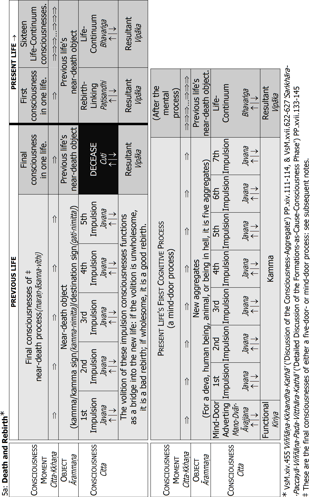
Notes for Table '5a: Death and Rebirth'
• One consciousness lasts one consciousness moment(cittakkhaṇa), with three stages: arising(uppāda) , standing(ṭhiti) ⏐, dissolution(bhaṅga) ↓.
• Cognition follows a fixed procedure, according to the natural law of the mind(cittaniyāma). The procedure for death and birth is:
Final Mental Process in One Life
One life's final mental process is either a five-door process or a mind-door process.139 The object of the final mental process is one of three:
1) Kamma: the volitional formations of an unwholesome or wholesome kamma accomplished earlier in the same life or a previous life. For example, one may recollect the hatred associated with slaughtering animals, the happiness associated with offering food to bhikkhus or other receivers, or the happiness and tranquillity associated with meditation.
2) Kamma Sign(kamma nimitta): an object associated with an unwholesome or wholesome kamma accomplished earlier in the same life or a previous life. A butcher may see a butcher's knife or hear the screams of animals about to be slaughtered, an abortionist may see a dead foetus, a doctor may see patients, a devotee of the Triple Gem may see a bhikkhu, a Buddha image or hear chanting of the Pali Texts, and a meditator may see the paṭibhāga nimitta of his samatha meditation subject, or one of the three characteristics of his vipassanā meditation subject.
3) Destination sign(gati nimitta): a vision of one's destination, where one is about to be reborn. For rebirth in hell, one may see fire; for an animal rebirth, one may see forests or fields; for a deva-rebirth, one may see deva-mansions.
This object serves as the object of the next life's process-separated consciousnesses(vīthimuttacitta).140/E82 They arise independently of sense-door processes. They are all life-continuum consciousnesses(bhavaṅgacitta), with the same past object, and same mental factors. The first such consciousness in one life serves as a link between the past existence and the present, so it is called the rebirth-linking consciousness(paṭisandhicitta). The last life-continuum consciousness in one life is called the decease consciousness(cuticitta), because it passes the mentality-materiality continuity on/over to the next existence. All such consciousnesses that arise throughout one life, in between the various mental processes, are just called life-continuum consciousnesses(bhavaṅgacitta).141/E83
The final mental process of a life has always only five impulsions (not the usual seven). Their volition does not alone produce the rebirth-linking consciousness, but functions as a bridge to cross into the new life.142 They may be followed by two registration consciousnesses. There may also arise life-continuum consciousnesses before the decease consciousness: they may arise for a shorter or longer time, even up to days or weeks. With the cessation of the decease consciousness, the life faculty is cut off, and there remains only a corpse: dead materiality.
First Mental Process in One Life
Immediately after the rebirth-linking consciousness (the first consciousness of a life),143 follow sixteen life-continuum consciousnesses with the same object.144 And then always a mind-door process, which has the new aggregates as object. Release from the suffering of death (17 consciousness moments earlier) gives rise to relief accompanied by attachment(nikantika), which is existence craving (bhavataṇhā). Hence, the kamma accomplished by the first mental process in one life is always unwholesome (akusala).
1a: The Unwholesome Resultant Consciousness(AkusalaVipākaCitta)
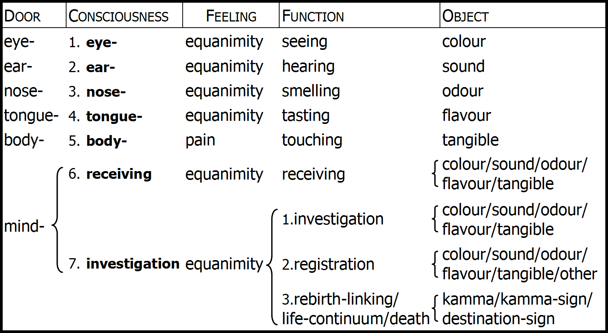
In the Pali, it is understood that these types of resultant consciousness are unrooted (ahetuka) sensual-sphere consciousnesses(kāmāvacaracitta).
Consciousness: see table '5b: The Five-Door Process', p.168.
Feeling: in the act of seeing, derived materiality (colour) strikes upon derived materiality (the eye translucency of an eye decad-kalāpa). Thus the impact is weak. It is like striking with one ball of cotton upon another ball of cotton that is lying on an anvil. Hence, both the unwholesome and wholesome resultant eye consciousness is accompanied by only equanimity. This is the same for hearing, smelling, and tasting. But in the act of touching, a great essential object(mahābhūtārammaṇaṁ) (tangible = earth-/fire-/wind element) strikes upon derived materiality (the body translucency of a body decad-kalāpa) as well as upon the four great essentials (of the same body decad-kalāpa). It is like striking with a hammer upon a ball of cotton lying on an anvil. Hence, the unwholesome resultant body consciousness is always accompanied by painful feeling, and the wholesome resultant body consciousness is always accompanied by pleasant feeling (DhSA.I.iii 'AbyākataPadaṁ' ('Discourse on Unmoral Consciousness') E.349-350: see also table '1b: The Wholesome Resultant Unrooted Consciousness', p.66).
Function: the type of consciousness called the investigation consciousness may function as one life's life-continuum consciousnesses: the first one is the rebirth-linking consciousness (paṭisandhicitta) and the last one is the decease consciousness(cuticitta). Such types of consciousness are also called process-separate consciousnesses(vīthimuttacitta). See table mentioned below.
Object: for the kamma/kamma sign/destination sign, see notes to table '5a: Death and Rebirth', p.51.
Ignorance and Craving and the Roots
Before we go on to explain the consciousnesses with wholesome roots, perhaps it is better now to explain the connection between ignorance and craving and the three unwholesome roots.
Let us again quote The Buddha in the 'GaddulaBaddha' sutta:
A first point is not known of ignorance-hindered beings fettered by craving, rushing on and running about.
This is what The Buddha calls the round of rebirth(saṁsāra). The round of rebirth is just continued rebirth, life after life. At the end of each life, there is death, and immediately after death, an unwholesome or wholesome kamma produces its result: the result is a new rebirth-linking consciousness(paṭisandhicitta), and new aggregates. As The Buddha explained, this continued process is maintained by ignorance(avijjā) and craving(taṇhā).
When there is craving, the consciousness is greed-rooted(lobhamūla). And, as explained earlier, when there is greed, there is also delusion(moha). Delusion is the same as ignorance. A greed-rooted consciousness is always associated with delusion, which means craving is always associated with ignorance. Craving (taṇhā) is the same as greed(lobha), and ignorance(avijjā) is the same as delusion(moha).
Why then does The Buddha mention only ignorance and craving? Why does He not mention hatred? It is because not everyone has hatred. When one becomes a Non-Returner(AnĀgāmi), one will have destroyed the hatred root(dosamūla). But there remains some very subtle ignorance and craving as latencies(anusayā), very subtle existence-craving(bhavataṇhā). The Buddha calls it the lust-for-existence latency(bhavarāgānusaya).145/E84 Everyone except the Arahant has ignorance and craving, and they are the most fundamental conditions for continued rebirth.
Let us say, for example, we think: 'I do not want to be reborn anymore! I want to be a true disciple of The Buddha!' And we practise with the desire for Arahantship in this life. But even though we have a strong desire to put an end to rebirth, it depends on our pāramī :146 especially wisdom(paññā). How much samatha and vipassanā practice did we accomplish in past lives. If we accomplished sufficient wisdom in past lives, we may indeed attain Arahantship in this life: otherwise it is impossible. We may practise with a great desire for Arahantship and no more rebirth, but because our wisdom is not yet deep enough, that desire is in fact also not strong enough. There is still the latency of lust for existence, the latent craving to come into existence(bhavataṇhā).147 It is only with the Arahant Path-Knowledge(ArahattaMaggaÑāṇa) that craving to come into existence, and its associated ignorance, is destroyed without remainder. That is why The Buddha speaks of only ignorance and craving: not mentioning hatred.
Let us now discuss the wholesome roots.
Wholesome Consciousness
The wholesome roots are also three: non-greed(alobha), non-hatred(adosa) and non-delusion(amoha).148 But when discussing the roots, we do not say non-delusion, we say knowledge(ñāṇa).
Just as unwholesome consciousnesses never can be associated with good things, so can wholesome consciousnesses never be associated with bad things.E85 That is why wholesome consciousnesses never can be associated with consciencelessness(ahiri), shamelessness(anottappa), restlessness(uddhacca), or greed(lobha), hatred(dosa) and delusion(moha). Wholesome consciousnesses are associated always with good things such as the nineteen so-called beautiful universals(sobhanasādhāraṇa) : for example, conscience(hiri) and shame(ottappa),149 tranquillity of [mental] body(kāyapassaddhi), and tranquillity of consciousness(cittapassaddhi),150 mindfulness(sati) and faith(saddhā).151 In the same way, all wholesome consciousnesses are associated with non-greed(alobha) and non-hatred(adosa). A non-greed rooted consciousness is always associated also with non-hatred, and a non-hatred rooted consciousness is also always associated with non-greed. But not all wholesome consciousnesses are associated with non-delusion, with knowledge: that is the main distinction between them.E86 We have thus two main types of wholesome consciousness:152
• Consciousness that is knowledge-dissociated.(ñāṇavippayutta): it is double-rooted(dvihetuka), rooted in only non-greed and non-hatred.
• Consciousness that is knowledge-associated.(ñāṇasampayutta): it is triple-rooted(tihetuka), rooted in non-greed, non-hatred, and non-delusion (knowledge(ñāṇa)).
Please note that the wholesome consciousness dissociated from knowledge is not thereby associated with delusion(moha). There is merely no knowledge: a wholesome consciousness cannot be associated with delusion.
Non-greed, non-hatred, and knowledge make a consciousness wholesome, which means the volition is wholesome: wholesome kamma.E87 The Buddha also calls it merit(puñña). And the accomplishment of wholesome kamma He also calls meritorious formation(puññābhisaṅkhāra).153 If that kamma produces its result, it will be a wished for, desired, and agreeable result. And such wholesome kamma is necessary for us to put an end to kamma and rebirth.E88
Here we should mention that with attainment of the Arahant Path(ArahattaMagga), all subsequent consciousnesses in one's final life are associated with non-greed and non-hatred. The Arahant's constant abiding(satatavihāra) E89 is namely cognizing the arising and perishing of formations, and their dependent origination. It is almost always knowledge-associated. But at the time of waking up or falling asleep, or when tired, weak, or sick, the Arahant's cognition may be knowledge-dissociated.E90 Nonetheless, the Arahant's consciousnesses are not wholesome as such, for the Arahant's volition does not generate kamma: it is purely functional(kiriya).154
Non-Greed and Non-Hatred Rooted Consciousness
Wholesome consciousnesses are always rooted in non-greed(alobha) and non-hatred(adosa). What does that mean? Here, non-greed refers to anything that has to do with generosity(cāga), offering(dāna), and renunciation(nekkhamma), gross or subtle. Non-hatred refers to anything that has to do with loving-kindness(mettā), goodwill(abyāpada), amity(avera), pity(avihiṁsā), compassion(karuṇā), and sympathetic joy(mūditā) (rejoicing in another's good fortune) gross or subtle. And they cannot be separated. When there is offering, there is also goodwill. When there is compassion, there is also renunciation. And, of course, such consciousnesses cannot be associated with delusion: they can only be either dissociated from or associated with non-delusion(amoha).
Knowledge-Dissociated and Knowledge-Associated
What then is the non-delusion, the knowledge(ñāṇa), dissociated from or associated with wholesome consciousnesses?
As we explained earlier,155 the delusion associated with unwholesome consciousnesses is to see and believe in conventional truth(sammutisacca), instead of ultimate truth(paramatthasacca): it is to see women and men, mothers and fathers, dogs, cats, pigs, and chickens, etc., instead of seeing the aggregates (khandha), mentality-materiality(nāmarūpa), dependent origination(paṭiccasamuppāda), etc. The knowledge dissociated from or associated with wholesome consciousnesses, however, is five types of knowledge(ñāṇa). They are also called wisdom(paññā) or Right View(SammāDiṭṭhi).156
The Five Types of Knowledge
The first three types of knowledge are mundane(lokiya):
1) Kamma-Ownership Knowledge/Wisdom(KammaSsakataÑāṇaṁ/Paññā): knowledge about the workings of kamma, which is knowing that one's rebirth is determined by one's own past kamma, and that throughout one's life, one's own past and present unwholesome kamma produces painful results, whereas one's own wholesome kamma produces pleasant results.157 This is the basic Right View(SammāDiṭṭhi).158
2) Jhāna Wisdom159(JhānaPaññā) :160 this is knowledge absorbed into,161 fixed onto, one's meditation object.162 It may be fixed onto, for example, the counterpart sign in mindfulness-of-breathing and the ten kasiṇas, or the image of happy beings in loving-kindness meditation.
3) Insight Knowledge/Wisdom(vipassanāñāṇa/paññā): this is knowledge absorbed into, fixed onto, the three characteristics of ultimate materiality and mentality.163 When a consciousness is associated with this knowledge, it does not see women and men, mothers and fathers, dogs, cats, pigs, and chickens; it does not see hands and feet, eyes and ears, left and right, etc.:164 such things are conventional truth(sammutisacca), concepts(paññati). They do not exist according to reality(yathābhūta): we cannot practise insight meditation (vipassanābhāvanā) on things that do not exist. The object of insight meditation is ultimate truth(paramatthasacca): the aggregates(khandha), mentality-materiality(nāmarūpa), dependent origination(paṭiccasamuppāda), etc. They exist according to reality.
These three types of knowledge are mundane: they know the formed element (saṅkhatadhātu). The next two types of knowledge are supramundane(lokuttara). They know Nibbāna, the Unformed Element(AsaṅkhataDhātu) :165
4) Path Knowledge/Wisdom(MaggaÑāṇaṁ/Paññā): it is the first consciousness that knows Nibbāna: the Stream-Entry-, Once-Return-, Non-Return-, or Arahant Path-Knowledge.
5) Fruition Knowledge/Wisdom(PhalaÑāṇaṁ/Paññā) :166 it is the subsequent consciousness that knows Nibbāna: the Stream-Entry-, Once-Return-, Non-Return-, or Arahant Fruition-Knowledge.
These two supramundane knowledges are superior to all other kinds of knowledge.167 But outside the Dispensation of a Buddha, they arise only in those who become Paccekabuddhas, nobody else, because Paccekabuddhas are unable to teach the Dhamma. Only a Fully Enlightened Buddha is able to teach others how to attain these two knowledges.
When a wholesome consciousness is associated with one of these five types of knowledges, it is associated with non-delusion(amoha), which means it is knowledge-associated(ñāṇasampayutta): triple-rooted(tihetuka). But when a wholesome consciousness is dissociated from one of these five knowledges, it is dissociated from non-delusion, which means it is knowledge-dissociated(ñāṇavippayutta): double-rooted(dvihetuka).
Unprompted/Prompted
If the wholesome kamma is accomplished spontaneously, without hesitation or the urging by self or another,168 it is unprompted(asaṅkhārika); if the wholesome kamma is accomplished with hesitation, or the urging by self or another, it is prompted(sasaṅkhārika).169/E91 The volition of unprompted wholesome kamma is the stronger, although both unprompted and prompted wholesome kamma have the same combination of mental factors.170 But there are other important factors to be considered.
Inferior and Superior
Wholesome kamma can also be divided into the inferior(omaka) and superior (ukkaṭṭha).171 It depends on how one performs the wholesome kamma. When accomplishing wholesome kamma, four things decide the quality of the kamma:172
1) Desire(chanda): this is one's desire to perform the wholesome kamma: for example, one's desire to make the offering, one's desire to abstain from the unwholesome action, one's desire to concentrate on the meditation subject. If one's desire is low, the wholesome kamma is inferior, whereas if it is high, one's wholesome kamma is superior.
2) Energy(vīriya): this is one's arousing of energy to perform the wholesome kamma, the arousing of effort(padhāna).
3) Consciousness(citta): this is one's concentrating on the wholesome kamma. Without distraction, one makes the offering, undertakes the precepts, concentrates on the meditation subject, etc.
4) Investigation(vīmaṁsā): this is one's knowledge(ñāṇa), wisdom(paññā), and Right View(SammāDiṭṭhi) when performing the wholesome kamma. We just discussed it.
When either of these factors is low or middling, the wholesome kamma is inferior; when high, the wholesome kamma is superior. For example, if one makes an offering or undertakes the precepts in order to attain future sensual pleasures as a rich human being, or a deva, then the wholesome kamma is inferior. If one does it with the intention to attain Nibbāna, then the wholesome kamma is superior.173 We shall discuss this in more detail later, when we discuss the three merit-work bases(puññakiriyavatthu).174
The inferior is thus associated with unwholesome things before and after the wholesome kamma consciousnesses, whereas the superior is associated with wholesome things before and after the wholesome kamma consciousnesses. They are called the preceding&succeeding volitions(pubbāparacetanā).175
What does this mean? When we make knowledge-associated offerings, or train in knowledge-associated morality and meditation, it does not mean we no longer see concepts such as men and women, etc.: we do, but such unwholesome consciousnesses intersperse the wholesome consciousnesses. Generally speaking,176 during the whole course of a meritwork, many different kinds of consciousnesses will arise: unwholesome as well as wholesome.
When we make an offering, the wholesome consciousnesses of offering that take the wholesome kamma of offering as object may be interspersed by different types of unwholesome consciousness: we discussed them in connection with the different types of temperament.177 For example, there may be greed-rooted consciousnesses, thinking: 'My offering is better than her offering!' or 'If I make this superior offering, maybe I shall win the lottery!' or 'My business will prosper!' There may be hatred-rooted consciousnesses, thinking: 'My offering is not very good!' or after the offering, 'I made too much food: what a waste!' And there may be delusion-rooted consciousnesses, thinking: 'This is my mother', 'this is my son', 'this is a bhikkhu', etc., or 'Can offerings produce rebirth? Is it true?'
Our offering may, on the other hand, be interspersed by wholesome consciousnesses: rooted in non-greed and non-hatred. For example: 'I want to make very good offerings: that will make me happy!' or 'How good it is that he also makes offerings!' (rejoicing over another's offering). The interspersing wholesome consciousnesses may also be knowledge-associated. For example: 'Making offerings will make me happy: it will help my meditation!' or 'This offering can be a supporting cause for my attainment of Nibbāna!'E92
In the same way, when we attain jhāna, the jhāna consciousnesses will all be associated with knowledge of the meditation object. But before we go into jhāna, or after we have come out of jhāna, there may be unwholesome consciousnesses. For example, greed-rooted consciousnesses may arise, thinking: 'I am a very good meditator!' or 'If I can sit in jhāna for a whole day, I can become famous!' Hatred-rooted consciousnesses may arise, thinking: 'Why is that meditator so noisy!' or 'What is the use of sitting in jhāna?' Delusion-rooted consciousnesses may arise, thinking: 'This is my mother', 'this is my son', 'this is a bhikkhu', etc., or 'Does jhāna enable me to see past and future lives? Is it true?'
Our jhāna may, on the other hand, be interspersed by wholesome consciousnesses, rooted in non-greed and non-hatred. For example: 'I want to develop jhāna: that will make me happy!' or 'How good it is that he is also meditating!' (this is rejoicing over another's practice). The interspersing wholesome consciousnesses may also be knowledge-associated. For example: 'Developing jhāna will enable me to see ultimate truth: then I can practise insight meditation, and attain Nibbāna!'
Teaching of Dhamma may also be interspersed by unwholesome consciousnesses.178 For example, if one teaches the Dhamma for gain, with the thought, 'By this I will be known as a teacher!' greed-rooted consciousnesses arise. The same if one reads the Dhamma or listens to Dhamma talks with the thought: 'By this people will consider me as one of the faithful!' One's teaching and learning the Dhamma may, on the other hand, be interspersed by wholesome consciousnesses, rooted in non-greed and non-hatred, even in knowledge: for example, if one teaches and learns the Dhamma thinking, 'Teaching the Dhamma will help me understand the Dhamma better, and be a supporting cause for attaining Nibbāna!' and 'Learning the Dhamma is very meritorious, and will be a supporting cause for attaining Nibbāna!'
In this way, we may understand that unless we are in deep concentration, practising samatha or vipassanā, many, many different types of mental process may arise one after the other: wholesome and unwholesome. But please always remember that these analyses are only general guidelines: the workings of kamma is very profound, and there are many variations. Only a Buddha can explain them in detail, and then only case by case.
Inferior and Superior; the Roots and Resultants
Why are these associated things important? Because they help determine the quality of the wholesome kamma's result. The quality of the impulsion consciousnesses( javana) determines the quality of the resultant consciousnesses(vipākacitta): for example, the quality of the rebirth-linking consciousness(paṭisandhicitta).
1f: Inferior & Superior Wholesome Kamma, Their Roots & Resultant Rebirth-Linking
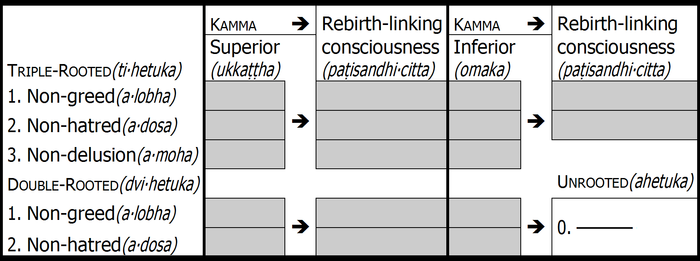
According to inferiority and superiority, and the dissociation or association of knowledge, there are three different types of resultant consciousness:179
1) The wholesome resultant consciousness that is unrooted(ahetuka): it may function either as a process consciousness(vīthicitta) or as a process-separate consciousness(vīthimuttacitta).
i) As a process consciousness(vīthicitta), the wholesome resultant unrooted consciousness is the result of wholesome kamma that is inferior(omaka) as well as superior(ukkaṭṭha), knowledge-dissociated(ñāṇavippayutta) as well as knowledge-associated(ñāṇasampayutta), triple-rooted(tihetuka) as well as double-rooted(dvihetuka). How so? Because any type of wholesome kamma may produce eye consciousness, ear consciousness, etc. Also a Buddha sees, hears, smells, tastes, and touches objects that are the result of wholesome kamma: pleasant(iṭṭha) or very pleasant(atiiṭṭha).
ii) As a process-separate consciousness(vīthimuttacitta), the wholesome resultant unrooted consciousness is the result of wholesome kamma that is inferior(omaka) and knowledge-dissociated(ñāñavippayutta): inferior double-rooted(dvihetuka). If such kamma produces the rebirth-linking consciousness, one will be either a lower deva, a rakkha, a nāga or garūda, or a human being who is congenitally blind, deaf, mute, or in some other way physically or mentally deficient.
1b: The Wholesome Resultant Unrooted Consciousness(KusalaVipākaAhetukaCitta)
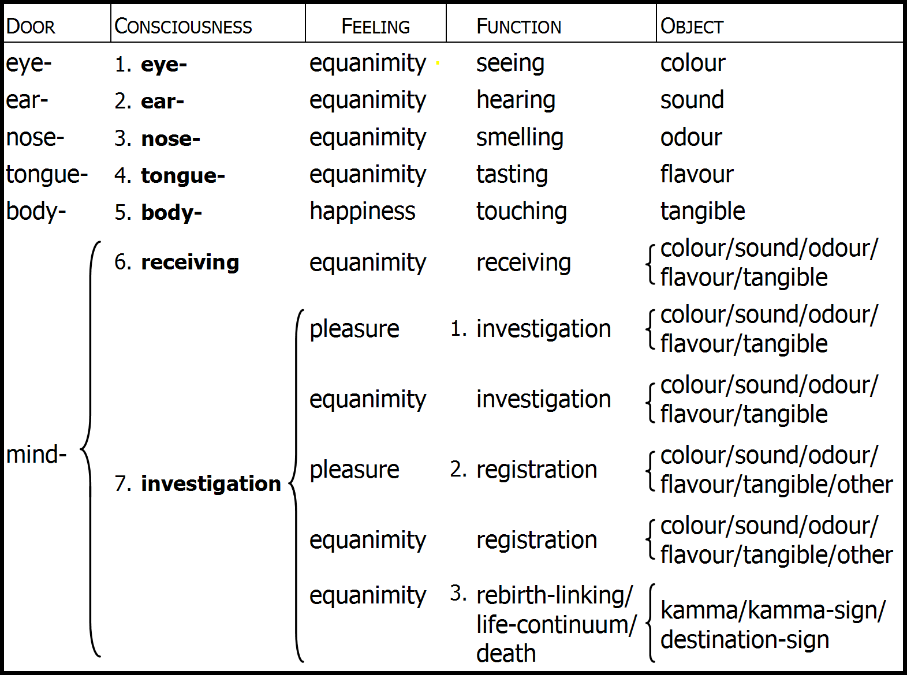
In the Pali, it is understood that these types of resultant consciousness are sensual-sphere consciousnesses(kāmāvacaracitta).
Consciousness: see table '5b: The Five-Door Process', p.168.
Feeling: see notes to 'Unwholesome Resultant Consciousness', p.53.
Function: the type of consciousness called the investigation consciousness may function as one life's life-continuum consciousnesses: the first one is the rebirth-linking consciousness (paṭisandhicitta) and the last one is the decease consciousness(cuticitta). Such types of consciousness are also called process-separate consciousnesses(vīthimuttacitta). See table mentioned below.
Object: for the kamma/kamma sign/destination sign, see notes to table '5a: Death and Rebirth', p.51.
2) The resultant consciousness that is double-rooted(dvihetuka) :180 it is the result of two types of wholesome kamma. Wholesome kamma that is superior(ukkaṭṭha) and knowledge-dissociated (superior double-rooted), and wholesome kamma that is inferior and knowledge-associated(ñāṇasampayutta): inferior triple-rooted(tihetuka). As we just mentioned, when such kamma produces eye consciousness, ear consciousness, etc., those resultant consciousnesses are unrooted: those types of consciousness are unrooted whatever the wholesome kamma that produces them. But if the double-rooted resultant consciousness becomes a rebirth-linking consciousness, one will be a lower deva, or a low-born human being, but with faculties complete. And one's wisdom will be dull, meaning one will be unable to understand the Dhamma well. And one will in that life be unable to attain either jhāna or Path&Fruition.E93
3) The resultant consciousness that is triple-rooted(tihetuka): it is the result of wholesome kamma that is superior and knowledge-associated: superior triple-rooted. And here again, when such kamma produces eye consciousness, ear consciousness, etc., those resultant consciousnesses are unrooted: those types of consciousness are unrooted whatever the wholesome kamma that produces them. But if the triple-rooted resultant consciousness becomes a rebirth-linking consciousness, one will be either a very beautiful high deva with superior deva-pleasures, or a high-born human being with faculties complete, great beauty, good health, enjoying superior sensual pleasures, etc.E94 And one's wisdom will be sharp, meaning one will be able to understand the Dhamma well. And in that life (according to one's pāramī ), one will be able to attain jhāna and Path&Fruition.
1c: The Rooted Sensual-Sphere Resultant Consciousness(SahetukaKāmĀvacaraVipākaCitta)↗
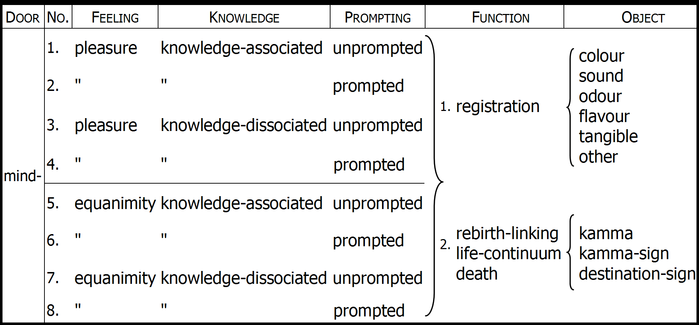
The kamma consciousnesses that produce these types of resultant consciousness are also called the great wholesomes(mahākusala), and their resultants the great resultants (mahāvipāka). Even so, the great resultants are usually not called wholesome-resultants (kusalavipāka), since that term refers usually only to the wholesome resultant unrooted types of consciousness: see table, p.66.
Prompting: see 'Unprompted and Prompted', p.61.
Knowledge: see 'Knowledge-Dissociated and Knowledge-Associated', p.58.
Function: these eight types of consciousness may function as one life's life-continuum consciousnesses: the first one is the rebirth-linking consciousness(paṭisandhicitta) and the last one is the decease consciousness(cuticitta). Such types of consciousness are also called process-separate consciousnesses(vīthimuttacitta). See table mentioned below.
Object: for the kamma/kamma sign/destination sign, see notes to table '5a: Death and Rebirth', p.51.
Again, please remember that these analyses are general guidelines: there are many variations. Thus, someone with sharp wisdom who is ugly, born into a rich or poor family, may in fact have a triple-rooted rebirth-linking consciousness; or someone who is dull but very beautiful, born into a rich or poor family, may in fact have a double-rooted rebirth-linking consciousness.181 You will understand it better when you discern these workings of kamma yourself with your own direct knowledge: when you discern dependent origination, and attain the Cause-Apprehending Knowledge(PaccayaPariggahaÑāṇa).
In accordance with these guidelines, we shall now discuss wholesome consciousness as the three merit-work bases(puññakiriyavatthu).
The Merit-Work Bases
The three merit-work bases(puññakiriyavatthu) are three ways to accomplish wholesome kamma, to develop wholesome consciousness. They are:E95 offering (dāna), morality(sīla), and meditation (bhāvanā).182/E96
All three merit-work bases can be either knowledge-dissociated(ñāṇavippayutta) or knowledge-associated(ñāṇasampayutta); in other words, double-rooted(dvihetuka) or triple-rooted(tihetuka).
For offering and morality, the associated knowledge is the Kamma-Ownership Knowledge(KammaSsakataÑāṇa); for meditation, the associated knowledge is either jhāna-wisdom(jhānapañña), or insight meditation-knowledge(vipassanāñāṇa). And if our meditation reaches its summit, the associated knowledge is Path Knowledge (MaggaÑāṇa) and Fruition Knowledge(PhalaÑāṇa).
Offering
The first merit-work base is offering (dāna): the kamma of offering someone something.183 Such an act is opposite greed; rooted in non-greed(alobha). It is also rooted in non-hatred(adosa), because hatred cannot arise together with non-greed. If we offer without faith in the Kamma-Ownership Knowledge(KammaSsakataÑāṇa), it is knowledge-dissociated (ñānavippayutta): double-rooted(dvihetuka). If we offer with faith or direct knowledge of the Kamma-Ownership Knowledge, it is knowledge-associated(ñāṇasampayutta): triple-rooted(tihetuka).
As we just mentioned, the Kamma-Ownership Knowledge is the basic Right View: it exists also outside a Buddha's Dispensation. But so long as one has not seen the workings of dependent origination (so long as one has not attained the Cause-Apprehending Knowledge(PaccayaPariggahaÑāṇa)), so long is that Right View based on faith in one's teacher. If one's teacher is The Buddha, one's Right View can be strong. And one may make great offerings that are knowledge-associated.184
3a: Mental Phenomena(nāmadhamma) at the Arising of Knowledge-Dissociated Consciousness(ñāṇavippayuttacitta) 185 | |||||||||||||
Consciousness(citta) | |||||||||||||
Mental Factors(cetasika) | |||||||||||||
Universals (sabbacittasādhāraṇa) | |||||||||||||
1. contact(phassa) | |||||||||||||
2. feeling186(vedanā) | |||||||||||||
3. perception(saññā) | |||||||||||||
4. volition(cetanā) | |||||||||||||
5. one-pointedness (ekaggatā) | |||||||||||||
6. life faculty( jīvitindriya) | |||||||||||||
7. attention(manasikāra) | |||||||||||||
Miscellaneous(pakiṇṇaka) | |||||||||||||
1. application(vitakka) | |||||||||||||
2. sustainment(vicāra) | |||||||||||||
3. decision(adhimokkha) | |||||||||||||
4. energy(vīriya) | |||||||||||||
5. joy(pīti) | |||||||||||||
6. desire(chanda) | |||||||||||||
Beautiful Universals (sobhanasādhāraṇa) | |||||||||||||
1. faith(saddhā) | |||||||||||||
2. mindfulness(sati) | |||||||||||||
3. conscience(hiri) | |||||||||||||
4. shame(ottapa) | |||||||||||||
5. non-greed(alobha) | |||||||||||||
6. non-hatred(adosa) | |||||||||||||
7. ever-evenness | xx | xx | |||||||||||
Please continue next page. | |||||||||||||
If one's offering is knowledge-dissociated, however, dissociated from the Kamma-Ownership Knowledge, one makes offerings for a reason other than to accomplish wholesome kamma.
The Workings of Offering
Knowledge-Dissociated
For example, it is very rare for children to offer with knowledge of the workings of kamma. Usually children will offer because they want to copy their parents, or because their parents have told them to offer, or because they enjoy offering, or enjoy being praised when they offer. Even most adults offer without knowledge of the workings of kamma. One may offer, for example, out of loving-kindness, wishing to help another, such as offering food and other requisites to the poor, the starving, etc. One may also offer to ascetics and monks, etc. because of kindness. One may also offer because it is custom or tradition, or because one's religion says one should. And one may offer because of conceit, wanting to have a good name, and be respected. One may even offer because one is afraid of blame. When parents give something to their children there is usually also much attachment and unwise attention (thinking, 'This is my son', or, 'This is my daughter'): the same when a husband gives something to his wife, a wife to her husband, a friend to a friend, etc. One may even offer with wrong view: offering and believing that there is no result from offering, that there is no rebirth after death, etc.
Continued from previous page. | ||||||||||||||
3a: Mental Phenomena(nāmadhamma) at the | ||||||||||||||
Beautiful Universals (sobhanasādhāraṇa) | ||||||||||||||
8. tranquillity of [mental] | ||||||||||||||
9. tranquillity of consciousness | ||||||||||||||
10. lightness of [mental] | ||||||||||||||
11. lightness of consciousness | ||||||||||||||
12. flexibility of [mental] | ||||||||||||||
13. flexibility of consciousness (cittamudutā) | ||||||||||||||
14. wieldiness of [mental] | ||||||||||||||
15. wieldiness of consciousness (cittakammaññatā) | ||||||||||||||
16. proficiency of [mental] | ||||||||||||||
17. proficiency of consciousness (cittapāguññatā) | ||||||||||||||
18. rectitude of [mental] | ||||||||||||||
19. rectitude of consciousness (cittujukatā) | ||||||||||||||
Abstinences(viratī) | ||||||||||||||
1. Right Speech(SammāVācā) | ||||||||||||||
2. Right Action(SammāKammanta) | ||||||||||||||
3. Right Livelihood(SammāĀjīva) | ||||||||||||||
Immeasurables(appamaññā) | ||||||||||||||
1. compassion(karuṇā) | ||||||||||||||
2. sympathetic joy(muditā) | ||||||||||||||
Total mental phenomena | 33 | 34 | 32 | 33 | ||||||||||
Even so, offering is in all cases wholesome: if it is interspersed by wholesome consciousnesses, it can even be superior(ukkaṭṭha). But when it is dissociated from knowledge of the workings of kamma, it is the less superior, for it is only double-rooted(dvihetuka): associated with only non-greed(alobha) and non-hatred(adosa). The kamma being less powerful means the result will also be less powerful.
Knowledge-Associated
3b: Mental Phenomena(nāmadhamma) at the | |||||||||||||
Consciousness(citta) | |||||||||||||
Mental Factors(cetasika) | |||||||||||||
Universals (sabbacittasādhāraṇa) | |||||||||||||
1. contact(phassa) | |||||||||||||
2. feeling(vedanā) | |||||||||||||
3. perception(saññā) | |||||||||||||
4. volition(cetanā) | |||||||||||||
5. one-pointedness (ekaggatā) | |||||||||||||
6. life faculty( jīvitindriya) | |||||||||||||
7. attention(manasikāra) | |||||||||||||
Miscellaneous(pakiṇṇaka) | |||||||||||||
1. application(vitakka) | |||||||||||||
2. sustainment(vicāra) | |||||||||||||
3. decision(adhimokkha) | |||||||||||||
4. energy(vīriya) | |||||||||||||
5. joy(pīti) | |||||||||||||
6. desire(chanda) | |||||||||||||
Beautiful Universals (sobhanasādhāraṇa) | |||||||||||||
1. faith(saddhā) | |||||||||||||
2. mindfulness(sati) | |||||||||||||
3. conscience(hiri) | |||||||||||||
4. shame(ottapa) | |||||||||||||
5. non-greed(alobha) | |||||||||||||
6. non-hatred(adosa) | |||||||||||||
7. ever-evenness | xx | xx | |||||||||||
8. tranquillity of [mental] | |||||||||||||
9. tranquillity of consciousness | |||||||||||||
10. lightness of [mental] body(kāyalahutā) | |||||||||||||
11.lightness of consciousness | |||||||||||||
12.flexibility [of mental] body(kāyamudutā) | |||||||||||||
13.flexibility of consciousness | |||||||||||||
Please continue next page. | |||||||||||||
Offering with knowledge of the workings of kamma is more powerful. Why? Because the presence of wisdom means the consciousness is triple-rooted(tihetuka): rooted in non-greed(alobha), non-hatred(adosa), and non-delusion(amoha). That always makes a wholesome kamma more powerful.
A further important factor is whether the offering is inferior(omaka) or superior(ukkaṭṭha).
The Inferior Offering
What are the factors for an offering that is inferior(omaka) ? There are four:E97
1) The offerer has obtained the requisite by wrong livelihood.
2) The offerer has poor or no morality: she or he keeps only some precepts, or no precepts at all.
3) Before or after the kamma consciousnesses of the actual offering, the offerer's mind is associated with unwholesome things. For example, before offering, she or he may have been angry or impatient; she or he may be dissatisfied with the requisite, or she or he may offer in a casual or distracted manner; after offering, she or he may regret having made the offering.190 She or he may also have only shallow faith in the workings of kamma. She or he may also make the offering with the wish for some worldly gain, or for sensual pleasures in a future life as a rich human being, or a deva.
4) The receiver has poor or no morality: she or he keeps only some precepts, or no precepts at all.E98
These are examples of how one's offering can be interspersed by countless thousand million unwholesome consciousnesses rooted in greed(lobha), hatred (dosa), and delusion(moha). That makes one's offering inferior. If in such a case, one does not understand the workings of kamma, it is dissociated from non-delusion, which makes one's offering inferior, double-rooted(dvihetuka): that means the resultant consciousness will be unrooted(ahetuka). If one does understand the workings of kamma, it is associated also with non-delusion (amoha), but even so the interspersion of countless unwholesome consciousnesses make one's offering inferior, triple-rooted(tihetuka): that means the resultant consciousness will be only double-rooted(dvihetuka).
Continued from previous page. | ||||||||||||||
3b: Mental Phenomena(nāmadhamma) at the | ||||||||||||||
Beautiful Universals (sobhanasādhāraṇa) | ||||||||||||||
14. wieldiness [of mental] body(kāyakammaññatā) | ||||||||||||||
15. wieldiness of consciousness | ||||||||||||||
16. proficiency [of mental] body(kāyapāguññatā) | ||||||||||||||
17. proficiency of consciousness | ||||||||||||||
18. rectitude [of mental] body(kāyujukatā) | ||||||||||||||
19. rectitude of consciousness (cittujukatā) | ||||||||||||||
Abstinences(viratī) | ||||||||||||||
1. Right Speech(SammāVācā) | ||||||||||||||
2. Right Action(SammāKammanta) | ||||||||||||||
3. Right Livelihood(SammāĀjīva) | ||||||||||||||
Immeasurables(appamaññā) | ||||||||||||||
1. compassion(karuṇā) | ||||||||||||||
2. sympathetic joy(muditā) | ||||||||||||||
Non-Delusion(amoha) | ||||||||||||||
1. WISDOM FACULTY (paññindriya) | ||||||||||||||
Total mental phenomena | 34 | 35 | 33 | 34 | ||||||||||
In the Pali Texts, there is an example of a man who makes such inferior offerings.191 In one of His past lives, when He was only an unenlightened Bodhisatta, The Buddha was a hermit(tāpasa) called Kaṇhadīpayana. One day, a father and mother brought their young son to him, because the boy had been bitten by a snake. And to counteract the poison, they all decided to make declarations of Truth(Saccakiriya). After the Bodhisatta had made his declaration, the father made his. He declared that he made offerings without delight, unwillingly: not having faith in the results of making offerings, he made offerings without conviction. That means his offerings were all inferior.
The Superior Offering
The factors for an offering that is superior(ukkaṭṭha) are the opposite:
1) The offerer has obtained the requisite by Right Livelihood.
2) The offerer has good morality: she or he keeps the precepts.
3) Before or after the offering consciousnesses, the offerer's mind is associated with wholesome things. For example, before offering, she or he may with joy (pīti) 192 have made great effort to get good requisites; she or he may offer in a respectful, concentrated, and joyful manner; after offering, she or he may rejoice over having made the offering. And she or he has deep faith in the workings of kamma. She or he may make the offering with the wish for Nibbāna.
4) The receiver has good morality: she or he keeps the precepts. The most superior receiver is, of course, a Buddha, another Arahant,193 a Noble One, or one practising for the attainment of Arahantship. But the even more superior receiver is one or more bhikkhus or novices seen as representatives of the Sangha.E99
These are examples of how one's offering can be interspersed by countless thousand million wholesome consciousnesses associated with non-greed (alobha), non-hatred(adosa), and joy(pīti). If one does not understand the workings of kamma, it is dissociated from non-delusion, which makes one's offering superior, double-rooted(dvihetuka): that means the resultant consciousness will be double-rooted. If one does understand the workings of kamma, it is associated also with non-delusion(amoha), which makes one's offering superior, triple-rooted(tihetuka): that means the resultant consciousness will be triple-rooted.
Morality
The second merit-work base is morality(sīla): to abstain from certain unwholesome kammas. It comprises the three abstinences(viratī): Right Speech(SammāVācā), Right Action(SammāKammanta), and Right Livelihood(SammāĀjīva), which is, livelihood that excludes wrong speech(micchāvācā) or wrong action(micchākammanta).194 These abstinences arise on three occasions:195
1) There arises an occasion to do an unwholesome thing(akusala dhamma). But one abstains because one considers it an unsuitable thing to do.196 This is called occasional-abstinence(sampattavirati): one abstains as and when the occasion arises.
2) There arises an occasion to do an unwholesome thing. But one abstains because one has undertaken the training precepts(sikkhāpada): the five, eight, ten precepts, or the Pātimokkha rule.197 This is called undertaken-abstinence (samādānavirati).
3) There arises an occasion to do an unwholesome thing. But because one has with a Noble Path Knowledge uprooted certain or all defilements, it is impossible for one deliberately to do certain unwholesome things: the Arahant Path-Knowledge makes it impossible for one deliberately to do anything unwholesome at all.198 In this case, one's abstinence is natural, and is called uprooting-abstinence(samucchedavirati).
The occasional, arbitrary morality is the inferior morality, whereas morality as a training is superior.
Let us then discuss the different types of morality training.
The Five Precepts
Basic morality training is to abstain from the five main unwholesome kammas:E100
1) From killing to abstain(pāṇātipātā veramaṇī): she or he does not kill any being: human, animal, fish, insect, etc.
2) From taking what is not given to abstain(adinnādāṇā veramaṇī): she or he obtains things in a lawful way.
3) From sexual misconduct to abstain(kāmesu micchācārā veramaṇī): she or he is content with her or his husband or wife.199
4) From untrue speech to abstain(musāvādā veramaṇī): she or he does not tell a lie for any reason. She or he either speaks the truth, or is silent.E101
5) From beer&wine liquor, which is a foundation for carelessness, to abstain (surāmerayamajjapamādaṭṭhānā veramaṇī) :200 she or he does not take any type of intoxicant, for any reason. Indulging in intoxicants makes it very difficult to train in morality, leads to harm,E102 and eventually to dementia.201
These five abstinences(pañca veramaṇi) are what we call training precepts(sikkhāpada) : the five precepts(pañcasīla). A devotee(upāsikā/upāsaka) of The Buddha, Dhamma, Sangha observes minimum these five precepts: that is the devotee's quality of morality achievement(sīlasampadā).202
But included in one's moral training is, of course, also Right Livelihood(SammāĀjīva): to abstain from wrong livelihood(micchā ājīva). That is, not to gain one's livelihood by breaking any of one's precepts.203 To abstain from killing, theft, sexual misconduct and intoxicants is Right Action(SammāKammanta); to abstain from lying, slander, harsh speech, and prattle, is Right Speech(SammāVācā); and to abstain from all of them in one's livelihood is part of Right Livelihood. For devotees(upāsikā/upāsaka), The Buddha includes also abstinence from five types of trade:E103
1) Arms trade(satthavaṇijjā)
2) Beings trade(sattavaṇijjā): selling human beings.
3) Flesh trade(maṁsavaṇijjā): rearing pigs and other animals, and selling them for slaughter.
4) Liquor trade(majjavaṇijjā): any type of intoxicant.
5) Poisons trade(visavaṇijjā): herbicide, insecticide, and any other type of poison.
To be a devotee(upāsikā/upāsaka), one's livelihood needs to exclude all these five trades, for one's livelihood needs to be in accordance with the Dhamma(Dhammena samena): that is the devotee's quality of livelihood achievement(ājīvasampadā). If one engages in any of these types of wrong livelihood, or if one breaks any of the five precepts, of course, one's Triple Refuge(TiSaraṇa) is broken, and one is no longer a devotee(upāsikā/upāsaka) of The Buddha, Dhamma, Sangha:204 one is then what The Buddha calls an outcast devotee(upāsakacaṇḍāla), a dirty devotee(upāsakamala), and a vile devotee(upāsakapatikuṭṭho).E104
The five precepts help prevent the most dangerous acts of greed, hatred, and delusion. When one kills, steals, engages in sexual misconduct, lies, and drinks beer and wine, etc., the volition is unwholesome: it is unwholesome kamma. If that kamma produces its result at the time of death, one will be reborn in hell, the ghost world or the animal world.E105 This causative fixity, the natural order of kamma,205 is why The Buddha, the bhikkhu-, and bhikkhunī Sangha, and devotees teach the five precepts:206 not to undertake them is to one's own detriment and harm for a long time. Hence, the five precepts are not unique to a Buddha's Teachings.207/E106 Outside the Dispensation of a Buddha, they are taught by ascetics and wanderers,208 Bodhisattas bound for Full Enlightenment, and Wheel-Turning Kings.E107
The Buddha mentions also slander(pisuṇavācā), harsh speech(pharusavācā), and prattle(samphappalāpa), as kamma that can give such a rebirth, but they become more difficult to do when one observes the five precepts in one's daily life.E108
If one in this way observes the five precepts in one's daily life, and one makes a living by Right Livelihood, one may avoid an unhappy rebirth, and gain a happy rebirth in the human world or even the deva world.209
The Eight Precepts
There are also devotees who observe the eight precepts(aṭṭhasīla). The eight precepts are:E109
1) From killing to abstain(pāṇātipātā veramaṇī): this is the same as the first of the five precepts.
2) From taking what is not given to abstain(adinnādāṇā veramaṇī): this is the same as the second of the five precepts.
3) From unchastity to abstain(abrahmacariyā veramaṇī): this precept is purer than the third precept of the five precepts. There she or he does not engage in sexual misconduct; here she or he does not engage in any type of sexual conduct. It greatly denourishes sensual desire(kāmacchanda).E110
4) From untrue speech to abstain(musāvādā veramaṇī): this is the same as the fourth of the five precepts.
5) From beer&wine liquor, which is a foundation for carelessness, to abstain (surāmerayamajjapamādaṭṭhānā veramaṇī): this is the same as the fifth of the five precepts.
6) From eating at the wrong time to abstain(vikālabhojanā veramaṇī): she or he does not eat between noon and the next day's dawn. It greatly denourishes sensual desire(kāmacchanda) and sloth&torpor(thinamiddha), and helps nourish contentment(santosa/santuṭṭhi), and moderation in food(bhojanemattaññutā).
7) From dancing, singing, music, and watching other entertainment(naccagītavāditavisūkadassanā), from jewellery, perfume, and cosmetics, for the sake of adornment to abstain(mālāgandhavilepanadhāraṇamaṇḍanavibhūsanaṭṭhānā veramaṇī) : she or he does not indulge actively or passively in music and other entertainment. That greatly denourishes greed, hatred and delusion. And she or he does not beautify the body by appearance or smell. That greatly denourishes sensual desire and vanity(mada).
8) From a high and large bed to abstain(uccāsayanamahāsayanā veramaṇī) : she or he does not indulge in a big and luxurious bed, and sleeps alone. It denourishes sensual desire and sloth&torpor.
The eight precepts are also not unique to a Buddha's Teaching.210 They are practised by good people also outside a Buddha's Dispensation.E111 Some people train in the eight precepts as a way of life, and some train in them only occasionally, especially on the Uposathas: the new moon and full-moon days.E112 The Buddha calls such practice the Uposatha possessed of eight factors(aṭṭhaṅgasamannāgata Uposatha).E113 And He explains that with such practice, one emulates the Arahants.E114 The results of such a practice are, He explains, the complete happiness of rebirth in the deva worlds, with a life span from nine million human years, up to nine thousand, two hundred and sixteen million human years. And He explains that such practice may also be a supporting cause for the Path&Fruition of Non-Return, Once-Return, or Stream Entry.E115
The Ten Precepts
Apart from the five and eight precepts, there are also the ten precepts(dasasīla). With the ten precepts, abstinence from entertainment becomes the seventh precept, abstinence from beautifying the body becomes the eighth precept, and abstinence from a high and large bed becomes the ninth. And then there is the tenth precept:
10) From accepting gold and silver to abstain( jātarūparajatapaṭiggahanā veramaṇī): this does not refer only to gold and silver, but to any type of money: cash, cheques, drafts, credit cards, etc.E116
Possession and use of money is inseparable from greed, hatred, and delusion.E117 That is why not to have money denourishes greed, hatred and delusion.
There are some laypeople who undertake the ten precepts, and a Theravāda novice(sāmaṇera) is ordained by the ten precepts. Theravāda nuns are ordained by either the eight precepts, or the ten. Here again, the ten precepts are not unique to a Buddha's Dispensation.211
The Bhikkhu's Morality
The highest training in morality is the bhikkhu's morality(bhikkhusīla). It is the first of the bhikkhu's three trainings:212 The Buddha calls it the higher morality training(adhisīlasikkhā). A bhikkhu's morality is the foundation of his holy life, and is a fourfold purification morality(catupārisuddhisīla) :213
1) The Pātimokkha-restraint morality(Pātimokkhasaṁvarasīla):214 this is the bhikkhu rule laid down by The Buddha. It comprises a chief two hundred and twenty-seven precepts, as well as very many associated precepts.
2) Faculty-restraint morality(indriyasaṁvarasīla): restraining the eye-, ear-, nose-, tongue-, body-, and mind faculty by attending to one's meditation subject, be it samatha or vipassanā. That way defilements do not arise by way of the six faculties.E118
3) Livelihood-purification morality(ājīvapārisuddhisīla): just as a layperson must abstain from wrong livelihood, so must a bhikkhu.E119 Wrong livelihood for a bhikkhu is a livelihood that breaks any of the Pātimokkha precepts.E120
4) Requisite-related morality(paccayasannissitasīḷa). The bhikkhu receives his four requisites from the faithful:
i) the robe(cīvara)
ii) the almsfood(piṇḍapāta)
iii) the bed&seat(senāsana): that is the Pali word for his dwelling.
iv) the medical requisite to help the sick(gilānapaccayabhesajjaparikkhāra).
As part of his moral training, the bhikkhu must reflect upon his four requisites with wise attention(yoniso manasikāra). For example, The Buddha advises the bhikkhu to reflect upon his food in the following way:215
With wise reflection the almsfood do I use: '[It is] neither for fun, nor for intoxication, nor for beautification, nor for embellishment; only for this body's subsistence and maintenance, for harm's prevention, for assisting the holy life.216
Thus, old feelings [of hunger] I put an end to; and new feelings [of overeating] I do not arouse; and my livelihood will be blameless, and a living in comfort.'
When the bhikkhu in this way reflects on his requisites,217 he is able to develop contentment(santosa/santutti). When a bhikkhu develops contentment, he does not ask much from his patrons(dāyaka) and stewards(kappiya). That means his holy life(brahmacariya) becomes blameless.
The bhikkhu's four trainings in purification greatly help to control his mind, to prevent much kamma that is greed-, hatred-, and delusion-rooted. In that way the bhikkhu's higher morality training greatly helps him in his development of jhāna (samatha), which The Buddha calls his higher-mind training(adhicittasikkhā).E121 It helps the bhikkhu in also his insight training, which The Buddha calls his higher wisdom training(adhipaññāsikkhā).218 Furthermore, when a bhikkhu observes his morality training scrupulously,E122 the True Dhamma may continue for a long time.E123
All these different types of morality are opposite greed and hatred; rooted in non-greed(alobha), and non-hatred(adosa). And if we practise morality without faith in the Kamma-Ownership Knowledge(KammaSsakataÑāṇa), it is knowledge-dissociated(ñānavippayutta): double-rooted(dvihetuka). If we practise in morality with faith or direct knowledge of the Kamma-Ownership Knowledge, it is knowledge-associated(ñāṇasampayutta) : triple-rooted(tihetuka).
The Workings of Morality Training
Knowledge-Dissociated
For example, it is very rare for children to train in morality with knowledge of the workings of kamma. Usually children will train in morality because they want to copy their parents, or because their parents have told them to train in morality, or because they enjoy being praised when they train in morality.
One may also train in the precept of not killing, for example, not because of one's training, but out of loving-kindness, not wishing to harm another. And one may be selective. One may abstain from killing human beings of one race, of one religion, or of one country, yet kill human beings of another race, or religion, or country. One may abstain from killing human beings who have done no wrong to oneself, one's family, one's friends or associates, etc., yet one will kill human beings who have done wrong to oneself, one's family, etc.219 One may also abstain from killing human beings, yet kill other beings such as fish, rats, mice, and insects. And one may wish to protect the life of an animal one considers to be beautiful or interesting: for example, a hawk or eagle, a dolphin or whale, or a lion or tiger, or an elephant or gorilla, or even a butterfly. Yet one may not wish in the same way to protect the life of an animal one considers to be ugly: for example, a vulture or crow, a shark, a jackal or fox, or a rat, a cockroach, a wasp or a mosquito. In the same way, one may out of compassion abstain from eating pork, beef, and poultry, yet not abstain from eating eggs, fish, and other seafood. And one may abstain from eating flesh for reasons of health, rather than out of compassion.
One may also train in morality because of a sense of honour, and abstain from killing, stealing, sexual misconduct, and telling lies, yet one will drink beer and wine, etc. And one may also train in morality because it is custom or tradition, or because one's religion says one should. One may also train in morality because one wants to have a good name, and be respected. And one may even train in morality because one is afraid of blame. In these many ways, one's training in morality may be knowledge-dissociated(ñāṇavippayutta).220
Even though the consciousnesses by which one abstains from evil actions may be dissociated from knowledge of the workings of kamma, they are not for that reason associated with ignorance and wrong view. As we explained, a wholesome consciousness cannot be associated with ignorance. But one may at other times hold to wrong view. One may believe that there is no result from doing bad and doing good, one may believe that at death, one is annihilated, and one may believe that the deva worlds and the hells are just legends or metaphors for unwholesome consciousnesses. And one may think the five-, eight-, and ten precepts, and the bhikkhus' many precepts, are just cultural things from ancient India. When there is in this way no faith in or knowledge of the workings of kamma, etc., there is, of course, no fear of a bad rebirth, and no fear of the round of rebirth. Then can it be very difficult to train properly in morality.
When one in these ways trains in morality without faith in or knowledge about the workings of kamma, it is much more difficult to do. If there is some inconvenience, one very easily gives up. For example, one may discover vermin in one's house, and choose the easy solution: to kill them or have them killed. One may also want to entertain business associates, or enjoy the company of one's friends, and then drink beer and wine, etc., because it is expected. When declaring one's taxable income, and when doing business, for example, it is very easy to tell lies, with the excuse that one must make a living, and the excuse that everyone does it.221
Nonetheless, in all cases, abstention from evil actions is wholesome: if it is interspersed by wholesome consciousnesses, it can even be superior(ukkaṭṭha). But when it is dissociated from knowledge of the workings of kamma, it is the less superior, for it is only double-rooted(dvihetuka): associated with only non-greed (alobha) and non-hatred(adosa). The kamma being less powerful means the result will also be less powerful.
Knowledge-Associated
When one's training in morality is knowledge-associated(ñāṇasampayutta), it is much, much easier to do. With that knowledge, one becomes afraid to do wrong, because one does not want to suffer the results of unwholesome kamma. With knowledge of the workings of kamma, one knows that immoral conduct leads not only to a bad rebirth, but in this life, it leads to restlessness, unhappiness, and low self-confidence.E124 With knowledge of the workings of kamma, one knows that the higher the training one undertakes, the more happiness and self-confidence one gains. One knows it is inevitable. One has experience of the good things that accompany the wholesome consciousness: conscience(hiri), shame (ottappa), tranquillity of consciousness(cittapassaddhi), mindfulness(sati), and faith (saddhā): in short, happiness(sukha). Such happiness is very important if one wants to succeed in the third merit-work base, meditation (bhāvanā).E125 These inevitable benefits from morality, in this life and in the future, are why The Buddha explains that we should reflect on the Kamma-Ownership Knowledge every day:222/E126
Kamma owner am I(kammassakomhi), kamma heir(kammadāyādo), kamma-born (kammayoni), kamma-bound(kammabandhu), kamma-protected(kammapaṭisaraṇo): whatever kamma I do, good or bad, of that I shall be heir.223
Morality with such knowledge of the workings of kamma is more powerful.224 Why? Because the presence of wisdom means the consciousness is triple-rooted (tihetuka) : rooted in non-greed(alobha), non-hatred(adosa), and non-delusion(amoha).225 That always makes a wholesome kamma more powerful.E127
Most powerful, of course, is the knowledge-associated morality of the one who has attained a Noble Path Knowledge(AriyaMaggaÑāṇa) and Fruition Knowledge (PhalaÑāṇa): a Noble Disciple. The arising of the Path Knowledge is the arising of the Noble Eightfold Path(Ariya AṭṭhAṅgika Magga) :E128
1) Right View (SammāDiṭṭhi) 2) Right Intention (SammāSaṅkappa) 3) Right Speech (SammāVācā) 4) Right Action (SammāKammanta) | 5) Right Livelihood (SammāĀjīva) 6) Right Effort (SammāVāyāma) 7) Right Mindfulness (SammāSati) 8) Right Concentration (SammāSamādhi) |
With the arising of these eight Noble factors, the three morality factors (Right Speech, Right Action, and Right Livelihood) will have eradicated wrong speech, wrong action and wrong livelihood. One is no longer able deliberately to kill beings, to steal, to engage in sexual misconduct, to tell lies, to drink beer and wine, etc. And above all, Right View will have eradicated wrong view.E129 To attain this Path Knowledge, one will namely have attained also the Cause-Apprehending Knowledge(PaccayaPariggahaÑāṇa). And with that knowledge, one will have discerned past and future lives, and will have known and seen the workings of kamma: how certain kamma matures after death, to produce the rebirth-linking consciousness and new aggregates. Having in this way known and seen the workings of kamma, one is unable to hold any wrong view.E130 And with the arising of Stream-Entry Path Knowledge, one's morality is not only triple-rooted, but one is certain never again to be reborn in hell, as a ghost, or as an animal. With the arising of the Non-Return Path Knowledge, one is certain never again to be reborn in the sensual world. And with the arising of the Arahant Path-Knowledge, one is certain never ever again to be reborn in any way.226
Before that takes place, however, a further important factor in one's morality is whether it is inferior(omaka) or superior(ukkaṭṭha).
Inferior Morality
What makes one's morality inferior(omaka) ? If, before or after the abstaining consciousness, one's mind is associated with unwholesome things, it is inferior. As we just explained, when one's morality is dissociated from knowledge of the workings of kamma, abstinences may often be selective or arbitrary. Such abstinence is usually inferior. Why? Because immediately before and after abstaining, there will usually be greed-rooted consciousnesses. Farther away, there may be non-abstinence, either greed-rooted or hatred-rooted consciousnesses. For example, one may abstain from killing a butterfly, because one thinks it is beautiful: thinking it is beautiful is greed-rooted consciousness. And one may, on the other hand, make effort to kill mosquitoes and cockroaches: that is hatred-rooted consciousness. That way, one's abstinence is interspersed by greed, hatred and delusion. One may abstain from stealing from a member of one's own family, an inhabitant of one's own village, or someone from one's own country: that is conceit, greed-rooted consciousness. But one may happily steal from a member of another family, an inhabitant of another village, or someone from another country: that is greed, hatred, and delusion. This same principle goes for all the examples we gave for selective or arbitrary morality. Usually, it will be dissociated from knowledge of the workings of kamma. But it can also be associated with such knowledge. One may, for example, think: 'Later, later! I have to look after my family and my property. When I get older, I can train in morality properly.' Or: 'When I go on a retreat, or stay in a monastery, I can train properly in morality.' Such arbitrary morality is interspersed by greed- and hatred-rooted consciousnesses, which makes it inferior.
Then there is the inferior undertaking of the precepts. One may, for example, undertake them unwillingly. Because of a view, one may think undertaking the precepts is old-fashioned and therefore wrong; because of conceit, one may dislike the formal ritual of taking the precepts from a bhikkhu; or because of a view one may dislike having to learn the Pali formula. But one may be prompted by friends or family to undertake the precepts, and one may be ashamed to let them know one does not want to keep all the precepts. So, unwillingly one goes to the bhikkhu, unwillingly one learns the Pali, and unwillingly one undertakes the precepts. Then one's undertaking is interspersed by unwholesome consciousnesses associated with views (greed-rooted), and boredom and dissatisfaction (hatred-rooted). Later, remembering or reminding oneself that one has undertaken the precepts, one may with dissatisfaction continue observing them.
Also, one will in the course of the day meet opportunities to break one's precepts. For example, a mosquito comes, and sits on one's arm. When one consciously refrains from killing it, wholesome consciousnesses arise, but one may do it unwillingly, actually wishing to kill the mosquito. Another good example is the devotee who unwillingly undertakes the eightfold Uposatha training for a day: all day she or he is bored and unhappy, wishing the day was over. She or he trains in morality unwillingly, or impatiently, and without joy.
Here again,227 there is the example of the Bodhisatta, when he was the hermit called Kaṇhadīpayana: we mentioned before how he made a declaration of truth to save the life of a boy who had been bitten by a snake. His declaration of truth was that only for the first week as a hermit did he live the holy life happily, with the desire for merit(puññatthiko). After that, he lived the holy life, and practised jhāna, unwillingly, without conviction. That means he practised both good morality as well as concentration with dissatisfaction: then both those bases for work of merit became inferior, over fifty years.
Inferior is also good morality that one maintains out of a desire to become famous, for some worldly gain, or for a happy existence in the future. And inferior it is too if one becomes proud of one's good morality, and looks down on those whose morality is not as good.
These are examples of how one's morality, the kamma of abstinence, can be interspersed by countless thousand million unwholesome consciousnesses rooted in greed(lobha), hatred(dosa), and delusion(moha). That makes one's morality inferior. If one does not understand the workings of kamma, it is dissociated from non-delusion, which makes one's morality inferior, double-rooted(dvihetuka): that means the resultant consciousness will be unrooted(ahetuka). If one does understand the workings of kamma, it is associated also with non-delusion (amoha), but even so the interspersion of countless unwholesome consciousnesses make one's morality inferior, triple-rooted(tihetuka): that means the resultant consciousness will be only double-rooted(dvihetuka).
Superior Morality
What then, makes one's morality superior(ukkaṭṭha) ? If, before or after the abstaining consciousnesses, one's mind is associated with wholesome things, it is superior.228
For example, one may abstain from killing a mosquito or cockroach with the same joy as one abstains from killing a butterfly. Why? Because the first precept covers all beings: not just the ones we think are beautiful. Likewise, one abstains from stealing from a member of another family, an inhabitant of another village, or someone from another country, with the same joy as one abstains from stealing from a member of one's own family, an inhabitant of one's own village, or someone from one's own country. This way one's morality is superior, because it is neither selective nor arbitrary. That is usually because it is associated with knowledge of the workings of kamma.
Then there is the superior undertaking of the precepts. One may joyfully go to a bhikkhu and respectfully ask to go through the formal ritual of taking the precepts. And with joy one may kneel respectfully before the bhikkhu, hold one's hands in añjali, and joyfully and respectfully declare one's taking refuge in The Buddha, Dhamma, and Sangha. Afterwards, one may joyfully, respectfully and with resolution declare one's undertaking of each of the precepts. For example, the first precept:
Pāṇātipātā veramaṇi sikkhāpadaṁ samādiyāmi.
The abstinence-from-killing training precept I undertake.
After one has in this way undertaken the precepts, one may have a mind of joy. Later, remembering or reminding oneself that one has undertaken the precepts, one may with joy and resoluteness reinforce one's undertaking. In the course of the day, one will meet opportunities to break one's precepts. For example, a mosquito comes and sits on one's arm. And with joy one consciously refrains from killing it, but kindly waves it away. There may also arise the desire to tell a lie, but with joy one does not let it manifest in speech. Remembering or reminding oneself of one's abstinences, again there may arise joy. And maintaining good morality is most superior if one does it out of a desire for Arahantship, with the thought: 'This has to be done.'
These are examples of how one's morality can be interspersed by countless thousand million wholesome consciousnesses associated with non-greed(alobha), non-hatred(adosa), and joy(pīti). If one does not understand the workings of kamma, it is knowledge-dissociated, which makes one's morality superior, double-rooted(dvihetuka): that means the resultant consciousness will be double-rooted. If one does understand the workings of kamma, it is associated also with non-delusion(amoha), which makes one's morality superior, triple-rooted(tihetuka): that means the resultant consciousness will be triple-rooted.229
We need to remember also that so long as one has not attained a Path&Fruition (MaggaPhala), so long is one's Kamma-Ownership Right View uncertain. Because of greed, hatred or delusion, one may stop holding Right View; one may even hold wrong view.230 Only the Stream-Entry Path Knowledge(SotĀpattiMaggaÑāṇa) makes one's Right View certain, because one will have known and seen the workings of kamma directly. That is why the Stream Enterer is unable to break any of the five precepts. Thus the most superior morality is associated with at least the Stream-Entry Path Knowledge.231
That concludes our explanation of the second merit-work base, morality(sīla).
Meditation
The third merit-work base is meditation(bhāvanā). There are two types of meditation:E131 samatha meditation(samathabhāvanā), and insight meditation(vipassanābhāvanā).
Samatha Meditation
Samatha meditation is to develop strong and powerful concentration (one-pointednessE132 ) on one object: either access concentration(upacārasamādhi) or absorption concentration(appanāsamādhi). Absorption concentration is also called jhāna.232 There are eight types of jhāna: the four fine-material jhānas(rūpajjhāna), and the four immaterial jhānas(arūpajjhāna).233 They are also called the eight attainments (aṭṭha samāpatti). The eight attainments are not unique to a Buddha's Dispensation. Outside the Dispensation of a Buddha,234 they are taught by ascetics and wanderers, by Bodhisattas bound for Full Enlightenment, and by Wheel-Turning Kings.235 For example, our Bodhisatta learned the four material jhānas and first three immaterial jhānas from Āḷāra Kālāma, and then he learned also the fourth immaterial jhāna from Uddaka Rāmaputta.236 This is called round-basis jhāna(vaṭṭapādikājhāna): developing jhāna in order to attain a higher rebirth, to continue the rebirth round.237 Outside a Buddha's Dispensation, there are also those who use their jhāna to develop psychic powers(abhiññā) : flying, walking on water, etc.238 Developing insight-basis jhāna(vipassanāpādakajjhāna) 239 (developing jhāna in order to penetrate to ultimate truth for practising insight meditation), however, is unique to a Buddha's Dispensation. Why? Because insight meditation is unique to a Buddha's Dispensation.240
The Buddha gives forty meditation subjects for samatha meditation:241
• The ten kasiṇas: the earth, water, fire, and wind kasiṇas, the blue, yellow, red, and white kasiṇas, the light kasiṇa, and the space kasiṇa.
• The ten foulnesses(asubha): the ten types of corpse, for example, the bloated corpse, the livid corpse, and the skeleton.
• The ten recollections(anussati): for example, recollection of The Buddha, the Dhamma, and the Sangha, recollection of death, the thirty-two parts of the body, and mindfulness of breathing(ānāpānassati).
• The four divine abidings(Brahmavihāra): loving-kindness(mettā), compassion (karuṇā), sympathetic joy(muditā), and equanimity(upekkhā).
• The four immaterials(āruppa) :242 the boundless-space base, the boundless-consciousness base, the nothingness base, and the neither-perception nor non-perception base.
• The one perception: the perception of nutriment.
• The one defining: four elements meditation.
With some of these meditation subjects, one can develop only access concentration. With many of these meditation subjects, for example, the kasiṇas and mindfulness-of-breathing, one can develop both access concentration and absorption concentration. Access concentration is very near jhāna, and absorption concentration is jhāna.243
The Fourfold and Fivefold Jhānas
The Buddha classifies the jhānas in two ways: as the fourfold jhāna(catukkajjhāna), and the fivefold jhāna(pañcakajjhāna).
In the suttas, The Buddha usually speaks of the fourfold jhāna. For example, in the 'MahāSatiPaṭṭhāna' sutta, He describes Right Concentration(SammāSamādhi) as the fourfold jhāna:244
1) First jhāna (paṭhama jhāna) 2) Second jhāna (dutiya jhāna) | 3) Third jhāna (tatiya jhāna) 4) Fourth jhāna (catuttha jhāna) |
In the Abhidhamma, The Buddha refers only to the fivefold jhāna.
What is the difference between the fourfold jhāna and fivefold? The difference lies in the jhāna factors( jhānaṅga). The first jhāna has five jhāna factors:
1) application (vitakka) 2) sustainment (vicāra) | 3) joy (pīti) 4) happiness (sukha) | 5) one-pointedness (ekaggatā) |
To attain the second fourfold-jhāna, one needs to overcome the first two factors: application and sustainment. That way the second fourfold jhāna has only three factors: joy, happiness and one-pointedness. But some meditators are unable to overcome both application and sustainment at once.245 First they overcome application, and have only four factors: sustainment, joy, happiness, and one-pointedness. That is the second fivefold jhāna. Then they overcome sustainment, and have only three factors: joy, happiness, and one-pointedness. That is the third fivefold jhāna: the third fivefold jhāna is the same as the second fourfold jhāna. The rest of the jhānas are accordingly (please see the chart).246
The Fourfold and Fivefold Jhānas
Fourfold | 1st | — | 2nd | 3rd | 4th |
Fivefold | 1st | 2nd | 3rd | 4th | 5th |
vitakka | application | application | application | application | application |
vicāra | sustainment | sustainment | sustainment | sustainment | sustainment |
pīti | joy | joy | joy | joy | joy |
sukha | happiness | happiness | happiness | happiness | happiness |
ek aggatā | one-pointedness | one-pointedness | one-pointedness | one-pointedness | one-pointedness |
upekkhā | equanimity |
Please be aware that in the charts we have made of the mental phenomena, and the resultant dhammas, we use the fivefold classification, as in the Abhidhamma.
When there is access concentration or jhāna, the mind is full of bright, brilliant and radiant light: that is what The Buddha calls the light of wisdom(paññāloka).E133 The brightest, most brilliant, and most radiant light is achieved with the fourth jhāna.
The Workings of Samatha Meditation
3c: Mental Phenomena(nāmadhamma) at the Arising of Exalted Consciousness(mahaggatacitta) 247 | |||||||||||||
FINE-MATERIAL JHĀNA | 1st | 2nd | 3rd | 4th | 5th | ||||||||
Consciousness(citta) | |||||||||||||
Mental Factors(cetasika) | |||||||||||||
Universals (sabbacittasādhāraṇa) | |||||||||||||
1. contact(phassa) | |||||||||||||
2. feeling(vedanā) | |||||||||||||
3. perception(saññā) | |||||||||||||
4. volition(cetanā) | |||||||||||||
5. one-pointedness248 (ekaggatā) | |||||||||||||
6. life faculty( jīvitindriya) | |||||||||||||
7. attention(manasikāra) | |||||||||||||
Miscellaneous(pakiṇṇaka) | |||||||||||||
1. application(vitakka) | |||||||||||||
2. sustainment(vicāra) | |||||||||||||
3. decision(adhimokkha) | |||||||||||||
4. energy(viriya) | |||||||||||||
5. joy(pīti) | |||||||||||||
6. desire(chanda) | |||||||||||||
Beautiful Universals | |||||||||||||
1. faith(saddhā) | |||||||||||||
2. mindfulness(sati) | |||||||||||||
3. conscience(hiri) | |||||||||||||
4. shame(ottapa) | |||||||||||||
5. non-greed(alobha) | |||||||||||||
6. non-hatred(adosa) | |||||||||||||
7. ever-evenness | xx | x | x | xx | x | x | xx | x | x | xx | x | x | xx |
8. tranquillity of [mental] | |||||||||||||
9. tranquillity of consciousness | |||||||||||||
Please continue next page. | |||||||||||||
Here, with offerings, and morality, one's consciousness may be dissociated from or associated with the Kamma-Ownership Knowledge. But with samatha meditation (jhāna), one's consciousness is always knowledge-associated: always associated with penetrating knowledge of the concentration sign
(samādhinimitta). It is called jhāna wisdom( jhānapaññā), or jhāna Right View( jhānaSammāDiṭṭhi). But one's samatha meditation may be inferior(omaka) or superior(ukkaṭṭha).
Inferior Samatha Meditation
What makes one's samatha meditation inferior (omaka) ? If, before or after the jhāna consciousnesses, one's mind is associated with unwholesome things, it is inferior.
For example, one may train in samatha meditation because it is custom or tradition, or because one's religion says one should. And one may also train in samatha meditation because one wants to have a good name, and be respected: maybe because it has become fashionable. One may even train in samatha meditation because one is afraid of blame.
Continued from previous page. | |||||||||||||
3c: Mental Phenomena(nāmadhamma) at the Arising of Exalted Consciousness(mahaggatacitta) | |||||||||||||
FINE-MATERIAL JHĀNA | 1st | 2nd | 3rd | 4th | 5th | ||||||||
Beautiful Universals | |||||||||||||
10.lightness of [mental] | |||||||||||||
11. lightness of consciousness | |||||||||||||
12. flexibility of [mental] | |||||||||||||
13. flexibility of consciousness | |||||||||||||
14. wieldiness of [mental] | |||||||||||||
15. wieldiness of consciousness (cittakammaññatā) | |||||||||||||
16. proficiency of [mental] | |||||||||||||
17. proficiency of consciousness | |||||||||||||
18. rectitude of [mental] | |||||||||||||
19. rectitude of consciousness | |||||||||||||
Immeasurables(appamaññā) | |||||||||||||
1. compassion(karuṇā) | |||||||||||||
2. sympathetic joy(muditā) 250 | |||||||||||||
Non-Delusion(amoha) | |||||||||||||
1. WISDOM FACULTY (paññindriya) 251 | |||||||||||||
Total mental phenomena | 34 | 35 | 33 | 34 | 32 | 33 | 31 | 32 | 31 | ||||
Then again, one may train in samatha meditation because one wants to attain the Deathless. But one does not have a teacher, or one does not have a properly qualified teacher. In that case, one's training may be wrong. For example, one may attain jhāna, and think the bright, brilliant and radiant light (the light of wisdom) that has arisen is the Deathless. Or one may think that to achieve rebirth in a higher world by samatha meditation is to achieve the Deathless. One may also think that by samatha meditation one may find one's inner and true self, a deathless self.
Then again, one may train in samatha meditation because one wishes to practise insight; because one has faith in the training laid down by The Buddha, and one wishes to put an end to suffering: this is called insight-basis jhāna(vipassanāpādakajjhāna).E134 But one does not have a teacher, or one does not have a properly qualified teacher. In that case, one may receive wrong instructions. For example, one may think there is no need to train in morality. One may think one can attain jhāna by observing the breath throughout one's body.E135 Or one may believe one has jhāna even though there is no counterpart sign(paṭibhāganimitta). Then again, one may have a right understanding of samatha practice, but one trains unsystematically, without patience and respect for one's meditation subject. (When one meditates, one must regard one's meditation subject with as much respect as one regards one's meditation master.) Scepticism may often arise: 'Is this really necessary?' or 'I can't succeed! I don't have enough pāramī !' Easily one gets bored and distracted, easily one finds excuses for not to practise: maybe one associates with bad friends, who are without faith, effort, mindfulness, concentration, and wisdom. Thus, if one does sit down for meditation, one does so unwillingly. Eventually, one may give up.
Then again, one may practise diligently, but sometimes one does not properly know one's meditation subject, because one of the hindrances has arisen: in that case the knowledge-associated consciousnesses are interspersed with knowledge-dissociated consciousness. And even if one is successful and attains jhāna, unwholesome consciousnesses may arise, such as pride. And one looks down on those who have not yet succeeded. One may go about boasting about one's achievement, talking about it to impress others.
These are examples of how one's samatha meditation can be interspersed by countless thousand million unwholesome consciousnesses rooted in greed(lobha), hatred(dosa), and delusion(moha): dissociated from or associated with wrong view (micchādiṭṭhi). That makes one's samatha meditation inferior. double-rooted(dvihetuka): it means the resultant consciousness will be unrooted(ahetuka). If, however, one does understand one's meditation subject well, it is knowledge-associated, but even so the interspersion of countless unwholesome consciousnesses make one's samatha meditation inferior, triple-rooted(tihetuka): it means the resultant consciousness will be only double-rooted(dvihetuka).
Superior Samatha Meditation
What then, makes one's samatha meditation superior(ukkaṭṭha) ? If, before or after the jhāna consciousnesses, one's mind is associated with wholesome things, it is superior.
For example, one may train in samatha meditation to develop insight-basis jhāna(vipassanāpādakajjhāna). And one has a properly qualified teacher. One bases one's practice on morality. And one trains systematically, with as much patience and respect for one's meditation subject as for one's meditation master. If success is slow in coming, one perseveres: 'It can be done!' 'I must do it!' 'I can do it!' When one gets bored and distracted, one rouses oneself, or one is encouraged by good friends, who have faith, effort, mindfulness, concentration, and wisdom. When one sits down for meditation, one does so with faith and joy, or at least equanimity. And one does not give up.
These are examples of how one's samatha meditation can be interspersed by countless thousand million wholesome consciousnesses associated with non-greed(alobha), non-hatred(adosa). If one does not understand one's meditation subject very well, it is sometimes knowledge-dissociated, which makes one's samatha meditation superior, double-rooted(dvihetuka): it means the resultant consciousness will be double-rooted. If one does understand one's meditation subject well, it is associated also with non-delusion(amoha), which makes one's samatha meditation superior, triple-rooted(tihetuka): it means the resultant consciousness will be triple-rooted.252
Training in this way, slowly or quickly, according to one's present effort and past pāramī, one succeeds.
The Light of Wisdom
Why then, does The Buddha teach us to develop the light of wisdom(paññāloka) ? It is because with this light of wisdom, one is able to overcome conceptual reality, and penetrate to ultimate truth: with this light, one is able to see the five clinging-aggregates according to reality(yathābhūta). Let us listen to The Buddha's explanation:253
Develop concentration, bhikkhus(Samādhiṁ, bhikkhave, bhāvetha). Concentrated, bhikkhus, a bhikkhu according to reality understands(samāhito, bhikkhave, bhikkhu yathābhūtaṁ pajānāti). And what according to reality does he understand?
[1] Materiality's appearance and disappearance;
[2] feeling's appearance and disappearance;
[3] perception's appearance and disappearance;
[4] formations' appearance and disappearance;
[5] consciousness's appearance and disappearance.
It is only when one has developed sufficient concentration, when one has developed the light of wisdom, that one may know and see the five aggregates according to reality:254 ultimate materiality(paramattharūpa) and ultimate mentality(paramatthanāma). That is what we call the Mentality-Materiality Definition Knowledge (NāmaRūpaParicchedaÑāṇa).255 And it is only then that one can practise insight meditation(vipassanābhāvanā). Why? Because one cannot practise insight on conceptual reality.
Perhaps it is better if we briefly discuss insight meditation, and insight knowledge. That way, when we later discuss the workings of kamma, in relation to the three merit-work bases, our explanation will be easier to understand.
Insight Meditation
There are two types of insight meditation(vipassanābhāvanā) :256
1) Mundane insight(lokiyavipassanā) : it takes as object the formed element(saṅkhatadhātu), things of the three planes of existence: the sensual plane, the fine-material plane and the immaterial plane. That is, ultimate materiality
(paramattharūpa) and ultimate mentality(paramatthanāma), the Noble Truth of Suffering and the Noble Truth of the Origin of Suffering. There are eleven knowledges associated with mundane insight.
2) Supramundane insight(lokuttaravipassanā) : it takes as object the Unformed element(Asaṅkhatadhātu). That is, Nibbāna, the Noble Truth of the Cessation of Suffering. There are five knowledges associated with supramundane insight: three are mundane and two are supramundane.
To practise supramundane insight, we need first to practise mundane insight: we need to know and see the five clinging-aggregates according to reality(yathābhūta).
The Three Characteristics
That means we need to know and see that the five aggregates are possessed of three characteristics(tilakkhaṇa) :257
1) The impermanence characteristic(aniccalakkhaṇa): the five aggregates arise and perish, and change, which means they are impermanent.258
2) The suffering characteristic(dukkhalakkhaṇa): The Buddha speaks of three types of suffering:259
i) Pain suffering(dukkhadukkha): it refers to the aggregate of feeling. It is physical and mental painful feeling.
ii) Changeability suffering(vipariṇāmadukkha): it also refers to the aggregate of feeling, but pleasant feelings, since they are a cause for suffering when they change.
iii) Formation suffering(saṅkhāradukkha): it refers to the aggregate of feeling: equanimous feeling. It refers also to the remaining four aggregates, because they arise and then perish.
3) The non-self characteristic(anattalakkhaṇa): it refers to all five aggregates. Since they arise and perish, and change, they are suffering, which means they possess no permanent substance.260
The purpose of knowing and seeing that the five aggregates are possessed of these three characteristics, is to gain the insight knowledges(vipassanāñāṇa) : first mundane and then supramundane.
The mundane insight knowledges know and see the five clinging-aggregates and their causes. The supramundane knowledges know and see Nibbāna: first the Path-Knowledge consciousness, and then the Fruition-Knowledge consciousness.261 The Path Knowledge destroys the appropriate defilements: it destroys the delusion that disabled us from knowing and seeing the Four Noble Truths according to reality(yathābhūta), ultimate truth(paramatthasacca). That means, only when we know and see Nibbāna, only then have we properly known and seen the Four Noble Truths.
That is:
1) The Noble Truth of Suffering(Dukkha AriyaSacca): we will have known and seen the five clinging-aggregates, which is the same as to say ultimate materiality and ultimate mentality.
2) The Noble Truth of the Origin of Suffering(DukkhaSamudaya AriyaSacca): we will have known and seen the dependent origination of the five clinging-aggregates. That is, we will have known and seen how ignorance, volitional formation, craving, clinging, and existence of kammic potency give rise to the rebirth-linking consciousness, mentality-materiality, the six bases, contact and feeling. We will have seen this process take place in past lives, up to the present life, and maybe into future lives.262
3) The Noble Truth of the Cessation of Suffering(DukkhaNirodha AriyaSacca): we will have known and seen the cessation of the five clinging-aggregates, which is Nibbāna.
4) The Noble Truth of the Path Leading to the Cessation of Suffering(DukkhaNirodhaGāminī Paṭipadā AriyaSacca): we will have known and seen the Noble Eightfold Path(Ariya AṭṭhaṅgikaMagga), which takes Nibbāna as object:
i) Right View (SammāDiṭṭhi) ii) Right Intention (SammāSaṅkappa) iii) Right Speech (SammāVācā) iv) Right Action (SammāKammanta) | v) Right Livelihood (SammāĀjīva) vi) Right Effort (SammāVāyāma) vii) Right Mindfulness (SammāSati) viii) Right Concentration (SammāSamādhi) |
It is a truly great thing to know and see Nibbāna, for it means that the end of suffering and rebirth is within reach.E136 But it is not easy to know and see
Nibbāna, for it is not easy to practise insight. In fact, it is very, very difficult, and to succeed we need to make much effort in many ways. Why? Because we cannot practise insight on concepts; we can practise insight only on ultimate materiality and ultimate mentality. Ultimate materiality and ultimate mentality are most profound and difficult to see. And they can be seen only with the light of wisdom. They are the objects for insight.
The Two Preparatory Insight Knowledges
Insight knowledge arises as the result of insight meditation(vipassanābhāvanā). And since the object of insight meditation is ultimate mentality and ultimate
materiality, they need to be discerned, before one can begin to practise insight. Hence, we may say that the first two of the sixteen insight knowledges are really knowledges preparatory to insight meditation proper. They are the Mentality-Materiality Knowledge and the Cause-Apprehending Knowledge:
1) The Mentality-Materiality Definition Knowledge(NāmaRūpaParicchedaÑāṇa) :263 with the defining knowledge of materiality, one will have known and seen ultimate materiality.264 One will have known and seen the four elements, and materiality derived from the four elements. With the defining knowledge of mentality,265 one will have known and seen the individual type of consciousness: one will have defined the consciousnesses associated with the mental processes. Since it takes the formed as object, it is mundane.266
2) The Cause-Apprehending Knowledge(PaccayaPariggahaÑāṇa) :267 with this knowledge, one will have discerned dependent origination in regular and negative order. One will have apprehended the five causal factors of rebirth and the five resultant factors of rebirth. As we explained earlier,268 one will have known and seen how ignorance, volitional formation, craving, clinging, and existence of kammic potency from a past life, give rise to the rebirth-linking consciousness, mentality-materiality, the six bases, contact, and feeling of this life. It is usually in this connection that one will have discerned the consciousnesses unassociated with cognition (process-separated(vīthimutta)): the rebirth-linking consciousness, the life-continuum consciousness, and the death consciousness. One will also have known and seen how the cessation of the five causes in a future life gives rise to the cessation of the five results, at one's Parinibbāna (final cessation). Since this knowledge also takes the formed as object, it too is mundane.269
Only once one has attained these two preparatory knowledges is one able to know and see the objects for insight meditation.270 And only then is one able to develop insight meditation proper. Let us therefore very briefly discuss the objects for insight.
The Objects for Insight
The Five Clinging-Aggregates
In the suttas, The Buddha usually speaks of the object of insight as the five clinging-aggregates(pañcupādānakkhandha):
1) The materiality clinging-aggregate(rūpupādānakkhandha)
2) The feeling clinging-aggregate(vedanupādānakkhandha)
3) The perception clinging-aggregate(saññupādānakkhandha)
4) The formations clinging-aggregate(saṅkhārupādānakkhandha)
5) The consciousness clinging-aggregate(viññāṇupādānakkhandha)
The materiality aggregate is the same as ultimate materiality, and the four immaterial aggregates are the same as ultimate mentality. Thus, to know and see ultimate mentality and ultimate materiality, we need to know and see the five clinging-aggregates: they are all the formed element(saṅkhatadhātu).
What are the five clinging-aggregates? The Buddha explains them in, for example, the 'Khandha' sutta:271/E137
What then, bhikkhus, are the five clinging-aggregates(pañcupādānakkhandha) ?
[1] Whatever, bhikkhus, materiality there is, past, future, or present(atītānāgatapaccuppannaṁ), internal or external(ajjhattaṁ vā bahiddhā vā), gross or subtle(oḷārikaṁ vā sukhumaṁ vā), inferior or superior(hīnaṁ vā paṇītaṁ vā), far or near (yaṁ dūre santike vā), apprehendable by the taints and clingable, this is called the materiality clinging-aggregate.
[2] Whatever, bhikkhus, feeling there is, past, future, or present, internal or external, gross or subtle, inferior or superior, far or near, apprehendable by the taints and clingable, this is called the feeling clinging-aggregate.
[3] Whatever, bhikkhus, perception there is, past, future, or present, internal or external, gross or subtle, inferior or superior, far or near, apprehendable by the taints and clingable, this is called the perception clinging-aggregate.
[4] Whatever, bhikkhus, formations there are, past, future, or present, internal or external, gross or subtle, inferior or superior, far or near, apprehendable by the taints and clingable, this is called the formations clinging-aggregate.
[5] Whatever, bhikkhus, consciousness there is, past, future, or present, internal or external, gross or subtle, inferior or superior, far or near, apprehendable by the taints and clingable, this is called the consciousness clinging-aggregate.
These are called, bhikkhus, the five clinging-aggregates.
From The Buddha's explanation, we can thus understand that to practise insight meditation, we need to know and see the three characteristics (impermanence(anicca), suffering(dukkha), and non-self(anatta)) of fifty-five categories of mentality-materiality:272
1) Eleven categories of materiality: the materiality aggregate
2) Eleven categories of feeling: the feeling aggregate
3) Eleven categories of perception: the perception aggregate
4) Eleven categories of formations: the formations aggregate
5) Eleven categories of consciousness: the consciousness aggregate
This knowledge of the five aggregates is the Mentality-Materiality Definition Knowledge(NāmaRūpaParicchedaÑāṇa) that we just discussed.
Ultimate Materiality
What, then, is the materiality clinging-aggregate that we need to know and see? It is two types of materiality:273
1) The four great essentials(cattāro ca mahābhūtā)
2) Materiality derived from the four great essentials274(catunnañca mahābhūtānaṁ upādāyarūpaṁ) E138
The Four Great Essentials
The four great essentials(cattāro ca mahābhūtā) are:E139
1) Earth element (pathavīdhātu) 2) Water element (āpodhātu) | 3) Fire element (tejodhātu) 4) Wind element (vāyodhātu) |
The four great essentials are concrete materiality(nipphanna) :275 it is born of kamma, consciousness, temperature, or nutriment (later, we shall explain these four origins of materiality).276
Derived Materiality
Materiality derived from the four great essentials(catunnañca mahābhūtānaṁ upādāyarūpaṁ) is twenty-four types of materiality.277 They comprise fourteen types of concrete materiality, and ten types of unconcrete materiality:
1) Concrete Materiality(nipphanna) : as just mentioned, it is born of kamma, consciousness, temperature, or nutriment.
2) Unconcrete Materiality(anipphanna): it is so-called because it is not born of the four origins of materiality but arises as an attribute, a mode(ākāra) of concrete materiality.
Concrete Derived Materiality
The fourteen types of concrete derived materiality are first of all the four types of field materiality(gocara rūpa):
1) Colour (vaṇṇa) 2) Sound (sadda) | 3) Odour (gandha) 4) Flavour (rasa) |
Colour is cognized by the eye, sound by the ear, odour by the nose, and flavour by the tongue. Tangibles, cognized by the body, are not included here, because tangibility is not derived materiality. Tangibility is the three great essentials: either the earth-, fire-, and wind element.
Apart from those four types of field materiality, concrete derived materiality is also:
5) Nutritive essence(ojā): it maintains the physical body. We get it from the food we eat.
6) Life faculty( jīvitindriya) : it maintains animate materiality and is born of kamma. When there is death, it means the life faculty has either been cut off, or the kamma producing it has come to an end.
7) Heart-materiality(hadayarūpa): it is in the blood in the heart upon which the mind depends. On the plane of five aggregates, mentality cannot arise independently of materiality.
The two types of sex-materiality(bhāvarūpa):
8) Male sex-materiality(purisa bhāvarūpa)
9) Female sex-materiality(itthi bhāvarūpa)
Male sex-materiality determines a man's material features, the way he moves, etc., and female sex-materiality determines a woman's.
The five types of translucent materiality(pasāda rūpa):278
10) Eye translucency (cakkhu pasāda) 11) Ear translucency (sota pasāda) 12) Nose translucency (ghāna pasāda) | 13) Tongue translucency ( jivhā pasāda) 14) Body translucency (kāya pasāda) |
The translucency is the element through which objects are cognized by the respective faculty. For example, colour is cognized through the eye translucency, and sounds are cognized through the ear translucency. When The Buddha speaks of the eye, the ear, etc., He is referring to this existent ultimate materiality,E140 not to the conceptual eye:279 it does not exist according to reality(yathābhūta).
Unconcrete Derived Materiality
The ten types of unconcrete derived materiality are:
1) Space element (ākāsadhātu) 2) Bodily intimation (kāyaviññatti) 3) Verbal intimation (vacīviññatti) 4) Lightness (lahutā) 5) Softness (mudutā) | 6) Wieldiness (kammaññatā) 7) Generation (upacaya) 8) Continuity (santati) 9) Ageing ( jaratā) 10) Impermanence (aniccatā) |
It is difficult to explain unconcrete materiality before explaining the rūpa-kalāpas and the four origins of materiality: so please, we shall explain unconcrete materiality only then.280
Knowing and Seeing Ultimate Materiality
The four great essentials and derived materiality are ultimate materiality. To practise insight, we need to know and see ultimate materiality. That means we need to practise four-elements meditation: we need systematically to know and see the four elements throughout our body by concentrating on their twelve characteristics.
The Twelve Characteristics
The twelve characteristics of the four elements are:281
Earth element | Water element | Fire element | Wind element | |
1) hardness 3) roughness 5) heaviness | 2) softness 4) smoothness 6) lightness | 7) flowing 8) cohesion | 9) heat 10) cold | 11) supporting 12) pushing |
When we have discerned these twelve characteristics throughout the body, and continue the meditation in the proper manner, we shall eventually reach access concentration(upacārasamādhi). Then, with further meditation, the body will appear to us as a white form. Eventually it will appear to us as a translucent form, like a block of ice or glass. But that is not yet ultimate materiality: it is still a concept, and we cannot practise insight on concepts. So we need to meditate on the translucent form until we can see the space element(ākāsadhātu). When we have discerned the space element, the translucent form will dissolve into small particles, clusters of materiality: they are in Pali called rūpakalāpas.282 They arise and perish with great speed. But they are not ultimate materiality either: they are also only concepts. So we need to analyse the individual kalāpa : we need to know and see the individual elements that comprise the kalāpa. Only then can we say we know and see ultimate materiality.
Why do we need to analyse the individual kalāpa? Why do we need to know and see ultimate materiality? To overcome the self perception(attasaññā). You will remember that when we discussed the 'GaddulaBaddha' sutta, we discussed how the uneducated ordinary person somehow identifies the five clinging-aggregates with a self in twenty ways.283 This occurs because of the delusion of compactness (ghana).
The Three Types of Material Compactness
The uneducated ordinary person identifies the materiality clinging-aggregate with a self because of the three types of material compactness(ghana). It can be overcome only by compactness resolution(ghanavinibbhoga), which is to resolve the three types of compactness(ghana) :284
1) Continuity compactness(santatighana): because materiality seems to be one compact continuity, a continuous whole, one may think one's body and limbs have actual existence. And one may think the same self 'migrates' from life to life, taking different forms. To overcome this delusion, we need to resolve the seeming compactness of the body. We need to see that the body comprises rūpa kalāpas that arise and perish. That way, we see that a kalāpa has no continuity: as soon as it arises, it perishes. There is no time for a kalāpa to go anywhere, not from life to life, not even from second to second.
2) Synthesis compactness(samūhaghana): because materiality seems to be a synthetic whole, one may think the kalāpas are ultimate materiality. And one may think they are one's self. To overcome this delusion, we need to resolve the seeming compactness of the individual type of kalāpa: we need to analyse the individual type of kalāpa. That way, we see that a kalāpa comprises elements: earth element, water element, fire element, wind element, colour, odour, flavour, nutritive-essence, life faculty, etc. There is no synthetic whole anywhere.
3) Function compactness(kiccaghana): because of insufficient understanding about ultimate materiality, one may think the elements rest upon a self, like seeds and plants rest upon earth.E141 To overcome this delusion, we need to see that each element has its own characteristic(lakkhaṇa), function(rasa), manifestation(paccupaṭṭhāna), and proximate cause(padaṭṭhāna): it does not depend on any external thing such as a self.
The Texts explain that unless we successfully resolve these three types of compactness, we shall be unable to overcome the self perception(attasaññā), unable to attain the non-self perception(anattasaññā).
Analysis of Ultimate Materiality
Let us then briefly discuss how to resolve the three types of compactness, by analysis of ultimate materiality.
Analysing the different types of kalāpa throughout the body, we will find that kalāpas comprise two types of materiality:285
1) Translucent materiality(pasāda rūpa)
2) Untranslucent materiality(napasāda rūpa)
The Octad-, Nonad-, and Decad Kalāpa
Then we need to analyse the different types of translucent kalāpa and untranslucent kalāpa. And we shall find that there are three types of kalāpa:
1) The octad kalāpa (aṭṭhakakalāpa) 2) The nonad kalāpa (navakakalāpa) | 3) The decad kalāpa (dasakakalāpa) |
The octad kalāpa comprises eight types of materiality. The four great essentials:
1) Earth element (pathavīdhātu) 2) Water element (āpodhātu) | 3) Fire element (tejodhātu) 4) Wind element (vāyodhātu) |
And four types of derived materiality:
1) Colour (vaṇṇa) 2) Odour (gandha) | 3) Flavour (rasa) 4) Nutritive essence (ojā) |
In all, eight types of materiality: that is why it is called an octad kalāpa. It is untranslucent. The nonad kalāpa is so called because it comprises the same eight types of materiality as the octad kalāpa, plus a ninth type of materiality: life faculty( jīvitindriya). The nonad kalāpa is also untranslucent. The decad kalāpa is so called because it comprises the same nine types of materiality as the nonad kalāpa, plus a tenth. But there are three types of decad kalāpa:
1) Translucent decad-kalāpas, which are:
i) The eye decad-kalāpa(cakkhudasakakalāpa)
ii) The ear decad-kalāpa(sotadasakakalāpa)
iii) The nose decad-kalāpa(ghānadasakakalāpa)
iv) The tongue decad-kalāpa( jivhādasakakalāpa)
v) The body decad-kalāpa(kāyadasakakalāpa)
They are all translucent because their tenth element is translucent materiality(pasādarūpa).
2) Heart decad-kalāpas(hadāyadasakakalāpa): they are untranslucent because their tenth element is the untranslucent heart-materiality(hadāyarūpa).
3) Sex decad-kalāpas(bhāvadasakakalāpa): they are untranslucent because their tenth element is the untranslucent male or female sex-materiality(bhāvarūpa).
We need to know and see the octad-, nonad-, and decad kalāpas in the eye, ear, nose, tongue, body and heart. And we need also to know and see the octad kalāpas in inanimate materiality: in, for example, the food in our stomach, the urine in our bladder, the faeces in our intestines, and the clothes we wear. Afterwards we need to know and see the different kinds of materiality of other beings, such as other meditators, other people, animals, devas, and Brahmas. And we need also to know and see the different types of materiality of the building we are in, of the trees outside, of other plants, of stones, etc.
Knowing and seeing how all materiality comprises different kinds of kalāpa is not enough, however. We need also to know and see the origin of those kalāpas, what they are born of, to know and see what produces the materiality.
The Four Origins of Materiality
According to origin, materiality is of four types:286
1) Kamma-born materiality(kammajarūpa)
2) Consciousness-born materiality(cittajarūpa)
3) Temperature-born materiality(utujarūpa)
4) Nutriment-born materiality(āhārajarūpa)
Let us then briefly discuss the origins of materiality.287
Kamma-Born Materiality
Kamma-born materiality(kammajarūpa) comprises eight types of kalāpa:
1) The eye decad-kalāpa(cakkhudasakakalāpa)
2) The ear decad-kalāpa(sotadasakakalāpa)
3) The nose decad-kalāpa(ghānadasakakalāpa)
4) The tongue decad-kalāpa( jivhādasakakalāpa)
5) The body decad-kalāpa(kāyadasakakalāpa)
6) The heart decad-kalāpa(hadāyadasakakalāpa)
7) The female/male sex decad-kalāpa(bhāvadasakakalāpa)
8) The life nonad-kalāpas( jīvitanavakakalāpa)
They are all animate, concrete materiality. At the time of birth, together with the rebirth-linking consciousness(paṭisandhicitta), there arise three types of kalāpa: heart-decad kalāpas, body decad-kalāpas, and sex-decad kalāpas. At our very conception, we possess body decad-kalāpas, with the body translucency as the tenth (the body base), through which we experience pleasant and unpleasant physical feelings. Later on, during our gestation, the eye-, ear-, nose-, and tongue decad-kalāpas arise. As explained earlier, these kalāpas are born of wholesome kamma accomplished in a past life: offering(dāna), morality(sīla), or meditation(bhāvanā). It depends on ignorance and craving.
To know and see materiality for the practice of insight, we need to know and see how some materiality is kamma-born, and we need, for example, also to know and see how the rebirth-linking consciousness and the materiality that arises with the rebirth-linking consciousness is kamma-born. It is possible to know and see these things with sufficient skill, effort and light of wisdom from access concentration or jhāna.288
Consciousness-Born Materiality
Consciousness-born materiality(cittajarūpa) is not born of eye-, ear-, nose-, tongue-, and body consciousnesses, only of consciousnesses that arise dependent on the heart base(hadayavatthu): that is, mind consciousnesses. Consciousness-born materiality comprises eight types of kalāpa:
1) Consciousness-born pure octad kalāpa(cittajasuddhaṭṭhakakalāpa) : it comprises the basic eight types of materiality, the eighth here being consciousness-born nutritive essence(cittaja ojā). Hence, it is also called consciousness-born nutritive-essence octad-kalāpa(cittajaojaṭṭhamakakalāpa): it is concrete materiality. Anger and worry, for example, are hatred-rooted(dosamūla), and hatred-rooted consciousnesses produces consciousness-born pure octad kalāpas with predominant fire element. That is why, when we are angry or worried, we get hot.
2) Bodily-intimation nonad-kalāpa(kāyaviññattinavakakalāpa) : it comprises the basic eight plus a ninth type of materiality: bodily-intimation. It is bodily movements that communicate one's intention to another: for example, beckoning with one's hand, raising one's eyebrows, grimacing, and raising one's hand to strike (even dogs understand that). Indirect bodily intimation is bodily movements by which another may deduce one's intention: for example, if we are walking, another may understand we are going in such and such a direction; if we are running, another may understand we are in a hurry. When we walk, the mind is directed at the leg and foot. That intention produces consciousness-born bodily-intimation as ninth kalāpas in the leg and foot, and throughout the body: it has predominant wind element. Just as wind carries objects along, so too the wind element carries the limbs and body along. The movement is a long series of different consciousness-born bodily-intimation kalāpas being produced in different places. The kalāpas that arise at the raising of the foot are different from the kalāpas that arise at the lowering of the foot. Each kalāpa arises and perishes in the same place, and new kalāpas arise elsewhere and perish there.
3) Lightness, etc. undecad-kalāpa(lahutādiekādasakakalāpa): it comprises the basic eight plus three more types of materiality: lightness(lahutā), softness(mudutā), and wieldiness(kammaññatā). It arises when the body feels comfortable and light, because of happiness, concentration, health, strength, comfort, etc. Take, for example, strong and powerful samatha and vipassanā consciousnesses, or Path&Fruition consciousnesses. Such consciousnesses are very pure, very powerful and superior, because there are no upakkilesa (corruptions). It means that, depending on how deep the concentration or how sharp the understanding, these consciousnesses produce very many generations of pure and superior consciousness-born lightness, etc. as undecad kalāpas: those kalāpas' earth-, wind-, and fire element are very soft and subtle. When those soft and subtle kalāpas touch the body base (the tenth element in the body decad-kalāpas) the yogi experiences great bodily comfort, with no heaviness (the earth element): that is why the yogi then can sit easily for many hours.
4) Bodily-intimation & lightness, etc. dodecad-kalāpa(kāyaviññattilahutādidvādasakakalāpa): it comprises the basic eight plus four more types of materiality: bodily-intimation, lightness, softness, and wieldiness. It arises when, because of happiness, youth, health, strength, comfort, etc., bodily movements are graceful, light, and easy. It can also arise when, because of excitement, anger, fear, etc., one moves very fast and with great ease.
5) Verbal-intimation decad-kalāpa(vacīviññattidasakakalāpa): it comprises the basic eight plus two more types of materiality: verbal-intimation and sound. That is, speech or other sounds made with the speech organs to communicate with others, such as shouting, crying, etc. This sound is produced only by animate materiality, beings. The sound arises because the earth element of the consciousness-born kalāpas strikes the earth element of the vocal apparatus.289 It is unconcrete materiality.
6) Verbal-intimation & sound & lightness, etc. thirteen-factored kalāpa(vacīviññattisaddalahutāditerasakakalāpa): it comprises the basic eight plus five more types of materiality: verbal-intimation, sound, lightness, softness, and wieldiness. Here again, it arises when, because of happiness, health, strength, comfort, etc., speech is smooth and easy. It may also arise because the subject matter is beautiful or profound, such as when explaining the profound Dhamma.
7) In-breath & out-breath consciousness-born sound nonad-kalāpa(assāsapassāsacittajasaddanavakakalāpa): it comprises the basic eight plus a ninth type of materiality: the sound of the breath. And it is concrete materiality. This sound is produced only by breathing beings. Again, the sound arises because the earth element of the consciousness-born kalāpas strikes the earth element of the nasal passage.
8) In-breath & out-breath consciousness-born sound & lightness, etc. dodecad-kalāpa(assāsapassāsacittajasaddalahutādidvādasakakalāpa): it comprises the basic eight plus four more types of materiality: the sound of the breath, lightness, softness, and wieldiness. Here again, it arises when, because of happiness, health, strength, comfort, etc., the breath is smooth and easy: for
example, when one practises mindfulness of breathing, and the breath
becomes very soft and subtle.
To know and see materiality for the practice of insight, we need to know and see how some materiality is consciousness-born. For example, if we want to practise insight on walking, we need to discern the intention to walk. Then we need to discern the consciousness-born kalāpas that arise owing to that intention. And we need to discern how they arise and perish in one place, and new ones arise and perish in another place. We need to analyse the elements of the kalāpas that produce the rising of the foot, the kalāpas that produce the advancing of the foot, the kalāpas that produce the extending of the foot, the kalāpas that produce the descending of the foot, and the kalāpas that produce the landing of the foot. We need to discern all the elements in those different kalāpas. And we need to see which element is predominant: earth, water, fire or wind. We need, of course, also to see this entire procedure for all other postures: standing, sitting, lying down, moving the limbs, etc.
It is possible to know and see these things with sufficient skill, effort and light of wisdom from access concentration or jhāna.
Temperature-Born Materiality
Temperature-born materiality(utujarūpa) (born of the fire element(tejodhātu))290 comprises four types:
1) Temperature-born pure octad kalāpa(utujasuddhaṭṭhakakalāpa): it comprises the basic eight types of materiality, the eighth here being temperature-born nutritive essence(utuja ojā). Hence, it is also called temperature-born nutritive-essence octad-kalāpa(utujaojaṭṭhamakakalāpa): it is concrete materiality. Food in our bowl, food in our alimentary canal (food in our mouth, newly eaten undigested food in our stomach, semi-digested- and fully digested food in our intestines, and faeces), pus and urine are all inanimate temperature-born nutritive-essence octad-kalāpas.
2) Temperature-born sound nonad-kalāpa(utujasaddanavakakalāpa): it comprises the basic eight plus a ninth type of materiality: sound produced by inanimate matter, for example, sound caused by wind in the stomach or intestines, the sound of bones cracking, the sound of music, or an object breaking. It includes all sound kalāpas except the consciousness-born sound kalāpas of verbal intimation or the breath, which we just explained. Again, the sound arises because of the striking together of the earth element. It is concrete materiality.
3) Lightness, etc. undecad-kalāpa(lahutādekādasakakalāpa): it comprises the basic eight plus three more types of materiality: lightness(lahutā), softness (mudutā), and wieldiness(kammaññatā). It arises when the body feels comfortable and light, because of happiness, health, strength, comfort, etc.
4) Sound & lightness, etc. dodecad-kalāpa(saddalahutādidvādasakakalāpa): it comprises the basic eight plus four more types of materiality: sound, lightness, softness, and wieldiness.
All kalāpas have the fire element(tejodhātu). And the fire element of all kalāpas produces temperature-born kalāpas. Those temperature-born kalāpas themselves have the fire element, which then also produces temperature-born kalāpas, which also have the fire element, which also produces temperature-born kalāpas, etc. That is how, according to its power, the fire element produces materiality through a number of generations.291
We just mentioned how strong and powerful samatha and vipassanā consciousnesses, and Path&Fruition consciousnesses produce very many generations of pure and superior consciousness-born kalāpas: the fire element of those kalāpas also produces many temperature-born kalāpas inside and outside the body.
The radiance, brilliance, and brightness that arises with those superior consciousnesses is produced by the brilliance of the colour-materiality of the consciousness- and temperature-born materiality. This accounts for the clear and bright nimitta that arises with samatha meditation, and the light of wisdom(paññāloka) that we use to discern ultimate truth.292 It accounts also for the clear and bright skin and faculties of yogis who develop these superior consciousnesses.E142 The materiality born of, for example, the Venerable Anuruddha's divine-eye consciousnesses(dibbacakkhu abhiññāṇa) spread throughout a thousand world-systems: they were lit up by the superior consciousness-born materiality and became visible to him. We may also be able to see other planes of existence, etc., if we develop sufficiently concentrated and pure consciousness.
Temperature also produces and maintains inanimate materiality. A good example is plants. Their materiality is temperature-born materiality and is born of the fire element originally in the seed. Their growth is nothing except the continued production of temperature-born materiality through many generations. It takes place with the assistance of the fire element from the soil, sun (hot), and water (cold).
The fire element in, for example, stones, metals, minerals, and hardwood is very powerful, and produces very, very many generations of materiality. That is why that materiality can last a long time. But the fire element in, for example, softwood, tender plants, flesh, food and water is very weak, not very many generations of materiality are produced, which is why the materiality soon falls apart. When materiality falls apart, it is because the fire element no longer produces new materiality but instead consumes itself: the materiality rots, falls apart, and dissolves.
When materiality is consumed by fire, such as when wood is burning, it is because the fire element of the external materiality (the flames that strike the wood) supports the fire element of the internal materiality (the wood), and a large amount of fire element bursts forth, which means the fire element becomes predominant and the materiality is consumed.
To know and see materiality for the practice of insight, we need to know and see how some materiality is temperature-born. We need to know and see how each type of kalāpa has the fire element, which temperature produces temperature-born octad-kalāpas, which again produce temperature-born octad-kalāpas, which again produce temperature-born octad-kalāpas, and so on. We need to see how this process takes place in all the sense organs, and in external materiality.
It is possible to know and see these things with sufficient skill, effort and light of wisdom from access concentration or jhāna.
Nutriment-Born Materiality
Nutriment-born materiality(āhārajarūpa) comprises two types of kalāpa born of nutriment:
1) Nutriment-born pure octad kalāpa(āhārajasuddhaṭṭhakakalāpa): it comprises the basic eight types of materiality, the eighth here being nutriment-born nutritive essence(āhārajaojā). Hence, it is also called nutriment-born nutritive-essence octad-kalāpas(āhārajaojaṭṭhamakakalāpa): it is concrete materiality.
2) Lightness, etc. undecad-kalāpa(lahutādekādasakakalāpa): it comprises the basic eight plus three more types of materiality: lightness(lahutā), softness(mudutā), and wieldiness(kammaññatā). It arises when the body feels comfortable and light, because of happiness, health, strength, comfort, etc.: for example, if our digestion is very good, these nutriment-born nutritive-essence kalāpas spread very easily. The same thing may happen if the food is wholesome and delicious.
These two types of nutriment-born materiality are produced in the two-fold process of nutrition: when the body is nourished by the nutriment from food and drink. How?
The body gets nutriment from the food and drink in our alimentary canal: the food and drink in our mouth, newly taken undigested food and drink in our stomach, semi-digested- and fully digested food in our intestines, and faeces. All that is temperature-born nutritive-essence octad-kalāpas(utujaojaṭṭhamakakalāpa), the same as the food in our bowl. And the nutritive-essence of those kalāpas nourishes the body chiefly with the help of the digestive fire(pācakatejo) : the fire element of the life-nonad kalāpas, which (as mentioned) are kamma-born, and found throughout the body.
There are then two stages of nutrition. The first stage takes place when the digestive fire meets with the nutritive essence of the food in our alimentary canal. By that meeting, further materiality is generated throughout the body: that is, nutriment-born nutritive-essence octad-kalāpas(āhārajaojaṭṭhamakakalāpa) are generated throughout the body.
The second stage of nutrition is when the digestive fire meets with the nutritive-essence of those nutriment-born nutritive-essence octad-kalāpas as well as the nutritive-essence of other materiality of the body. By that meeting, yet further materiality is generated; that is, yet other nutriment-born nutritive-essence octad-kalāpas:293
• four to five generations in the case of kamma-born materiality
• two to three generations in the case of consciousness-born materiality
• ten to twelve generations in the case of temperature-born materiality
• ten to twelve generations in the case of other nutriment-born materiality
That is how the nutriment from food and drink nourishes the body.294
For example, in the first stage of nutrition, a nutriment-born nutritive-essence octad-kalāpa reaches the eye. Then, in the second stage, the nutritive-essence of such a nutriment-born nutritive-essence octad-kalāpa (together with the digestive fire) meets with the nutritive-essence of an eye-decad kalāpa, and four to five generations of nutriment-born nutritive-essence octad-kalāpas are generated: the nutriment-born nutritive-essence octad-kalāpa and the life-nonad kalāpa function as supporting cause(upatthambhakapaccaya), and the eye decad-kalāpa functions as productive cause( janakapaccaya). And again, the fire element in those four to five generations of nutriment-born nutritive-essence octad-kalāpas generates ten to twelve generations of temperature-born nutritive-essence octad-kalāpas. And this same process takes place with the body decad-kalāpas of the eye, sex decad-kalāpas of the eye, as well as consciousness-born octad-kalāpas, life nonad-kalāpas, and other nutriment-born octad-kalāpas. That is how the nutriment from food and drink nourishes, for example, the eye.
The nutriment of food taken in one day may regenerate in this way for up to seven days. But the number of generations depends on our digestive power, which is determined by our own kamma. It depends also on the quality of the food. If the food is poor, it cannot generate many generations, and we become weak and thin. If the food is rich, it can generate many generations, and we may even become fat. Divine nutriment, most superior nutriment of the deva-world, may regenerate this way for up to one or two months.
Since life nonad-kalāpas are found throughout the body, the digestive fire is found to a weaker degree throughout the body. That is why, for example, when medicinal oil is applied to the skin, or an injection of medicine is made under the skin, the medicine spreads throughout the body (the first stage of nutrition). But if very much oil is applied, the weakness of the digestive fire in the skin may mean it takes longer to absorb. The medicine then takes effect when it goes through the second stage of nutrition.
To know and see materiality for the practice of insight, we need to know and see both stages of nutrition: the first stage by which nutriment-born nutritive-essence octad-kalāpas are generated and spread to the various parts of the body, and the second stage by which yet other generations of nutritive-essence octad kalāpas are generated to nourish the various parts of the body.
It is possible to know and see these things with sufficient skill, effort, and light of wisdom from access concentration or jhāna.
Conclusion
That concludes our very brief explanation of how one knows and sees the materiality clinging-aggregate by four elements meditation.
To develop this meditation subject, we need to have strong and powerful concentration: either access concentration or jhāna. If we begin with four elements meditation itself, we reach access concentration(upacārasamādhi). Access concentration is very near jhāna, which means there is also strong and powerful concentration, and the light of wisdom. But if we have developed jhāna beforehand, for example, with mindfulness-of-breathing, our light of wisdom is much more powerful, and it is much easier to develop and complete four-elements meditation. Without such concentration, however, without the light of wisdom, it is impossible to penetrate the rūpa-kalāpas, and know and see ultimate reality.
Why is it necessary to practise a subject as difficult as four-elements meditation? Because we cannot practise insight on concepts. If we are looking at only concepts, clearly we do not know and see the materiality clinging-aggregate
according to reality(yathābhūta).295 To be able to practise insight, and understand materiality according to reality, we need therefore to overcome the concepts, to resolve the seeming compactness of materiality, and penetrate to ultimate materiality.
4: The Twenty-Eight Types of Materiality
Four Great Essentials(mahābhūta): Concrete Materiality(nipphannarūpa) 1. Earth element (pathavīdhātu) 2. Water element (āpodhātu) 3. Fire element (tejodhātu) 4. Wind element (vāyodhātu) | ||
| ⇓⇓⇓⇓⇓⇓⇓⇓⇓⇓⇓⇓⇓⇓⇓⇓⇓⇓⇓⇓⇓⇓⇓⇓⇓⇓ | ||
Twenty-Four Types of Derived Materiality(upādāyarūpa) | |
Concrete Materiality(nipphannarūpa) | |
Field Materiality(gocararūpa): (objective materiality) 1. Colour (vaṇṇa) 2. Sound (sadda) 3. Odour (gandha) 4. Flavour (rasa) (5. Tangible296 (phoṭṭhabba)) | Translucent Materiality(pasādarūpa): (subjective materiality) 1. Eye translucency (cakkhupasāda) 2. Ear translucency (sotapasāda) 3. Nose translucency (ghānapasāda) 4. Tongue translucency ( jivhāpasāda) 5. Body translucency (kāyapasāda) |
1. Nutritive EssenceError: Reference source not found (ojā) 1. Life facultyError: Reference source not found ( jīvitindriya) 1. Heart-MaterialityError: Reference source not found (hadayarūpa) | Sex-Materiality(bhāvarūpa):Error: Reference source not found 1. Male sex-materiality (purisabhāvarūpa) 2. Female sex-materiality (itthibhāvarūpa) |
Unconcrete Materiality(anipphannarūpa) | |
1. Space element297 (ākāsadhātu) 2. Bodily Intimation (kāyaviññatti) 3. Verbal Intimation (vacīviññatti) 4. LightnessError: Reference source not found (lahutā) 5. SoftnessError: Reference source not found (mudutā) | 6. WieldinessError: Reference source not found (kammaññatā) 7. GenerationError: Reference source not found (upacaya) 8. ContinuityError: Reference source not found (santati) 9. Ageing ( jaratā) 10. ImpermanenceError: Reference source not found (aniccatā) |
Unconcrete materiality is included in definition of the materiality aggregate, but it is not the object of insight.298
Ultimate Mentality
To practise insight meditation, we need not only to know and see the materiality clinging-aggregate; we need also to know and see the four mental clinging-aggregates: the feeling clinging-aggregate, the perception clinging-aggregate, the formations clinging-aggregate, and the consciousness clinging-aggregate. That is mentality(nāma).
Mentality is consciousness(citta) (also called viññāṇa),E143 and mental factors(cetasika). There are six main types of consciousness:E144
1) eye consciousness (cakkhuviññāṇa) 2) ear consciousness (sotaviññāṇa) 3) nose consciousness (ghānaviññāṇa) | 5) tongue consciousness ( jivhāviññāṇa) 6) body consciousness (kāyaviññāṇa) 7) mind consciousness (manoviññāṇa) |
But a consciousness never arises alone. There is no such thing as 'bare' consciousness, for consciousness always arises together with a certain number of associated mental factors.299 There are in total fifty-two mental factors.300 We have already mentioned them. For example, the mental factors that arise with all consciousnesses, the seven universals(sabbacittasādhāraṇa) :301
1) contact (phassa) 2) feeling (vedanā) 3) perception (saññā) | 4) volition (cetanā) 5) one-pointedness (ekaggatā) | 6) life faculty ( jīvitindriya) 7) attention (manasikāra) |
There are also the mental factors that arise with only some consciousnesses, the six miscellaneous(pakiṇṇaka):Error: Reference source not found
1) application (vitakka) 2) sustainment (vicāra) | 3) decision (adhimokkha) 4) energy (vīriya) | 5) joy (pīti) 6) desire (chanda) |
There are also the unwholesome(akusala) mental factors. For example:302
• delusion (moha) • consciencelessness (ahiri) • shamelessness (anottappa) • restlessness (uddhacca) • greed (lobha) • view (diṭṭhi) | • conceit (māṇa) • hatred (dosa) • envy (issā) • possessiveness (macchariya) • remorse (kukkucca) • scepticism (vicikicchā) |
And then there are the beautiful(sobhana) mental factors. For example:303
• faith (saddhā) • mindfulness (sati) • conscience (hiri) • shame (ottappa) • non-greed (alobha) • non-hatred (adosa) | • Right Speech (SammāVācā) • Right Action (SammāKammanta) • Right Livelihood (SammāĀjīva) • compassion (karuṇā) • sympathetic joy (mūditā) • wisdom faculty (paññindriya) |
Knowing and Seeing Ultimate Mentality
With the same light of wisdom (from either access concentration or jhāna concentration) we need to know and see the mind resting in the blood in the heart: the heart base(hadayavatthu). We need to know and see the stream of life-continuum consciousnesses and their mental factors: it is called the bhavaṅga.304 We need to know and see how the life-continuum consciousness is interrupted every time there is cognition through one of the five material doors(dvāra): eye-, ear-, nose-, tongue- and body door.305 We need to know and see how such cognition takes place as a mental process(cittavīthi): an eye-door-, ear-door-, nose-door-, tongue-door, and body-door process. We need also to know and see how there is cognition through the mind door, as a mind-door process(manodvāravīthi). We need to know and see the individual consciousnesses and mental factors that comprise the different five-door processes, as well as the individual consciousnesses and mental factors that comprise the mind-door processes: that is ultimate mentality.
The Four Types of Mental Compactness
Why do we need to analyse the different types of mental processes? Again, as in the discernment of materiality, it is to overcome the self perception(attasaññā). You will remember that when we discussed the 'GaddulaBaddha' sutta, we discussed how the uneducated ordinary person somehow identifies not only with the materiality clinging-aggregate, but also the four mentality clinging-aggregates.306 Again, this occurs because of the delusion of compactness(ghana). It can be overcome only by compactness resolution(ghanavinibbhoga). In the case of mentality, however, we need to resolve four types of compactness(ghana) :307
1) Continuity compactness(santatighana): because mentality seems to be one compact continuity, a continuous whole, one may think it is the same 'mind' that cognizes objects through the eye, ear, nose, tongue, body, and mind. And one may think it is the same self, the same 'mind', the same 'pure consciousness',308 etc., that 'migrates' from life to life, entering different bodies. To overcome this delusion, we need to resolve the seeming compactness of the mind. We need to see that cognition takes place by way of mental processes that arise and perish. That way, we see that the mind has no continuity: as soon as it arises, it perishes. There is no time for consciousness to go anywhere, not from life to life, not even from second to second.
2) Synthesis compactness(samūhaghana): because mentality seems to be a synthetic whole, one may think it is pure consciousness that cognizes the object. And one may think it is one's self. To overcome this delusion, we need to resolve the seeming compactness of the individual type of consciousness: we need to analyse the individual type of consciousness in each type of mental process. That way, we see that cognition comprises consciousness and a given number mental factors, such as feeling, perception, and volition; application and sustainment; or hatred, delusion, wrong view, conceit, and scepticism; or non-greed, non-hatred, non-delusion, happiness, mindfulness, faith, and Right View. There is no synthetic whole anywhere.
3) Function compactness(kiccaghana): because of insufficient understanding about ultimate mentality, one may think the elements rest upon a self, like seeds and plants rest upon earth.309 To overcome this delusion, we need to see that each consciousness and mental factor has its own characteristic, function, manifestation, and proximate cause: it does not depend on any external thing such as a self.
4) Subject compactness(ārammaṇaghana): having penetrated the previous three compactnesses, one may think, for example, 'I saw ultimate materiality and mentality', or, 'the knowing self saw ultimate materiality and mentality'.310 To overcome this delusion, we need to resolve the three types of compactness in the insight mental-processes that penetrated the three types of compactness, with subsequent insight knowledge. We need to see that the mentality that is the object of our insight knowledge was also the subject of insight knowledge: it penetrated the three types of compactness of mentality that also was a subject with an object.E145
The Texts explain that unless we successfully resolve these four types of compactness(ghana), we shall be unable to overcome the self perception(attasaññā), unable to attain the non-self perception(anattasaññā). But it may be achieved with sufficient skill, effort, and light of wisdom from access concentration or jhāna.
But that is still not enough, is it? We have so far seen only materiality and mentality of the present, internal and external. As mentioned earlier, according to The Buddha, to know and see the five clinging-aggregates is to know and see the five-clinging-aggregates of past, future, present, internal, external, gross and subtle, inferior and superior, far and near.E146 For us to understand the First Noble Truth, the Noble Truth of Suffering(Dukkha AriyaSacca), we need thus to see also those other categories of five aggregates. Having done so, we shall have attained the first of the two preparatory insight Knowledges, the Mentality-Materiality Definition Knowledge(NāmaRūpaParicchedaÑāṇa).311
Dependent Origination
Let us then briefly discuss how we need to see the five clinging-aggregates of past and future:E147 in order to know and see dependent origination and cessation. To practise insight meditation, we need namely also to know and see the origins of materiality and mentality. That is the Second Noble Truth, the Noble Truth of the Origin of Suffering(DukkhaSamudaya AriyaSacca): the origin of the five clinging-aggregates.
With the light of wisdom from access concentration or jhāna, one is able to go back along the line of successive mentality-materiality from the present to the moment of one's rebirth in this life, to the moment of one's death in one's past life.E148 And one can go further back in the same way to as many lives as one can discern. Then one can also look into the future, to the time of one's own Parinibbāna (final cessation). By looking at the individual factors of mentality-materiality, one is able to identify the causes and effects. This means that one is able to know and see the individual factors of dependent origination(paṭiccasamuppāda), and how they are related. That is:312
[1] Because of ignorance(avijjā), formations [arise](saṅkhāra);
[2] because of formations, consciousness(viññāṇa) ;
[3] because of consciousness, mentality-materiality(nāmarūpa) ;
[4] because of mentality-materiality, the six bases(saḷāyatana) ;
[5] because of the six bases, contact(phassa) ;
[6] because of contact, feeling(vedanā) ;
[7] because of feeling, craving(taṇhā) ;
[8] because of craving, clinging(upādāna) ;
[9] because of clinging, existence(bhava) ;
[10] because of existence, birth( jāti) ;
[11] because of birth,
[12] ageing&death( jarāmaraṇa), sorrow(soka), lamentation(parideva), pain(dukkha), displeasure(domanassa) and despair(upāyāsa) arise.
It is not easy to understand the workings of dependent origination: only when one has known and seen it for oneself does it become clear. Then does one know and see how dependent origination describes the five causes that give rise to a new life, which is five results. The five causes in one life are:
1) ignorance (avijjā) 2) craving (taṇhā) 3) clinging (upādāna) | 4) formations (of kamma) (saṅkhāra) 5) existence (of kammic potency) (bhava) |
These five causes give rise to five results in another life. The five results are then:
1) consciousness (viññāṇa) 2) mentality-materiality (nāmarūpa) 3) the six bases (saḷāyatana) | 4) contact (phassa) 5) feelingE149 (vedanā) |
The five results are the same as birth, ageing&death. That is how one may know and see dependent origination, the workings of kamma. That is how one may know and see the causes of kamma, and the causes of the result of kamma: continued birth, ageing&death, the continued arising of suffering(dukkha).313/E150 When one has in this way seen dependent origination, one is unable to sustain either the eternity view or annihilation view.314
It is not enough, however, to know and see how suffering arises. Fully to understand dependent origination, one needs to see also how suffering ceases. One needs to know and see one's own attainment of Parinibbāna (final cessation) in the future. That is:315
[1] With ignorance's remainderless fading away and cessation(avijjāya tveva asesavirāganirodhā), there is formations' cessation(saṅkhāranirodho).
[2] With formations' cessation, there is consciousness's cessation.
[3] With consciousness's cessation, there is mentality-materiality's cessation.
[4] With mentality-materiality's cessation, there is the six bases' cessation.
[5] With the six bases' cessation, there is contact's cessation.
[6] With contact's cessation, there is feeling's cessation.
[7] With feeling's cessation, there is craving's cessation.
[8] With craving's cessation, there is clinging's cessation.
[9] With clinging's cessation, there is existence's cessation.
[10] With existence's cessation, there is birth's cessation.
[11] With birth's cessation,
[12] ageing&death, sorrow, lamentation, pain, displeasure and despair cease(nirujjhanti).
Here one knows and sees how the attainment of Arahantship has as result the cessation of the five causes: ignorance, craving, clinging, formation of kamma, and existence of kammic potency. At the end of that life, there is then the remainderless cessation (the non-arising) of the five aggregates, which is the five results: consciousness, mentality-materiality, the six bases, contact, and feeling.
Does this mean everyone is going to attain Arahantship? No. But when one is practising diligently, with a mind that is purified by strong and powerful concentration, engaged in the deep and profound practice of discerning ultimate mentality-materiality, the conditions are so that one will see one's own attainment of Parinibbāna in the future: complete cessation. But if one stops meditating etc., the conditions will have changed, in which case the future results will also have changed. That is why seeing one's own Parinibbāna in the future is not the same as seeing Nibbāna. That concludes our brief explanation of the preparatory work that is necessary for one to practise insight.
Knowing and Seeing the Three Characteristics
Actual insight meditation(vipassanābhāvanā) is to again know and see ultimate materiality (the material aggregate), ultimate mentality (the immaterial aggregates), and their origin and cessation, of past, future, and present, internal and external, gross and subtle, inferior and superior, far and near, but this time one sees how they are possessed of the three characteristics(tilakkhaṇa) : impermanence, suffering, and non-self. That is:316
1) Mentality-materiality and their causes perish as soon as they arise: that is the impermanence characteristic(aniccalakkhaṇa).
2) Mentality-materiality and their causes are subject to constant arising and perishing: that is the suffering characteristic(dukkhalakkhaṇa).
3) Mentality-materiality, being possessed of impermanence and suffering, can have no stable or indestructible essence: that is the non-self characteristic(anattalakkhaṇa).
The Sixteen Insight Knowledges
To develop such insight meditation is to progress through the knowledges.E151 And, as we discussed earlier, insight knowledge is mundane(lokiya) or supramundane(lokuttara).
To explain the development of insight knowledge, the Pali Texts speak of sixteen knowledges. The first two we discussed earlier:317
1) The Mentality-Materiality Definition Knowledge(NāmaRūpaParicchedaÑāṇa) : with this knowledge, one will have known and seen the various types of ultimate materiality and ultimate mentality.
2) The Cause-Apprehending Knowledge(PaccayaPariggahaÑāṇa) : with this knowledge, one will have known and seen dependent origination in regular and negative order.
As we discussed earlier, these two knowledges are really preparatory knowledges: knowledges by which one first knows and sees the objects of insight meditation. That leaves then fourteen more insight knowledges:318
3) The Comprehension Knowledge(SammasanaÑāṇa) :319 with this knowledge, one will have known and seen how all groupings of mentality-materiality are possessed of the three characteristics that we just mentioned: iimpermanence, suffering, and non-self. One will have comprehended the three characteristics of the five clinging-aggregates of past, future, and present, internal and external, superior and inferior, gross and subtle, far and near. One will also have comprehended the three characteristics of the six internal bases, the six external bases, the twelve factors of dependent origination, and the eighteen elements.E152 Since this knowledge takes the formed as object, it too is mundane.
4) The Arise&Perish Contemplation Knowledge(UdayaBbayĀnupassanāÑāṇa) :320 with this knowledge, one will have known and seen the causal and momentary arising and perishing of kamma-, consciousness-, temperature-, and nutriment-born materiality at every consciousness moment of the mental processes that one has discerned from the rebirth-linking consciousness up to the decease consciousness of every past life one has discerned. One will have known the same for this life, and all the future lives one has discerned, up to one's Parinibbāna (final cessation). And one will have done the same for all consciousnesses that one has discerned of past lives, the present life, and future lives. Practising in this way, one will have known and seen how all formations arise and perish, which means they are possessed of impermanence, suffering, and non-self. Since this knowledge takes the formed as object, it too is mundane.
5) The Dissolution-Contemplation Knowledge(BhaṅgĀnupassanāÑāṇa) :321 with this knowledge, one will have done the same as with the previous knowledge, except that one will have concentrated on only formations' perishing and dissolution. Seeing formations in this way, one will have gained more powerful knowledge of how all formations are possessed of impermanence, suffering, and non-self. Again, since this knowledge takes the formed as object, it too is mundane.
6) The Fearsomeness-Appearance Knowledge(BhayatUpaṭṭhānaÑāṇa): with this knowledge, all formations of past, future and present will have appeared to one as fearsome, because of their inevitable dissolution. Since this knowledge takes the formed as object, it too is mundane.
7) The Danger-Contemplation Knowledge(ĀdīnavĀnupassanāÑāṇa): with this knowledge, one will have come to regard the arising, standing, and perishing of all formations of past, future, and present as dangerous. Since this knowledge takes the formed as object, it is mundane.
8) The Disenchantment-Contemplation Knowledge(NibbidĀnupassanāÑāṇa): with this knowledge, one will have ceased in any way to be enchanted with formations of past, future, and present. And one will have regarded only the peace of non-arising, the state of peace, to be desirable. Then will one's mind have inclined naturally towards Nibbāna.322 Since this knowledge also takes the formed as object, it is mundane.
9) The Release-Longing Knowledge(MuñcituKamyatāÑāṇa): with this knowledge, one will have developed a desire for escape from all formations. Again, since this knowledge takes formations as object, it is mundane.
10) The Reflection-Contemplation Knowledge(PaṭisaṅkhĀnupassanāÑāṇa): with this knowledge, one will again have discerned all formations of past, future and present as possessed of impermanence, suffering, and non-self, but with greater insight power than ever before. Again, since this knowledge takes all formations as object, it is mundane.
11) The Formations-Equanimity Knowledge(SaṅkhārUpekkhāÑāṇa): with this knowledge, one's perception of all formations will have changed: rather than see them as fearsome or delightful, one will have become indifferent to them, regarding them with a neutral mind.323 Again, since this knowledge takes all formations as object, it is mundane. And it is the highest mundane insight knowledge.
The remaining five knowledges arise only in connection with the arising of the Path&Fruition Knowledges. Thus even though three of them are mundane, we do not count them among the mundane insight Knowledges:324
12) The Conformity Knowledge(AnulomaÑāṇa) : this knowledge may arise two or three times, and arises only immediately before the Path&Fruition Knowledges. It prepares the way for transition from the eight insight knowledges that have come before (from the Arise&Perish Knowledge to the Formations-Equanimity Knowledge) with the formed as object, to the Path&Fruition Knowledges with the Unformed as object. Thus, even though it is mundane, we do not count it among the mundane insight Knowledges.325 It is the last knowledge that has formations as its object.
13) The Change-of-Lineage Knowledge(GotrabhuÑāṇa): this is the first knowledge to take the Unformed (Nibbāna) as object. Nonetheless, it is mundane, for it only marks the change from one's being an ordinary person(puthujjana) to one's becoming a Noble One(Ariya).
14) The Path Knowledge(MaggaÑāṇa) : this is the first of the two supramundane knowledges. It takes the Unformed (Nibbāna) as object, and is the first arising of the supramundane Noble Eightfold Path in one continuity of mentality-materiality. By this knowledge, certain defilements are destroyed or weakened. With the Arahant Path-Knowledge, all defilements will have been destroyed.
15) The Fruition Knowledge(PhalaÑāṇa): this is the second of the two supramundane knowledges. It may arise two or three times, and is the direct result of the Path Kamma.
16) The Reviewing Knowledge(PaccavekkhaṇaÑāṇa):326 this knowledge arises only after the Path&Fruition Knowledges have arisen. It arises in the very next mental process, and consists of five reviewings: reviewing of the Path, Fruition, Nibbāna, and until one has attained the Arahant Path, there is also reviewing of the defilements that have been destroyed as well as those that remain.
These sixteen insight knowledges we shall discuss in some detail in the last chapter, when we discuss the 'unworking' of kamma.
As we mentioned earlier, insight meditation(vipassanābhāvanā) is unique to a Buddha's Dispensation: it does not exist otherwise. In the same way, developing samatha as a tool for insight (insight-basis jhāna(vipassanāpādakajjhāna)) is unique to a Buddha's Dispensation.327
The Workings of Insight Meditation
Here, when one makes offerings or trains in morality, one's consciousness may be dissociated from or associated with the Kamma-Ownership Knowledge. But just as in samatha meditation, the actual, genuine jhāna consciousness is always knowledge-associated (associated with knowledge of the meditation object), so is the actual, genuine insight consciousness always knowledge associated(ñāṇasampayutta) :328 associated with knowledge of the three characteristics of ultimate materiality or ultimate mentality. It is called insight knowledge(vipassanāñāṇa), insight wisdom(vipassanāpaññā), or Insight Right View(VipassanāSammāDiṭṭhi). But one's insight meditation may be inferior(omaka) or superior(ukkaṭṭha).
Inferior Insight Meditation
What makes one's insight meditation inferior(omaka) ? If, before or after the insight consciousnesses, one's mind is associated with unwholesome things, it is inferior.
For example, one may train in insight meditation because it is custom or tradition, or because one's religion says one should. And one may also train in insight meditation because one wants to have a good name, and be respected: maybe because it has become fashionable. One may even train in insight meditation because one is afraid of blame.E153
Then again, one may train in insight meditation because one wants to attain the Deathless. But one does not have a teacher, or one does not have a properly qualified teacher. In that case, one's training may be wrong. For example, one may think there is no need to train in morality, and no need to train in concentration(samādhi). Or one may also practise insight on conceptual reality: the pain in one's back or one's knee,329 the wandering mind, etc. In that case, one has no knowledge of ultimate materiality(paramattharūpa) and ultimate mentality(paramatthanāma): the Mentality-Materiality Definition Knowledge(NāmaRūpaParicchedaÑāṇa).330 One may also think insight meditation is to find one's inner and true self, a deathless self: the 'knower' or 'that which knows'. One may also train in insight with the view that one must examine only the present, without discerning dependent origination to attain the Cause-Apprehending Knowledge(PaccayaPariggahaÑāṇa).331 In that case, one trains in insight without knowledge of the second Noble Truth, the Noble Truth of the Origin of Suffering, which is the workings of kamma.332 One may even train in insight meditation disbelieving the workings of kamma.
One may also attain a certain degree of concentration, and then one sinks(otarati) into the life-continuum consciousness,333 and thinks it is the Deathless: 'I know nothing then!334/E154 The mind is unconditioned!'335 Sinking into the life-continuum consciousness happens very easily when one's concentration is yet undeveloped.
With such inferior insight meditation, one may, even so, be very successful. Why? Because one may attain things one mistakenly thinks are insight knowledges: one may attain what The Buddha calls wrong knowledge(micchā ñāṇa) and wrong liberation(micchā vimutti).E155 But because those knowledges are not really insight knowledges, they do not suppress or remove defilements; they do not lead to a Path&Fruition Knowledge(MaggaPhalaÑāṇa).
That way, one's insight meditation is dissociated from proper knowledge of suffering, proper knowledge of the origin of suffering, proper knowledge of the cessation of suffering, and proper knowledge of the way leading to the cessation of suffering. After years of training, this may become evident, and one may then lose faith in the training; one may think The Buddha's training does not in fact make an end of suffering, and one gives up.
Then again, one may indeed have attained the Cause-Apprehending Knowledge (PaccayaPariggahaÑāṇa); one may indeed have discerned ultimate materiality and mentality of past, future, and present, internal and external, gross and subtle, inferior and superior, far and near. But one gets bored and careless, training with less and less patience with and respect for one's meditation subject. Scepticism may often arise: 'Is this really necessary?' or 'I can't succeed! I don't have enough pāramī!' Easily one gets bored and distracted, easily one finds excuses for not to practise: maybe one associates with bad friends, who are without faith, energy, mindfulness, concentration and wisdom. Thus, if one does sit down for meditation, one does so unwillingly. Eventually, one may give up.
One may also progress through the insight knowledges, but develop one of the ten insight corruptions(vipassanupakkilesa) :336
1) Light (obhāsa) 2) Knowledge (ñāṇa) 3) Joy (pīti) 4) Tranquillity (passaddhi) 5) Happiness (sukha) | 6) Decision (adhimokkha) 7) Exertion (paggaha) 8) Establishment (upaṭṭhāna) 9) Equanimity (upekkhā) 10) Attachment (nikanti) |
Attachment is a corruption proper: it is in all cases unwholesome. But the remaining nine corruptions are not corruptions proper. Light is materiality, and the eight mental factors are in themselves wholesome. But they are here called corruptions because they may give rise to unwholesome consciousnesses. Owing to one's own or one's teacher's insufficient understanding of the Dhamma, one may think one of these things is the attainment of Path&Fruition Knowledge(MaggaPhalaÑāṇa). Then may arise wrong view(diṭṭhi) or conceit(māna), or craving(taṇhā), making one's insight meditation inferior.
Then again, one may be successful, and actually attain insight knowledges. But pride may arise, and one may go about boasting about one's achievement, talking about it to impress others.
These are examples of how one's insight meditation can be interspersed by countless thousand million unwholesome consciousnesses rooted in greed(lobha), hatred(dosa), and delusion(moha): dissociated from or associated with wrong view (micchādiṭṭhi). That makes one's insight meditation inferior. If one does not understand one's meditation subject very well, it is sometimes dissociated from wisdom (non-delusion(amoha)), which makes one's insight inferior, double-rooted(dvihetuka): that means the resultant consciousness will be unrooted(ahetuka). If one does understand one's meditation subject very well, it is associated with wisdom, but even so the interspersion of countless unwholesome consciousnesses makes one's insight meditation inferior, triple-rooted(tihetuka): that means the resultant consciousness will be only double-rooted(dvihetuka).
Superior Insight Meditation
What then, makes one's insight meditation superior(ukkaṭṭha) ? If, before or after the insight consciousnesses, one's mind is associated with wholesome things, it is superior.
Superior practice is associated with determined faith(okappanasaddhā) in the training.337 And one has a properly qualified teacher. One trains in morality, and in order to be able to train in insight, one develops either strong and powerful access concentration, or jhāna. And one trains to penetrate to ultimate materiality(paramattharūpa) and ultimate mentality(paramatthanāma) : to attain the Mentality-Materiality Definition Knowledge(NāmaRūpaParicchedaÑāṇa).338 And one trains to discern dependent origination: to attain the Cause-Apprehending Knowledge(PaccayaPariggahaÑāṇa).339
If one sinks into the life-continuum consciousness, one knows it is not the Deathless, and one's teacher knows how to prevent it from happening: by training systematically, with patience and respect for one's meditation subject. If success is slow in coming, one perseveres: 'It can be done!' 'I must do it!' 'I can do it!' When one gets bored and distracted, one rouses oneself, or one is encouraged by good friends, who have faith, effort, mindfulness, concentration, and wisdom. When one sits down for meditation, one does so with faith and joy, or at least equanimity.
That way one is able to discern the five aggregates of past, future, and present, internal and external, gross and subtle, superior and inferior, far and near. If there arises the ten corruptions of insight, one knows how to overcome them, and progress further.
With such practice, according to one's present effort and past pāramī, slowly or quickly, one may attain a true Path(Magga) and Fruition(Phala). That is the highest merit-work base: a merit-work base that is supramundane(lokuttara).
These are examples of how one's insight meditation can be interspersed by countless thousand million wholesome consciousnesses associated with non-greed(alobha), and non-hatred(adosa). If one does not understand one's meditation subject very well, it is sometimes dissociated from non-delusion, which makes one's insight meditation superior, double-rooted(dvihetuka): that means the resultant consciousness will be double-rooted. If one does understand one's meditation subject well, it is associated with also non-delusion(amoha), which makes one's insight meditation superior, triple-rooted(tihetuka): that means the resultant consciousness will be triple-rooted.340
That concludes our explanation of the three merit-work bases(puññakiriyavatthu): offering(dāna), morality(sīla), and meditation(bhāvanā). They comprise all wholesome consciousnesses: either double-rooted(dvihetuka) (non-greed and non-hatred), or triple-rooted(tihetuka) (non-greed, non-hatred, and non-delusion); either inferior (omaka) or superior(ukkaṭṭha).
Wholesome Resultants
When a kamma with wholesome roots matures at the time of death, the rebirth-linking resultant consciousness(paṭisandhicitta) will be wholesome, which means there will be rebirth in either the human world, the deva world, or in one of the Brahma worlds.341 It is impossible otherwise:342
• Impossible it is, bhikkhus, there is no occasion where one of bodily good conduct possessed, due to that, because of that, at the breakup of the body, after death, in perdition, in a bad destination, an infernal place, in hell, could be reborn: such a possibility does not exist.
But such a possibility, bhikkhus, does exist where one of bodily good conduct possessed, due to that, because of that, at the breakup of the body, after death, in a good destination, a heavenly world could be reborn: such a possibility does exist.
• Impossible it is, bhikkhus, there is no occasion where one of verbal good conduct possessed, due to that, because of that, at the breakup of the body, after death, in perdition, in a bad destination, an infernal place, in hell could be reborn: such a possibility does not exist.
But such a possibility, bhikkhus, does exist where one of verbal good conduct possessed, due to that, because of that, at the breakup of the body, after death, in a good destination, a heavenly world could be reborn: such a possibility does exist.
• Impossible it is, bhikkhus, there is no occasion where one of mental good conduct possessed, due to that, because of that, at the breakup of the body, after death, in perdition, in a bad destination, an infernal place, in hell could be reborn: such a possibility does not exist.
But such a possibility, bhikkhus, does exist where one of mental good conduct possessed, due to that, because of that, at the breakup of the body, after death, in a good destination, a heavenly world could be reborn: such a possibility does exist.
Wholesome Kamma and Ignorance/Craving
Now, we know that when there is rebirth, there is also ignorance and craving. So, when a wholesome kamma matures at our death, and we gain a happy rebirth, how can there be ignorance and craving?
The last mental process before death does not have any ignorance and craving, that is correct. And the rebirth-linking consciousness has no ignorance and craving, that is also correct. But you see, because ignorance and craving have not been destroyed, they will for sure arise when the conditions are right. They still exist as latencies(anusaya). That is why, whether one is reborn in an unhappy or happy destination, the first mental process that arises in one life is always unwholesome, associated with ignorance and craving: existence-craving(bhavataṇhā). It is inevitable. If it was not so, rebirth would not have taken place.343
This is why The Buddha always advises us to put a complete end to rebirth.E156 That takes place when a consciousness arises with the most superior non-delusion root: the consciousness with the Arahant Path-Knowledge(ArahattaMaggaÑāṇa), which takes Nibbāna as object. But for that Knowledge to arise, we need to have accomplished much superior wholesome kamma: superior triple-rooted kamma. It is only when there is sufficient wholesome kamma from past and present, that we may attain the Arahant Path-Knowledge.344 With the Arahant Path-Knowledge, the unwholesome and wholesome roots are destroyed, which means there is no more production of kamma. The Arahant's volition is purely functional.345 At her or his Parinibbāna (final cessation), there is no further rebirth.346
This explanation of the three unwholesome roots and three wholesome roots has been only brief, but we hope it is sufficient to understand our continued explanation of unwholesome and wholesome kamma.
The Courses of Kamma
Now that we have discussed the unwholesome and wholesome, we can go on to discuss what The Buddha calls courses of kamma(kammapatha). When He explains why beings have an unhappy or happy rebirth, The Buddha speaks of the unwholesome and wholesome courses of kamma:347
1) Ten unwholesome courses of kamma(dasa akusalakammapatha) :
i) three courses of unwholesome bodily kamma(akusala kāyakamma)
ii) four courses of unwholesome verbal kamma(akusala vacīkamma)
iii) three courses of unwholesome mental kamma(akusala manokamma)
2) Ten wholesome courses of kamma(dasa kusalakammapatha):
i) three courses of wholesome bodily kamma(kusala kāyakamma)
ii) four courses of wholesome verbal kamma(kusala vacīkamma)
iii) three courses of wholesome mental kamma(kusala manokamma)
The Ten Unwholesome Courses of Kamma
The Three Unwholesome Bodily Kammas
Let us then take His explanation of the ten courses of unwholesome kamma: what they are, and their roots (greed, hatred, or delusion).348 First, He explains the three types of unwholesome bodily conduct:349
And how, bhikkhus, are there three types of bodily kamma, of fault and failure, of unwholesome intention, yielding pain, with a painful result?
To Be a Killer
Here, bhikkhus, someone is a killer of beings:
cruel, bloody-handed, engaged in slaying and attacking, without mercy towards all living beings.
Why does someone kill another? It is either because of greed(lobha) or because of hatred(dosa). And, as you will remember, whenever there is greed or hatred, there is also always delusion(moha). As we explained earlier, the delusion is to believe that there is in fact another being: a woman, a man, a cow, a fish, etc.
A butcher and fisherman kills beings as a livelihood: it is greed, because she or he wants to enjoy sensual pleasures. A soldier may in the same way kill beings because of greed, but she or he may also kill because of fear or anger. A farmer may also kill to protect his crops: it is greed because she or he also wants to enjoy sensual pleasures, and it is hatred because she or he is angry at the beings who eat his crops. One may also kill beings to make one's house or garden look beautiful: it is greed because one wants one's house or garden beautiful, and it is hatred because one is angry at the insects and other vermin who make it unbeautiful. In the same way, a doctor may as livelihood kill a patient who is incurably sick. The patient's family may agree or request to have the patient killed because they hate seeing the patient so sick. It is the same when one has a sick animal killed: one hates the sight of the animal suffering. A doctor may also perform abortions as her or his livelihood: that is greed. And the mother who asks a doctor to perform the abortion does it because she does not want to look after her child: she is greedy for freedom, and hates her child because she or he endangers that freedom. If the child is deformed, she may hate it because it is abnormal, and because it will require much looking after. If the mother has been raped, she may also have an abortion because she hates the man who raped her, or because she hates her child, whom she identifies with that man. In all cases, there is delusion(moha).350 And if one thinks there is nothing wrong about killing another, or one thinks it is somehow right to kill another, then the kamma is view-associated (diṭṭhisampayutta): associated with a wrong view about the workings of kamma. Otherwise the kamma of killing is view-dissociated(diṭṭhivippayutta).
Although there can be either greed or hatred before the killing, at the time of actually killing the other being, there is only hatred and delusion. It is impossible to kill another being without hatred and delusion(moha).
After explaining the unwholesome kamma of killing, The Buddha explains the unwholesome kamma of stealing.
To Be a Thief
One is a stealer of what has not been given:
that which is another's wealth and possessions, in the village or in the forest, by theft one is a stealer of that which has not been given.
Theft is also because of either greed and delusion, or hatred and delusion.
One may steal because of greed for the object, or one may steal because of hatred for the owner. At the time of actually taking the thing, there may be joy (haṭṭha) (greed-rooted), or fear(bhīta) (hatred-rooted): one may be afraid that someone discovers what one is doing; one may be afraid because one knows one is doing a bad thing. In either case, there is delusion(moha).
And if one thinks there is nothing wrong about stealing another's property, or one thinks it is somehow right to steal another's property, then the kamma is view-associated(diṭṭhisampayutta): associated with a wrong view about the workings of kamma. Otherwise the kamma of stealing is view-dissociated(diṭṭhivippayutta).
After explaining the unwholesome kamma of stealing, The Buddha explains the unwholesome kamma of sexual misconduct.
To Be One Who Engages in Sexual Misconduct
One is one who engages in sexual misconduct:
[1] with those under their mother's guardianship,
[2] with those under their father's guardianship,
[3] with those under their mother's and father's guardianship,
[4] with those under their brother's guardianship,
[5] with those under their sister's guardianship,
[6] with those under their relative's guardianship,
[7] with those under their family's guardianship,
[8] with those under a religious community's guardianship,
[9] with those having a husband,
[10] with those entailing a penalty,
even with those garlanded with flowers [of betrothal], one is an offender in such conduct.351/E157
Sexual misconduct, adultery,352 is because of either lust and delusion, or hatred and delusion.
One's object may be either a female or a male. One may do it because of lust for the object, or one may do it because of hatred, wanting to harm the person, or harm the person's family, etc. But at the time of actually engaging in the misconduct, there is only lust and delusion.
And if one thinks there is nothing wrong about sexual misconduct, or one thinks it is somehow right to commit sexual misconduct, then the kamma is view-associated(diṭṭhisampayutta): associated with a wrong view about the workings of kamma. Otherwise the kamma of sexual misconduct is view-dissociated(diṭṭhivippayutta).
That is the three unwholesome courses of bodily kamma: to be a killer, to be a thief, and to be an adulterer.
The Four Unwholesome Verbal Kammas
Afterwards, The Buddha explains the four unwholesome courses of verbal kamma.
And how, bhikkhus, are there four types of verbal kamma, of fault and failure, of
unwholesome intention, pain-yielding, with a painful result?
To Be a Liar
Here, bhikkhus, someone is a speaker of untruth: at the council, or at a meeting, or amidst his relatives, or amidst a crowd, or amidst the royal family.
Summoned and asked as a witness: 'Now good man, tell whatever you know';
• he not knowing, says 'I know', or knowing, says 'I do not know';
• or not seeing, says 'I see', or seeing, says 'I do not see'.
Thus, for one's own sake, or another's sake, or some material trifle's sake, one is in full awareness a speaker of untruth.
Untrue speech, lying, is because of either greed and delusion, or hatred and delusion.
One may lie because of greed for an object. It is also greed if one lies to protect oneself or another from harm. One may also lie because of hatred, wanting to harm someone. In either case, there is delusion(moha). And if one thinks there is nothing wrong about telling a lie, or one thinks it is somehow right to tell a lie, then the kamma is view-associated(diṭṭhisampayutta): associated with a wrong view about the workings of kamma. Otherwise the kamma of lying is view-dissociated (diṭṭhivippayutta).
After explaining the unwholesome kamma of lying, The Buddha explains the unwholesome kamma of slander.
To Be a Slanderer
One is a speaker of slander:
• from here having heard, there one tells, these to divide,
• or there having heard, to these one tells, those to divide.
Thus of the united one is a divider, one is an originator of divisions, with dissension pleased, dissension enjoying, in dissension delighting, one is a speaker of dissension-making speech.
Slanderous speech is because of either greed and delusion, or hatred and delusion.
One may slander someone because of greed for some object, as when people slander each other in court. One may also wish to gain power, to gain someone's benefits, to get someone's job, or to make someone's friends or devotees one's own. One may also slander someone because of hatred, wanting to harm someone. In either case, there is delusion(moha). And if one thinks there is nothing wrong about slandering another, or one thinks it is somehow right to slander another, then the kamma is view-associated(diṭṭhisampayutta): associated with a wrong view about the workings of kamma. Otherwise the kamma of slander is view-dissociated(diṭṭhivippayutta).
After explaining the unwholesome kamma of slander, The Buddha explains the unwholesome kamma of harsh speech.
To Be a Speaker of Harshness
One is a speaker of harshness:
• whatever words that are offensive, rough, sharp, cross, bordering on anger,
• that do not lead to concentration, one is a speaker of such speech.
Harsh speech is because of either greed and delusion, or hatred and delusion.
Just as in the case of slander, one may use harsh speech against someone because of greed for some object: for example, when one speaks harshly to a thief, or a government official who does not give one what one wants. Parents very often speak harshly to their children, because their children are not behaving as they want them to, and children speak rudely to their parents because they have been denied something they wanted.353 It is also very common for one to speak harshly because one has been spoken to harshly by someone else: one's pride is hurt, and one attacks. In all cases, at the time of actually uttering the harsh words, one wants the other person to feel pain at one's words: there is hatred and delusion only. And if one thinks there is nothing wrong about speaking harshly to another, or one thinks it is somehow right to speak harshly to another, then the kamma is view-associated(diṭṭhisampayutta): associated with a wrong view about the workings of kamma. Otherwise the kamma of harsh speech is view-dissociated(diṭṭhivippayutta).
After explaining the unwholesome kamma of harsh speech, The Buddha explains the unwholesome kamma of prattle.
To Be a Prattler
A prattler one is:
• a speaker of the untimely, • a speaker of the unfactual, • a speaker of the useless, • a speaker of non-Dhamma, | • a speaker of non-Discipline; • one is an utterer of forgettable speech, |
Prattle is because of either greed and delusion, or hatred and delusion.
Explaining prattle, The Buddha speaks of different types of low talk(tiracchānakathā).
That is:354
to speak • of kings • of criminals • of ministers • of armies • of catastrophes • of wars • of food • of drink • of clothes • of furniture | to speak • of jewellery • of perfumes • of one's family • of villages • of towns • of cities • of countries • of women (or men) • of heroes | talk • of the street • of the well • of the dead • of various other aimless things • of the origin of the world: who created the world, it was a god, etc. • of the origin of the sea, or this or that thing, etc. |
This is what we talk about all the time, is it not? We may think it is very important to talk about politics, and about this and that war. But The Buddha says that if one wants to attain Nibbāna, one should not talk about these things: He describes such talk as low, of the village, of ordinary people, ignoble, and unbeneficial. More importantly, He explains prattle as not leading to disenchantment, not leading to dispassion, not leading to cessation, to peace, to direct knowledge, or to enlightenment: not leading to Nibbāna.
When we talk about kings, ministers, catastrophes, food, our family, etc., we nourish greed or hatred, and delusion. For example, we talk a long time about how bad such and such a president is, and how terrible such and such a catastrophe was: that is because of hatred and delusion. Or we talk about how beautiful our house is, about food, and about all the different members of our family: that is because of greed and delusion. To enjoy talking about such things is greed and delusion. It serves no good purpose. And because it serves no good purpose, it is also endless.
If one thinks there is nothing wrong about prattling with another, or one thinks it is somehow right to prattle with another, then the kamma is view-associated (diṭṭhisampayutta): associated with a wrong view about the workings of kamma. Otherwise the kamma of prattle is view-dissociated(diṭṭhivippayutta).
We shall explain what The Buddha says one should talk about, when we explain the wholesome courses of kamma.355
That then is the four unwholesome courses of verbal kamma: to be a liar, to be a slanderer, to be a speaker of harshness, and to be a prattler.
The Three Unwholesome Mental Kammas
Then The Buddha explains the three unwholesome courses of mental kamma:
And how, bhikkhus, are there three types of mental kamma, of fault and failure, of unwholesome intention, pain-yielding, with a painful result?
To Be Covetous
One is a coveter:
that which is another's wealth & possessions, of that one is covetous [thinking]: 'Oh, that what is another's would be mine!'
Covetousness is again because of either greed and delusion, or hatred and delusion.
One may covet something because of greed for the object, or because of hatred for the owner: one wants to harm him, by taking his property. It may be because of competitiveness: there may be envy involved. But at the time of actually coveting the object, wanting someone else's property in an unlawful way, it is because of greed and delusion only.356 And if one thinks there is nothing wrong about coveting another's property, or one thinks it is somehow right to covet another's property, then the kamma is view-associated (diṭṭhisampayutta): associated with a wrong view about the workings of kamma. Otherwise the kamma of covetousness is view-dissociated(diṭṭhivippayutta).
After explaining the unwholesome kamma of covetousness, The Buddha explains the unwholesome kamma of ill-will.
To Harbour Ill-Will
One is one with a mind of ill-will, one of malicious mind and intention [who thinks]:
'May these beings be slain, or trapped, or annihilated, or [may they] perish, or not be [anymore]!'
Ill-will is also because of either greed and delusion, or hatred and delusion.
For example, the butcher and fisherman will always have ill-will towards the beings they are about to slaughter. The soldier will have ill-will towards the enemy, and even the civilian who has had her or his home bombed, and friends and family members killed, will have ill-will. Also, a farmer might be observing the five precepts, meaning that she or he does not kill any beings. But when beings harm her or his crops, ill-will can arise, because of greed and delusion. Even in an ordinary situation, one may be keeping the precepts, and then when there are rats, etc. in one's house or garden, or cockroaches in the kitchen, or mosquitoes in one's bedroom, ill-will arises: there is greed for a beautiful house, etc., and although one does not kill the beings, one may wish that they were dead. The doctor who does not kill his patients and the family who do not allow a sick family member to be killed may also have ill-will: wishing that the person were dead. The same with the mother who has an unwanted child: she may have sufficient understanding of the workings of kamma to abstain from having her child killed by abortion, but she may still wish the child was dead.
Although there can be either greed or hatred before the killing, at the time of actually wishing for the other being's harm or death, it is because of hatred and delusion only. And if one thinks there is nothing wrong about wishing another's harm, or one thinks it is somehow right to wish another's harm, then the kamma is view associated(diṭṭhisampayutta) : associated with a wrong view about the workings of kamma. Otherwise the kamma of ill-will is view-dissociated(diṭṭhivippayutta).
After explaining the unwholesome kamma of ill-will, The Buddha explains the unwholesome kamma of wrong view.
To Hold Wrong View
One is one of wrong view, one of perverted view [who thinks]:357
[1] 'There is no offering, [2] there is no almsgiving, [3] there is no sacrifice; [4] there is no pleasant or painful [5] there is no this world, [6] there is no other world; | [7] there is no mother, [8] there is no father;358 [9] there are no beings spontaneously born; [10] there are not in the world any ascetics |
This is the standard wrong view described by The Buddha. It is called the ten-based wrong view(dasavatthukā micchādiṭṭhi). It denies the workings of kamma, and rebirth, etc. When He speaks of basic wrong view, this is usually the type of view He is referring to. But one may, for example, hold the view that good actions lead to rebirth in heaven, and bad actions lead to rebirth in hell, and that a god controls it. Because one thinks it is controlled by a god, it is wrong view, but because one holds to the efficacy of action (a doctrine of action), it is not a wrong view.
Holding wrong view is because of either greed and delusion, or hatred and delusion.
One may hold wrong view because of craving: greed for sensual pleasure, greed for existence, or greed for non-existence. Clinging to one's wrong view (which is views-clinging) is also because of greed. Such clinging to one's view can be associated with conceit, which is also greed-rooted, and is the cause for much dispute among people. One may also hold a wrong view because of a material advantage: maybe one has been promised a reward. Many take up a wrong view because of attachment for their partner: the girl takes up the boy's wrong view, or the boy takes up the girl's wrong view, because of attachment, which is greed-rooted. A wrong view may also have become fashionable, and one takes it up in order to gain recognition among the fashionable people, to be 'modern' (greed-rooted). One may take up a wrong view because of fear (hatred-rooted): perhaps one is persecuted for holding another view. There are even those who take up a wrong view to take revenge (hatred rooted). We know cases of a man committing adultery, and his wife divorcing him and then, to take revenge, marrying someone with wrong view.
Although there can be either greed or hatred before taking up wrong view, at the time of actually pondering the view, seeing things according to that wrong view, it is because of greed and delusion only.359
A wrong view that denies the workings of kamma is the most serious of all the unwholesome courses of kamma. Why? Because when one holds a wrong view, it is very easy to do the other unwholesome things: indeed, it is inevitable.E158
That concludes The Buddha's explanation of the three unwholesome courses of mental kamma: to be covetous of another's property, to harbour ill-will, and to hold a wrong view that denies the workings of unwholesome and wholesome kamma.
In all, there are ten unwholesome courses of kamma: three unwholesome courses of bodily kamma, four unwholesome courses of verbal kamma, and three unwholesome courses of mental kamma. They all arise because of greed, hatred and delusion.E159
The Results of Unwholesome Kamma
What is the result of such kamma? The Buddha explained it to the bhikkhus:
The Results of Unwholesome Bodily Kamma
With either the three types of bodily kamma, of fault and failure, with unwholesome intention as root, bhikkhus, beings at the breakup of the body, after death, in perdition, in a bad destination, an infernal place, in hell are reborn.
The Results of Unwholesome Verbal Kamma
Or with the four types of verbal kamma, of fault and failure, with unwholesome intention as root, bhikkhus, beings at the breakup of the body, after death, in perdition, in a bad destination, in an infernal place, in hell are reborn.
The Results of Unwholesome Mental Kamma
Or with the three types of mental kamma, of fault and failure, with unwholesome intention as root, bhikkhus, beings at the breakup of the body, after death, in perdition, in a bad destination, in an infernal place, in hell are reborn.
It is because the ten unwholesome courses of kamma can bring such unhappy results that The Buddha condemns them as unwholesome(akusala), useless(anattho), as blameful(sāvajja), and as things with a painful result(dukkhavipāka dhamma).360 And because they lead to rebirth in hell, He condemns them as the dark way (kaṇhamagga).E160
The Buddha explains further that if we make someone else engage in the ten unwholesome courses of kamma, they become twenty things that take us to a bad destination, even hell;E161 if we also approve of the ten unwholesome courses of kamma, they become thirty things that take us to a bad destination;E162 and if we also speak in praise of the ten unwholesome courses of kamma, they become forty things that take us to a bad destination.E163
The Trivial Results of Unwholesome Kamma
Here, however, The Buddha is referring to unwholesome kamma producing its result after death: producing the rebirth-linking consciousness in the animal world, the ghost world, or in hell. But kamma can also produce its result in the continuance(pavatti) of a human life. Then, although the results are still disagreeable and unwished for, The Buddha describes them as trivial(sabbalahusa) in comparison. In that case:361/E164
• Killing leads only to shortening of one's life.
• Stealing leads only to loss of one's wealth.
• Sexual misconduct leads only to rivalry and hatred.
• Telling lies leads only to slander and lies about one.
• Slander leads only to breakup of one's friendships.
• Harsh speech only gives one a voice that is unpleasant to listen to.
• Prattle leads only to people not believing what one says, even when one speaks the truth.
• Drinking beer&wine liquor leads only to derangement.
Here again, please remember, for an action to become an accomplished course of kamma, it needs to be intentional: there needs to be the desire to do the unwholesome action. One may, for example, feel an itch on one's arm, and without looking scratch one's arm. Then one may discover it was a mosquito, and that one unintentionally killed it. That action is not unwholesome kamma, because one had no intention to harm the mosquito. But one may also feel an itch on one's arm, look down, see that there is a mosquito, and strike it so it dies. That action is unwholesome kamma, because one had the intention to kill the mosquito. It is the same if one sprays insect poison to kill the insects in one's room, or puts out poison for the rats and mice, etc.
A Course of Unwholesome Kamma
Furthermore, we need to understand that when The Buddha explains that unwholesome kamma produces an unhappy rebirth, He is referring to an unwholesome course of kamma(kammapatha). The course is reached only when a certain number of factors(sambhāra) are complete. For example, in the bodily act of killing (pāṇātipāta), the action becomes a full course of kamma only if five factors are complete:362
1) There needs to be a being(pāṇa): for example, an insect, a fish, or a human being.
2) One needs to have the perception that it is a being(pāṇasaññitā): here, it does not matter whether one perceives the being to be an insect, fish or human being. What matters is that one perceives it to be a thing that is possessed of the life faculty: for example, an embryo in the womb.
3) One needs to have the mind to kill(vadhakacitta): one's intention is to cut off that being's life faculty.
4) One needs to make an attack(upakkama): one needs to make an effort to kill. For example, one needs to strike, to spray the poison, to apply the knife, or to release the bomb.
5) The being needs to die because of one's action(tena maraṇanti) : the being's life faculty must have been cut off because of one's attack, not for any other reason.
When these five factors are complete, the kamma has taken its full course, and the volition is called the conclusive volition(sanniṭṭhānacetanā). The kamma has also taken its full course if one makes another do it. If such a course of kamma matures after death, it is certain to produce rebirth in the animal world, the ghost world, even in hell. If, however, only some of the factors are complete, the result is not certain.363
Let us then say all the factors for killing the being are there, except that the being does not die. For example, one sees a mosquito on one's arm, and one strikes, but it escapes. Then, although the action does not become the kamma of killing, it does become an unwholesome mental course of kamma: ill-will(byāpāda). For ill-will to be a course of kamma, only two factors need to be complete:
1) Another being(parasatta)
2) The wish for its destruction(tassa ca vināsacintāti)
When these two factors are complete, the kamma has taken its full course. If it matures after one's death, it is certain to produce rebirth in the animal world, the ghost world, even in hell.
One may also see a mosquito and get angry: 'Oh, now that mosquito wants to bite me! Maybe I will get malaria!' And one may take a fan and chase the mosquito out of one's room. So long as one is merely angry, so long as one does not have any wish for the mosquito's destruction, it becomes neither a kamma of killing nor ill-will. But it is still an unwholesome kamma. If that anger arises at one's death, it can help another unwholesome kamma to produce rebirth in the animal world, the ghost world, even in hell.
If, in any course of kamma, one factor is missing, and the kamma matures, the result is not certain. If the kamma matures after one's death, it may produce an unhappy rebirth, it may not. It depends on also other things: for example, was the desire to kill, and the effort to kill, very strong or not so strong? Did one do it of one's own accord, unprompted, or did one do it upon the prompting of another? 364 Was the being small or big? Was it a virtuous person or an evil person? It depends on many things. We can only explain the workings of kamma in principle. But there is one certain and simple rule: unwholesome kamma such as killing, stealing, etc., be it big or small, will never produce a good result, only a bad result.
Another example is the mental kamma of wrong view(micchādiṭṭhi). It becomes a full course of unwholesome kamma only when two factors are complete:365
1) The base(vatthuno) according to which one takes a thing: it is the disposition, the guiding philosophy or science, that is of a nature(sabhāva) not to be according to reality(ayathābhūta). It is a philosophy or science that contradicts the truth, but only as one of the three types of wrong view that deny the workings of kamma:366
i) The inefficacy view(akiriyadiṭṭhi): it denies the action of unwholesome and wholesome kammas.
ii) The rootlessness view(ahetukadiṭṭhi): it denies the root of results.
iii) The non-existence view(natthikadiṭṭhi): it denies the result of any cause.
2) Taking the thing in the distorted way(gahitākāraviparītatā), in accordance with that base: it is the mental kamma of reasoning, judging, and making decisions according to the base; according to one of those three types of wrong view.367 At the time of reasoning in this distorted way, one thinks: 'It is so (evametaṁ), it cannot be otherwise(na ito aññathā).'
For example, one may hold the materialist view: it denies that there is unwholesome and wholesome kamma as a cause, and it denies that there is a result of unwholesome and wholesome kamma. With such a view, one may then reason that there is nothing wrong about performing the ten unwholesome courses of kamma. For example, one may reason that there is nothing wrong about going fishing, making war, killing vermin, and killing the child that has been conceived in the womb: one may even think it is right to do such things. One may likewise reason that there is nothing wrong about sexual misconduct, telling lies, and nothing wrong about drinking beer, wine, etc. This is because the base of one's reasoning (of one's logic) makes one judge such unwholesome courses of kamma in a distorted way.
When those two factors are complete, the kamma of holding wrong view has taken its full course. If it matures after one's death, it is certain to produce rebirth in the animal world, the ghost world, even in hell. The kamma is more or less serious according to how strongly one holds the view, and how often one reasons and decides according to that view.
The Buddha explains that with such a wrong view and reasoning based on the wrong view, it is only to be expected that one will abstain from the ten wholesome courses of kamma, and that one will undertake the ten unwholesome courses of kamma. Why so? Because one sees nothing wrong in unwholesome things, nor anything good in wholesome ones.368 Hence, because of such distorted reasoning and deciding, there is much fighting and quarrelling in the world. For the same reason, one may hold that to restrain one's conduct by undertaking morality is only cultural, belonging only to ancient India, etc., not the modern world. That way one may decide that it is unnecessary and even undesirable to undertake and observe morality, to purify one's conduct through body, speech, and mind, and to hold Right View(SammāDiṭṭhi).
The Ten Wholesome Courses of Kamma
The Three Wholesome Bodily Kammas
Let us then take The Buddha's explanation of the ten courses of wholesome kamma: what they are, and their roots (non-greed, non-hatred and non-delusion).369 First, He explains the three types of wholesome bodily conduct:370
And how, bhikkhus, are there three types of bodily kamma achievement, of wholesome intention, yielding happiness, with a happy result?
To Be Kind and Compassionate
Here, bhikkhus, abandoning the killing of beings, someone is an abstainer of the killing of beings:
with laid-down rod, laid-down knife, gentle and merciful towards all living beings, he dwells kind and compassionate.
Why does someone abstain from killing another? We explained it earlier. It is because of non-greed(alobha) and non-hatred(adosa). And, as you will remember, it may be knowledge-associated(ñāṇasampayutta) or knowledge-dissociated(ñāṇavipayutta): one may not know about the workings of kamma, or one may know about the workings of kamma.371
As we also explained earlier, one may abstain from killing out of kindness, because one thinks the being is beautiful or interesting, because of custom, tradition, or because one's religion says one should abstain. One may also abstain because one wants to have a good name, or because one is afraid to be found out: one is afraid of shame, of blame or of punishment. One may abstain because one thinks it is a dishonourable thing to do, or because one has undertaken the precept to abstain from killing. Lastly, one may abstain because one has attained the Stream-Entry Path Knowledge(SotĀpattiMaggaÑāṇa): it makes it impossible for one ever again deliberately to kill.
After explaining the wholesome kamma of abstaining from killing, The Buddha explains the wholesome kamma of abstaining from stealing.
Not to Be a Thief
Abandoning the taking of what has not been given, one is an abstainer of the taking of what has not been given:
that which is another's wealth & possessions, in the village or in the forest, one is by theft not a stealer of that which has not been given.
Here again, to abstain from theft is because of non-greed(alobha) and non-hatred (adosa) : associated with knowledge of the workings of kamma, or dissociated from knowledge of the workings of kamma.
And again, one may abstain from stealing out of kindness, because of custom, tradition, or because one's religion says one should abstain. One may also abstain because one wants to have a good name, or because one is afraid to be found out: one is afraid of shame, of blame or of punishment. One may abstain because one thinks it is a dishonourable thing to do, or because one has undertaken the precept to abstain from stealing. And again, one may abstain because one has attained the Stream-Entry Path Knowledge(SotĀpattiMaggaÑāṇa): it makes it impossible for one ever again deliberately to take what has not been given.
After explaining the wholesome kamma of abstaining from stealing, The Buddha explains the wholesome kamma of abstaining from sexual misconduct.
Not to be One Who Engages in Sexual Misconduct
Abandoning sexual misconduct, one is an abstainer of sexual misconduct:
[1] with those under their mother's guardianship,
[2] with those under their father's guardianship,
[3] with those under their mother's and father's guardianship,
[4] with those under their brother's guardianship,
[5] with those under their sister's guardianship,
[6] with those under their relative's guardianship,
[7] with those under their family's guardianship,
[8] with those under a religious community's guardianship,
[9] with those having a husband,
[10] with those entailing a penalty,
even with those garlanded with flowers [of betrothal], one is not an offender in such conduct.
Here again, to abstain from sexual misconduct is because of non-greed(alobha) and non-hatred(adosa): associated with knowledge of the workings of kamma, or dissociated from knowledge of the workings of kamma.
And again, one may abstain from sexual misconduct out of kindness, because one does not wish to harm the other person, or the person's family, etc. One may abstain from sexual misconduct because of custom, tradition, or because one's religion says one should abstain. One may also abstain because one wants to have a good name, or because one is afraid to be found out: one is afraid of shame, of blame, or of punishment. One may abstain because one thinks it is a dishonourable thing to do, or because one has undertaken the precept to abstain from sexual misconduct. And again, one may abstain because one has attained the Stream-Entry Path Knowledge(SotĀpattiMaggaÑāṇa): it makes it impossible for one ever again deliberately to engage in sexual misconduct.
That is the three wholesome courses of bodily kamma: not to be a killer (to be gentle, kind, and compassionate towards all beings); not to be a thief, and not to be an adulterer.
The Four Wholesome Verbal Kammas
Then The Buddha explains the four wholesome courses of verbal kamma:
And how, bhikkhus, are there four types of verbal kamma achievement, of wholesome intention, yielding happiness, with a happy result?
Not to Be a Liar
Here, bhikkhus, abandoning untrue speech, someone is an abstainer of untrue speech: at the council, or at a meeting, or amidst his relatives, or amidst a crowd, or amidst the royal family.
Summoned and asked as a witness: 'Now good man, tell whatever you know';
• he not knowing, says 'I do not know', or knowing, says 'I know';
• or not seeing, says 'I do not see', or seeing, says 'I see'.
Thus, for one's own sake, or another's sake, or some material trifle's sake, one is not in full awareness a speaker of untruth.
Here again, to abstain from telling lies is because of non-greed(alobha) and non-hatred(adosa): associated with knowledge of the workings of kamma, or dissociated from knowledge of the workings of kamma.
And again, one may abstain from telling lies because of custom, tradition, or because one's religion says one should abstain. One may also abstain because one wants to have a good name, or because one is afraid to be found out: one is afraid of shame, of blame, or of punishment. One may abstain from telling lies because one has too much respect for the truth, and one thinks it dishonourable to tell lies. One may also abstain because one has undertaken the precept to abstain from telling lies. And again, one may abstain because one has attained the Stream-Entry Path Knowledge(SotĀpattiMaggaÑāṇa): it makes it impossible for one ever deliberately to tell a lie.
After explaining the wholesome kamma of abstaining from lies, The Buddha explains the wholesome kamma of abstaining from slander.
Not to Be a Slanderer
Abandoning slanderous speech, one is an abstainer of slanderous speech:
• from here having heard, there one does not tell, these to divide,
• and there having heard, to these one does not tell, those to divide.
Thus of the divided one is a uniter, one is an originator of companionship, by unity pleased, unity enjoying, in unity delighting, one is a speaker of unity-making speech.
Here again, to abstain from slander is because of non-greed(alobha) and non-hatred(adosa): associated with knowledge of the workings of kamma, or dissociated from knowledge of the workings of kamma.
And again, one may abstain from slander because of custom, tradition, or because one's religion says one should abstain. One may also abstain because one wants to have a good name, or because one is afraid to be found out: one is afraid of shame, of blame or of punishment. One may abstain from slander because one does not like dissension and disunity, and one thinks it dishonourable to slander others. One may also abstain because one has undertaken the precept to abstain from slander.372 And again, one may abstain because one has attained the Non-Return Path Knowledge(AnĀgāmiMaggaÑāṇa): it makes it impossible for one ever deliberately to engage in slander.
After explaining the wholesome kamma of abstaining from slander, The Buddha explains the wholesome kamma of abstaining from harsh speech.
Not To Be a Speaker of Harsh Speech
Abandoning harsh speech, one is an abstainer of harsh speech:
• whatever words that are faultless,
• pleasing to the ear, affectionate, that go to the heart, are polite,
• that are desirable to very many, that are dear to very many,
one is a speaker of such speech.
Here again, to abstain from harsh speech is because of non-greed(alobha) and non-hatred(adosa): associated with knowledge of the workings of kamma, or dissociated from knowledge of the workings of kamma.
And again, one may abstain from harsh speech because of kindness: for example, the other person may be a child, and one does not wish to hurt the child. One may abstain from harsh speech also because of custom, tradition, or because one's religion says one should abstain. One may also abstain because one wants to have a good name, or because one is afraid to be found out: one is afraid of shame, of blame or of punishment. One may abstain from harsh speech because one likes peace and quiet, and one thinks it dishonourable to speak harshly. One may also abstain because one has undertaken the precept to abstain from harsh speech. And again, one may abstain because one has attained the Non-Return Path Knowledge(AnĀgāmiMaggaÑāṇa): it makes it impossible for one ever again to speak harshly.
After explaining the wholesome kamma of abstaining from harsh speech, The Buddha explains the wholesome kamma of abstaining from prattle.
Not to Be a Prattler
Abandoning prattle, one is an abstainer of prattle:
• a speaker of the timely, • a speaker of the factual, • a speaker of the useful, • a speaker of Dhamma, | • a speaker of Discipline; • one is an utterer of of memorable speech, |
Here again, to abstain from prattle is because of non-greed(alobha) and non-hatred(adosa): associated with knowledge of the workings of kamma, or dissociated from knowledge of the workings of kamma.
Here, one may abstain from prattle because of respect: for example, the other person may be a monk, and one does not wish to be rude by prattling with him. One may abstain from prattle also because of custom, tradition, or because one's religion says one should abstain. One may also abstain because one wants to have a good name, or because one is afraid of shame, of blame or of punishment. One may abstain from prattle because one has too much respect for the faculty of speech, and one thinks it dishonourable to prattle. One may also abstain because one has undertaken the precept to abstain from prattle. And again, one may abstain because one has attained the Arahant Path-Knowledge(ArahattaMaggaÑāṇa) : it makes it impossible for one ever again to prattle.
When we explained the unwholesome verbal courses of kamma, we explained what subjects The Buddha says one should not talk about. But He explains also what subjects one should talk about. He lists ten subjects:E165
1) talk of wanting little(appicchakathā)
2) talk of contentment(santuṭṭhikathā)
3) talk of seclusion(pavivekakathā)
4) talk of dissociation(asaṁsaggakathā)
5) talk of exerting energy(vīriyārambhakathā)
6) talk of morality(sīlakathā)
7) talk of concentration(samādhikathā)
8) talk of wisdom(paññākathā)
9) talk of liberation(vimuttikathā)
10) talk of knowledge and vision liberation(vimuttiñāṇadassanakathā)
The Buddha explains that to speak of these subjects is suitable because:
• it leads to complete disenchantment(ekantanibbidāya)
• it leads to dispassion(virāgāya)
• it leads to cessation(nirodhāya)
• it leads to peace(upasamāya)
• it leads to direct knowledge(abhiññāya)
• it leads to enlightenment(sambodhāya)
• it leads to Nibbāna(Nibbānāya)
That then is the four wholesome courses of verbal kamma: not to be a liar (to speak only the truth, or remain silent), not to be a slanderer (to speak only as to unite the divided and keep the united united), not to be a speaker of harsh speech (to speak politely and gently), and not to be a prattler (to speak of only things worthwhile, speech that serves a good purpose).
The Three Wholesome Mental Kammas
Then The Buddha explains the three wholesome courses of mental kamma:
And how, bhikkhus, are there three types of mental kamma achievement, of wholesome intention, yielding happiness, with a happy result?
Not to Be Covetous
Here, bhikkhus, someone is a non-coveter:
that which is another's wealth and possessions, of that one is uncovetous [not thinking]: 'Oh, that what is another's would be mine!'
Here again, to abstain from covetousness is because of non-greed(alobha) and non-hatred(adosa): associated with knowledge of the workings of kamma, or dissociated from knowledge of the workings of kamma.
And again, one may abstain from covetousness because, instead of wanting another's property, one rejoices over the other one's good fortune: that is sympathetic joy(muditā). Again, one may abstain from covetousness because one has attained the Arahant Path-Knowledge(ArahattaMaggaÑāṇa): it makes it impossible for one ever again to covet another's property.
After explaining the wholesome kamma of abstaining from covetousness, The Buddha explains the wholesome kamma of abstaining from ill-will.
Not to Harbour Ill-Will
One is one of no ill-will, one of no malicious mind & intention [who thinks]:
'May these beings be without hatred, without ill-will, without vexation, may they happily look after themselves!'
Here again, to abstain from ill-will is because of non-greed(alobha) and non-hatred(adosa): associated with knowledge of the workings of kamma, or dissociated from knowledge of the workings of kamma.
And again, one may abstain from ill-will because, instead of wanting another being to die or be harmed, one wants all beings to live and be happy: that is loving-kindness(mettā), and compassion(karuṇā). Again, one may abstain from ill-will because one has attained the Non-Return Path Knowledge(AnĀgāmiMaggaÑāṇa): it makes it impossible for one ever again to engage in ill-will.
After explaining the wholesome kamma of abstaining from ill-will, The Buddha explains the wholesome kamma of abstaining from holding wrong view, of holding Right View(SammāDiṭṭhi).
To Hold Right View
One is one of Right View, not one of perverted view [and one thinks]:
[1] 'There is offering, [2] there is almsgiving, [3] there is sacrifice; [4] there is a pleasant or painful [5] there is this world, [6] there is another world; | [7] there is a mother, [8] there is a father;373 [9] there are beings spontaneously born; [10] there are in the world ascetics and Brahmins, |
This is the standard Right View described by The Buddha. It is called the ten-based Right View(dasavatthukā SammāDiṭṭhi). It affirms the workings of kamma, and rebirth, etc. When He speaks of basic Right View, this is usually the type of view He is referring to.374
To hold Right View is because of non-greed, non-hatred, and non-delusion, and it is always knowledge-associated. But so long as one has not seen the workings of dependent origination, one's Right View is based on faith, and is for that reason uncertain: sometimes one holds it, sometimes one does not. Only the Stream-Entry Path Knowledge(SotĀpattiMaggaÑāṇa) makes one's Right View certain, because one will have known and seen dependent origination in regular and negative order: then can one not ever again hold wrong view about kamma, nor any of the twenty types of identity view(sakkāyadiṭṭhi).E166 Then does one also possess the Right View that knows the difference between Right View and wrong view.E167
To hold the view that affirms the workings of kamma is the most important of all the wholesome courses of kamma. Why? Because when one holds Right View, it is very difficult to do unwholesome things. Indeed, if one has attained to the Right View of a Noble Disciple, many unwholesome things will have become impossible for one ever again to do.E168
That concludes The Buddha's explanation of the three wholesome courses of mental kamma: not to be covetous of another's property, not to harbour ill-will (but to harbour loving-kindness and compassion), and not to hold a wrong view that denies the workings of unwholesome and wholesome kamma, but to hold Right View, which affirms the workings of unwholesome and wholesome kamma.
In all, there are ten wholesome courses of kamma: three wholesome courses of bodily kamma, four wholesome courses of verbal kamma, and three wholesome courses of mental kamma. They all arise owing to non-greed(alobha) and non-hatred(adosa), and can be knowledge-dissociated(ñāṇavippayutta) or knowledge-associated(ñāṇasampayutta).
The Results of Wholesome Kamma
What is the result of such kamma? The Buddha explained it to the bhikkhus:
The Results of Wholesome Bodily Kamma
With the three types of bodily kamma achievement, with wholesome intention as root, bhikkhus, beings at the breakup of the body, after death, in a good destination, a heavenly world are reborn.
The Results of Wholesome Verbal Kamma
Or with the four types of verbal kamma achievement, with wholesome intention as root, bhikkhus, beings at the breakup of the body, after death, in a good destination, a heavenly world are reborn.
The Results of Wholesome Mental Kamma
Or with the three types of mental kamma achievement, with wholesome intention as root, bhikkhus, beings at the breakup of the body, after death, in a good destination, a heavenly world are reborn.
The ten wholesome courses of kamma are praised by The Buddha as the wholesome(kusala), as useful(attha), as blameless(anavajja), as things with a happy result(sukhavipāka dhamma). And because they lead to rebirth in heaven(sagga), He praises them as the bright way(sukkamagga).E169
The Buddha explains further that if we make someone else engage in the ten wholesome courses of kamma, they become twenty things that take us to a good destination, even heaven;E170 if we also approve of the ten wholesome courses of kamma, they become thirty things that take us to a good destination;E171 and if we also praise the ten wholesome courses of kamma, they become forty things that take us to a good destination.E172
Conclusion
That concludes our explanation of the ten unwholesome courses of kamma, and the ten wholesome courses of kamma. The ten unwholesome courses of kamma lead to rebirth in the animal world, the ghost world, even in hell, whereas the ten wholesome courses of kamma lead to rebirth in the human world, or deva worlds.
Rebirth in the human or deva world, however, is not the goal of the Dhamma, is it? Such rebirth can be attained also outside a Buddha's Dispensation. Thus, the wholesome courses of kamma are not unique to a Buddha's Dispensation. Unique to The Buddha's Dispensation is the teaching of the Four Noble Truths:375
1) Suffering (dukkha) 2) The origin (samudaya) | 3) Cessation (nirodha) 4) The path (magga) |
That is The Buddhas' most superior Dhamma teaching(Buddhānaṁ sāmukkaṁsikā Dhammadesanā). It can lead to the most wholesome of all wholesome things: the attainment of a Path&Fruition, ultimately to Arahantship, the end of birth, ageing and death.
What is necessary for the attainment of a Path&Fruition(MaggaPhala) ? Successful samatha and vipassanā meditation is necessary.E173 But for our samatha and vipassanā meditation to be successful, it needs to be supported by much other wholesome kamma. In other words, for us to succeed in our meditation, we need to have accomplished much practice of the three merit-work bases: not only in this life but also in past lives. And that practice needs to have been of a high quality: consistent and continuous. That is what we shall now discuss.
Knowledge and Conduct
The kind of past practice necessary for one to attain a Path&Fruition (even Arahantship), is called knowledge and conduct(vijjācaraṇa):E174
1) Knowledge(vijjā) is the same as wisdom(paññā), and is insight knowledge (vipassanāñāṇa): mundane(lokiya) and supramundane(lokuttara).376 Mundane knowledge takes as object the formed element(Saṅkhatadhātu), which is the five aggregates or mentality-materiality, of the three planes. Supramundane knowledge takes as object the Unformed element(Asaṅkhatadhātu), Nibbāna. When discussing the past practice necessary for attaining a Path&Fruition, we do not include supramundane knowledge, because if there is supramundane knowledge, it means one has already attained a Path&Fruition.
2) Conduct(caraṇa) is the same as the three merit-work bases(puññakiriyavatthu): offering(dāṇa), morality(sīla) and meditation(bhāvanā): by meditation is meant samatha meditation(samathabhāvanā) and again insight meditation(vipassanābhāvanā). But the three merit-work bases may be called conduct only when they are the proper practice, and are practised consistently and continuously.
To explain knowledge and conduct, we shall (to make it easier) begin by explaining conduct(caraṇa).
Conduct
Conduct(caraṇa) is fifteen things:377
1) Morality(sīla) : we discussed morality when we discussed the first merit-work base(puññakiriyavatthu).378 Let us briefly mention all the factors again.
i) For laypeople, morality means habitual training in the five and eight precepts, or the ten precepts. It includes Right Livelihood(SammāĀjīva), which is a livelihood that does not break any of the precepts, and is not one of the five wrong trades: trade in weapons, beings, flesh, liquor, and poison.379
ii) For bhikkhus, morality means the bhikkhu morality(bhikkhusīla), the higher morality(adhisīla), which is the fourfold purification morality(catupārisuddhisīla):E175
a) Purification through Pātimokkha -restraint morality(pātimokkhasaṁvarasīla), habitually keeping the two hundred and twenty-seven precepts of the bhikkhu rule.
b) Purification through restraint of the sense faculties(indriyasaṁvarasīla): habitually restraining the eye-, ear-, nose-, tongue-, body-, and mind faculty, by attending to one's meditation subject, be it samatha or vipassanā. That way defilements do not arise by way of the six faculties.380
c) Purification through livelihood purification morality(ājīvapārisuddhisīla) : Right Livelihood(SammāĀjīva) for bhikkhus. That is to abstain from wrong livelihood: livelihood that does not break any of the Pātimokkha precepts.381
d) Purification through requisite-related morality(paccayasannissitasīla). Reflecting with wise attention upon the four requisites: robe, almsfood, dwelling, and medicine.
2) Faculty restraint(indriyasaṁvara) : it is the same as the bhikkhu's second purification: habitual restraint of the eye-, ear-, nose-, tongue-, body-, and mind faculty, by attending to one's meditation subject, be it samatha or vipassanā. That way defilements do not arise by way of the six faculties.
3) Moderation in food(bhojane mattaññutā) : habitually to eat only so much as is necessary to support one's practice, and maintain the body.382
4) Devotion to wakefulness( jāgariyānuyoga): habitually not to sleep during the day, and never to sleep more than is necessary: in between sleeping, habitually to practise meditation.
5) Faith(saddhā): strong and powerful, deep faith383 in The Buddha, Dhamma, and Sangha, in the workings of kamma, and in dependent origination, rebirth, and other planes of existence. The habitual practice of offering(dāna) is in this classification included under faith.
6) Mindfulness(sati): habitual practice of the four foundations of mindfulness: mindfulness of the body, feelings, consciousness, and dhammas.
7) Conscience(hiri) : habitually to be conscientious not to do wrong through body, speech, and mind.
8) Shame(ottappa): habitually to be ashamed of doing wrong through body, speech, and mind.
9) Great learning(bāhusacca):E176 habitually to study and inquire about the Texts, so as to know the difference between the five clinging-aggregates(khandha), the elements(dhātu), and the sense bases(āyatana), which are the First Noble Truth, the Noble Truth of Suffering(Dukkha AriyaSacca).E177 Also to study and inquire about dependent origination(paṭiccasamuppāda), so as to know the origin of the five aggregates(pañcakkhandha), the Second Noble Truth, the Noble Truth of the Origin of Suffering(DukkhaSamudaya AriyaSacca). And to study and inquire about the four foundations of mindfulness(satipaṭṭhāna), so as to know the way to the cessation of suffering, the Fourth Noble Truth, the Noble Truth of the Way Leading to the Cessation of Suffering(DukkhaNirodhaGāminī Paṭipadā AriyaSacca).
Great learning includes also knowing and seeing the five aggregates, and knowing and seeing their origin. That is the two knowledges preparatory to vipassanā: the Mentality-Materiality Definition Knowledge(NāmaRūpaParicchedaÑāṇa) , and the Cause-Apprehending Knowledge(PaccayaPariggahaÑāṇa) . We discussed them earlier.384
10) Energy(vīriya): this is habitual practice of the four kinds of effort (padhāna):E178
i) The effort to restrain(saṁvarapadhāna): with energy and effort to restrain oneself from accomplishing unwholesome kamma through body, speech, and mind.
ii) The effort to abandon(pahānapadhāna): any unwholesome kamma that one does through body, speech, and mind, one stops with energy and effort.
iii) The effort to develop(bhāvanāpadhāna): with energy and effort one tries to develop and undertake new wholesome kamma through body, speech, and mind. That is, one tries to develop more and more knowledge(vijjā) and conduct(caraṇa).
iv) The effort to maintain(anurakkhaṇapadhāna): any wholesome kamma that one does through body, speech, and mind, one maintains: one continues with one's work.
11) Wisdom(paññā) :E179 this is insight knowledge proper. Earlier, we discussed the eleven mundane insight knowledges. The first two are not really insight knowledges, but only preparatory knowledges. The next nine are insight knowledges proper.385 And insight knowledge is included under conduct, when it produces rebirth. How?
So long as one is not an Arahant, then even though there is no craving when one practises insight meditation, there is still volition that can produce rebirth; there is still the establishment of kammic consciousness. It is caused by the latencies, and cannot be otherwise.E180
Also, insight knowledge may actually be interspersed with very subtle enjoyment(abhinandana) for that knowledge: that is sensual craving(kāmataṇhā). And if one has no jhāna, then at the near-death moment one's insight knowledge may be the strongest wholesome kamma to mature. In that case, it will produce rebirth into either the human or sensual-realm deva world.E181
12) First jhāna (paṭhama jhāna) 13) Second jhāna (dutiya jhāna) | 14) Third jhāna (tatiya jhāna) 15) Fourth jhāna (catuttha jhāna) |
This is samatha practice. The four jhānas are what The Buddha calls Right Concentration(Sammā Samādhi).E182 With the four jhānas, the mind becomes strong and powerful, and there is bright, brilliant, radiant light, which is the light of wisdom: light with which to penetrate to ultimate truth, and practise insight on ultimate mentality and ultimate materiality of past, future, and present, internal and external, gross and subtle, inferior and superior, far and near.
These fifteen things are what is called conduct(caraṇa).E183 Then we have knowledge(vijjā).
Knowledge
Knowledge(vijjā) is again insight knowledge(vipassanāñāṇa), but only such insight knowledge as does not produce rebirth.
That then concludes our explanation of knowledge and conduct(VijjāCaraṇa). Knowledge and conduct is the kind of past kamma required for one to attain a Path&Fruition(MaggaPhala). Please try to keep it in mind when we later mention people who developed such knowledge in past lives, attaining the highest of the mundane insight knowledges, the Formations-Equanimity Knowledge(SaṅkhārUpekkhāÑāṇa).
The Results
Properly to conclude our explanation of the wholesome, however, we need also to mention that the practice of knowledge and conduct in past lives needs to be balanced: there needs to be both knowledge and conduct. Why?
To explain it, we may use a simile.E184 Knowledge is like the eyes of a human being, and conduct is like the human being's feet.386 We have thus four kinds of person:
1) The one who has practised conduct, but has not practised knowledge. That is like someone who can walk but is blind.
2) The one who has practised knowledge, but has not practised conduct. That is like someone who can see but is crippled.
3) The one who has practised neither knowledge nor conduct. That is like someone who is blind as well as crippled. It is the kind of person we discussed in connection with the'GaddulaBaddha' sutta: the uneducated ordinary person(puthujjana).
4) The one who has practised both knowledge and conduct. That is like someone who can both see and walk.
Insufficient Knowledge
If our practice constitutes mainly conduct(caraṇa), it is like developing healthy limbs. Such practice makes it possible for us to encounter a Buddha's Dispensation. Such practice helps us get reborn as a human being, in a suitable place, with a healthy body, with fully functioning faculties, with the right kind of parents, where there is a Buddha, Dhamma, and Sangha. But insufficient practice of knowledge is like having poor eyesight. Not having such practice of knowledge, we shall be unable properly to know and see the Dhamma, even when taught by The Buddha Himself.
King Pasenadi
A good example is King Pasenadi of Kosala, one of The Buddha's chief patrons. He had become king, enjoyed royal power and royal pleasures, because of past practice of conduct(caraṇa): offering, keeping the precepts, and other works of merit. And because of that past practice, he met The Buddha, and became a great patron of The Buddha. But because of insufficient practice of knowledge (vijjā), he was unable properly to know and see the Dhamma: he never attained any Path or Fruition knowledge. Thus, even though we can find suttas that describe him discussing the Dhamma with The Buddha, it is only superficial Dhamma: on a conceptual level.387
The Bhikkhu Sāti
Another example is the bhikkhu Sāti, son of a fisherman.388 Owing to past practice of conduct(caraṇa), he met The Buddha, gained faith in The Buddha, even ordained as a bhikkhu, and undertook the threefold higher training. But when The Buddha explained His past lives to the bhikkhus, the bhikkhu Sāti could not understand it properly: he thought it was one consciousness that migrated from life to life, one consciousness that experienced the results of past unwholesome and wholesome kamma. Because of insufficient practice of knowledge(vijjā), he was unable properly to understand the Dhamma. Even surrounded by wise bhikkhus, and taught by The Buddha Himself, the bhikkhu Sāti could not understand dependent origination.E185
Saccaka the Philosopher
A third example is Saccaka,E186 a scholar who went round debating with people. Owing to past practice of conduct(caraṇa), he met The Buddha, discussed the Dhamma with The Buddha, and gained respect for The Buddha. But owing to insufficient practice of knowledge(vijjā), he could not fully accept The Buddha's teaching, and did not take refuge in The Buddha.
There are a number of such examples, of disciples of other teachings discussing the Dhamma with The Buddha, admitting that His teaching was superior, yet being unable to give up their own view.E187
Insufficient Conduct
Let us then say we have failed to practise conduct: have failed to practise offering, morality, and faculty restraint; have failed to develop sufficiently strong faith in The Buddha, Dhamma, and Sangha; have failed to develop sufficiently strong faith in the workings of kamma, dependent origination, rebirth, and other planes of existence; have failed to develop conscience and shame; have failed to practise the four right efforts; and have failed to develop concentration. That is like having deformed limbs.
Then even if we could understand The Buddha's Teachings, it will never take place, because our conduct is that of an uneducated ordinary person. Such conduct means we accomplish much unwholesome kamma through body, speech, and mind: for example, killing, stealing, engaging in sexual misconduct, telling lies, drinking beer&wine liquor, and, worst of all, holding wrong view. That conduct means we shall tend towards rebirth in unhappy destinations. If we are reborn in hell, the animal world, or the ghost world, The Buddha says it is almost impossible for us to escape.389 In the meantime, a Buddha may arise, and we will have lost the opportunity to encounter His Teachings. It is only as either human beings or devas that we can encounter a Buddha's Dispensation.
Even if we do gain a human rebirth, our insufficient practice of those factors of conduct(caraṇadhamma) will mean that we shall be reborn at an unsuitable time, when there is no Buddha's Dispensation. Why? Because a Buddha's Dispensation is very, very rare.390 Many, many aeons can pass without a Buddha arising. And even if there is a Buddha's Dispensation, we shall tend to be reborn in an unsuitable place, with the wrong kind of parents, where wrong view prevails, with no knowledge of or access to The Buddha's Dispensation. And we shall also run into trouble as human beings, and be prone to sickness. In that case, it will be very, very difficult for us to encounter a Buddha's Teachings.
Our eyesight may be good, meaning that we would be able to understand the Dhamma, and maybe even attain Path&Fruition. But because of insufficient conduct, we shall be unable to meet The Buddha's Dispensation, because of 'deformed limbs'.
Mahādhana Lord-Son
A good example is Mahādhana Lord-Son, son of a treasurer.391 He was born into a very rich family in Bārāṇasī, and married a girl from a very rich family. Because he did not practise morality, he spent his entire fortune on drink, flowers, perfume, song, music and dance, etc., to end up in poverty. When The Buddha arose in the world, Mahādhana and his wife were already approaching old age. And they encountered The Buddha's Dispensation only when they in their old age went to the Isipatana monastery to beg for food.
When The Buddha one day saw Mahādhana and his wife, He told the Venerable Ānanda that if Mahādhana as a young man had applied himself to business, he would have become the chief treasurer in Bārāṇasī. And if as a young man, Mahādhana had become a monk, he would have become an Arahant, and his wife a Non-Returner. In the same way, if as a middle-aged man, Mahādhana had applied himself to business, he could have become the city's second treasurer, and as a monk he would have become a Non-Returner, and his wife a Once Returner. And if he had done these things as an elderly man, he would have become the city's third treasurer, or would as a monk have become a Once Returner, and his wife a Stream Enterer. But because he had failed to practise conduct(caraṇa), he now had nothing at all: neither the wealth of a layman nor the wealth of a monk. And at death, he was destined to be reborn in hell.
King Ajātasattu
Another good example is King Ajātasattu. We shall mention him many times in the course of our explanations. He was the son of King Bimbisāra, who was a Stream Enterer, and great patron of The Buddha and Sangha. In order to become king, King Ajātasattu had his father killed. Then, one night, he went to see The Buddha, and The Buddha gave him the great teaching that is the 'SāmaññaPhala' sutta.392 The king had all the right conditions for attaining Stream Entry like his father. But because he had failed to practise conduct(caraṇa) earlier in his life, he had had his father killed. Killing one's father is one of the weighty, unintervenable kammas: the result is inescapable rebirth in hell in the next life.393 So, King Ajātasattu was unable to attain a Path&Fruition, and remained a common person(puthujjana).
Born in an Unsuitable Place
Another example is people who have not been born in what The Buddha calls a suitable place(patirūpadesa): that is, people born in a country where there is no Buddha's Dispensation(BuddhaSāsana).394 For example, now in the Sangha, there are a growing number of bhikkhus from North America and Northern Europe. There are also a growing number of laypeople from those countries who gain faith in The Buddha, Dhamma and Sangha. But it is very often difficult for them to accept The Buddha's Teachings: that is perhaps because of insufficient practice of knowledge(vijjā) in the past and present. It is very often also difficult for them to encounter the True Dhamma(Saddhamma): that is perhaps because of insufficient practice of conduct(caraṇa) in the past and present: it is difficult to say for sure. When you discern dependent origination, you will be able to understand the workings of such kamma properly.
That concludes our explanation of unwholesome and wholesome kamma. Next, we shall discuss the twelve categories of kamma(dvādasa kamma).
The Twelve Categories of Kamma
The twelve categories of kamma are three sets of four:395
• Four categories for when kamma takes effect: time of effect.
• Four categories for which type of kamma takes effect first: order of effect.
• Four categories for how kamma functions: function of effect.
The Buddha explains kamma according to these twelve categories.396 We shall now explain them one by one.
Time of Effect
The first four categories of kamma are according to when kamma takes
effect:397/E188
1) Presently-effective kamma(diṭṭhadhammavedanīyakamma) : it takes effect in the same individual existence(attabhāva).
2) Subsequently-effective kamma(upapajjavedanīyakamma) : it takes effect in the very next existence.
3) Indefinitely-effective kamma(aparāpariyavedanīyakamma) : it takes effect in some existence after the next one.
4) Lapsed kamma(ahosikamma) : it fails to take effect. It is is presently- or subsequently-effective kamma that is defunct, kamma only by name. After one's Parinibbāna (final cessation), it includes also indefinitely-effective kammas, because after one's Parinibbāna, no kammas take effect anymore.
Before we continue, please remember that within a snap of the fingers, very many thousand million consciousnesses arise and perish: they include many thousand million mental processes(cittavīthi).398 Most of them are mind-door processes: many thousand million mind-door processes arising and perishing like a river in full flow. In our world (the sensual world), usually a mind-door process includes seven impulsion consciousnesses( javana).399 When an impulsion consciousness arises that is unwholesome(akusala), there are minimum sixteen mental phenomena(nāmadhamma), maximum twenty-two; when it is wholesome(kusala), there are minimum thirty-two mental phenomena, maximum thirty-five.400 In all cases, one of those mental phenomena is volition(cetanā), and it is volition that forms kamma.401 Thus, whenever an unwholesome or wholesome kamma is accomplished, we may say that the series of seven impulsion consciousnesses associated with kamma-forming volition arises billions of times.
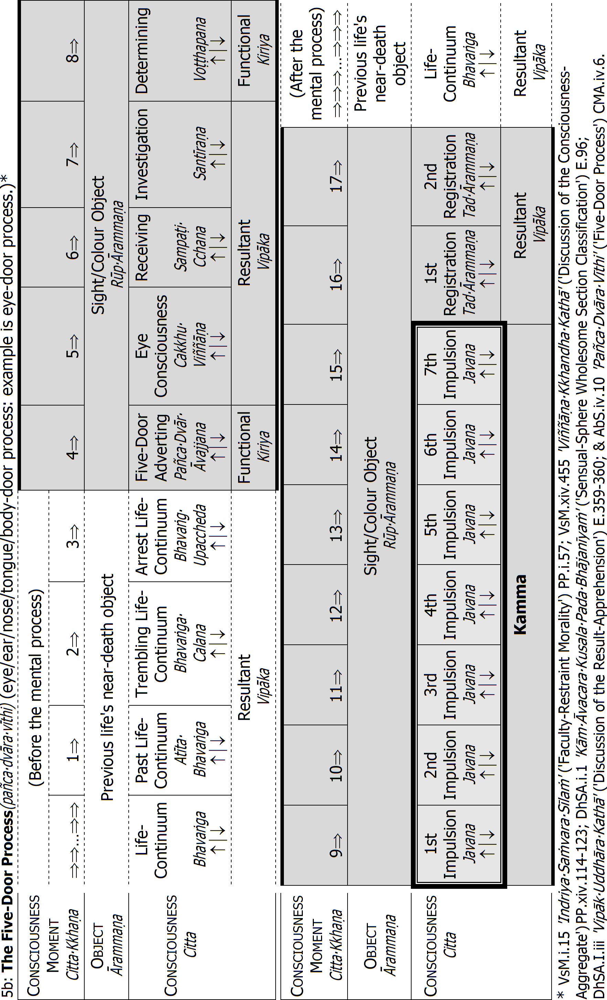
Notes for Table 5b 'The Five-Door Process'
• The material object that is cognized by a five-door process lasts 17 consciousness moments.
• One consciousness lasts one consciousness moment(cittakkhaṇa), with three stages: arising(uppāda) , standing(ṭhiti) ⏐, dissolution(bhaṅga) ↓.
• Before and after a mental process, arises a number of life-continuum consciousnesses (see footnote Error: Reference source not found, p.118).
• All five-door processes (eye-, ear-, nose-, tongue-, body door) follow the same procedure, according to the natural law of the mind(cittaniyāma). Thus, the five-door process only 'picks up' the object (the eye-door process only cognizes that there is colour), does not yet 'know' the object (colour). The 'knowing' takes place at the fourth and subsequent mental processes (See table 'The Mind-Door Process', p.171). The volition of the impulsion consciousnesses is here only weak, which means the kamma can produce a result only in a future life's continuance(pavatti):it cannot produce a rebirth-linking consciousness (paṭisandhicitta).
Mental Phenomena(nāmadhamma) of the Five-Door Process(pañcadvāravīthi)
(eye/ear/nose/tongue/body-door process: example is eye-door process.)
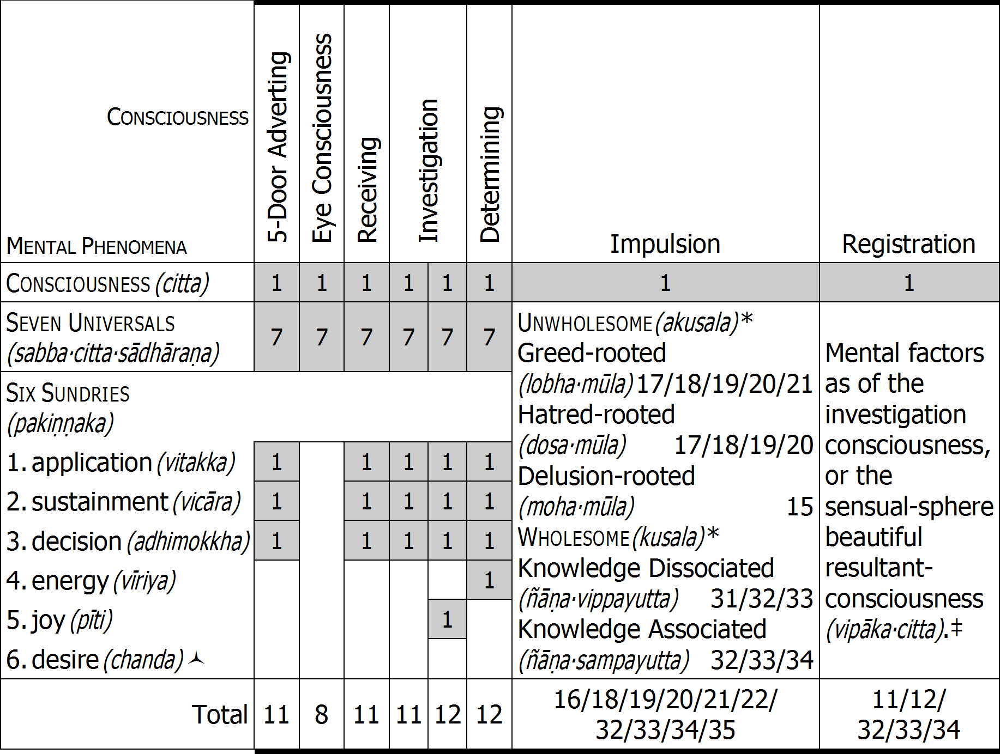
* For the mental phenomena at the arising of the consciousnesses with unwholesome roots, see tables, p.46ff, and the wholesome roots, tables p.70ff.
‡ The mental factors at the arising of the sensual-sphere beautiful resultant consciousness correspond to the mental factors at the arising of the wholesome sensual-sphere impulsion, excluding the illimitables and abstinences: see previous column 'Impulsion' under 'Wholesome'.
↙The five-door-, eye-, receiving-, investigating-, and determining consciousness is unrooted(ahetuka), and never associated with desire(chanda).
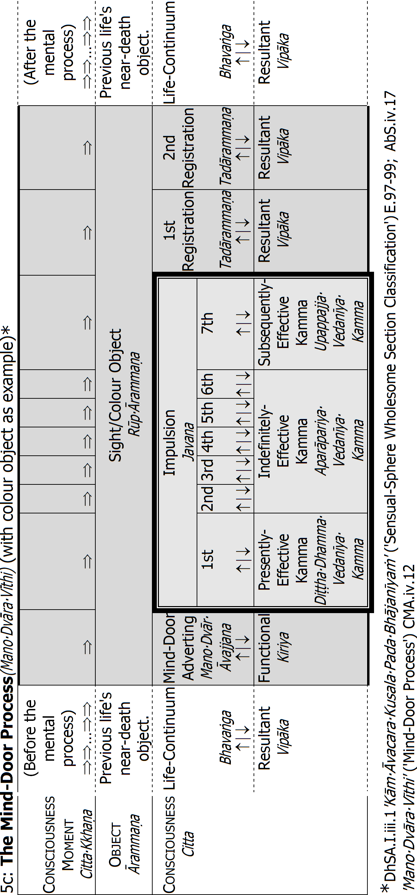
Notes for Table 5c 'The Mind-Door Process'
• One consciousness lasts one consciousness moment(cittakkhaṇa), with three stages: arising(uppāda) , standing(ṭhiti) ⏐, dissolution(bhaṅga) ↓.
• Before and after a mental process, arises a number of life-continuum consciousnesses.402
• Before this type of mind-door process, there is a five-door process or other mind-door process.403
• Cognition follows a fixed procedure, according to the natural law of the mind (cittaniyāma). For example, visual cognition:404
1) Eye-door process that 'picks-up' the object; cognizes colour. (See above table '5b: The Five-Door Process', p.168.)
2) Mind-door process that perceives the colour; knows the past colour, the object of the eye-door process.
3) Mind-door process that knows which colour it is; knows the colour's name.
4) Mind-door process that knows the object's 'meaning'; sees the whole image, a concept determined by past experience (perception(saññā)).
5) Mind-door process that judges and feels. This is the beginning of true cognition. In the preceding mental processes, the volition of the impulsions is only weak, which means the kamma can produce a result only in that life's continuance(pavatti) : it cannot produce a rebirth-linking consciousness (paṭisandhicitta).
It is from the fourth mind-door process onwards that the concept is known: 'a man', 'a woman', 'a pot', 'a sarong', 'gold', 'silver' etc. And it is from that mental process onwards that there is mental proliferation(papañca), and the accomplishment of kamma: accomplished by the mental factor volition(cetanā) of each impulsion consciousness, which takes the same object.
With wise attention(yoniso manasikāra), wholesome kamma is accomplished with, for example, respect for and worship of one's teacher, a Buddha-statue or a bhikkhu; knowing one's samatha meditation subject, and with insight knowledge seeing formations as impermanence(anicca), suffering(dukkha), and non-self(anatta).
With unwise attention(ayoniso manasikāra), unwholesome kamma is accomplished when one sees self, husband, wife, children, property, etc. as existing according to reality: as permanence(nicca), happiness(sukha), and self(atta). With this same object and perception arise countless mental processes (mental formations(saṅkhāra)), reinforcing the cognition, until again the mind adverts to a new object.405
Mental Phenomena(nāmadhamma) of the Mind-Door Process(manodvāravīthi)
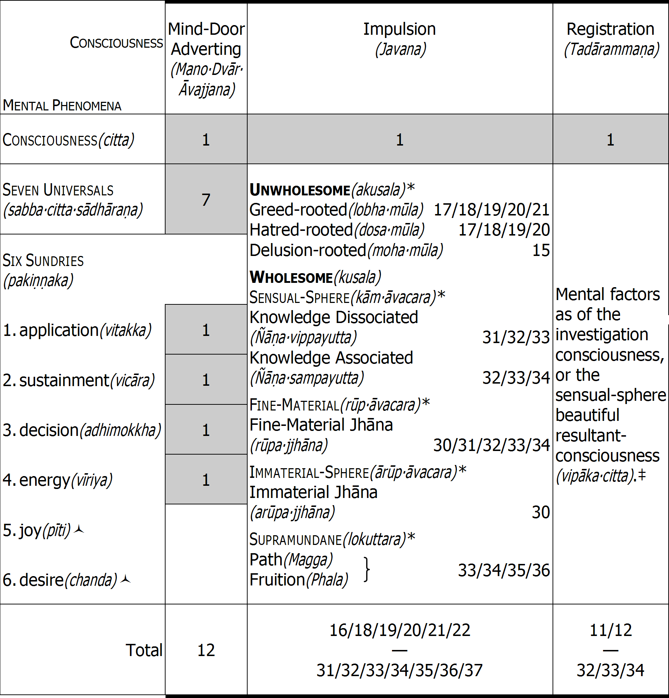
* For the mental phenomena at the arising of the unwholesome impulsions, see tables 2a/2b/ 2c, p.46ff; of the sensual-sphere wholesome, tables 3a/3b, p.70ff; the fine-material /immaterial sphere, table 3c, p.92ff; and the supramundane, table 3d, p.366.
‡ The mental factors at the arising of the sensual-sphere beautiful resultant consciousness correspond to the mental factors at the arising of the wholesome sensual-sphere impulsion, excluding the illimitables and abstinences: see previous column 'Impulsion' under 'Wholesome'.
↙The feeling(vedanā) (one of the seven universals) associated with the mind-door adverting consciousness is equanimity(upekkhā): hence it cannot be associated with joy(pīti). The mind-door adverting consciousness is furthermore an unrooted consciousness(ahetukacitta), and they are never associated with desire(chanda).
Presently-Effective Kamma
1st Impulsion Javana | 2nd Impulsion Javana | 3rd Impulsion Javana | 4th Impulsion Javana | 5th Impulsion Javana | 6th Impulsion Javana | 7th Impulsion Javana |
The first category of kamma is presently-effective kamma(diṭṭhadhammavedanīyakamma). It is the unwholesome(akusala) or wholesome(kusala) volition of the first of the seven impulsions in the fifth mental process onwards.406
During just one particular kamma, there arise and perish many billion volitions of these first impulsions. Those that meet the right conditions produce their result in the same continuity of mentality-materiality(attabhāva nāmarūpa) , the present life.
Any kamma may produce such presently-effective results. The pleasant, unpleasant, and neutral resultant feelings that arise before, during or after a certain kamma may be the result of presently-effective kamma. For example, the happiness that arises in connection with an offering(dāna), or with training in morality (sīla) or meditation(bhāvanā), etc.: we cannot say for sure. Only by discerning dependent origination can one be sure. For sure, however, is the consciousness that arises after a Path Consciousnesses(MaggaCitta). It is presently-effective kamma, because its result arises in the next mind moment as the Fruition Consciousness(PhalaCitta).407
1st Impulsion Javana | 2nd Impulsion Javana | 3rd Impulsion Javana | 4th Impulsion Javana | 5th Impulsion Javana | 6th Impulsion Javana | 7th Impulsion Javana |
At the end of the present life, all the presently-effective kammas that have not matured become lapsed kamma(ahosikamma).408
Subsequently-Effective Kamma
The second category of kamma is subsequently-effective kamma(upapajjavedanīyakamma). It is the unwholesome or wholesome volition of the seventh of the seven impulsions in the fifth mental process onwards.409 It is called the impulsion that 'the aim accomplishes'(atthasādhaka), because as the last of the series of seven identical impulsions, it completes the action. This impulsion accomplishes one's aim to break or keep the precepts, to make offerings, to meditate etc. The repetition of the previous six impulsions(āsevana) reinforces this seventh impulsion, so the kamma acquires sufficient strength to be kamma proper, subsequently-effective kamma that produces a result.
During just one particular kamma, there arise and perish many billion volitions of these seventh impulsions. Those that meet the right conditions produce their result in the next life.
Let us say, for example, one has accomplished one of the unwholesome weighty kammas(garukakamma). They are called unintervenable kamma(ānantariyakamma),410 because one is certain to be reborn in hell in one's subsequent life. When one accomplished that kamma, there arose and perished many billion volitions of the seventh impulsions: they were certain to become subsequently-effective kammas. But, of those many billion seventh impulsions, only one produces the five aggregates in hell, no more. The remaining volitions of those seventh impulsions may, however, support one's five aggregates in hell. They become subsequently-effective kamma that makes one's suffering's in hell even greater. And they prolong one's life and sufferings in hell. Then, at the end of that life, the remaining subsequently-effective kammas become lapsed kamma. The same principle applies for the seventh volitions of lesser unwholesome kammas that produce rebirth in hell, the animal world or the ghost world.
Let us then say one has accomplished one of the wholesome weighty kammas: one of the eight jhānas.411 All the impulsions of a jhāna attainment are the same: there are no first, middle five or seventh impulsion: they can all function in any way. But only one volition of that kamma's impulsions produces the five aggregates in the Brahma world, no more. The remaining volitions of those impulsions may, however, support one's five aggregates in the Brahma world.
With the attainment of the Stream-Entry and Once-Return Paths, all subsequently-effective kammas lapse in their capacity to produce rebirth in a woeful state. With the attainment of the Non-Return Path, all subsequently-effective kammas lapse in their capacity to produce their result in the sensual world. Of course, with the attainment of the Arahant Path, there will be no subsequent life: at the end of that life (at one's Parinibbāna: final cessation), absolutely all subsequently-effective kammas lapse in every capacity.
As long as subsequently-effective kamma has not produced its result, its potency can produce an effect at any time in one's subsequent continuity of mentality-materiality: it can produce its result at any time in one's next life.412 So long as the kamma meets the right conditions, no one, not even a Buddha or other Arahant, avoids experiencing the results of subsequently-effective kamma from their previous life.413
At the end of the subsequent life, all the subsequently-effective kammas from the previous life that have not matured become lapsed kamma(ahosikamma).
The Venerable Devadatta
A good example of subsequently-effective kamma is the Venerable Devadatta, The Buddha's cousin. We shall mention him many times in the course of our explanations. He accomplished two unwholesome weighty kammas.414/E189 First, he pushed a large rock off a cliff, with the intention that it should hit The Buddha and kill Him. But the rock hit the ground and split into pieces. One piece struck The Buddha's foot. Although the skin was unbroken, there was a serious bruise because of bleeding within The Buddha's foot. Thus the Venerable Devadatta had with evil intent drawn the blood of a Buddha.415/E190 Second, he made a schism in the Sangha: that was the weightier of the two kammas. One of the seventh impulsions of his 'schism kamma' produced his five aggregates in the great Unremitting Hell(Avīci). No other seventh impulsion of that kamma would produce rebirth in hell. But his sufferings in hell are intensified, maintained, and prolonged by other seventh impulsions of that kamma, as well as by the seventh impulsions of his kamma of having with evil intent drawn the blood of a Buddha. And, of course, while he is in hell, there will also be indefinitely-effective kammas from the infinite past which will also intensify, maintain, and prolong his sufferings in hell. But, as we explained in connection with the 'GaddulaBaddha' sutta, when the world system is destroyed, he will escape, and be reborn in the human world. And the Pali Texts explain that a hundred thousand aeons later, he will attain Arahantship as a Paccekabuddha called Aṭṭhissara.416
Indefinitely-Effective Kamma
1st Impulsion Javana | 2nd Impulsion Javana | 3rd Impulsion Javana | 4th Impulsion Javana | 5th Impulsion Javana | 6th Impulsion Javana | 7th Impulsion Javana |
The third category of kamma is indefinitely-effective kamma(aparāpariyavedanīyakamma). It is the unwholesome or wholesome volition of the five middle impulsions: the five impulsions between the first and the seventh.417
Again, during just one particular kamma, there arise and perish many billion volitions of these middle five impulsions. If, in some life after the subsequent life, one such impulsion meets the right conditions, it produces its result. It may, for example, produce the five aggregates at the rebirth-linking moment in some future life.
Now, as we explained earlier, of all the seventh impulsions of a kamma, only one is able to produce rebirth. But it is different with the middle five impulsions: indefinitely-effective kamma. Each one of them can produce a result. That is why, as explained above, one can owing to one particular kamma be reborn in hell again and again, or be reborn as an animal or ghost again and again, or be reborn as a human being or deva again and again.
With the attainment of the Stream-Entry and Once-Return Paths, all indefinitely-effective kammas lapse in their capacity to produce rebirth in a woeful state. With the attainment of the Non-Return Path, all indefinitely-effective kammas lapse in their capacity to produce their result in the sensual world. Of course, with the attainment of the Arahant Path, there will be no more rebirth: at the end of that last life (at one's Parinibbāna: final cessation), absolutely all indefinitely-effective kammas lapse in every capacity.
Otherwise, so long as indefinitely-effective kamma does not produce its result, it can take effect at any time in one's mentality-materiality continuity: it can produce its result in any future life after the next one.418 However long one's running on from life to life, this kamma lapses only at one's Parinibbāna (final cessation). Before the attainment of Parinibbāna, no one (not even a Buddha) avoids experiencing the results of indefinitely-effective kamma from past lives.
Lapsed Kamma
The fourth category of kamma is lapsed kamma(ahosikamma). It does not designate a special class of kamma: it is simply kamma that has not met the conditions to produce its result: it is defunct, kamma only by name. For non-Arahants, it is simply presently-effective kamma of the present life, and subsequently-effective kamma of the preceding life, that at one's death have not met the right conditions to produce its result. At the Arahant's Parinibbāna, it is all three types of kamma. At the Arahant's Parinibbāna, the innumerable unwholesome and wholesome kammas that she or he accomplished throughout the infinite past, which might have matured in the subsequent life or any time later, become every one of them lapsed kamma(ahosikamma).E191 That is why The Buddha says:419
Consumed is the old, there is no new existence;
With disimpassioned mind for future existence,
They the seed consumed [have] no growth-desire:
Steadfast, they expire as this lamp.420
Now, before we continue discussing the workings of kamma, we need to recall what we discussed earlier about the mind: we need to remember the workings of kamma according to ultimate truth.
Uncountable Kammas
The Buddha explains that when the mind is alert, then within a snap of the fingers, very many thousand million consciousnesses arise and perish like a river in full flow: they arise as series, many thousand million mental processes(cittavīthi).421
Human beings exist on what we call the sensual-sphere plane(kāmāvacara bhūmi). The sensual-sphere plane comprises the hells, the ghost and demon worlds, the human world, and the bottom five deva-worlds. The sensual-sphere plane is where the five material sense bases operate:422
1) When a sight base(rūpāyatana) meets an eye base(cakkhāyatana), there arises eye consciousness(cakkhuviññāṇa).
2) When a sound base(saddāyatana) meets an ear base(sotāyatana), there arises ear consciousness(sotaviññāṇa).
3) When an odour base(gandhāyatana) meets a nose base(ghānāyatana), there arises nose consciousness(ghānaviññāṇa).
4) When a flavour base(rasāyatana) meets a tongue base( jivhāyatana), there arises tongue consciousness( jivhāviññāṇa).
5) When a tangible base(phoṭṭhabbāyatana) meets a body base(kāyāyatana), there arises body consciousness(kāyaviññāṇa).
These events take place by the mental process called a five-door process(pañcadvāravīthi).423 But there is also a sixth sense base, the mind base:
6) When a sight-, sound-, odour-, flavour-, or tangible base, or base of other things(dhammāyatana), meets the mind base(manāyatana), there arises mind consciousness(manoviññāṇa).
The mental processes by which these events take place are mind-door processes.424 In each of those mental processes there are seven impulsion consciousnesses( javana). When an impulsion consciousness arises that is unwholesome(akusala), there are minimum sixteen mental phenomena (nāmadhamma), maximum twenty-two; when it is wholesome(kusala), there are minimum thirty-two mental phenomena, maximum thirty-five.425 In all cases, one of those mental phenomena is volition(cetanā), and it is volition that forms kamma.426
What does this mean in practical terms? It means that during just one particular kamma,427 there arise and perish many billion volitions of the first impulsions, there arise and perish many billion volitions of the seventh impulsions, and there arise and perish many billion volitions of the middle five impulsions. In other words, during just one particular kamma, there arise and perish many billion volitions that can produce their result in this life (presently-effective kamma); there arise and perish also many billion volitions that can produce their result in the next life (subsequently-effective kamma); and there arise and perish also many billion volitions that can produce their result in some future life after that, even a life many aeons in the future (indefinitely-effective kamma).
This means that throughout one's life, one accomplishes billions of unwholesome or wholesome kammas, billions and billions of times. In fact, you may realize that in one life, the number of unwholesome or wholesome kammas that one accomplishes are without number. That is why, when The Buddha speaks of beings in hell, He speaks of their being tormented for hundreds of years, many thousands of years, and many hundreds of thousands of years.E192 Take for example, a butcher who kills cows as her or his livelihood. Over maybe thirty, forty, or even fifty years, she or he kills cows. At each particular kamma, each time she or he kills a cow, the unwholesome kammas that are produced are uncountable. Likewise, the devotee who every day offers food to the Sangha. Maybe she or he does it for twenty, thirty, forty, fifty years, or more. Each time she or he makes an offering, at each particular kamma, the wholesome kammas that are produced are uncountable.
Even though human beings and devas exist in the sensual sphere, they can still accomplish kamma of the fine-material- and immaterial sphere. That is when a human being or deva enters into either a fine-material jhāna or immaterial jhāna. As mentioned earlier, such kamma cannot be unwholesome: only wholesome. The impulsion consciousnesses of jhāna are called exalted(mahaggata).
When we accomplish sensual-sphere kamma, many billion consciousnesses arise and perish: they include many thousand million mental processes(cittavīthi).428 In each of those mental processes there are seven impulsion consciousnesses( javana). But the number of exalted impulsion consciousnesses that arise and perish when one is in jhāna varies: there is no fixed number. It depends on how long one is in the attainment.429 Maybe only some billion arise and perish, maybe very, very many billion. According to one's determination, they may arise and perish in such numbers one after the other for an hour, for two hours, even for a whole day, or a whole week. When a beginner enters jhāna, however, only one mental process of absorption with only one jhāna impulsion-consciousness arises and perishes, after which one sinks back into the life continuum.
Of the fine-material or immaterial jhānas that one has attained in one life, only the one that one has been able to maintain up to the near-death moment will produce rebirth in the Brahma world; the rest of one's attainments are without result. If, however, one developed those attainments for the ultimate attainment of Nibbāna, they become what is called pāramī.
We need also remember that the round of rebirth has no beginning. This means that everyone has accomplished countless unwholesome and wholesome kammas during lives that are also countless. But we need to remember that even though we have produced countless kammas over countless lives, not all of them will produce their result. As we have also discussed, not all the impulsions of a kamma produce their result.430
The Pali Texts give many examples of how kamma works. And when we do not properly understand the workings of kamma, those examples may sometimes seem too fantastic to be true. But when we understand the workings of the mind, and thereby the workings of kamma, it becomes very easy to understand the extreme power of evil actions, and the supreme power of good actions. Then it becomes very difficult to disbelieve the examples of how kamma works. Then, for example, it becomes very easy for us to believe The Buddha, when He speaks of beings who enjoy sublime happiness in the deva worlds for very many hundred thousand years.E193
Of course, if we develop the power to discern many past lives, then do we see the workings of kamma for ourselves, and any scepticism we may have is dispelled by our personal knowing and seeing.
Conditions for Present Result
Here, we should like further to discuss presently-effective kamma. Under which conditions does presently-effective kamma produce its result, and under which conditions does it lapse? As mentioned earlier, presently-effective kamma is produced by the volition of the first impulsion: it becomes effective when two conditions are met:431
1) It has met no opposition(paṭipakkhehi anabhibhūtatāya): that is, no stronger kamma has overpowered it.
2) It has met the right conditions(paccayavisesena paṭiladdhavisesatāya) : that is, the producing kamma was of the type to produce such a result.
Even so, although it may meet the conditions necessary to mature, and although it supports associated phenomena in the impulsion continuity,432 it is the weakest of all the impulsions. This is because, being the first impulsion, it is alone. Unlike subsequently- and indefinitely-effective kamma, it has no preceding impulsions to give it power; it has not been reinforced by repetition(āsevana). Its result is therefore only weak, and the right conditions for it to mature are not found beyond the present life. Like a mere flower, it matures only in this life: just as the flower does not produce a fruit, so does this type of kamma not produce a future rebirth. By contrast, subsequently- and indefinitely-effective kamma gain power from repetition. That means they can produce their results either in the next life or in some subsequent life, and they have the power to produce rebirth even in the hells or the deva worlds.
Furthermore, for kamma to produce its result, it needs to meet what is called achievement(sampatti) and failure(vipatti).433 If they are not met, it lapses.
Present Result from Wholesome Kamma
Take, for example, the wholesome kamma of offering(dāna). It can become presently-effective kamma that produces material wealth in this life.E194 But there are four things that need to be fulfilled, four types of achievement(sampadā) :434
1) Object achievement(vatthusampadā) : the object of one's offering (the receiver) must be an Arahant or Non-Returner who is able to enter the cessation-attainment(nirodhasamāpatti) : the temporary cessation of mentality and consciousness-born materiality.435
2) Requisite achievement(paccayasampadā): the requisite that is offered must have been obtained in accordance with the Dhamma: according to Right Speech(SammāVācā), Right Action(SammāKammanta), and Right Livelihood (SammāĀjīva).
3) Volition achievement(cetanāsampadā): the offerer's volition must be taintless. She or he must have a happy mind before offering, while offering and after offering, untainted by attachment or anger, etc. expecting nothing in return from the receiver.
4) Extra-factor achievement(guṇātirekasampadā) : the receiver must be an
Arahant 436 or Non-Returner who has just emerged from the cessation attainment(nirodhasamāpatti).
If these four types of achievement are present, the volition of the first impulsion consciousness associated with the offering may function as presently-effective kamma. But these four factors alone are not sufficient: the offerer needs also have accomplished sufficient wholesome kamma in past lives, that is, the practice of conduct(caraṇa).437 Especially, the offerer needs in past lives to have made superior offerings: we discussed such offerings earlier.438
What makes an offering superior(ukkaṭṭha) ? The Buddha explains that five things need to be fulfilled:439
1) The offerer must be virtuous, one who observes morality(sīla), who observes the precepts: abstinence from killing, stealing, sexual misconduct, lying, drinking beer and wine, etc., and taking other intoxicants.
2) The gift must have been obtained in accordance with the Dhamma: according to Right Speech(SammāVācā), Right Action(SammāKammanta) and Right Livelihood(SammāĀjīva).
3) The offerer must have a taintless and happy mind before offering, while offering and after offering, untainted by attachment or anger, etc., expecting nothing in return from the receiver.
4) The offerer must have full faith in the law of kamma and its result.440
5) The receiver must also be virtuous, someone who observes the precepts. If the receiver's virtue is accompanied by jhāna, insight knowledge or a Path& Fruition knowledge, that makes the offering even more superior.
The Field of Gold
The Pali Texts give an example of an offering that took present effect, in the same life: the offering of one Puṇṇa, father of Uttarā-Nandamāta from Rājagaha. The event took place in our Buddha's time:441
Puṇṇa and his wife were poor people with deep faith in the Venerable Sāriputta. One festival day, even though Puṇṇa's employer had given him the day off, Puṇṇa went out to plough, because he was too poor to take a holiday.
That day, the Venerable Sāriputta emerged from the cessation attainment(nirodhasamāpatti). And he reviewed the world with his divine eye to see who would benefit most from offering him alms. He saw that Puṇṇa had such accomplished wholesome kamma from a past life, that if he offered alms to the Venerable Sāriputta, that past kamma would function as a decisive supporting cause(upanissayapaccaya) for the offering to produce a result in this life: Puṇṇa would become a rich man, and then make a big offering to The Buddha and Sangha. After listening to The Buddha's inspirational talk he and his wife would also become Stream Enterers.
So, at the suitable time, the Venerable Sāriputta took his bowl and double robe, and went to where Puṇṇa was ploughing. And then he stood at a small distance so Puṇṇa could see him. When Puṇṇa saw him, he became very happy, stopped ploughing, approached the Venerable Sāriputta, and with respect and happiness made the fivefold obeisance. Then the Venerable Sāriputta asked him where some good water might be had. Puṇṇa thought the venerable one wanted to wash his face,442 so he made a tooth stick out of a creeper nearby, and offered it to the Venerable Sāriputta. While the Venerable Sāriputta was brushing his teeth, Puṇṇa took his bowl and water-strainer, and filled the bowl with fresh, properly strained, clear water, which he then offered to the Venerable Sāriputta.
After washing his face, the Venerable Sāriputta went on his way for alms. Then it occurred to Puṇṇa: 'The Venerable One never came this way before. He probably came today for my benefit. If my wife had come with my food, how good it would have been to offer it to the Venerable One!'
At that time, Puṇṇa's wife was on her way with her husband's food, and met the Venerable Sāriputta. She thought: 'Sometimes we have had alms to offer, but there has been no receiver; sometimes there has been a receiver, but owing to our poverty we have had no alms to offer. How fortunate I am now that I have this Venerable One as the receiver, and this food to offer!'443 So with much happiness, she offered the food to the Venerable Sāriputta. Then she went home again, prepared fresh food again, and took it to her husband. He was overjoyed to hear of her offering to the Venerable Sāriputta. He took his meal and then had a nap.
When he woke up, he saw the field he had ploughed had turned into gold. Then he reported the matter to the king, who sent carts to collect the gold. But as soon as his men touched the gold, saying it was for the king, it turned back into earth. So the gold was collected in Puṇṇa's name, and the king conferred on him the title of BahuDhanaSeṭṭhi (Lord of Much Wealth). Puṇṇa built a new house, and as the house-warming, he held a great alms-offering for The Buddha and Sangha. And with The Buddha's inspirational talk,444 Puṇṇa and his wife and daughter Uttarā became Stream Enterers(SotĀpanna).
Here,
1) Puṇṇa and his wife were virtuous.
2) Their offerings had been obtained in accordance with the Dhamma.
3) They had clear, taintless and happy minds before, during and after their offering.
4) They had strong faith in the law of kamma and its result.
And,
5) The receiver (the Venerable Sāriputta) was an Arahant who had just emerged from the cessation attainment(nirodhasamāpatti). His virtue was perfect, his jhāna attainments were perfect, and his insight knowledge was perfect, for he had attained the Arahant Path&Fruition knowledges.
The decisive factor, however, was that Puṇṇa and his wife had in a past life accomplished a superior wholesome kamma that now matured to support their present offering to the Venerable Sāriputta: that past kamma was the decisive supporting cause(upanissayapaccaya). Owing to the presence of the right conditions, the volition of the first impulsion of Puṇṇa's mind-door process while offering to the Venerable Sāriputta produced a great result in that very life. This was presently-effective kamma(diṭṭhadhammavedanīyakamma).E195
Now, we may find it difficult to believe this story; the present result of Puṇṇa's kamma seems too fantastic to be true. But the result was in fact not fantastic. If we compare it with the result that could have matured as subsequently-effective kamma(upapajjavedanīyakamma): as kamma experienced upon rebirth (a result of the volition in the seventh impulsion), the presently-effective kamma was in fact only a paltry result. Why? Because if Puṇṇa's offering matured at his time of death(maraṇakāle), it would produce rebirth in the deva-world, with the most superior deva pleasures and the long, long life span of a deva:445 a field of gold bringing wealth to a human being, with a human being's only short life span, bears no comparison. Puṇṇa's offering could also mature as indefinitely-effective kamma(aparāpariyavedanīyakamma): as kamma experienced in some subsequent life, a result of the volition in the middle five impulsions. In that case, it would produce sublime results in very, very many succeeding future lives. Again, the field of gold that he gained as a human being bears no comparison.
All these powerful results could arise because he had accomplished billions of wholesome kammas before, during, and after making his offering to the Venerable Sāriputta. Please remember the workings of the mind. On our plane, the sensual-sphere plane(kāmāvacarabhūmi), within a snap of the fingers, very many thousand million consciousnesses arise and perish: they include many thousand million mental processes(cittavīthi).446 In each of those mental processes there are seven impulsion consciousnesses( javana).447 Each of those impulsion consciousnesses is associated with volition: it produces kamma. If you remember this, you may understand how Puṇṇa could have accomplished so many wholesome kammas, and the story becomes easy to understand.E196
Present Result from Unwholesome Kamma
The Venerable AṄgulimĀla
Presently-effective kamma can also be unwholesome. There is, for example, Aṅgulimāla.448 He was a bandit in the kingdom of King Pasenadi of Kosala. He killed very many people. Then, one day, The Buddha saw with His divine eye that Aṅgulimāla would on that day either kill his own mother, or, if The Buddha went to see him, he would ordain as a bhikkhu. And seeing that Aṅgulimāla had sufficient pāramī to become an Arahant in that very life, The Buddha went to see him. Aṅgulimāla ordained, and undertook the bhikkhu's threefold higher training: the higher morality training (observing the bhikkhu's Pātimokkha), higher mind training (samatha meditation), and higher wisdom training (insight meditation).
At that time, King Pasenadi was trying to catch Aṅgulimāla. But when he saw Aṅgulimāla had become a peaceful bhikkhu with The Buddha as his teacher, King Pasenadi promised the Venerable Aṅgulimāla to provide him with the four requisites: robes, food, dwelling, and medicine. The Venerable Aṅgulimāla's ordination under The Buddha was the presently-effective kamma that gave this result.
Later, under The Buddha's instruction, the Venerable Aṅgulimāla attained Arahantship. The next day, when he went to Sāvatthī on his almsround, people attacked him. They could remember what he had done as the bandit Aṅgulimāla, and one threw a stone, another threw a stick, and another threw a potsherd. And the Venerable Aṅgulimāla returned to The Buddha with his head bleeding, his bowl broken, and his outer robe torn. When The Buddha saw it, He said to Aṅgulimāla:
Bear it, Brahmin! Bear it Brahmin!
You are experiencing here and now the result of deeds owing to which you might have been tortured for many years, for many hundreds of years, for many thousands of years!
The Buddha was here explaining to him that the attack was the present result of Aṅgulimāla's evil kamma in the present life. If that kamma had produced its result as subsequently-effective, or indefinitely-effective kamma, he would instead have been reborn in hell, and would have suffered for very many thousands of years. But because he had attained Arahantship, his past evil kamma lapsed as subsequently- and indefinitely-effective kamma: it could take effect only in this life as attacks from people.
The Cattle Butcher
Another example of presently-effective unwholesome kamma is the case of a cattle butcher in Sāvatthi.449 He would kill cows, select the best cuts for himself and his family, and then sell the rest. Killing cows was his livelihood for fifty-five years. And he would never eat rice unless he had beef to go with it.
One day, while it was still light, after he had finished his day's work, he gave his wife some beef to cook for his supper, and then went to the pond to bathe. In the meantime, a friend came to his house, and although the butcher's wife protested, the friend took the piece of beef meant for the butcher's supper.
When the butcher returned, and discovered that his dinner had gone, he took a knife, and went out to the back of his house, where a cow was tethered. The butcher put his hand into the cow's mouth, pulled out the cow's tongue, cut it off at the root, and went back inside. He had the cow's tongue cooked on a bed of coals, placed it on the boiled rice, and sat down to eat. First he took a mouthful of rice, and then a piece of meat. At that very moment, his own tongue was severed at the root, and fell out of his mouth onto the dish of rice. Then, with blood streaming from his mouth, he went into the courtyard of his house, and crawled about on his hands and knees, bellowing just like an ox. His kamma of cutting out the cow's tongue functioned as presently-effective kamma, and produced a present result of terrible pain and sorrow.
After he had crawled about for some time, bellowing like an ox, he died. Owing to his subsequently-effective kamma (he had killed cows for fifty-five years), he was reborn in the great Unremitting Hell(Avīci). And he was destined to experience horrific sufferings in that great and terrible hell for a very, very long time because of uncountable other subsequently-effective unwholesome kammas, as well as uncountable indefinitely-effective unwholesome kammas that now met the right conditions to mature: the round of rebirth has no beginning, so every being has accomplished much evil kamma. When the conditions are right, that evil kamma from past lives matures, and one's suffering is prolonged.
Sometimes, a being in hell reaches the end of the kamma that produced rebirth in hell, and he passes away in hell. But he does not escape from hell, because another indefinitely-effective kamma of that same kamma produces rebirth in hell again, and when he again passes away in hell, another indefinitely-effective kamma of that same kamma does it again, and so on.450 And even when he does escape from hell, and is reborn as a ghost, that same kamma functions as indefinitely-effective kamma, so that he as a ghost is tormented in some similar way.E197
That concludes our discussion of kamma according to the time of effect (when it takes effect): presently-effective-, subsequently-effective-, indefinitely-effective-, and lapsed kamma. But in order to get the whole picture, we need also to understand that these four types of kamma work over three periods: the past, the present, and the future.
The Workings of Kamma Past — Present — Future
In one continuity of mentality-materiality, there is always past kamma, present kamma, and unless one attains Arahantship, there is also always future kamma. In the same way, there are past results of kamma, present results of kamma, and future results of kamma. According to result, we have thus six workings of past kamma, four workings of present kamma, and two workings of future kamma.
The Six Workings of Past Kamma
The PaṭisambhidāMagga ,451 by the Venerable Sāriputta, describes the six workings of past kamma(atītakamma) :452
[1] There was kamma, there was kamma result.
[2] There was kamma, there was no kamma result.
[3] There was kamma, there is kamma result.
[4] There was kamma, there is no kamma result.
[5] There was kamma, there will be kamma result.
[6] There was kamma, there will be no kamma result.
Let us try to see how this is with regard to the different kinds of kamma that we have discussed: presently-effective kamma, subsequently-effective kamma, indefinitely-effective kamma, and lapsed kamma.
Past Kamma, Past Result
The first working of past kamma has a past result. How? In all one's past lives, uncountable unwholesome and wholesome presently-effective kammas were accomplished: they were the volitions of the first impulsions of each kamma. Those kammas that met the right conditions produced their result in that same life.
For example, the pleasant, unpleasant, and neutral resultant feelings that arose in connection with a certain kamma in a past life may have been the result of a presently-effective kamma: for example, the feelings that arose in connection with an offering(dāna) in that same past life, or with training in morality(sīla) or meditation(bhāvanā). Another example is the arising of one of the three lower Path Consciousnesses(MaggaCitta) in a past life: its result arose in the next mind moment as the Fruition Consciousness(PhalaCitta).
Also, in all one's past lives, uncountable unwholesome and wholesome subsequently-effective kammas were accomplished: they were the volitions of the seventh impulsions of each kamma. Those kammas that met the right conditions produced their result in the subsequent life: the very next life. But again, if in a past life, one such volition produced the subsequent life's rebirth-linking consciousness and mentality-materiality, the remaining volitions of that kamma's seventh impulsions either lapsed, or supported those aggregates throughout the subsequent life: prolonging one's life and sufferings in a woeful state, or happiness in the human or heavenly world.
Furthermore, in all one's past lives, uncountable unwholesome and wholesome indefinitely-effective kammas were accomplished: they were the volitions of the middle five impulsions of each kamma. Those kammas that met the right conditions produced their results in a certain past life after the subsequent past life.
In these cases, the kamma is past, and fulfilled its function; its result is also past, and fulfilled its function. The kamma came to be and ceased to be in the past; its result came to be and ceased to be in the past. As it says in the PaṭisambhidāMagga : There was kamma, there was kamma result.
Past Kamma, No Past Result
The second working of past kamma has no past result. That is, at the end of each past life, all the presently-effective and subsequently-effective kammas that failed to meet the right conditions to produce their result became lapsed kamma.
For example, with rebirth in the human or heavenly world in a past life, all subsequently-effective kammas from the previous life that could have produced their result in a woeful state failed to meet the right conditions to produce their result, and became lapsed kamma at the end of that life. With the attainment of the Stream-Entry Path, or Once-Return Path in the past, however, all subsequently, and indefinitely-effective kammas that were accomplished before that attainment, and which afterwards could have produced their result in a woeful state became lapsed kamma at once. Also, with rebirth in the fine-material or immaterial world in a past life, all subsequently-effective kammas from the previous life that could have produced their result in the sensual world, became lapsed kamma at the end of that life. And with attainment of the Non-Return Path in the past, all subsequently and indefinitely-effective kammas that afterwards could have produced their result in the sensual world became lapsed kamma at once.
In these cases, the kamma was in the past, and fulfilled its function; its result lapsed, and did not fulfil its function. The kamma came to be and ceased to be in the past; its result never came to be. As it says in the PaṭisambhidāMagga: There was kamma, there was no kamma result.
Past Kamma, Present Result
The third working of past kamma has a present result: in this life. That is, in the previous life, uncountable unwholesome and wholesome subsequently-effective kammas were accomplished: they were the volitions of the seventh impulsions of each kamma. Those kammas that meet the right conditions produce their result in the present life: this life.
Also, in all one's past lives, uncountable unwholesome and wholesome indefinitely-effective kammas were accomplished: they were the volitions of the middle five impulsions of each kamma. Those kammas that meet the right conditions produce their results in this life.
In these cases, the kamma is past, and fulfilled its function; its result is present, and fulfils its function. The kamma came to be and ceased to be in the past; its result comes to be and ceases to be in the present. As it says in the PaṭisambhidāMagga : There was kamma, there is kamma result.
Past Kamma, No Present Result
The fourth working of past kamma has no present result. That is, at the end of this life, all the subsequently-effective kammas from the previous life that fail to meet the right conditions to produce their result in this life become lapsed kamma.453
For example, with rebirth in the human or a heavenly world in this life, all subsequently-effective kammas from the previous life that could have produced their result in a woeful state fail to meet the right conditions to produce their result, and become lapsed kamma at the end of this life. With the attainment of the Stream-Entry- or Once-Return Path in the previous life, however, all subsequently-effective kammas that could have produced their result in a woeful state in this life became lapsed kamma at once. Also, with rebirth in the fine-material or immaterial world in this life, all subsequently-effective kammas from the previous life that could have produced their result in the sensual world in this life become lapsed kamma at the end of this life. And with attainment of the Non-Return Path in the previous life, all subsequently and indefinitely-effective kammas that could have produced their result in the sensual world in this life became lapsed kamma at once.
In these cases, the kamma was in the past, and fulfilled its function; its result has lapsed, and has not fulfilled its function. The kamma came to be and ceased to be in the past; its result has never come to be. As it says in the PaṭisambhidāMagga : There was kamma, there is no kamma result.
Past Kamma, Future Result
The fifth working of past kamma has a future result. That is, in all one's past lives, unwholesome and wholesome indefinitely-effective kamma was accomplished. That which meets the right conditions will produce its result in the subsequent life, or a later life. The kamma is past, and fulfilled its function; its result is in the future, yet to be experienced, yet to fulfil its function. The kamma came to be and ceased to be in a certain past life; its result will come to be and cease to be in the future. As it says in the PaṭisambhidāMagga: There was kamma, there will be kamma result.
Past Kamma, No Future Result
The sixth working of past kamma has no future result. That is, with the attainment of the Stream-Entry Path, or the Once-Return Path in a past life or this life, all indefinitely-effective kammas that in the future could have produced their result in a woeful state became lapsed kamma. With the attainment of the Non-Return Path in a past life or this life, all indefinitely-effective kammas that in the future could have produced their result in the sensual world became lapsed kamma. And with the attainment of the Arahant Path in this life, there will be no future life after this: at one's Parinibbāna, at the end of this life, absolutely all subsequently and indefinitely-effective kammas will lapse.
In these cases, the kamma is past, and fulfilled its function; its result has lapsed, and will not fulfil its function. The kamma came to be and ceased to be in a certain past life; its result will never come to be. As it says in the PaṭisambhidāMagga: There was kamma, there will be no kamma result.
The Four Workings of Present Kamma
The PaṭisambhidāMagga describes also the four workings of present kamma (paccuppannakamma) :454
[1] There is kamma, there is kamma result.
[2] There is kamma, there is no kamma result.
[3] There is kamma, there will be kamma result.
[4] There is kamma, there will be no kamma result.
Let us try to see how this is with regard to presently-effective-, subsequently-effective-, and indefinitely-effective kamma.
Present Kamma, Present Result
The first working of present kamma has a present result: in this life. That is, in this life, uncountable unwholesome and wholesome presently-effective kammas are accomplished: they are the volitions of the first impulsions of each kamma. Those kammas that meet the right conditions produce their result in this life.
For example, the pleasant, unpleasant, and neutral resultant feelings that arise before, during, and after a certain kamma in this life may be the result of presently-effective kamma: again for example, the feelings arising in connection with an offering(dāna) in this life, or with training in morality(sīla) or meditation(bhāvanā). Another example is the arising of a Path Consciousness(MaggaCitta) in this life: the result arises in the next mind moment as the Fruition Consciousness(PhalaCitta).
In these cases, the kamma is present, and fulfils its function; its result is also present, and fulfils its function. Both come to be and cease to be in this life. As it says in the PaṭisambhidāMagga : There is kamma, there is kamma result.
Present Kamma, No Present Result
The second working of present kamma has no present result. At the end of this life, all the presently-effective kammas that fail to meet the right conditions to produce their result in this life become lapsed kamma.455
Now, the kamma is present, and has fulfilled its function; its result has lapsed, and has not fulfilled its function. The kamma has come to be and ceased to be in this life; its result has never come to be. As it says in the PaṭisambhidāMagga : There is kamma, there is no kamma result.
Present Kamma, Future Result
The third working of present kamma has a future result. That is, in this life, uncountable unwholesome and wholesome subsequently-effective kammas are accomplished: they are the volitions of the seventh impulsions of each kamma. Those kammas that meet the right conditions will produce their results in the subsequent life: the very next life.
Also, in this life, uncountable unwholesome and wholesome indefinitely-effective kammas are accomplished: they are the volitions of the middle five impulsions of each kamma. Those kammas that meet the right conditions will produce their results in a certain future life after the subsequent life.
In these cases, the kamma is present, and fulfils its function; its result is in the future, yet to be experienced, yet to fulfil its function. The kamma comes to be and ceases in this life; its result will come to be and cease to be in the future. As it says in the PaṭisambhidāMagga: There is kamma, there will be kamma result.
Present Kamma, No Future Result
The fourth working of present kamma has no future result. That is, at the end of the subsequent life, all the subsequently-effective kammas from this life that fail to meet the right conditions to produce their result in the subsequent life become lapsed kamma.
For example, with rebirth in the human or a heavenly world in the subsequent life, all subsequently-effective kammas from this life that could have produced their result in a woeful state in the subsequent life, will become lapsed kamma at the end of the subsequent life. With the attainment of the Stream-Entry- or Once-Return Path in this life, however, all subsequently and indefinitely-effective kammas that could have produced their result in a woeful state in the subsequent life have become lapsed kamma at once. Also, with rebirth in the fine-material or immaterial world in the subsequent life, all subsequently-effective kammas from this life that could have produced their result in the sensual world in the subsequent life will have become lapsed kamma at the end of that life. With the attainment of the Non-Return Path in this life, all subsequently and indefinitely-effective kammas that could have produced their result in the sensual world in the subsequent life become lapsed kamma at once. Finally, with the attainment of the Arahant Path in this life, there will be no future life: at one's Parinibbāna, at the end of this life, absolutely all subsequently and indefinitely-effective kammas will lapse.
In these cases, the kamma is present, and fulfils its function; its result will lapse, and will not fulfil its function. The kamma comes to be and ceases to be in this life; its result will never come to be. As it says in the PaṭisambhidāMagga: There is kamma, there will be no kamma result.
The Two Workings of Future Kamma
The PaṭisambhidāMagga describes also the two workings of future kamma (anāgatakamma) :456
[1] There will be kamma, there will be no kamma result.
[2] There will be kamma, there will be kamma result.
Let us try to see how this is with regard to presently-effective-, subsequently-effective-, and indefinitely-effective kamma. Again, we shall discuss them only in the case of someone who is still alive: a common person, a Noble One, or an Arahant who has not yet attained Parinibbāna.
Future Kamma, Future Result
The first working of future kamma has a future result. That is, unless one attains Arahantship, one will, in all one's future lives, accomplish uncountable unwholesome and wholesome presently-effective kammas: they will be the volitions of the first impulsions of each kamma. Those kammas that meet the right conditions will produce their result in that same life.
For example, the pleasant, unpleasant, and neutral resultant feelings that arise in connection with a certain kamma in a future life may be the result of a presently-effective kamma: again, for example, the feelings arising in connection with an offering(dāna) in a future life, or with training in morality(sīla) or meditation(bhāvanā). Another example is the arising of a Path Consciousness (MaggaCitta) in a future life: its result will arise in the next mind moment as the Fruition Consciousness (PhalaCitta).
Also, unless one attains Arahantship, one will, in all one's future lives, accomplish uncountable unwholesome and wholesome subsequently-effective kamma: they will be the volitions of the seventh impulsions of each kamma. Those kammas that meet the right conditions will produce their result in the subsequent life: the very next life.
Furthermore, unless one attains Arahantship, one will, in all one's future lives, accomplish unwholesome and wholesome indefinitely-effective kamma: they will be the volitions of the middle five impulsions of each kamma. Those kammas that meet the right conditions will produce their results in a certain future life after the subsequent future life.
In these cases, the kamma will be in the future, and will fulfil its function; its result will be in the future, yet to be experienced, yet to fulfil its function. The kamma will come to be and cease to be in the future; its result will come to be and cease to be in the future. As it says in the PaṭisambhidāMagga: There will be kamma, there will be kamma result.
Future Kamma, No Future Result
The second working of future kamma has no future result. That is, at the end of each future life, all the presently-effective kammas that in that life fail to meet the right conditions to produce their result will become lapsed kamma. In the same way, at the end of each future life, all the subsequently-effective kammas from the previous future life that fail to meet the right conditions to produce their result will become lapsed kamma.
For example, with rebirth in the human or heavenly world in a future life, all subsequently-effective kammas from the previous future life that could have produced their result in a woeful state will become lapsed kamma at the end of that future life. With the attainment of the Stream-Entry Path, or Once-Return Path in a future life, however, all subsequently and indefinitely-effective kammas that could have produced their result in a woeful state in that future life will become lapsed kamma at once. Likewise, with the attainment of the Non-Return Path in a future life, all subsequently and indefinitely-effective kammas that could have produced their result in the sensual world in the future, will become lapsed kamma. Finally, with the attainment of the Arahant Path in the future, there will be no more future: at one's Parinibbāna, at the end of that future life, absolutely all subsequently and indefinitely-effective kammas will lapse.
In these cases, the kamma will be in the future, and will fulfil its function; its result will lapse, and will not fulfil its function. The kamma will come to be and cease to be in the future; its result will never come to be. As it says in the PaṭisambhidāMagga: There will be kamma, there will be no kamma result.
That concludes our discussion of the workings of kamma, past, present, and future kamma. We have also given some examples of how it works: no doubt, one could think of more examples.
Conclusion
As we discuss kamma further, please keep this principle in mind: that unwholesome and wholesome kamma was accomplished in the past, is accomplished in the present, and (so long as we are not Arahants) will be accomplished in the future. Certain past unwholesome or wholesome kamma produced its unwholesome or wholesome result in the past; certain past and present unwholesome or wholesome kamma produces its unwholesome or wholesome result in the present; and certain past, present, and future unwholesome or wholesome kamma will produce its unwholesome or wholesome result in the future. Lastly, in the past, certain unwholesome or wholesome kamma lapsed, in the present certain unwholesome or wholesome kamma lapses, and in the future, certain unwholesome or wholesome kamma will lapse.457 It is the same with blameful kamma (sāvajjaṁ kammaṁ) and blameless kamma(anavajjaṁ kammaṁ); dark kamma(kaṇhaṁ kammaṁ) and bright kamma(sukkaṁ kammaṁ); happiness-producing kamma(sukhudrayaṁ kammaṁ) and pain-producing kamma(dukkhudrayaṁ kammaṁ); happiness-resulting kamma(sukhavipākaṁ kammaṁ) and pain-resulting kamma(dukkhavipākaṁ kammaṁ). Please remember, these workings of kamma work for everybody. Only the Arahant is exempt from accomplishing kamma. But until her or his Parinibbāna, even the Arahant is not exempt from experiencing happiness and pain because of past kamma. Even if he is a Buddha, this will take place.458
That concludes our explanation of the first four categories of kamma: presently-effective-, subsequently-effective-, indefinitely-effective-, and lapsed kamma.
Order of Effect
The second four categories of kamma we shall discuss are according to which type of kamma takes effect first:459
1) Weighty kamma (garukakamma) 2) Habitual kamma (āciṇṇakamma) | 3) Near-death kamma (āsannakamma) 4) Accomplished kamma (katattākamma) |
Weighty kamma is so called because it matures first of all. When there is no weighty kamma, a habitual kamma or near-death kamma matures, depending on which is the stronger at the time of death. When there is none of those two, an accomplished kamma from that very life or a previous life matures.
Weighty Kamma,
When weighty kamma(garukakamma) is unwholesome, it is reprehensible, and very unskilful kamma; when weighty kamma is wholesome, it is superior, and very skilful kamma. When there is only one weighty kamma, it will always be subsequently-effective kamma of great power. It is certain to produce a correspondingly powerful result in the form of a very unhappy or very happy rebirth in the next life. The result of weighty kamma cannot be avoided. And when there are several weighty kammas, the weightiest (unwholesome or wholesome) will work as subsequently-effective kamma: any other weighty kamma will be indefinitely-effective kamma.
Unwholesome Weighty Kamma
The unwholesome weighty kammas are six:
1) To deprive one's mother of life(mātaraṁ jīvitā voropeti)
2) To deprive one's father of life(pitaraṁ jīvitā voropeti)
3) To deprive an Arahant of life(Arahantaṁ jīvitā voropeti)
4) With evil intent to draw a Tathāgata's blood(duṭṭhena cittena Tathāgatassa lohitaṁ uppādeti)
5) To make a schism in the Sangha(Saṅghaṁ bhindati)
6) To hold a persistent wrong view(niyatamicchādiṭṭhi): that is, at the time of death to hold to a wrong view that denies the workings of kamma.
If in one life, one has accomplished one of these six kammas alone, it will always be subsequently-effective kamma. Its result is certain rebirth in hell:460 it cannot be intervened by any other kamma.461 That is why these kammas are also called unintervenable kamma(ānantariya kamma).462 The first five types take effect as weighty kammas as soon as one has accomplished the unwholesome volitional act. But the sixth (holding a persistent wrong view) takes effect as weighty kamma only if one holds the wrong view up to the time of death (maraṇakāla): up to the last mental process before the decease consciousness arises.463
Not all wrong views, however, lead to rebirth in hell. One may, for example, hold the view that the self is eternal, and that according to one's conduct one is reborn in either good or bad destinations. The view that the self is eternal is an eternity view: that is a wrong view. But the view that unwholesome kamma leads to an unhappy destination, and wholesome kamma leads to a happy destination, is a doctrine of action(kiriyavādī): it does not deny the workings of kamma. This is why, if one with such a view has accomplished wholesome kamma, one may be reborn in either the human world, the deva world or Brahma world.E198
The persistent, strongly held wrong view that alone can lead to rebirth in hell is the view that somehow denies kamma and its result: either an annihilation view or an eternity view.
The Three Views that Deny the Workings of Kamma
There are three types of view that in this way deny the workings of kamma and its result:464
1) Inefficacy View(akiriyadiṭṭhi): it denies the workings of unwholesome and wholesome kammas.
2) Rootlessness View(ahetukadiṭṭhi): it denies the root, a cause, of results.
3) Non-Existence View(natthikadiṭṭhi): it denies the result of any cause.
The Inefficacy View
The inefficacy view(akiriyadiṭṭhi) denies the workings of unwholesome and wholesome actions, which is to deny akusala and kusala kamma. In The
Buddha's time, this view was taught by one Pūraṇa Kassapa.E199 The Buddha explains how the identity view gives rise to such a wrong view:465
When there is [materiality… feeling… perception… formations], consciousness, bhikkhus, by clinging to [materiality…] consciousness, by adhering to [materiality…] consciousness, such a view as this [inefficacy view] arises:
'If, with a razor-rimmed wheel, one were to make living beings of this earth into one mass of flesh, into one heap of flesh, because of this there would be no evil, and no outcome of evil.
If one were to go along the south bank of the Ganges killing and slaughtering, mutilating and making others mutilate, torturing and making others torture, because of this there would be no evil, and no outcome of evil.
If one were to go along the north bank of the Ganges offering gifts and making others give gifts, making offerings and making others make offerings, because of this there would be no merit, and no outcome of merit.
By offering, by taming oneself, by self-control, by speaking truth, there is no merit, and no outcome of merit.'
This wrong view(micchādiṭṭhi) denies the efficacy of unwholesome and wholesome actions, which is to deny the efficacy of kamma: The Buddha calls it the inefficacy view(akiriyadiṭṭhi). Next we shall discuss the rootlessness view.
The Rootlessness View
The rootlessness view(ahetukadiṭṭhi) holds that events are determined by fate, or by circumstance, or by nature (biology), denying that events have a root or cause.466 In The Buddha's time, it was taught by one Makkhali Gosāla.Error: Reference source not found
Also here, The Buddha explains how the identity view gives rise to such a wrong view:467
When there is [materiality… feeling… perception… formations], consciousness, bhikkhus, by clinging to [materiality…] consciousness, by adhering to [materiality…] consciousness, such a view as this [rootlessness view] arises:
'There is no root and there is no cause for the defilement of beings; without root and without cause beings are defiled.
There is no root and there is no cause for the purification of beings; without root and without cause beings are purified.E200
There is no power, there is no energy, there is no manly strength, there is no manly endurance.
All beings, all breathers, all creatures, all living beings, are without ability, without power, and without energy: moulded by fate, circumstance, and nature, they experience pleasure and pain in the six classes.'
The six classes of pleasure and pain taught here by Makkhali Gosāla are a sixfold system of purification that he said has no cause either.
This wrong view(micchādiṭṭhi) denies that events have a root or cause, which is to deny that there are causes such as kamma:468 The Buddha calls it the rootlessness view(ahetukadiṭṭhi). Next we shall discuss the non-existence view.
The Non-Existence View
The non-existence view(natthikadiṭṭhi) holds that only materiality has true existence, and denies that actions have any result. For that reason, it denies also that there is rebirth, that there are other planes of existence, and denies that there are teachers such as The Buddha who know and see these things. In The Buddha's time, it was taught by one Ajita Kesakambali.E201
Here again, The Buddha explains how the identity view gives rise to such a wrong view:469
When there is [materiality… feeling… perception… formations], consciousness, bhikkhus, by clinging to [materiality…] consciousness, by adhering to [materiality…] consciousness, such a view as this [non-existence view] arises:
'There is no offering, there is no almsgiving, there is no sacrifice; there is no fruit or result of good and bad kamma; there is no this world, there is no other world; there is no mother, there is no father; there are no beings born spontaneously; there are not in the world any ascetics and Brahmins, rightly faring, rightly practising, who (with direct knowledge) having themselves realized this world and the other world declare it.
This person consists of the four great essentials. When one dies, earth enters and rejoins the earth-body; water enters and rejoins the water-body; fire enters and rejoins the fire-body; wind enters and rejoins the wind-body: the faculties are transformed into space. With the bier as the fifth, men carry away the corpse. As far as the cemetery is the body known;E202 the bones whiten. Sacrifices end in ashes. A stupid wisdom is this offering.E203
When anyone maintains the existence-doctrine [that there is offering, there is a result of good and bad actions, etc.], it is false, idle talk. Fools and the wise with the breakup of the body are annihilated, perish and do not exist after death.'
This wrong view(micchādiṭṭhi) The Buddha calls the non-existence view(natthikadiṭṭhi). It is an annihilation view(ucchedadiṭṭhi), and is the same as the materialist view.470 It is also called a non-existence doctrine(natthivāda), and is the opposite of the existence-doctrine(atthivāda), basic Right View(SammāDiṭṭhi).E204
The Weightiest Unwholesome Kamma
Grasping such wrong views at the time of death is the weightiest of the six unwholesome weighty kammas, and results in one's suffering in hell for aeons. As long as that kamma's potency is still working, one will not escape from hell even at the destruction of the world system.471 At that time, (as mentioned when we discussed the 'GaddulaBaddha' sutta) all beings in hell are reborn in the human or deva world, and there develop jhāna, which results in their being reborn in the Brahma world. But the ones who are in hell because of grasping one of these wrong views are reborn in one of the woeful states that lie in the interstices between other world systems that are not undergoing destruction.472/E205
If, however, one gives up that wrong view before the time of death, it does not become an unwholesome weighty kamma.E206 An example of this is the Venerable Sāriputta's nephew, Dīghanakha, a wandering ascetic(paribbājaka). He held to the wrong view of annihilation, but after talking with The Buddha, he gave it up. This was one reason why he was able to become a Stream Enterer after listening to what is called 'The Dīghanakha Sutta'.473
Attaining to Stream Entry, however, is impossible if one has accomplished one of the first five unwholesome weighty kammas. They present an insurmountable obstruction to one's attaining any type of jhāna, and any type of supramundane attainment.
An example of this is King Ajātasattu: we mentioned him earlier.474 His father was King Bimbisāra, who was a Stream Enterer, and great patron of The Buddha and Sangha. To gain kingship, King Ajātasattu had his father killed. A present result of this kamma was that he could not sleep. Then, one night, he went to see The Buddha, and The Buddha gave him the great teaching that is the 'SāmaññaPhala' sutta.475 The king had all the right conditions (pāramī ) for attaining Stream Entry like his father, but because he had killed his father, they were obstructed, and he remained a common person(puthujjana). The Buddha explained it to the bhikkhus:
Dug up, bhikkhus, is this king;476 ruined, bhikkhus, is this king. If, bhikkhus, this king had not deprived his father of life (a righteous man, a righteous king), then in this very seat the incorrupt, stainless Dhamma-eye would have arisen.
Through his kamma of listening with respect to a teaching by The Buddha Himself, the king still gained great benefit: he gained the most supreme faith in The Buddha, Dhamma, and Sangha that a common person can attain. His faith was so powerful that he was thereafter able to sleep. And The Buddha saw that his destined time in hell was reduced from many hundred thousand years to sixty thousand years.477
Wholesome Weighty Kamma
As we mentioned earlier, weighty kammas are not only unwholesome; there are also wholesome weighty kammas: the eight attainments, maintained up to the time of death. The eight attainments are eight types of concentration(samādhi) :478
1-4) The four fine-material sphere jhānas(rūpāvacarajhāna)
5-8) The four immaterial sphere jhānas(arūpāvacarajhāna)
They are exalted kamma(mahaggatakamma). But to become wholesome weighty kamma, they need to be maintained up to the time of death: the near-death
process(maraṇāsannavīthi) must cognize the jhāna object.479
The result of these weighty jhāna kammas is rebirth in the Brahma world: either as a Brahma in the fine-material world(rūpaloka) or as an immaterial being in the immaterial world(arūpaloka). It can take place only as the result of subsequently-effective kamma; never as the result of indefinitely-effective kamma.
Which Brahma world one is reborn into depends on which jhāna one has emphasized.480 But we need perhaps to explain what that means.
One may attain all eight jhānas, but usually one will prefer one of them. Usually one will devote one's practice especially to that jhāna. And with the desire for rebirth in that particular plane of the Brahma world, one may develop such mastery of one's jhāna as to be reborn there. Such mastery of concentration is what The Buddha calls 'means to power'(iddhipāda).
The Four Means to Power
He explains a means to power as concentration where the volitional formations of striving have one volitional formation that is predominant.481 And He gives four such means to power:E207
1) The means to power of concentration that has formations of striving by desire(chandasamādhippadhānasaṅkhārasamannāgata iddhipāda).
2) The means to power of concentration that has formations of striving by energy(vīriyasamādhippadhānasaṅkhārasamannāgata iddhipāda).
3) The means to power of concentration that has formations of striving by consciousness(cittasamādhippadhānasaṅkhārasamannāgata iddhipāda).
4) The means to power of concentration that has formations of striving by investigation(vīmaṁsasamādhippadhānasaṅkhārasamannāgata iddhipāda).
One who attains the eight jhānas, and is not the disciple of a Buddha, may develop the means to power: but not to the same degree as the disciple of a
Buddha. Why? Because only the disciple of a Buddha will have penetrated to ultimate mentality-materiality, and only the disciple of a Buddha will with that as object have practised insight meditation(vipassanābhāvanā). Such practice does not exist outside a Buddha's Dispensation.482 Unless one's samatha practice is supported by such strong and powerful insight knowledge(vipassanāñāṇa), the means to power that one may develop will be only weak, and one's psychic powers will also be only weak. For that reason, one will be unable to specialize in one jhāna, and attain rebirth on the plane of one's desire.
Those who attain the eight jhānas outside a Buddha's Dispensation think that one can be reborn only on the plane of one's highest jhāna: and if their jhāna produces their rebirth-linking consciousness, they are reborn accordingly.
ĀḶāra Kālāma and Uddaka Rāmaputta
For example, when our Buddha was still a Bodhisatta, he learned the seven jhānas from a teacher called Āḷāra Kālāma. Later he learned the eight jhānas from another teacher called Uddaka Rāmaputta.E208 Realizing that these attainments did not lead to the end of suffering, our Bodhisatta then went to the forest and tried austerities. After doing that for six years, he gave it up, took food again, and then sat under the Bodhi Tree by the Nerañjarā river, and attained enlightenment.
Out of gratitude, and because He could see they possessed sufficient wisdom to attain a Path&Fruition, He decided to go and teach his two former teachers the Dhamma He had realized, but he discovered they had both passed away. Āḷāra Kālāma had been reborn on the immaterial plane of the seventh jhāna, the base of nothingness(ākiṇcaññāyatana), and Uddaka Rāmaputta had been reborn on the immaterial plane of the eighth jhāna, the base of neither-perception nor non-perception(nevasaññā nāsaññāyatana).
So, even though The Buddha knew they could understand the Dhamma, He could not teach them the Dhamma. Why? Because in the immaterial world there is no materiality, and beings there have only four aggregates: feeling, perception, formations, and consciousness. They do not have the material aggregate, which means they do not have eyes or ears: Āḷāra Kālāma and Uddaka Rāmaputta could not see The Buddha, nor hear His Dhamma.483
KāḶadevila the hermit
The same thing happened to Kāḷadevila the hermit:484 it was he who examined the new-born Prince Siddhattha, and foresaw that He would become a Buddha.
Kāḷadevila mastered all eight jhānas and the mundane psychic powers(abhiññā).485 He would, for example, spend the day in the Tāvatimsa deva world, because it was more comfortable there than in the human world. And it was there that he heard a Buddha-to-be had been born.
When he had told King Suddhodana, and Queen Mahāmāyā, (our Bodhisatta's parents) that their son would become Buddha, he wept. He wept because he was already old, and knew he would pass away before the Bodhisatta became Buddha. But if he had known about the means to training the mind, he need not have wept. He could have made sure to be reborn on one of the planes of the fine-material world, where the beings have eyes and ears.486 From the fine-material world, he would have been able to see The Buddha, and hear The Buddha's Teachings. Instead, just like Uddaka Rāmaputta, he was reborn on the highest immaterial plane, the base of neither-perception nor non-perception(nevasaññā nāsaññāyatana), because he did not know about training of the mind.
Brahmā Sahampati
Then there was Brahmā Sahampati: being a disciple of a Buddha, he knew about the means to power.E209 Under Kassapa Buddha, as the bhikkhu Sahaka, he became a Non-Returner with all eight attainments, having specialized in the first fine-material jhāna.487 So at death he was reborn in the fine-material world on the Great Brahma plane(MahāBrahmābhūmi), the highest of the first jhāna planes. That meant he had eyes to see our Buddha, and ears to hear our Buddha's Dhamma.488
The Venerable Devadatta
If, however, one does not maintain one's jhāna up to the time of death, it is not weighty wholesome kamma. The Venerable Devadatta, for example, our Buddha's cousin, learned the eight attainments, and five mundane psychic powers from Him.489 But when he developed the desire to lead the Sangha instead of The Buddha, he lost his jhānas. So at his death, no jhāna became wholesome weighty kamma. Instead, the unwholesome weighty kamma of making a schism in the Sangha took effect, and he was reborn in the great Avīci Hell.
That concludes our explanation of the unwholesome and wholesome weighty kammas(garukakamma): they take effect before all other kammas.
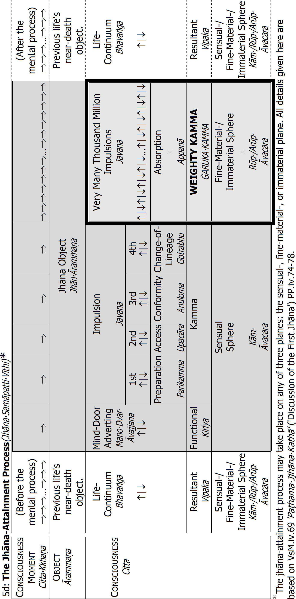
Notes to table 5d 'The Jhāna-Attainment Process'
• The object of the fine-material jhāna attainment is always a concept(paññatti) , for example, the counterpart sign(paṭibhāganimitta) of mindfulness-of-breathing (ānāpānassati), or one of the kasiṇas.490 With some objects only the first jhāna can be attained, with others all four jhānas, taking the same object.
The four immaterial jhānas are all the fourth fourfold-jhāna (fifth fivefold), and depend on previous attainment of the fourth jhāna, taking a material kasiṇa object. Each subsequent immaterial jhāna takes then a different object, dependent on the previous jhāna:491
➢ 1st immaterial jhāna: the boundless space left after removal of the boundless kasiṇa object, which is the space concept(ākāsapaññatti). The Buddha calls this jhāna the base of boundless space(ākāsanañcāyatana).
➢ 2nd immaterial jhāna: the consciousness of the first immaterial jhāna, which had boundless space as object, and is an exalted consciousness(mahaggatacitta): it is an ultimate phenomenon(paramatthadhamma). The Buddha calls this jhāna the base of boundless consciousness(viññāṇañcāyatana).
➢ 3rd immaterial jhāna: the absence of the consciousness that had boundless space as its object (and which was itself the object of the base of boundless consciousness): it is the concept of not being(natthibhavapaññatti). The Buddha calls this jhāna called the base of nothingness(ākiñcaññāyatana).
➢ 4th immaterial jhāna: the consciousness of the third immaterial jhāna, which has nothingness as object, and is an exalted consciousness: it is an ultimate phenomenon. The Buddha calls this jhāna called the base of neither-perception nor non-perception(nevasaññānāsaññāyatana).
• One consciousness lasts one consciousness moment(cittakkhaṇa), with three stages: arising(uppāda) , standing(ṭhiti) ⏐, dissolution(bhaṅga) ↓.
• Before and after a mental process, arises a number of life-continuum consciousnesses.492
• Cognition follows a fixed procedure, according to the natural law of the mind (cittaniyāma). Thus, the procedure of the fine-material jhāna process is:
➢ A mind-door adverting consciousness: it cognizes the jhāna-object.
➢ Three preparatory impulsions cognizing the same object:
i) Preparation- ii) Access- iii) Conformity Consciousness
Their application, sustainment, happiness, joy, and one-pointedness are stronger than normal sensual-sphere consciousnesses. Thus they prepare the way for absorption, are in the access of jhāna, and conform to the consciousness preceding them, and the succeeding Change of Lineage. (In one of keen faculties, the preparation consciousness does not arise: there are only three preparatory impulsions.)
➢ Change of Lineage Knowledge: it is a fourth impulsion, which marks the transition from consciousness of the limited lineage(parittagotta) of sensual-sphere consciousness to the exalted lineage(mahaggatagotta), of fine-material- or immaterial-sphere jhāna consciousness.
➢ Countless absorption impulsion-consciousnesses (formations(saṅkhāra)) cognizing the same object; each cognition reinforcing the next.493 The number of absorption impulsions depends on how long the jhāna attainment lasts, which depends on the yogi's practice and skill: it may last only some fractions of a second, it may last an hour, it may last several days. The yogi who has developed the five masteries of jhāna determines beforehand how long the jhāna attainment will last. But when the beginner first attains jhāna, there arises only one jhāna consciousness.
• In a five-door-, and mind-door process of the sensual sphere, the impulsions are all the same, but in a jhāna-attainment process (which is of the fine-material- or immaterial sphere) the impulsions are different. The first four are all sensual-sphere consciousnesses, whereas only the fifth is the actual jhāna consciousnesses. It is not only one, but many thousand million, and they are all the same. If one is in the same jhāna for a longer period (several hours, up to a week), the number of fifth impulsions is uncountable.
• The yogi enters the jhāna attainment in accordance with the way the mind is conveyed(yathābhinīhāravasena): the yogi decides which jhāna to attain.
• The wholesome kamma of a jhāna attainment becomes a wholesome weighty kamma when it is maintained up to the near-death mental process.
• This same procedure is followed when one enters into the supramundane Fruition Attainment.494
1d: The Fine-Material Sphere(RūpĀvacara) and Immaterial Sphere(ArūpĀvacara)
Resultant Consciousness(VipākaCitta)
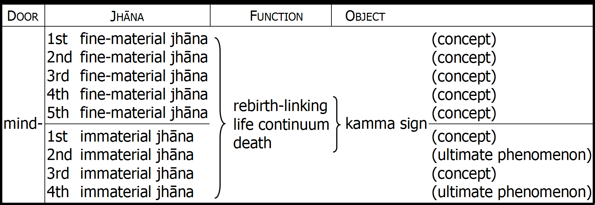
Even though these types of resultant consciousness are the result of wholesome kamma, they are in the Pali never called wholesome-resultants(kusalavipāka), since that term refers only to the unrooted wholesome resultants: see table, p.66.
Function: these nine types of consciousness may function as one life's life-continuum consciousnesses: the first one is the rebirth-linking consciousness(paṭisandhicitta) and the last one is the decease consciousness(cuticitta). Such types of consciousness are also called process-separate consciousnesses(vīthimuttacitta).
Object see notes to table 5d 'The Jhāna-Attainment Process'. For the kamma, kamma sign, or destination sign, and the process-separate consciousnesses, see notes to table 5a 'Death and Rebirth', p.51.
Habitual Kamma
Next in order of effect is habitual kamma(āciṇṇakamma): unwholesome or wholesome kamma that is done habitually, frequently, and continuously. Habitual kamma matures before unusual kamma(abahulakamma).495 And of several habitual kammas, the most habitual unwholesome or wholesome kamma matures first.
Unwholesome Habitual Kamma
As examples of habitual unwholesome kamma we may refer to the Venerable Mahāmoggallāna. He was chief disciple in psychic powers(abhiññā). At one time, he was living together with the Venerable Lakkhaṇa on the Vulture-Peak Mountain (GijjhaKūṭa Pabbata).496 And once,E210 as they were descending the mountain, the Venerable Mahāmoggallāna smiled. His companion asked him why he smiled, and he said please to ask this only in The Buddha's presence. So, in The Buddha's presence, the Venerable Lakkhaṇa asked him again. The Venerable Mahāmoggallāna explained that he had seen a skeleton moving through the air. Vultures, crows, and hawks were attacking it, and tearing it apart, and it was giving out cries of pain. He had smiled because he thought it was amazing that such a being could exist. Then The Buddha turned to the bhikkhus and explained:
With the [divine] eye developed indeed, bhikkhus, disciples dwell; with [the higher] knowledge developed indeed, bhikkhus, disciples dwell, by which the disciple speaks of such a thing, knows it, and sees it, and can witness it.
In the past for me, bhikkhus, there was sight of that being,497 although I did not speak of it. Had I spoken of it, others would not have believed me. If they had not believed me, that would for a long time be to their detriment and suffering.
That being, bhikkhus, in this very Rājagaha was a butcher. He having suffered that kamma's result for many years, for many hundred years, for many thousand years, for many hundred thousand years in hell, owing to that same kamma's power, such an individual existence has acquired and is experiencing.
Here, the butcher's livelihood was to kill cattle. That was his habit: habitual kamma. Owing to that kamma, he suffered for a long time in hell. But when he passed away from hell, his near-death mental process took as object a heap of meatless cattle bones. So, owing to the same kamma(kammasabhāgatāya), or the same object(ārammaṇasabhāgatāya), he was reborn as a ghost in the form of a skeleton. In his next existence, he still suffered torment for his habitual kamma as a butcher.
The Venerable Mahāmoggallāna reported seeing also more such beings, and again The Buddha confirmed seeing them Himself. In each case, it was beings who suffered because of habitual unwholesome kamma:
• A cattle-butcher suffered in hell for many hundred thousand years.498 He was reborn as a ghost in the form of a piece of meat crying out in pain as it was being torn at by vultures, crows, and hawks.
• A woman who committed adultery suffered in hell for many hundred thousand years.499 She was reborn as a ghost in the form of a flayed woman crying out in pain, as she was being torn at by vultures, crows, and hawks.
• A bad bhikkhu, who in The Buddha Kassapa's Dispensation received the four requisites from the faithful,500 had been without restraint in body and speech, and had practised wrong livelihood, enjoying himself as he pleased: he suffered in hell for many hundred thousand years. Then he was reborn as a ghost in the form of a bhikkhu crying out in pain because his outer robe, bowl, girdle, and body were burning and blazing.
Wholesome Habitual Kamma
A happier example is the example of the householder Dhammika.E211 As a habit throughout his life, he made offerings to The Buddha and Sangha. At the time of death, the destination sign(gati nimitta) of that wholesome habitual kamma appeared as devas of the six deva planes in shining chariots come to take him away.501 Having aspired to it beforehand, he chose to go to the Tusitā deva plane.502
Near-Death Kamma
Next in order of effect is near-death kamma(āsannakamma): an unusual kamma that at the time of death is recollected very vividly. An unusual kamma is itself not strong enough to overpower a habitual kamma. But if at death, one recollects the unusual kamma very vividly, the act of vivid recollection may give it enough strength to overpower the habitual kamma. Then can the unusual kamma produce its result, and one is reborn accordingly.
Unwholesome Near-Death Kamma
Queen Mallikā
A good example of this process is Queen Mallikā, queen to King Kosala.503 She was a devout Buddhist, and every day in the palace she gave almsfood to five hundred bhikkhus: that was her habitual kamma. But at death, she was unable to control her mind, and recollected very vividly one unusual unwholesome kamma she had done. For that reason, she was reborn in hell. Nevertheless, the unusual unwholesome kamma was not very severe, meaning it was quite weak, and after seven days it was overpowered by her habitual kamma: she escaped from hell and was reborn in the deva world.
We may thus understand that it is very dangerous to dwell on one's unwholesome deeds at the time of death. That is why it is custom for those with faith in The Buddha to remind a dying person of his good deeds, or to urge him to arouse good thoughts in the final moments of his life. Even a person of bad character (who has accomplished unwholesome habitual kamma) should just before dying try to recollect a wholesome kamma, or try to accomplish a wholesome kamma, for then may she or he be reborn according to that kamma instead.
Wholesome Near-Death Kamma
TambadāṬhika the Executioner
A good example is Tambadāṭhika, the king's executioner.504 For fifty-five years, he beheaded criminals, but in his old age he could no longer behead a man with a single blow, and was made to retire. On the day he retired, he offered the Venerable Sāriputta some sweet milk-porridge with fresh ghee. Afterwards, the Venerable Sāriputta gave him the progressive instruction(anupubbikathā) in four stages:505
• Instruction on offering(dānakathā).
• Instruction on morality(sīlakathā).
• Instruction on the heavens(saggakathā): that is the results of offering and morality.
• Instruction on the danger, depravity, and defilement of sensual pleasure (kāmānaṁ ādīnavaṁ okāraṁ saṁkilesaṁ), and the advantage of renunciation(nekkhamme ānisaṁsaṁ pakāsesi).
Then, when the Venerable Sāriputta could see that Tambadāṭhika's mind was calm, ready, and full of faith, he instructed him in the most superior Dhamma teaching of Buddhas(Buddhānaṁ sāmukkaṁsikā Dhammadesanā):
1) Suffering (dukkha) 2) Its origin (samudaya) | 3) Its cessation (nirodha) 4) The path (magga) |
Tambadāṭhika listened with wise attention(yoniso manasikāra). And owing to sufficient past practice of knowledge and conduct(vijjācaraṇa),506 he was able now to attain the Formations-Equanimity Knowledge(SaṅkhārUpekkhāÑāṇa),507 very close to the Stream-Entry Path Knowledge(SotĀpattiMagga). Then he accompanied the Venerable Sāriputta some of the way, and returned home. But on his way home, a demon in the guise of a cow gored him to death.508 At the time of death, he recollected the two wholesome kammas with great vividness: offering milk-porridge to the Venerable Sāriputta, and listening to Dhamma. That became his near-death kamma, and he was reborn in the Tusitā deva world.
The Mind at Death
Now, please do not misunderstand this example. Please do not think that one can accomplish many unwholesome kammas throughout one's life, and then just recall a wholesome kamma at death in order to gain a happy rebirth. Tambadāthika attained the Formations-Equanimity Knowledge by listening to a Dhamma talk: that requires strong and powerful pāramī. Such a case is quite exceptional, for The Buddha makes it clear that only a very, very, very small number of ordinary people(puthujjana) are reborn as human beings after death.509
Please remember that it is very difficult to control one's mind at death. For example, if one is killed in a catastrophe like an earthquake or a tsunami, or if one is killed in a war or an accident, or if one is attacked by someone, then fear will inevitably arise. It is very difficult to control one's mind when there is much fear: fear is hatred-rooted, and if one dies with a hatred-rooted consciousness, one will be reborn either in the ghost world, the animal world, or hell. Also if one dies of a terrible disease with much pain, it is difficult to control one's mind. And if one has been given heavy drugs by the doctor, how is one going to control one's mind? Even if one dies under peaceful circumstances, it can be difficult to control one's mind, because the mind changes so quickly. And if one has never practised sense-restraint, or if one has not meditated properly, if one has always engaged in sensual pleasures, then how is one going to be able to control one's mind?
Say one reflects on the beauty of one's children, the beauty of one's husband or wife, the beauty of one's house or garden, or the beauty of a flower, and other such things: that is rooted in greed and delusion. It is a perverted perception(saññāvipallāsa),510 based on unwise attention. If one has habitually looked upon such objects with such unwise attention, it will be very difficult at death suddenly to reflect upon them with wise attention. One may also never have reflected on death. Then, on one's deathbed, one may worry about dying and be unhappy: that is rooted in hatred and delusion. One may also never have practised contentment and patience, and frequently be discontent and impatient on one's deathbed: that is also rooted in hatred and delusion. One may also die harbouring a grudge against someone, or one may die with remorse for something bad one has done, or something good one has failed to do: that is also rooted in hatred and delusion. One may be confused about what happens after death: that is rooted in delusion. If one dies with such consciousness (rooted in greed and delusion, hatred and delusion, or delusion alone),511 one cannot avoid being reborn in a woeful state.512
That is why The Buddha, His disciples, and others who teach the workings of kamma, encourage people to practise the three merit-work bases: to help people avoid being reborn in a woeful state.513 But if one's merit-work is inferior, or it is a wrong practice, maybe based on wrong view, then it will not be of much help, will it?
Accomplished Kamma
Let us then discuss the last type of kamma to mature: accomplished kamma (katattākamma). It is simply kamma that has been completed, any of the twenty courses of kamma that we discussed earlier. Let us just mention them again briefly:514
Ten unwholesome courses of kamma(dasa akusalakammapatha) | ||
Three Unwholesome Bodily Courses of Kamma | Four Unwholesome Verbal Courses of Kamma | Three Unwholesome Mental Courses of Kamma |
1) to kill | 1) to lie | 1) to covet |
2) to steal | 2) to slander | 2) to harbour ill-will |
3) to commit | 3) to use harsh speech | 3) to hold wrong view (to deny the |
4) to prattle | worlds of existence, etc.) | |
Ten wholesome courses of kamma(dasa kusalakammapatha) | ||
Three Wholesome Bodily Courses of Kamma | Four Wholesome Verbal Courses of Kamma | Three Wholesome Mental Courses of Kamma |
1) from killing to abstain (to be merciful and kind towards beings) 2) from stealing to 3) from sexual | 1) from lying to abstain (to speak only the truth) 2) from slander to 3) from harsh speech to abstain (to speak gently and politely) 4) from prattle to abstain (to speak only of things worth listening to, things of value) | 1) not to covet 2) to have goodwill towards all beings 3) to hold Right View |
Such unwholesome or wholesome kamma one may have done in this life, in the previous life, or in the infinite past. It brings about rebirth, when the previous three types of kamma either do not exist or fail to arise. Accomplished unwholesome kamma brings about rebirth in the animal world, in the ghost world or in hell, and accomplished wholesome kamma brings about rebirth in the human world or the deva worlds.
That concludes our explanation of the order in which kamma takes effect: first weighty kamma, then habitual kamma, then near-death kamma, and last accomplished kamma.
Function of Effect
The third four categories of kamma we shall discuss are according to kamma's function(kicca). When kamma matures, it may take one of four functions:515
1) Productive kamma( janakakamma)
2) Reinforcing kamma(upatthambhakakamma)
3) Frustrating kamma(upapīḷakakamma)
4) Interceptive kamma(upaghātakakamma)
As we discussed earlier, an unwholesome or wholesome kamma is properly accomplished only with the fulfilment of certain factors: that includes the either unwholesome or wholesome volition to accomplish the kamma. It is called the conclusive volition(sanniṭṭhāna cetanā). The volitions that come before and after the conclusive volition are then called the preceding&succeeding volitions(pubbāparacetanā).516
Only the conclusive volition functions as rebirth-producing productive kamma, whereas the preceding&succeeding volitions function as reinforcing-, frustrating-, and interceptive kamma, as well as other productive kamma.
Productive Kamma
The function of productive kamma( janakakamma) is to produce the five aggregates517(mentality-materiality),518 at rebirth(paṭisandhi), and in that life's continuance(pavatti).519 Productive kamma is unwholesome or wholesome.
Productive kamma produces rebirth only if its result arises immediately after the decease consciousness in the previous life.520 Rebirth is the simultaneous arising of three things:521
1) The rebirth-linking consciousness(paṭisandhicitta): that is the consciousness aggregate.
2) The rebirth-linking mental factors(paṭisandhicetasika) :522 that is the mental factors of the rebirth-linking consciousness; the feeling-, perception-, and formations aggregate.
3) The material body of the new being, the materiality aggregate, which is the kamma-born types of materiality(kammajarūpa).
At a human being's conception, there arises only body-, heart-, and sex decad-kalāpas. After conception (during gestation) arise the remaining types of materiality, including eye-, ear-, nose-, and tongue materiality, which are also kamma-born.523
The five aggregates produced at rebirth are the result of any of the ten unwholesome or wholesome courses of kamma(kammapatha). We discussed them earlier: killing or abstaining from killing, theft or abstaining from theft, engaging in sexual misconduct or abstaining from it, etc.524
Apart from producing the five aggregates at rebirth, productive kamma produces the five aggregates also in the course of life. But it cannot be the same kamma as the one that produced the rebirth consciousness: it is always another kamma.525 And again, it is the arising of three things:
1) The different types of resultant consciousness(vipāka citta): that is the consciousness aggregate, which is made of the eye, ear, nose, tongue, and body consciousnesses, as well as the receiving, investigating, and registering consciousnesses.526
2) Their different types of associated phenomena(sampayutta dhamma), the mental factors(cetasika) associated with the different types of resultant consciousness: that is the feeling-, perception-, and formations aggregate.
3) The material body of the being: that is the material aggregate, which is the continuity of kamma-born materiality: the six sense bases, etc.
Any type of unwholesome and wholesome kamma without exception can produce results in that life's continuance(pavatti).
The Comfortable Elephant
Such kamma The Buddha explains, for example, in connection with someone who has been reborn as an elephant:527
Suppose one is a killer; one is a stealer of what has not been given; one is a wrong-doer in sensual pleasure; one is a speaker of untruth; one is a speaker of slander; one is a speaker of harshness: one is a prattler; one is a coveter; one is one with a mind of ill-will; one is one of wrong view, but to ascetics and Brahmins one has been an offerer of food, drink, clothing, transport, garlands, scents, ointments, beds, dwellings and lamps.
At the breakup of the body, after death, among elephants one is reborn. There one enjoys food and drink, flowers and various adornments. In so far as one was a killer [etc.], on the breakup of the body, after death, one was reborn among elephants. But because to ascetics and Brahmins one had offered food, drink, clothing, transport, garlands, scents, ointments, beds, dwellings, and lamps, for that reason one received food and drink, flowers, and various adornments.
Here, that person's unwholesome kamma functioned as productive kamma, to produce her or his rebirth as an elephant. But the wholesome kamma functioned as productive kamma in the course of that life, to help keep the elephant healthy, provide a happy living, and maintain the elephant's happy life.528
Rich through Wrong Livelihood
In the same way, someone who has been reborn as a human being may become rich through wrong livelihood: for example, killing, stealing, and selling weapons. Then you may ask: 'But how can unwholesome kamma produce a desired, pleasant and agreeable result? The Buddha says it is impossible.' 529
Here, it is not that person's unwholesome kamma that provides the wholesome result; it is still only wholesome kamma that does it. In a previous life she or he made money and acquired possessions by killing, stealing, and selling weapons, etc. Using that money, she or he accomplished wholesome kammas, for example, making offerings to ascetics and Brahmins. While making such wholesome kammas, there may also have been the wish to be successful in business. And one of those wholesome kammas functioned now as the productive kamma that produced a human rebirth. But other of those 'offering kammas' function as productive kamma only when she or he again accomplishes such unwholesome kamma: she or he becomes rich only by wrong livelihood. Such cases we may have seen in any country: someone who is unsuccessful in Right Livelihood, but very successful in wrong livelihood.
That does not mean, however, that one will not suffer for one's unwholesome deeds: no. One's unwholesome kamma may in some subsequent life function as unwholesome productive kamma to produce an unhappy rebirth, as well as function as unwholesome reinforcing kamma in the course of such a life.
Another example of how productive kamma functions in the course of a life is a so-called mansion-ghost(vimānapeta) :530 wholesome productive kamma produces a beautiful body, etc., and heavenly pleasures for such a being, but unwholesome productive kamma produces some type of torment related to the accomplished unwholesome kamma.
The KaṆṆamuṆḌa Devī
An example of this is the case of the devī and the crop-eared dog(kaṇṇamuṇḍa sunakha).531 In The Buddha Kassapa's Dispensation,532 there was a group of devotees, husbands and wives, who practised offering(dāna), morality(sīla), and meditation(bhāvanā). Then once, a gambler wagered with his friends that he could make one of those virtuous wives break her virtue, and make her commit adultery. And he succeeded. His friends paid the wager, and then told her husband. When her husband asked her if she had committed adultery, she denied it. And, pointing at a dog, she made an oath: 'If I did such a wicked deed, may this crop-eared, black dog eat me wherever I am born!'
Full of remorse, that woman then passed away. Her unwholesome kamma of lying about her adultery gave her rebirth as a mansion-ghost(vimānapeti). But because of wholesome kamma, she was beautiful, and had many mansions made of gold and silver,533 on the shores of Lake Kaṇṇamuṇḍa in the Himalayas.534 And she had five hundred women slaves.535 She would enjoy heavenly pleasures through the five senses: heavenly clothes, jewellery, garlands, and scents, heavenly food and drink, heavenly couches of gold and silver, her mansion had steps of gold, there were beautiful and fragrant flowers, and trees bearing many kinds of fruit, and there was the sound of many kinds of bird, trees and flowers everywhere, giving off all kinds of pleasant smells, and very beautiful surroundings. But beside her mansion, an unwholesome kamma had produced a lotus pond. And every night at midnight, she would rise from her bed and go down to the lotus pond. There, her adultery kamma and lying kamma would produce a great black dog with shorn ears, of most fearsome appearance. He would attack her, and devour her. When there was only her bones left, he would throw them into the pond, and disappear. And she would revert to her normal state, and return to bed. Every day this would happen: identical meritorious kammas(puññakamma) would produce heavenly pleasures, and identical bad kammas(pāpakamma) would produce the torment of being attacked and devoured by the black dog.536
Reinforcing Kamma
The function of reinforcing kamma(upatthambhakakamma) is not to produce its own result, but to reinforce the result of a productive kamma:537 to reinforce the quality of the result (the pleasure or pain that has arisen), or to reinforce the duration of the result (to make it last). Reinforcing kamma is also unwholesome or wholesome: unwholesome kamma reinforces unwholesome kamma, and wholesome kamma reinforces wholesome kamma.
Thus, for example, the near-death impulsions(maraṇasannajavana), the impulsions of the near-death process(maraṇāsannavīthi) are only five: that means they are too weak to produce rebirth.538 They only reinforce the rebirth-producing productive kamma, thereby helping it produce the appropriate rebirth. If the rebirth-producing kamma is unwholesome, the impulsions of the near-death process will also be unwholesome: they will give unwholesome reinforcement to the productive kamma, to produce rebirth as a ghost, animal, or in hell. If the productive kamma is wholesome, the impulsions of the near-death process will also be wholesome, and give it wholesome reinforcement, to produce rebirth as a human being or heavenly being. That way reinforcing kamma reinforces a productive kamma.
Reinforcing kammas also reinforce the results of productive kamma: they reinforce the resultant feelings of pleasure or pain, and make them endure. For example,539 when a wholesome kamma has functioned as productive kamma, to produce rebirth as a human being, wholesome reinforcing kammas help maintain the resultant dhammas, the continuity of aggregates: they help keep the human being healthy, provide a happy living, etc. That way, for example, by accomplishing wholesome kamma such as offering, morality, and meditation, one may prolong one's health, strength, and life span. On the other hand, when an unwholesome kamma has functioned as productive kamma in the course of a life, to produce a painful ailment for a human being, reinforcing unwholesome kamma may prevent medical treatment from working, thereby prolonging the ailment. That way, for example, by accomplishing unwholesome kamma such as killing, theft, sexual misconduct, lying, prattle, drinking beer and wine, etc., one may help weaken one's faculties, undermine one's health, and shorten one's life span.
Similarly, when unwholesome kamma has functioned as a productive kamma, to produce rebirth as an animal, unwholesome reinforcing kamma may reinforce other unwholesome kamma so it matures and functions as productive kamma to produce painful results. Unwholesome reinforcing kamma may also prolong the animal's unhappy life, so that the continuity of unwholesome results will endure.
Frustrating Kamma
The function of frustrating kamma(upapīḷakakamma) is to frustrate and obstruct. It frustrates the result of another kamma but does not produce a result of its own. It is also unwholesome or wholesome: unwholesome kamma frustrates wholesome kamma, and wholesome kamma frustrates unwholesome kamma.
For example, when someone's wholesome kamma functions as productive kamma to produce rebirth as a human being, unwholesome frustrating kamma may give rise to congenital ailments that prevent that person from enjoying the happy results that the wholesome productive kamma otherwise would have produced. Thus, even the results of powerful productive kamma may be frustrated by kamma that is directly opposed to it.
Unwholesome kamma may frustrate wholesome kamma productive of rebirth in a higher plane of existence so one is reborn on a lower plane, and wholesome kamma may frustrate an unwholesome kamma productive of rebirth in one of the great hells, so one is instead reborn in one of the minor hells or in the world of ghosts(peta). Unwholesome kamma may also frustrate a wholesome kamma productive of a long life so one has instead an only short life. Unwholesome kamma may frustrate wholesome kamma productive of beauty so one instead has an ugly or plain appearance.540 Lastly, for example, unwholesome kamma may frustrate wholesome kamma productive of rebirth in a high-class family so one instead is reborn into a low-class family.
King Bimbisāra
An example of unwholesome kamma frustrating the plane of rebirth is King Bimbisāra: King Ajātasattu's father. He was a Stream Enterer and great patron to The Buddha and Sangha: much loved by his people. For all his good deeds, he could have been reborn as a high deva. But because he was attached to life as a deva, he was reborn as a low deva, in the entourage of King Vessavaṇa, one of the Four Great Kings(CātuMahāRājikā).541
Bhikkhus Reborn as Heavenly Musicians
Then, as an example of unwholesome kamma frustrating the plane of rebirth, we have the three virtuous bhikkhus mentioned in the 'SakkaPañhā' sutta.542 Based on the bhikkhus' morality, they practised samatha and vipassanā successfully, but they did not attain a Noble state. Their morality was so pure that they were sure to be reborn in whatever deva world they wanted. Furthermore, since they had attained the jhānas, they could also have been reborn in one of the Brahma worlds. But at death, they were not reborn in one of the Brahma worlds: they were reborn as musicians and dancers in the deva world(gandhabba). Why? Because they had been such devas in many past lives. So their superior wholesome kammas were frustrated by their attachment for life as musicians and dancers in the world of the Four Great Kings(CātuMahāRājikā).
King Ajātasattu
Then, as an example of wholesome kamma frustrating the plane of rebirth, we can again mention King Ajātasattu. He had his father killed: King Bimbisāra, whom we just mentioned. Killing one's father is one of the six unwholesome weighty kammas(akusala garuka kamma).543 They are productive of rebirth in Avīci Hell. Later, however, King Ajātasattu gained tremendous faith in The Buddha and His Dispensation. His faith was of such wholesome power that it frustrated the unwholesome weighty kamma, and instead of being reborn in Avīci Hell, he was reborn in a minor hell(ussada), for a reduced period.544 And in the future, he will become a Paccekabuddha called Vijitāvī. At his Parinibbāna, he will then escape from all suffering.
The Slave-Woman Khujjuttarā
As an example of unwholesome kamma frustrating the status of one's human birth, we can mention the slave-woman Khujjuttarā: she was slave to Queen Sāmāvatī.545
Once, in a past life, she mimicked a Paccekabuddha because he was slightly hunchbacked. That unwholesome kamma had now frustrated her human rebirth, so she was hunchbacked.
In The Buddha Kassapa's Dispensation, she was the daughter of a treasurer, and had a friend who was a bhikkhunī Arahant. One day, while Khujjuttarā was adorning herself, the bhikkhunī visited her. Khujjutara's maid-servant was not there, so Khujjuttarā asked the bhikkhunī Arahant to hand her a basket of adornments. The Arahant bhikkhunī knew that if she refused, Khujjuttarā would bear her ill-will, which would lead to rebirth in hell. On the other hand, if she obeyed, Khujjutara would be reborn as a maid-servant. That being the better of the two, the Arahant bhikkhunī handed her the basket of adornments. Khujjutara's unwholesome kamma of asking a bhikkhunī Arahant to serve her now frustrated her human rebirth, and she was born to be a maid-servant.546
Kamma Frustrates in the Course of Life
In the course of life there are innumerable instances of frustrating kamma in operation.547 For example, unwholesome kamma will in the human world frustrate the wholesome kamma that produces the aggregates: it will help mature such unwholesome kammas that produce suffering and failure in regard to health, in regard to property and wealth, and in regard to family and friends.548 In the ghost or animal worlds, on the other hand, wholesome frustrating kamma may counteract the unwholesome productive kamma that produced the unhappy rebirth, and contribute towards occasions of ease and happiness.
Certain Kammas Frustrate — Others Reinforce
Queen Mallikā
As an example of frustrating- and reinforcing kamma operating in the same life, we can mention, Queen Mallikā. She was originally a poor flower-girl, of very plain appearance.549 One day, she was going to the park, carrying some pudding to eat. Then she saw The Buddha on His almsround. Great faith arose, and spontaneously, with great joy, she put all the pudding in His bowl.550 Then she did obeisance. Afterwards, The Buddha smiled. And He told the Venerable Ānanda that as a result of her offering, Mallikā would that very day become King Pasenadi's chief queen.
King Pasenadi was riding back to Sāvatthi from battle with King Ajātasattu: he had lost the battle, and was unhappy. Mallikā was in the park, singing because of joy over her offering. King Pasenadi heard her singing, and approached her. He talked to her, and discovered she was unmarried. Then he stayed with her for some time, and she comforted him. Afterwards, he obtained permission from her parents to marry her, and that very day, he made her his chief queen. Mallikā's joyous offering and doing obeisance to The Buddha had functioned as presently-effective kamma.551
One day, Queen Mallikā went to see The Buddha, to ask Him four questions about the workings of kamma:552
1) First, Queen Mallikā asked why some women are ugly, poor, and without
influence. The Buddha explained that the past kamma of being angry and
irritable has made them ugly; the past kamma of not making offerings, of being stingy, has made them poor; and the past kamma of envying others their gain and honour has made them uninfluential. Here, all those unwholesome kammas have frustrated the wholesome kamma that gave rebirth as a human being.553
We can see that in Queen Mallikā's case, unwholesome kamma had frustrated her human rebirth, so she was born with a plain appearance, was born into a poor garland-maker's family, and was uninfluential.
2) Second, Queen Mallikā asked why some women are ugly, yet are rich and have great influence. The Buddha explained that the past kamma of being angry and irritable has made them ugly, whereas making offerings, generosity, has made them rich, and not envying others their gain and honour (experiencing sympathetic joy(mūditā)) has made them influential. Here, the unwholesome kamma of being angry and irritable has frustrated the wholesome kamma that gave rebirth as a human being, whereas the wholesome kammas of generosity and non-envy have reinforced it.
We can see that in Queen Mallikā's case, the wholesome kamma of offering The Buddha all her food had reinforced the wholesome kamma that gave her a human rebirth, so she became King Pasenadi's chief queen, with very much influence.
3) Third, Queen Mallikā asked why some women are beautiful, yet are poor and uninfluential. The Buddha explained that the past kamma of not being angry and irritable has made them beautiful, whereas stinginess has made them poor, and envy has made them uninfluential. Here, the wholesome kamma of not being angry and irritable has reinforced the wholesome kamma that gave rebirth as a human being, whereas the unwholesome kammas of stinginess and envy have frustrated it.
4) Fourth, Queen Mallikā asked why some women are beautiful, rich, and of great influence. The Buddha explained that the past kamma of not being angry and irritable has made them beautiful, generosity has made them rich, and non-envy has made them influential. Here, all the wholesome kammas have reinforced the wholesome kamma that gave rebirth as a human being.
After The Buddha's teaching, Queen Mallikā vowed never again to be angry and irritable, always to make offerings, and never to envy others their gain and honour. And she took refuge in The Buddha.
Interceptive Kamma
Interceptive kamma(upaghātakakamma) functions in three ways:554
1) It intercepts weaker kamma, produces no result, and forbids another kamma to produce its result.
2) It intercepts weaker kamma, produces no result, and allows another kamma to produce its result.
3) It intercepts weaker kamma, and produces its own result.
Interceptive kamma is also either unwholesome or wholesome. Interceptive kamma is like a force that stops a flying arrow, and makes the arrow drop. For example, wholesome productive kamma may produce rebirth as a deva, but certain unwholesome interceptive kamma may suddenly mature and cause the deva to die, and be reborn as an animal, ghost, or in hell.
Sometimes, interceptive kamma works as frustrating kamma works: it intercepts the result of a weaker kamma only within one life. That means the weaker kamma can still produce results in some subsequent life.
Spoilt Devas
Devas who fall from their deva existence are, for example, the devas whose minds are spoilt by excessive enjoyment or envy.E212 The devas spoilt by play (khiḍḍapadosika) engage in excessive play and enjoyment. Doing so, they become as if drunk, with no control. For that reason, an unwholesome kamma intercepts the wholesome kamma that produced their deva-rebirth, so they perish and get an unhappy rebirth. And the devas spoilt by mind(manopadosika) become very envious when they see another beautiful deva, another beautiful deva-mansion, etc. There again, an unwholesome kamma intercepts the wholesome kamma that produced their deva-rebirth, so they perish, and get an unhappy rebirth.
King Ajātasattu
Then again we can mention King Ajātasattu. The Buddha taught him the great teaching that is the 'SāmaññaPhala' sutta.555 And the king had sufficient pāramī to attain Stream Entry there and then.556 But the unwholesome heavy kamma (akusala garukakamma) of killing his father intercepted his pāramī, so he remained a common person(puthujjana). In the distant future, however, those pāramī will enable him to become a Paccekabuddha called Vijitāvī.557
The Venerable Devadatta
We can also mention the Venerable Devadatta again.558 He was skilled in the eight attainments: the four material jhānas, and the four immaterial jhānas. He was also skilled in the five mundane psychic powers.559 But he had not attained any Path&Fruition: he was still a common person(puthujjana). And when he developed the desire to take over The Buddha's position as leader of the Sangha, that unwholesome kamma intercepted his jhāna wholesome kamma, so he lost his jhānas and psychic powers.E213 In the distant future, however, his jhāna wholesome kamma will produce or reinforce the production of jhānas for him again, and will help him become a Paccekabuddha.
Bāhiya Dārucīriya
Then again, interceptive kamma may indeed cut off another kamma completely, so it no longer produces its own results. Here, an example is Bāhiya Dārucīriya.560 In The Buddha Kassapa's Dispensation, he and six other bhikkhus had climbed up to the top of a mountain to meditate. They threw away the ladder that they had used, in order that they would not be able to escape. One of them became an Arahant, another a Non-Returner, whereas the remaining five (including Bāhiya) passed away with no Path&Fruition. They were reborn in the heavenly realms, and in our Buddha's Dispensation, they were reborn as human beings.
Bāhiya became a merchant, and was one day shipwrecked, but floated ashore on a plank. Having lost all his clothes, he put on a piece of bark, and went for alms. People thought he must be an Arahant, and eventually he also thought he might be an Arahant. And he became a much-honoured ascetic. But the Non-Returner from his past life in The Buddha Kassapa's Dispensation (who had been reborn in a Brahma world) told him he neither was an Arahant, nor was practising the way to Arahantship. Then Bāhiya asked the Brahma if there was anyone in the world who was an Arahant, and taught the way to Arahantship. The Brahma told him to go and see The Buddha.
So Bāhiya went to Jetavana, the monastery in Sāvatthi, where The Buddha was staying. But The Buddha was on His almsround. So Bāhiya went into Sāvatthi to find The Buddha. When he found The Buddha, he asked The Buddha to teach him the Dhamma. But The Buddha could see that Bāhiya was too excited to understand the Dhamma. So He said it was an unsuitable time, and refused. Then Bāhiya asked again, and said that The Buddha might die before Bāhiya got a teaching, or Bāhiya himself might die. The Buddha saw that indeed Bāhiya would die that very day, but again He refused. And a third time Bāhiya asked Him. By then, Bāhiya's mind was sufficiently calm, and The Buddha taught him the famous and very brief teaching:
'In the seen, the seen merely will be, in the heard, the heard merely will be, in the sensed, the sensed merely will be, in the cognized, the cognized merely will be.' Thus indeed, Bāhiya, should you train.
When then for you, Bāhiya, in the seen, the seen merely will be, in the heard, the heard merely will be, in the sensed, the sensed merely will be, in the cognized, the cognized merely will be, therefore you, Bāhiya, are not because of that; since you, Bāhiya, are not because of that, therefore you, Bāhiya, are not there; since you, Bāhiya, are not there, therefore you, Bāhiya, are neither here, nor beyond, nor between the two. Just this is the end of suffering.
Do you understand it?E214 Bāhiya Dārucīriya not only understood this brief teaching, there and then, he even attained Arahantship: that is how very powerful his pāramī were.E215 But shortly afterwards (as The Buddha had known) Bāhiya was killed by a cow. In spite of his having such superior pāramī, the kamma that produced his rebirth as a human being was intercepted, cut off by a past unwholesome kamma of killing a courtesan, so his life span was shortened.561 Because of his Arahant Path-Knowledge(ArahattaMaggaÑāṇa), all defilements had been destroyed, however, so he passed into Parinibbāna.562
The Venerable AṄgulimāla
Another example of how interceptive kamma may cut off another kamma completely is the case of the Venerable Aṅgulimāla.563 Before ordaining as a bhikkhu, he killed very many people: he accomplished uncountable unwholesome kammas. But after he had ordained as a bhikkhu, he undertook the bhikkhu's higher morality-training. Then, with The Buddha as his teacher, he practised the bhikkhu's higher mind-training (samatha meditation), and higher wisdom-training (insight meditation), and attained the Arahant Path-Knowledge and Fruition-Knowledge. The Arahant Path-Knowledge functioned as wholesome presently-effective interceptive kamma, to cut off all the unwholesome and wholesome kamma capable of producing rebirth that he had accomplished in that life, and previously in the infinite past: they all lapsed. That meant he would never again be reborn.
The Hunter Sunakhavājika
Another example is from ancient Sri Lanka.564 There was a hunter called Sunakhavājika: he went hunting with dogs. His son was a bhikkhu called the Venerable Soṇa. And he was unable to make his father undertake Right Livelihood. But when his father got old, he managed to persuade the old man (against his will) to ordain as a bhikkhu. Then, when the old man was on his death-bed, there appeared a destination sign(gatinimitta) :565 enormous dogs surrounded him, as if to eat him. The old man became very frightened, and cried out in fear.
Then the Venerable Soṇa had many flowers brought by novices, and had them all offered to The Buddha statue, and strewn about the shrine and the Bodhi Tree. And he had his father brought in his bed. He told him all the flowers were an offering to the Blessed One, on his behalf. And he told his father to do obeisance to The Buddha, and to set his mind at rest. His father did as instructed, and his mind settled down. And there appeared to him a new destination sign: deva palaces, and the beautiful gardens in the deva world, etc. In that way, his wholesome kamma of worshipping The Buddha (reinforced by other wholesome kamma) intercepted his unwholesome kamma of having hunted innocent beings in the forest.
Let us then discuss the three ways in which interceptive kamma functions.
Intercepts — No Result — Forbids
The first way in which interceptive kamma may function is to only intercept weaker kamma, to produce no result, and to forbid another kamma to produce its result.
The Venerable Mahāmoggallāna
For example, The Venerable Mahāmoggallāna. In a past life, he had beaten his parents, with the intention to kill them. Over many lives, that unwholesome kamma produced its results: it produced results also in his last life. Over seven days, hired bandits came to his dwelling to kill him. But the Venerable Mahāmoggallāna knew their intention with his psychic power, and with his psychic power, he disappeared from his dwelling: he went out of the keyhole. On the seventh day, however, he was unable to disappear: his parricide kamma functioned as frustrating kamma to stop him from attaining jhāna, and he could not exercise his psychic powers. Then an identical kamma functioned as interceptive kamma, and the bandits beat him to death, till his bones were smashed completely. And then they left him. But he did not die. The interceptive kamma did not cut off his present five aggregates and produce rebirth. He was able again to enter jhāna, and exercise his psychic powers. And using his psychic powers, he was then able to go and ask The Buddha for permission to enter Parinibbāna, to return to his dwelling, and to enter Parinibbāna there.
The Venerable Cakkhupāla
Then another example from our Buddha's time is the bhikkhu called the Venerable Cakkhupāla.E216 He was an Arahant. Wholesome kamma that he had accomplished in a past life produced his five aggregates as a human being at rebirth, as well in the course of this his last life. The materiality aggregate includes the five material sense faculties: they are the translucent element by which the eye sees sights, the translucent element by which the ear hears sounds, the translucent element by which the nose smells odours, etc.566 When a human being can see, hear, smell, etc., it is owing to past wholesome kamma. But in a past life, as a doctor, the Venerable Cakkhupāla had accomplished a very unwholesome kamma. One of his patients had been a woman with failing eyesight. And she had promised him that if he cured her, she and her children would become his slaves. When her eyesight was restored, however, she changed her mind, and pretended her eyes were worse than before. To take revenge, the doctor then gave her some ointment to make her blind. When she applied it to her eyes, she went completely blind.
That happened in one of the Venerable Cakkhupāla's past lives. Now, in his last life, as a bhikkhu, he undertook to spend one rains retreat in only the three postures: walking, standing, and sitting down. He was not going to lie down for three months: that is one of the thirteen ascetic practices taught by The Buddha. After doing this for one month, the Venerable Cakkhupāla's eyes began to trouble him. And on the night he attained Arahantship, he went blind. The unwholesome productive kamma of blinding the woman in a past life matured now to function as interceptive kamma that cut off his eye faculty. But it produced no result of its own, and forbade another kamma to produce its result. So no wholesome kamma was able to give the Venerable Cakkhupāla his eye-sight again.
Intercepts — No Result — Allows
The second way in which interceptive kamma may function is to intercept weaker kamma, to produce no result, but to allow another kamma to produce its result.
Queen Sāmāvatī
Here, we can take as example, King Udena's queen Sāmāvatī, and his consorts.567 In a previous life Sāmāvatī and her friends had been concubines in the king of Bārāṇasī 's harem. One day, having bathed with the king in the river, they felt cold, and set fire to a tangle of grass nearby. When the grass had burned down, they found a Paccekabuddha seated there. Since they had had no intention to burn him, it was not unwholesome kamma. But the king held the Paccekabuddha in great reverence, and he might punish them for having burnt the Paccekabuddha to death. So Sāmāvatī and her companions gathered grass, placed it round the Paccekabuddha's body, poured oil on it, and set fire to it so as to destroy all traces of their crime. This act, of burning the Paccekabuddha with evil intention, was unwholesome kamma. The Paccekabuddha, however, had entered the cessation attainment(nirodhasamāpatti), an attainment that is the temporary cessation of mentality and consciousness-born materiality, and nothing could therefore harm him.568 Nonetheless, even though the Paccekabuddha had not died, Sāmāvatī and her companions had accomplished much unwholesome kamma by their action, and they experienced the result in a subsequent life.569
In our Buddha's time, a past wholesome kamma produced their rebirth as human beings. And Sāmāvatī became King Udena's queen, and her former companions became his consorts. They became also devout Buddhists who offered many requisites to The Buddha and Sangha, studied the Dhamma, and with success practised samatha and vipassanā. Because of that practice, Sāmāvatī became a Stream Enterer(SotĀpanna), and the consorts attained various Noble attainments. But one day, the kamma of burning the Paccekabuddha matured as interceptive kamma to cut off their life faculty: they were burned to death in their own quarters.E217 The interceptive kamma's own result did not arise, but allowed the wholesome kammas that each one of them had accomplished in our Buddha's time to produce rebirth in the deva and Brahma worlds respectively.
The Five Hundred Bhikkhus
Another example is the five hundred bhikkhus who were killed, either by themselves or another.570 The Buddha knew that they all shared a common unwholesome kamma: in the distant past, they had all been hunters in the same forest. Using weapons and traps, they had made hunting their livelihood. With keen pleasure(haṭṭhatuṭṭha), they had throughout their lives killed animals and birds. At their death, that kamma produced rebirth in hell. Then a wholesome kamma gave them rebirth as human beings. And, dependent on a good friend, they came into the presence of The Buddha, and ordained as bhikkhus. Some of them became Arahants, some became Non-Returners, some became Once Returners, some became Stream Enterers, whereas some remained ordinary people(puthujjana).
One morning, as The Buddha was surveying the world with His Buddha-Eye (BuddhaCakkhu), He saw that within two weeks those five hundred bhikkhus would die: indefinitely-effective 'hunting-as-livelihood' kamma would intercept the wholesome kamma that had given them their human rebirth. The Buddha also saw it was impossible to stop this result from arising. And He saw that the Arahants would not be reborn; the other Noble Ones would have a happy rebirth; but those who were still ordinary people(puthujjana) would die with lustful desire(chandarāga), with attachment for their human life, and would die with fear: that would produce a bad rebirth. If, however, He taught them to practise foulness meditation, they would remove their attachment for life, and fear of death. And with that wholesome kamma, they would attain rebirth in the deva world: The Buddha saw that He could help them only that way. And that way, their ordination as bhikkhus would still turn out beneficial to them. So The Buddha told them to take foulness(asubha) (the thirty-two parts of the body(dvattiṁsākāra)) as their main meditation subject:571 in many ways He spoke in praise of that meditation.
The Buddha also knew that in those two weeks, the bhikkhus would come and report: 'Today one bhikkhu died', 'Today two bhikkhus died', etc. Knowing He could not stop it, knowing there was no purpose in His hearing those things, and to protect those who might criticize Him for not stopping it, The Buddha went into seclusion for those two weeks. And two weeks later, all five hundred bhikkhus had died.
There was an ascetic known as Migalaṇḍika the fake ascetic(samaṇakuttaka): he lived off the bhikkhus' leftovers. And those bhikkhus who were still ordinary people(puthujjana), either got him to kill them, or got another unenlightened bhikkhu to kill them, or committed suicide. Why? Because even though The Buddha says suicide is blameable(sāvajja) in one who is not an Arahant, they thought it was blameless(anāvajja) : even though it was unwholesome kamma, they thought it was wholesome kamma.572/E218
Even Migalaṇḍika the fake ascetic thought it was wholesome kamma. How? First he killed a number of bhikkhus because they asked him to, and because they told him he could have their requisites. And when he then got remorse, a deva told him he should have no remorse. The deva told him he was doing the bhikkhus a favour. And because he believed the deva, he then went back and killed more bhikkhus, including the Noble Ones who had not asked him to kill them.573 That was how all five hundred bhikkhus then died.
And when all the bhikkhus had died, The Buddha returned. And He asked the Venerable Ānanda why the Sangha was so diminished. The Venerable Ānanda told Him it was because the bhikkhus had practised foulness meditation. And the Venerable Ānanda suggested The Buddha teach another meditation subject. The Buddha asked the Venerable Ānanda to have the remaining bhikkhus assembled, and then explained and spoke in praise of mindfulness of breathing(ānāpānassati).
Here we need to be very careful to understand this story properly. Just earlier, we mentioned how the Venerable Bāhiya was killed by a cow, and the Venerable Mahāmoggallāna was beaten to death by bandits. That cow and those bandits accomplished their unwholesome kamma by their own volition. But their victim died because of past unwholesome kamma intercepting the wholesome kamma that had given him his human rebirth.
Please always remember that if one is attacked by someone, or one is killed in an accident, etc., one is experiencing the result of one's own past kamma. The being who attacks one, or the accident that takes place, etc., is merely the instrument by which one's past unwholesome kamma intercepts the wholesome kamma that gave one a human rebirth.574
It is maybe difficult to understand, but please remember that according to The Buddha, the workings of kamma cannot be understood by mere reasoning. You can properly understand them only when you yourself discern the workings of dependent origination. Until then you must depend on faith: not doubt.
The unenlightened bhikkhus had to die within those two weeks, one way or another. That was because of their own past unwholesome kamma. But they did not do as they did because of their own past unwholesome kamma. They did it because of the strong loathing for life they had developed through foulness meditation, and because they did not understand that what they wanted to do was blameable.575 In the same way, as we just explained, Migalaṇḍika the fake ascetic did not do as he did because of the bhikkhus' past unwholesome kamma. And The Buddha did not do as He did because of the bhikkhus' past unwholesome kamma either. He did as He did because He knew their past kamma would intercept one way or another, and that they would all die. And The Buddha knew also that the best way for the unenlightened bhikkhus to die was to die without lust for life, because that wholesome kamma would then give them rebirth in the deva world.576/E219
Intercepts — Own Result
The third way in which interceptive kamma may function is to intercept weaker kamma, and produce its own result.
Māra Dūsī
An example is the case of Māra Dūsī, during The Buddha Kakusandha's Dispensation.577 The Buddha's two chief disciples were the Venerable Vidhura and the Venerable Sañjīva.578/E220 One day, the Venerable Sañjīva sat down under a tree, and entered into the cessation attainment(nirodhasamāpatti). Some cowherds, goatherds, and farmers passed by, and saw him sitting under the tree: they thought he was dead. So they covered his body with grass and wood, etc., and set fire to it. Then they left.
Now, when one enters into the cessation attainment, it is impossible for one to suffer any harm: and it is impossible for one's requisites to be ruined.579 So at dawn the next day, the Venerable Sañjīva emerged unharmed from the attainment. He shook out his robe, and with bowl went for alms in the village. When those same cowherds, goatherds, and farmers saw him going for alms, they thought the dead bhikkhu had come back to life: they were filled with wonder and faith.
The Māra at that time was called Māra Dūsī. Like all Māras, he did not like such virtuous, well-behaved bhikkhus, because he did not know their coming and going(āgatiṁ vā gatiṁ vā); he did not know where they were going to be reborn. Why did he not know? Because the Arahant attains Parinibbāna with consciousness (viññāṇa) unestablished(appatiṭṭhita).580 Since the Arahant has put an end to craving and ignorance, there is no subsequent rebirth.
To try to prevent this, Māra Dūsī created images of the bhikkhus misbehaving, for the Brahmin householders to see. And he encouraged the Brahmins to criticize, abuse, scold, and trouble the virtuous bhikkhus. Māra Dūsī thought unpleasant feelings would then arise in the bhikkhus' minds, associated with ill-will, anger, dissatisfaction, dejection of the mind, etc.,E221 which would hinder their practice. That way, he would then be able to know their coming and going. But when the Brahmin householders criticized, abused, scolded and troubled the bhikkhus, The Buddha Kakusandha told the bhikkhus to practise the four divine abidings (cattāro brahmavihāra): 1) loving-kindness(mettā), 2) compassion(karuṇā), 3) sympathetic joy(muditā), and 4) equanimity(upekkhā). And He told them to use the four divine abidings as their basis for insight meditation, to attain Arahantship. So the bhikkhus would go to the forest or an empty place, and practise according to His instructions. That way, Māra Dūsī 's plan fell through: he did still not know their coming and going. Then he encouraged the Brahmin householders to do the opposite: to honour, respect, revere, and pay homage to the virtuous bhikkhus. Māra Dūsī thought pleasant feelings would then arise in the bhikkhus' minds, associated with delight, pleasure, elation of mind, etc.,E222 which would hinder their practice. But here again, The Buddha Kakusandha had a remedy. He told the bhikkhus instead to practise the four types of perception(saññā) :581 1) the foulness perception(asubhasaññā), 2) the food-repulsiveness perception(āhāre paṭikūlasaññā), 3) the entire-world disenchantment perception(sabbaloke anabhiratisaññā), and 4) the impermanence perception(aniccasaññā). And again, the bhikkhus would go to the forest, etc., and practise according to His instructions: they would use these four meditation subjects to counteract lust, hatred, and delusion, develop insight, and attain Arahantship. Again, Māra Dūsī 's plan fell through: again, he did not know their coming and going.
Then one day, when The Buddha Kakusandha went for alms together with His chief disciple Vidhura, Māra took possession of a boy. The boy picked up a potsherd and threw it at the Venerable Vidhura. It cut his head and drew blood. And now The Buddha Kakusandha turned about with a Buddha's elephant look(nāgāpalokita). He then said: 'This Māra Dūsī the limit does not know(na vāyaṁ dūsī māro mattamaññāsi).' And then Māra Dūsī fell from there and was reborn in the Great Hell. There he was cooked for many thousand years. He was even reborn in the worst of all hells (a smaller hell attached to the Great Hell), where he was cooked for ten thousand years: there, he had a human body and a fish's head.
Dūsī Māra's kamma of harassing a Chief-Disciple intercepted the wholesome kamma that gave him rebirth in the deva world. And it produced its own result, which was rebirth in the Great Hell, even in the worst of all the hells there.
We need here understand that Māra Dūsī 's rebirth in hell was not caused by The Buddha Kakusandha's elephant look, or his words. It was caused solely by Māra Dūsī 's unwholesome kamma of harassing the chief disciple of a Buddha.582 Thus are the workings of kamma.
King Kalābu
Another example is the king of Bārāṇasī, King Kalābu, many aeons before our Buddha's time.583 He had the five aggregates of a human being because of past wholesome kamma. And he became king also because of past wholesome kamma. But one day, he got angry at an ascetic Khantivādī, who taught patience (khanti), and who was our Bodhisatta. To test the Venerable Khantivādī's patience, King Kalābu had Khantivādī's nose cut off, then his ears, then his hands, and then his feet. Those unwholesome kammas matured presently, for the earth opened up and sucked Kalābu down to Avīci Hell. His present unwholesome kamma intercepted the wholesome kamma that had produced his five aggregates as King Kalābu, and produced its own result, which was the five aggregates of a being in hell.584 We may thus say that the kamma of killing the ascetic functioned both as interceptive kamma and as productive kamma. Looking at it another way, we may also say that one kamma of killing the ascetic intercepted the kamma that produced his five aggregates as King Kalābu, and another identical kamma produced his five aggregates as a being in Avīci Hell:585 that is, the interceptive kamma and the productive kamma had the same identity(ekattanaya).586
Let us then discuss the principle of identity.
The Principle of Identity
According to the principle of identity, the series of kammas that constitute one accomplished action are the same: all the different impulsions have the same identity.587
We may understand this principle if we look at the process of dependent origination(paṭiccasamuppāda):E223
[1] Because of ignorance, formations [arise];
[2] because of formations, consciousness;
[3] because of consciousness, mentality-materiality;
[4] because of mentality-materiality, the six bases.
This process is similar to the process of a seed going through the stages of shoot, seedling, sapling, etc., eventually to become a tree. The seed, shoot, seedling, sapling, etc. are not the same as the tree, but the continuity is the same: the different stages have the same identity.
When one accomplishes the wholesome kamma of making an offering(dāna), of undertaking and observing morality(sīla), and of practising samatha and vipassanā meditation, then according to the principle of identity, each such action is considered to be one kamma. In the same way, when one accomplishes the unwholesome kamma of killing, of stealing, of engaging in sexual misconduct, of telling a lie, or of drinking beer and wine, etc., each such action is considered to be one kamma. But it does not mean that one of those actions comprises only one volition(cetanā), for in the course of just one of those actions, many billion unwholesome or wholesome mental processes arise and perish. As we have explained before, on our plane (the sensual-sphere plane(kāmāvacarabhūmi)), within a snap of the fingers very many thousand million consciousnesses arise and perish: they include many thousand million mental processes(cittavīthi).588 In each of those mental processes there are seven impulsion consciousnesses( javana).589 So, when we speak of one kamma, we are in fact referring to the series of kammas that comprise the completed action, such as making an offering. If we consider actions in this way, we may understand that one kamma can function in several ways.
Before we discuss the principle of identity further, let us first summarize the different functions that kamma can exercise:590
1) When a kamma produces the resultant mentality and materiality at rebirth and in the course of a life, it has functioned as productive kamma( janakakamma).
2) When a kamma facilitates the maturing of the result of an unwholesome or wholesome productive kamma, and makes the result endure, it has functioned as reinforcing kamma(upatthambhakakamma).
3) When a kamma obstructs the result of an unwholesome or wholesome productive kamma, it has functioned as frustrating kamma(upapīḷakakamma).
4) When a kamma takes over, and cuts off the result of an unwholesome or wholesome productive kamma, it has functioned as interceptive kamma (upaghātakakamma).
All these four functions may be exercised by one kamma, that is, different kammas of the same identity may exercise different functions. When, for example, you make an offering to a virtuous person, many billion mind-door processes arise and perish in your mentality-materiality continuity: before you make the offering, while you are making the offering, and after you have made the offering. In each mental process, there are seven wholesome impulsions: some of them will function as productive kammas; some will function as reinforcing kammas; some will function as frustrating kammas; some will function as interceptive kammas; and many of them will not function at all, because they will lapse.
The Venerable Devadatta
A good example of these four functions operating within one identical course of mentality-materiality is the Venerable Devadatta.591 A wholesome kamma functioned as productive kamma to produce his rebirth into a royal family. That wholesome kamma functioned also as productive kamma and reinforcing kamma to produce continued happiness in his royal life, and later as a bhikkhu. But when he as a bhikkhu later was suspended by the Sangha for his evil deeds, he lost people's respect and was despised: then was his wholesome kamma obstructed by unwholesome kamma that functioned as frustrating kamma. And because he made a schism in the Sangha, he was reborn in hell: his unwholesome, weighty schism kamma functioned as interceptive kamma to cut off the wholesome productive and reinforcing kammas that had produced and sustained his life as a human being.
Here, no one kamma functioned as both interceptive and productive kamma. When Devadatta made a schism in the Sangha, many, many billions of unwholesome mind-door processes arose in him, each with seven impulsions, that is, billions and billions of unwholesome impulsions arising from the one action of making a schism. Those billions of impulsions all had the same identity, yet they exercised different functions: one schism kamma functioned as interceptive kamma to cut off the kamma that produced his human rebirth,592 and another schism kamma functioned as subsequently-effective productive kamma to produce his rebirth in Avīci Hell. Other 'schism' kammas, as well as unwholesome weighty kammas from his act of drawing our Buddha's blood with evil intent, and yet other unwholesome kammas of other identities subsequently functioned as reinforcing kammas to increase his suffering in hell, and prolong it so it would last till the destruction of the world system.593
The Venerable Ledi Sayadaw's Explanation
Another example of one identical series of kammas exercising all four functions is the Venerable Ledi Sayadaw's594 explanation of intentional killing.
He explains that when one person takes another's life, the volitions of that act of killing have sufficient power to function as productive kamma, which means they have sufficient power to produce results in the course of a life (as presently-effective kamma), or to produce the rebirth-linking mentality-materiality of a being in hell (as subsequently- or indefinitely-effective kamma). But this will take place only when they meet the right conditions to mature. Until then, however, the volitions of that act of killing may (as subsequently- and indefinitely-effective kamma) exercise one of the three other functions:
1) They may reinforce the results of other unwholesome kammas.
2) They may frustrate the results of wholesome kammas.
3) They may intercept wholesome kammas.
The volitions of an unwholesome or wholesome act may exercise one of these three functions for as long as a hundred thousand aeons or longer into the future.
Having now explained the principle of identity, we shall explain how one kamma may function as what is called identical interceptive kamma(ekattanayaupaghātakakamma).
Identical Interceptive Kamma
The Three Bhikkhus
strong and powerful wholesome interceptive kamma may not only intercept the result of weaker unwholesome kamma, but it may also intercept the result of weaker wholesome kamma. A good example of this is Deva Gopaka and the three bhikkhus.595
Deva Gopaka was son of Sakka, the king of devas. Deva Gopaka had in his former life been a Sakyan princess called Gopikā, who had faith in The Buddha, Dhamma, and Sangha. She observed the five precepts at all times, and every day three bhikkhus came to her house for alms, and they taught her Dhamma. The result was that, based on her morality, and her knowledge of the Dhamma, she was able to practise samatha and vipassanā so successfully that she became a Stream Enterer(SotĀpanna). And being disgusted with her life as a woman, she accomplished many wholesome kammas, with the aspiration to be reborn as a male. At death, she was reborn in the Tāvatiṁsā deva world as the son of King Sakka: her name was now Deva Gopaka.
The three bhikkhus she had fed as Princess Gopikā had also been virtuous: they had practised the bhikkhu's morality. Based on their morality, they also practised samatha and vipassanā successfully, except they did not attain a Noble state. But their morality, concentration, and wisdom were strong and powerful decisive supporting causes(upanissayapaccaya) for the attainment of a Noble state.596 Their morality was so pure that they were sure to be reborn in whatever deva world they wanted. Furthermore, since they had attained the jhānas, they could also have been reborn in one of the Brahma worlds. But at death, they were not reborn in one of the Brahma worlds: they were reborn as gandhabba devas, musicians and dancers in the deva world. Why? Because they had been gandhabba devas in many past lives, which meant they inclined towards that type of life. Gandhabba devas belong to the world of the Four Great Kings(CātuMahāRājika).
One day, the three gandhabbas came to the assembly hall to entertain the devas, and Deva Gopaka thought: 'They are very shiny and beautiful. What was their past kamma?' He saw they had been the three bhikkhus who had come daily to his house for alms-food. Examining further, he discovered also that their morality, concentration and wisdom had been very high. So he said: 'When you listened to the Teachings, and practised the Dhamma, what were your eyes and ears directed at? You were bhikkhus who practised the threefold higher training under the guidance of The Buddha, yet now you have been reborn as gandhabba devas, inferior to Tāvatiṁsā devas. We think that is most unsatisfactory.'
On hearing these words of rebuke, which sounded as a warning to the three gandhabba devas, two of them remembered their past noble practices, and were ashamed. Immediately, they developed samatha, attained the first jhāna, practised insight meditation based on that jhāna, became Non-Returners(AnĀgāmi), and died. They were reborn on the plane of Brahma's Ministers(Brahmā Purohita). But the third gandhabba deva was not ashamed: he remained a gandhabba deva.
How then to explain the workings of kamma for the two gandhabba devas who became Non-Returners? In their previous life as bhikkhus, they had accomplished wholesome kamma that produced their rebirth in the deva world as male gandhabbas. But that kamma was then cut off, intercepted by the more powerful first-jhāna kamma (a weighty kamma), with which they attained Non-Returnership. And the interceptive kamma gave its own result, which was rebirth on the plane of Brahma's Ministers.
Thus, according to the principle of identity, their first-jhāna wholesome kamma functioned as both a interceptive kamma and a productive kamma. More exactly, within the very short time that they were in the first jhāna, they accomplished billions of first-jhāna kammas (volition),597 and of those billions of kammas, one functioned as a interceptive kamma, another as a productive kamma: the remaining billions of kammas became lapsed kamma.
The Ghost Nandaka
Just as a wholesome interceptive kamma may intercept weaker wholesome productive kamma, so may an unwholesome interceptive kamma intercept weaker unwholesome productive kamma. The interceptive kamma may also produce its own result, and other identical unwholesome reinforcing kammas may prolong the result. A good example is the ghost(peta) Nandaka.598
In his former human life, he was the general of a King Piṅgala in Suraṭṭha. Nandaka held firmly what The Buddha calls the Great View(MahāDiṭṭhi). According to the Great View, there is no root or cause for the purification of beings; every being's time in saṁsāra is fixed, and one's happiness and suffering is predetermined: just as a ball of string unwinds until there is no more string left, so does everyone's time in saṁsāra unwind until at a fixed time they are annihilated. Thus, the Great View is a fatalistic view with elements of both an eternity view and an annihilation view.E224 Since the general held this view, he accomplished billions and billions of unwholesome kammas during his lifetime. How strongly he held this view at death, we do not know, but according to the Texts, he was reborn as a ghost.599
His daughter Uttarā, however, held Right View, for she was a Stream Enterer. And after her father's death, she offered alms-food to an Arahant who was on his almsround in the village, and she dedicated the merit of that kamma to her late father. When the offering had been accomplished, Nandaka was able to call out 'Sādhu!' ('It is good!'). Although that wholesome kamma was too weak to intercept the unwholesome productive kamma that maintained the ghost's unhappy life, it was powerful enough to function as productive kamma in the course of that life, to produce the pleasures of a vemānika (a being like a deva). But it lasted only six months, for then a more powerful wrong-view kamma (of the same identity as the unwholesome productive kamma that held him in the ghost world) functioned as unwholesome interceptive kamma, and made its own result arise, and now the ghost Nandaka was reborn in Avīci Hell. Other wrong-view kammas then functioned as reinforcing kammas to make his existence in Avīci Hell endure.
That concludes our explanation of interceptive kamma, which concludes our explanation of the twelve categories that The Buddha uses to explain the workings of kamma.
Conclusion
Let us conclude by summarizing the twelve categories. First we discussed the workings of kamma according to the time of effect: when does the kamma take effect. We discussed four categories:600
1) Presently-effective kamma(diṭṭhadhammavedanīyakamma) : it takes effect in the same individual existence(attabhāva).
2) Subsequently-effective kamma(upapajjavedanīyakamma) : it takes effect in the very next existence.
3) Indefinitely-effective kamma(aparāpariyavedanīyakamma) : it takes effect in some existence after the next one.
4) Lapsed kamma(ahosikamma) : it fails to take effect. It is is presently- or subsequently-effective kamma that is defunct, kamma only by name. After one's Parinibbāna (final cessation), it includes also indefinitely-effective kammas, because after one's Parinibbāna, no kammas take effect anymore.
Then we discussed the workings of kamma according to the order of effect: which type of kamma takes effect first. Again, we discussed four categories:601
1) Weighty kamma(garukakamma): there are six unwholesome weighty kammas:
i) killing one's mother
ii) killing one's father
iii) killing an Arahant
iv) with evil intent drawing a Buddha's blood
v) making a schism in the Sangha
vi) holding a persistent wrong view (denying the workings of kamma)
These six weighty kammas are sure to lead to rebirth in hell in the subsequent life. That is why they are also called unintervenable kamma. Then there are the eight wholesome weighty kammas: the four fine-material sphere jhānas and four immaterial sphere jhānas. If held up to the time of death, they are sure to lead to rebirth in the Brahma world.
2) Habitual kamma(āciṇṇakamma): that is unwholesome or wholesome kamma which is done habitually, frequently, and continuously. For example, habitually a butcher kills beings, and habitually a thief steals, habitually a patron of the Sangha gives alms, and habitually a meditator practises samatha and vipassanā meditation.
3) Near-death kamma(āsannakamma): that is an unusual kamma that at the time of death is recollected very vividly. For example, the habitually virtuous person may vividly recollect an unusual unwholesome action, and a habitually unvirtuous person may vividly recollect an unusual wholesome action.
4) Accomplished kamma(katattākamma): that is any other kamma that has been completed: any of the ten courses of unwholesome kamma (killing, theft, sexual misconduct, etc.), or the ten courses of wholesome kamma (to abstain from killing, to abstain from theft, to abstain from sexual misconduct, etc.).
Lastly, we discussed the workings of kamma according to the function of effect: how does the kamma function. And also here there are four categories:602
1) Productive kamma( janaka kamma): it is unwholesome kamma that produces the mentality-materiality at the rebirth of an animal, ghost, or being in hell, and in the course of that being's life, or wholesome kamma that produces the mentality-materiality at the rebirth of a human being or heavenly being, and in the course of that being's life.
2) Reinforcing kamma(upatthambhaka kamma): it is unwholesome or wholesome kamma that reinforces a productive kamma. For example, the wholesome kamma that gave one rebirth as a human being may be reinforced so that the human being is healthy, and lives a trouble-free life. Likewise, the unwholesome kamma that gave one rebirth as an animal may be reinforced so that the animal is unhealthy, and lives a troubled life.
3) Frustrating kamma(upapīḷaka kamma): it is unwholesome or wholesome kamma that frustrates and obstructs the result of another kamma. For example, the wholesome kamma that gave one rebirth as a human being may be frustrated so that the human being has many problems with health, property and wealth, or family and friends. Likewise, the unwholesome kamma that gave one rebirth as an animal may be frustrated so that the animal enjoys times of ease and happiness.
4) Interceptive kamma(upaghātaka kamma): it is unwholesome or wholesome kamma that intercepts weaker kamma. For example, the wholesome kamma that gave one rebirth as a human being may be intercepted so that one dies before one has reached the end of one's life span. If it is unwholesome, one may be reborn as an animal, a ghost, or in hell; if it is wholesome, one may be reborn in the deva world or Brahma world.
That concludes our summary of the twelve categories by which The Buddha explains kamma. Next, we shall discuss the workings of achievement and failure.
Achievement and Failure
To explain the workings of kamma, we began by discussing the two 'GaddulaBaddha' suttas. There, The Buddha explains why beings are unable to find release from suffering: because of clinging to the five aggregates as self, they go on producing new aggregates life after life. The aggregates arise at the rebirth moment, and they are determined by the kamma that ripened at the time of death in the previous life. In the second 'GaddulaBaddha' sutta, The Buddha also discusses how the variety of kamma and the variety of results produces the variety of beings in the different worlds. That variety of past kamma produces also a variety of results throughout the course of existence in those worlds.
This knowledge we have because of what The Buddha calls His Second Tathāgata Power. Let us again listen to Him explain it:603
Again and further, Sāriputta, the Tathāgata understands the result of past, future, and present kamma that has been undertaken, by way of contingency and root, according to reality.
And whatever, Sāriputta, result of past, future, and present kamma that has been undertaken the Tathāgata by way of contingency and root understands according to reality. This then, Sāriputta, is a Tathāgata's Tathāgata power, because of which power the Tathāgata assumes the bull's stance, roars the lion's roar in the assemblies, and sets in motion the divine wheel.
The Buddha speaks of the contingency(ṭhānaso) and the root(hetuso) of the result(vipāka). The root of the result is the kamma accomplished. And we have discussed the variety of kamma and the variety of results according to the twelve categories of kamma. Now, we shall discuss the contingency upon which the kamma produces its result. What does that mean?
As we have discussed, the basic workings of kamma is that unwholesome kammas (rooted in ignorance, craving, and clinging) produce painful results, while wholesome kammas (rooted in ignorance, craving, and clinging) produce good, pleasurable results. But unwholesome and wholesome kammas do not produce their results in every case: they do so only according to circumstances. Those circumstances are the contingency upon which the kamma produces its results. If those circumstances exist, the kamma produces its result; if those circumstances do not exist, the kamma does not produce its result. Thus, even though The Buddha makes it clear that we are the owners of our good and bad kamma, the maturing of such kamma depends on conditions. Just as certain conditions are necessary for the accomplishment of certain good and bad kammas, so are certain conditions necessary for the maturing of such kamma.
To explain this aspect of The Buddha's Second Tathāgata Power, the Pali Texts speak of four kinds of achievement(sampatti),604 and four kinds of failure(vipatti).605 Achievement disables bad kamma, and enables good kamma, whereas failure disables good kamma, and enables bad kamma.606
Achievement
The four types of achievement(sampatti) are:
1) Destination achievement(gatisampatti): that is rebirth in a happy destination: a divine- or human world.
2) Appearance achievement(upadhisampatti): that is an attractive, well-formed, and unimpaired physical body and appearance.
3) Time achievement(kālasampatti): that is rebirth at a time when there is good government and good people.
4) Means achievement(payogasampatti): that is the right means, which The
Buddha also calls kamma achievements(kammantasampatti): bodily, verbal, and mental.E225 We discussed them earlier:607 not to kill (but to be kind and compassionate), not to steal, not to engage in sexual misconduct, not to drink beer and wine, etc., not to tell lies, not to slander, to speak politely, not to prattle, not to covet, not to harbour ill-will, and to hold Right View.
These four types of achievement may disable certain unwholesome kammas from producing their result, and conversely these four types of achievement may enable certain wholesome kammas to produce their result. In other words, contingent upon achievement, some unwholesome kammas do not produce their result, and some wholesome kammas produce their result.
Failure
The four types of failure(vipatti) are:
1) Destination failure(gativipatti): that is rebirth in a woeful destination: a hell, or an animal-, ghost- or demon world.
2) Appearance failure(upadhivipatti): that is an unattractive, ill-formed, and impaired physical body and appearance.
3) Time failure(kālavipatti): that is rebirth at a bad time, with bad government and bad people.
4) Means failure(payogavipatti): that is the wrong means, which The Buddha also calls kamma faults and failures(kammantasandosabyāpatti): bodily, verbal, and mental. We discussed them earlier: to kill, to steal, to engage in sexual misconduct, to drink beer and wine, etc., to tell lies, to slander, to speak harshly, to prattle, to covet, to harbour ill-will, and to hold wrong view.
These four types of failure may disable certain wholesome kammas from producing their result, and conversely these four types of failure may enable certain unwholesome kammas to produce their result. In other words, contingent upon failure, some wholesome kammas do not produce their result, and some unwholesome kammas do produce their result.
The Workings of Achievement and Failure
We shall now explain the four types of achievement and four types of failure one by one. First how the four types of achievement(sampatti) (destination-, appearance-, time-, and means achievement) disable certain unwholesome kammas from producing their result, whereas the four types of failure(vipatti) enable them.608
Achievement Disables Unwholesome Kammas
Destination Achievement Disables Unwholesome Kammas
There are some bad kamma undertakings that, stopped by destination achievement (gatisampatti), do not mature.609
Someone's unwholesome kamma may function as productive kamma to produce rebirth in a bad destination: hell, the animal world, or the ghost world. That is destination failure(gativipatti). Contingent upon that failure, certain of her or his unwholesome kammas are enabled to produce their result. But because of a single wholesome kamma she or he may be reborn in a good destination: the human or heavenly worlds. That is destination achievement(gatisampatti). Contingent upon that achievement, the unwholesome kammas are disabled, and wholesome kammas are enabled to produce their result instead.
TambadāṬhika the Executioner
A good example is the executioner Tambadāṭhika: we discussed his case earlier.610 He had for fifty-five years habitually accomplished the unwholesome kamma of beheading criminals. If he at death was reborn in a lower world such as hell, that destination failure would enable his unwholesome kammas to produce their result. Instead, at his death, the single wholesome kamma of attaining the Formations-Equanimity Knowledge(SaṅkhārUpekkhāÑāṇa) functioned as productive kamma to produce rebirth in the deva world: destination achievement. Contingent upon that achievement, his unwholesome kammas were disabled, and enabled were only his wholesome kammas.
Appearance Achievement Disables Unwholesome Kammas
There are some bad kamma undertakings that, stopped by appearance achievement (upadhisampatti), do not mature.
Someone may have ill-shaped limbs and an unattractive and ugly appearance: that is appearance failure(upadhivipatti). Contingent upon that failure, certain of her or his unwholesome kammas are enabled to produce their result. But because of a single wholesome kamma, she or he may develop well shaped limbs, and be attractive, beautiful and radiant like Brahma: that is appearance achievement(upadhisampatti). Contingent upon that achievement, the unwholesome kammas are disabled, and wholesome kammas are enabled to produce their result instead.
The Commentary explains that if such a person is born to a slave, he will not be made to do the work of an elephant keeper, a groom, or cowherd. Because of his beauty, his owners will think: 'Such a one should not do dirty work.' And they dress him in fine clothes, and make him storekeeper, or some such thing. If it is a woman, they do not make her prepare food for the elephants etc.: they give her clothes and ornaments, and make her guard beds, or make her a favourite.
The Commentary gives as example a Queen Sāmā. Once, in the time of King Bhātiya, a number of people were caught eating beef, and were taken to the king. Unable to pay a fine, they were then made cleaners in the king's court. But one of their daughters was attractive and beautiful, and the king took her into his harem, and made her a favourite. Through the influence of her wholesome kamma, she and her family lived happily.
Time Achievement Disables Unwholesome Kammas
There are some bad kamma undertakings that, stopped by time achievement(kālasampatti), do not mature.
Someone may be reborn at the time of bad government, and evil people: that is time failure(kālavipatti). Contingent upon that failure, certain of her or his unwholesome kammas are enabled to produce their result. But because of a single wholesome kamma, she or he may be reborn at the time of good government, and good people, for example, when people begin to appear at the beginning of an aeon,611 when there is a Wheel-Turning King,612 or a Buddha: that is time achievement(kālasampatti). Contingent upon that achievement, the unwholesome kammas are disabled, and wholesome kammas are enabled to produce their
result instead.
Let us then discuss what it means to be born at the time of bad and good government, at the time of bad and good people, and how bad and good people may influence our conduct, especially our associates, teachers, and leaders.
Good and Bad Friendship
Once the Venerable Ānanda reflected on how one may succeed in the holy life (brahmacariya).613 He decided that success in the holy life depends half on good friendship, and half on one's own effort. But when he said this to The Buddha, The Buddha corrected him:
Not so, Ānanda, not so, Ānanda!
The entire holy life, Ānanda, is just this, namely: good friendship(kalyāṇamittatā), good association(kalyāṇasahāyatā), good companionship(kalyāṇasampavaṅkatā).
With a good friend, Ānanda, this is to be expected of the bhikkhu: that he with a good companion, with a good associate, the Noble Eightfold Path will develop, the Noble Eightfold Path much will practise.
This is the principle of the good friend(kalyāṇamitta). When we have good friends, good associates, and good companions, then may we practise the Noble Eightfold Path(Ariya Aṭṭhaṅgika Magga): that is, the merit-work bases, the threefold training, knowledge and conduct, etc. Contingent upon good friendship, it is possible for us to practise these good things, to accomplish such wholesome kamma(kusalakamma). Contingent upon bad friendship, however, to practise these things is impossible.E226 If we have bad friends, we practise bad things, we accomplish unwholesome kamma(akusalakamma).
This principle applies also to the ruler and government of a country: if the ruler is virtuous, and government accords with the Dhamma (based on Right View) then may we say it is a good ruler and government. To be born at such a time is time achievement(kālasampatti).
The Wheel-Turning King
An example of good government and how it disables unwholesome kammas from maturing is when the ruler is a Wheel-Turning King. In the 'MahāSudassana' sutta,614 The Buddha describes how He was once a Wheel-Turning King called Mahāsudassana. His life span was three-hundred and thirty-six thousand years. To such a king appears the Wheel Treasure(cakkaratana), and it enables him to establish a great empire ruled by the Dhamma. Why does such a wheel appear to such a king? Because of past and present kamma. The Buddha explains that the Wheel Treasure appeared to King Mahāsudassana because of the king's past and present wholesome kamma of offering(dāna), his past and present wholesome kamma of restraint(dama) (keeping the five precepts), and his past and present wholesome kamma of abstinence(saṁyama) (keeping the eight precepts on full-moon, new moon, and half-moon days), as well as his governing according to the Dhamma. Past kamma accounts also for such a king's superior beauty, long life, good health, and the devotion he receives from his people. In the latter quarter of his life, such a king practises the four divine abidings(cattāro brahmavihārā) (loving-kindness(mettā), compassion(karuṇā), sympathetic joy(muditā), and equanimity(upekkhā)): for King Mahāsudassana, it was the latter eighty-four thousand years of his life. Because of that practice, such a king is at death reborn in the Brahma world.
A Ruler's Good Example
The Buddha discussed this principle also with King Pasenadi of Kosala.615 He told the king he should train himself to have good friends, good associates, and good companions. And having good friends, he should dwell with diligence in wholesome things(appamādo kusalesu dhammesu): offering(dāna), morality(sīla) and meditation(bhāvanā).E227
Then The Buddha explained how this example set by the king (the ruler) would affect the people of the kingdom: the king's wives, the noblemen at court, the troops, and all the people in the towns and in the countryside would see how the king was diligent in wholesome things, and then they would be inspired also to be diligent in wholesome things. The Buddha explained that when everyone in that way were diligent in doing wholesome things, the king, his wives, and his property would be well protected.
To be reborn at the time of such virtuous kings is time achievement(kālasampatti), because at such a time, the people are taught not to kill, not to steal, not to engage in sexual misconduct, not to tell lies, not to drink intoxicants, and they are taught to be moderate in eating.616 And seeing that their ruler is in this way virtuous, they also become virtuous; seeing how their ruler practises offering, etc., they also practise such things.E228 In that way, contingent upon time achievement, there is means achievement(payogasampatti), and certain unwholesome kammas do not produce their results.E229
Deterioration of Human Life
In the 'CakkaVattiSīhaNāda' sutta,617 The Buddha describes how time achievement can become time failure because the king does not rule according to the Dhamma. The Buddha explains that there was a lineage of Wheel-Turning Kings under whose rule the people prospered and were happy. But after seven generations, it changed. The seventh king did not ask the court sage about his royal duties, but ruled according to his own ideas. Then, because he failed to support the people in society that needed support, poverty arose in the kingdom. As a result, more and more bad things arose: theft, the use of weapons, the taking of life, the telling of lies, harsh speech, prattle, covetousness and ill-will, wrong view, incest, excessive greed, wrong sexual practices, and disrespect for parents, ascetics and Brahmins, and the head of the clan. All these unwholesome things arose because the king (the ruler) was not diligent in wholesome things: he was no longer a good friend to his people. This is what the Abhidhamma commentary refers to as being reborn at the time of bad government, and bad, nasty and feeble people,618 which is time failure(kālavipatti).
This deterioration is still going on. And at the same time as these things arise, the human life span is becoming shorter and shorter, and people are becoming less and less beautiful. Also, the quality of food is deteriorating: high quality food is becoming more and more difficult to get.Error: Reference source not found This deterioration occurs over many, many thousands of years.
The Buddha explains that the deterioration will continue until there is no morality left at all, and the human life span is only ten years. At that time, all people will see each other as enemies, and will all be killing each other. But some people will escape to the wilderness, and live on roots and fruits. Realizing that all the bad things happened because of immorality, those people will again undertake the precepts, etc. As they do so, gradually the human life span will increase up to many thousand years, and people will become more beautiful. That way, contingent upon morality, etc., time failure will again become time achievement. Then again, the life span will decrease. When the life span reaches eighty-thousand years, again a Wheel-Turning King will arise, and the last Buddha of this aeon, The Buddha Metteya. A Buddha is the Supreme Good Friend.
The Supreme Good Friend
The Buddha explained it to the Venerable Ānanda:619
It may also in this way be understood, Ānanda, how the entire holy life is just this, namely, good friendship, good association, good companionship.
Since it is, Ānanda, due to Me as a good friend, that (subject to birth) beings from birth escape; (subject to ageing) beings from ageing escape; (subject to death) beings from death escape; (subject to sorrow, lamentation, suffering, displeasure, and despair) beings from sorrow, lamentation, suffering, displeasure, and despair escape.
By this method then, Ānanda, it should be understood how the entire holy life is just this, namely, good friendship, good association, good companionship.
When there is a Supremely Enlightened Buddha, beings may practise under His instructions. If their pāramī are sufficiently developed, they may attain a Path&Fruition: they may even escape from birth, ageing, and death, in that very life. In our Buddha's time, the number of human beings who achieved these supreme benefits were many, and the number of devas and Brahmas who achieved it were beyond counting. That is why The Buddha explains that the arising of a Buddha is for the many's welfare(bahujana hitāya), for the many's happiness(bahujana sukhāya), out of compassion for the world(lokānukampāya), for the benefit(atthāya), well being (hitāya), and happiness(sukhāya) of devas and men(devamanussānaṁ).620
Without a Buddha, there can be no escape from birth, ageing, and death. Many beings have sufficient pāramī to accomplish the wholesome kamma of a Path Knowledge, but they cannot do it alone: they need to receive instructions from a Supremely Enlightened Buddha, or a learned and competent disciple of a Buddha.E230
The Venerable AññāsikoṆḌañña
A good example is the Venerable Aññāsikoṇḍañña.E231 He was still young when our Buddha Gotama was born. And he was the first human being to attain the Stream-Entry Path&Fruition Knowledges in this our Buddha's Dispensation(BuddhaSāsana): that was when The Buddha taught the 'DhammaCakkaPpavattana' sutta.
Aññāsikondañña practised as an ascetic for many years, but he could not attain any Path or Fruition Knowledge. It became possible only with the help of The Buddha.
The Venerable Sāriputta and the Venerable Mahāmoggallāna
Also, for example, the Venerable Sāriputta and the Venerable Mahāmoggallāna practised for many years, but to no avail.621 The Venerable Sāriputta attained Stream Entry only when the Venerable Assaji had explained the Dhamma to him. And the Venerable Mahāmoggallāna attained Stream Entry only when the Venerable Sāriputta repeated the explanation to him. This principle applies for all disciples of a Buddha: they are not able to learn the Dhamma, practise the Dhamma, and attain a Path&Fruition without the help of a good friend(kalyāṇamitta).
King Ajātasattu
Here again, King Ajātasattu is a good example. When he associated with the Venerable Devadatta, he did many bad things.622 It was under the Venerable Devadatta's influence he developed the desire to kill his father King Bimbisāra, to become king. Then, when his father handed the kingdom over to him, it was again under the Venerable Devadatta's influence that King Ajātasattu, even so, had his father put in prison, tortured, and killed. It was also under Venerable Devadatta's influence that he arranged for a soldier to kill The Buddha, and then for an elephant to kill The Buddha. To King Ajātasattu, the Venerable Devadatta was not a good friend.
Later, however, King Ajātasattu did many, many good things under the influence of The Buddha. How did that come about? It came about through his association with Jīvaka Komārabhacca.623 Jīvaka Komārabhacca was physician to the royal household, and to The Buddha and Sangha. And he was a Stream Enterer(SotĀpanna). One night, upon King Ajātasattu's request, he took King Ajātasattu to his own AmbaVana (Mango Grove). The Buddha was residing there with a large Sangha of bhikkhus. Then The Buddha taught King Ajātasattu the great sutta, the 'SāmaññaPhala' sutta. After that teaching, King Ajātasattu gained tremendous faith in The Buddha. He took refuge in The Buddha, Dhamma and Sangha, and confessed to The Buddha that his killing his father was a fault. From that time onwards, King Ajātasattu extended great hospitality to the Triple Gem as a devotee(upāsaka). And when the First Council was convened, it was in Rājagaha, under King Ajātasattu's patronage. Thus, to King Ajātasattu, Jīvaka Komārabhacca was a good friend. And through him, King Ajātasattu met the Supreme Good Friend, The Buddha.
The Devotee Gavesī
Another example is the devotee called Gavesī.624 He was a devotee of The Buddha Kassapa, and was the leader of a group of five hundred men. But he did not observe the five precepts: he had only taken refuge in The Buddha, the Dhamma, and the Sangha. And his followers had done the same: they also took the three refuges.
Then one day, Gavesī decided he wanted to outdo his five hundred followers. So he declared he would from then on undertake morality: the five precepts.E232 When his followers realized he was observing the five precepts, they did the same. So he decided to undertake the chaste way of life(Brahmacārī). And again they followed him. Then he decided to abstain from eating at the wrong time (virataṁ vikālabhojana): and they followed him. Then he went to Kassapa Buddha and asked to become a bhikkhu, to obtain the higher ordination(upasampadā): and his followers did the same. And finally, he strove hard, with the intention to attain Arahantship in that very life: and his followers did the same. Eventually, they all escaped from future birth, ageing, and death.
That way Gavesī was a good friend(kalyāṇamitta) to his five hundred followers. And it was all made possible only because of the presence of the supreme good friend, Kassapa Buddha: they began by taking the three refuges(tisaraṇa).
That concludes our brief explanation of how other people may exert an influence on our conduct: our friends and companions, especially our teachers and leaders. In very many places, The Buddha explains that such good friends are essential for one to accomplish wholesome kamma; and with such good friends there will be certain unwholesome kammas that are disabled from producing their result.
Let us then go on to explain how unwholesome kamma can be disabled by means achievement(payogasampatti)
Means Achievement Disables Unwholesome Kammas
There are some bad kamma undertakings that, stopped by means achievement(payogasampatti), do not mature.
Someone's conduct may be bad. She or he may kill, steal, engage in sexual misconduct, tell lies, engage in slander, harsh speech, and prattle, be covetous, have ill-will, and hold wrong view. That is the ten courses of unwholesome kamma that we have mentioned several times: means failure(payogavipatti). Contingent upon that failure, certain of her or his unwholesome kammas are enabled to produce their result. But because of associating with good friends such as The Buddha and His disciples, she or he gains faith in the Triple Gem, and faith in the workings of kamma, and accomplishes many wholesome kammas.625 That way, her or his conduct becomes good: that is means achievement(payogasampatti). Contingent upon that achievement, the unwholesome kammas are disabled, and wholesome kammas are enabled to produce their result instead. She or he may refrain from killing beings, etc., which is to purify one's morality, and based on that purified morality, she or he may succeed in samatha and vipassanā.E233
Suppose a son of good family(kulaputta) has accomplished many unwholesome kammas in his previous life. But now he accomplishes many wholesome kammas: he purifies his morality, and based on that virtue, practises samatha and vipassanā successfully under the guidance of a skilful teacher up to the attainment of the Stream-Entry Path Knowledge(SotĀpattiMaggaÑāṇa) or Non-Return Path Knowledge (AnĀgāmiMaggaÑāṇa). Such practice is means achievement(payogasampatti), and it disables those of his unwholesome kammas that could have produced destination failure(gativipatti): such practice disables kammas productive of rebirth in a woeful state. The only kammas that can now produce rebirth are wholesome kammas: his means achievement(payogasampatti) produces only happiness, such as destination achievement(gatisampatti). At death he may be reborn in a deva world because of a wholesome kamma of the sensual sphere,626 or in the Brahma world because of a jhāna kamma as was the case with, for example, Pukkusāti.
Pukkusāti
Pukkusāti was very skilful in the jhāna attainments. They are means achievement(payogasampatti) :627 Right Effort(SammāVāyāma), Right Mindfulness(SammāSati), and Right Concentration(SammāSamādhi). And while listening to The Buddha teach him the 'DhātuVibhaṅga' sutta,628 he attained the Non-Returner Path&Fruition Knowledges: the Non-Returner Path Knowledge is a superior means achievement.
Afterwards, he went looking for a bowl and robes to obtain the higher ordination from The Buddha. But he was gored to death by a demon in the guise of a cow.629 At death, Pukkusāti's Non-Returner Path Knowledge(AnĀgāmiMaggaÑāṇa), based on the fourth jhāna, functioned as productive kamma to produce rebirth in the Avihā Brahma world, the lowest plane of the Pure Abodes(SuddhĀvāsa).630 His Path Knowledge disabled his innumerable unwholesome kammas from producing their result, and disabled also his innumerable wholesome kammas that could have produced rebirth in the sensual sphere: he would never again be reborn in the four woeful states, nor in the human or deva worlds. That was all the result of his means achievement(payogasampatti).
TambadāṬhika the Executioner
Here, Tambadāṭhika the executioner (whom we mentioned earlier)631 is again a good example. He had for fifty-five years habitually accomplished the unwholesome kamma of beheading criminals: that is means failure(payogavipatti). If that kamma were to produce its result at death, he would have been reborn in a lower world such as hell. But when the Venerable Sāriputta passed his house, Tambadāṭhika invited him inside, offered milk-rice, and then listened with respect to the Venerable Sāriputta's Dhamma, and attained the Formations-Equanimity Knowledge(SaṅkhārUpekkhāÑāṇa): all those actions were means achievement(payogasampatti). And contingent upon the attainment of the Formations-Equanimity Knowledge, Tambadāṭhika's unwholesome kammas were disabled, because it functioned as productive kamma to produce rebirth in the deva world: destination achievement(gatisampatti).
The Venerable AṄgulimāla
Another example is the Venerable Aṅgulimāla: we discussed him earlier.632 He had not only accomplished innumerable unwholesome kammas in his past lives, but in his last life, as the bandit Aṅgulimāla, he killed many people. Then he ordained as a bhikkhu under The Buddha (Unsurpassable Guide of Men to be Trained(Anuttaro PurisaDammaSārathi)).633 Under The Buddha's guidance, Aṅgulimāla observed the higher morality of a bhikkhu: that is means achievement(payogasampatti). Based on that morality, he practised samatha and vipassanā: that is also means achievement. And he practised with such success that he attained the Arahant Path-Knowledge(ArahattaMaggaÑāṇa): that is the supreme means achievement.
The Supreme Means Achievement
Why then is the Arahant Path-Knowledge(ArahattaMaggaÑāṇa) the supreme means achievement(payogasampatti) ? Because although, in the course of an Arahant's life, certain unwholesome and wholesome kammas function as reinforcing-, frustrating- or interceptive kamma, there are no unwholesome or wholesome kammas whatsoever that can function as productive kamma to produce new five aggregates after the decease consciousness of this life. The Arahant Path-Knowledge has disabled absolutely all kammas from producing rebirth: those kammas productive of an unhappy rebirth (destination failure(gativipatti)), as well as those kammas productive of a happy rebirth (destination achievement(gatisampatti)). Then at the Arahant's final cessation (her or his Parinibbāna), all whatsoever kammas lapse: they are all disabled from functioning in any way whatsoever. The Arahant will never ever again in any whatsoever way be reborn, which means she or he has escaped suffering forever. That is why the Arahant Path-Knowledge is the supreme means achievement.
If one's Path Knowledge is one of the three lower ones, this same principle applies to a lesser degree. Although, during the life of a Noble Person(Ariya Puggala), certain unwholesome and wholesome kammas will function as reinforcing-, frustrating- and interceptive kammas, there are now no unwholesome kammas that can function as productive kamma to produce new five aggregates after the decease consciousness of this life. The Noble Path Knowledge(AriyaMaggaÑāṇa) has disabled absolutely all unwholesome kammas from producing rebirth. For Noble Ones, there will never again be an unhappy rebirth (destination failure(gativipatti)): never again will they be reborn in the ghost world, the animal world, or in hell. For Noble Ones, there will be only a limited number of happy rebirths (destination achievement(gatisampatti)): only wholesome kammas are enabled to produce rebirth, either in the human world, or the deva- or Brahma worlds. And the three Noble Ones are assured Arahantship within a limited number of lives.
The Venerable Mahāmoggallāna
An example of this principle is the Venerable Mahāmoggallāna. In a past life, he tried to kill his parents.634 In his last life (as the Venerable Mahāmoggallāna) that kamma produced its result, when his body was smashed to pieces by hired bandits. Afterwards, he attained Parinibbāna. With his Parinibbāna, his parricide kamma, all other unwholesome kammas of the infinite past, and all wholesome kammas of the infinite past, lapsed: his Arahant Path-Knowledge intercepted them all.
Means Achievement Produces Only Happiness
From our explanation, you may now understand that means achievement produces only happiness.
This we explained also when explaining The Buddha's First Tathāgata Power:635
[1] Impossible it is, bhikkhus, there is no occasion where bodily good conduct could produce an undesired, unpleasant, and disagreeable result: such a possibility does not exist. But such a possibility, bhikkhus, does exist where bodily good conduct could produce a desired, pleasant, and agreeable result: such a possibility does exist.
[2] Impossible it is, bhikkhus, there is no occasion where verbal good conduct could produce an undesired, unpleasant, and disagreeable result: such a possibility does not exist. But such a possibility, bhikkhus, does exist where verbal good conduct could produce a desired, pleasant, and agreeable result: such a possibility does exist.
[3] Impossible it is, bhikkhus, there is no occasion where mental good conduct could produce an undesired, unpleasant, and disagreeable result: such a possibility does not exist. But such a possibility, bhikkhus, does exist where mental good conduct could produce a desired, pleasant, and agreeable result: such a possibility does exist.
That concludes our explanation of how unwholesome kammas are disabled from producing their result because of the four types of achievement: destination-, appearance-, time-, and means achievement.
Failure Enables Unwholesome Kammas
Let us then discuss how unwholesome kammas are enabled because of the opposite four failures.636
Destination Failure Enables Unwholesome Kammas
There are some bad kamma undertakings that mature at having come to destination failure(gativipatti).637
Someone's wholesome kamma may function as productive kamma to produce rebirth in a good destination: the human world, or a heavenly world. That is destination achievement(gatisampatti). Contingent upon that achievement, certain of her or his unwholesome kammas are disabled from producing their result. But because of a single unwholesome kamma, she or he may be reborn in a bad destination: hell, the animal world, or the ghost world. That is destination failure (gativipatti). Contingent upon that failure, the unwholesome kammas are enabled to produce their result, one after the other.
At one time they produce rebirth in hell; at another time in the world of animals; at another time in the world of ghosts; at another time in the world of demons (asura). For a long time unwholesome kammas do not allow such a person to raise her or his head above the bad destinations. A good example is the Venerable Losaka Tissa. Because of very deep envy, he threw an Arahant's food away. That kamma, supported by the kamma of subsequent remorse over many years, functioned as productive kamma to produce prolonged rebirth in hell, many rebirths as a demon(asura),638 and many as a dog.639
Appearance Failure Enables Unwholesome Kammas
There are some bad kamma undertakings that mature at having come to appearance failure(upadhivipatti).
Someone may have well shaped limbs, and be attractive, beautiful and radiant like Brahmā: that is appearance achievement(upadhisampatti). Contingent upon that achievement, certain unwholesome kammas are disabled from producing their result. But because of a single unwholesome frustrating kamma, she or he may develop ill-shaped limbs, and have an unattractive appearance, ugly and unsightly like a goblin: that is appearance failure(upadhivipatti). Contingent upon that failure, the unwholesome kammas are enabled to produce their result.
The Commentary explains that if such a person is born to a slave, he will be made to do dirty work, even removing rubbish. Because of his ugliness, his owners will think: 'Such a one can do dirty work.' If it is a woman, they make her prepare food for the elephants etc. And even if the woman is born in a good family, the king's tax collectors may think she is a house slave, and bind her and take her away. The Commentary gives an example from ancient Sri Lanka, where this happened to a great landowner's ugly wife.
Time Failure Enables Unwholesome Kammas
There are some bad kamma undertakings that mature at having come to time failure(kālavipatti).
Someone may be reborn at the time of good government, and good people, for example, when people begin to appear at the beginning of an aeon, when there is a Wheel-Turning King, or a Buddha: that is time achievement(kālasampatti).640 Contingent upon that achievement, certain of her or his unwholesome kammas are disabled from producing their result. But because of a single unwholesome frustrating kamma, she or he may be reborn at the time of bad government, and bad, nasty, and feeble people.641 She or he may also be reborn at the time when the life span is down to ten years,E234 when dairy products642 no longer exist, and kudrūsaka grains are the best food available. Then, although one is reborn as a human being, one lives like cattle do, or wild animals. To be reborn at such a time is time failure(kālavipatti). Contingent upon that failure, the unwholesome kammas are enabled to produce their result.
Means Failure Enables Unwholesome Kammas
There are some bad kamma undertakings that mature at having come to means failure (payogavipatti).
Someone's conduct may be good. She or he may refrain from killing beings, stealing, engaging in sexual misconduct, etc.: the ten courses of wholesome kamma that we have mentioned several times. That is means achievement(payogasampatti). Contingent upon that achievement, certain unwholesome kammas are disabled from producing their result. But then she or he may undertake bad conduct. She or he may kill, steal, engage in sexual misconduct, etc.: the ten courses of unwholesome kamma. That is means failure(payogavipatti). Contingent upon that failure, the unwholesome kammas are enabled to produce their result. The Commentary explains that such a person is caught, brought before the king, and tortured and executed.E235
The Venerable Devadatta, whom we have discussed, is a good example.643
The King's Favourite
That concludes our explanation of how the four types of achievement(sampatti) (destination-, appearance-, time-, and means achievement) disable certain unwholesome kammas from producing their result, whereas the four types of failure(vipatti) enable them.
To explain it, the commentary gives a simile. Suppose a man pleases the king by some act, and the king rewards him with a post and a province. And the man abuses his office, bringing the province to ruin. By force, he takes other people's property: chariots, beasts of burden, slave-girls, parks, and fields. But because he is the king's favourite, people do not complain.
Then one day, he offends a minister to the king. That minister is in greater favour with the king, and has the man seized and beaten. And the minister goes to the king, and tells him the man is bringing the province to ruin. The man is arrested and chained up in prison. Then the king has drums beaten in the city, with the proclamation: 'Who has had something taken by so-and-so?' And people come and raise a thousand cries: 'This property of mine was seized!' 'That property of mine was seized!' And the king, much more angry now, has the man tortured in many ways, and then has him executed, and says: 'Throw the body on the charnel ground, and bring back his chain.'
Here, first the man performed some act that pleased the king, and in return received a post and province: that is like when a certain wholesome kamma gives an ordinary person rebirth in heaven. The people were unable to complain about the man's misconduct because he was the king's favourite: that is like when unwholesome kammas are unable to produce their result because the ordinary person is in heaven. Then the man offended someone in greater favour with the king, and fell out of favour with the king, and was chained up and imprisoned: that is like when the ordinary person falls from heaven, and is reborn in hell. Once the man had fallen out of favour with the king, and was in prison, then did the people cry: 'This property of mine was seized!' 'That property of mine was seized!' that is like, once the ordinary person has fallen from heaven, and is reborn in hell, then do all his unwholesome kammas gather, and produce their result. The man's corpse was thrown onto the charnel ground, and only his chain was brought back: that is like the ordinary person's suffering for the whole aeon in hell, unable to raise his head from hell: each time one kamma's result has been exhausted, another produces its result.E236
The Commentary concludes by explaining that there is not just one, or two, or a hundred, or a thousand beings who have accomplished unwholesome kammas that can and do continue producing results for a whole aeon in hell: the beings who suffer for that long in hell cannot be counted. That is how dangerous it is to meet with the four failures.
Failure Disables Wholesome Kammas
Let us then discuss how the same four types of failure disable wholesome kammas from producing their result.644
Destination Failure Disables Wholesome Kammas
There are some good kamma undertakings that, stopped by destination failure(gativipatti), do not mature.645
Someone's wholesome kamma may function as productive kamma to produce rebirth in a good destination: the human or heavenly worlds. That is destination achievement(gatisampatti). Contingent upon that achievement, certain wholesome kammas are enabled to produce their result. But because of a single unwholesome kamma, she or he may be reborn in a bad destination: hell, the animal world or the ghost world. That is destination failure(gativipatti). Contingent upon that failure, the wholesome kammas are disabled from producing their result.
King Ajātasattu
A good example is King Ajātasattu: we mentioned him in connection with knowledge and conduct(vijjācaraṇa).646 He was the son of King Bimbisāra, who was a Stream Enterer, and great patron of The Buddha and Sangha. To gain kingship, King Ajātasattu had his father killed. Then, one night, he went to see The Buddha, and The Buddha gave him the great teaching that is the 'SāmaññaPhala' sutta.647 The king had accomplished sufficient wholesome kammas (pāramī) to attain Stream Entry like his father. But because of that single unwholesome kamma (having his father killed: means failure(payogavipatti)) the wholesome kamma of listening to The Buddha was disabled from producing its result: he was unable to attain a Path&Fruition, and remained a common person (puthujjana). Also, having listened to The Buddha's teaching, King Ajātasattu gained tremendous faith in The Buddha, and became a great, great patron of The Buddha and Sangha. But at death all the wholesome kamma he had performed was disabled from producing its result, because inevitably his parricide kamma functioned as productive kamma to produce rebirth in hell. Once he was reborn in hell (destination failure(gativipatti)), again all his wholesome kammas continued (and still continue) to be disabled from producing their result.
Appearance Failure Disables Wholesome Kammas
There are some good kamma undertakings that, stopped by appearance failure(upadhivipatti), do not mature.
Someone may have well shaped limbs, and be attractive, beautiful, and radiant like Brahmā: that is appearance achievement(upadhisampatti). Contingent upon that achievement, certain wholesome kammas are enabled to produce their result. But because of a single unwholesome frustrating kamma, she or he may develop ill-shaped limbs and an unattractive and ugly appearance: that is appearance failure(upadhivipatti). Contingent upon that failure, the wholesome kammas are disabled from producing their result.
If, for example, he is reborn into a royal family, he is not anointed king, because they will think: 'What will become of the kingdom of one so unfortunate?' And if he is reborn in a general's house, he does not take over his father's post either, and so on.
The Island King
The Commentary gives an example from ancient Sri Lanka. There was once a king who at his son's birth granted the mother a favour. She kept it for later. Then once, when he was seven or eight years old, the prince was making cocks fight in the royal court: that is means failure(payogavipatti). A cock jumped up and blinded him in one eye. Then, when he was fifteen or sixteen years old, his mother wanted to rule the kingdom through her son. So she asked the king to grant her his favour by giving over the kingdom to her son. But he refused because the boy had only one eye. The queen complained, and to please her, the king gave her son rule over the small island of Nāgadīpa. But if he had had two eyes instead of only one, he would have become king over all of Sri Lanka.
Time Failure Disables Wholesome Kammas
There are some good kamma undertakings that, stopped by time failure(kālavipatti), do not mature.
Someone may be reborn at the time of good government, and good people, for example, when people begin to appear at the beginning of an aeon, when there is a Wheel-Turning King, or a Buddha: that is time achievement(kālasampatti). Contingent upon that achievement, certain of her or his wholesome kammas are enabled to produce their result. But because of a single unwholesome frustrating kamma, she or he may be reborn at the time of bad government, and bad, nasty and feeble people.648 She or he may also be reborn at the time when the life span is down to ten years,649 when dairy products650 no longer exist, and kudrūsaka grains are the best food available. Then, although one is reborn as human being, one lives like cattle do, or wild animals. To be reborn at such a time is time failure (kālavipatti). Contingent upon that failure, the wholesome kammas are disabled.
Means Failure Disables Wholesome Kammas
There are some good kamma undertakings that, stopped by means failure(payogavipatti), do not mature.
Someone's conduct may be good. She or he may refrain from killing beings, stealing, engaging in sexual misconduct, etc.: the ten courses of wholesome kamma. That is means achievement(payogasampatti). Contingent upon that achievement, certain wholesome kammas are enabled to produce their result. But then she or he may undertake bad conduct. She or he may kill, steal, engage in sexual misconduct, etc.: the ten courses of unwholesome kamma. That is means failure(payogavipatti). Contingent upon that failure, the wholesome kammas are disabled from producing their result.
The Commentary explains that such a man is not sought for in marriage by families of his own class. They think: 'This bad man is intemperate with women, intemperate with drink, intemperate with dice,' and they keep their distance.
Mahādhana Lord-Son
A good example is Mahādhana Lord-Son, son of a treasurer: we mentioned him in connection with knowledge and conduct(vijjācaraṇa).651 He was born into a very rich family in Bārāṇasī, and married a girl from a very rich family. But he spent his entire fortune on drink, flowers, perfume, song, music and dance, etc.: that is means failure(payogavipatti). It enabled certain unwholesome kammas to produce their result, and he ended up in extreme poverty, having to beg for food. The Buddha told the Venerable Ānanda that if Mahādhana as a young man had applied himself to business, he would have become the chief treasurer in Bārāṇasī. And if as a young man, Mahādhana had become a monk, he would have become an Arahant, and his wife a Non-Returner. In both cases, that would have been means achievement(payogasampatti), enabling wholesome kammas to produce their result. In the same way, if as a middle-aged man, Mahādhana had applied himself to business, he could have become the city's second treasurer, and as a monk he would have become a Non-Returner, and his wife a Once Returner: again means achievement(payogasampatti), enabling wholesome kammas to produce their result. And if he had done these things as an elderly man, he would have become the city's third treasurer, or would as a monk have become a Once Returner, and his wife a Stream Enterer: again means achievement(payogasampatti), enabling wholesome kammas to produce their result. But because of means failure(payogavipatti), those wholesome kammas were disabled from producing their result, and he had nothing at all: neither the wealth of a layman nor the wealth of a monk. And at death, he was destined to be reborn in hell, which is destination failure(gativipatti), disabling wholesome kammas from producing their result, and enabling unwholesome kammas to produce their result, one after the other.
Both husband and wife had accomplished sufficient wholesome kammas to become even more rich than they already were, and even to become Noble Ones. But those wholesome kammas would produce their result only so long as there was means achievement, not so long as there was means failure.
How You Avoid Failure
Now we have explained how the four types of failure disable certain wholesome kammas from producing their results. Keeping these facts in mind, you may understand how dangerous the four types of failure are. How to avoid them? By avoiding unwholesome kammas. Unwholesome kammas will only help you meet with the four types of failure in your future lives. They are always ready to give you a warm welcome, and provide a fertile ground for your unwholesome kammas to produce their results: undesired, unpleasant and disagreeable results.E237 How then, do you avoid unwholesome kammas? By undertaking wholesome kammas. Wholesome kammas will only help you meet with the four types of achievement in your future lives. The four types of achievement provide fertile ground for your wholesome kammas to produce their results: desired, pleasant, and agreeable results.
Within any life, there are, of course, three types of achievement or failure that are beyond one's control, that is, destination achievement or failure, appearance achievement or failure, and time achievement or failure. Within one life, only means achievement are within one's control. In your case, however, the three that are beyond one's control are all achievements. You have in this life attained a human rebirth: that is the first one, destination achievement. Then, even though you may not be as beautiful or radiant as Brahmā, you do have well-shaped limbs, with well-developed faculties: you can see, hear, etc. That is the second one, appearance achievement. Lastly, here and now The Buddha's Teachings still exist in the human world; that is the third one, time achievement. Those three achievements you have acquired because of past and present means achievement. And having those three means you have ample opportunity to continue with means achievement. We can then say you abide with all four achievements, and they will welcome with warm hospitality all the wholesome kammas that you accomplished in the infinite past as well as in this life. The results of those many wholesome kammas will be only desired, pleasant, and agreeable. So please try to avoid means failure, and abide with only means achievement. How do you do so?
Please remember what The Buddha said in the second 'GaddulaBaddha' sutta:
Therefore, bhikkhus, one should reflect repeatedly upon one's own mind: 'For a long time this mind has been defiled by lust, by hatred, and by delusion.'
By mental defilement, bhikkhus, beings are defiled; by mental purification, beings are purified.
Lust, hatred, and delusion defile the mind, whereas non-lust, non-hatred, and non-delusion purify it. When there is non-lust, non-hatred, and non-delusion, the volition of one's actions are wholesome. So you need to purify your actions by accomplishing only the ten wholesome courses of kamma(dasa kusalakammapatha). We discussed them earlier:652
1) The three wholesome courses of bodily kamma(kāya kamma):
i) not to kill, but to be kind and compassionate
ii) not to steal
iii) not to engage in sexual misconduct
2) The four wholesome courses of verbal kamma(vacī kamma):
i) not to tell lies
ii) not to slander
iii) not to speak harshly, but to speak politely
iv) not to prattle
3) The three wholesome courses of mental kamma(mano kamma):
i) not to covet
ii) not to harbour ill-will
iii) not to hold wrong view, but to hold Right View(SammāDiṭṭhi)
The last one is the most important: to have full faith in the workings of kamma.
These ten courses are mundane wholesome kamma. We have in several ways explained how to accomplish them. For example, as what The Buddha calls the three merit-work bases(puññakiriyavatthu) :653
1) Offering(dāna)
2) Morality(sīla): for monks the Vinaya precepts, for nuns the eight or ten precepts, and for laypeople the five, eight, or ten precepts.
3) Meditation(bhāvanā): samatha meditation, which is either access concentration or jhāna, and vipassanā meditation, which is to know and see the impermanence, suffering, and non-self of ultimate mentality(paramatthanāma) and ultimate materiality(paramattharūpa) of past, future, and present, internal and external, gross and subtle, superior and inferior, far and near.
The Buddha explains these three merit-work bases also as knowledge and conduct(vijjācaraṇa). Also that we discussed earlier:654
1) Conduct(caraṇa) is fifteen things: morality, faculty restraint, moderation in food, devotion to wakefulness, faith (which includes habitual practice of offering), mindfulness, conscience, shame, great learning, energy, wisdom, and the four jhānas.
2) Knowledge(vijjā) is insight knowledge(vipassanāñāṇa), up to the Formations-Equanimity Knowledge(SaṅkhārUpekkhāÑāṇa).
As we discussed earlier, insight meditation that produces rebirth is included under the wisdom factor of conduct, and insight meditation that does not produce rebirth is included under knowledge.
Knowledge and conduct is also the threefold training of morality(sīla), concentration(samādhi), and wisdom(paññā).655 The training of morality is to train in three things:E238
1) Right Speech(SammāVācā)
2) Right Action(SammāKammanta)
3) Right Livelihood(SammāĀjīva)
When you train in morality, you achieve morality purification(sīlavisuddhi).E239
Then, based on your now purified morality, you can go on to the training of concentration(samādhi). That is samatha, to train in three things:
1) Right Effort(SammāVāyāma)
2) Right Mindfulness(SammāSati)
3) Right Concentration(SammāSamādhi)
When you train in concentration, if you attain access concentration and the eight attainments, you achieve mind purification(cittavisuddhi).656
Then, based on your now purified virtue and purified mind, you can go on to the training in wisdom(paññā). That is insight meditation, to train in two things:
1) Right View(SammāDiṭṭhi)
2) Right Intention(SammāSaṅkappa)
When you train in wisdom, you may (depending on your pāramī) achieve view purification(diṭṭhivisuddhi) : the attainment of Right View(SammāDiṭṭhi).
What is Right View? The Buddha explains it in the 'MahāSatiPaṭṭhāna' sutta:657
What then, bhikkhus, is Right View(SammāDiṭṭhi) ? Whatever, bhikkhus, is
[1] knowledge of suffering(Dukkhe Ñāṇaṁ),
[2] knowledge of suffering's origin(DukkhaSamudaye Ñāṇaṁ),
[3] knowledge of suffering's cessation(DukkhaNirodhe Ñāṇaṁ),
[4] knowledge of the way leading to suffering's cessation(DukkhaNirodhaGāminiyā Paṭipadāya Ñāṇaṁ):
it is called, bhikkhus, Right View.
That means, if you know the Four Noble Truths completely, your mind is also purified completely, and you have attained Arahantship.658 That is because your Noble Path Knowledge(AriyaMaggaÑāṇa) (which knows the Four Noble Truths), will have eradicated the defilements stage by stage. When your mind is thus completely pure, we can say that you abide fully in the four types of achievement. After your Parinibbāna, there will no longer be any ground for your unwholesome or wholesome kammas to produce their results.
You may not, however, be able to attain such purification of mind in this life. Nevertheless, as long as you practise the threefold training with diligence and perseverance as far as you can, we may still say you are abiding in the four types of achievement. When this is so, your wholesome kammas will be enabled to produce their results, which will be only beneficial results.
Achievement Enables Wholesome Kammas
That is what we shall now discuss: how the four types of achievement enable wholesome kammas to produce their result.659
Destination Achievement Enables Wholesome Kammas
There are some good kamma undertakings that mature, having come to destination achievement(gatisampatti).660
Someone's unwholesome kamma may function as productive kamma to produce rebirth in a bad destination: hell, the animal world, or the ghost world. That is destination failure(gativipatti). Contingent upon that failure, certain of her or his wholesome kammas are disabled from producing their result. But because of a single good kamma, she or he may be reborn in a good destination: the human world, or a heavenly world. That is destination achievement(gatisampatti). Contingent upon that achievement, the wholesome kammas are enabled to produce their result, one after the other. At one time they produce rebirth in the human world, at another time in a heavenly world. For a long time wholesome kammas do not allow such a person to lower her or his head below the good destinations.
The Venerable Pañcasīla samādaniya
A good example is the Venerable Pañcasīla Samādaniya.661 In Buddha Anomadassī 's Dispensation, he observed the five precepts for a hundred thousand years, without breaking a single precept. Based on that virtue, he developed strong, powerful concentration, and practised insight meditation up to the Formations-Equanimity Knowledge(SaṅkhārUpekkhāÑāṇa). As a result, he was reborn in the deva world, going from one deva world to another, and up and down between the heavenly worlds and the human world.
Appearance Achievement Enables Wholesome Kammas
There are some good kamma undertakings that mature at having come to appearance achievement(upadhisampatti).
Someone may have ill-shaped limbs, and have an unattractive appearance, ugly and unsightly like a goblin: that is appearance failure(upadhivipatti). Contingent upon that failure, certain wholesome kammas are disabled from producing their result. But because of a single wholesome kamma, she or he may develop well shaped limbs, and be attractive, beautiful and radiant like Brahmā: that is appearance achievement(upadhisampatti). Contingent upon that achievement, the wholesome kammas are enabled to produce their result.
The Commentary explains that if such a person is born to a royal family, even if he has elder brothers, they will say: 'He is blessed and fortunate; if his umbrella is raised, there will be happiness in the world.' And he is the one they anoint. Likewise, if he is reborn into the house of a viceroy or general, he will be the one to take over his father's post.
Good examples of someone with appearance achievement are Wheel-Turning Kings, such as Mahāsudassana.662
Time Achievement Enables Wholesome Kammas
There are some good kamma undertakings that mature at having come to time achievement(kālasampatti).
Someone may be reborn at the time of bad government, and bad, nasty, and feeble people: that is time failure(kālavipatti). Contingent upon that failure, certain of her or his wholesome kammas are disabled from producing their result. But because of a single good kamma, she or he may be reborn at the time of good government, and good people, for example, when people begin to appear at the beginning of an aeon, when there is a Wheel-Turning King, or a Buddha: that is time achievement(kālasampatti).663 Contingent upon that achievement, the wholesome kammas are enabled to produce their result.
The Venerable MahāsoṆa
The commentary gives an example of how time failure disables wholesome kammas to produce their result, and then when the times change to time achievement, those wholesome kammas are enabled to produce their result. It is the case of the Venerable Mahāsoṇa. It takes place in ancient Sri Lanka, when there was much unrest owing to a bandit called Brahman Tissa. There was famine, invasion, and the king went into hiding. Almost all bhikkhus fled to India, but some of the most senior bhikkhus stayed behind. Two of them were the Venerable Isidatta and the Venerable Mahāsoṇa.
On their wanderings, they lived on the skins of fruits, and on lotus stalks that were offered to them. And at one village, the daughter of a faithful family invited them to receive alms. Having no proper food, she pounded up some bark and leaves, and made it into three lumps. One lump she put into the senior Venerable Isidatta's bowl, the other she put into the Venerable Mahāsoṇa's bowl. Then, as she was stretching out her hand to put the third lump into the Venerable Isidatta's bowl, she moved her hand, and put it instead into the Venerable Mahāsoṇa's bowl. Then the Venerable Isidatta said, 'The kamma that produces lumps of bark and leaves as its result during the Brahman Tissa Troubles, how great a result will it not produce when there is place and time achievement(desakālasampadāya)!' That faithful family then took the two bhikkhus to a certain dwelling place, and looked after them for the duration of the troubles: so long as there was time failure.
When the robber Brahman Tissa had died, and the king had returned from exile, the Sangha returned from abroad, and five hundred bhikkhus brought the Venerable Mahāsoṇa to a certain Maṇḍalārāma monastery.
That night, devas told the resident seven hundred families of the village that they should next day make offerings to the Sangha: each person offering a measure of food worth a kahāpana, and a piece of cloth nine hands long. And the next day, when the bhikkhus went for their almsround, they were invited to sit and receive rice-gruel. The most senior bhikkhu of the Maṇḍalārāma monastery was a Venerable Tissabhūti. A prominent lay devotee paid homage to him, and asked, 'Venerable Sir, who is the Venerable Mahāsoṇa?' At that time the Venerable Mahāsoṇa, being yet a junior bhikkhu was seated at the end of the line. The senior bhikkhu indicated him, and said: 'He is called Mahāsoṇa, lay devotee.'
The lay devotee paid homage to the Venerable Mahāsoṇa, and wanted to take his bowl. But the venerable one thought: 'How come I am known to him? Perhaps somebody has pointed out something,' and did not hand over his bowl. Being a junior bhikkhu, he did not wish to be singled out.
The senior bhikkhu, the Venerable Tissabhūti said to him: 'Friend Soṇa, just as you do not know why, so do we not know why. The devas cause merit to mature for those who have it. Please hand over your bowl, and help your companions in the holy life.' So the Venerable Mahāsoṇa handed over his bowl. The prominent lay devotee took the bowl, went and filled it with almsfood worth a kahāpaṇa, and making the cloth into a bowl-stand, he brought it and placed it in the venerable one's hand. And another lay devotee did the same, and another, and so on, till the Venerable Mahāsoṇa alone had received seven hundred measures of food. He shared it with the other bhikkhus.
Later, when the Venerable Mahāsoṇa returned to the capital city Anurādhapura, he went for alms together with the Sangha of bhikkhus, and received many alms, and great honour.
Thus, when there was time failure, even the skin of madhuka fruits, and white lotus stalks were hard to get, but when there was time achievement, there was great gain.
The Venerable Vattabbaka Nigrodha
The commentary gives another example from the times of the Brahman Tissa troubles in ancient Sri Lanka. It is about a Venerable Vattabbaka Nigrodha, who was then a novice. Just like the Venerable Mahāsoṇa, he and his preceptor did not leave the country. On their wanderings, they lived on the occasional fruits they were able to get, and finally they found an abandoned monastery in the country of the leaf-eating people. There, they stayed, being supported by devotees with tubers, roots, fruits, and leaves. When the troubles were over, and the novice had obtained higher ordination, to become the Venerable Vattabbaka, he received many requisites and much honour.
Thus, when there was time failure(kālavipatti), fruits, tubers, roots and leaves were hard to get: many wholesome kammas were disabled from producing their result. But when the time failure changed to time achievement(kālasampatti), the Venerable Vattabbaka received many requisites: many wholesome kammas were enabled to produce their result.
Means Achievement Enables Wholesome Kammas
There are some good kamma undertakings that mature at having come to means achievement(payogasampatti).
Someone's conduct may be bad. She or he may kill, steal, engage in sexual misconduct, etc.: the ten courses of unwholesome kamma. That is means failure (payogavipatti). Contingent upon that failure, certain wholesome kammas are disabled from producing their result. But then she or he may undertake good conduct. She or he may undertake the five precepts, the eight precepts, the ten precepts, etc. She or he may refrain from killing beings, stealing, engaging in sexual misconduct, etc.: the ten courses of wholesome kamma that we have mentioned several times. That is means achievement(payogasampatti). Contingent upon that achievement the wholesome kammas are enabled to produce their result.
She or he may be reborn at a time of good government and a virtuous king: that is time achievement(kālasampatti). Then, because of his own good conduct, the virtuous king will be pleased, and think: 'My daughters are fit for him.' The king will send them to him adorned with every type of ornament. Thinking, 'They are fit for him', the king will send him various special gifts such as chariots, beasts of burden, gems, gold, silver, etc. And if he becomes a monk, he becomes very famous and mighty.
The Venerable CūḶasudhamma
Also here, the commentary gives an example from ancient Sri Lanka. There was a king called Kūṭakaṇṇa. He was devoted to one Venerable Cūḷasudhamma. Once he summoned the bhikkhu, who then took up residence in a monastery nearby. The king asked the bhikkhu's mother what he liked. She said a certain type of tuber(kanda). The king had them brought, and went to the monastery. But when he offered them to the bhikkhu, he was unable to see his face. When he had come out, he asked the queen: 'What is the Venerable One like?' She answered: 'You, being a man, are unable to make him out; how should I be able to? I do not know what he is like.' The king said: 'In my kingdom I am not even able to look upon a tax-paying householder's son(balikāragahapatiputta); great indeed is The Buddha's Dispensation!' And out of delight, he clapped his hands.
Why could the king not see the Venerable Cūḷasudhamma's face? Because of the king's great respect for him; because the Venerable Cūḷasudhamma was eminent(mahesakkha), a most respected person. And according to the workings of kamma, one should not look upon such a person in the face.664
The Innocent Minister
That concludes our explanation of how the four types of failure(vipatti) (destination-, appearance-, time-, and means failure) disable certain wholesome kammas from producing their result, whereas the four types of achievement(sampatti) enable them.
To explain it, the commentary gives a simile. Suppose the king gets angry with a minister, and has him removed from his post, and chained up in prison. The minister's relatives know the king did it out of anger, and say nothing. When the sharpness of the king's anger has abated, they let him know that the minister is innocent. The king has the minister released, and restored to his post. After that, there is no end to the gifts that the minister receives from various quarters: so much so that people are unable to cope with all the gifts.
Here, first the king got angry with the minister, and had him removed from his post, and chained up in prison: that is like when a certain unwholesome kamma gives an ordinary person rebirth in hell. The minister's relatives did not declare his innocence because the king was angry: that is like when wholesome kammas are unable to produce their result because the ordinary person is in hell. Then the king's anger abated, and the minister's relatives let him know that the minister was innocent, and the minister was released from prison, and restored to his post: that is like when the ordinary person escapes from hell and is reborn in heaven. Once the minister had regained the king's favour, and been restored to his post, he received so many gifts he could not cope with them: that is like, once the ordinary person has escaped from hell, and is reborn in heaven, then do all his wholesome kammas gather, and produce their result. She or he goes from happy rebirth to happy rebirth, up and down between the human world and the heavenly worlds, each time attaining the four types of achievement. And this may go on for as much as a hundred thousand aeons. Eventually, his wholesome kammas will help produce the supramundane kammas, and he attains the supreme means achievement, Arahantship.E240
That concludes our explanation of kamma's contingency: the different types of contingency upon which the kamma produces its result. Destination-, time-, appearance-, and means achievement(sampatti) disables bad kamma, and enables good kamma, whereas failure disables good kamma, and enables bad kamma.
Next we shall discuss a sutta where The Buddha explains seven types of unwholesome kammas and their result, and seven types of wholesome kammas and their result. Now that we have explained the technical aspects of the workings of kamma, The Buddha's explanations, and the examples we shall give, will be easier to understand. The sutta is the'CūḷaKammaVibhaṅga' sutta ('The Small Kamma-Analysis Sutta').
Endnotes Chapter III
(sutta references etc.)
Also in S.III.I.viii.6 'SīhaSuttaṁ' ('The Lion Sutta'), The Buddha explains that this teaching is His lion's roar(sīhanāda). And in A.IV.I.iv.3 'SīhaSuttaṁ' ('The Lion Sutta'), He explains it as identity/personality(sakkāya), its origin, cessation, and the way leading to its cessation.
In, for example, S.II.I.iv.7'NaTumhaSuttaṁ' ('The Not-Yours Sutta'), The Buddha explains how the Noble Disciple discerns that the body is dependently originated by past kamma: 'This body, bhikkhus, is not your own, nor others'. This thing, bhikkhus, is to be regarded as by past kamma formed, willed, and experienced. There indeed, bhikkhus, the educated Noble Disciple attends well and wisely to only dependent origination: "Thus, this being, that is; this arising, that arises. This not being, that is not; this ceasing, that ceases. That is, ignorance is the cause of formations…[+12 factors of dependent origination/cessation: see 'Dependent Origination', p.121] displeasure and despair cease."' In S.IV.I.xv.1 'KammaNirodhaSuttaṁ' ('The Kamma-Cessation Sutta'), The Buddha explains that the six faculties may as a metaphor be regarded as 'old kamma', since kamma is the cause for their arising: 'And what, bhikkhus, is old kamma? The eye is old kamma, to be seen as accomplished, and willed, and to be experienced. The ear… nose… tongue… body… mind.… This is called old kamma.'
For example, in DhP.i.1&2'YamakaVagga' ('Pairs Chapter'), He explains: 'Mind is the forerunner of things; mind is their chief, mind has made them. If with a corrupted mind, one speaks or acts, afterwards one is followed by suffering, as the wheel follows the [ox's] foot.… If with a pure mind, one speaks or acts, afterwards one is followed by happiness, as one's shadow never-departing.'
The Buddha explains it in, for example, A.III.II.iii.6'PaṭhamaBhavaSuttaṁ' ('The First Existence Sutta') (see quotation endnote Error: Reference source not found, p.484), and in, for example, A.VI.vi.9'NibbedhikaSuttaṁ' ('The Penetrating Sutta'): 'There is, bhikkhus, kamma that is experienced in hell… experienced in the animal birth… in the ghost realm … the human world… there is kamma that is experienced in the deva world. This is called, bhikkhus, kamma's variety.'
The Buddha explains this in, for example, A.III.I.iii.3'SaṅkhāraSuttaṁ' ('The Formations Sutta'): 'Here, bhikkhus, someone… having accomplished harmful bodily… verbal… mental formations is reborn in a harmful world. When he is reborn in a harmful world, harmful contacts touch him. Being touched by harmful contacts, he experiences harmful feelings, wholly suffering, as is the case of beings in hell… someone having accomplished harmless bodily… verbal… mental formations is reborn in a harmless world.… he experiences harmless feelings, wholly happiness, as is the case of the lustrous devas… harmless&harmful… formations… in a harmless&harmful world… as is the case with human beings, some devas [sensual sphere devas], and some beings in the woeful states.' See also, for example, quotations footnote Error: Reference source not found, p.38, and endnote Error: Reference source not found, p.469.
The Buddha explains it in, for example A.VI.I.iv.9'NidānaSuttaṁ' ('The Causation Sutta'): 'Not, bhikkhus, from greed, does non-greed arise: it is, bhikkhus, rather greed that arises from greed.… hatred arises from hatred.… delusion arises from delusion.'
Error: Reference source not foundconsciencelessness(ahiri)/Error: Reference source not foundshamelessness(anottappa) : VsM.xiv.478'SaṅkhāraKkhandhaKathā' ('Discussion of the Formations Aggregate') PP.xiv.160 explains: 'Herein, it [consciencelessness] has no conscientious scruples, thus it is consciencelessness. It [shamelessness] is unashamed, thus it is shamelessness. Of these, consciencelessness has the characteristic of absence of disgust at bodily misconduct, etc., or it has the characteristic of immodesty. Shamelessness has the characteristic of absence of dread on their account, or it has the characteristic of absence of anxiety about them. This is in brief here. The detailed, however, is the opposite of what was said above under conscience and shame. Thus, the proximate cause for consciencelessness is no respect for self; for shamelessness no respect for others.' See also quoted analysis at 'Conscience', p.401.
restlessness(uddhacca) : VsM.xiv.482'SaṅkhāraKkhandhaKathā' ('Discussion of the Formations Aggregate') PP.xiv.165 explains: 'Being restless is restlessness. It has the characteristic of disquiet, like water whipped by the wind. Its function is unsteadiness, like a flag or banner whipped by the wind. It is manifested as turmoil, like ashes flung up by pelting with stones. Its proximate cause is unwise attention to mental disquiet. It should be regarded as distraction of consciousness.'
The commentary to D.II.9 'MahāSatiPaṭṭhānaSuttaṁ' ('The Great Mindfulness-Foundation Sutta') describes this with a verse: 'What one sees, that is not seen; what is seen, one does not see; Not seeing, bound is the confused one; and, being bound, one is not released.
The Buddha explains it in A.III.III.i.9'PaṭhamaNidānaSuttaṁ' ('The First Causation Sutta'): 'These three, bhikkhus, are the causes for kamma's arising. What three? Greed, hatred, and delusion are the causes for the arising of kamma.… [any such kamma is] unwholesome, blameful, has sorrow for result, and leads to kamma's [further] arising, not to kamma's cessation.' For the roots of specific unwholesome acts, see quotation endnote Error: Reference source not found, p.461.
See, for example, A.X.IV.v.5'NaSevitabbĀdiSuttāni' ('The "Not-to-Be-Followed" Etc. Suttas'), and A.III.III.v.5.'PaṭhamaKhataSuttaṁ' ('The First "Uprooted" Sutta').
See A.I.xv.3'AṭṭhānaPāḷi' ('Text of the Impossible'): quoted p..
The Buddha uses this term in S.II.I.vi.1'PariVīmaṁsanaSuttaṁ' ('The Thorough-Investigation Sutta'): 'If of ignorance disposed, bhikkhus, a person accomplishes a meritorious formation, consciousness fares on to the meritorious; if he accomplishes a demeritorious formation, consciousness fares on to the demeritorious; if he accomplishes an imperturbable formation [immaterial jhāna], consciousness fares on to the imperturbable [immaterial plane].'
The Buddha explains it in, for example, A.VI.iv.9'NidānaSuttaṁ' ('The Causation Sutta'): 'Not, bhikkhus, of greed-born kamma, of hatred-born kamma, of delusion-born kamma are devas known, are human beings known, and known any other happy existence. On the contrary, of greed-born kamma, of hatred-born kamma, of delusion-born kamma, the hells are known, animal birth is known, the ghost realm is known, and known other types of unhappy existence.'
In S.II.I.iii.5'BhūmijaSuttaṁ' ('The Bhūmija Sutta') (also A.IV.IV.iii.1'CetanāSuttaṁ' ('The Volition Sutta')), The Buddha explains: 'By oneself, bhikkhus, one performs that body-formation because of which arises happiness or suffering in oneself; or by another one performs that body-formation. Knowingly, bhikkhus, one performs that body-formation, because of which arises happiness or suffering in oneself. Or unknowingly [etc. and likewise for the performance of verbal-, and mental formations]. These things, bhikkhus, with ignorance occur.' The commentary explains that 'by oneself '(sāmaṅ) refers to unprompted kamma, whereas 'by another'(pare) refers to prompted kamma. 'Knowingly' (sampajāna) refers to kamma associated with the Kamma-Ownership Knowledge, whereas 'unknowingly'(asampajāna) refers to kamma so dissociated.
E.g. VsM.xiv.453'KhandhaNiddesa' ('Exposition of the Aggregates') PP.xiv.91 explains unprompted/prompted greed-rooted consciousness: 'When a man is happy and content in placing wrong view foremost of the sort beginning "There is no danger in sense desires" [see end of endnote], and either enjoys sense desires with consciousness that in its own individual essence is eager without being urged, or believes auspicious sights, etc. have a core, then the first kind of unprofitable consciousness arises [wrong-view associated, unprompted]; when it is with consciousness that is sluggish and urged on, it is the second kind [as before but prompted]. But when a man is happy and content only, without placing wrong view foremost, and indulges in sexual intercourse, or covets others' good fortune, or steals others' goods, with consciousness that in its own individual essence is eager without being urged, it is the third kind [wrong-view dissociated, unprompted]. When it is with consciousness that is sluggish and urged on, it is the fourth kind. But when they behave like this on being urged by their relatives, "Give; pay homage", then the fourth kind of consciousness arises [as before but prompted].' 'There is no danger in sense desires' refers to M.I.v.5'CūḷaDhammaSamādānaSuttaṁ' ('The Small Way-of-Undertaking Sutta'). There, The Buddha explains how certain ascetics and Brahmins believe there is no harm in their enjoying sensual pleasures with female ascetics, disbelieving those who say there is: only when they are reborn in hell do they realize the harm. See Tables 2a/2b/2c, just following.
The Buddha explains how human beings are reborn among the different types of animal in, for example, M.III.iii.9'BālaPaṇḍitaSuttaṁ' ('The Fool&Sage Sutta'). Then he gives the simile of the yoke that has been thrown into the great sea of the world, and the Error: Reference source not foundError: Reference source not foundblind turtle that arises once every hundred years. And He explains: 'Sooner, do I declare, would that blind turtle (coming to the surface once every hundred years) stick its neck into that yoke with the single hole than the fool who has gone to the nether world [would regain] the human state. Why is that? Because there is not, bhikkhus, any conduct according to the Dhamma, no righteous conduct, no wholesome work, no meritorious work.'
The Buddha explains it in, for example, S.V.XII.xi.1'ManussaCutiNirayaSuttaṁ' ('The Human-Decease Hell Sutta'), ibid.2'-TiracchānaSuttaṁ' ('- Animal-'), ibid.3'-Petti Visaya-' ('- Ghost Realm-'). Error: Reference source not foundHe puts some grains of soil on his fingernail and compares it to the planet earth. Using that comparison as a simile, He says: 'So too, bhikkhus, trifling are those beings who, when they decease as human beings, are reborn among human beings. But those beings are legion who, when they decease as human beings, are reborn in hell. … animal birth… the ghost realm.…'
In, for example, S.V.XII.xi.7'DevaCutiNirayādiSuttaṁ' ('The Deva-Decease Hell Sutta'), ibid.8'-TiracchānaSuttaṁ' ('- Animal-'), ibid.9'-Petti Visaya-' ('- Ghost Realm-'), The Buddha explains that a trifling number of devas are reborn as devas, whereas almost all are reborn in hell, the ghost-, or animal world: for His simile, see previous endnote. In, for example, S.V.XII.xi.10'DevaManussaNirayĀdiSuttaṁ' ('The Deva-Human-Hell-Etc. Sutta'), ibid.11'-TiracchānaSuttaṁ' ('- Animal-'), ibid.12'-Petti Visaya-' ('- Ghost Realm-'), He explains that in the same way only a trifling number of devas are reborn as human beings, whereas almost all are reborn in the lower realms.
The Buddha explains such a case in M.I.v.9'BrahmaNimantanikaSuttaṁ' ('The Brahma-Invitation Sutta'), where He says: 'The worthy Baka the Brahma has lapsed into ignorance.' And in D.i.1'BrahmaJālaSuttaṁ' ('The Supreme-Net Sutta'), He explains how at the beginning of the world system, when Brahmas begin to appear, the first one to appear thinks it is his work. He thinks: 'I am Brahmā, the Great Brahmā, Transcendent, Untranscended, All-Seeing, Master Mover, the Lord Maker, and Creator [MA: 'I am the world's lord, I am the world's maker and creator, the earth, the Himalayas, Mount Sineru, the world-system, the great ocean, the moon, the sun by me were made.'], Supreme Ordainer [MA: 'I am the world's Chief and Ordainer: "You be called a noble, you a Brahmin, a commoner, menial, householder, a monk be called. Even you a camel be, a cow be."'], Omnipotent Father of those that are and shall be.' Then, when one of the other Brahmas is reborn as a human being, he recollects that life in the Brahma world, and concludes the same about the first one who was there. As a human being, he teaches that wrong view.
A Path Consciousnesses is a kamma consciousness, which has as its result the Fruition Consciousness, in the very next consciousness moment: they both take Nibbāna as object. Therefore, a Path Consciousness cannot also produce a rebirth-linking consciousness or any other process-separate consciousnesses.Error: Reference source not found
In AbS.iii.58-59 & 62'ĀlambaṇaSaṅgaho' ('Appendage [appendant object] Compendium') CMA.iii.18 i (which summarizes The Buddha's analyses in DhS) is an analysis of which types of consciousness have either Nibbāna or a supramundane consciousness as object: 1) The knowledge-associated sensual-sphere wholesome (consciousnesses)(ñāṇasampayuttakāmāvacarakusalāni), and 2) the direct knowledge made up of the fifth-jhāna (consciousness) (pañcamajjhānasaṅkhātaṁ abhiññākusalañceti), take all objects except the Arahant Path&Fruition (ArahattaMaggaPhalavajjitasabbārammaṇāni).) 3) The knowledge-associated sensual-sphere functional consciousnesses(ñāṇasampayuttakāmāvacarakiriyāni), 4) the functional direct-knowledge and 5) the determining consciousnesses(kiriyābhiññāvoṭṭhabbanañceti) all also(sabbathāpi) take all objects. 6) The supramundane consciousnesses(lokuttaracittāni) [take] the Nibbāna object.' (See 'The Path Process', p.372, and notes).
Thus, the consciousnesses with Nibbāna as object are the four supramundane Path and Fruition consciousnesses (see No.6 above); the mundane Change-Of-Lineage consciousness(Gotrabhucitta) that precedes the Stream-Entry Path (see No.1), and the mundane Cleansing consciousness(Vodānacitta) that precedes the Once-Return (see No.1)/Non-Return (see No.1)/Arahant (see No.3) Path/Fruition Consciousnesses; the mind-door adverting(manodvārāvajjana) that precedes (see No.5), and the impulsion consciousnesses( javanacitta) (see Nos.1/3) that perform one's mundane Reviewing Knowledge(PaccavekkhaṇaÑāṇa) of Nibbāna; the mundane direct-knowledge consciousnesses(abhiññācitta) (see Nos. 2/4) by which a Noble One may read another's Path/Fruition (not higher than her/his own).
The only consciousnesses with a supramundane consciousness as object are the mind-door adverting consciousness (see No.5) that precedes, and the impulsion consciousnesses (see Nos.1/3) that perform one's mundane reviewing knowledge of one's Path and Fruition, as well as the mundane direct knowledge consciousnesses (see Nos.2/4) by which a Noble One may read another's Path/Fruition (not higher than her/his own).
The Noble One's rebirth-linking consciousness is either a knowledge-associated sensual-sphere resultant consciousness, or a fine-material/immaterial-sphere resultant consciousness, with a kamma/kamma sign/destination sign as object, neither of which include any of the nine supramundane phenomena.
VsM.xiv.455 'AhetukaKusalaVipāko' ('The Unrooted Wholesome Resultant') PP.xiv.123 explains that with the cessation of the rebirth-linking consciousness, there arises the life-continuum consciousness(bhavaṅgaviññāṇaṁ), as the result of the same kamma and with the same object as the rebirth-linking consciousness. And there not being any interruption of that continuity by the arising of another type of consciousness, then life-continuum consciousnesses of unlimited reckoning(aparimāṇasaṅkhyampi) just continue to occur(pavattatiyeva). VsMṬ then explains that the life-continuum(bhavaṅga) is so called because of its occurring as a continuum factor(aṅgabhāvena) of rebirth existence(upapattibhavassa) (as a factor maintaining the continuum of consciousnesses in between the various types of mental processes throughout one existence). VsM then explains that in one existence, the last life-continuum consciousness of all is called 'passed on/over(cuti) (decease)', because of passing on/over(cavanattā) to another existence. (The English 'decease' may be analysed in the same way: PHR 'decease: Latin decessus departure/ death, pp of decedere to depart/ die, from de from + cedere to go.)' For an analysis of the various terms for death/decease used by The Buddha, see VbhA.IV.i.193'DukkhaSaccaNiddesaVaṇṇanā' ('Description of the Suffering-Truth Exposition') DD.iv.475-479.
latency: The Buddha explains the seven latencies in, for example, A.VII.ii.1 'Paṭhama AnusayaSuttaṁ' ('The First Latency Sutta'): 'These seven, bhikkhus, are the latencies. What seven? The sensual-lust latency… aversion-… views-… scepticism-… conceit-… lust-for-existence-… the ignorance latency.'
The Buddha explains it in, for example A.VI.I.iv.9'NidānaSuttaṁ' ('The Causation Sutta'): 'Not, bhikkhus, from non-greed, does greed arise: it is, bhikkhus, rather non-greed that arises from non-greed.… non-hatred that arises from non-hatred.… non-delusion that arises from non-delusion.'
The Buddha makes this distinction also in S.II.I.iii.5'BhūmijaSuttaṁ' ('The Bhūmija Sutta'): see quotation endnote Error: Reference source not found, p.433.
In, for example, M.III.iii.9'BālaPaṇḍitaSuttaṁ' ('The Fool&Sage Sutta'), The Buddha uses four terms for wholesome kamma: 1) conduct according to the Dhamma(Dhammacariyā), 2) righteous conduct(samacariyā), 3) wholesome work(kusalakiriyā), 4) meritorious work(puññakiriyā). See quotation endnote Error: Reference source not found, p.447.
The Buddha explains it in A.III.III.i.9'PaṭhamaNidānaSuttaṁ' ('The First Causation Sutta'): 'These three, bhikkhus, are the causes for the arising of kamma. What three? Non-greed, non-hatred, non-delusion are the causes for the arising of kamma. …[any such kamma is] wholesome, praiseworthy, has happiness for result, and leads to the ending of kamma, not to the arising of kamma.' For details, see 'The Unworking of Kamma', p.370ff.
In S.III.I.vi.5 'SattaṬṭhānaSuttaṁ' ('The Seven-Standpoints Sutta'), The Buddha explains the Arahant's continuously seeing only the arising and perishing of formations: 'And what, bhikkhus, is one who has examined in three ways(tividhūpaparikkhī) : the elements he examines(dhātuso upaparikkhati), the bases he examines(āyatanaso upaparikkhati), and dependent origination he examines(paṭiccasamuppādaso upaparikkhati).' SA explains that this is the Arahant's constant abiding(satatavihāra). The Arahant does not see a being(satto) or a person (puggalo), but sees only by way of the individual nature of the elements(dhātusabhāvena), etc., and sees only that having done such and such kamma, one comes to such an existence. The Buddha explains this abiding also in, for example, A.IV.IV.v.5 'VappaSuttaṁ' ('The Vappa Sutta'): 'Thus by the bhikkhu of liberated mind(vimuttacittassa) then, Vappa, six constant abidings(cha satatavihārā) are attained. He seeing a sight with the eye is neither glad (sumano) nor sad(dummano) : equanimous he abides(upekkhako viharati), mindful and discerning (sato sampajāno)… hearing a sound with the ear… [etc.].' In AA this is called the Arahant's permanent abiding(niccavihāra), continuous abiding(nibaddhavihārā). And in, for example, S.II.I.vi.1'PariVīmaṁsanaSuttaṁ' ('The Full Investigation Sutta'), The Buddha explains: 'If he a happy feeling feels, detached he feels it(visaṁyutto naṁ vedayati)… painful feeling, detached… neither painful nor happy feeling, detached he feels it.' VsM.xii.375 'Dasa-IddhiKathā' ('Discussion of the Tenfold Success ') PP.xii.36-38 discusses this abiding, and quotes the Venerable Sāriputta's explanation of PsM.III.xxii.17 'Dasa-IddhiNiddeso' ('Exposition of the Tenfold Success') : 'What is a Noble One's success(Ariyā iddhi) ? Here if a bhikkhu should wish, "May I abide perceiving the unrepulsive (appaṭikkūlasaññī) in the repulsive(paṭikkūle)," he abides perceiving the unrepulsive in that… equanimous(upekkhako) he abides towards that, mindful(sato) and discerning(sampajāno).' And VsM explains: 'Because this is brought about only in mind-mastery attained(cetovasippattānaṁ) Noble Ones, it is called "Noble Ones' success".' And VsM explains that the Arahant is perceiving the unrepulsive(appaṭikūlasaññī), when he practises(karonto) loving-kindness pervasion(mettāpharaṇaṁ) or the elements-attention(dhātumanasikāraṁ) towards a repulsive(paṭikkūle) and disagreeable(aniṭṭhe) object; he is perceiving the repulsive, when he practises foulness pervasion(asubhapharaṇaṁ) or the impermanence perception(aniccanti manasikāraṁ) towards an unrepulsive(appaṭikkūle), beautiful (iṭṭhe) object; and he is perceiving either when he practises the appropriate towards either the repulsive or unrepulsive in an object. And he may also pay attention neither to the repulsive nor the unrepulsive, but abide just with the six-factored equanimity(chaḷaṅgupekkhaṁ) (mentioned above), mindful and discerning.
Discussing the difference between understanding gained by perception, consciousness, and wisdom, VsMṬ.xiv.423 'PaññāKathāVaṇṇanā' ('Description of the Discussion of Wisdom') explains that just as one may recite a familiar passage from the Texts without paying attention to the meaning, so, because one has many times again and again penetrated the three characteristics of one's vipassanā object, one will have developed expertise in their occurrence, and they will have become familiar, which means one may sometimes know the object without actually penetrating(paṭivijjhanaṁ) its characteristics (lakkhaṇānaṁ).
The commentary refers to M.I.v.1'SāleyyakaSuttaṁ' ('The People of Sālā Sutta'), where The Buddha cites the ten unwholesome/wholesome courses of kamma, with this view as Right View: see quotation 'To Hold Right View', p.155.
In A.VII.v.9'DānaMahaPphalaSuttaṁ' ('The Great-Fruit from Offering Sutta'), The Buddha discuss the various motives for offering, from the most inferior to the most superior: to gain sensual pleasures → because it is good to do → because it is a family tradition → because the receivers do not cook themselves → because great sages of ancient times received offerings → because it calms the mind, and gives rise to joy and happiness → to adorn the mind, to equip the mind for samatha and vipassanā meditation.
This The Buddha mentions in, for example, DhP.xxv.13'BhikkhuVagga' ('Bhikkhu Chapter'): 'There is no jhāna for one without wisdom, there is no wisdom for one without jhāna, but the one with both jhāna and wisdom, he is indeed close to Nibbāna.' Discussing the roots of the rebirth-linking consciousness, the commentary to PsM.I.6 'GatiKathā' ('Discussion of Destination') PD.271 explains that for the one with a double-rooted rebirth-link(duhetukapaṭisandhikassa) jhāna does not arise(na uppajjati), and quotes the first sentence of this verse: 'There is no jhāna for one without wisdom.'
See endnote Error: Reference source not found, p.474.
The Buddha explains it in, for example, A.VIII.I.iv.6'PuññaKiriyaVatthuSuttaṁ' ('The Merit-Work Base Sutta'): 'These three, bhikkhus, are the merit-work bases. What three? The merit-work base consisting in offering… in morality… in meditation.'
DhSA.i.156-9'PuññaKiriyaVatthĀdiKathā' ('Discussion of Merit-Work Base Etc.') E.212 expands the three merit-work bases to ten merit-work bases: 1) Offering(dāna); 2) morality(sīla); 3) meditation(bhāvanā); 4) reverence(apaciti); 5) service(veyyāvacca); 6) merit sharing (pattānuppadāna); 7) rejoicing [in another's merit](abbhanumodana); 8) teaching(desanā); 9) listening/learning(savana); 10) view-rectification(diṭṭhijukamma). As the threefold bases, their grouping is: offering = 1/6/7; morality = 2/4/5; meditation = 3/8/9/10.
The Buddha discusses these things in very many places (the details that follow have been taken from several of these sources): for example, factors for inferior/superior offerings, and superior/inferior receivers in M.III.iv.12'DakkhiṇāVibhaṅgaSuttaṁ' ('The Gifts-Analysis Sutta'), A.IV.II.iv.8'DakkhiṇaSuttaṁ' ('The Gift Sutta'), A.V.III.v.7'ASaPpurisaDānaSuttaṁ' ('The Untrue Man's Offering Sutta') & A.V.III.v.8'SaPpurisaDānaSuttaṁ' ('The True Man's Offering Sutta'); also M.III.i.10); making merit even though it is troublesome in A.IV.III.ii.5'ThānaSuttaṁ' ('The Occasion Sutta'); one who offers good things will receive good things in A.V.V.3'ManāpaDāyīSuttaṁ' ('The Good Offerer Sutta'); the factors for offering of immeasurable merit in A.VI.iv.7 'ChaḷAṅgaDānaSuttaṁ' ('The Six-Factored Offering Sutta'); example of how to offer with a pure mind in A.VIII.I.iii.2'Dutiya UggaSuttaṁ' ('The Second Ugga Sutta'); family unsuitable/suitable for a bhikkhu to associate with in A.IX.I.ii.7'KulaSuttaṁ' ('The Family Sutta'); the main results of respectful offering in DhP.viii.9'SahassaVaggo' ('Thousands Chapter'); and DhSA.i.156-9'PuññaKiriyaVatthĀdiKathā' ('Discussion of Merit-Work Base Etc.') E.209-215. See also endnote Error: Reference source not found, p.467, and Princess Sumana's questions to the Buddha, mentioned 'Princess Sumanā's Picture', p.343.
Thus, in M.III.iv.12'DakkhiṇāVibhaṅgaSuttaṁ' ('The Gifts-Analysis Sutta'), The
Buddha lists the merit gained from offering a meal according to the receiver: if the offerer fulfils all the superior factors, and offers to an animal, it can produce a hundredfold result (MA: life, beauty, happiness, strength, and intelligence in a hundred lives (see end of this endnote)); to an immoral ordinary person, a thousandfold; to a moral ordinary person, a hundred-thousandfold; to one outside The Buddha's Dispensation who has jhāna a hundred thousand a hundred-thousandfold; to a Noble One an increasingly immeasurable amount of merit, culminating in an offering to a Fully Enlightened Buddha, which offering is surpassed only by an offering to the Sangha. In Dhp.viii.9'SahassaVaggo' ('Thousand Chapter'), The Buddha explains also: 'To one ever respectfully serving, these four things increase: life(āyu), beauty(vaṇṇo), happiness(sukhaṁ), and strength (balaṁ).' This latter verse is often chanted by bhikkhus upon receiving an offering.
The commentary to M.III.iv.12'DakkhiṇāVibhaṅgaSuttaṁ' ('The Gifts-Analysis Sutta') explains that one young novice is sufficient for this factor to be fulfilled. See also previous endnote.
In, for example, A.IV.II.v.9'SikkhāPadaSuttaṁ' ('The Training-Precept Sutta'), The Buddha explains that the person who undertakes the five precepts practises for his own benefit. And the one who encourages another to undertake the five precepts practises for the other's benefit.
This means one should know the right occasion for speaking the truth, and for keeping silent. Thus, in M.II.i.8 'AbhayaRājaKumāraSutta' ('The Abhaya King-Son Sutta') The Buddha explains that He does not utter speech that is 1) unfactual, useless, and displeasing to others; 2) factual but useless, and displeasing to others; 3) unfactual, useless, and pleasing to others; 4) factual but useless, and pleasing to others. On the other hand, He knows the right occasion for uttering speech that is 5) factual, useful, and displeasing to others; 6) factual, useful, and pleasing to others. In the same way, in A.IV.ii.5.10 'PotaliyaSuttaṁ' ('The Potaliya Sutta'), The Buddha explains that the ones to be less respected are: the one who criticizes that which should be criticized but does not praise that which should be praised; the one who praises that which should be praised but does not criticize that which should be criticized; and the one who neither praises that which should be praised nor criticizes that which should be criticized. He explains that the one to be respected is the one who on the right occasion criticizes that which should be criticized and praises that which should be praised.
The Buddha explains drink's harm in D.iii.8'SiṅgālakaSuttaṁ' ('The Siṅgālaka Sutta').
DA.i.2'SāmaññaPhalaSuttaṁ' ('The Asceticism-Fruit Sutta') quotes The Buddha's explanation in A.V.IV.iii.5'VaṇijjāSuttaṁ' ('The Trades Sutta'): 'Five, bhikkhus, are the trades not to be plied by a lay-disciple. What five? Arms trade, beings trade, flesh trade, liquor trade, poisons trade.' Details from AA.ibid.
DA.ibid. quotes S.V.XI.iv.7'MahānāmaSuttaṁ' ('The Mahānāma Sutta'). There, The Buddha explains that the devotee is one gone for refuge to The Buddha, Dhamma, and Sangha. And He defines the devotee's four qualities as: possessed of morality(sīlasampanna) by observing the five precepts; possessed of faith(saddhāsampanna) by faith in The Buddha's enlightenment; possessed of generosity(cāgasampanna) by delighting in offering/ sharing; and possessed of wisdom(paññāsampanna) by the Arise&Perish Contemplation Knowledge. DA.ibid. quotes also A.V.IV.iii.5'CaṇḍālaSuttaṁ' ('The "Outcast" Sutta'). There, The Buddha speaks of the jewel devotee, lotus devotee, who has five qualities: 1) faith in The Buddha, Dhamma and Sangha; 2) moral training (the five precepts/abstinences); 3) not resorting to luck, fortune telling, etc.; 4) faith in kamma; 5) not seeking giftworthy ones outside The Buddha's Dispensation, and to provide services first there. In the same sutta, The Buddha speaks also of the outcast devotee, the dirty, and the vile devotee who has the five opposite qualities: such a one has broken her/his status as devotee, thereby her/his triple refuge. See also footnote Error: Reference source not found, p.19.
The Buddha explains the results of breaking the five precepts in, for example,'DuCcaritaVipākaSuttaṁ' ('The Result of Bad-Conduct Sutta'). See quotation endnote Error: Reference source not found, p.462.
Here, the commentaries distinguish between two kinds of fault(vajja) : 1) a universal fault (lokavajja) (such as the five precepts, which are included in the ten unwholesome courses of kamma (see 'The Ten Unwholesome Courses of Kamma', p.135), and which are unwholesome per se, regardless of any views to the contrary: see previous endnote); 2) a legal fault (paṇṇattivajja) (breach of a prescribed regulation, as in the third, sixth, seventh, and eighth precepts of the eight/ten precepts, and the precepts laid down by The Buddha for bhikkhus). Thus, in MiP.V.ii.3'KhīṇĀsavaSatiSammosaPañho' ('Question about the Consumed-Taints Mindfulness-Confusion'), the Venerable Nāgasena explains that an Arahant cannot commit a universal fault, although she/he can commit a legal fault. For example, she/he may eat after noon, thinking it is before noon, in which case an offence against the bhikkhus' rule has been committed.
In for example, M.III.iii.9'BālaPaṇḍitaSuttaṁ' ('The Fool&Sage Sutta'), The Buddha explains that the Wheel-Turning King (who may appear independently of a Buddha's dispensation) advises his people: 'You should not kill living beings; …take what has not been given… engage in sexual misconduct… speak falsehood… drink liquor.…' Many examples are found also in The Buddha's accounts of His past lives, the so-called Jātakas.
Precepts to abstain from these three types of unwholesome speech are included in the livelihood-as-eighth morality(ājīvaṭṭhamakasīla) : it is to abstain from 1) killing; 2) theft; 3) sensual (sexual) misconduct (incl. beer&wine liquor); 4) lies; 5) slander; 6) harsh speech; 7) prattle; 8) wrong livelihood. But this is a daily morality, not a special Uposatha morality(Uposathasīla) : such morality includes always not eating after noon.
The Buddha explains the undertaking of these eight precepts in, e.g., A.III.II.ii.10 'UposathaSuttaṁ' ('The Uposatha Sutta').
In, for example, S.V.II.vi.1'ĀhāraSuttaṁ' ('The Nourishment Sutta'), The Buddha speaks of the things that serve as nourishment(āhāra) for the hindrances (sensual desire, ill-will, sloth&torpor, restlessness&remorse, scepticism), and those that serve as denourishment (anāhāra) for them.
The Buddha explains it in, for example, M.II.iv.3'MaghadevaSuttaṁ' ('The Maghadeva Sutta'): 'He was a righteous king who ruled by the Dhamma, a great king who was established in the Dhamma. He conducted himself by the Dhamma, among Brahmins and householders, among townspeople and countryfolk, and he observed the Uposatha days on the fourteenth, fifteenth, and eighth of the fortnight [and after two-hundred and fifty-two thousand years] he led the holy life.…' The Buddha explains also that He was Himself that king in a past life. And the commentary explains that the king was established in the ten wholesome courses of kamma (see 'The Ten Wholesome Courses of Kamma', p.149). See also endnote Error: Reference source not found, p.468, and 'The Wheel-Turning King', p.252ff.
In A.X.I.v.6'SakkaSuttaṁ' ('The "Sakyan" Sutta'), The Buddha asks some Sakyans whether they observe the eightfold Uposatha. They say that sometimes they do, and sometimes they do not. And The Buddha explains to them that it is to their detriment not to observe it regularly. After He has explained the benefits from observing the Uposatha, they undertake to do it regularly.
In Myanmar, the traditional Uposatha undertaking is the ninefold Uposatha. According to A.IX.I.ii.8'NavAṅgUposathaSuttaṁ' ('The Ninefold-Uposatha Sutta'), it should comprise the eight precepts plus loving-kindness meditation(mettābhāvanā).
The Buddha explains it in A.III.II.ii.10'UposathaSuttaṁ' ('The Uposatha Sutta').
The Buddha explains it in A.X.I.v.6'SakkaSuttaṁ' ('The "Sakyan" Sutta').
It is explained in KhPA.ii'DasaSikkhāPadaṁ' ('The Ten Training-Precepts') MR.ii.63 explains: '"Gold" is the precious metal(suvaṇṇaṃ). "Silver" is a kahāpaṇa [basic unit of money], a metal māsaka(lohamāsaka) [smaller unit], wooden māsaka(dārumāsaka), lac māsaka(jatumāsaka), etc., of any type(yaṃ yaṃ), that serves as currency(vohāraṃ gacchati) anywhere(tattha tattha).… "Accepting" is consenting to it(sādiyanaṃ) in any whatsoever way(yena kenaci pakārena) ; it is not proper(vaṭṭati) by any whatsoever method(yena kenaci pariyāyena).'
The Buddha explains it in, for example, S.IV.viii.10'MaṇicūḷakaSuttaṁ' ('The Maṇicūḷaka Sutta'): 'For whomever, chief, gold&silver are allowable, for him the five lines of sensuality are allowable. For whomever the five sensual lines are allowable, for certain such a one, chief, you may consider as not of the ascetic nature(assamaṇadhammo), not of the Sakya-son nature(asakyaputtiyadhammo).'
faculty-restraint morality: as an example of the bhikkhu who restrains his mind by attending to his meditation subject, the Most Venerable Sayadaw refers to the elder Mahātissa mentioned in VsM.i.15 'IndriyaSaṁvaraSīlaṁ' ('Faculty-Restraint Morality') PP.i.55, who went for alms attending only to skeleton meditation. See also quotation and discussion regarding faculty-restraint, endnote Error: Reference source not found, p.440.
The Buddha explains it in, for example, A.IV.I.v.10'UpakkilesaSuttaṁ' ('The Corruption Sutta'): 'There are four corruptions(upakkilesa) by which ascetics and Brahmins do not glow, do not shine, and do not radiate. What four? Drinking alcohol… indulging in sexual conduct … accepting gold and silver… obtaining requisites through a wrong mode of livelihood.'
wrong livelihood: In M.III.ii.7'MahāCattārīsakaSuttaṁ' ('The Great-Forty Sutta'), The Buddha explains (analyses derived from VsM.i.16-17'ĀjīvaPārisuddhiSīlaṁ' ('Livelihood Purification Morality') PP.i.60-84): 'And what, bhikkhus, is wrong livelihood? [1] Scheming. [One speaks and acts so as to invite admiration and devotion, by assuming a particular kind of deportment, and one speaks of one's own practice.] [2] Talking. [One wants to please the laity: one talks indiscriminately, one initiates talk, about oneself, even prattle, one fondles children, etc.] [3] Hinting. [One makes unallowable hints so as to receive requisites.] [4] Belittling. [One reproaches the laity, criticizes them, ridicules them, tells tales about them etc.] [5] Pursuing gain with gain. [One gives food, flowers etc. to the laity, to gain devotion.]' VsM.ibid. refers also to the Buddha's explanation in D.i.2'SamaññaPhalaSuttaṁ' ('The Asceticism-Fruit Sutta') He explains, for example: 'Whereas some ascetics and Brahmins, while living on the food offered by the faithful, earn their living by a wrong means of livelihood, by such debased arts as [for example] interpreting ominous dreams… determining whether the site for a proposed house or garden is propitious or not … laying ghosts on a charnel-ground … the composing of poetry, and speculations about the world… reciting charms to make people lucky or unlucky… invoking the goddess of good fortune… giving ceremonial bathings… practising surgery… practising as a children's doctor… administering medicines to cure bodily diseases, and balms to counter their after-effects, he [the bhikkhu] abstains from such wrong means of livelihood, from such debased arts.' Also DhSA.i.301'LokuttaraKusalaVaṇṇanā' ('Description of the Supramundane Wholesome') E.299 explains wrong livelihood for a bhikkhu: '"The enjoyment of the four requisites, which have been produced in dependence upon the threefold deceit is livelihood." But this is the height of wrong livelihood, abstinence from which is Right Livelihood.' The Sub-sub commentary explains the threefold deceit as to display make-believe powers, to wear coarse robes, etc. (as a ploy to suggest fewness of wishes), and to hint at possessing or pretend to possess the qualities of a Noble One.
The Buddha explains it in, for example, A.III.II.iv.6'PaṭhamaSikkhāSuttaṁ' ('The First Training Sutta'): 'More, bhikkhus, than one and a half hundred training precepts [the Pāṭimokkha] twice a month come up for recital, in which men of good family who are eager for their own welfare are trained. Now all these combine to make these three trainings. What three? The higher morality training, the higher mind training, and the higher wisdom training. Herein are combined one and all of these precepts.' (Later, The Buddha made the Pātimokkha two-hundred and twenty-seven precepts.) See also quotation endnote Error: Reference source not found, p.439, and endnote Error: Reference source not found, p.479.
The Buddha explains how scrupulous a bhikkhu's morality training should be in, for example, M.I.i.6'ĀkaṅkheyyaSuttaṁ' ('The Should-One-Wish Sutta'): 'Live possessed of morality, bhikkhus, possessed of the Pātimokkha; live restrained by the Pātimokkha-restraint; possessed of conduct and resort; in the slightest faults seeing fearsomeness, undertake to train in the training precepts.'
In A.X.I.iv.1'UpāliSuttaṁ' ('The Upāli Sutta'), The Buddha explains it to the Venerable Upāli, His foremost disciple in the bhikkhu rule: 'For ten reasons, Upāli, were training precepts for disciples of the Tathāgata laid down, and the Pāṭimokkha established. What ten? [1] For the welfare of the Sangha, [2] for the comfort of the Sangha, [3] for the control of evil-minded men, [4] for the comfort of well-behaved bhikkhus, [5] to restrain the taints in this life, [6] to ward off taints liable to arise in a future life, [7] to inspire faith in the faithless, [8] to increase the faith in the faithful, [9] for the perpetuation of the True Dhamma, [10] for the good of the Discipline.'
In, for example, D.ii.3'MahāPariNibbānaSuttaṁ' ('The Great-Parinibbāna Sutta'), The Buddha explains the five immediate dangers in not training in morality: 1) One loses one's wealth because of carelessness; 2) One gets a bad reputation; 3) One has low self-confidence and self-esteem; 4) One dies confused; 5) One gets a bad rebirth, even in hell. He gives the opposite five advantages in training in morality.
In , for example, A.X.I.i.1'KimatthiyaSuttaṁ' ('The What-Aim Sutta'), The Buddha explains the aims and rewards of wholesome morality: 'Happiness [→] non-remorse [→] gladness [→] joy [→] tranquillity [→] happiness [→] concentration [jhāna concentration] [→] knowing and seeing according to reality [vipassanā knowledge][→] disenchantment [the Disenchantment Knowledge (see p.357)] and dispassion [Arahant Path-Knowledge] [→] liberation by knowing and seeing [Arahant Fruition/Reviewing knowledge].' In A.X.I.i.2'CetanāKaraṇīyaSuttaṁ' ('The Necessary-Volition Sutta'), He explains that the practiser need not wish for these things to arise one by one: they will inevitably arise. And in A.X.I.i.3'PaṭhamaUpanisaSuttaṁ' ('The First Presence Sutta'), He explains that without this succession of factors, there can be no successful meditation. See also quotation from the 'Bhikkhu' sutta, footnote Error: Reference source not found, p.155.
Also, in M.III.iii.10'DevaDūtaSuttaṁ' ('The Divine-Messenger Sutta'), The Buddha describes also how King Yama, the ruler of the hells explains the ownership of kamma to the evil-doer: 'Good man, through negligence have you failed good to do by body, speech and mind. Certainly you, good man, will be dealt with in such a way according to that negligence. But for sure, that your evil action neither by your mother was done, nor by your father was done, nor by your brother was done, nor by your sister was done, nor by your friends and companions was done, nor by kinsmen and relatives was done, nor by ascetics and Brahmins was done, nor by devas was done: by you yourself this evil action was done, and you yourself the result shall experience.' See also quotation footnote Error: Reference source not found, p.278.
In D.i.4 'SoṇadaṇḍaSuttaṁ' ('The Soṇadaṇḍa Sutta'), The Buddha explains that wisdom is purified by morality, and morality is purified by wisdom; the moral man is wise, and the wise man is moral.
The Buddha explains it in, for example, S.V.I.i.1'AvijjāSuttaṁ' ('The Ignorance Sutta'): 'In a wise person who has arrived at knowledge, Right View occurs. In one of Right View, Right Intention occurs. In one of Right Intention, Right Speech occurs. In one of Right Speech, Right Action occurs. In one of Right Action, Right Livelihood occurs. In one of Right Livelihood, Right Effort occurs. In one of Right Effort, Right Mindfulness occurs. In one of Right Mindfulness, Right Concentration occurs.' See table '3d: Mental Phenomena of Supramundane Consciousness', p.366.
The Buddha explains it in, for example, M.III.ii.7'MahāCattārīsakaSuttaṁ' ('The Great-Forty Sutta'): 'In one whose mind is noble, whose mind is taintless, who possesses the Noble Path, who is developing the Noble Path, wisdom, the faculty of wisdom, the power of wisdom, the investigation-of-states enlightenment factor, the path factor of Right View(SammāDiṭṭhi) (SammāDiṭṭhi), is Right View that is Noble, taintless, supramundane, a factor of the Path.'
See, for example, 'Abandonment Discipline', p.11, and quotation from S.II.I.ii.5'KaccānagottaSuttaṁ' ('The Kaccānagotta Sutta'), endnote Error: Reference source not found, p.442.
In M.I.i.6'ĀkaṅkheyyaSuttaṁ' ('The Should-One-Wish Sutta'), The Buddha explains, for example, that if a bhikkhu should wish to become a Noble One, and an Arahant, he should do four things: '[1] let him fulfil the precepts, [2] to internal serenity of mind be devoted, not neglect jhāna, [3] be possessed of vipassanā, and [4] dwell in lonely places.' The commentary explains: 1 = training in higher morality; 2 = training in the higher mind, samatha; 3 = training in higher wisdom; 4 = the place where one accomplishes the latter two higher trainings. In S.V.I.vi.11'ĀgantukaSuttaṁ' ('The Guest Sutta'), He explains, for example: 'And what, bhikkhus, are the things to be developed by direct knowledge? samatha and vipassanā.' And in DhP.xxv.13'BhikkhuVagga' ('Bhikkhu Chapter'), He says: 'In whom are jhāna and wisdom, he is indeed Nibbāna near.'
In M.I.v.4'CūḷaVedallaSuttaṁ' ('The Small Catechism Sutta'), the Arahant Dhammadinnā explains: 'Mental one-pointedness(cittassa ekaggatā), this is concentration.'
The Buddha explains it in, for example, A.IV.III.v.3'ĀlokaSuttaṁ' ('The Light Sutta'): 'There are, bhikkhus, these four lights. What four? The light of the moon; the light of the sun; the light of fire; the light of wisdom.' See also the ten insight corruptions discussed under 'Inferior Insight Meditation', p.128, and endnote Error: Reference source not found, p.459.
The Buddha explains the necessity for developing concentration in order to practise vipassanā in, for example, S.III.I.i.5 'SamādhiSuttaṁ' ('The Concentration Sutta'). See quotation p.95, and endnote Error: Reference source not found, p.459.
This misunderstanding arises because of misreading The Buddha's instructions on mindfulness-of-breathing: '"Experiencing the whole body(sabbakāyapaṭisaṁvedī), I shall breathe in… out" thus he trains. "Tranquillizing the body-formation(passambhayaṁ kāyasaṅkhāraṁ), I shall breathe in… out": thus he trains.' Kāya does not, however, refer to the body as such, but to the 'body' of breath. The Buddha explains it in, for example, M.III.ii.9'ĀnāpānaSsatiSuttaṁ' ('The Mindfulness-of-Breathing Sutta'): 'Whenever, bhikkhus, a bhikkhu… trains thus: "Experiencing the whole body… tranquillizing the bodily formation, I shall breathe in …." on that occasion the bhikkhu dwells contemplating the body in the body.… Among the bodies, a certain body, bhikkhus, I declare this, that is, the in&out breath(Kāyesu kāyaññatarāhaṁ, bhikkhave, evaṁ vadāmi yadidaṁ, assāsapassāsā).' And in, for example, S.IV.vii.6'DutiyaKāmabhūSuttaṁ', the Venerable Arahant Kāmabhu explains to the layman Citta: 'The in&out breath, householder, is the bodily formation (kāyasaṅkhāro).' It is explained also in the commentary to, for example, D.ii.9'MahāSatiPaṭṭhānaSuttaṁ' ('The Great Mindfulness-Foundation Sutta').
In S.II.ii.1'NakhaSikhāSuttaṁ' ('The Nail-Tip Sutta'), The Buddha compares grains of earth on the tip of His fingernail to the great earth. And He says that in the same way (for the Stream Enterer with seven lives to go), the suffering that remains is as the grains of earth, and the suffering that has been destroyed is as the great earth. He concludes: 'Thus great indeed, bhikkhus, is Dhamma penetration, thus great is Dhamma-Eye obtainment.'
In M.III.i.9'MahāPuṇṇamaSuttaṁ' ('The Great Fullmoon-Night Sutta'), a bhikkhu asks The Buddha why the aggregates are called aggregates, and He explains that the eleven categories constitute the aggregation of each aggregate.
The Buddha explains it in, for example, M.I.iv.3'MahāGopālakaSuttaṁ' ('The Great Cowherd Sutta'): 'And how does a bhikkhu have knowledge of materiality? Here, bhikkhus, a bhikkhu as it really is understands, "Any whatsoever materiality, all materiality, consists of the four great essentials, and materiality derived from the four great essentials." That is how a bhikkhu has knowledge of materiality.'
The Buddha explains it in, for example, S.II.I.i.2'VibhaṅgaSuttaṁ' ('The Analysis Sutta'): 'There are, bhikkhus, these four elements. What four? The earth element, the water element, the fire element, the wind element.'
In, for example, D.ii.9'MahāSatiPaṭṭhānaSuttaṁ' ('The Great Mindfulness-Foundation Sutta'), The Buddha explains: 'And how then, bhikkhus, does a bhikkhu dwell dhammas as dhammas contemplating in terms of the six internal and external bases? Here, bhikkhus, a bhikkhu the eye discerns, and colour discerns… the ear discerns, and sound discerns [etc.].' And in, for example, M.III.ii.5'BahuDhātukaSuttaṁ' ('The Many-Elements Sutta'), He explains: 'There are, Ānanda, these eighteen elements: the eye element, the colour element, the eye-consciousness element, the ear element, the sound element, the ear-consciousness element… [the nose-/odour-/nose-consciousness-, tongue-/flavour-/tongue-consciousness-, body-/tangible-/body-consciousness-, mind-/(other-) things-/mind-consciousness element]. When he knows and sees these eighteen elements, a bhikkhu can be called in the elements skilled.' The eye-/ear-/nose-/tongue-/body-translucent element(pasādarūpa) correspond to the eye-/ear-/nose-/tongue-/ body base(āyatana) : the five internal bases that are material. They are also called the five material doors(dvāra).
M.I.iv.5'CūlaSaccakaSuttaṁ' ('The Small Saccaka Sutta') describes a debate between The Buddha and a philosopher Saccaka who held this view. He is mentioned at 'Saccaka the Philosopher', p.163.
Frequently referred to in the Texts, e.g. the ascetic who meets the newly enlightened Buddha says: 'Clear, friend, are your faculties, pure and bright the colour of your skin.' (M.I.iii.6'PāsaRāsiSuttaṁ' ('The Mass of Snares Sutta'), also called'AriyaPariyesanāSuttaṁ' ('The Noble-Search Sutta'))
The Buddha explains this synonymity in S.II.I.vii.1'AssutavāSuttaṁ' ('The "Unlearned" Sutta'): 'Just as a monkey roaming through the forest grabs hold of one branch, lets that go and grabs another, then lets that go and grabs yet another, so too that, bhikkhus, which is called "thought"(citta), and "mind"(mana), and "consciousness"(viññāṇa), arises as one thing and ceases as another day and night.' The commentary explains that all three terms are synonyms for 'mind base'(manāyatana), the sixth internal base.
The Buddha explains it in, for example, S.II.I.i.2'VibhaṅgaSuttaṁ' ('The Analysis Sutta').
This procedure is explained by The Buddha in S.II.I.iv.4'DutiyaÑāṇaVatthuSuttaṁ' ('The Second Knowledge-Subject Sutta'). There, He explains how there is knowledge of each of the factors of dependent origination as operating in accordance with the Dhamma in the present, the past, and the future. And: 'And also that knowledge of the fixity of the Dhamma(Dhammaṭṭhitiñāṇaṁ), that too is a destructible thing(khayadhammaṁ), perishable thing(vayadhammaṁ), a fading thing(virāgadhammaṁ), and ceasing thing(nirodhadhammaṁ).' SA describes this as counter-insight insight(vipassanāpaṭivipassanā).
See for example, quotation footnote Error: Reference source not found, p.1, and M.II.iii.10'VekhanasaSuttaṁ' ('The Vekhanasa Sutta'): 'If, Kaccāna, any ascetics and Brahmins, without knowing the past, without seeing the future, claim "Birth is destroyed, the holy life has been lived, what had to be done has been done, there is no more coming into any state of being,", such with this, in accordance with the Dhamma, are confuted.' See also next endnote.
In very many suttas (for example, M.III.iv.1'BhaddekaRattaSuttaṁ' ('The One Excellent-Night Sutta')), The Buddha advises the bhikkhus not to go after past or future five aggregates. He is in such cases referring to the uneducated ordinary person, who does so with craving and views, because of holding the identity view: she/he does so also with regard to present five agregates. He is in such cases not referring to vipassanā meditation on past and future aggregates. Here, He is referring to vipassanā meditation, however, which is necessary for the destruction of craving and views. See also quotation previous endnote.
In S.III.I.viii.7'KhajjanīyaSuttaṁ' ('The Being-Devoured Sutta'), The Buddha discusses ascetics and Brahmins (practising under a Buddha or a Buddha's disciple) who recollect the five aggregates of past lives. The commentary explains that they do not do it by psychic-power (by which one can see also concepts, etc.) but by vipassanā power(vipassanāvasena).
In S.IV.I.xv.1'KammaNirodhaSuttaṁ' ('The Kamma-Cessation Sutta'), The Buddha explains explicitly that the six bases are the product of past kamma: quoted endnote Error: Reference source not found, p.444. And in, for example, A.IV.V.iv.2'VitthāraSuttaṁ' ('The Detailed Sutta'), He explains explicitly that contact and feelings are the result of past kamma: see endnote Error: Reference source not found, p.479.
In A.III.II.iii.6'PaṭhamaBhavaSuttaṁ' ('The First Existence Sutta'), The Buddha explains that with kamma result, and kamma (accomplished owing to ignorance and craving), there is the coming-into existence of the rebirth consciousness in the three spheres of existence. See quotation, endnote Error: Reference source not found, p.484.
Explaining knowledge in, for example, D.i.3 'AmbaṭṭhaSuttaṁ' ('The Ambaṭṭha Sutta'), The Buddha explains how the bhikkhu's mind is purified by jhāna concentration, and full of light, after which he directs it to knowledge and vision(ñāṇadassana) : he discerns the origination and cessation of the materiality that is his body, and then his consciousness, which is bound up with his body. This refers to vipassanā knowledge of mentality-materiality and their causes. And in S.V.III.i.10 'BhikkhunUpassayaSuttaṁ' ('The Bhikkhunī Quarters Sutta'), The Buddha explains how one who abides with a mind well established in the four foundations of mindfulness will know (gain) successively higher distinctions(uḷāraṁ pubbenāparaṁ visesaṁ sañjānissati). SA then explains the successive distinctions: apprehension of the great essentials → of derived materiality; apprehension of all materiality → of mentality; apprehension of materiality&mentality → of cause; apprehension of mentality-materiality and their causes → attribution of the three characteristics.
In, for example, M.III.ii.5'BahuDhātukaSuttaṁ' ('The Many-Elements Sutta'), The Buddha explains the things that need to be known for insight knowledge to arise: 'When, Ānanda, a bhikkhu is in the elements skilled, is in the bases skilled, is in dependent origination skilled, is in the possible and impossible skilled, in that way he can be called a sage and an enquirer.' And He explains that skill in the elements is to know and see the eighteen elements (the elements of eye, ear, nose, tongue, body, and mind, their six objects, and their six types of consciousness); the three elements (the three planes of existence: sensual-, fine-material-, and immaterial element); and the two elements (all formations: the conditioned element; Nibbāna: the unformed element). He explains that when a bhikkhu knows and sees these elements: 'a bhikkhu can be called in the elements skilled.' Skill in the bases He explains as to know and see the six internal and external bases (eye/colours, ear/sounds, nose/odours, tongue/flavours, body/tangibles, mind/ other objects). Skill in dependent origination He explains as to know the twelve factors of dependent origination in regular and negative order. And skill in the possible and impossible He explains as to understand that certain things are impossible, although their opposite is possible: see footnote Error: Reference source not found, p..
In DA.ii.9'MahāSatiPaṭṭhānaSuttaṁ' ('The Great Mindfulness-Foundation Sutta'), it is explained how in the Kuru country (where The Buddha taught the sutta), the people were of such wisdom that if a woman was asked by another woman which mindfulness-foundation she was practising, and she said none, the other woman would scold her.
In, for example, A.XI.i.7'SaññāSuttaṁ' ('The Perception Sutta'), The Buddha explains that with the attainment of Nibbāna, there is perception and knowledge of Nibbāna: 'Here, Ānanda, the bhikkhu is percipient thus: "This is the Peaceful(Santaṁ), this is the Superior (paṇitaṁ), that is, the calming of all formations(sabbasaṅkhārasamatho), the forsaking of all grounds [for rebirth](sabbūpadhipaṭinissaggo), the destruction of craving, dispassion(virāgo), cessation, Nibbāna." That then, Ānanda, is how a bhikkhu may acquire such concentration that neither of the earth is he percipient of earth… water… fire… wind… the infinite-space-… infinite-consciousness-… nothingness-… neither-perception nor non-perception base… this world…the other world, and of the seen(diṭṭhaṁ), heard(sutaṁ), sensed(mutaṁ), cognized (viññātaṁ), obtained(pattaṁ), sought after(pariyesitaṁ), the range of the mind(anuvicaritaṁ manasā), not of that either is he percipient, but still he is percipient.'
In S.V.I.iii.6'Dutiya ASaPpurisaSuttaṁ' ('The Second Untrue-Man Sutta'), The
Buddha discusses the one who possesses the wrong tenfold path: wrong view, -intention, -speech, -action, -livelihood, -effort, -mindfulness, -concentration, -knowledge, -liberation.
In A.I.XVI.iii'EkaDhammaPāḷi: Tatiya Vaggo' ('One Thing Text: Third Chapter'), The Buddha uses powerful similes to make this clear. For example: 'Just as, bhikkhus, even a Error: Reference source not foundtiny speck of excrement stinks, so do I not commend existence even for a moment, not even for as long as a snap of the fingers.'
In Error: Reference source not foundVin.Pār.II.v.303 'SañcarittaSikkhāPadaṁ' ('Go-Between Training-Precept'), The Buddha lists ten types of married woman: 1) one money-bought(dhanakkītā); 2) a desire cohabitant(chandavāsinī): she lives with the man of her own desire and his agreement: ('the beloved with the beloved lives(piyo piyaṃ vāsetī) ' (with parental consent)); 3) a wealth cohabitant(bhogavāsinī): a country woman becomes the man's wife by receiving certain property; 4) a cloth cohabitant(paṭavāsinī): a destitute woman becomes his wife by receiving merely an outer cloth; 5) a water-bowler(odapattakinī): family elders dip her and his two hands into a bowl of water, wishing that they be joined like the water, not to part; 6) one with removed (carrying) pad(obhaṭacumbaṭā): she becomes his wife by having her head pad (for carrying loads) removed by him; 7) a slave and wife(dāsī ca bhariyā ca): she is both his slave and his wife; 8) a worker and wife(kammakārī ca bhariyā ca); 9) one flag-brought(dhajāhatā): a captive taken in conquered territory, where the flag has been raised; 10) a momentary wife(muhuttikā): a prostitute. DhSA.I.iii.1'AkusalaKammaPathaKathā' ('Discussion of the Unwholesome Kamma-Course') E.133 lists these same ten types of wife as unapproachable ones(agamanīyavatthu).
In M.I.i.4'BhayaBheravaSuttaṁ' ('The Fear&Dread Sutta'), The Buddha explains how He (on the night of His enlightenment, with the divine eye) saw the results of holding a wrong view: 'I understood how beings pass on according to their kamma thus… "These dear beings, of wrong bodily conduct… wrong verbal conduct… wrong mental conduct possessed, critcizers of Noble Ones, holders of wrong view, undertakers of kamma based on wrong view, with the breakup of the body, after death, have been reborn in the plane of misery, in a bad destination, in the nether world, in hell."' (See also quotation endnotes Error: Reference source not found, p.435, Error: Reference source not found, p.463, and The Buddha's many explanations in, for example, S.V.XII'SaccaSaṁyutta' ('Truth Section'). The inevitability of doing wrong when holding a wrong view He explains in, for example, M.II.i.10'ApaṇṇakaSuttaṁ' ('The "Incontrovertible" Sutta'): 'Now, householders, of those ascetics and Brahmins whose doctrine and view is this: "There is no offering, there is no almsgiving [etc.]", it is to be expected that they will avoid these three wholesome things, namely, bodily good conduct, verbal good conduct, and mental good conduct, and that they will undertake and practise these three unwholesome things, namely bodily misconduct, verbal misconduct, and mental misconduct. Why is that? Because those good ascetics and Brahmins do not see in unwholesome things the danger of degradation and defilement, nor do they see in wholesome things the blessing of renunciation, the aspect of cleansing.' And in, for example, S.V.I.i.1'AvijjāSuttaṁ' ('The Ignorance Sutta'), He explains: 'In an unwise person of ignorance disposed, wrong view occurs; in one of wrong view, wrong intention… in one of wrong intention, wrong speech … wrong action… wrong livelihood … wrong effort… wrong mindfulness… In one of wrong mindfulness, wrong concentration occurs.' In S.V.I.iii.6'Dutiya ASaPpurisaSuttaṁ' ('The Second Untrue-Man Sutta'), He explains also that apart from these eight wrong factors, one may also have wrong knowledge and wrong liberation.
The Buddha explains the roots of the ten unwholesome courses of kamma in, for example, A.X.IV.ii.8'KammaNidānaSuttaṁ' ('The Kamma-Causation Sutta'): 'Killing I declare, bhikkhus, is of three types: rooted in greed… rooted in hatred… rooted in delusion. Taking what is not given.… Sexual misconduct.… Untrue speech.… Slanderous speech.… Harsh speech.… Prattle.… Covetousness.… Ill-will.… Wrong view I declare, bhikkhus, is of three types: rooted in greed, rooted in hatred, rooted in delusion. Thus, bhikkhus, greed is an origin of kamma causation; hatred… delusion is an origin of kamma causation.'
The Buddha speaks of them as the unwholesome in A.X.IV.iii.3'KusalaSuttaṁ' ('The "Wholesome" Sutta'); as useless in A.X.IV.iii.4'AtthaSuttaṁ' ('The "Useful" Sutta'); as blameful in A.ibid.7'VajjaSuttaṁ' ('The "Blameable" Sutta'); as things with a painful result in A.X.IV.iv.11'VipākaSuttaṁ' ('The Result Sutta'), as the dark way in A.ibid.2'KaṇhaMaggaSuttaṁ' ('The Dark Way Sutta'), and as leading to hell in A.X.V.i.1&2'Paṭhama [&Dutiya]NirayaSaggaSuttaṁ' ('The First [& Second] Hell&Heaven Sutta').
The Buddha explains it in A.X.V.ii.222'SāmaññaVaggo' ('Asceticism Chapter'): 'Possessed of twenty things, bhikkhus, one is accordingly, as it were, put in hell… oneself is a killer of beings, and incites another into killing… oneself is a holder of wrong view, and incites another into holding wrong view.'
The Buddha explains it in ibid.223: 'Possessed of thirty things, bhikkhus, one is accordingly, as it were, put in hell… oneself is a killer of beings, and incites another into killing, and one is an approver of killing [etc.].'
The Buddha explains it in ibid.224: 'Possessed of forty things, bhikkhus, one is accordingly, as it were, put in hell… oneself is a killer of beings, and incites another into killing, and one is an approver of killing, also one speaks of the beauty of killing [etc.].'
In M.III.iii.9'BālaPaṇḍitaSuttaṁ' ('The Fool&Sage Sutta'), The Buddha describes the fool as one who thinks ill thoughts, speaks ill speech, and does ill actions. He then describes how such a fool suffers when he hears people discuss killing, theft, sexual misconduct, lying, and drinking beer&wine liquor, because he does those things himself. The fool suffers also when he recalls the types of bodily-, verbal, and mental misconduct that he has performed. Thus, in this sutta, The Buddha includes the drinking of beer and wine, etc. under ill actions and bodily misconduct. Furthermore, explaining the results of unwholesome kamma in A.VIII.I.iv.10'DuCcaritaVipākaSuttaṁ' ('The Result of Bad-Conduct Sutta'), The Buddha includes the trivial results such kamma: 'The killing of beings… taking what has not been given… sexual misconduct… untrue speech… slanderous speech… harsh speech… prattle… drinking beer&wine liquor, monks, pursued, practised, often done, leads one to hell… animal birth… the ghost realm. What is the trivial result of killing is the leading to a human being's shortened life span… what is the trivial result of drinking beer&wine liquor is the leading to a human being's becoming deranged(ummatta).' (See also quotation, endnote Error: Reference source not found, p.435.) These eight courses of kamma differ from the customary ten given by The Buddha in that they include only unwholesome courses of bodily/verbal kamma, not the three unwholesome courses of mental kamma. And here the unwholesome course of kamma of drinking beer&wine liquor is given specifically, whereas in the list of ten, it is implied. Hence, explaining the courses of kamma that are abstained from with the five precepts, VbhA.xiv.704'SikkhāPadaVibhaṅgo' ('Training-Precept Analysis') DD.xiv.1912-1916 explains that drinking beer&wine liquor is a course of kamma(kammapatha), being bodily kamma rooted in greed/delusion. And VbhṬ.ibid. quotes this sutta to explain that although drinking beer&wine liquor is not specifically mentioned in the ten unwholesome courses of bodily kamma, it is included in them, producing the same results. And the sub-sub-commentary explains that all ten unwholesome courses of kamma are common (part&parcel)(sabhāga) to the drinking of beer&wine liquor: it is a support(upakāra) for all ten unwholesome courses of kamma. And since it is a sensual pleasure(kāmaguṇa), it should thus be included under 'sensual misconduct'(kāmesu micchācārā) (here translated 'sexual misconduct').
The Buddha gives this list in, for example, M.III.iii.2'MahāSuññataSuttaṁ' ('The Great Voidness Sutta'), and S.V.XII.i.10'TiracchānaKathāSuttaṁ' ('The Low-Talk Sutta').
The Buddha explains it in, for example, S.II.I.ii.5'KaccānagottaSuttaṁ' ('The Kaccānagotta Sutta'): 'But, Kaccāna, when one sees (as it really is, with Right Wisdom) the origin of the world, there is no non-existence in regard to the world. And, Kaccāna, when one sees (as it really is, with Right Wisdom) the cessation of the world, there is no existence in the world.… this [Noble] one does not… take a stand about "my self". He has no perplexity or doubt that what arises is only suffering's arising, what ceases is only suffering's ceasing.… It is in this way, Kaccāna, that there is Right View.' And He explains also that it is impossible for a person so possessed of view to treat any formation as self: see quotation, endnote Error: Reference source not found, p.442. See also 'Stream Entry', p.367.
The Buddha explains it in M.III.ii.7'MahāCattārīsakaSuttaṁ' ('The Great-Forty Sutta'): 'One understands wrong view as wrong view, and Right View as Right View: this is one's Right View.'
In M.I.i.4'BhayaBheravaSuttaṁ' ('The Fear&Dread Sutta'), The Buddha explains how He (on the night of His enlightenment, with the divine eye) saw the results of holding Right View: 'I understood how beings pass on according to their kamma thus… "These dear beings, of good bodily conduct… good verbal conduct… good mental conduct possessed, not critcizers of Noble Ones, holders of Right View, undertakers of kamma based on Right View, with the breakup of the body, after death, have been reborn in a good destination, in a heavenly world."' (See also quotation endnotes Error: Reference source not found, p.435, and Error: Reference source not found, p.461.) And in, for example, A.X.III.ii.9'PubbaṅGamaSuttaṁ' ('The Forerunner Sutta'), He explains: 'Of the sunrise, bhikkhus, this is the forerunner, this is the foretoken, namely, the rise of dawn. So too, bhikkhus, for the wholesome things, this is the forerunner, this is the foretoken, namely, Right View. With Right View, bhikkhus, Right Intention occurs; with Right Intention, Right Speech occurs; with Right Speech, Right Action occurs; with Right Action, Right Livelihood occurs; with Right Livelihood, Right Effort occurs; with Right Effort, Right Mindfulness occurs; with Right Mindfulness, Right Concentration occurs; with Right Concentration, Right Knowledge occurs; with Right Knowledge, Right Liberation occurs.' (The last two factors are the ninth and tenth factors of the Arahant's tenfold Noble Path.)
The Buddha speaks of them as the wholesome in A.X.IV.iii.3'KusalaSuttaṁ' ('The "Wholesome" Sutta'); useful in A.ibid.4'AtthaSuttaṁ' ('The "Useful" Sutta'); as blameless in A.ibid.7'VajjaSuttaṁ' ('The "Blameable" Sutta'); as things with a happy result in A.X.IV.iv.11'VipākaSuttaṁ' ('The Result Sutta'), as the bright way in A.ibid.2'KaṇhaMaggaSuttaṁ' ('The Dark Way'), and as leading to heaven in A.X.V.i.1&2'Paṭhama [&Dutiya]NirayaSaggaSuttaṁ' ('The First [&Second] Hell&Heaven Sutta').
The Buddha explains it in A.X.V.ii.222'SāmaññaVaggo' ('Asceticism Chapter'): 'Possessed of twenty things, bhikkhus, one is accordingly, as it were, put in heaven… one is oneself an abstainer from the killing of beings, and one incites another into killing-abstention… one is oneself a holder of Right View, and one incites another into holding Right View.'
The Buddha explains it in ibid.223: 'Possessed of thirty things, bhikkhus, one is accordingly, as it were, put in heaven… one is oneself an abstainer from the killing of beings, and one incites another into killing-abstention, and one is an approver of killing-abstention….'
The Buddha explains it in ibid.224: 'Possessed of forty things, bhikkhus, one is accordingly, as it were, put in heaven… one is oneself an abstainer from the killing of beings, and one incites another into killing-abstention, and one is an approver of killing-abstention, one speaks also of the beauty of killing-abstention….'
The Buddha explains it in, for example, S.IV.IX.i.2'SamathaVipassanāSuttaṁ' ('The Samatha-Vipassanā Sutta'): 'The Unformed, bhikkhus, I shall teach you, and the path to the Unformed.… And what is the Unformed? The destruction of lust, the destruction of hatred, the destruction of delusion. And what, bhikkhus, is the path to the Unformed? samatha and vipassanā.…'
Explaining the nine qualities of a Perfectly Self-Enlightened Buddha(SammāSamBuddha), The Buddha gives knowledge and conduct as the third: 'Possessed of Knowledge and Conduct(Vijjā-Caraṇa Sampanno).' It is explained in VsM.vii.133 'BuddhĀnussati' ('Buddha Recollection') PP.vii.30. And The Buddha explains knowledge and conduct in, for example, D.i.3'AmbaṭṭhaSuttaṁ' ('The Ambaṭṭha Sutta').
Explaining conduct(caraṇa) in D.i.3 'AmbaṭṭhaSuttaṁ' ('The Ambaṭṭha Sutta'), The Buddha gives a more detailed listing of the bhikkhu's morality: the same as in D.i.2 'SāmaññaPhalaSuttaṁ' ('The Asceticism-Fruit Sutta').
The Venerable Ānanda says the Noble Disciple is very learned(bahussuto) , the Texts having been practised verbally, mentally reflected, and well penetrated by view. ApA.I.3-1 (366)'SāriputtaTthera-ApadānaVaṇṇanā' ('Description of the Sāriputta-Elder Narrative') explains that there are two types of very learned person(bahusutto puggalo): one learned in scholarship(pariyatti), one learned in penetration(paṭivedha). In the standard sutta description, the Texts having been practised verbally(vacasā paricitā) and mentally reflected(manasānupekkhitā) refers to scholarship. Their having been well penetrated by view (diṭṭhiyā supaṭividdhā) refers to penetration. Learning as penetration is explained in, for example, the commentary to A.IV.IV.v.1 'SotĀnugataSuttaṁ' ('The Come-through-the-Ear Sutta'): 'the effect (atthato) and the reason/cause(karaṇato) [five aggregates & their origin], with wisdom well penetrated(paññāya suṭṭhu paṭividdhā), made evident(paccakkhaṁ katā).' This explanation is given also in the commentary to M.I.iv.2'MahāGosiṅgaSuttaṁ' ('The Great Gosiṅga Sutta'), where the sub-commentary adds: 'with fondness for meditation(nijjhānakkhantibhūtāya), having resolved(vavatthapetvā) material and mental phenomena (rūpārūpadhamme) by the so-called known full-knowledge(ñātapariññāsaṅkhātāya): "Thus is materiality, so much is materiality"(iti rūpaṁ, ettakaṁ rūpan'ti ādinā) (this being the five aggregates, their origin, and cessation, see quotation under 'The Lion's Roar', p.35).' Likewise, VbhA.iv.205 'MaggaSaccaNiddesaVaṇṇanā' ('Description of the Path-Truth Exposition') DD.iv.551 explains: 'Thus for him, in the preliminary stage(pubbabhāge), with regard to two truths [1st/2nd], there comes to be acquisition-(uggaha), inquiry-(paripucchā), listening/learning-(savana), bearing in mind-(dhāraṇa), and comprehension-penetration (sammasanapaṭivedho) [vipassanā knowledge], with regard to two [3rd/4th] only listening-penetration(savanapaṭivedhoyeva) [the Nibbāna and the Path are penetrated only at the subsequent stage(aparabhāge)].'
In M.I.iv.3 'MahāGopālakaSuttaṁ' ('The Great Cowherd Sutta'), The Buddha explains eleven qualities by which 'a bhikkhu is capable of growth, increase, and fulfilment in this Dhamma and Vinaya.' The sixth is: 'Here, a bhikkhu goes from time to time to those bhikkhus of wide learning, versed in the doctrine, masters of the Dhamma, masters of the Vinaya, masters of the Matrices [the bhikkhu/bhikkhunī rule]. And he enquires and asks questions of them thus: "How is this, Venerable Sir? What is the meaning of this?" Those venerable ones the unrevealed reveal, the unclear make clear, of the many doubt-based things the doubt dispel.'
The Buddha explains it in, for example, A.IV.I.ii.4'SaṁvaraSuttaṁ' ('The Restraint Sutta'): 'There are, bhikkhus, these four efforts. What four? [1] The effort to restrain; [2] the effort to abandon; [3] the effort to develop; [4] the effort to maintain.' For a more detailed version, see quotation endnote Error: Reference source not found, p.436.
The Venerable Ānanda says the Noble Disciple is wise(paññavā) : 'He is possessed of wisdom regarding arising&disappearance(udayatthagāminiyā) that is Noble(Ariyāya), penetrating(nibbedhikāya), leading to the complete destruction of suffering(sammā dukkhakkhayagāminiyā).' MA explains that this means he is able to penetrate the arising&disappearance of the five aggregates, by way of suppression(vikkhambhanavasena) with insight-wisdom (vipassanāpaññā), and by way of uprooting(samucchedavasena) with Path-wisdom(Maggapaññā).
The Buddha explains this in S.II.I.iv.8 'CetanāSuttaṁ' ('The Volition Sutta'): 'If, bhikkhus, one does not will, and one does not design, but it is still latent, this is an object for the standing of [kamma] consciousness(viññāṇassa ṭhitiyā). There being an object, there is the establishment of [kamma] consciousness(patiṭṭhā viññāṇassa hoti). When established consciousness develops, there is future generation of re-existence.' SA.ibid. explains that so long as the latencies exist, there is no preventing kamma consciousness (kammaviññāṇa) from arising. SṬ.ibid. explains that insight meditation of the meditator who has attained the Danger knowledge still produces kamma, caused by the latencies. Kammic consciousness stops arising only when the latencies have been destroyed by the Arahant Path-Knowledge: not before. The Buddha explains the same thing in the next two suttas. For the latencies, see footnote Error: Reference source not found, p.55.
In M.III.i.6'ĀneñjasappāyaSuttaṁ' ('To the Imperturbable Sutta'), The Buddha explains how the bhikkhu practises vipassanā on the fourth jhāna, and immaterial jhānas, and for that reason may be reborn on one of those jhāna planes. The Buddha explains also that a bhikkhu with the Formations-Equanimity Knowledge may not attain Nibbāna, because he delights in and becomes attached to that equanimity: accordingly, his insight knowledge produces rebirth. The Buddha explains this same process in M.II.ii.4 'MahāmālukyaSuttaṁ' ('The Mahāmālukya Sutta') where He refers to the delight for samatha and vipassanā as Dhamma-lust(Dhammarāga), and Dhamma-delight(Dhammanandi). PsM.I.ix.56'SaṅkhārUpekkhāÑāṇaNiddeso' ('Exposition of Formations-Equanimity Knowledge') PD.I.ix.318 explains: 'The ordinary person's delighting(abhinandato) in formations-equanimity defiles consciousness, is an obstacle to meditation, is an obstruction to further penetration (paṭivedha), is a cause for future rebirth(ayatiṁ paṭisandhiyā paccayo hoti).' The same for the Noble Disciple trainee. PsA explains that the productive kamma is wholesome, and the defilement only a supporting cause(upatthambhakapaccaya) : and it refers only to the trainee/Stream Enterer/Once Returner without jhāna. The one with jhāna/Non-Returner is reborn in the Brahma world, with existence craving(bhavataṇhā) as supporting cause.
The Buddha explains it in, for example, D.ii.9'MahāSatiPaṭṭhānaSuttaṁ' ('The Great Mindfulness-Foundation Sutta'): 'And, bhikkhus, what is Right Concentration? Here, a bhikkhu detached from sensual desires, detached from unwholesome mental states, enters and remains in the first jhāna.… And with the subsiding of application and sustainment, by gaining inner tranquillity and oneness of mind, he enters and remains in the second jhāna …. And with the fading away of delight, he remains imperturbable, mindful and discerning … he enters the third jhāna. And, having given up pleasure and pain, and with the destruction of former gladness and sadness, he enters and remains in the fourth jhāna …. This is called Right Concentration.'
In A.V.I.iii.5'AnuggahitaSuttaṁ' ('The "Assisted" Sutta'), The Buddha condenses the fifteen things of conduct(caraṇa) into five: 1) morality(sīla), 2) learning(sūta), 3) discussion (sākaccha), 4) samatha, 5) insight(vipassanā). See likewise the things necessary to attain the four discriminations, under, for example, 'The Golden Venerable Mahākaccāna', p.301.
In D.iii.7'LakkhaṇaSuttaṁ' ('The Characteristic Sutta'), The Buddha explains the kamma that produced the thirty-two characteristics of His body. The Subcommentary explains that His practice of conduct leads to good destinations, encountering the dispensations of Buddhas. The practice of wisdom means He understands the Dhamma.
The Buddha said to him: 'But you, foolish man, have misrepresented us by your wrong grasp, and injured yourself, and accumulated much demerit; for this will lead to your harm and suffering for a long time.' And The Buddha asked the bhikkhus: 'What do you think, bhikkhus? Has this bhikkhu Sāti (son of a fisherman) kindled even a spark of wisdom in this Dhamma and Vinaya?'
In M.I.iv.5'CūlaSaccakaSuttaṁ' ('The Small Saccaka Sutta'), Saccaka challenged The Buddha by declaring that the aggregates are self. But when questioned by The Buddha, He was forced to admit that this was impossible. Even though he admitted defeat, he did not embrace The Buddha's teaching. Saccaka is discussed also at endnote Error: Reference source not found, p.476.
See, for example, also D.iii.2'UdumbarikaSuttaṁ' ('The Udumbarika Sutta'). There, a wanderer Nigrodha and his followers listen respectfully to The Buddha explain how He trains His disciples. They acknowledge that the Buddha's training is superior to theirs. But even though The Buddha invites them to undertake the training, none of them do. By contrast, for example, the fire-ascetic Uruvela Kassapa and his disciples give up their own training and train under The Buddha (See 'Happy Uruvela Kassapa', p.307).
The Buddha explains kamma by way of when they take effect, in A.VI.vi.9 'NibbedhikaSuttaṁ' ('The Penetrating Sutta'): 'And what, bhikkhus, is the result of kamma? Threefold, bhikkhus, is the result of kamma, I declare: effective as a present thing [in this life], or effective upon rebirth [in the next life], or effective upon a subsequent occasion [in a life subsequent to that].' Thus the four types of kamma as given in, for example, VsM/AbS: 1) presently-effective kamma(diṭṭhadhammavedanīyakamma): diṭṭha (visible/apparent/present) + dhamma (thing) + vedanīya (effective/to be experienced); 2) subsequently-effective kamma (upapajjavedanīyakamma):upapajja (rebirth) + dhammavedanīya ; 3) indefinitely-effective kamma(aparāpariyavedanīyakamma): apara (following/next/subsequent) + apara (the next after the next/beyond) + vedanīyakamma ; 4) lapsed kamma (ahosikamma): ahosi (there existed/ was). Lapsed kamma covers non-resultant kamma of past, present, and future: 'There was kamma(ahosi kammaṁ), there was not kamma result(nāhosi kammavipāko)… there is not kamma result(natthi kammavipāko)… there will not be any kamma result(na bhavissati kammavipāko).' See further under 'The Workings of Kamma Past — Present — Future', p.189.
The DhammaPada verse is: 'Here he is tormented, hereafter he is tormented: the evil-doer is tormented in both places. "I have done evil" torments him. More he is tormented when to an unhappy destination he is gone.'
Discussing The Buddha's explaining that it is impossible for a Noble Disciple with evil intent to draw a Tathāgata's blood, VbhA.XVI.x.809'PaṭhamaBalaNiddeso' ('Exposition of the First Power') DD.XVI.x.2152 explains that with an attack on the Tathāgata there is no flow of blood with breaking of the skin. Thus, even though the blow was as if with an axe, the bleeding was only inside, which in English is a bruise.
The Buddha explains it in, for example, S.II.I.iii.5 'BhūmijaSuttaṁ' ('The Bhūmija Sutta') (also A.IV.IV.iii.1 (171)'CetanāSuttaṁ' ('The Volition Sutta')): 'And thus, Ānanda, through ignorance's remainderless fading away and cessation, the body… the speech… the mind it is no more, by which cause arises internally that happiness&suffering. The field it is no more… the site it is no more… the base it is no more… the circumstance it is no more.' See also quotation endnotes Error: Reference source not found, p.484, and Error: Reference source not found, p.484.
See, for example, S.I.iii.10'DutiyaAputtakaSuttaṁ' ('The Second "Childless" Sutta'), and next endnote.
In A.III.II.ii.10'UposathaSuttaṁ' ('The Uposatha Sutta'), The Buddha explains that if one observes the eightfold Uposatha (keeping the eight precepts on a full-moon/new-moon day), one may as a result enjoy supreme happiness as a deva, with a life span of, for example, 9 million, 36 million, 576 million, up to 9,216 million human years.
That is, temperature-born materiality(utujarūpa) such as money, gold, and silver, etc (see 'The Four Origins of Materiality', p.107. The Buddha explains other types of immediate result from offering(sandiṭṭhika dānaphala) in, for example, A.VII.vi.4'SīhaSenāpatiSuttaṁ' ('The General-Sīha Sutta'): the generous offerer is the one 1) Arahants first have compassion for; 2) first visit; 3) first teach the Dhamma; 4) first receive alms from; 5) the generous offerer gains a good reputation; 6) gains self-confidence in assemblies; 7) is reborn in a happy, deva world.
The four achievements are analysed in DhPA.x.17'SukhaSāmaṇeraVatthu' ('The Case of Sukha the Novice'). It relates the case of one villager who for three years works for a rich man in order to gain a bowl of the most superior and expensive rice. When he has completed his task, however, a Paccekabuddha appears, and instead he offers the Paccekabuddha the bowl of rice. When the rich man hears of his deed, he shares with him half of all his wealth, wishing to receive half of the merit gained. And when the king hears of the deed, he also gives him much wealth, and gives him the title of treasurer.
MiP.V.iii.3'KusalĀkusalaBalavataraPaṇho' ('Wholesome/Unwholesome Predominance Question') lists a number of cases where an offering gave an immediate result: 1) Puṇṇa (just discussed; also called Puṇṇaka (AA/DPA)); 2) Queen Gopālamātā (she sold her own hair, and with the money offered food to the Venerable Mahākaccāna and other Arahants, and then became chief queen to a King Udena (AA)); 3) the female devotee Suppiyā (she cut a piece out her own thigh to make soup for a sick monk, and the next day the wound was completely healed (Vin.Mv.)); 4) the flower-girl Mallikā (she offered her food to The Buddha, and that day became chief queen to King Pasenadi (see 'Queen Mallikā', p.213)); 5) the garland-maker Sumana (he offered eight handfuls of flowers to The Buddha, and that day became rich (DPA)); 6) The Brahmin Ekasāṭaka (he offered his only upper robe to The Buddha, and that day became rich (DPA)).
This phenomenon is explained by The Buddha in, for example, the suttas of S.II.viii 'LakkhaṇaSaṁyutta' ('The Lakkhaṇa Section'). See 'Unwholesome Habitual Kamma', p.211.
In M.II.iii.1'TeVijja VacchagottaSuttaṁ' ('The Threefold Knowledge Vacchagotta Sutta'), The Buddha explains to Vacchagotta the wanderer: 'When I recollect the past ninety-one aeons, Vaccha, I do not recall any Ājīvaka [member of fatalist sect of ascetics] who, on the dissolution of the body went to heaven, with one exception, and he held the doctrine of kamma(kammavādī), the doctrine of action(kiriyavādī).' Also, in M.II.iv.3'MaghadevaSuttaṁ' ('The Maghadeva Sutta), The Buddha describes how one King Maghadeva's practice of jhāna (outside a Buddha's Dispensation) leads to rebirth in the Brahma world: 'He was a righteous king who ruled by the Dhamma… he led the holy life.… By developing the four divine abidings [jhāna of loving-kindness, compassion, sympathetic joy, and equanimity]… he passed on to the Brahma world…. But that type of good practice does not lead to… Nibbāna, only to rebirth in the Brahma world.'
King Ajātasattu refers to the teacher in D.i.2'SāmaññaPhalaSuttaṁ' ('The Asceticism-Fruit Sutta'). The Buddha discusses this view also in M.II.iii.6'SandakaSuttaṁ' ('The Sandaka Sutta').
In his account of this teaching, King Ajātasattu includes two more statements here: 'There is no action by oneself, there is no action by others, there is no manly action.' (D.i.2'SāmaññaPhalaSuttaṁ' ('The Asceticism-Fruit Sutta'))
King Ajātasattu refers to the teacher in D.i.2'SāmaññaPhalaSuttaṁ' ('The Asceticism-Fruit Sutta'). The Buddha discusses this view also in M.II.iii.6'SandakaSuttaṁ' ('The Sandaka Sutta').
The Pali is here padāni, which according to the commentary means two things: 1) good conduct(susīla) and bad conduct(dussīla), 2) body(sarīra).
In the section on view-clinging(diṭṭhupādāna), DhSA.iii.1221'DukaNikkhepaKaṇḍaṁ' ('Twos Summarizing Section') E.493f explains that holding this view, one knows one can make offerings, give alms, make sacrifices, but one believes there is no fruit, or result from doing so; one knows the ten courses of unwholesome/wholesome kamma exist (see 'The Courses of Kamma', p.135), but one believes they produce no result; in the other world, one grasps the view that this world does not exist, and in this world, one grasps the view that the other world does not exist; one knows there is a mother and father, but believes it makes no difference how one behaves towards them; one believes there is no rebirth; one does not believe there are any ascetics or Brahmins whose practice is suitable; and one does not believe that there is such a thing as a Buddha who by His own insight is able to explain this world and the other world. DA.i.2'SāmaññaPhalaSuttaṁ' ('The Asceticism-Fruit Sutta') explains that in not believing in this world or another world, one believes all beings are annihilated in the world where they exist. DṬ.ibid. explains that one believes kamma brings one nowhere else, and all are annihilated where they are, without being reborn anywhere else. One believes the arising of a being is like the arising of a bubble: one does not come here, after having passed away elsewhere. And one believes that only fools teach the doctrine of offering; fools offer, whereas the wise take.
For example, in M.III.ii.7'MahāCattārīsakaSuttaṁ' ('The Great-Forty Sutta'), The Buddha explains that with Right View one knows that this view is wrong view: 'And how is Right View the forerunner? One understands wrong view as wrong view, and Right View as Right View: this is one's Right View. And what, bhikkhus, is wrong view? [see quotation at 'To Hold Wrong View', p.144].'
The Buddha explains the interstices in S.V.XII.v.6'AndhakāraSuttaṁ' ('The Darkness Sutta'): 'There are, bhikkhus, world interstices, spaces, untouchable [by the world-systems], dark and gloomy, where the light of the moon and sun so glorious, so powerful, has no effect.' And in, for example, D.ii.1'MahāPadānaSuttaṁ' ('The Great-Lineage Sutta'), He explains that according to a law of nature, when (in his last life) a Buddha-to-be descends from the Tusitā deva-world into his mother's womb, light appears throughout the ten-thousand world system, so powerful that these interstices are lit up. The commentary to that sutta explains how between every three world spheres there is an interstice, just as there is an interstice between three cart-wheels that touch, and it is so dark there that eye consciousness cannot arise.
In M.III.iv.6'MahāKammaVibhaṅgaSuttaṁ' ('The Great Kamma-Analysis Sutta'), The Buddha explains that the person who abstains from killing, theft, sexual misconduct, lies, slander, harsh speech, prattle, and is without covetousness, ill-will, and wrong view may still be reborn in an unhappy destination, even in hell: 'Either earlier he accomplished an evil kamma to take effect as pain, or later he accomplished an evil kamma to take effect as pain, or at the time of death, he held and undertook wrong view.' Likewise, He explains that the person who has accomplished evil kamma and held wrong view may be reborn in a happy destination owing to earlier kamma, or because he at the time of death gave up the wrong view.
The Buddha gives a detailed explanation of the four means to power in S.V.VII.ii.10 'VibhaṅgaSuttaṁ' ('The Analysis Sutta'). He explains also that they serve as the basis for developing the psychic powers(abhiññā) : walking on water, flying, the divine ear, recollecting many hundred thousand past lives, the divine eye, etc. And they serve as the basis for Arahantship.
The Buddha explains this in, for example, M.I.iii.6'PāsaRāsiSuttaṁ' ('The Mass of Snares Sutta') (also called'AriyaPariyesanāSuttaṁ' ('The Noble-Search Sutta')). The place of rebirth for the two teachers is given in that sutta's commentary.
He was the Brahma who urged the newly enlightened Buddha to teach (M.I.iii.6 'PāsaRāsiSuttaṁ' ('The Mass of Snares Sutta') (also called'AriyaPariyesanāSuttaṁ' ('The Noble-Search Sutta')). On several subsequent occasions he appeared before The Buddha (e.g. M.II.ii.7'CātumāSuttaṁ' ('The Cātumā Sutta'), and S.V.III.ii.8'BrahmaSuttaṁ' ('The Brahma Sutta')).
In both Vin and S, it is presented as having occurred over a number of occasions, but the commentary explains it was on only one occasion. The different beings that were seen are presented separately in the texts only for the sake of clarity.
DhPA.i.11'Dhammika-UpāsakaVatthu' ('The Case of Dhammika the Devotee'). The verse uttered by The Buddha is: 'Here he rejoices, hereafter he rejoices: the maker of merit rejoices in both places. He rejoices, he exults, having seen the purity of his own kamma.'
The Buddha describes these devas in, for example, D.i.1'BrahmaJālaSuttaṁ' ('The Supreme Net Sutta').
In A.V.II.V.10 (100)'KakudaTheraSuttaṁ' ('The Kakuda-Elder Sutta'), a former bhikkhu, reborn as a deva, informs the Venerable Mahāmoggallāna (whose attendant he was) about the Venerable Devadatta's desire to take over the Sangha, and the loss of his psychic powers (mentioned also Vin.Cv.vii.333'DevadattaVatthu' ('The Case of Devadatta')).
The Buddha gives this teaching also to one the Venerable Mālukyaputta in S.IV.I.x.2 'MālukyaputtaSuttaṁ' ('The Mālukyaputta Sutta'). The Venerable Mālukyaputta elaborates the brief teaching, which is approved of and repeated by The Buddha. It is also explained by the Venerable Mahācunda in S.IV.I.ix.4 'ChannaSuttaṁ' ('The Channa Sutta').
In A.I.XIV.iii.216'EtadAgga Vagga:TatiyaVaggo' ('Chapter on "This is the Chief": Third Chapter'), the Buddha's declares him chief of those who comprehend a brief teaching.
DhPA.i.12'CakkhupālaTtheraVatthu' ('The Cakkhupāla-Elder Case'). For the verse uttered by The Buddha, see endnote Error: Reference source not found, p.445.
The queen's slave Khujjuttarā (see 'The Slave-Woman Khujjuttarā', p.226), who was usually with her, was at that time absent. UdA.ibid. explains that she escaped because she had not been one of the group who had tried to burn the Paccekabuddha.
In S.IV.I.II.iv.4 'ChannaSuttaṁ' ('The Channa Sutta') The Buddha discusses the suicide of the Venerable Channa with the Venerable Sāriputta. And The Buddha says: 'When one, Sāriputta, this body lays down, and another body grasps(aññañca kāyaṁ upādiyati), that is blameworthy, I declare(tamahaṁ saupavajjoti vadāmi).' And He adds: 'Blamelessly(anupavajjaṁ) was the knife used by the bhikkhu Channa.' But after the incident of the five hundred bhikkhus, The Buddha says: 'It is improper(ananucchavikaṁ), bhikkhus, of these bhikkhus, it is irregular(ananulomika), it is unsuitable(appaṭirūpaṁ), it is not the ascetic's way(assāmaṇakaṁ), it is unallowable(akappiyaṁ), it is not to be done(akaraṇīyaṁ). How could those bhikkhus themselves deprive themselves of life, and deprive also one another of life? '
In M.II.iv.1'GhaṭikāraSuttaṁ' ('The Ghaṭikāra Sutta'), The Buddha describes how He in a past life was the Brahmin student Jotipāla, and his friend was the potter Ghaṭikāra, who was a Non-Returner. One day, Ghaṭikāra eight times suggested they should go and visit The Buddha Kassapa. And seven times Jotipāla said: 'Enough, my dear Ghaṭikāra. Really, what is the use of seeing that bald-head ascetic(Alaṁ, samma Ghaṭikāra. Kiṁ pana tena muṇḍakena samaṇakena diṭṭhena) ?' Ap.XXXIX.x.92-93 'PubbaKammaPilotikaBuddha-Apadānaṁ' ('Tatters of Previous Kamma Buddha-Narrative') explains that because of this contemptuous speech, the Bodhisatta Gotama practised austerities(dukkaraṁ) with great effort for six years in Uruveḷā. By seeking this wrong practice, the Bodhisatta suffered great physical suffering, and his enlightenment was delayed for six years. In M.I.iv.6 'MahāSaccakaSuttaṁ' ('The Great Saccaka Sutta'), The Buddha describes the extreme sufferings that He experienced when He as the Bodhisatta practised austerities. And the subcommentary refers to the explanation in Ap. just mentioned.
Here, Māra troubles the Venerable Mahāmoggallāna. To warn him of the danger of troubling an Arahant, the Venerable Mahāmoggallāna explains what happened to him when he himself was a Māra, this Māra Dūsī: details from the commentary.
In M.I.iii.2'AlagaddŪpamaSuttaṁ' ('The Snake Simile Sutta'), The Buddha warns the bhikkhus against reacting in these ways to the same kind of conduct from others.
See previous endnote.
The Buddha explains dependent origination in, for example, S.II.I.i.10'GotamaSuttaṁ' ('The Gotama Sutta').
This view is described by The Buddha in S.III.III.i.8'MahāDiṭṭhiSuttaṁ' ('The Great View Sutta'). It is described also by King Ajātasattu in D.i.2'SāmaññaPhalaSuttaṁ' ('The Asceticism-Fruit Sutta').
A.III.III.ii.7'KammantaSuttaṁ' ('The Work Sutta') Here, The Buddha lists three types of failure: 1) work failure (the ten courses of unwholesome kamma); 2) livelihood failure (wrong livelihood); 3) view failure (disbelieving the workings of kamma, rebirth, other planes of existence, and that there are ascetics and Brahmins (such as The Buddha) who teach these things, have seen them for themselves). The Buddha lists also the three opposites: work achievement, etc.
In A.VI.vii.3'MittaSuttaṁ' ('The Friend Sutta'), The Buddha explains that it is impossible for one with bad friends to achieve morality, to fulfil the training, and to forsake sensual-, material-, and immaterial lust(rāga) (the three types of existence). Conversely, with good friends, those things are possible.
Many Pali Texts mention the ten royal qualities(dasa rājadhamme) : 1) offering; 2) morality; 3) charity; 4) uprightness; 5) gentleness; 6) discipline; 7) non-anger; 8) non-cruelty; 9) patience; 10) non-opposition (cooperation) (e.g. J.xxi.534'MahāHaṁsaJātakaṁ' ('The Great-Goose Jātaka')).
In A.IV.II.ii.10'ADhammikaSuttaṁ' ('The "Unrighteous" Sutta'), The Buddha explains how a ruler's unrighteousness leads to unrighteousness in the ministers, leading to it in Brahmins and householders, leading to it in town&country dwellers. And He explains that one effect is irregular seasons, and irregular ripening of crops. In the opposite case, He explains that there is the opposite effect.
In D.ii.5'JanavasabhaSuttaṁ' ('The Janavasabha Sutta'), it is explained that at King Bimbisāra's death, the people lamented his death, because he had given them happiness and his righteous rule had made their lives easy.
In A.I.x'DutiyaPamādĀdiVaggo' ('Second Negligence Etc. Chapter'), The Buddha explains that when bhikkhus teach non-Dhamma(ADhamma) as Dhamma, and Dhamma as non-Dhamma; non-Vinaya as Vinaya, and Vinaya as non-Vinaya; and the things not taught by The Buddha as taught by The Buddha, and the things taught by The Buddha as not taught by The Buddha; they teach to the many's detriment and suffering, etc. The opposite is the case if bhikkhus teach non-Dhamma as non-Dhamma, Dhamma as Dhamma, etc. (A.I.xi'ADhammaVaggo' ('Non-Dhamma Chapter'))
Vin.Mv.i.6'PañcaVaggiyaKathā' ('Discussion of the Group of Five'). It is explained that after The Buddha had taught S.V.XII.ii.1 DhammaCakkaPpavattanaSuttaṁ' ('The Dhamma-Wheel Setting-in-Motion Sutta'), He cried with joy: 'Indeed you understand (aññāsi vata), dear Koṇḍañña(bho Koṇḍañño); indeed you understand, dear Koṇḍañña.' This was because the venerable one had attained Stream Entry. He is in the commentaries also called the elder Aññākoṇḍañña and Aññātakoṇḍañña.
In S.V.XI.iv.7'MahānāmaSuttaṁ' ('The Mahānāma Sutta'), The Buddha explains that one becomes a devotee(upāsaka) by taking refuge in The Buddha, Dhamma, and Sangha. And one becomes possessed of morality(sīlasampanna) by undertaking the five precepts. See further endnote Error: Reference source not found, p.452.
In, for example, S.IV.viii.8'SaṅkhaDhamaSuttaṁ' ('The Conch-Trumpeter Sutta'), The Buddha explains how one who has accomplished one of the ten unwholesome courses of kamma is able to overcome it by first accepting that it was a wrong thing to do, by then abstaining from doing it in the future, and by then developing liberation of mind (jhāna) by the four divine abidings: loving-kindness, compassion, sympathetic joy, and equanimity. And He explains: 'Any measurable kamma [sensual-sphere kamma], it does not stay there, it does not persist there.' The commentary explains that 'The (immeasurable) fine-material/immaterial-sphere kamma disables the sensual-sphere kamma from producing its result, and produces its own result: rebirth in the Brahma world.
life span is down to ten years: for the Buddha's explanation of this phenomenon, see 'Deterioration of Human Life', p.253.
The Buddha explains this in M.III.iii.9'BālaPaṇḍitaSuttaṁ' ('The Fool&Sage Sutta').
In M.III.iii.9'BālaPaṇḍitaSuttaṁ' ('The Fool&Sage Sutta'), The Buddha explains how the fool goes from hell to hell, eventually to emerge, and then be thrown back into the Great Hell.
This is a reference to the Buddha's simile in A.III.I.iv.4'NidānaSuttaṁ' ('The Causation Sutta'): 'Suppose, bhikkhus, there are seeds unbroken, unrotten, by wind&heat unweathered, fertile, well-embedded in a good field, in well-tilled earth sown. Should the deva the right rain give, then, bhikkhus, those seeds to growth, increase and abundance will come. So too, bhikkhus, whatever greed-done kamma, greed-born, greed-caused, greed-sprung, wherever that individual is reborn there that kamma matures. Where that kamma matures, there that kamma's result he experiences: either as an immediate thing, or upon rebirth, or some other [life] on the way. [… hatred-done… delusion-done….]' The opposite holds true if a man takes the seeds and burns them to ashes, which he disperses in wind or water, for they shall never come to growth, etc. That would be the result of the four types of Path Knowledge, performed out of non-greed, non-hatred, and non-delusion. See also The Buddha's metaphor of black and white kamma at endnote Error: Reference source not found, p.479.
In M.I.v.4'CūḷaVedallaSuttaṁ' ('The Small Catechism Sutta'), the Arahant bhikkhunī Dhammadinnā explains to her former husband the three-fold training in relation to the Noble Eightfold Path: 'Right Speech, Right Action, and Right Livelihood: these things comprise the morality grouping. Right Effort, Right Mindfulness, and Right Concentration: these things comprise the concentration grouping. Right View and Right Intention: these things comprise the wisdom grouping.' She explains also that these factors do not necessarily comprise the Noble Eightfold Path (which is possessed only the Noble One): 'The three groupings are not included by the Noble Eightfold Path, friend Visākha, but the Noble Eightfold Path is included by the three groupings.'
The division of morality-, mind-, and view-purification is taken from M.I.iii.4'RathaVinītaSuttaṁ' ('The Chariot-Relay Sutta'). The VisuddhiMagga is designed accordingly.
In M.III.iii.9'BālaPaṇḍitaSuttaṁ' ('The Fool&Sage Sutta'), The Buddha explains how the sage is reborn in heaven, and when he after a long time is reborn as a human being, it is into a high-class family that he is reborn, with much wealth, and he is very good-looking, enjoys many luxuries, and conducts himself well through body, speech, and mind. As a result, he is again reborn in a happy destination, even in heaven.
IV ― 'The Small Kamma-Analysis Sutta'
('Cūḷa KammaVibhaṅgaSuttaṁ') 665
Inferior and Superior Human Beings
There is a sutta in the MajjhimaNikāya called the 'The Small Kamma-Analysis Sutta'.666 We shall now explain the workings of kamma with reference to that sutta. The sutta begins:
On one occasion the Blessed One was dwelling at Sāvatthi in Jeta's Grove, Anāthapiṇdika's Park. Then the Brahmin student Subha, Todeyya's son, went to the Blessed One, and exchanged greetings with him. After exchanging pleasantries, he sat down at one side and asked the Blessed One:
'Master Gotama, what is the root and cause why human beings are seen to be inferior(hīna) and superior(paṇīta) ? For people are seen to be
[1-2] short-lived and long-lived,
[3-4] sickly and healthy,
[5-6] ugly and beautiful,
[7-8] uninfluential and influential,
[9-10] poor and rich
[11-12] low-born and high-born,
[13-14] stupid and wise.
What is the root and cause, Master Gotama, by which human beings are seen to be inferior and superior?'667
Why did Subha ask these questions? According to the commentary,668 his late father, the Brahmin Todeyya, had been King Kosala's minister(Purohita), and had been of extreme possessiveness(macchariya). Owing to his extreme possessiveness, he was at death reborn in the womb of a bitch living in his own house. One day, when The Buddha went for alms by Subha's house, the dog barked. The Buddha scolded it, calling it Todeyya. Subha was greatly offended, but The Buddha proved to him that the dog was his own reborn father: The Buddha got the dog to dig up some treasure Todeyya had buried. This proof inspired Subha with faith in The Buddha, and moved him to approach The Buddha, and ask about the workings of kamma.
First, The Buddha answered Subha's question in brief:669
Kamma owners(kammassakā), student, are beings, kamma heirs(kammadāyādā),
kamma-born(kammayonī), kamma-bound(kammabandhū), and kamma-protected(kammappaṭisaraṇā).
Kamma distinguishes beings, that is, as inferior(hīna) and superior(panīta).
Subha did not understand The Buddha's explanation. So he asked The Buddha please to explain in detail:
I do not understand in detail the meaning of Master Gotama's statement, which He spoke in brief without expounding the meaning in detail.
I should be happy if Master Gotama would teach me the Dhamma so that I might understand in detail the meaning of Master Gotama's statement.
Why did The Buddha explain in such a way that His listeners were unable to understand? Because the Brahmins were very proud: they thought they were the wisest of all people. And The Buddha knew that if He gave His answers in detail first, they might say they had already known the answer. To avoid this, He always gave them an answer in brief first, so as to humble their pride.
When Subha had admitted to not understanding the brief answer, and asked for a detailed answer, his pride was humbled, and only then did The Buddha give a detailed explanation. He explained the cause for each of the fourteen results one by one. He said:
Then, student, listen, pay good attention: I shall speak.
The Fourteen Ways
One Is a Killer
Here, student, a woman or man is a killer of beings; cruel, bloody-handed, engaged in slaying and attacking, without mercy towards living beings. Because of accomplishing and undertaking such actions, she or he at the breakup of the body, after death, in perdition, in a bad destination, in an infernal place, in hell is reborn.
But if she or he, at the breakup of the body, after death, in perdition, in a bad destination, in an infernal place, in hell is not reborn, if she or he as a human being returns, then wherever she or he is reborn, she or he is short-lived.
This is the way, student, that leads to a short life, namely, one is a killer of beings; cruel, bloody-handed, engaged in slaying and attacking, without mercy towards living beings.
Rebirth as a human being is always the result of wholesome productive kamma, and rebirth in a woeful state is always the result of unwholesome productive kamma. Hence, if the conclusive volition of killing functions as productive kamma to produce rebirth, it will produce rebirth in a woeful state. But if, despite the kamma of killing, a wholesome productive kamma functions as productive kamma to produce a human rebirth, the preceding and succeeding volitions (before and after the killing) will function as frustrating kamma in the course of that human life. They will frustrate the productive kamma that produced the human rebirth by direct opposition, and eventually one will intercept it: the wholesome productive kamma will not sustain the human being's life, and she or he will be short-lived. The human being will meet with adversities that are in the same way directly opposed to a long life, and that will in some way or other result in a premature death.670/E241
This principle of direct opposition holds true for all cases where The Buddha explains unwholesome kamma that matures in that life's continuance(pavatti).
The Venerable Mahāmoggallāna's Past Parricide
A good example of killing leading to rebirth in hell, and a short life as a human being is the Venerable Mahāmoggallāna.E242 In a past life, he lived with his wife and blind parents. His wife did not want to look after the blind parents, and told him many malicious lies about them, complaining about how troublesome they were. Finally, she asked him to kill his blind parents, and he agreed.671 Pretending that he was going to take them to another village, he took them to a forest in a bull cart. Inside the forest, he pretended to be a gang of bandits, and began to beat his parents with the intention to kill them.
As he set upon them, however, his parents cried out that bandits were attacking, and that he (their son) should not try to save them but escape. Their selfless compassion and love for him moved him so much that he stopped beating them. Afterwards he was overwhelmed by remorse.
How many unwholesome kammas did he accomplish with this act? If he beat his parents for only five minutes, billions and billions of mental processes would have arisen, with billions and billions of impulsions, each with the most reprehensible, evil volition of wanting to kill his own parents: billions and billions of unwholesome kammas. But also before he beat his parents, when planning how to kill them, did he accomplish billions and billions of unwholesome kammas. And after beating them, whenever he recollected his evil act, and was overwhelmed by remorse and unhappiness, did he accomplish billions and billions of unwholesome kammas. The maturing of the volition of each of those billions and billions of impulsions would produce the weightiest results in future lives.
Hence, at his death, the volition of a seventh unwholesome impulsion (in one of those billions of unwholesome mental processes) functioned as subsequently-effective productive kamma to produce rebirth in hell. The volition of the middle-five unwholesome impulsions in those billions of unwholesome mental processes functioned as indefinitely-effective productive kamma to produce rebirth in hell again and again, and he went through horrific sufferings in hell for millions of years. And identical kammas produced many adversities for him in subsequent lives. When a wholesome kamma functioned as productive kamma to produce a human rebirth, the kamma of trying to kill his parents functioned as directly opposed unwholesome, frustrating kamma, so that he met with adversities conducive to a premature death. Sometimes the unwholesome kamma functioned as interceptive kamma, and he was beaten to death: for over two hundred lives, he was killed by having his skull smashed to pieces.
Nevertheless, from the time of Buddha Anomadassī till the time of our Buddha (one incalculable and a hundred thousand aeons), he accumulated the perfections(pāramī) to become second chief disciple to our Buddha. Such perfections are wholesome kammas, and when his pāramī matured, he became an Arahant and second chief disciple to our Buddha, chief in psychic power.672
Even so, despite being such a superior Arahant, his life was cut short, and he attained Parinibbāna, again with his skull and bones smashed into little pieces. How?
As The Buddha's Dispensation grew, day by day, The Buddha and His disciples received more and more honour and hospitality from the people. As a result, other teachers and their disciples received less and less. They held a grudge against the Venerable Mahāmoggallāna, because they thought he with his superior psychic powers was responsible. So they hired bandits to go and kill the Venerable Mahāmoggallāna. Thus, their grudge against him was a supporting cause for his parricide kamma to produce its result.
Over seven days, the bandits came to his dwelling to kill him. But the Venerable Mahāmoggallāna knew their intention with his psychic power, and with his psychic power, he disappeared from his dwelling: he went out of the key-hole. On the seventh day, however, he was unable to disappear: his parricide kamma functioned as frustrating kamma to stop him from attaining jhāna, and he could not exercise his psychic powers. Then an identical kamma functioned as interceptive kamma, and the bandits beat him to death, till his bones were smashed completely. And then they left him. But he did not die. He was able again to enter jhāna, and exercise his psychic powers. Using his psychic powers, he was then able to go and ask The Buddha for permission to enter Parinibbāna, to return to his dwelling, and to enter Parinibbāna there.
When he became an Arahant, the Venerable Mahāmoggallāna's mind was purified through the destruction of all defilements: greed-rooted defilements, hatred-rooted defilements, and delusion-rooted defilements.673 Defilements were responsible for all the unwholesome kamma he had accomplished. And because of the unwholesome kamma he had accomplished, he had to go through immense suffering. Such are the workings of kamma.
Such workings of kamma are why The Buddha said in the second 'GaddulaBaddha' sutta:674
Therefore, bhikkhus, one should reflect repeatedly upon one's own mind: 'For a long time this mind has been defiled by lust, by hatred, and by delusion.'
By mental defilement, bhikkhus, beings are defiled; by mental purification, beings are purified.
We shall be giving many other examples of how one's life is cut short owing to past unwholesome kamma: Tambadāṭhika the executioner (whom we mentioned before), the demon Nanda, the Venerable Pūtigattatissa, etc. We shall discuss them later on.675
Now, please listen to The Buddha's second explanation to Subha.
One Is Not a Killer
But here, student, a woman or man abandoning the killing of beings, is an abstainer of the killing of beings: with laid down rod, laid down knife, gentle and merciful towards all living beings, she or he dwells kind and compassionate. Because of accomplishing and undertaking such actions, she or he at the breakup of the body, after death, in a good destination, a heavenly world is reborn.
But if she or he, at the breakup of the body, after death, in a good destination, a heavenly world is not reborn, if she or he as a human being returns, then wherever she or he is reborn, she or he is long-lived.
This is the way, student, that leads to a long life, namely, abandoning the killing of
beings, one is an abstainer of the killing of beings: with laid down rod, laid down knife, gentle and merciful towards all living beings, one dwells kind and compassionate.
In this case, to abstain from killing is a wholesome kamma that may function directly as productive kamma to produce either a heavenly rebirth or a long human life.
The wholesome kamma referred to here is mundane wholesome kamma, which is practice of the three merit-work bases(puññakiriyavatthu). We discussed them earlier:676
1) Offering(dāna).
2) Morality(sīla): for laypeople it is the five, eight or ten precepts. The first precept is always 'from killing to abstain(pāṇātipātā veramaṇī) '. For bhikkhus and bhikkhunis, morality is the Vinaya rule, which includes a precept against killing a human being, and a precept against killing any other being.
3) Meditation(bhāvanā): that is samatha meditation, which is either access concentration or jhāna, and insight meditation, which is to know and see the impermanence, suffering, and non-self of ultimate mentality(paramatthanāma) and ultimate materiality(paramattharūpa) of past, future, and present, internal and external, gross and subtle, superior and inferior, far and near.
The higher practise of mundane wholesome kamma is knowledge and conduct (vijjācaraṇa). We discussed it earlier:677
1) Conduct(caraṇa) is fifteen things: morality, faculty restraint, moderation in food, devotion to wakefulness, faith (which includes habitual practice of offering), mindfulness, conscience, shame, great learning, energy, wisdom, and the four jhānas.
2) Knowledge(vijjā) is insight knowledge(vipassanāñāṇa), up to the Formations-Equanimity Knowledge(SaṅkhārUpekkhāÑāṇa).
As we discussed earlier, insight meditation that produces rebirth is included under conduct, and insight meditation that does not produce rebirth is included under knowledge.
Such wholesome kammas may function as productive kamma to produce a deva life. If the conclusive volition of abstinence from killing produces a human life, it will be a long and trouble-free human life. The preceding and succeeding volitions (before and after the abstinence) may also function as reinforcing kamma to work in a similar way.678
This principle of similarity holds true for all the cases where The Buddha explains wholesome kamma that matures in that life's continuance(pavatti).
Long-Lived Bhikkhus
Good examples of gentleness and mercifulness leading to a long life are some of the long-lived bhikkhus of the past. The Venerable Mahākassapa, and the Venerable Ānanda attained Parinibbāna (final cessation) at the age of a hundred and twenty, the Venerable Anuruddha at the age of a hundred and fifty, and the Venerable Bākula went into Parinibbāna at the age of a hundred and sixty.679
The Virtuous Venerable Pañcasīla Samādāniya
Another example is the Venerable Pañcasīla Samādāniya:680 we mentioned him briefly before.681 In our Buddha's Dispensation, he attained Arahantship with the four discriminations(paṭisambhidā).682 To be able to do that, he needed to have practised superior knowledge and conduct(vijjācaraṇa) in the Dispensation of previous Buddhas: as we just mentioned, that includes insight meditation up to the Formations-Equanimity Knowledge(SaṅkhārUpekkhāÑāṇa).
For example, in Buddha Anomaddassī's Dispensation,683 Pañcasīla Samādāniya was a poor man. Even so, he purified his morality by observing the five precepts for about a hundred thousand years, without breaking a single precept. Based on that morality, he developed strong, powerful concentration, as well as insight up to the Formations-Equanimity Knowledge(SaṅkhārUpekkhāÑāṇa). That made his morality pure and flawless.
How then do concentration and insight purify one's morality? The defilements (kilesa) are the decisive supporting causes(upanissaya) for bodily bad conduct(kāyaduccarita) and verbal bad conduct(vacīduccarita). But they are suppressed by strong and powerful jhāna concentration(samādhi). And when there is such concentration, there can also be insight knowledge(vipassanāñāṇa). Insight knowledge knows and sees all formations(saṅkhāra) in oneself and the outside world, as impermanence (anicca), suffering(dukkha), and non-self(anatta). This insight suppresses the defilements, making one's mind pure and taintless. And if one with such a mind practises offering(dāna), and morality(sīla) (if one with such a mind observes the five, eight, or ten precepts, etc.), those acts also become pure and taintless, which means they are most powerful.
This type of most powerful purification of morality was what Pañcasīla Samādāniya did for about a hundred thousand years. At his death, he reflected on his flawless virtue, which meant that at the time of death, his mind was full of joy and happiness. And that 'virtue kamma' functioned as productive kamma to produce rebirth in a heavenly world. And identical kammas functioned as similar productive kammas, so that he went from one deva world to another, and up and down between the heavenly worlds and the human world.
In every one of those lives he achieved three things:
1) Long life(dīghāyu)
2) Great wealth and sensual pleasures(mahābhoga)
3) Sharp wisdom(tikkhapaññā)
Everyone is always looking for these things: also today everyone is looking for these things. How do you achieve them?
1) By cultivating morality(sīla): the five, eight or ten precepts.
2) By cultivating concentration(samādhi) : the four fine-material-, and four immaterial jhānas.
3) By cultivating wisdom(paññā) : insight knowledge(vipassanāñāṇa).
Thus are the workings of kamma. Such workings of kamma are why The Buddha said in the second 'GaddulaBaddha' sutta:684
Therefore, bhikkhus, one should reflect repeatedly upon one's own mind: 'For a long time this mind has been defiled by lust, by hatred, and by delusion.'
By mental defilement, bhikkhus, beings are defiled; by mental purification, beings are purified.
You should, therefore, be inspired to put forth effort to practise these three trainings in this Buddha's Dispensation.
Āyu-VaḌḌhana Kumāra Lives Long
Let us then take another example of someone who lives long: Āyuvaḍḍhana Kumāra. The Buddha says in the DhammaPada :685
To the one always obeisant and virtuous, always the elders worshipping, four things increase: life(āyu), beauty(vaṇṇo), happiness(sukhaṁ), strength(balaṁ).
If one is gentle and kind, compassionate towards all beings, and always honours and respects one's elders and betters, one's life improves in those four ways:
1) Life(āyu): one's life span increases.
2) Beauty(vaṇṇa): one's complexion becomes clearer.
3) Happiness(sukha): one's health and comfort improves.
4) Strength(bala): one's vigour and stamina increase.
The Dhamma-Pada Commentary explains life span with an example.686 Suppose someone has accomplished a wholesome kamma that produces a human rebirth with a life span of fifty years. And in his human life he always honours and respects his elders and betters: those who are elder by age, and better by character, that is, by morality, concentration, and wisdom. Paying respect in this way, he accomplishes billions of wholesome kammas. Then if, when he is twenty-five, an unwholesome frustrating or interceptive kamma matures, threatening his life span, those wholesome 'respect kammas' intercept the unwholesome kamma, and he lives up to his full life span, fifty years. A good example of this is the Āyuvaḍḍhana Kumāra.687
Once, there were two hermits who lived together for many years. Then one of them left, and got married. When his wife had delivered a son, he and his family visited the other hermit and paid obeisance to him. The hermit said, 'May you live long', to the parents, but he said nothing to the boy. The parents asked the hermit why he had said nothing, and the hermit told them the boy would live only seven more days. And he said he did not know how to prevent the boy's death, although The Buddha might know.
So the parents took the boy to The Buddha. When they paid obeisance to The Buddha, He too said, May you live long to the parents, but nothing to the boy: and He too predicted the boy's coming death. Then, to prevent the boy's death from taking place, He told the parents to build a pavilion at the entrance to their house. And He told them to put the boy on a couch in the pavilion, to listen to protective chants(paritta) recited by bhikkhus. Then for seven days, The Buddha sent eight or sixteen bhikkhus to recite protective chants. On the seventh day, The Buddha Himself came to the pavilion. With Him came also devas from the whole universe: they came to listen to Dhamma taught by The Buddha. At that time, an evil demon(yakkha) Avaruddhaka, was at the entrance, waiting for a chance to take the boy away. But since devas of greater power had come, Avaruddhaka had to move back till eventually he was twelve leagues away from the boy. And all night the recitation of protective chants continued, protecting the boy. The next day, the boy was removed from the couch, and made to pay obeisance to The Buddha. This time, The Buddha said, May you live long to the boy. And when asked how long the boy would live, The Buddha said he would live up to a hundred and twenty years. So the boy was given the name Āyuvaḍḍhana Kumāra (āyu = life; vaḍḍhana = increasing; kumāra = boy).
If we analyse this case, we understand that a wholesome kamma functioned as productive kamma to give Āyuvaḍḍhana Kumāra rebirth as a human being. We understand also that a more powerful unwholesome interceptive kamma was going to intercept the result of his wholesome rebirth kamma, so that he would die after only one week as a human being. But by listening to the protective chants recited by the bhikkhus, and later by also The Buddha, past wholesome kamma of habitually honouring and respecting his elders and betters reinforced his 'human rebirth' kamma. That reinforcing kamma was so powerful that his life span increased from the expected one week to one hundred and twenty years. Such are the workings of kamma.
Such workings of kamma are why The Buddha said to Subha, Todeyya's son:688
Kamma distinguishes beings, that is, as inferior and superior.
Now, please listen to The Buddha's third explanation to Subha.
One Is a Tormentor
Here, student, a woman or man is a tormentor of beings, with the hand, with a stone, with a stick, or with a knife. Because of accomplishing and undertaking such actions, she or he at the breakup of the body, after death, in perdition, in a bad destination, in an infernal place, in hell is reborn.
But if she or he, at the breakup of the body, after death, in perdition, in a bad destination, in an infernal place, in hell is not reborn, if she or he as a human being returns, then wherever she or he is reborn, she or he is much sick.
This is the way, student, that leads to much sickness, namely, one is a tormentor of beings, with the hand, with a stone, with a stick, or with a knife.
Mischievous Nanda
A good example of going to hell because of striking someone with the hand, is the case of the demon(yakkha) Nanda.689 Once, the Venerable Sāriputta was sitting in the moonlight, and his newly shaven head shone in the moonlight. As he was entering a meditative attainment, Nanda, a demon, struck him on the head out of mischief and anger. The force of the blow was such that had he struck a mountain peak, the peak would have split. But because the Venerable Sāriputta was protected by his attainment, he felt only a slight touch on his head. Nanda's unwholesome kamma, however, functioned as presently-effective productive kamma. He cried out, 'I am burning! I am burning!' and disappeared from the earth, instantly to reappear in the great hell.
Here, we need to understand that this did not happen owing to any power of the Venerable Sāriputta's:E243 it happened solely because of the power of Nanda's unwholesome kamma. Such are the workings of kamma. Such workings of kamma are why The Buddha said in the second 'GaddulaBaddha' sutta:690
Therefore, bhikkhus, one should reflect repeatedly upon one's own mind: 'For a long time this mind has been defiled by lust, by hatred, and by delusion.'
By mental defilement, bhikkhus, beings are defiled; by mental purification, beings are purified.
Nanda was unable to control his mind, unable to refrain from trying to harm the Venerable Sāriputta. As a result he was reborn in hell. If you want to avoid rebirth in hell, you should try to control your mind, so you can abstain from all unwholesome kammas.
The Cruel Bird-Catcher
Another good example of harming other beings is the Venerable Pūtigattatissa.691 In Buddha Kassapa's Dispensation,692 when the life span was many thousands of years, he was a bird-catcher (fowler) called Sākuṇika. Whenever he caught many birds, he would not kill them. Instead, he would break their wings and legs so they could not escape. He did this over many thousands of years. And in that same life, he once filled an Arahant's bowl with delicious food, did the fivefold obeisance,693 and aspired for Arahantship.
At death, the unwholesome kamma of tormenting and killing birds over many thousands of years functioned as productive kamma to produce rebirth in hell: there he suffered much torment over millions of years. In our Buddha's Dispensation, however, his alms kamma matured as productive kamma to produce rebirth as a human being again. Because of his aspiration for Arahantship, he ordained as a bhikkhu. But his unwholesome kamma of harming and killing so many beings functioned as frustrating kamma, to weaken his alms kamma, so it could not maintain his health and life as a bhikkhu.
One day, he became much sick. Boils formed on his whole body. They grew bigger and bigger every day, and pus oozed out of them till his whole body was full of oozing sores. And he became known as the elder 'Putrid-Body Tissa'(PūtiGattaTissaThera). Then, after some time, his bones began to disintegrate. And his fellow bhikkhus, unable to look after him, abandoned him.
When The Buddha discovered him, He with His own hand cleaned the Venerable Pūtigatta with warm water, and changed his dirty robes. This produced pleasant feeling in Venerable Pūtigatta, and his mind became calmer and calmer. The Buddha then gave him a short Dhamma talk, and while listening to the Dhamma talk, the Venerable Pūtigatta was able to contemplate the nature of impermanence(anicca), suffering(dukkha), and non-self(anatta) in formations. And, at the end of the Dhamma talk, he was an Arahant. His mind was free of lust, hatred, and delusion. Such are the workings of kamma.
Such workings of kamma are why The Buddha repeated in the second 'GaddulaBaddha' sutta:694
Therefore, bhikkhus, one should reflect repeatedly upon one's own mind: 'For a long time this mind has been defiled by lust, by hatred, and by delusion.'
By mental defilement, bhikkhus, beings are defiled; by mental purification, beings are purified.
Now, please listen to The Buddha's fourth explanation to Subha.
One Is Not a Tormentor
But here, student, a woman or man is not a tormentor of beings, with the hand, with a stone, with a stick, or with a knife. Because of accomplishing and undertaking such actions, she or he at the breakup of the body, after death, in a good destination, a heavenly world is reborn.
But if she or he, at the breakup of the body, after death, in a good destination, a heavenly world is not reborn, if she or he as a human being returns, then wherever she or he is reborn, she or he is not much sick.
This is the way, student, that leads to being without much sickness, namely, one is not a tormentor of beings, with the hand, with a stone, with a stick, or with a knife.
The wholesome kamma of not harming and killing beings may function directly as productive kamma to produce either a long heavenly life, or a long human life without much sickness. If one accomplishes also other wholesome kammas, such as three merit-work bases (offering(dāna), morality(sīla), and samatha and vipassanā meditation(bhāvanā) ) one's conduct is further purified. And if one's meditation includes the four divine abidings(cattāro brahmavihārā), one's conduct is purified even further. The four divine abidings are:E244
1) Loving-kindness(mettā): wishing that all beings be happy.
2) Compassion(karuṇā): wishing that all beings not suffer.
3) Sympathetic joy(muditā): rejoicing in the happiness and success of other beings.
4) Equanimity(upekkhā): looking at all beings with detachment.
When one practises these four divine abidings up to access concentration or jhāna, those kammas may function as most powerful productive or reinforcing kammas to produce either a long heavenly life, or a long and healthy human life. The reason is that as one undertakes to accomplish such kammas, and as one accomplishes them, one's mind is inclined to see beings free from danger; inclined to see beings free from mental and physical suffering; inclined to see beings well and happy; and inclined to see beings long-lived etc. Such kammas of goodwill can (when they mature) produce health and longevity in a human life. Therefore, if you want to be healthy and long-lived, then purify your morality, do not harm or kill beings, and cultivate the four divine abidings(cattāro brahmavihārā). The Buddha says namely:695
Fulfilled, bhikkhus, is the virtuous one's mental aspiration because of the purity of morality.
The Healthy Venerable Bākula
A good example of such purified morality together with the four divine abidings is the Venerable Bākula.696 One incalculable and a hundred thousand aeons ago, he was a learned Brahmin. Then, wishing to promote his own welfare in future lives, he took up the hermit's life in the forest. There, he gained skill in the eight attainments and five mundane psychic powers.697 And then he spent his 'precious time'E245 enjoying jhāna happiness.
At this time, The Buddha Anomadassī had appeared in the world.698 One day Bākula listened to a Dhamma talk by The Buddha, and then took refuge in the Triple Gem.
One day The Buddha fell sick with stomach trouble, and Bākula offered Him medicine, and cured Him. Bākula's offering fulfilled four factors:
1) He, the offerer, was virtuous. Furthermore, his virtue was reinforced by the eight attainments and five mundane psychic powers, for they had suppressed his hindrances for a long time. Also, he had taken refuge in the Triple Gem.
2) The receiver of the offering, The Buddha, was the most virtuous kind of person in all the world.
3) The offering, the medicine, had been righteously obtained from the forest.
4) Bākula, the offerer, had a happy, taintless mind before offering, while offering and after offering. At that time, his mind was free from defilements. He sought nothing from The Buddha: he sought only pāramī.699 He knew the result of his kamma would be great, because he possessed the divine eye, the divine eye that knows the workings of kamma.
In the'DakkhiṇāVibhaṅga' sutta, The Buddha explains that such kamma as fulfils these four factors is of great result, and is sure to produce its full result:700
[1] When a virtuous person offers a gift,
[2] righteously obtained,
[3] to a virtuous person,
[4] with trusting heart, placing faith that the result of kamma is great,
that gift will come to full fruition, I declare.
Bākula's offering fulfilled these four conditions, which means it would come to full fruition.
Then, when The Buddha had recovered and was again well, Bākula went to see The Buddha, and made an aspiration. He said to The Buddha:
Venerable Sir, the Tathāgata recovered because of my medicine. Because of this kamma, may no illness appear in my body in any life even for a few seconds.
Because of his pure and powerful kamma and aspiration, he never experienced any illness in any life, not even for a few seconds. Such are the workings of kamma.
Such workings of kamma are why The Buddha said in the'DānŪpapatti' sutta:701
Fulfilled, bhikkhus, is the virtuous one's mental aspiration because of the purity of virtue.
If you want to accomplish superior kammas when you make an offering, you should emulate Bākula's example.
In Buddha Anomadassī 's Dispensation,702 for about a hundred thousand years, Bākula accomplished many pāramī, including jhāna-pāramī. He maintained his jhāna up to the time of death, so it became a wholesome weighty kamma, and he was reborn in the Brahma world.703 For incalculable aeons, he was reborn sometimes in the deva world, and sometimes in the human world, and never did he experience any illness.
In Buddha Padumuttara's Dispensation,Error: Reference source not found Bākula was a householder in the city of Haṁsāvatī. When he heard The Buddha had declared a certain bhikkhu chief disciple in health, he made an aspiration to become such a chief disciple in a future Buddha's Dispensation. To that end he accomplished many wholesome kammas, such as offering different types of requisite to The Buddha and Sangha. The Buddha Padumuttara saw that Bākula would accomplish the required pāramī to fulfil his aspiration, and prophesied that it would take place in The Buddha Gotama's Dispensation. Throughout his hundred-thousand year long life, Bākula accomplished many wholesome kammas such as offering alms, practising morality, and practising samatha and vipassanā meditation up to the Formations-Equanimity Knowledge(SaṅkhārUpekkhāÑāṇa).704
Before Buddha Vipassī 's Dispensation,Error: Reference source not found he was reborn in Bandhumatī, where he also became a hermit. When the Bodhisatta had become Buddha, Bākula also in that life met The Buddha, and took refuge in the Triple Gem. But although he had faith in The Buddha, he was still unable to give up his hermit's life. Even so, he would listen to Dhamma talks by The Buddha, and for about a hundred thousand years, he practised samatha and vipassanā meditation in his forest dwelling, according to The Buddha's instructions. Furthermore, with his psychic powers, he would collect herbs from the forest, make medicine, and offer it to sick bhikkhus. Doing this, his volition(cetanā) was to cure sick bhikkhus: once, he cured many bhikkhus who had become sick because of odours from poisonous flowers. Again in that life, he maintained jhāna up to the time of death, which meant that again he was reborn in the Brahma world. And for about ninety-one aeons, he went from deva life to deva life, and sometimes to a human life.
In The Buddha Kassapa's Dispensation,Error: Reference source not found he was a human being, and accomplished much wholesome kamma by renovating old monastic buildings, and again helping sick bhikkhus become well. Owing to this, and owing also to his previous kamma of having helped Anomadassī Buddha become well, Bākula enjoyed long lives and perfect health in every life.
Before the appearance of our Buddha Gotama, he was reborn in Kosambī, to the family of a councillor. One day, while being bathed by his nurse in the waters of the Yamunā river, he slipped into the water, and was swallowed by a large fish: but he did not die. His life was preserved owing to the power of his purity in this his last life; it was a case of psychic power diffused by knowledge(ñāṇavipphāra iddhi).705 This psychic power appeared in him because his many pāramī were such now that he could not die without having attained the Arahant Path-Knowledge: this was for sure his last death.706
The fish that had Bākula inside was caught by a fisherman, and sold to the wife of a councillor in Bārāṇasī. When the fish was cut open, the child was found unharmed, and the councillor's wife adopted the child as her own son. When the story reached Kosambī, Bākula's parents went to Bārāṇasī and claimed their child. But his adoptive mother refused to give him up. Their case was presented to the king, and he decreed that Bākula should be shared by both families: that is why his name was Bākula (bā = two/both; kula = families).707 After a prosperous life, he was eighty, Bākula heard the Dhamma of our Buddha, again gained faith in the Triple Gem, and this time he ordained as a bhikkhu. Within eight days of his ordination he became an Arahant with the four discriminations(paṭisambhidā).708
Bākula was by The Buddha declared chief disciple in good health. He was also one of the four bhikkhus in our Buddha's Dispensation with great psychic power (mahābhiññā).709 He was a monk for eighty years, and when one hundred and sixty years old, he entered Parinibbāna (final cessation) sitting on his pyre. His long life and perfect health were all due to his kamma, accomplished in previous lives, based on purification by morality.
Here, we should like to discuss the workings of kamma a little bit. When Bākula offered medicine to The Buddha Anomadassī, his desire to see The Buddha healthy was very strong: his volition(cetanā) was very strong. And when, in The Buddha vipassī 's Dispensation, he cured the many bhikkhus, his desire to see them healthy was again very strong: his volition was again very strong. The desire to see virtuous people become healthy is very wholesome kamma, and functions as either productive or reinforcing kamma that will keep one healthy in future lives.
Do you want to be reborn in heaven? Do you want to have a long and healthy human life? If you do, you should try to be a woman or man who does not injure and kill other beings. Instead, you should try to do as the Venerable Bākula.
• You should purify your conduct by observing morality.
• You should offer medicine and medical treatment to virtuous people with all your heart, that is, without expecting anything in return from the receivers.
• You should cultivate samatha and vipassanā meditation with success, and be sure to master the four divine abidings.
Injuring and killing other beings is done because of defilements. They do not produce rebirth in heaven, and do not produce a long and healthy human life: they produce only rebirth in the woeful states, and a short and troubled human life. Such are the workings of kamma.
Such workings of kamma are why The Buddha said:710
Fulfilled, bhikkhus, is the virtuous one's mental aspiration because of the purity of virtue.
Now, please listen to The Buddha's fifth explanation to Subha.
One Is Angry, Very Irritable
Here, student, a woman or man is an angry one, very irritable. Spoken to even a little bit, she or he is abusive, troublesome, offended, stubborn, and shows anger, hatred and resentment. Because of accomplishing and undertaking such actions, she or he at the breakup of the body, after death, in perdition, in a bad destination, in an infernal place, in hell is reborn.
But if she or he, at the breakup of the body, after death, in perdition, in a bad destination, in an infernal place, in hell is not reborn, if she or he as a human being returns, then wherever she or he is reborn, she or he is ugly.711
This is the way, student, that leads to ugliness, namely, one is an angry one, very irritable. Spoken to even a little bit, one is abusive, troublesome, offended, stubborn, and shows anger, hatred, and resentment.
Scowling Pañcapāpī
A good example of anger leading to ugliness is Pañcapāpī.712 She was daughter of a poor man of Bārāṇasī. Her hands, feet, mouth, eyes, and nose were very ugly, which was why she was called Pañcapāpī (the one with five defects). But one thing about her was very good: her touch. Her touch was extremely pleasant. That was owing to kamma accomplished in a previous life.
In a past life, she was also daughter of a poor man of Bārāṇasī. And one day a Paccekabuddha went for alms in Bārāṇasī to get some clay for the walls of his dwelling.713 When he saw Pañcapāpī preparing clay, he stopped in front of the house and stood silently. She guessed what he wanted, and gave him an angry look. Even so, she offered him a lump of clay. The offering was a wholesome kamma, but associated with anger. Although it functioned as a productive kamma to produce a human rebirth, her anger functioned as a frustrating kamma to make her look very ugly. Identical offering kamma functioned at the same time as reinforcing kamma to make her touch extremely pleasant. In the end, that kamma gave good results.
One day she happened to touch Baka, the king of Bārāṇasī. Her touch was so pleasant, he went mad with desire. And he visited her in disguise, and married her. But he was afraid to make her his chief consort, because she was so ugly: he was afraid people would mock him. So he arranged for many men of Bārāṇasī to feel her touch, and they all went mad with desire. After that, he was able safely to make her his chief consort. But the other consorts became jealous, and arranged for her to be cast adrift in a boat. She was rescued by one King Pavariya, who claimed her as his property. The two kings were prepared to go to war over her, but agreed to let Pañcapāpī live one week at a time with each king. Such are the workings of kamma.
Such workings of kamma are why The Buddha said to Subha:
Kamma distinguishes beings, that is, as inferior and superior.
Abusive Suppabuddha
Another good example of anger leading to ugliness is Suppabuddha, the poor leper of Rājagaha. He practised the threefold training under The Buddha. He purified his conduct by observing the precepts, he listened to the Dhamma with respect, and he practised samatha and vipassanā meditation. One day, listening to The Buddha teach Dhamma, he became a Stream Enterer (SotĀpanna): a Stream Enterer who was a leper. How did he become a leper? What type of kamma was responsible?714
The bhikkhus asked The Buddha this question, and The Buddha explained. In a previous life, Suppabuddha was the son of a treasurer, a wealthy merchant in Rājagaha. One day, he was going to the pleasure park with many attendants. He was looking forward to showing off his wealth, and to have people pay respect to him. But as he was approaching the pleasure park, he saw that nobody paid any attention to him: all the people were paying attention to the Paccekabuddha Tagarasikhī. As Suppabuddha was walking along, he accumulated many unwholesome kammas, because he was disappointed. He was angry that people did not notice him, but paid respect to the Paccekabuddha. The Paccekabuddha was wearing a rag-robe. So when Suppabuddha came up to the Paccekabuddha, he spat, and said: 'Who is this leper, in a leper's robe wandering about!' Then he turned his left side to him, and went away.
Afterwards, on that day and later, he recalled the scene with anger, again and again. Proud of being son of a treasurer, he in this way accomplished many billions of unwholesome kammas. At death, one of those kammas functioned as productive kamma, and produced rebirth in hell. In hell, he underwent horrific sufferings over many millions of years. In our Buddha's Dispensation, a wholesome kamma functioned as productive kamma to produce rebirth as a human being. But his human happiness was frustrated by 'leper kammas', and he became a wretched leper in Rājagaha.
Such workings of kamma are why The Buddha said in the 'Kokālika' sutta:715
When a person has taken birth, an axe is born inside his mouth with which the fool cuts himself by uttering offensive speech.
In this life, however, Suppabuddha obtained the blessing of Stream Entry(SotĀpatti). He went to see The Buddha, paid obeisance, and took refuge in the Triple Gem. On his way back to the city, a demon in the guise of a cow gored him to death. This was the same demon that killed Tambadāṭhika the executioner, Pukkusāti, and the ascetic Bāhiya Dārucīriya: we mentioned them earlier.716 Why did the demon kill these four men? 717
The Avenging Courtesan
The four men killed by that demon had in a past life been sons of wealthy merchants. The demon that now killed them in the guise of a cow was a female demon(yakkhinī): she had in that life been a courtesan whom the four men had taken to the pleasure garden. Having taken their pleasure with her, they killed her and took her jewels, and the money they themselves had paid her. At her death, she vowed vengeance on them. And she killed them over a hundred lives.
Now, Suppabuddha had in the infinite past accomplished an infinite number of unwholesome kammas. Abusing the Paccekabuddha, and afterwards remembering the event with anger, as well as taking part in the killing of the courtesan, with those two actions alone, he had accomplished an infinite number of unwholesome kammas: some would mature as productive kammas, some as reinforcing kammas, some as frustrating kammas, and some as interceptive kammas. The interceptive kammas were kammas to be experienced in some subsequent life(aparāpariyavedanīyakamma): one now intercepted the wholesome productive kamma that had produced his rebirth as human being. But it could not make its own result arise, because all unwholesome kammas productive of rebirth in woeful states lapsed as a result of his Stream-Entry Path Knowledge. The interceptive kamma did, however, allow another wholesome productive kamma to produce rebirth in Tāvatiṁsā heaven. Such are the workings of kamma.
Now, please listen to The Buddha's sixth explanation to Subha.
One Is Not Angry, Not Irritable
But here, student, a woman or man is an unangry one, not irritable. Spoken to even a lot, she or he is not abusive, not troublesome, not offended, not stubborn, and does not show anger, hatred, and resentment. Because of accomplishing and undertaking such actions, she or he at the breakup of the body, after death, in a good destination, a heavenly world is reborn.
But if she or he, at the breakup of the body, after death, in a good destination, a heavenly world is not reborn, if she or he as a human being returns, then wherever she or he is reborn, she or he is good looking.
This is the way, student, that leads to good looks, namely, one is an unangry one, not irritable. Spoken to even a lot, one is not abusive, not troublesome, not offended, not stubborn, and does not show anger, hatred, and resentment.
The Loving-Kind Venerable Subhūti
A good example of friendliness leading to beauty is the Venerable Subhūti.718 In Buddha Padumuttara's Dispensation,719 he was born into a rich family and was called Nanda. Later he became a hermit, the leader of forty-four thousand hermits (isi).720 They dwelt in a forest near a big mountain, developed samatha, and all became expert in the eight jhānas and five mundane psychic powers.721
One day, The Buddha and a hundred thousand Arahants came down from the sky to visit them. The hermits were so pleased, they used their psychic powers within minutes to collect flowers, and spread flowers for the visitors to sit upon. The visitors seated themselves, and then entered the cessation attainment(nirodhasamāpatti), the temporary cessation of mentality and consciousness-born materiality.722 And then for seven days, Nanda stood behind The Buddha holding a canopy of flowers over Him. My audience, please see how great his perseverance was! All the time accumulating wholesome kammas, he did not move for seven days! He did not lie down. He did not take any food. He did not go to the toilet. And his mind was fully concentrated. This was possible only because he was expert in the eight attainments, and the five mundane psychic powers. With fully concentrated mind he stood behind The Buddha, holding a canopy of flowers over Him for seven days.
You may try to imagine the number of wholesome kammas that arose. Even within a snap of the fingers many thousand million wholesome mind-door processes arise and perish, each with seven impulsions, each of which have volition, which is kamma. We may thus understand that the wholesome kammas which arose in Nanda's mind-door processes were beyond counting.
The kammas of Nanda's mental processes were sensual-plane wholesome phenomena(kāmāvācāra kusala dhamma). And of the seven impulsions, the middle five impulsions are the most powerful: indefinitely-effective kammas(aparāpariyavedanīyakamma), to be experienced in any future life after the subsequent life up to one's final Nibbāna. Such kammas can for a very long time produce the most sublime results on the sensual plane.
When The Buddha and other Arahants emerged from the cessation attainment, it was the most auspicious time to make offerings to them.723 And the hermits offered The Buddha and Sangha fruits and flowers, righteously obtained from the forest. Then The Buddha asked one of the bhikkhus, proficient in receiving offerings, and proficient in loving-kindness jhāna(mettājhāna), to give an inspirational talk(anumodanā).724
At the end of the inspirational talk, all the hermits became Arahants, except Nanda. Why? Because his attention had been fixed on the eminence of the teaching bhikkhu. So he did not attain a Path(Magga) or Fruition(Phala).
When he discovered that bhikkhu's eminent qualities, Nanda resolved that he too should reach such eminence. His resolution was accompanied by five factors:
1) His morality was purified and shone like a pearl, and was accompanied by the eight attainments and psychic powers.
2) His offerings had been righteously obtained.
3) His jhāna had suppressed the defilements of lust, anger, and conceit, so that his mind was clear and taintless before offering, while offering and after offering: He did not expect anything from The Buddha and Sangha.
4) Since he possessed the psychic power of the divine eye, he had clearly seen and understood the workings of kamma: that meant he had full faith in that the results of kamma would be great.
5) The receivers were an unsurpassed field of merit, because they were all Arahants, and one was also a Buddha. Furthermore the offerings had been made to them at the most auspicious time, because they had just emerged from the cessation attainment(nirodhasamāpatti).
With these factors, it was certain that Nanda's resolution would come true. And indeed, Buddha Padumuttara prophesied that Nanda would as a bhikkhu under The Buddha Gotama become proficient in loving-kindness jhāna and eminent in receiving offerings.
In spite of his faith in The Buddha, Nanda was unable to become a bhikkhu, because he was too attached to his hermit's life. But he would very often go and see Buddha Padumuttara, and listen to the Dhamma. And he practised samatha and vipassanā under The Buddha's instruction. he emphasized the loving-kindness jhānas, and based on them, he practised insight meditation up to the Formations-Equanimity Knowledge(SaṅkhārUpekkhāÑāṇa).725 And owing to his skill in the jhānas, he was able also to maintain his jhāna up to the time of death, which meant one of his jhāna kammas became a weighty kamma that functioned as productive kamma to produce rebirth in the Brahma world.726
Here, we should like to discuss the workings of kamma a little bit in relation to dependent origination(paṭicca samuppāda). After Nanda had made his offering of fruit and flowers to The Buddha and Sangha, Nanda resolved to become a bhikkhu, proficient in loving-kindness jhāna, and eminent in receiving offerings. But this resolution was based on ignorance and craving. How?
Our body and mind comprise only ultimate materiality and mentality. If we see them as that, our view is right, Right View(Sammādiṭṭhi), which is insight knowledge (vipassanāñāṇa). But if we see our materiality and mentality as a man, woman, bhikkhu or bhikkhunī, this is wrong, wrong view(micchādiṭṭhi), accompanied by ignorance(avijjā) or delusion(moha). This means that Nanda's view of a bhikkhu proficient in loving-kindness jhāna, and eminent in receiving offerings was a manifestation of ignorance and delusion. Dependent on that deluded view, he resolved to become a bhikkhu, proficient in loving-kindness jhāna, and eminent in receiving offerings, which is craving(taṇhā). And his repeated craving, holding fast to the life of a bhikkhu, was clinging(upādāna). Ignorance, craving and clinging are called the round of defilements(kilesavaṭṭa), because they are the defilements that produce the round of rebirths(saṁsāra).727
Dependent on ignorance, craving, and clinging Nanda accomplished superior wholesome kammas: he offered fruit and flowers to The Buddha, and to the Sangha, the unsurpassed field for merit in the world(anuttaraṁ puññakkhettaṁ lokassa).728 Such wholesome kammas are volitional formations(saṅkhāra). They are impermanent because as soon as they arise they perish. But in one's continuity of mentality-materiality, they remain as a potency: that potency can produce a result at any time. In the kamma-cause section(kammapaccaya uddesa) of the Paṭṭhāna (Causal Relations), this potency is called kamma.729 And the volitional formations(saṅkhāra) and kamma are called the kamma round(kammavaṭṭa): the kamma that produces the round of rebirths.
Altogether there are five causes for the round of rebirth:
1) ignorance (avijjā) 2) craving (taṇhā) 3) clinging (upādāna) | 4) formations (of kamma) (saṅkhāra) 5) existence (of kammic potency) (bhava) |
This principle applies whenever we discuss the maturing of kamma.
Nanda's powerful offering kamma was further reinforced by his strong and powerful loving-kindness jhāna(mettā jhāna). And how did his loving-kindness jhāna become so strong and powerful? One reason was that when practising samatha and vipassanā, he had emphasized the development of loving-kindness jhāna. And based on his loving-kindness jhāna, he had practised insight meditation: that way his insight knowledge became clear, deep, profound, and strong and powerful.E246 And vice-versa, owing to his insight knowledge, his loving-kindness jhāna also became firm, strong, and powerful. According to the Paṭṭhāna, samatha and vipassanā are strong and powerful mutually decisive supporting causes(upanissaya paccaya).730 How? He entered loving-kindness jhāna. Emerging from it, he immediately contemplated the jhāna formations as impermanence (anicca), suffering(dukkha), and non-self(anatta). Then he entered loving-kindness jhāna again, and again emerged from it, and again contemplated the jhāna formations as impermanence, suffering, and non-self. This procedure he practised again and again. Owing to this type of repeated practice, both his loving-kindness jhāna and insight meditation became firm, strong, and powerful. Furthermore, loving-kindness jhāna is the direct opposite of anger, which was why his mind was usually free from anger. Whenever he practised samatha and vipassanā, especially anger, but also other defilements were long suppressed. They were also suppressed by his psychic powers. All these practices made his mind very pure, and owing to that superior purity, it was certain that he would succeed in his resolve to become a bhikkhu proficient in loving-kindness and eminent in receiving offerings. Finally, since Nanda had practised samatha and vipassanā for about a hundred thousand years, his will power became very strong. Any wish he made could come true because of his will power: will power is volition(cetanā), which is kamma.
Buddha Padumuttara prophesied that Nanda would become a bhikkhu proficient in loving-kindness jhāna and eminent in receiving offerings in our Buddha's Dispensation. Nanda was then reborn as the son of a rich man called Sumana, who was a faithful devotee(upāsaka) of The Buddha, and younger brother to Anāthapiṇḍika, The Buddha's chief patron(dāyaka). Nanda was in that life called Subhūti ('one of good looks') because of his beauty and good looks. His good looks were the result of his previous wholesome kamma, which had been free of defilements, especially free of anger.
On the day that his elder brother Anāthapiṇḍika offered the Jetavana monastery to The Buddha and Sangha, Subhūti listened with respect and attention to The Buddha's inspirational talk. It filled him with such faith in the Dhamma that he wanted to ordain. Being the son of a faithful disciple of The Buddha, he went forth from a believer's home to homelessness. After his ordination, he mastered the two Vinaya Rules (the bhikkhu and bhikkhunī rules). And having obtained a meditation subject from The Buddha, he went to the forest to live and meditate. There he developed insight and attained Arahantship based on loving-kindness jhāna. Teaching the Dhamma without distinction731 or limitation, he was declared chief bhikkhu in living in remoteness and peace(araṇavihārī), and in being worthy of gifts(dakkhiṇeyya).732 His strong and powerful loving-kindness jhāna (the foundation for his insight meditation), had enabled him to live in peace and remote from defilements for a long time.
The Pali Texts say that when he went for alms in the village, he would enter loving-kindness jhāna at every door, which meant every offering made to him was of superior merit.
Once, in the course of his wandering, he came to Rājagaha. And the king, King Bimbisāra, promised to build him a dwelling place for the rains. But the king forgot, and the Venerable Subhūti meditated in the open air. The result was that no rain fell in Rājagaha. When the king discovered why, he quickly had a leaf hut built. As soon as the Venerable Subhūti entered the hut, and seated himself on the bed of hay, rain fell. His mind was so purified with loving-kindness jhāna, and supramundane knowledge that even the devas helped protect him from getting soaked by rain. Such are the workings of kamma.
Such workings of kamma are why The Buddha said in the second 'GaddulaBaddha' sutta:733
Therefore, bhikkhus, one should reflect repeatedly upon one's own mind: 'For a long time this mind has been defiled by lust, by hatred, and by delusion.'
By mental defilement, bhikkhus, beings are defiled; by mental purification, beings are purified.
The Golden Venerable Mahākaccāna
Another good example is the Venerable Mahākaccāna.734 In our Buddha's Dispensation, he was born in Ujjenī, in the family of a King Caṇdapajjota's chaplain. He was called Kaccāna because of his golden complexion, and also because Kaccāna was the name of his clan(gotta). He became one of our Buddha's most eminent disciples, declared chief in elaborating what The Buddha had taught in brief.
Why was his complexion golden? And how did he achieve that distinction as a bhikkhu? Responsible were his accomplished kammas.
In Buddha Padumuttara's Dispensation,735 he was reborn into a very rich family. One day he went to the monastery, and stood at the edge of the audience listening to a Dhamma talk by The Buddha. And he saw The Buddha confer upon a bhikkhu (also called Kaccāna) the distinction of chief disciple in elaborating and analysing Dhamma explained in brief by Buddha. Deeply impressed, he resolved also to win that distinction in a future Buddha's Dispensation. With this intention, he invited The Buddha and hundred thousand large Sangha, and made a grand offering(mahādāna): it lasted seven days. On the seventh day, he prostrated himself at the feet of The Buddha and said: 'Bhante, as a result of this seven-day-long grand offering, I do not wish for any other bliss. But I do wish to secure the title of the bhikkhu who seven days ago was declared chief of those who elaborate and analyse what has been taught by The Buddha in brief.'
Another account of Mahākaccāna's past736 explains that in Buddha Padumuttara's Dispensation, he built a lotus-shaped cetiya737 called Paduma (lotus). It was covered with gold, and had a throne inside with a canopy made of gold, jewels, and hair from the camarī-horse.738
In that Dispensation, over a hundred thousand years, Mahākaccāna accomplished also many other wholesome things, such as:739
• Mastery of the texts(pariyatti): learning The Buddha's Word off by heart (BuddhaVacanassa pariyāpuṇanaṁ), reciting the Pali(Pāḷyā sajjhāyo).
• Hearing(savana): learning the Dhamma thoroughly, with care and respect.
• Inquiry(paripucchā) : discussing knotty passages in the Texts, Commentaries, etc.
• Past practice(pubbayoga): practising samatha and vipassanā up to the Formations-Equanimity Knowledge(SaṅkhārUpekkhāÑāṇa).740
In Buddha Kassapa's Dispensation,741 he was a householder of Bārāṇasī.742 After The Buddha's Parinibbāna, a splendid cetiya was being built over The Buddha's remains, in the shape of a solid rock of gold. And the Venerable Mahākaccāna donated bricks of gold worth a hundred thousand: and he made an aspiration that in future births he should have a golden complexion.
As we can see, all these wholesome kammas that the Venerable Mahākaccāna accomplished in past lives were all pure, all dissociated from anger or any other defilements. Some of those wholesome kammas functioned as productive kamma, some as reinforcing kamma, and almost all were to be experienced in some subsequent life. And some of them matured to function as productive kammas in our Buddha's Dispensation.
We can then analyse the Venerable Mahākaccāna's case in accordance with the workings of kamma.
A 'brick kamma' functioned as productive kamma to produce his last rebirth, as a human being. It produced the five resultant aggregates at the rebirth-linking moment, and identical kammas maintained his five aggregates through the course of life. Identical kammas functioned also as wholesome reinforcing kammas, to produce a long life, health, happiness, and a golden complexion. The wholesome kammas responsible for all these results depended on his past ignorance, craving, and clinging.
When he met our Buddha, The Buddha gave him a Dhamma talk. At the end of the talk, Mahākaccāna attained Arahantship together with the four discriminations (paṭisambhidā) :743 his wholesome kammas (pāramī) accomplished in previous Buddhas' Dispensations as well as in our Buddha's Dispensation had matured.
Later, when The Buddha bestowed titles of eminence on the bhikkhus, He declared:744
This is the chief, bhikkhus, of my bhikkhu disciples who can elaborate the briefly spoken, and analyse the meaning, that is, Mahākaccāna.
Fulfilled now was the aspiration Mahākaccāna had made in Buddha Padumuttara's Dispensation.
Do you want to be handsome and beautiful? Do you want to have a golden complexion? If you do, you should try to be a woman or man who never gets angry or irritated: even when criticised a lot, you must not get offended, not get angry, not be hostile, and not be resentful. If you want to be handsome and beautiful, you must not display anger, hatred, and bitterness. Such things are defilements and they do not produce beauty: they produce only ugliness.
Based on morality, you should cultivate samatha and vipassanā, and cultivate especially the four divine abidings(cattāro brahmavihārā): loving-kindness, compassion, sympathetic joy, and equanimity. The four divine abidings suppress anger and other defilements. The Buddha says that is how you may attain beauty.
You should not forget, however, that all formations are impermanent. All formations are impermanent, suffering, and non-self, be they beautiful or ugly, attractive or unattractive. So you should try not only to acquire beauty and a golden complexion, you should also try to acquire a beautifully pure mind, that is, you should also try to attain Arahantship. If you do as the Venerable Subhūti and Venerable Maha-Kaccāna, you will succeed. Such are the workings of kamma.
Such workings of kamma are why The Buddha says in the DhammaPada :745
Carefulness(appamāda) is the path of Deathlessness;
carelessness(pamāda) is the path of Death;
the careful do not die;
the careless are as the dead.
Now, please listen to The Buddha's seventh explanation to Subha.
One Harbours Envy
Here, student, a woman or man is an envious one. Gain, honour, respect, reverence, obeisance, and homage [received by] another, she or he envies and begrudges, harbouring envy. Because of accomplishing and undertaking such actions, she or he at the breakup of the body, after death, in perdition, in a bad destination, in an infernal place, in hell is reborn.
But if she or he, at the breakup of the body, after death, in perdition, in a bad destination, in an infernal place, in hell is not reborn, if she or he as a human being returns, then wherever she or he is reborn, she or he is without influence.746
This is the way, student, that leads to lack of influence, namely, one is envious. Another's [received] gain, honour, respect, reverence, obeisance, and homage, one envies and begrudges, harbouring envy.
Envy causes many problems in society.E247 Women and men who cannot control their envy and grudging do not conduct themselves well, do not conduct themselves according to the Dhamma.
The Envious Venerable Tissa
A good example of envy leading to rebirth in hell, and no influence as a human being, is the Venerable Losaka Tissa:747 we mentioned him briefly in connection with destination failure(gativipatti).748 In Buddha Kassapa's Dispensation,749 he was a bhikkhu. And he lived in a hermitage belonging to a rich man: the rich man was his chief patron. One day an Arahant arrived. The rich man liked the Arahant's appearance so much that he asked the Arahant please to stay in the hermitage, and promised to look after him: the Arahant agreed to stay.
In the evening, the rich man brought flowers, scents, etc. for the new bhikkhu. He listened to the new bhikkhu teach Dhamma, and left with much ceremony. And he invited both bhikkhus to his house for the next day's meal. When the Venerable Losaka Tissa saw the Arahant receive so much attention, he became very envious.
Next day, the Venerable Tissa did not want the Arahant to come for the meal. So he only struck the gong very lightly with his fingernail, and then went to the rich man's house alone. But the Arahant had read the Venerable Losaka Tissa's mind, and had already left the hermitage at dawn. When the rich man asked where the other bhikkhu was, the Venerable Losaka Tissa said he was a lazy, good-for-nothing bhikkhu. After the venerable one had eaten, the rich man washed his bowl, refilled it with food, and asked the Venerable Losaka Tissa please to give it to the other bhikkhu. But on his way home, the Venerable Losaka Tissa threw the food into a hole, and covered it with embers from a newly burned field: this act of envy was unwholesome kamma.
When the Venerable Losaka Tissa returned to the hermitage, he discovered that the Arahant had left. Then he was overcome with much remorse, and not long after, he died. At death, the 'envy kamma' functioned as near-death kamma to produce rebirth in hell. This meant that all the wholesome kammas he as a bhikkhu had accomplished, over twenty thousand years, were intercepted by his envy kamma, and were unable to produce their result. Once he was in hell, many identical 'envy kammas' functioned as reinforcing kamma, to increase and prolong his sufferings in hell.
When he eventually escaped from hell, yet other 'envy kammas' matured, to function as unwholesome productive kammas to be experienced in some subsequent life. Owing to destination failure(gativipatti),750 he became a demon(yakkha) in five hundred successive births: in each life, he never had enough to eat. Then in another five hundred successive births, he became a dog, again never with enough food to eat. And in every subsequent life, not only did he never have enough to eat, he suffered also many other hardships. My audience, just see the workings of kamma!
Finally, however, in his last life, the wholesome kammas he had accomplished in The Buddha Kassapa's Dispensation met the right conditions to mature: they functioned as productive kammas to produce rebirth as a human being. But they were intercepted by his envy kamma. How?
In our Buddha's Dispensation, he was reborn as the son of a fisherman in a village called Kodala. And he was given the name Losaka Tissa. And from the day of his conception, everyone in the village suffered various hardships. When they discovered why, they drove Losaka's family out. Then, as soon as Losaka could walk, his mother put a potsherd in his hand, and sent him out to beg. As a small boy, he wandered about uncared for, picking up morsels of rice like a crow. One day, when he was seven years old, the Venerable Sāriputta saw him. The Venerable Sāriputta felt sorry for him, and ordained him as a novice. But the Venerable Losaka Tissa was always unlucky: wherever he went for alms, he received only little. Also in that life, he never had a proper meal. Even so, practising the threefold higher training, eventually he became an Arahant. Why? In Buddha Kassapa's Dispensation, over twenty thousand years, he had fulfilled sufficient pāramī to attain Arahantship. But, even as an Arahant, he never had a proper meal. When people put food into his bowl, it disappeared: his pāramī produced his receiving alms, but his envy kamma intecepted them, and the food disappeared. The cause was his act of throwing away food offered to an Arahant, because he had been jealous of the Arahant: he had envied and begrudged the Arahant's gains, and his receiving honour, respect, reverence, obeisance and homage from the rich man.
One day, the Venerable Sāriputta saw that the Venerable Losaka Tissa would that night enter Parinibbāna. So he decided to make sure that the Venerable Losaka Tissa should on his last day have a proper meal. He went with the Venerable Losaka to Sāvatthi for alms, but no one even noticed them. So he told the Venerable Losaka Tissa to return to the monastery and wait there. Then the Venerable Sāriputta went for alms alone, received food, and had the food sent to the Venerable Losaka in the monastery. But the people ate all the food themselves, so the Venerable Losaka Tissa still went without food. And by the time the Venerable Sāriputta discovered what had happened, it was already afternoon: bhikkhus cannot eat regular food in the afternoon. So the Venerable Sāriputta went to the king's palace, and obtained a bowl of catumadhura (honey, oil, butter, and sugar).751 He returned to the monastery, and then asked the Venerable Losaka to eat it out of the bowl as he held it: otherwise it would disappear. Owing to the Venerable Sāriputta's compassion and efforts, that day, for the first time in his life, the Venerable Losaka Tissa had a full belly. And that night he attained Parinibbāna, the final cessation.
In every life Losaka was without influence, because of the power of his envy kamma. It functioned as productive kamma to produce unhappy rebirths, and in every unhappy rebirth, his envy kamma functioned as reinforcing kamma to deprive him of food. When finally a wholesome kamma functioned as productive kamma to produce a human rebirth, and wholesome kamma matured to provide an opportunity for food, his envy kamma functioned as interceptive kamma to make the food somehow disappear. But finally, his past and present pāramī matured: that is, his samatha and vipassanā kammas matured, and he attained Arahantship. Soon after attaining Arahantship, he attained Parinibbāna, and that kamma intercepted all the kammas that could function as productive kamma to produce rebirth. All mental and physical sufferings ceased without remainder, and there would be no more rebirth. A shrine was erected over his ashes.
Thus are the workings of kamma. Such workings of kamma are why The
Buddha said in the second 'GaddulaBaddha' sutta:752
Therefore, bhikkhus, one should reflect repeatedly upon one's own mind: 'For a long time this mind has been defiled by lust, by hatred, and by delusion.'
By mental defilement, bhikkhus, beings are defiled; by mental purification, beings are purified.
Now, please listen to The Buddha's eighth explanation to Subha.
One Does Not Harbour Envy
But here, student, a woman or man is an unenvious one. Gain, honour, respect, reverence, obeisance, and homage [received by] another, she or he does not envy and does not begrudge, not harbouring envy. Because of accomplishing and undertaking such actions, she or he at the breakup of the body, after death, in a good destination, a heavenly world is reborn.
But if she or he, at the breakup of the body, after death, in a good destination, a heavenly world is not reborn, if she or he as a human being returns, then wherever she or he is reborn, she or he has great influence.
This is the way, student, that leads to great influence, namely, one is not envious. Another's [received] gain, honour, respect, reverence, obeisance, and homage, one does not envy and does not begrudge, one does not harbour envy.
Happy Uruvela Kassapa
A good example of non-envy leading to great influence is the Venerable Uruvela Kassapa. He was one of three fire ascetics who together with their disciples ordained under our Buddha.
In Buddha Padumuttara's Dispensation,753 he was a householder.754 One day he saw The Buddha declare the bhikkhu Sīhaghosa chief disciple in having a great following(mahāparivārāna). When he heard how this bhikkhu received much gain, honour, respect, reverence, obeisance and homage, Uruvela Kassapa was not envious, he did not begrudge him it, he did not harbour envy over it, on the contrary, Uruvela Kassapa's whole body was filled with joy and happiness for the bhikkhu: this is what we call muditā (sympathetic joy). This attitude of mind was of great benefit to Uruvela Kassapa. It helped him later to attain higher rebirths. At his last rebirth, it helped him attain Arahantship.
In fact, Uruvela Kassapa's happiness for the bhikkhu was such that he wished for the same honour in a future Buddha's Dispensation. Towards that end, he accomplished many wholesome kammas:755
• He purified his virtue, by observing the five precepts.
• He made offerings to The Buddha and Sangha.
• He memorized The Buddha's Word, learned the Dhamma thoroughly, with care and respect; discussing knotty passages in the Texts, Commentaries, etc.
• He practised insight meditation up to the Formations-Equanimity Knowledge (SaṅkhārUpekkhāÑāṇa).
We should like now to analyse this according to the principle of dependent origination(paṭicca samuppāda). If Uruvela Kassapa had understood that the bhikkhu Sīhaghosa was composed of ultimate materiality and mentality, there would have been Right View(Sammādiṭṭhi), for according to reality(yathābhūta), there is only ultimate materiality and mentality: there is no such thing as a bhikkhu or bhikkhunī. Thus, he perceived the Venerable Sīhaghosa as a bhikkhu with a large following because of ignorance(avijjā). Dependent on that ignorance, he wished himself to become a bhikkhu with a large following in a future Buddha's Dispensation: that was craving(taṇhā) for life as such a bhikkhu. Again and again, he craved for life as such a bhikkhu: that was clinging(upādāna). Towards that end, he accomplished many wholesome kammas, by offering(dāna), purifying his morality(sīla), studying the Dhamma, and practising samatha and vipassanā meditation(bhāvanā); they were wholesome volitional formations(saṅkhāra). But such wholesome kammas are impermanent. As soon as they arise, they perish. Nonetheless, in his continuity of mentality-materiality, there remained the kammic potency(kamma satti).756
Altogether there were five past causes for continued rebirth:
1) ignorance (avijjā) 2) craving (taṇhā) 3) clinging (upādāna) | 4) formations (of kamma) (saṅkhāra) 5) existence (of kammic potency) (bhava) |
Some of the wholesome kammas (the wholesome volitional formations) functioned then as productive kammas, some as reinforcing kammas, and some as frustrating kammas: almost all of them were indefinitely-effective kammas(aparāpariyavedanīyakamma), to be experienced in future lives. And, indeed, in future lives he gained great influence.
In one such subsequent life, Uruvela Kassapa was born as the younger stepbrother of Buddha Phussa: their father was a King Mahinda.757 There were also two other brothers. Once, the three brothers quelled some troubles at the border to the kingdom. As a reward, the king allowed them for three months to support The Buddha and Sangha. It was a Sangha of a hundred thousand bhikkhus: an unsurpassed field of merit. They appointed three of their ministers to make all the arrangements.758 They themselves observed the ten precepts, stayed close to The Buddha, listened to Him teaching dhamma, and practised samatha and vipassanā whenever they could.
These kammas produced superior results, and the three brothers were reborn now as devas, now as men, over many lives. In their last life, they were reborn into a Brahmin family, of the name Kassapa. They learned the three Vedas, and became matted-hair fire-ascetics, each with a following of disciples. They practised self-torment(attakilamatha), and worshipped a sacred fire.
Uruvela Kassapa was chief. He lived at Uruvela on the banks of the Nerañjarā River, with five hundred disciples. Farther down the river lived his brother, Nadī Kassapa, with three hundred disciples. And yet farther down lived Gayā Kassapa, with two hundred disciples: the three brothers had altogether one thousand fire-ascetics.
Not long after His enlightenment, The Buddha visited Uruvela Kassapa.759 The Buddha asked Kassapa if He could stay in the chamber of the sacred fire. Kassapa warned him not to, because there was also a fierce nāga (dragon) that spewed fire and smoke. But The Buddha stayed there anyway. And with His psychic powers, The Buddha overpowered first that nāga and then another nāga nearby. Kassapa was much impressed by The Buddha's psychic powers. He invited The Buddha to stay and promised to provide The Buddha with food every day. The Buddha then stayed in a grove nearby for three months. In that time, He displayed his psychic powers many times, and each time Kassapa was impressed. But Kassapa thought he was himself an Arahant, and thought The Buddha was not an Arahant, so he did not try to learn anything from The Buddha. The Buddha could read Kassapa's mind, and waited for the right time: He waited until Kassapa should be ready to learn from Him.
Finally, when the time was right, The Buddha told Kassapa that neither was Kassapa an Arahant, nor did Kassapa know the way to Arahantship. Kassapa was very surprised. But because he had by now gained faith in The Buddha, he thought it was probably true. And humbly he asked for ordination. The Buddha asked him to tell his disciples of his decision, and to let them make their own decision: they all decided to become bhikkhus as well. All five hundred cut off their matted hair, and threw it into the Nerañjarā River, together with their sacrificial utensils. And then they were all ordained. Seeing the hair and utensils floating down the river, Nadī Kassapa and Gayā Kassapa came to inquire what happened, and then they and their disciples also ordained. Then they went wandering with The Buddha. At Gayāsīsa The Buddha taught them 'The "Burning" Sutta'('ĀdittaSuttaṁ'),760 by which all one thousand bhikkhus attained Arahantship.
From Gayāsīsa, The Buddha and the new Arahants went to Rājagāha.761 Then, in the presence of King Bimbisāra and a crowd of people, Uruvela Kassapa declared his discipleship to The Buddha.
Uruvela Kassapa was so called because he was ordained at Uruvela, and to distinguish him from other Kassapas.762 When he was a fire-ascetic, he had one thousand disciples. And when he ordained under The Buddha, they all followed him. One such disciple of Uruvela Kassapa was, for example, the Venerable Belaṭṭhasīsa. He had followed Uruvela Kassapa in ordaining as a bhikkhu, and later became the Venerable Ānanda's preceptor. Many of Uruvela Kassapa's disciples ordained others. In that way, his following grew even larger. Hence, when The Buddha declared the chief bhikkhus, He declared Venerable Uruvela Kassapa chief bhikkhu in having a large following.763
Do you want to have great influence? If you do, you should try to be a woman or man who does not envy or begrudge the gain, honour, respect, reverence, obeisance and devotion received by others. Instead you should rejoice: that is what we call sympathetic joy. Such are the workings of kamma.
Such workings of kamma are why The Buddha said to Subha, Toddeya's son:764
Kamma distinguishes beings, that is, as inferior and superior.
Now, please listen to The Buddha's ninth explanation to Subha.
One Does Not Make Offerings
Here, student, to ascetics or Brahmins(samaṇabrāhmaṇa), a woman or man is not an offerer of food, drink, clothing, transport, garlands, scents, ointments, beds, dwellings, and lamps. Because of accomplishing and undertaking such actions, she or he at the breakup of the body, after death, in perdition, in a bad destination, in an infernal place, in hell is reborn.
But if she or he, at the breakup of the body, after death, in perdition, in a bad destination, in an infernal place, in hell is not reborn, if she or he as a human being returns, then wherever she or he is reborn, she or he is poor.765
This is the way, student, that leads to poverty, namely, to ascetics and Brahmins, one is not an offerer of food, drink, clothing, transport, garlands, scents, ointments, beds, dwellings, and lamps.
Here, although one is able to make offerings, one does not do so because of stinginess, because of possessiveness(macchariya): although one is perhaps even rich, one does not make any offerings. Such kamma produces rebirth in a woeful state, and if one is reborn as a human being, one will be poor.
The Miserly Brahmin Todeyya
A good example of such possessiveness leading to an unhappy birth is the father of the young man The Buddha is here talking to, the Brahmin student Subha. We mentioned his father earlier, the Brahmin Todeyya. He was chaplain to King Pasenadi of Kosala, and was extremely rich.
The Brahmin Todeyya had accomplished wholesome kammas in the past, and one of them functioned as productive kamma, to make him extremely rich in this life. But although he was now very rich, he was also extremely possessive and miserly.766 He always told his son, Subha, not to give anyone anything. He told Subha to collect his property like the honey bee, which collects honey drop by drop, or like the ant, which collects grain by grain of earth to make an ant-hill. Hence, although The Buddha and Sangha often stayed at Sāvatthi, Todeyya never made any offerings. And (as we mentioned earlier) owing to his extreme attachment for his property, Todeyya was at death reborn as a dog, to a bitch in his own house.
When the dog died, he was reborn in hell. One possessiveness kamma had functioned as a productive kamma to produce rebirth as a dog, and now another, identical, possessiveness kamma functioned as interceptive kamma to cut off that productive kamma's result, and make its own result arise: rebirth in hell.
Do you want to avoid being reborn as a dog? Do you want to avoid being reborn in hell? If you do, you should try to be a woman or man who is not possessive, stingy or miserly. And you should try to remove any great attachment you may have for your property by practising samatha and vipassanā.
Please remember the envious Venerable Losaka Tissa. He was not only jealous, he was also possessive: he did not want to share his patron's favours with others. As a result, although he managed to escape from hell, at every human rebirth, he was poor. Such are the workings of kamma.
Such workings of kamma are why The Buddha said in the second 'GaddulaBaddha' sutta:767
Therefore, bhikkhus, one should reflect repeatedly upon one's own mind: 'For a long time this mind has been defiled by lust, by hatred, and by delusion.'
By mental defilement, bhikkhus, beings are defiled; by mental purification, beings are purified.
Now, please listen to The Buddha's tenth explanation to Subha.
One Makes Offerings
But here, student, to ascetics and Brahmins a woman or man is an offerer of food or drink, clothing, transport, garlands, scents, ointments, beds, dwellings, and lamps.768 Because of accomplishing and undertaking such actions, she or he at the breakup of the body, after death, in a good destination, a heavenly world is reborn.
But if she or he, at the breakup of the body, after death, in a good destination, a heavenly world is not reborn, if she or he as a human being returns, then wherever she or he is reborn, she or he is wealthy.
This is the way, student, that leads to wealth, namely, to ascetics and Brahmins one is an offerer of food or drink, clothing, transport, garlands, scents, ointments, beds, dwellings, and lamps.
The Venerable Sīvali
A good example of such generosity leading to wealth is the Venerable Sīvali.769 In Buddha Padumuttara's Dispensation,770 he resolved to become chief bhikkhu in receiving gifts, like one of Buddha Padumuttara's chief disciples, the Venerable Sudassana. To this end, Sīvali gave alms for seven days to The Buddha and the Sangha of a hundred thousand bhikkhus. The result of this kamma was very big indeed. Why?
At that time, the human life span was a hundred thousand years, and the majority of people observed the precepts, and purified their virtue. And Sīvali understood that, owing to the purity of virtue, the wish of a virtuous one comes true.771 To that end, he made offerings to The Buddha and Sangha; memorized The Buddha's Word, learned the Dhamma thoroughly, with care and respect; discussed knotty passages in the Texts, Commentaries, etc.; and practised insight meditation up to the Formations-Equanimity Knowledge(SaṅkhārUpekkhāÑāṇa). This is the standard of practice for those who attain Arahantship with the four discriminations (paṭisambhidā).772
So if we analyse Sīvali's seven-day long offering of alms, we see:
• It was associated with morality(sīla), concentration(samādhi), and wisdom (paññā).
• The recipients were The Buddha and a Sangha of a hundred thousand bhikkhus: an unsurpassed field of merit in the world.
• The offerings had been righteously obtained.
• Sīvali's mind was happy, clear, and taintless, before offering, while offering, and after offering. He did not expect anything in return from The Buddha and Sangha.
• Because Sīvali had practised insight meditation, he understood dependent origination. That meant he had full faith that the result of this kamma would be great.E248
For these reasons, the virtue of his offering was so great that his wish would certainly come true. Hence, Buddha Padumuttara prophesied that, in Buddha Gotama's Dispensation, Sīvali would become chief bhikkhu in receiving offerings.
In Atthadassī Buddha's Dispensation,773 Sīvali was a King Varuṇa.774 When The Buddha entered Parinibbāna (final cessation), Sīvali made great offerings to the Bodhi tree, and later died under it. At death, he was reborn in the Nimmānaratī deva world.E249 Thirty four times he was a king among men, with the name Subāhu.
In Vipassī Buddha's Dispensation, Sīvali was a householder living near Bandhumatī.775 Once, the people competed with the king in making the most splendid offering of alms to The Buddha and Sangha of sixty thousand bhikkhus. For this offering, Sīvali gave honey, curds, and sugar to feed all the recipients. And he said to The Buddha: 'Bhagavā, I do not by this aspiration wish for another result except that in the future, in a Buddha's Dispensation, also I (like your foremost placed bhikkhu) should become chief in gains.'
In our Buddha's dispensation, he was born into the family of a Licchavi Mahāli. His mother was daughter of the king of Koliya, and was called Suppavāsā. Being reborn into such a rich family, was the result of a powerful productive kamma of an indefinitely-effective kamma(aparāpariyavedanīyakamma). But that wholesome kamma was frustrated by an unwholesome kamma. How? Sīvali spent seven years and seven months in his mother's womb.776 Before he was delivered, his mother was in labour for seven days. She thought she was going to die. So she asked her husband please to go and do obeisance to The Buddha in her name. The Buddha made a declaration:
May Suppavāsā the Koliya-daughter be happy: in comfort, may she deliver a healthy boy.
As soon as The Buddha had uttered those words, Suppavāsā delivered a healthy boy, Sīvali. Afterwards, she made offerings to The Buddha and the Sangha for seven days.
Owing to the reinforcement of a wholesome indefinitely-effective kamma, Sīvali was from birth highly gifted. The Venerable Sāriputta talked with him on the day of his birth, and with his mother's permission, ordained him.777 Sīvali's meditation subject was the seven-year suffering he had endured in his mother's womb. Thus, at the shaving of Sīvali's head, he attained the first Path&Fruition, Stream Entry (SotĀpatti), when the first lock of hair fell; he attained the second Path&Fruition, Once-Return(SakadĀgāmī), when the second lock of hair fell; and he attained the third Path&Fruition, Non-Return(AnĀgāmi), when the third lock of hair fell.E250 Then, after his ordination, he went and lived in a secluded hut. Again meditating on his seven-year suffering in his mother's womb, he practised insight meditation, and became an Arahant with the four discriminations(paṭisambhidā).778 This was because of his pāramī: he had practised samatha and vipassanā up to the Formations-Equanimity Knowledge(SaṅkhārUpekkhāÑāṇa) in the Dispensations of previous Buddhas.779
As we just explained, Sīvali spent seven years in his mother's womb, and it took his mother seven days to deliver him: it was great suffering for him and his mother, and was caused by past indefinitely-effective unwholesome kamma that functioned as frustrating kamma.
Once, when our Bodhisatta was king of Bārāṇasī, the king of Kosala waged war against him.780 The king of Kosala killed the Bodhisatta, and took his queen. But the Bodhisatta's son escaped through a sewer. Later, he returned with a great army to give battle. His mother, hearing of his plans, sent a message saying he should blockade the city instead. After seven days, the citizens of the city captured the king of Kosala, cut off his head, and brought it to the prince.
That prince was the continuity of mentality-materiality that later became known as Sīvali in our Buddha's Dispensation, and his mother then was his mother now. Their 'blockade kamma' was the frustrating kamma that prolonged Sīvali's time in the womb, and his delivery.
The Buddha related this story, to explain to the bhikkhus why Suppavāsā's pregnancy lasted so long. Such workings of kamma are why The Buddha repeated in the second 'GaddulaBaddha' sutta:781
Therefore, bhikkhus, one should reflect repeatedly upon one's own mind: 'For a long time this mind has been defiled by lust, by hatred, and by delusion.'
By mental defilement, bhikkhus, beings are defiled; by mental purification, beings are purified.
Later, the Venerable Sīvali was by The Buddha declared chief bhikkhu in receiving offerings.782 And once, when The Buddha went to visit Khadira-Vaniya Revata, the Venerable Sāriputta's youngest brother, He took the Venerable Sīvali with him, because the road was difficult, and food difficult to get: with the Venerable Sīvali's wholesome reinforcing 'generosity kamma', there was always enough food for everyone.783
Another time, to test his merit, the Venerable Sīvali went to the Himalayas with five hundred other bhikkhus.784 The devas provided for them in abundance. On the mountain Gandhamadana, a deva called Nagadatta gave them milk rice for seven days. Sīvali's constant supply of alms was the result of his previous generosity kamma: wholesome reinforcing kamma to be experienced in some subsequent life. Thus are the workings of kamma.
Now, please listen to The Buddha's eleventh explanation to Subha.
One Is Stubborn and Proud
Here, student, a woman or man is stubborn, proud. To one who should be paid obeisance to, she or he does not pay obeisance; for one for whom one should stand up, she or he does not stand up; to one to whom one should give a seat, she or he does not give a seat; for one for whom one should make way, she or he does not make way; one to be honoured, she or he does not honour, one to be respected, she or he does not respect, one to be revered, she or he does not revere, one to be paid homage to, she or he does not pay homage to. Because of accomplishing and undertaking such actions, she or he at the breakup of the body, after death, in perdition, in a bad destination, in an infernal place, in hell is reborn.
But if she or he, at the breakup of the body, after death, in perdition, in a bad destination, in an infernal place, in hell is not reborn, if she or he as a human being returns, then wherever she or he is reborn, she or he is low-born.
This is the way, student, that leads to a low birth, namely, one is stubborn and proud. To one who should be paid obeisance to, one does not pay obeisance; for one for whom one should stand up, one does not stand up; to one to whom one should give a seat, one does not give a seat; for one for whom one should make way, one does not make way; one to be honoured, one does not honour, one to be respected, one does not respect, one to be revered, one does not revere, one to be paid homage to, one does not pay homage to.
Who, then, are those to be honoured, respected, revered, and paid homage to? One's elders and betters. First of all, Fully Enlightened Buddhas, Paccekabuddhas, and Noble Disciples(AriyaSāvaka).785 For a layperson, one's elders and betters include one's mother and one's father, ascetics and Brahmins, and the head of the clan.E251
The Scavenger Sunīta
A good example of such pride leading to rebirth in hell, and low birth as a human being is the Venerable Sunīta. Once, in a past life, he met a Paccekabuddha who was on his almsround in the village. When he saw the Paccekabuddha, he spoke to him with contempt, criticizing his way of life. He said: 'You have hands and feet like everyone else. You should work for your living like the rest of us. If you have no skill, then you should earn your living by collecting scraps and waste in a bucket.'
Sunīta did not pay obeisance to one who should be paid obeisance to, he did not respect, revere and honour one to be respected, revered and honoured. Instead, he spoke with contempt to such a one, a Paccekabuddha. He accomplished many unwholesome kammas. Some functioned as productive kammas, some as frustrating kamma. When he died, one such productive kamma did indeed produce rebirth in hell. We may thus understand that in one's wandering in the round of rebirth, not to pay obeisance to, not to respect, revere and honour those worthy of it is very dangerous.
When Sunīta finally escaped from hell, and was again reborn as a human being, he was in many lives reborn into a family of the lowest caste: in each life, he was reborn into a family of scavengers. His 'disparaging-a-Paccekabuddha' kammas functioned as frustrating kamma, to bring misfortune into his every human life. In each life, he worked out a miserable life as a scavenger, collecting scraps and waste in a bucket. And just as he had in the past regarded the Paccekabuddha, so now did people regard him with loathing, and treat him with contempt. He had to honour, respect, revere, and pay homage to everybody, young and old, with humility and patience, because his livelihood depended on their goodwill and compassion.
Nonetheless, Sunīta had also accomplished sufficient wholesome kammas and pāramī to attain Arahantship. When they matured, one of them functioned as a productive kamma to produce his human rebirth at the time of our Buddha's Dispensation.
In our Buddha's Dispensation, he was again reborn into a family of scavengers, in Rājagaha. And again, people regarded him with loathing, and treated him with contempt. But one day, however, The Buddha saw that Sunīta had accomplished sufficient pāramī to attain Arahantship. So, at dawn, together with five hundred bhikkhus, The Buddha passed by where Sunīta was sweeping and cleaning the street. When Sunīta saw The Buddha, he was filled with joy and awe. Unable to remove himself, he stood with his back against the wall, with his hands clasped in obeisance.
The Buddha approached him, and asked in a soft and friendly voice if he would like to become a bhikkhu. Sunīta expressed great joy, and The Buddha ordained him with the words:
Come bhikkhu(Ehi bhikkhu!) ! Well proclaimed is the Dhamma! Live the holy life for suffering's complete destruction!
Then The Buddha took the Venerable Sunīta to the monastery, and taught him a meditation subject. The Venerable Sunīta developed the eight attainments, and five psychic powers(abhiññā): with insight meditation, he attained the sixth psychic power, destruction of the taints, Arahantship.786 After that, many Brahmas, devas, and men came to pay homage to him, and he gave them teachings regarding his way to attainment. Such are the workings of kamma.
Such workings of kamma are why The Buddha said in the 'Kokālika' sutta:787
When a person has taken birth, an axe is born inside his mouth with which the fool cuts himself by uttering offensive speech.
The Barber Upāli
Another good example of how disrespect leads to a low birth is the Venerable Upāli Thera. In Buddha Padumuttara's Dispensation,788 Upāli was a very rich Brahmin called Sujāta. He lived in Haṁsāvatī, which was the birthplace of Buddha Padumuttara.789 Once, The Buddha came to Haṁsāvatī to see His father, the nobleman Ānanda, to teach him the Dhamma. At that time, Sujāta saw an ascetic Sunanda hold a canopy of flowers over The Buddha for seven days. He also heard The Buddha declare that Sunanda would, in Gotama Buddha's Dispensation, become the famous Venerable Puṇṇa Mantāniputta.790 And Sujāta developed the desire to see the future Buddha Gotama. Then he heard Buddha Padumuttara declare that one bhikkhu Pātika was chief of those who master the monastic rule (Vinayadhāra). And Sujāta aspired to gain this honour himself in Buddha Gotama's Dispensation.
To that end, he made offerings to The Buddha and Sangha. Especially, at great expense, he had a monastery constructed: it was called Sobhana. Apart from making offerings, Sujāta also memorized The Buddha's Word, learning the Dhamma thoroughly, with care and respect; he discussed knotty passages in the Texts, Commentaries, etc.; and practised insight meditation up to the Formations-Equanimity Knowledge(SaṅkhārUpekkhāÑāṇa).791
Two aeons earlier, however, as Sunanda, the son of a nobleman, he accomplished a serious unwholesome kamma. One day riding to the park on an elephant, he met the Paccekabuddha Devala. Owing to pride over his noble birth, he spoke rudely to the Paccekabuddha. And immediately he felt fierce heat in his body. Later, he went to see the Paccekabuddha together with a large following, and asked for forgiveness. Only then did the heat leave his body. In his final rebirth, this 'rudeness kamma' functioned as frustrating kamma, and his wholesome productive kamma was able to produce only a low birth into human society. He was born into a barber's family in Kapilavatthu, and worked for the Sakyan princes.
When The Buddha left Kapilavatthu, he stayed at the Anupiya Grove. There, many Sakyan young men came and ordained as bhikkhus.792 Also six Sakyan princes: Bhaddiya,793 Anuruddha, Ānanda, Bhagu, Kimila, and Devadatta. Upāli went with the princes, and they left him all their valuables. But he realized that if he returned to Kapilavatthu with all those valuables, the other Sakyans might think he had murdered the princes. So he left the valuables in the grove, and joined the princes to himself become a bhikkhu. At their ordination, the princes asked The Buddha please to ordain Upāli first, so as to humble their own pride.
As a bhikkhu, the Venerable Upāli one day asked The Buddha for a meditation subject, so that he might go and dwell in the forest alone.794 But The Buddha refused to let him go. The Buddha explained that in the forest the Venerable Upāli would learn only meditation, but if he dwelt with the Sangha near The Buddha, he would learn also the Dhamma. So the Venerable Upāli stayed with The Buddha, meditated, and learned the Dhamma. In due course, he attained Arahantship with the four discriminations(paṭisambhidā).795 And The Buddha Himself taught the Venerable Upāli the entire 'Vinaya Basket(VinayaPiṭaka) ': the Vinaya is the rule for bhikkhus and bhikkhunis. The Venerable Upāli attained great distinction as a bhikkhu, and was by The Buddha declared chief bhikkhu in knowledge of the Vinaya.796 At the first council, in Rājagaha, just as the Venerable Ānanda recited the Dhamma, so did the Venerable Upāli recite the Vinaya:797 all issues regarding the Vinaya were resolved by him. Such are the workings of kamma.798
Such workings of kamma are why The Buddha said to Subha Todeyya's son:
Kamma distinguishes beings, that is, as inferior and superior.
Now, please listen to The Buddha's twelfth explanation to Subha.
One Is Not Stubborn, Not Proud
But here, student, a woman or man is not stubborn, not proud. To one who should be paid obeisance to, she or he pays obeisance; for one for whom one should stand up, she or he stands up; to one to whom one should give a seat, she or he gives a seat; for one for whom one should make way, she or he makes way; one to be honoured, she or he honours, one to be respected, she or he respects, one to be revered, she or he reveres, one to be paid homage to, she or he pays homage to. Because of accomplishing and undertaking such actions, she or he at the breakup of the body, after death, in a good destination, a heavenly world is reborn.
But if she or he, at the breakup of the body, after death, in a good destination, a heavenly world is not reborn, if she or he as a human being returns, then wherever she or he is reborn, she or he is high-born.
This is the way, student, that leads to a high birth, namely, one is not stubborn, not proud. To one who should be paid obeisance to, one pays obeisance; for one for whom one should stand up, one stands up; to one to whom one should give a seat, one gives a seat; for one for whom one should make way, one makes way; one to be honoured, one honours, one to be respected, one respects, one to be revered, one reveres, one to be paid homage to, one pays homage to.
The Highborn Venerable Bhaddiya
Here, the Venerable Bhaddiya is a good example of how obeisance, honour, respect and homage paid to those worthy of it leads to a high birth. He was son of Kāḷigodhā, the leading Sakyan lady of the nobility: that is why he was also called KāḷigodhāPuttaBhaddiya (Kāḷigodhā-Son Bhaddiya). The Buddha declared him chief among bhikkhus of a high family(uccākulika).799 He resolved to gain this distinction in Buddha Padumuttara's800 Dispensation.801 At that time he had been born into a very wealthy family. In that life, he offered alms and other requisites to The Buddha and Sangha, all the time doing obeisance to The Buddha and Sangha, honouring, respecting, revering and paying homage to The Buddha and Sangha. He memorized The Buddha's Word, and learned the Dhamma thoroughly, with care and respect; he discussed knotty passages in the Texts, Commentaries, etc.; and he practised insight meditation up to the Formations-Equanimity Knowledge(SaṅkhārUpekkhāÑāṇa).802
In the interval between Kassapa Buddha and Buddha Gotama he was once a householder in Bārāṇasī.803 When he heard Paccekabuddhas took their meals on the bank of the Ganges, he had seven stone seats made, and put there for them to sit on. In that way, he honoured, respected, revered, and paid homage to the Paccekabuddhas, and in a way, offered seats to those worthy of a seat. It was only one of the many wholesome kammas that later produced a high noble birth.
In his last birth, he was born to a ruling family of Sakyan royalty(rājā) in Kapilavatthu, our Buddha's birthplace. Bhaddiya himself ruled a Sakyan principality. At that time, Anuruddha was his great friend. When Anuruddha asked his mother to allow him to become a bhikkhu, she said she would allow it only if Bhaddiya became a bhikkhu too. And Anuruddha managed to persuade Bhaddiya to give up his royal life within seven days.804 It is said that Bhaddiya attained Arahantship with the three knowledges(tevijjā) 805 in the first rainy season retreat after his ordination.806
Soon after attaining Arahantship, under a tree in a lonely spot, dwelling in the bliss of Nibbāna, the Venerable Bhaddiya would often exclaim:807
Oh, what happiness! Oh what happiness!
His fellow bhikkhus thought he was thinking about his past as a prince in the palace, and reported it to The Buddha. But to The Buddha he explained that when he was a ruler, he was always fearful and nervous, even though there were guards inside the palace and outside. But now, having renounced all, he was free from all fear.
Owing to previous wholesome kammas, Bhaddiya had been king for five hundred births and received eminence in this last life. Though there were others of a higher rank in the nobility, The Buddha declared him to be foremost among bhikkhus of noble birth because he had been born of the leading Sakyan lady, because he had renounced his position as king, and because he had been king for five hundred lives successively.808
Do you want a high rebirth? If you do, you should try to be a woman or man who is not stubborn and proud. If you want a high rebirth:
• To those one should pay obeisance to, you should pay obeisance.
• For those one should stand up for, you should stand up.
• To those one should give a seat to, you should give a seat.
• For those one should make way for, you should make way.
• To those whom one should honour, respect, revere and pay homage to, you should honour, respect, revere, and pay homage.
One's elders and betters are first of all,809 Fully Enlightened Buddhas, Paccekabuddhas, and Noble Disciples(AriyaSāvaka).E252 And for a layperson, one's elders and betters include one's mother and one's father, ascetics and Brahmins, and the head of the clan.810
Please do not forget, stubbornness and pride are defilements. Defilements do not produce a high birth, they produce a low birth. Such are the workings of kamma. Such workings of kamma are why The Buddha said to Subha:
Kamma distinguishes beings, that is, as inferior and superior.
Now, please listen to The Buddha's thirteenth explanation to Subha.
One Is Not an Inquirer
Here, student, having approached an ascetic or Brahmin(samaṇabrāhmaṇa), a woman or man is not an inquirer. [She/he asks not]: 'What, Venerable Sir, is wholesome; what is unwholesome? What is blameful, what is blameless?E253 What should be practised, what should not be practised? What, by my doing it, is to my long-term detriment and suffering, or else, what, by my doing it, is to my long-term benefit and happiness?' Because of accomplishing and undertaking such actions, she or he at the breakup of the body, after death, in perdition, in a bad destination, in an infernal place, in hell is reborn.
But if she or he, at the breakup of the body, after death, in perdition, in a bad destination, in an infernal place, in hell is not reborn, if she or he as a human being returns, then wherever she or he is reborn, she or he is stupid.811
This is the way, student, that leads to stupidity, namely, having approached an ascetic or Brahmin, one is not an inquirer. [One asks not]: 'What, Venerable Sir, is wholesome; what is unwholesome? What is blameful, what is blameless? What should be practised, what should not be practised? What, by my doing it, is to my long-term detriment and suffering, or else, what, by my doing it, is to my long-term benefit and happiness?'
Here, one does not appear in a bad destination because one fails to ask questions about right conduct. One appears in a bad destination because one conducts oneself badly. And one does so because of stupidity, because one does not know the difference between bad and good conduct, one does not know the results of bad and good conduct. One does not know those things because one has not inquired into them. That way, one does not know how to conduct oneself well, and one conducts oneself badly, contrary to the Dhamma: one commits unwholesome kammas that function as unwholesome productive kamma to produce undesirable results, or function as unwholesome interceptive kamma, or unwholesome frustrating kamma, to cut off and oppose the desirable results of wholesome kammas.
We may thus understand that this the thirteenth explanation given by The Buddha to Subha is in fact included in all the unwholesome actions we have so far discussed: to kill, to steal, to engage in sexual misconduct, to drink beer and wine, etc., to tell lies, to slander, to speak harshly, to prattle, to covet, to harbour ill-will, and to hold wrong view. When we do all these bad things, it is because of stupidity, because we do not know they are bad, because we do not have faith in or knowledge of the workings of kamma.
Here, of course, good examples are all the examples we have so far discussed, of people doing that which is unwholesome, that which is blameful, that which should not be practised, that which by their doing it, led to their long-term detriment and suffering. We discussed the Venerable Mahāmogallāna's shortened life span: in a past life, he tried to beat his parents to death. For that he went to hell for a very long time. Afterwards, he was beaten to death in many lives, even in his last life. Then there was the demon(yakkha) Nanda: he struck the Venerable Sāriputta on the head. For that, he was swallowed up by the earth to be reborn in hell. And the Venerable Pūtigattatissa's terrible sickness: in a past life, he broke the wings and legs of many birds to prevent them from escaping. For that, he went to hell for a very long time. Afterwards, he was reborn as a human being, and became a bhikkhu. But he developed boils all over his body, and his bones disintegrated. And Pañcapāpī 's ugliness: in a past life, she gave a Paccekabuddha an angry look. For that, she was reborn ugly. And Suppabuddha's ugliness: in a past life, as son of a treasurer, he abused a Paccekabuddha. For that, he went to hell for a very long time. And in our Buddha's Dispensation, he was reborn as a human being, to become a wretched leper. Then there was the Venerable Losaka Tissa's lack of influence: in a past life, he was unable to control his envy towards an Arahant, and threw away the Arahant's food. For that, he went to hell for a long time. And in every life after that, he suffered many hardships, with never enough food to eat. Even in his last life, when he had become a bhikkhu and Arahant, he never received enough food to eat. We discussed also Subha's father, the rich Brahmin Todeyya's poverty. He was miserly, and never gave alms. For that, he was reborn as a dog. Afterwards, he was reborn in hell. And the Venerable Sunīta's low birth: in a past life, also he was rude to a Paccekabuddha. For that, he went to hell. Afterwards, he was again and again reborn as a human being in the lowest caste, a scavenger. And the Venerable Upāli's low birth: in a past life, also he abused a Paccekabuddha. For that, when he was reborn as a human being in our Buddha's Dispensation, it was into a barber's family. All those people did those bad things because of stupidity.
Stupid Prince Suppabuddha
We can take yet an example of stupidity: Suppabuddha the Sakyan prince. He was brother to The Buddha's mother, Mahāmāyā, and father to Yasodharā, Prince Siddhattha's wife. He was also Devadatta's father.
Prince Suppabuddha was born into a royal family. As we just discussed, The Buddha says the way to such a high birth is that one is without stubbornness and pride, and that one honours, respects, reveres and pays homage to those who deserve it. We may thus understand that Prince Suppabuddha had accomplished such wholesome kammas in the past, and that one of them functioned as a productive kamma to produce his royal birth. But at the end of his life, that wholesome productive kamma was intercepted by an unwholesome kamma, to produce rebirth in hell. How?
Prince Suppabuddha bore two grudges against The Buddha.812 One grudge he bore on account of his daughter Princess Yasodharā: she had been Prince Siddhattha's wife. And in order to become Buddha, Prince Siddhattha had left his wife and child, to go forth. Another grudge Prince Suppabuddha bore against The Buddha was on account of his son Devadatta. When Devadatta developed the desire to become leader of the Sangha, The Buddha had an announcement made in the city, dissociating Himself and the Sangha from Devadatta.
So one day, in order to make mischief, Prince Suppabuddha decided to block The Buddha's almsround. On the road where The Buddha had been invited to accept alms, Prince Suppabuddha sat down drinking liquor. When The Buddha and Sangha arrived, the bhikkhus told Suppabuddha that The Teacher had come. But Suppabuddha refused to make way for The Buddha. Several times the bhikkhus told him, and each time he refused to make way for The Buddha.
Why did Prince Suppabuddha commit this unwholesome kamma? Because he did not know it was unwholesome. Why did he not know it was unwholesome? Because he never approached an ascetic or Brahmin to find out what was unwholesome and wholesome, to find out what was blameful and blameless, to find out what would be to his detriment and suffering, and to find out what would be to his benefit and happiness. Prince Suppabuddha had never made any effort in that way. The result was stupidity. Because of his stupidity, he refused to make way for a Fully Enlightened Buddha: he refused to honour, respect, revere, and pay homage to The Buddha. Because of his stupidity, he accomplished many unwholesome kammas.
the Buddha turned back. And Suppabuddha sent a man to hear what The Buddha might say. On his way back, The Buddha smiled. And the Venerable Ānanda asked Him why He smiled. The Buddha explained that in seven days, Suppabuddha would be swallowed up by the earth at the foot of his stairway. Suppabuddha's man heard what The Buddha said, and immediately told Suppabuddha. Suppabuddha then decided he would prove The Buddha wrong. So he had all his personal belongings carried to the top floor of his house, the seventh floor. Then he had the stairway removed, and all the doors locked. On each floor, he had two strong men posted. He told them that if he were to come down, they should make him go back.
Seven days after Suppabuddha had blocked The Buddha's way, Suppabuddha's state horse escaped from its stable. Only Suppabuddha could control the horse. So he moved towards the door. The doors opened, the stairway returned to its place, and the guards threw him down the stairway, from the top floor to the bottom. At the bottom of the stairway, he was swallowed up by the earth, and reborn in Avīci Hell. The wholesome kamma that had functioned as productive kamma to produce rebirth as a human being, and to sustain his human life, was intercepted by his unwholesome kamma of refusing to make way for one whom one should make way for: in this case a Fully Enlightened Buddha, the most virtuous of all beings. That unwholesome kamma then produced its own result, which was rebirth in hell.
Here again, we need to understand that Prince Suppabuddha's rebirth in hell was not the result of anything The Buddha did:E254 The Buddha did not smile because of ill-will; The Buddha was not happy to see how Suppabuddha would suffer. The Buddha smiled because He saw that Suppabuddha's kamma would for sure bring its result, no matter what Suppabuddha did. And the result came solely because of the power of Suppabuddha's unwholesome kamma. Thus are the workings of kamma. Such workings of kamma are why The Buddha repeated in the second 'GaddulaBaddha' sutta:813
Therefore, bhikkhus, one should reflect repeatedly upon one's own mind: 'For a long time this mind has been defiled by lust, by hatred, and by delusion.'
By mental defilement, bhikkhus, beings are defiled; by mental purification, beings are purified.
Now, please listen to The Buddha's fourteenth explanation to Subha.
One Is an Inquirer
Here, student, having approached an ascetic or Brahmin, a woman or man is an inquirer. [She or he asks]: 'What, Venerable Sir, is wholesome; what is unwholesome? What is blameful, what is blameless? What should be practised, what should not be practised? What, by my doing it, is to my long-term detriment and suffering, or else, what, by my doing it, is to my long-term benefit and happiness?' Because of accomplishing and undertaking such actions, she or he at the breakup of the body, after death, in a good destination, a heavenly world is reborn.
But if she or he, at the breakup of the body, after death, in a good destination, a heavenly world is not reborn, if she or he as a human being returns, then wherever she or he is reborn, she or he is very wise.
This is the way, student, that leads to great wisdom, namely, having approached an ascetic or Brahmin, one an inquirer is. [One asks]: 'What, Venerable Sir, is wholesome; what is unwholesome? What is blameful, what is blameless? What should be practised, what should not be practised? What, by my doing it, is to my long-term detriment and suffering, or else, what, by my doing it, is to my long-term benefit and happiness?'
Also here, one does not appear in a good destination because one asks questions about right conduct. One appears in a good destination because one conducts oneself well. And one does so because of wisdom, because one knows the difference between bad and good conduct, because one knows the results of bad and good conduct. One knows those things because one has inquired into them. That way, one knows how to conduct oneself well, and one conducts oneself well, according to the Dhamma: one accomplishes wholesome kammas that function as wholesome productive kamma to produce desirable results, or function as wholesome interceptive kamma, or wholesome frustrating kamma, to cut off and oppose the undesirable results of unwholesome kammas.
We may thus understand that this the fourteenth explanation given by The Buddha to Subha is in fact included in all the wholesome actions we have so far discussed: not to kill but to be kind and compassionate, not to steal, not to engage in sexual misconduct, not to drink beer and wine, etc., not to tell lies, not to slander, to speak politely, not to prattle, not to covet, not to harbour ill-will, and to hold Right View. When we do all these good things, it is because we know they are good, because we have faith in or knowledge of the workings of kamma.
Here, of course, good examples are all the examples we have so far given of people doing that which is wholesome, that which is blameless, that which should be practised, that which by their doing it, led to their long-term benefit and happiness: not to kill, not to harm other beings, not to be angry and irritable, not to be envious, to make offerings, and not to be stubborn and proud.
We discussed the virtuous Venerable Pañcasīla Samādāniya, and long-living Āyuvaḍḍhana Kumāra. We discussed the Venerable Bākula: he was never ever sick, and passed into Parinibbāna when he was a hundred and sixty years old. Then there was the Venerable Subhūti: he was very good-looking, and proficient in loving-kindness. The Venerable Mahākaccāna was also very good-looking: he was also chief disciple in analysing and elaborating the Dhamma explained in brief by The Buddha. We discussed also the Venerable Uruvela Kassapa: he was chief disciple in having a great following. And the Venerable Sīvali: he was chief disciple in receiving gifts. Venerable Bhaddiya: he was chief disciple of high birth. These were just a few examples of the many who gained much benefit and happiness through many, many thousand lifetimes: now they were reborn as human beings, now as devas. And they practised under past Buddhas.
What was their practice?
• They observed the precepts.
• They purified their conduct.
• Based on that virtue, they made offerings to ascetics and Brahmins.
• They learned The Buddha's Word off by heart.
• They learned the Dhamma thoroughly, with care and respect.
• They discussed knotty points, and the explanations in the texts, commentaries, etc.
• They practised samatha and vipassanā up to the Formations-Equanimity Knowledge(SaṅkhārUpekkhāÑāṇa).814
This practice is also what is called knowledge and conduct(vijjācaraṇa). We discussed it earlier:815
1) Conduct(caraṇa) is fifteen things: morality, faculty restraint, moderation in food, devotion to wakefulness, faith (which includes habitual practice of offering(dāna)), mindfulness, conscience, shame, great learning in theory and practice, energy, wisdom, and the four jhānas.
2) Knowledge(vijjā) is insight knowledge(vipassanāñāṇa). That is, knowing and seeing the impermanence, suffering, and non-self of ultimate mentality(paramatthanāma) and ultimate materiality(paramattharūpa), of past, future, and present, internal and external, gross and subtle, superior and inferior, far and near. The highest mundane insight knowledge is the Formations-Equanimity Knowledge(SaṅkhārUpekkhāÑāṇa).
As we discussed earlier, insight meditation that produces rebirth is included under conduct, and insight meditation that does not produce rebirth is included under knowledge.
Why did all those people do all those good things? Because of wisdom. And that wisdom came from having inquired about the difference between bad and good conduct, and having inquired into the results of bad and good conduct: in short, wisdom comes from having inquired into the workings of kamma with faith and respect. As a result, under our Buddha, these people also practised, and gained the highest benefit of all, Arahantship.
The Inquiring Venerable MahākoṬṬhika
Let us then take one more example of someone who gained the highest benefit of all: the inquiring Venerable Mahākoṭṭhika. In Buddha Padumuttara's Dispensation,816 he was a rich householder.817 One day, he heard The Buddha declare a bhikkhu chief in mastery of the four discriminations(paṭisambhidā).818 And he aspired for similar honour for himself in a future Buddha's Dispensation. To that end, he invited The Buddha and a hundred thousand bhikkhus for an almsgiving that lasted seven days. At the end of the almsgiving, he offered each one of them three robes.
Furthermore, he memorized The Buddha's Word; he learned the Dhamma thoroughly, with care and respect; he discussed knotty passages in the Texts, Commentaries, etc.; and he practised insight meditation up to the Formations-Equanimity Knowledge(SaṅkhārUpekkhāÑāṇa). At that time the human life span was a hundred thousand years. So for a hundred thousand years, he accomplished these superior kammas, pāramī. The VisuddhiMagga explains that this is the way of practice for those who attain Arahantship together with the four discriminations.819 And the Venerable Mahākoṭṭhika was chief among such Arahants.
In his last life, he was born into a very rich Brahmin family of Sāvatthi. He became very skilled in the Vedas. But after hearing a Dhamma talk by The Buddha, he became a bhikkhu. He meditated, and soon became an Arahant. Having asked many questions of The Buddha and of his fellow bhikkhus, he became extremely skilled in the four discriminations(paṭisambhidā). The Buddha declared him foremost among those skilled in the four discriminations(catasso paṭisambhidā).820 This was chiefly owing to his very analytical and skilful discussion of Dhamma with the Venerable Sāriputta in the'MahāVedalla' sutta.821 In this sutta, the Venerable Mahākoṭṭhika asks exceedingly deep and profound questions: for example, he asks about stupidity and wisdom; he asks about wisdom and consciousness; he asks about consciousness, feeling, and perception; he asks about wisdom, direct knowledge and full understanding; and he asks about how (on the one hand) the different kinds of liberation can be seen as different in meaning and different in name, and how (on the other hand) they can be seen as one in meaning and different in name. There are in the Pali Texts many other instances of the Venerable Mahākoṭṭhika discussing Dhamma with the Venerable Sāriputta: usually he would ask the questions, but sometimes also the Venerable Sāriputta would ask the questions. There are also suttas where the Venerable Mahākoṭṭhika discusses Dhamma with The Buddha Himself, one where the Venerable Ānanda asks him questions, and one where he discusses Abhidhamma with other bhikkhus.
The Venerable Sāriputta, second only to The Buddha Himself, held the Venerable Mahākoṭṭhika in high regard. He expresses his high regard in three stanzas:822
Being peaceful and restraining himself,
Being an expert speaker of unconceited calm,
He shakes off unwholesome dhammas
Like the wind blows leaves off a tree.
Being peaceful and restraining himself,
Being an expert speaker of unconceited calm,
He removes unwholesome dhammas
Like the wind blows leaves off a tree.
Being composed and free from trouble,
Being purified and unstained,
Being virtuous and wise,
He is one who makes an end of suffering.
Do you want to be wise? If you do, you should try to do as the Venerable Mahākoṭṭhika. You should try to be a woman or man who visits ascetics and Brahmins.
• You should ask them: 'What is wholesome? What is unwholesome?'
• You should ask them: 'What is blameful? What is blameless?'
• You should ask them: 'What should be practised? What should not be practised?'
• You should ask them: 'What kamma is to my long-term detriment and suffering, and what kamma is to my long-term benefit and happiness?'
Why do you need to do this? Because if you do not understand what is wholesome to do, and what is unwholesome to do, you will not try to do wholesome things, and you cannot avoid doing unwholesome things. There may be things that are wholesome for you to do. But you may never do them, because you do not understand that they are wholesome to do. If you do not understand that they are wholesome to do, you will not want to do them, will you? And there may be things that are unwholesome for you to do. But you may do them again and again, again because you do not understand that they are unwholesome to do. If you do not understand that they are unwholesome to do, you will not want to avoid doing them, will you? So, as a disciple of The Buddha, it is very important to understand what is wholesome, what is unwholesome; what is blameful, what is blameless; what is to be practised, and what is not to be practised, etc.E255
Then, when you have learned the difference between wholesome and unwholesome kamma, you should try to understand it with your direct insight knowledge. This means:
• You should try to restrain yourself from accomplishing unwholesome kamma, of body, speech, and mind.
• You should try to restrain yourself from doing what is blameful, through body, speech, and mind.
• You should try to restrain yourself from practising that which should not be practised, through body, speech, and mind.
Instead, you should try to do things that are to your long-term benefit and happiness. What are those things? Only wholesome kammas:
• You should observe the precepts and purify your conduct.
• Based on that virtue, you should make offerings to ascetics and Brahmins.
• You should learn The Buddha's Word off by heart.
• You should learn the Dhamma thoroughly, with care and respect.
• You should discuss knotty points, and the explanations in the Texts, commentaries, etc.
• You should practise samatha and vipassanā up to the Formations-Equanimity Knowledge(SaṅkhārUpekkhāÑāṇa).
That way, you first understand the wholesome and unwholesome by learning knowledge, and then you understand them by your direct insight knowledge. Then will you understand that all these things are wholesome kammas; they produce wisdom and happiness. But they produce only mundane wisdom and happiness. If you want the highest wisdom and happiness, if you want to achieve permanent happiness, you should try to attain Arahantship: that is best.
Conclusion
Now, please listen to The Buddha's summary of the fourteen explanations He gave to Subha.
Thus indeed, student,
[1] the practice that leads to a short life leads to a short life;
[2] the practice that leads to a long life leads to a long life;
[3] the practice that leads to much sickness leads to much sickness;
[4] the practice that leads to being without much sickness leads to being without much sickness;
[5] the practice that leads to ugliness leads to ugliness;
[6] the practice that leads to good looks leads to good looks;
[7] the practice that leads to lack of influence leads to lack of influence;
[8] the practice that leads to great influence leads to great influence;
[9] the practice that leads to poverty leads to poverty;
[10] the practice that leads to wealth leads to wealth;
[11] the practice that leads to a low birth leads to a low birth;
[12] the practice that leads to a high birth leads to a high birth;
[13] the practice that leads to stupidity leads to stupidity;
[14] the practice that leads to wisdom leads to wisdom.
And The Buddha repeated His brief explanation of kamma:
Kamma owners, student, beings are kamma heirs, kamma-born, kamma-bound, and kamma-protected.
Kamma distinguishes beings, that is, as inferior and superior.
We have given examples of the results of these fourteen ways of conduct. In the examples, you saw eminent Mahātheras who had accomplished pāramī in their previous lives. They accomplished wholesome kammas such as purifying their virtue, making offerings, learning the Texts, and cultivating samatha and vipassanā meditation. And as we explained many times, the cause of such wholesome kammas is ignorance, craving, and clinging. And just as ignorance, craving, and clinging are varied, so are the wholesome kammas varied. With that variety of kamma consciousnesses(kammaviññāṇa), variety of consciousnesses associated with kammic potency, there is a corresponding variety in the way they are experienced: either in this same life, or in a subsequent life. This principle of variety applies also to the maturing of unwholesome kammas.
We hope that, after listening to all these stories, you may understand how beings are varied because of the variety of their past kamma. We hope also that you may understand that the variety of kamma is rooted in the variety of ignorance, craving, and clinging.823/E256 The variety of kamma rooted in the variety of ignorance, craving, and clinging, produces the variety of beings, who according to reality(yathābhūta) are nothing more than the five clinging-aggregates.
Endnotes Chapter IV
(sutta references etc.)
VsM.viii.167'MaraṇaSsatiKathā' ('Discussion of Death-Mindfulness') PP.viii.2-3 explains that there are two types of death.
1) timely death(kālamaraṇaṁ) : 1.1) by exhaustion of merit(puññakkhayena) : exhaustion of the rebirth-link producing kamma's maturation of result, even though the conditions for attaining the (full) life span still exist. 1.2) by exhaustion of life span(āyukkhayena) : exhaustion of the 100-year lifespan of men of the present time, since: i) there does not exist destination achievement(gatisampatti) (VsMṬ: as that of devas); ii) time achievement(kālasampatti) (as at the beginning of the aeon); iii) nutriment achievement(āhārasampatti) (superior nutriment as have the Uttarakurus, etc.), etc. (see 'Achievement', p.248). 1.3) by exhaustion of both (ubhayakkhayena) .
2) untimely death(akālamaraṇaṁ) : by way of kamma-interrupting kamma(kammupacchedakakammavasena) (= interceptive kamma(upaghātakakamma)). 2.1) death of those with their continuity cut off by such kamma as is capable of making one fall(cāvanasamatthena) from one's station in that very moment, such as Māra Dūsi, King Kalābu, etc.(VsMṬ: also the demon Nanda(Nandayakkha), and the student Nanda(Nandamāṇavaka) ). 2.2) death of those with their continuity cut off by assault from a homicide, etc.(or by an accident, illness, etc.). The examples given under 2.1 are some of those who were swallowed up by the earth because of their immediately preceding evil kamma. DhpA.v.10 'UppalavaṇṇaTtherīVatthu' ('The Uppalavaṇṇa-Elderess Case') describes this happening to the student Nanda, after he had raped the Arahant bhikkhuni Uppalavaṇṇa: for the remaining examples, see index, p.413.
The Pali Texts give two versions of this story. DhPA.x.9-12'DaṇḍaVagga' ('The Violence Chapter') explains that he killed his parents even as they cried out for him to save himself. JA.v.522'SarabhaṅgaJātakaVaṇṇanā' ('Description of the Sarabhaṅga Jātaka') explains that he repented as they cried out, and did not kill them.
This point is discussed in MiP.IV.i.1'KatĀdhikāraSaphalaPaṇho' ('Question about Fulfilment of the Complete-Result'). Also discussed is the case of Prince Suppabuddha, who obstructed The Buddha's almsround: see 'Stupid Prince Suppabuddha', p.323.
The Buddha discusses the four divine abidings in, for example, D.i.13'TeVijjaSuttaṁ' ('The Three-Sciences Sutta'), and A.III.II.ii.5'KesamuttiSuttaṁ' ('The Kesamutti Sutta').
In Myanmarese, 'precious time' is the time in which good people do good things. It derives from A.III.III.v.10 'PubbaṇhaSuttaṁ' ('The Morning Sutta'). There, The Buddha explains that those who do good deeds(sucaritaṁ caranti) through body, speech and mind, in the morning, at noon, and in the evening/night, their morning, noon, and night is good. That means their constellation, luck, etc. are good(su) : good moment(sukhaṇo), good instant(sumuhutto). Also in SuN.ii.4'MaṅgalaSuttaṁ' ('The Blessing Sutta'), The Buddha speaks in this way of 'luck' as good kamma by body, speech, and mind.
The Buddha explains how the four divine abidings may serve as the basis for vipassanā in, for example, M.II.ii.4'MahāMālukyaSuttaṁ' ('The Great Mālukya Sutta': see endnote Error: Reference source not found, p.476), and A.VIII.II.ii.3'SaṁkhittaSuttaṁ' ('The "Brief" Sutta'), as does the Venerable Ānanda in M.II.i.2'AṭṭhakanāgaraSuttaṁ' ('The Aṭṭhakanāgara Sutta').
In his 'Towards Eternal Peace', prepared for delivery at the United Nations, the Most Venerable Pa-Auk Tawya Sayadaw explains how wars are caused by possessiveness(issā) and envy(macchariya) : his text is based on The Buddha's explanation to Sakka, in D.ii.8 'SakkaPañhāSuttaṁ' ('The Sakka's Questions Sutta').
In A.V.III.v.8'SaPpurisaDānaSuttaṁ' ('The True-Man's Offering Sutta'), The Buddha explains five ways in which the True Man makes an offering. The primary result for all of them is wealth, but there can be also a secondary result. That is, 1) if one makes offerings with faith (AA: in the efficacy of offering and in its result), it leads also to good looks; 2) if one makes offerings with respect, one's children/wife/slaves/servants/workers will pay attention to what one says, and understand; 3) if one makes offerings at the right time (AA: not waiting till one's old age), much wealth will come to one early in life; 4) if one makes offerings without stint, one will enjoy superior sensual pleasures; 5) if one makes offerings without harming oneself or others, one will not lose wealth to elements/kings/ thieves/unloved heirs. The opposite give the opposite results.
nimmānarati: the fifth of the six deva worlds in the sensual world. The Buddha mentions it in, for example, A.III.II.ii.10'UposathaSuttaṁ' ('The Uposatha Sutta').
Just before one is ordained, one's hair and beard are shaved off. And one is usually instructed to reflect on the repulsiveness of one's hair of the head, hair of the body, nails, teeth and skin, as the shaving takes place. When the candidate's pāramī are right, this first meditation may provide the right conditions for such kamma to mature by which the candidate attains a Path&Fruition. Sīvali, however, was instructed to meditate on his seven-year suffering in the womb.
In D.iii.3'CakkaVattiSīhaNādaSuttaṁ' ('The Wheel-Turning Lion's-Roar Sutta'), The Buddha explains that whereas in His day those who honour their elders and betters are praised/honoured, in the future, those who do not do so will be praised/honoured.
Making offerings with respect leads not only to wealth but also to receiving respect from family and associates: see endnote Error: Reference source not found, p.474.
blameful(sāvajjaṁ)/blameless(anavajjaṁ) : in M.II.iv.8'Bāhitika Sutta' ('The Cloak Sutta'), the Venerable Ānanda explains blameful conduct as bodily/verbal/mental conduct that is criticized by the wise, that is unwholesome, that harms oneself, another, or both, that increases unwholesome things and decreases wholesome things, and that has painful results. Blameless conduct is the opposite. In A.IV.V.iv.4'SāvajjaSuttaṁ' ('The "Blameful" Sutta'), The Buddha defines the blameful as such conduct for which one is put in hell, including blameful view. Blameless is the opposite, for which one is put in heaven. And in A.X.III.iv.7 'SāvajjaSuttaṁ' ('The "Blameful" Sutta'), He defines the blameful as wrong view/intention/speech/action/livelihood/effort/mindfulness/concentration and vice-versa.
This point is discussed in MiP.IV.i.1'KatĀdhikāraSaphalaPaṇho' ('Question about Fulfilment of the Complete Result'). Also discussed is the case of the demon who struck the Venerable Sāriputta on the head. (See 'Mischievous Nanda', p.287.)
In, for example, M.I.v.6 'MahāDhammaSamādānaSuttaṁ' ('The Great Undertaking-Things Sutta'), The Buddha explains: 'Here, bhikkhus, the uneducated ordinary person, who does not see Noble Ones [etc.] … the things to be followed does not understand (sevitabbe dhamme na jānāti); the things not to be followed does not understand(asevitabbe dhamme na jānāti); the things to be engaged in(bhajitabbe dhamme) does not understand, the things not to be engaged in does not understand.… [She/he these things not knowing] follows things not to be followed; does not follow things to be followed; engages in things not to be engaged in; does not engage in things to be engaged in.' Contrariwise the Noble Disciple who does see Noble Ones, etc. And then The Buddha explains the four ways of undertaking things(dhammasamādānāni): 1) that presently painful(paccuppannadukkhaṁ), and with a future painful result(āyatiñca dukkhavipākaṁ); 2) that presently pleasant(paccuppannasukhaṁ), and with a future painful result; 3) that presently painful, and with a future pleasant result(āyatiṁ sukhavipākaṁ); 4) that presently pleasant, and with a future pleasant result. And then The Buddha explains that because the uneducated ordinary person does not understand the type of thing which undertaken leads to a painful result, nor the type of thing that leads to a pleasant result, she/he follows it, does not avoid it(aparivajjayato), and then experiences the unpleasant result. And the Noble Disciple then again contrariwise.
The Buddha explains it in, for example, A.IV.IV.iii.1(171)'CetanāSuttaṁ' ('The Volition Sutta'): 'A body there being, bhikkhus, there arises in oneself bodily-volition rooted happiness and suffering [speech/mind there being, there arises in oneself verbal/mental-volition rooted happiness/suffering]: and with ignorance as cause.'
V ― Creating a Human Being
Introduction
Now that we have discussed the workings of kamma in much detail, and have gained better understanding of the subject, let us now return to the suttas we were discussing before: the 'GaddulaBaddha' suttas, about the clog-bound dog. We said we would return to them, to finish discussing them.824
You will remember how, in both 'GaddulaBaddha' suttas, The Buddha discusses the round of rebirth(saṁsāra), the running on of beings from rebirth to rebirth. Let us quote The Buddha's words again:
Inconceivable is the beginning, bhikkhus, of the round of rebirth. A first point is not known of ignorance-hindered beings fettered by craving, rushing on and running about.
Now you may better understand what The Buddha means with these words.
As you will remember, in the first 'GaddulaBaddha' sutta, The Buddha then explains that in the distant future the oceans of the world will dry up and evaporate, Sineru, the king of mountains, will burn up and be destroyed, and the great earth itself will burn up, and be destroyed. And The Buddha explains that even so the continuous rebirth of beings will not come to an end:
Not even then, bhikkhus, is the suffering of ignorance-hindered beings fettered by craving (who rush on and run about) brought to an end, I declare.
Then, in both 'GaddulaBaddha' suttas, The Buddha speaks of a dog that is clog-bound, tied to strong post or pillar:
Suppose, bhikkhus, a dog was clog-bound, and to a strong post or pillar was bound close.
In the first 'GaddulaBaddha' sutta, The Buddha explains how the dog can only go round and circle round the post or pillar. And He explains how, in the same way, the uneducated ordinary person(assutavā puthujjano) can only go round and circle round the five aggregates. The reason is that the uneducated ordinary person regards the five aggregates as self in twenty different ways: materiality as self, self as having materiality, materiality as in self, self as in materiality, and the same for feelings, perception, formations, and consciousness. These twenty ways of looking at the five aggregates are a manifestation of what The Buddha calls the identity view(sakkāyadiṭṭhi).
We cling to the identity view because of ignorance(avijjā) and craving(taṇhā). Hence, we can only go round and circle round the five aggregates, which is merely to go round and circle round suffering(dukkha). This going round and circling round is the round of rebirth(saṁsāra).
In the second 'GaddulaBaddha' sutta, The Buddha again describes a clog-bound dog tied to a strong post or pillar. But you will remember that He there instead describes how the dog walks always close to that post or pillar, stands close to it, sits close to it, and lies down close to it. And again The Buddha compares the dog to the uneducated ordinary person. This time, The Buddha explains that the uneducated ordinary person regards the five aggregates as: 'This is mine' because of craving; 'This I am' because of conceit; and 'This is my self ' because of the identity view. Because of ignorance, craving, and the identity view, when the uneducated ordinary person walks, stands, sits, or lies down, he does so close to the five aggregates.
Then The Buddha refers to a fantastic picture that some wanderers travelled around with: it was therefore known as the 'wandering picture'. The Buddha explains that the picture is fantastic only because of the mind. And He explains that the mind is even more fantastic than the picture created by the mind. Then He refers to the fantastic variety of beings in the animal world. And He explains that their fantastic variety is also owing to the mind: the mind being even more fantastic. At each simile, The Buddha advises the bhikkhus repeatedly to reflect on the workings of the mind. Let us repeat His words:
Therefore, bhikkhus, one should reflect repeatedly upon one's own mind: 'For a long time this mind has been defiled by lust, by hatred, and by delusion.'
By mental defilement, bhikkhus, beings are defiled; by mental purification, beings are purified.
Suppose, Bhikkhus, a Painter, or a Maker of Pictures
Having explained the fantastic nature of the mind with the simile of the fantastic painting, and the simile of the animal world, The Buddha goes on to describe how a painter may make a picture:
Suppose, bhikkhus, a painter, or a maker of pictures, with paint or with lac, with turmeric or indigo or crimson,825 on a well-polished board, or a wall or cloth canvas, were to make a woman's figure or a man's figure, full-featured and limbed.
Now, Buddha compares the painter with the uneducated ordinary person(assutavā puthujjano):
So too, bhikkhus, the uneducated ordinary person,
[1] producing [anything], he merely materiality produces,
[2] producing [anything], he merely feeling produces,
[3] producing [anything], he merely perception produces,
[4] producing [anything], he merely formations produces,
[5] producing [anything], he merely consciousness produces.
Now, an uneducated ordinary woman or man accomplishes bodily actions, verbal actions, or mental actions every moment of the day, every day. When such actions are intentional, they will be either unwholesome or wholesome volitional formations(saṅkhāra) that possess a kammic potency. They are rooted in the defilements ignorance(avijjā), craving(taṇhā), and clinging(upādāna). And so long as the uneducated ordinary woman or man does not practise the way leading to the remainderless cessation of those defilements (does not undertake the threefold training: morality, concentration, and wisdom), so long will the kammic potency of those many different actions always continue to produce its results.826 And what are the results of those actions?
Merely the five clinging-aggregates(pañcupādānakkhandha) :
1) materiality (rūpa) 2) feeling (vedanā) 3) perception (saññā) | 4) formations (saṅkhāra) 5) consciousness (viññāṇa) |
These five clinging-aggregates are ultimate truth(paramatthasacca). But according to conventional truth(sammutisacca), the five clinging-aggregates are a woman or man. And according to conventional truth, a woman or man can be beautiful or ugly: unwholesome kammas produce an ugly woman or man, wholesome kammas produce a beautiful woman or man.
Thus,827 when one accomplishes unwholesome or wholesome kammas, one is like an artist creating the figure of a man or a woman on a well-polished board or wall or canvas. The unskilled painter creates an imperfect, ugly figure of a woman or man, whereas the skilled painter creates a perfect, beautiful figure of a woman or man. In the same way, the foolish, uneducated ordinary person accomplishes unwholesome kammas, whereas the Noble Disciple(sutavā AriyaSāvaka) accomplishes wholesome kammas. Both of them create their figure on the canvas of saṁsāra (the endless round of rebirth), but one paints on the rough canvas of difficult rebirth in the human world, and unhappy rebirth in the animal world, the ghost world, and the hells etc., whereas the other paints on the smooth canvas of fortunate rebirth in the human world, and happy rebirth in the deva worlds.
Let us then look at some examples of the figure one may create.
The Jealous Venerable Jambuka's Picture
There is the picture painted by the bhikkhu, the Venerable Jambuka.828 Just like the Venerable Losaka Tissa, whom we discussed earlier,829 the Venerable Jambuka was a bhikkhu in Buddha Kassapa's Dispensation. He also lived in a hermitage, where a local patron looked after him. And here too, an Arahant one day arrived. The patron liked the Arahant's appearance very much, and paid him much attention. He offered a delicious meal, and excellent robes. He sent a barber to shave him, and sent him a bed to sleep in. When the Venerable Jambuka saw the visitor receive all this attention, Jambuka became very jealous: he could not control his mind, and was overwhelmed by jealousy. He went to the Arahant's dwelling and reviled him. He said:
• 'It would be better for you to eat excrement, than to eat food in this layman's house;
• it would be better for you to tear your hair out with a palmyra comb, than to let his barber cut it for you;
• it would be better for you to go naked, than to wear robes offered by him;
• it would be better for you to sleep on the ground, than to sleep in a bed offered by him.'
The Arahant, not wishing to be the cause of Jambuka's misconduct, left the hermitage the next day.
Owing to jealousy, Jambuka accomplished billions of unwholesome kammas. They would in due course mature, and produce their respective result: some would function as unwholesome productive kammas, some as unwholesome reinforcing kammas, some as unwholesome frustrating kammas, and some as unwholesome interceptive kammas. Unable to control his mind, Jambuka had painted the picture of an ugly man on the canvas of unhappy rebirth in the hells, and difficult rebirth in the human world.
At death, the meditation that Jambuka had practised for twenty thousand years was to no avail, for his jealousy kamma functioned as unwholesome productive kamma to produce rebirth in Avīci Hell. There he underwent the horrific sufferings of beings in that hell. He remained there in the very, very long interval between Kassapa Buddha's Dispensation and Gotama Buddha's Dispensation. When he finally escaped from that hell, and was reborn as a human being, the jealousy kamma frustrated the wholesome kamma that produced his rebirth as a human being.
The wholesome kamma that he had accomplished in Buddha Kassapa's Dispensation produced rebirth to rich parents in Rājagaha. But his jealousy kamma frustrated it so that from infancy he would eat only excrement. He would never wear any clothes, but would go about as naked as a newborn child. He would not sleep on a bed, only on the ground. And when he grew older, his parents had him ordained under the naked ascetics: they pulled his hair out with a palmyra comb. But when they discovered that he ate excrement, they expelled him. So he lived as a naked ascetic, practising all types of austerities. He made people believe he existed on air, and that the only offerings he accepted were butter and honey placed on the tip of his tongue with the tip of a blade of grass. In this way, he became very famous. But actually, at night, he secretly ate excrement from the public latrines.
Now you may compare his past kamma with the present results. Jambuka said all those bad things to the Arahant. But regardless of what he said, the Arahant did not eat excrement; the Arahant did not tear his hair out with a palmyra comb; the Arahant did not go about naked; and the Arahant did not sleep on the ground. As a direct result of having spoken like that to the Arahant, however, Jambuka now did all those disgusting things.
When Jambuka was fifty-five years old, The Buddha saw that Jambuka's pāramī were ready to mature. And He went to spend the night in a cave near Jambuka's abode. During the night, Jambuka saw mighty Brahmas and devas come to pay homage to The Buddha. He was so impressed that the next day he asked The Buddha for a teaching. The Buddha told him about the past evil deeds that now condemned Jambuka to practise austerities for so long, and advised him to give up his evil ways. As The Buddha was speaking, Jambuka grew ashamed of his nakedness, and The Buddha gave him a bathing-cloth to wear. At the end of the talk, Jambuka realized the Arahant Path&Fruition Knowledges. Then the inhabitants of Aṅga and Magadha came to pay him homage and make offerings. He displayed a psychic power, and then paid homage to The Buddha, acknowledging his discipleship to The Buddha. Such are the workings of kamma.
Such workings of kamma are why The Buddha said in the 'Kokālika' sutta:830
When a person has taken birth, an axe is born inside his mouth with which the fool cuts himself by uttering offensive speech.
Now, please listen to how the beautiful Ciñcamāṇavikā painted her picture.
Ciñca-MāṆavikā's Picture
Ciñcamāṇavikā was a very beautiful and intelligent female wanderer(paribbājikā).831 As The Buddha's Dispensation grew, day by day, The Buddha and His disciples received more and more honour and hospitality from the people. As a result, other teachers and their disciples received less and less, including Ciñcamāṇavikā's order of ascetics. So they persuaded her to try to discredit The
Buddha; to pretend to visit The Buddha at the Jetavana monastery.
First Ciñcamāṇavikā would let herself be seen going towards the monastery in the evening, and spend the night in the quarters of another order nearby. The next morning, she would then let herself be seen as if returning from the monastery. When people asked her where she had been, she would say she had spent the night with The Buddha. In this way, she began to paint the picture of an ugly woman, on the rough canvas of hell.
After some months, she tied a block of wood to her belly, pretending to be pregnant. Then, to complete her painting, she approached The Buddha as He was teaching a large crowd, and blamed Him for not looking after her properly in her pregnancy. The Buddha replied:
Sister, whether what you have said is the truth or is untruth, only I and you know.
At this time, Sakka (king of the devas) discovered what was taking place. And he sent down four devas. Taking the form of four mice, they severed the cords that bound the block of wood to Ciñca's belly. It fell down and cut off her toes. The people drove her out of the monastery, and when she stepped outside the gate, the earth opened up, and she was swallowed up by the fires of Avīci Hell. Her picture was now complete: the five aggregates of a being in hell.
Wholesome kamma that Ciñca had accomplished in a past life functioned as productive kamma to produce a human rebirth in our Buddha's Dispensation. But her stronger 'defaming-a-Buddha kamma' functioned now as interceptive kamma, to make its own result arise: rebirth in hell. Identical unwholesome kammas would then function as reinforcing kammas, to increase and prolong her sufferings in hell.832 Thus are the workings of kamma.833
Such workings of kamma are why The Buddha said in the second 'GaddulaBaddha' sutta:834
Therefore, bhikkhus, one should reflect repeatedly upon one's own mind: 'For a long time this mind has been defiled by lust, by hatred, and by delusion.'
By mental defilement, bhikkhus, beings are defiled; by mental purification, beings are purified.
The Texts explain that The Buddha was in this way accused of having broken His morality, because He had Himself in a past life slandered a Paccekabuddha.835
Now, please listen to how a bhikkhunī had in a former life painted a picture. You can decide for yourselves whether it is a beautiful picture or not.
Grudging CūḶasubhaddā's Picture
Once, there was a bhikkhunī who acquired the Birth-Recollection Knowledge (JātiSsaraÑāṇa): knowledge of past births. And she saw that she had once been the wife of our Bodhisatta. Then she wanted to see if she had been a good wife to the Bodhisatta. But she saw that she had in fact caused his death. And she burst into tears in the midst of a crowd of people. Then The Buddha related what had happened.836
In that life, the Bodhisatta was an elephant called Chaddanta. He was the king of a herd of eight thousand elephants. And he had two chief queens: Mahāsubhaddā and Cūḷasubhaddā. All the elephants lived in the Kañcanagūhā cave on the banks of Lake Chaddantā.837 That is in the Himalayas. At that time the Himalayas were covered in forests.
One day in the spring, when the elephants were in a sāla forest enjoying themselves, King Chaddanta gave one of the sāla trees a heavy blow with his body. Cūḷasubhaddā was standing upwind, and received a shower of dry twigs, leaves, and red ants, but Mahāsubhaddā was standing downwind, and received a shower of flowers. It was an accident, but even so, Cūḷasubhaddā got upset, complained bitterly, and held a grudge against Chaddanta.
Another time, the elephants were playing in the lake. And one elephant offered Chaddanta a large lotus flower. He gave it to Mahāsubhaddā. This also upset Cūḷasubhaddā, and she held a second grudge against Chaddanta. With those two grudges as cause, Cūḷasubhaddā trained in morality. Always wanting to be the best in everything, she achieved very pure morality. Her ill-will towards Chaddanta manifested only as ill-will, not as the breaking of any precept.
Then one day King Chaddanta and all the elephants offered wild fruits and requisites to five hundred Paccekabuddhas. When Cūḷasubhaddā offered her fruits, she made a certain aspiration; she painted a certain picture.
First of all, her offering had the four factors for a superior offering.
• She understood that the Paccekabuddhas were of the highest virtue, an unsurpassed field of merit.
• She and all the other elephants were virtuous.
• She had obtained her offering righteously, in the forest.
• She had full faith in that the result of this kamma was great, and reflected on it before offering, while offering, and after offering.
She also understood that a virtuous one's aspiration comes true because of its purity.838 Accordingly, she painted the perfect image of a woman, complete in all its features. She made five aspirations:
'Venerable Sir, because of this merit, at death,
[1] May I be reborn into King Madda's family as a princess!
[2] May my name be Subhaddā!
[3] May I become the chief consort of the king of Bārāṇasī!
[4] May I be able to persuade the king of Bārāṇasī into fulfilling my every desire!
[5] May I be able to send a hunter to cut off Chaddanta's tusks!'
Why did she want to be reborn into King Madda's family as a princess? She understood that physical beauty is necessary for high social status, and very important if she was to persuade a man to fulfil her every desire: rebirth into King Madda's family would produce both. She wanted to become chief consort to the king of Bārāṇasī, because she knew he was the most powerful of kings. So it is that the painting of a woman, complete in all its features, may appear in the human world according to the painter's desire.
As a result of the merit she had made, she was indeed reborn in King Madda's family as a princess, and got the name Subhaddā. Later she became the king of Bārāṇasī 's chief consort. Having now become the most powerful king's chief consort (the most superior woman), one would have thought she would have given up her grudge against an animal who was living in the forest. But, she was unable to forgive Chaddanta, unable to control her mind: she nursed her old grudge, and still wanted to have his tusks cut off.
Therefore, whenever you accomplish unwholesome kamma, please try always to recall this story. Why? Because when the kamma matures, it is not easily overcome.
Subbhadā had all the hunters of the kingdom summoned. And one Sonuttara was chosen for the task: he was the future Devadatta.839 And, because she knew Chaddanta had great respect for the yellow-robed Paccekabuddhas, Subhaddā told Sonuttara to put on a yellow robe: that way Chaddanta would not harm him.
After seven years, seven months, and seven days, Sonuttara reached Chaddanta's dwelling place. He dug a pit, covered it, and waited inside. As the elephant passed over the pit, he shot him with a poisoned arrow. Then Chaddanta charged Sonuttara, but seeing the yellow robe, he restrained himself. When he heard Sonuttara's story, he showed him how his tusks could be cut off. But Sonuttara was not strong enough to saw them through. So Chaddanta himself took the saw with his trunk. And even though he was wounded, and suffering terrible pain from the cuts already made into his jaws, he sawed through the tusks, gave them to the hunter, and died. Subhadda's picture was now complete.
The magical power of Chaddanta's tusks enabled Sonuttara to return to Bārāṇasī in seven days. When Subhaddā heard that her scheme had resulted in the death of her former beloved and husband, she died of a broken heart.
From this story, we may understand that the desire for revenge brings only agitation, even self-destruction. We may understand that we should instead cultivate forgiveness, and let go of all resentment. To hold ill-will is to do oneself harm greater than the harm others can do. Such are the workings of kamma.
Such workings of kamma are why The Buddha repeated in the second 'GaddulaBaddha' sutta:840
Therefore, bhikkhus, one should reflect repeatedly upon one's own mind: 'For a long time this mind has been defiled by lust, by hatred, and by delusion.'
By mental defilement, bhikkhus, beings are defiled; by mental purification, beings are purified.
Mahāpaduma Paccekabuddha's Picture
Then there is the picture painted by Mahāpaduma, the Paccekabuddha-to-be.841
In Buddha Kassapa's Dispensation,842 he was a bhikkhu. At that time, he had already developed the pāramī for becoming a Paccekabuddha over two incalculables and a hundred thousand aeons. And as a bhikkhu in Buddha Kassapa's Dispensation, he further developed such pāramī over about twenty thousand years.
One of his wholesome kammas functioned as productive kamma, to produce rebirth as a son of a treasurer in Bārāṇasī. He became a treasurer too, and in that life he committed adultery. At death, an 'adultery kamma' functioned as productive kamma, to produce rebirth in hell. And when he eventually escaped from hell, an indefinitely-effective wholesome kamma functioned as productive kamma, to produce rebirth now as a treasurer's daughter. While she was in her mother's womb, an adultery kamma functioned as an unwholesome frustrating kamma, so that she and her mother suffered a lot of burning sensations. She always remembered this suffering. Furthermore, even though wholesome kamma produced a beautiful appearance, it was frustrated by adultery kamma so that she met much hatred, from even her parents. Later again, when she was given in marriage, the adultery kamma again functioned as frustrating kamma, so that although she was beautiful, intelligent and long-suffering, even her husband hated her, and did not care for her.
My dear audience, please always remember this story, for the sufferings she met reflected exactly the sufferings of those who are victims to adultery.
One day, owing to his hatred for her, her husband even went to the fair with another woman. In tears, she said to him: 'Even if a woman were the daughter of a universal king, she would still live for her husband's happiness. What you do breaks my heart. If you do not want to take care of me, please send me back to my parents. But if you love me, you should take care of me. You should not behave like this.' And she begged her husband to take her to the fair, and he told her to make preparations. This she did, but on the day of the festival, she heard that her husband had already gone to the fair. So she followed him with her servants, bringing the food and drink that she had prepared. On the way, she met a Paccekabuddha who had emerged from the cessation attainment(nirodhasamāpatti).843
She descended from her carriage, took his bowl, filled it with food, and offered it to him. When her offering had been accepted, she took hold of a bundle of lotuses, and painted a picture by making five aspirations:
'Venerable Sir,
[1] in every future life, may I be reborn in a lotus!
[2] In every future life, may I be the colour of a lotus!
[3] In every future life, may I become a man!
[4] May everybody who sees me love me as they love this lotus flower!
[5] May I know the Dhamma that you know!'
Why did she make these aspirations? She wanted to be reborn in a lotus, because she had already undergone much suffering in her mother's womb. She wanted to have the colour of a lotus, because she liked very much the colour of lotuses. Her life as a woman had caused her much misery, so she wanted to become a man. Nobody had loved her, not even her parents, so she wanted to be loved by everybody who saw her. Lastly, she had developed sufficient pāramī to become a Paccekabuddha, so there was a strong desire to become a Paccekabuddha. In this way, she painted the picture of a perfect man complete in all his features on the canvas of saṁsāra, the round of rebirth.
The wholesome kamma of her offering functioned as presently-effective kamma (diṭṭhadhamma vedanīya kamma) that intercepted the frustrating adultery-kamma, and produced its own results. Her husband, who suddenly remembered her, sent for her, and from then on not only he but also everybody else showed her much love.
The wholesome kamma of her offering functioned also as subsequently-effective kamma to give her rebirth as a male deva in a lotus in the deva world. He was called Mahāpaduma. He was reborn in the deva worlds over and over again, sometimes as a highborn deva, sometimes as a lowborn deva. In his last birth, at the suggestion of King Sakka, he was born in a lotus in a pond in the park of the king of Bārāṇasī. His queen was childless. She saw the lotus in the pond, picked it, and found the child inside as if in a casket. She adopted the child, and brought him up in great luxury. Everybody who saw him loved him very much. The king issued a proclamation saying that any harem which could feed the baby Prince Mahāpaduma, would receive a thousand coins. For that reason, there was much entertainment in the palace on his account: twenty thousand women entertained him. Prince Mahāpaduma's rebirth into the royal family was again one of his 'offering-to-a-Paccekabuddha kammas' that functioned as productive kamma, and all these different types of happiness were identical kammas that functioned also as reinforcing kammas.
When the prince was about thirteen years old, he became disenchanted with all the entertainment, because his perfections(pāramī), for the attainment of Paccekabuddhahood were now mature, ready to produce their results.
One day, while playing outside the palace gate, he saw a Paccekabuddha. He warned him not to enter the palace as anyone who entered would be forced to eat and drink. The Paccekabuddha turned away. Afterwards, the boy was remorseful, in case the Paccekabuddha had been offended. So he went by elephant to the Paccekabuddha's dwelling, to ask for forgiveness. Coming near, he descended from the elephant and went on foot. Closer to the Paccekabuddha's dwelling, he dismissed his attendants and went on alone. He found the Paccekabuddha's cell empty. Then he sat down, developed insight, and became a Paccekabuddha. All taints were destroyed. The permanent liberation of mind was achieved. Thus are the workings of kamma.
Such workings of kamma are why The Buddha repeated in the second 'GaddulaBaddha' sutta:844
Therefore, bhikkhus, one should reflect repeatedly upon one's own mind: 'For a long time this mind has been defiled by lust, by hatred, and by delusion.'
By mental defilement, bhikkhus, beings are defiled; by mental purification, beings are purified.
Princess Sumanā's Picture
Then there is the picture painted by Princess Sumanā (Jasmine).845 During The Buddha Vipassī 's Dispensation,846 she was once reborn into a very rich family. And, after her father had passed away, the people obtained the king's permission to entertain The Buddha and his hundred thousand bhikkhus. The first one to do so was a general(senāpati), and for that reason Sumanā's mother was unhappy. So Sumanā promised her that they would still be the first ones to entertain The Buddha and Sangha.
Sumanā filled a golden bowl with delicious milk-rice, and covered it with another bowl. She then tied jasmine garlands round both bowls, and with some slaves went to the general's house.
On the way, she was stopped by his men, but persuaded them to let her pass. As The Buddha approached, she said she wished to offer him a jasmine garland, and put the two vessels into his alms bowl. The Buddha accepted, and gave her offering to a layman devotee to carry to the general's house. Sumanā then painted the image of a virtuous woman, complete in all its features on the canvas of the human and deva worlds. She made three aspirations:
1) 'May my livelihood in every subsequent birth be without worry and longing!'
2) 'May everyone love me as they love jasmine flowers!'
3) 'May my name be Sumanā!'
When The Buddha arrived in the general's house, He was first served soup. But He covered his bowl, and said he had already received milk-rice. Then the layman who carried Sumanā's golden bowls served the milk-rice to The Buddha and to the bhikkhus. The milk-rice was enough to serve The Buddha and a hundred thousand bhikkhus. This miracle happened owing to Sumanā's strong wholesome volition. After The Buddha and the Sangha had eaten the milk-rice, they then ate the main meal, offered by the general. At the end of the meal the general asked who had offered the milk-rice. Being told, he invited Sumanā to his house, and made her his chief consort.
In every subsequent life, she was known as Sumanā, and on the day of her birth, a shower of jasmine flowers fell knee-deep, all owing to her former wholesome kamma functioning as productive and reinforcing kamma to be experienced in subsequent lives.
In her last birth, in Buddha Gotama's Dispensation, she was reborn as Princess Sumanā, sister of King Pasenadi of Kosala. When Anāthapiṇḍika offered the Jetavana monastery to The Buddha and Sangha, Sumanā was seven years old. She attended the ceremony together with five hundred companions: they all brought vases, flowers, and other offerings for The Buddha. After The Buddha's Dhamma talk, Sumanā became a Stream Enterer(SotĀpanna).
Once, together with five hundred royal maidens in their royal chariots, she went to see The Buddha, to ask him about the workings of offering(dāna). We shall explain His answers in brief.
She asked The Buddha whether there is any difference between two disciples who both have faith, morality, and insight, but one makes offerings(dāna) and the other does not. The Buddha explained that when reborn in the deva-world or human world, the offerer is superior in life span, beauty, happiness, honour and power. And if they become bhikkhus, the offerer is invited to receive many requisites. But if they both attain Arahantship, there is no difference in their attainment of Arahantship.
Sumanā wanted to become a bhikkhunī, but delayed it to look after her grandmother.847 Then when Sumanā was of mature age, her grandmother passed away. And Sumanā went with King Pasenadi to the Jetavana monastery, to ordain. She brought such things as rugs and carpets, which she presented to the Sangha. The Buddha taught her and King Pasenadi Dhamma, and she became a Non-Returner(AnĀgāmī). Then she sought ordination. Seeing that her knowledge was mature, The Buddha uttered a verse of Dhamma. And at the end of the verse, Sumanā attained Arahantship. And then she ordained as a bhikkhunī.
Conclusion
That was our last example of how accomplishment of kammas may be likened to an artist painting the figure of a man or a woman on a canvas. The unskilled painter creates an imperfect, ugly figure of a woman or man, whereas the skilled painter creates a perfect, beautiful figure of a woman or man. In the same way, the foolish uneducated ordinary person accomplishes unwholesome kammas, whereas the educated Noble Disciple(sutavā AriyaSāvaka) accomplishes wholesome kammas. Both of them create their figure on the canvas of saṁsāra (the endless round of rebirth), but one paints on the rough canvas of difficult rebirth in the human world, and unhappy rebirth in the animal world, the ghost world, and the hells etc., whereas the other paints on the smooth canvas of fortunate rebirth in the human world, and happy rebirth in the deva worlds. That is according to conventional truth(sammutisacca).
According to ultimate truth(paramatthasacca), according to reality(yathābhūta), all that has been created is suffering(dukkha), the five clinging-aggregates(pañcupādānakkhandha) :848
1) materiality (rūpa) 2) feeling (vedanā) 3) perception (saññā) | 4) formations (saṅkhāra) 5) consciousness (viññāṇa) |
That is what The Buddha explained in the second 'GaddulaBaddha' sutta:
So too, bhikkhus, the uneducated ordinary person,
[1] producing [anything], he merely materiality produces,
[2] producing [anything], he merely feeling produces,
[3] producing [anything], he merely perception produces,
[4] producing [anything], he merely formations produces,
[5] producing [anything], he merely consciousness produces.
According to conventional truth, in the human realm, these five clinging-aggregates are a woman or man. And according to conventional truth, a woman or man can be beautiful or ugly: unwholesome kammas produce an ugly woman or man, wholesome kammas produce a beautiful woman or man. But whether they are beautiful or ugly, whether they are inferior or superior, they are in all cases impermanent(anicca), suffering(dukkha), and non-self(anatta).
So long as one's volition produces kamma, so long does one continue to run on in the round of rebirth: unwholesome kammas result in rebirth and the acquisition of aggregates, that is, suffering; wholesome kammas also result in rebirth and the acquisition of aggregates, which is also suffering. But The Buddha is here talking about mundane kammas(lokiyakamma). It is different with supramundane kammas(lokuttarakamma). Why? Because supramundane kammas lead to the remainderless cessation of kamma: the unworking of kamma. That is what we shall now discuss. We shall return to the second 'GaddulaBaddha' sutta.849
VI ― The Unworking of Kamma850/851
After discussing how the uneducated ordinary person is able only to produce aggregates, The Buddha then discusses the characteristics of the five aggregates.
Is Materiality Permanent or Impermanent?
Let us listen to Him discuss materiality(rūpa) :
What do you think, bhikkhus, is materiality permanent(nicca) or impermanent(anicca) ?
(Impermanent, Venerable Sir.)
And what is impermanent, is it suffering(dukkha) or happiness(sukha) ?
(Suffering, Venerable Sir.)
Then what is impermanent, suffering, a changing thing(vipariṇāmadhamma), is it proper to regard that as: 'This is mine(etaṁ mama) ; this I am(esohamasmi) ; this is my self(eso me attā) '?
(Certainly not, Venerable Sir.)
In the same way, The Buddha discusses the remaining four aggregates: the feeling-, perception-, formations-, and consciousness aggregate. And, of course, in all cases, the bhikkhus confirm that it is improper to regard either of the aggregates as: 'This is mine, this I am, this is my self .' That is namely how the uninstructed ordinary person regards the five aggregates.
How then, are the five aggregates impermanent, suffering, and non-self?
Impermanence
The characteristic of impermanence(anicca) is the arising, perishing, and changing of formations: having existed, they cease to exist.852 As we discussed earlier,853 the materiality aggregate(rūpakkhandha) comprises sub-atomic particles that in Pali are called rūpakalāpa s. If we develop jhāna or access concentration, the light of wisdom arises.854 With that light of wisdom, one may be able to discern the elements of the kalāpa s, and see that as soon as they arise, they perish. The feeling-(vedanā), perception-(saññā), and formations aggregate(saṅkhārakkhandha) comprise mental factors(cetasika): they arise and perish together with consciousness, the consciousness aggregate(viññāṇakkhandha). And as we have mentioned now many times,855 within one snap of the fingers, very many thousand million consciousnesses arise and perish. With proper vipassanā meditation, based on jhāna or access concentration, one may see this directly with one's own insight knowledge. One will directly see how the five aggregates are in fact nothing more than impermanence(anicca). Happiness cannot be found in something that is impermanent. That is why The Buddha says the five aggregates are suffering(dukkha).E257
Suffering
The characteristic of suffering(dukkha) is continuous oppression by arising and perishing.856 Painful feelings of the body are suffering and painful feelings of the mind are suffering. But also pleasant feelings are suffering, because they are impermanent, which means they will change: when they change, there is suffering. The same with equanimous feelings. They too are impermanent, which means they will also change.E258 And according to conventional truth, when the five aggregates arise at rebirth, impermanence arises as ageing, sickness,E259 and death. And at the next birth, it is again ageing, sickness, and death, etc. Thus the five aggregates are impermanent, and changing all the time: that means they are suffering. Ultimately, they can never comprise happiness.Error: Reference source not found That is why The Buddha says the five aggregates are a burden(bhāra) :857 He even says they are Māra.858
Non-Self
The characteristic of non-self(anatta) is that the five aggregates are beyond control.E260 One cannot decide, for example: 'I want the five aggregates to be like this, not like that!' Or, 'In this life, I want to see, hear, smell, taste, touch only pleasant objects! No pain, no change, and no ageing, sickness and death, please!' We cannot control the five aggregates in that way. So how can we say there is a self? That is why The Buddha asks the bhikkhus whether it is proper to regard the five aggregates as: 'This is mine(etaṁ mama) ; this am I(esohamasmi) ; this is my self(eso me attā).' And the bhikkhus agree by saying it is certainly not proper to regard the five aggregates in that way.
Clinging to Suffering
Here we need to understand that when one delights in the five aggregates, it means one in fact delights in suffering.E261 When one regards the five aggregates as associated with a self, it means one in fact regards suffering as self, and one clings to suffering as self:E262 one takes suffering as one's refuge. Doing so, one cannot ever understand the Noble Truth of Suffering. If one does not understand the Noble Truth of Suffering, one cannot ever understand the Noble Truth of the Origin of Suffering, or the Noble Truth of the Cessation of Suffering: that means one will never escape suffering. Like the dog bound to the post, one will always be bound to the five aggregates. One will continue being reborn again and again to renewed birth, renewed ageing, renewed sickness, and renewed death.E263 So it is not difficult to understand that it is improper to regard the aggregates as associated with a self.
Therefore, Bhikkhus, Any Whatsoever Materiality
Having established how the aggregates should not be regarded, The Buddha then explains how the aggregates rightly should be regarded, according to reality (yathābhūta), with Right Wisdom(SammāPaññā), that is, insight wisdom(vipassanāpaññā):
Therefore, bhikkhus, any whatsoever materiality,
[1-3] past, future, or present(atītānāgatapaccuppannaṁ),
[4-5] internal or external(ajjhattaṁ vā bahiddhā vā),
[6-7] gross or subtle(oḷārikaṁ vā sukhumaṁ vā),
[8-9] inferior or superior(hīnaṁ vā paṇītaṁ vā),
[10-11] far or near(yaṁ dūre santike vā),
all this materiality(sabbaṁ rūpaṁ [evametaṃ]), in this way is to be regarded according to reality and with Right Wisdom as: 'This is not mine(netaṁ mama), I am not this(nesohamasmi), this is not my self(na meso attā).'
In the same way, The Buddha explains how the remaining aggregates should be regarded with insight knowledge: the aggregate of eleven categories of feeling, and the aggregates of eleven categories of perception, formations, and consciousness.859 To be able to discern them one needs, of course, to have developed the light of wisdom, which arises with jhāna or access concentration.860 Otherwise one cannot discern the five aggregates, for they can be discerned only by the wisdom eye(paññācakkhu).E264
What do these eleven categories mean? Let us discuss them one by one, first with relation to the aggregate of eleven categories of materiality(rūpa).861
Materiality
Earlier we discussed materiality(rūpa). It is:862
• The four great essentials(mahābhūtā) : earth-, water-, fire-, and wind element.
• Materiality derived from the four great essentials(mahābhūtānaṁ upādāyarūpaṁ):863 twenty-four kinds of materiality, such as colour, odour, flavour, nutritive essence, life faculty, heart-materiality, sex-materiality, and translucent materiality.
1-3) Materiality Past, Future, or Present
By any whatsoever materiality(yaṁ kiñci rūpaṁ), The Buddha means all materiality without exception. By any whatsoever materiality, past, future, or present(atītānāgatapaccuppannaṁ), He means past, future, or present materiality seen in four ways:
1) According to extent(addhā), materiality that arose before the arising of this life's rebirth-linking consciousness is past (materiality of past lives). Materiality that arises after the arising of this life's decease consciousness is future materiality (materiality of future lives). And materiality that arises in-between is present materiality (materiality in the course of this life).864
2) According to continuity(santati), materiality of one series of generations of temperature- or nutriment-born rūpa-kalāpas is present; of a previous series is past; and of a subsequent series is future.865 Consciousness-born materiality born of one mental process or one attainment is present, of a previous mental process, etc., is past; of a subsequent is future. Kamma-born materiality is past, future and present according to the materiality that supports it.
3) According to period(samaya), materiality that arose as a continuity in one minute, during one morning, evening, day, etc., is present. Previous materiality is past, and subsequent is future.
4) According to moment(khaṇa), materiality of one arising, standing, and dissolution is present. Previous such materiality is past, and subsequent is future.
Here, of course, for the practice of insight(vipassanā), only the momentary past, future, and present apply.866 To see materiality according to reality is to see only ultimate materiality: the individual element of each type of rūpa-kalāpa as it arises, stands, and dissolves. That means the Noble Disciple discerns the impermanence, suffering, and non-self nature of materiality moment by moment in the present life, in the past lives that have been discerned, and in the future lives that have been discerned.867 And the same for temperature-, nutriment-, and consciousness-born materiality moment by moment, and in the smaller periods of present, past and future.
4-5) Materiality Internal or External
Materiality internal or external(ajjhattaṁ vā bahiddhā vā): here, The Buddha is referring to one's own materiality as internal, and others' materiality as external. Also, the internal bases (eye-, ear-, nose-, tongue-, and body base) are internal, whereas their objects (the external bases: sight-, sound-, odour-, flavour-, and tangible base) are external. And here again, we need to remember that the eye base is not the lump of flesh sitting in the eye socket: that is a concept. According to reality, it is non-existent.868 One cannot do vipassanā on things that do not exist. When The Buddha speaks of the eye, the eye element, the eye door, and the eye base, He means the eye translucency(cakkhupasāda) : the tenth element of eye decad-kalāpas: that is the existent eye.869 The same for the other bases.
6-7) Materiality Gross or Subtle
Materiality gross or subtle(oḷārikaṁ vā sukhumaṁ vā): here, The Buddha is referring to the twelve bases as gross: eye-, sight-, ear-, sound-, nose-, odour-, tongue-, flavour-, and body-, and tangible base. They are gross because they impinge upon each other: a sight impinges upon the eye, and eye consciousness arises, etc. The remaining types of materiality (such as nutritive-essence, life faculty, heart-materiality, and sex-materiality) do not impinge, which means they are seen as subtle.
8-9) Materiality Inferior or Superior
Materiality inferior or superior(hīnaṁ vā paṇītaṁ vā): here, The Buddha is referring to materiality of superior and inferior beings: a Brahma's materiality is superior to a sensual-sphere deva's materiality; a human being's materiality is inferior to a sensual-sphere deva's materiality, but superior to a ghost's materiality, which is superior to an animal's materiality, etc. The same applies to the external materiality in their realms of existence. And material things that civilized people consider agreeable and inoffensive are superior, whereas the things they consider disagreeable and offensive are inferior.870 In terms of vipassanā practice, however, materiality that arises owing to unwholesome kamma is inferior, whereas materiality that arises owing to wholesome kamma is superior.
10-11) Materiality Far or Near
Materiality far or near(yaṁ dūre santike vā): here, The Buddha is referring to materiality in terms of space(okāsa).871 Thus, one's own materiality is near, whereas another's materiality is far. Materiality inside one's room is near, whereas materiality outside on the monastery grounds is far. Materiality on the monastery grounds is near, whereas materiality outside is far. Materiality within the country is near, materiality outside the country is far, etc.
That concludes our explanation of the eleven categories of materiality which make up the materiality aggregate. One needs to contemplate all those categories of materiality as impermanent, suffering, and non-self. Then there are the eleven categories of feelings that make up the feeling aggregate.
Feelings
The Buddha speaks of feelings in many ways. The main way is the three types of feeling(vedanā) :872
1) Pleasant feeling(sukhavedanā)
2) Painful feeling(dukkhavedanā)
3) Neither-painful-nor-pleasant feeling(adukkhamasukhavedanā): that is, neutral feeling.
1-3) Feelings Past, Future, or Present
Whatever feeling past, future, or present(atītānāgatapaccuppannā): here again, The Buddha is referring to all feelings without exception. By past, future and present, He means the same four as with materiality.
1) According to extent(addhā), feelings that arose before the arising of this life's rebirth-linking consciousness are past (feelings of past lives). Feelings that arise after the arising of this life's decease consciousness are future feelings (feelings of future lives). And feelings that arise in-between are present feelings (feelings in the course of this life).
2) According to continuity(santati), feelings of one mental process or attainment, or with one object, are present; of a previous mental process, etc., are past; of a subsequent are future. For example, the feeling that arises while seeing a certain Buddha image, while making a certain offering, while listening to a certain Dhamma talk, etc. are present.873 Such previous events are past, and such subsequent events are future.
3) According to period(samaya), feelings that arose in one minute, during one morning, evening, day, etc., are present. Previous feelings are past, and subsequent future.
4) According to moment(khaṇa), the feeling of one arising, standing, and dissolution of consciousness is present. Previous such feelings are past, and subsequent are future.
4-5) Feelings Internal or External
Feeling internal or external(ajjhattā vā bahiddhā vā): here, The Buddha is referring to one's own feelings as internal, and others' feelings as external.
6-7) Feelings Gross or Subtle
Feeling gross or subtle(oḷārikā vā sukhumā vā): here, The Buddha means feelings seen in four ways:
1) According to species( jāti): for example, unwholesome feelings are gross, whereas wholesome feelings are subtle. But wholesome feelings are gross compared to resultant feelings, whereas the Arahant's feelings (which are functional) are subtle.
2) According to individual essence(sabhāva): painful feeling is gross, whereas pleasant- and neutral feeling is subtle. But painful- and pleasant feeling is gross whereas neutral feeling is subtle.
3) According to person(puggala): the feelings of one who has jhāna is subtle because there is only one object, whereas the feelings of one with no jhāna is gross because there are many objects.
4) According to mundane and supramundane(lokiyalokuttara): feelings associated with defilements are gross, whereas feelings dissociated from defilements are subtle.
When discerning feelings in this way, one must not confuse the categories: for example, according to species, bodily pain is a subtle feeling because it is indeterminate (neither unwholesome nor wholesome), but according to individual essence it is gross because it is painful.
There are many other ways in which one may categorize feelings as gross and subtle. For example:
• Feelings associated with hatred are gross, whereas those associated with greed are subtle.
• Those associated with long-lasting hatred are gross, whereas those associated with brief hatred are subtle.
• Those associated with greed and wrong view are gross, whereas those associated with greed and no wrong view are subtle.
• Feelings of the sensual sphere are gross, whereas those of the fine-material sphere are subtle, although they are gross compared with feelings of the immaterial sphere.
• Feelings associated with offering are gross, whereas feelings associated with morality are subtle, although they are gross compared with feelings associated with meditation.
• Feelings associated with inferior offering, morality, or meditation are gross, whereas feelings associated with superior offering, morality, or meditation are subtle.
• The solely painful feelings in hell are gross, whereas painful feelings in the animal world are subtle, but they are gross compared to painful feelings in the ghost world, and so on up to the highest of the sensual-sphere deva worlds, where painful feelings are only subtle. And the same for pleasant feelings, from the animal world up to the fourth jhāna Brahma plane, and the solely equanimous feelings of the highest Brahma plane, the fifth-jhāna plane, and the immaterial planes.
8-9) Feelings Inferior or Superior
Feeling inferior or superior(hīnā vā paṇītā vā): here, gross feelings are inferior, and subtle feelings are superior.
10-11) Feelings Far or Near
Feeling far or near(yā dūre santike vā): here, gross and inferior feelings are far from subtle and superior feelings. But gross and inferior feelings are near other gross and inferior feelings, and subtle and superior feelings are near other subtle and superior feelings.
That concludes our explanation of the eleven categories of feelings which make up the feeling-aggregate. One needs to contemplate all those categories of feeling as impermanent, suffering, and non-self.
The eleven categories of perception, formations and consciousness should be understood in the same way as the eleven categories of feelings.
The Buddha says each aggregate of these eleven categories is to be regarded (daṭṭhabbaṁ) according to reality(yathābhūta), and with Right Wisdom(SammaPpaññāya) as: 'This is not mine, not this am I, this is not my self.' That is His instructions for vipassanā meditation.
The Comprehension Knowledge
Such knowledge of the impermanent, suffering, and non-self nature of the five aggregates, is what we call the Comprehension Knowledge(SammasanaÑāṇa) : we mentioned it before.874 It is knowledge of the three characteristics of all groupings. That is:
• comprehending the impermanent, suffering, and non-self nature of the six internal bases (eye-, ear-, nose-, tongue-, body-, and mind base);
• comprehending the impermanent, suffering, and non-self nature of the six external bases (sight-, sound-, odour-, flavour-, tangible-, and dhamma base);
• comprehending the impermanent, suffering, and non-self nature of the eighteen elements (the eye-, ear-, nose-, tongue-, body-, and mind element; the sight-, sound-, odour-, flavour-, tangible-, and dhamma element; and the eye-, ear-, nose-, tongue-, body-, and mind-consciousness element);
• comprehending the impermanent, suffering, and non-self nature of the twelve factors of dependent origination (ignorance, volitional formations, consciousness, etc.).
One contemplates the three characteristics of the five aggregates in this way over and over again.
The Arise&Perish Contemplation Knowledge
As one's insight knowledge becomes deeper and deeper, there then arises the Arise&Perish Contemplation Knowledge(UdayaBbayĀnupassanāÑāṇa). With this knowledge, one knows and sees the causal and momentary arising and perishing of the five aggregates at every consciousness moment from the rebirth-linking consciousness up to the death consciousness of every past life one has discerned. One knows the same for this life, and all the future lives one has discerned, up to one's Parinibbāna. One knows and sees how the five aggregates are in this way possessed of impermanence, suffering, and non-self. And one knows this also of the insight consciousnesses by which one has known and seen this. Everywhere one looks, in the entire universe, one sees only the arising and passing away of aggregates: their impermanence, suffering, and non-self nature. Again, one contemplates the arising and perishing of the five aggregates in this way over and over again. When one's insight knowledge becomes sharp and bold, one concentrates on only the dissolution of the five aggregates.
The Dissolution-Contemplation Knowledge
With the Dissolution-Contemplation Knowledge(BhaṅgĀnupassanāÑāṇa), one no longer pays attention to the arising stage of the five aggregates: one pays attention only to their dissolution stage. Again, one practises in this way over and over again. Regarding the aggregates in this way, one gains more powerful knowledge of how they are all possessed of impermanence, suffering, and non-self. Everywhere one looks, in the entire universe, all one sees is dissolution. And one pays attention also to the dissolution of the consciousnesses that with insight know the dissolution of the aggregates.875
As one contemplates the five aggregates in this way, again and again, one's
insight knowledge becomes stronger and stronger, and eventually the five aggregates appear fearsome to the yogi, because all the time they break up like pottery, all the time they are dispersed like fine dust. If you watch the surface of a river during heavy rain, you will see water bubbles all the time appearing and bursting: that is how the five aggregates now appear to the yogi.876 Here again, one contemplates the dissolution of the five aggregates in this way, over and over again. As one's insight knowledge becomes more and more profound, seeing the five aggregates dissolve ever and ever again, one eventually becomes disenchanted with the five aggregates.E265
Thus Seeing, Bhikkhus
Disenchantment with the five aggregates is the next stage described by The Buddha in the second 'GaddulaBaddha' sutta:877
Thus seeing, bhikkhus, the educated Noble Disciple(sutavā AriyaSāvako)
[1] with this very materiality is disenchanted(rūpasmimpi nibbindati) ;
[2] with this very feeling is disenchanted(vedanāyapi nibbindati) ;
[3] with this very perception is disenchanted(saññāyapi nibbindati) ;
[4] with these very formations is disenchanted(saṅkhāresupi nibbindati) ;
[5] with this very consciousness is discenchanted(viññāṇasmimpi nibbindati).
When the educated Noble Disciple has become disenchanted with the five aggregates, it means she or he has become dissatisfied with the five aggregates. She or he no longer delights in them, is no longer enchanted by them: be they the aggregates of a human being, a deva, a Brahma, etc.E266 With the arising of such disenchantment, the mind inclines towards Nibbāna. Let us see how this change takes place.
The Educated Noble Disciple Is Disenchanted
Disenchantment with the five aggregates has three aspects:878
1) The five aggregates appear as fearsome: that is the Fearsomeness-Appearance Knowledge(BhayatUpaṭṭhānaÑāṇa).
2) Because the five aggregates are fearsome, one realizes they are dangerous: that is the Danger-Contemplation Knowledge(ĀdīnavĀnupassanāÑāṇa).
3) Because the five aggregates appear as fearsome and dangerous, one becomes disenchanted with them: that is the Disenchantment-Contemplation Knowledge(NibbidĀnupassanāÑāṇa).
The five aggregates of past, future, and present, of all worlds, appear as fearsome, because inevitably they dissolve. The VisuddiMagga explains it with a simile.879 Say a woman's three sons had offended the king, and he ordered them to be executed. And the woman went to the execution. When they had cut the eldest son's head off, they set about cutting the middle son's head off. Seeing the eldest son's head already cut off, and middle son's head about to be cut off, the mother lost all hope for the youngest son. She knew he would also have his head cut off. Her eldest son's head having been cut off is like one's having seen past aggregates cease. The middle son's head being cut off is like one's seeing present aggregates ceasing. And the mother's knowledge that the youngest son's head would also be cut off is like one's knowing that future aggregates will also cease. That is how there arises the Fearsomeness-Appearance Knowledge(BhayatUpaṭṭhānaÑāṇa).
This does not mean that fear and terror arise in the yogi:880 just knowledge about the inevitable dissolution of the aggregates. If one saw three charcoal pits, they would look fearsome: one would know that no matter which charcoal pit one were to fall into, one would suffer great pain unto death. But that mere knowledge would not make one afraid. In the same way the aggregates of past, future, and present look fearsome, but one is not for that reason afraid. Whatever aggregate one contemplates, it appears fearsome because one sees it as oppressed by dissolution. For that reason also, the five aggregates appear as dangerous.881
Wherever one looks, there is no safety to be found. The three types of existence (sensual-, fine-material-, and immaterial existence) appear dangerous, the four great essentials (the earth-, water-, fire, and wind element) appear dangerous, the six internal bases (eye-, ear-, nose-, tongue-, body-, and mind base) appear dangerous, and the six external bases (sight-, sound-, odour-, flavour-, tangible-, and mind-object base) appear dangerous. All destinations appear dangerous: burning with what The Buddha calls the eleven fires.E267 That is, the hells, the animal world, the ghost world, the human world, the sensual-deva realms, the Brahma realms, and the immaterial realms, wherever the rebirth consciousness can arise, all destinations appear to the yogi as burning, blazing and glowing with the fire of lust, the fire of hatred, the fire of delusion, the fires of birth, ageing, and death, and the fires of sorrow, lamentation, pain, displeasure, and despair. The aggregates appear as aggregates of danger, without anything satisfactory, without anything substantial. The Buddha says they appear as a disease (roga), as a tumour(gaṇḍa), as a dart(salla), as misery(agha), as an affliction(ābādha), as only danger(ādīnava):E268 nothing else. That is how there arises the Danger-Contemplation Knowledge(ĀdīnavĀnupassanāÑāṇa).
Now we shall ask you one question. What are all these dangerous things? Can we describe them all as one thing only? Yes, we can. We may say that all these things are just the workings of kamma. That is, the accomplishment of kamma, and the results of kamma: the resultant mentality-materiality.882 That is in fact what now appears dangerous to the yogi.
The Danger of the Workings of Kamma
What do we do when we are in danger? We seek safety, refuge, and shelter from the danger. The workings of kamma now appear as fearsome and as suffering to the yogi. He sees them therefore as dangerous, and he sees safety(khema) and happiness(sukha) as somewhere with no workings of kamma. And the only place with no workings of kamma is in the State of Peace(SantiPada), Nibbāna.E269
In practical terms, what does the yogi see as fearsome and suffering, and what as safety, happiness, and Nibbāna? 883
• Arising(uppāda) in this life because of past kamma(purimakamma) is fearsome and suffering, whereas non-arising(anuppāda) in this life is safety, happiness, and Nibbāna.
• The occurrence(pavatta) of these results of kamma is fearsome and suffering, whereas non-occurrence(apavatta) of these results of kamma is safety, happiness, and Nibbāna.
• The sign(nimitta) of formations is fearsome and suffering, whereas the signless (animitta) is safety, happiness, and Nibbāna.
• Accumulation(āyūhana) of kamma is fearsome and suffering, whereas non-accumulation(anāyūhana) of kamma is safety, happiness, and Nibbāna.
• Rebirth-linking(paṭisandhi) into the next life is fearsome and suffering, where-
as no rebirth-linking(appaṭisandhi) into a future life is safety, happiness, and
Nibbāna.
• The destination(gati) of rebirth-linking is fearsome and suffering, whereas no destination(agati) for rebirth-linking is safety, happiness, and Nibbāna.
• Generation(nibbatti) of the aggregates is fearsome and suffering, whereas no generation(anibbatti) of the aggregates is safety, happiness, and Nibbāna.
• Re-arising(upapatti) of the results of kamma is fearsome and suffering, whereas no re-arising(anupapatti) of the results of kamma is safety, happiness, and Nibbāna.
• Birth, ageing, sickness, death, sorrow, lamentation, pain, displeasure, and despair are fearsome and suffering, whereas no birth, no ageing, no sickness, no death, no sorrow, no lamentation, no pain, no displeasure, and no despair is safety, happiness, and Nibbāna.
Once the arising, standing, and perishing of the aggregates are in this way seen as fearsome and suffering, and the non-arising, non-standing, and non-perishing of the aggregates is seen as safety, happiness, and Nibbāna, it means one is disenchanted with formations, and one's mind inclines naturally towards Nibbāna.E270 That is how there arises the Disenchantment-Contemplation Knowledge(NibbidĀnupassanāÑāṇa).
As one then continues to contemplate the impermanence, suffering, and non-self of the five aggregates of past, future, present, internal or external, gross or subtle, inferior or superior, far or near, eventually one develops equanimity towards the five aggregates.
Equanimity Towards the Five Aggregates
Equanimity towards the five aggregates has also three aspects:884
1) There arises the desire and longing to renounce and give up the five aggregates: that is the Release-Longing Knowledge(MuñcituKamyatāÑāṇa).
2) With the desire for release there is repeated, and increasingly profound, reflection on the five aggregates as devoid of permanence, devoid of happiness, devoid of self, and devoid of beauty: that is the Reflection Knowledge (PaṭisaṅkhĀnupassanāÑāṇa). It is the means for release.
3) With the longing for release and the increasingly profound reflection on the voidness of the five aggregates, one sees that they are full of faults: that is the Formations-Equanimity Knowledge(SaṅkhārUpekkhāÑāṇa). At this stage, one no longer looks upon the five aggregates as either delightful or fearsome: one looks upon them with equanimity, which means one has finally become detached from them.
We have mentioned the Formations-Equanimity Knowledge very many times. All the Arahants we have discussed were able to attain Arahantship because they developed this knowledge many times in the past, under previous Buddhas. It is the highest mundane insight knowledge there is. If one's pāramī are mature, the next step is the actual attainment of Nibbāna, with Stream Entry.
The Four Perversions
It is very important to understand this stage of enlightenment. Why? Because this stage marks the big change from being the uneducated ordinary person (assutavā puthujjano) to becoming an educated Noble Disciple(sutavā AriyaSāvako): you will remember how The Buddha discusses these two types of person in the beginning of both 'GaddulaBaddha' suttas.885
The uneducated ordinary person is enchanted with the five aggregates, thinking they are aggregates of permanence, happiness, self, and beauty. Because of ignorance(avijjā), the uneducated ordinary person's understanding of the world (the five aggregates) is distorted; perverted by the four perception-perversions (saññāvipallāsa), the four consciousness-perversions(cittavipallāsa), and the four view-perversions(diṭṭhivipallāsa).886
They are:E271
1) The perception, consciousness, and view that in the impermanent(anicce) there is permanence(nicca).
2) The perception, consciousness, and view that in suffering(dukkhe) there is happiness(sukha).887
3) The perception, consciousness, and view that in non-self(anatta) there is self (atta). Earlier, we discussed The Buddha's analysis of the uneducated ordinary person's twenty views of self.888
4) The perception, consciousness, and view that in the foul(asubha) there is beauty(subha).
Thus, the uneducated ordinary person seeks safety and happiness in herself or himself (internal five aggregates), in her or his mother and father, husband and wife, daughters and sons, friends, property, etc. (external five aggregates).E272 Thus, the uneducated ordinary person's perverted understanding of reality makes Nibbāna undesirable: she or he does not want to stop.
Contemplating Voidness
At this advanced stage of vipassanā meditation, however, one works towards seeing the five aggregates with Right Wisdom(SammaPpaññā). One contemplates the five aggregates according to reality(yathābhūta) as void(suñña).E273 Now, by 'void', The Buddha does not mean that the five aggregates, twelve bases, etc., do not really exist; He does not mean that everything is an illusion: that is wrong view.E274 What does not exist is five aggregates that are permanent, stable, eternal, and not subject to change. And what does in reality exist is five aggregates that are impermanent, suffering, and subject to change.E275 That means they are devoid of permanence, devoid of happiness, devoid of self, and devoid of beauty.
The Five Voidness Similes
In the'PheṇaPiṇḍŪpama' sutta, The Buddha uses five similes to explain how the bhikkhu contemplates the voidness of the five aggregates.889 First He explains that if one were to see a lump of foam floating down the Ganges River, and one were to examine it carefully, one would see that it was only hollow, only insubstantial. And He compares it to insight meditation on materiality:
So too, bhikkhus, whatever kind of materiality there is, whether past, future, or present; internal or external; gross or subtle; inferior or superior; far or near, if a bhikkhu were to see it(passeyya), contemplate it(nijjhāyeyya), and carefully investigate it(yoniso upaparikkheyya) ; as he saw it, contemplated it, and carefully investigated it, it would appear to him void only, hollow only, insubstantial only. For what substance could there be in materiality?
That is how The Buddha says one should practise insight(vipassanā) on the materiality aggregate. Then He describes how rain falling on water produces water bubbles. If one examines such bubbles, one sees that a bubble arises, then bursts, having no substance. And He compares it to insight meditation on the feelings aggregate:
So too, bhikkhus, whatever kind of feeling there is, whether past, future, or present; internal or external; gross or subtle; inferior or superior; far or near, if a bhikkhu were to see it, contemplate it, and carefully investigate it; as he saw it, contemplated it, and carefully investigated it, it would appear to him void only, hollow only, insubstantial only. For what substance could there be in feeling?
That is how The Buddha says one should practise insight meditation(vipassanābhāvanā) on the feelings aggregate. Then He explains how the bhikkhu practises insight meditation on the eleven categories of perception: they appear to him as void, hollow, and insubstantial as a mirage. And when the bhikkhu contemplates the eleven categories of formations, they appear to him as void as the trunk of a banana tree. You know, a banana tree has a false trunk: it consists of many rolls. If one removes the many rolls, one will find nothing inside. Lastly, The Buddha explains that when the bhikkhu practises insight meditation on the eleven categories of consciousness, they appear to him as void as a magician's illusion, a mere trick, devoid of substance. That is how The Buddha says one should practise insight meditation on the five aggregates.
At this stage, one's insight knowledge is greatly strengthened by one's having contemplated the five aggregates as fearsome and dangerous, and one's having become disenchanted with the five aggregates.
Void of Self and Anything Belonging to Self
Then, as one contemplates the aggregates as void, one understands that they are void of self ('This is my self ') as well as void of anything belonging to self ('This is mine').890 One does not see a self of one's own ('my self ');891 one does not see a self that belongs to another, for example, one's mother ('I am my mother's child'), one's brother ('I am my brother's sibling'), or a friend ('I am my friend's friend'). One does not see another as having a self that belongs to oneself, for example, one's mother ('This is my mother'), one's brother ('This is my brother'), or a friend ('This is my friend'). In the same way one does not see a self that belongs to any property, or any property that has a self.892
This understanding of voidness of self, voidness of self 's property, voidness of substance, etc., one extends to the world:E276 that is, the six internal and external bases, the five aggregates, the six types of consciousness, contact, feeling, perception, volition, craving, application, and six types of sustainment, the six elements, ten kasiṇas, thirty-two parts of the body, the eighteen elements, the twelve factors of dependent origination, etc., of past, future, and present.E277
Let One Look on the World as Void, Mogharāja
When one looks upon the world in this way, The Buddha says one cannot be seen by the king of death: Māra. The Buddha explained it once to an ascetic called Mogharāja.893/E278 He had asked The Buddha how he should look upon the world, in order to escape death. The Buddha's answer was a verse:
Let one look on the world as void(suññato), Mogharāja, always mindful;
Giving up the self view, one may thus outrun death;
Who looks upon the world in this way, the king of death does not see.
The world(loka): this is the five clinging-aggregates. Let him look on the world as void(suññato): this means he should look upon the five clinging-aggregates as devoid of permanence, devoid of happiness, devoid of self, and devoid of beauty.
Always mindful: this means he should always remember to see these four types of voidness in the five clinging-aggregates. If one contemplates the world in this way, one gives up the self view(attānudiṭṭhi) (the personality view(sakkāyadiṭṭhi)), and then may one outrun death. Who looks upon the world in this, the king of death does not see:E279 the king of death (Māra) cannot see the one who looks upon the world in this way.E280
When the yogi contemplates the five aggregates in this way, again and again, his insight improves, and gradually he abandons both fearsomeness and delight towards the five aggregates: instead, he looks upon them with equanimity. He looks upon them as neither 'I', nor as 'mine', nor as 'self '. To explain this, The Buddha uses the simile of the man who has divorced his wife, and has therefore become indifferent towards her.894
Divorce from the Five Aggregates
Suppose a man were married to a lovely, desirable, charming wife. And suppose he was so in love with her that it was unbearable for him to be without her for even a moment. If he saw her chatting, joking, and laughing with another man, he would be disturbed and displeased, even unhappy. Why? Because he was looking upon her as 'she is mine', and he was dependent on her alone for his happiness.
Then later he might discover that she had many faults. And he would divorce her. Once divorced, he would no more look upon her as 'mine'. And if he now saw her chatting, joking, and laughing with another man, he would not be disturbed and not displeased, but indifferent and uninterested. Why? Because he no longer looked upon her as 'she is mine'. He was now independent of her for his happiness.
In the same way, the yogi looks upon the five aggregates as impermanent, suffering, and non-self. Then, having seen that there is nothing to look upon as 'I' or 'mine' or 'self ', one no longer looks upon them as fearsome or delightful. Instead, one becomes indifferent, and looks upon them with equanimity.
His Mind Retreats, Retracts, and Recoils
When one knows and sees in this way, one's mind retreats, retracts, and recoils from the three types of existence(bhāva) (sensual-, fine-material-, and immaterial existence). Just as drops of water retreat, retract, and recoil on a lotus leaf that slopes a little, so too one's mind retreats, retracts, and recoils from not only the hells, the animal world, and ghost world, but also the human world, and even the sensual deva-realms, and fine-material-, and immaterial Brahma realms. Just as a bird's feather or a piece of sinew thrown on a fire retreats, retracts, and recoils, so too one's mind retreats, retracts, and recoils from wherever the rebirth consciousness can arise. In this way there arises in him what is called the Formations-Equanimity Knowledge(SaṅkhārUpekkhāÑāṇa).E281
Seeing Nibbāna as Peaceful
At this point, if one's pāramī are ready to mature, one's mind may retreat, retract, and recoil from the five aggregates, no longer pay attention to the five aggregates, and advance towards the state of peace, seeing Nibbāna as peaceful, taking Nibbāna as object. If not, one must again and again contemplate the five aggregates as impermanent, suffering, and non-self:895 even for years. Doing so, eventually one's five controlling faculties will become mature, and one's insight knowledge will take only Nibbāna as object, and there arises the first Path&Fruition(MaggaPhala).
Let us now discuss the workings of Path&Fruition.
Path&Fruition
There are four Path Knowledges(MaggaÑāṇa) with each their respective Fruition Knowledge(PhalaÑāna). They are supramundane impulsion consciousnesses(javana), which take only Nibbāna as object. As we discussed before, impulsion consciousnesses are volitional formations(saṅkhāra): they perform kamma. While each volitional formation arises and perishes, there remains in that same mentality-materiality continuity the kammic potency(kammasatti). That potency enables the volition factor of the volitional formations to mature as a kamma result(kammavipāka) in the future: either in this life or another. A Path Knowledge functions as presently-effective kamma, with its result arising in the next mind moment as its respective Fruition Knowledge(PhalaÑāna): for example, the Stream-Entry Fruition Knowledge is the kammic result of the Stream-Entry Path Knowledge.
The kamma of a Path Consciousness is unique, however. Why? Take the volition of a mundane consciousness: whether it is volition of the sensual realm (such as the unwholesome volition of killing, stealing, etc., or the wholesome volition of offering, morality or meditation), or it is wholesome volition of the fine-material or immaterial realms, it possesses kammic potency. That potency may mature to produce rebirth into a new existence. It may also mature to produce good or bad results in the course of an existence. But the volition of a Path Consciousness does not work that way. Because it takes the supramundane object Nibbāna as object (the Unformed Element(AsaṅkhataDhātu)), it destroys defilements, it destroys the kammic potency of one's volition stage by stage: with the Arahant Path-Knowledge, all defilements will have been destroyed, and the kammic potency of one's volition will have been destroyed completely. One's volition is then purely functional.E282 It is most wonderful.
3d: Mental Phenomena(nāmadhamma) at the | |||||
JHĀNA897 | 1st | 2nd | 3rd | 4th | 5th |
Consciousness(citta) | |||||
Mental Factors(cetasika) | |||||
Universals(sabbacittasādhāraṇa) | |||||
1. contact(phassa) | |||||
2. feeling(vedanā) | |||||
3. perception(saññā) | |||||
4. volition(cetanā) | |||||
5. one-pointedness(ekaggatā) | |||||
6. life faculty( jīvitindriya) | |||||
7. attention(manasikāra) | |||||
Miscellaneous(pakiṇṇaka) | |||||
1. application(vitakka) | |||||
2. sustainment(vicāra) | |||||
3. decision(adhimokkha) | |||||
4. energy(viriya) | |||||
5. joy(pīti) | |||||
6. desire(chanda) | |||||
Beautiful Universals(sobhanasādhāraṇa) | |||||
1. faith(saddhā) | |||||
2. mindfulness(sati) | |||||
3. conscience(hiri) | |||||
4. shame(ottapa) | |||||
5. non-greed(alobha) | |||||
6. non-hatred(adosa) | |||||
7. ever- | |||||
8. tranquillity of [mental] body 898(kāyapassaddhi) | |||||
9. tranquillity of consciousness(cittapassaddhi) | |||||
Please continue next page. | |||||
When we practise jhāna, the jhāna kammas suppress the defilements for a long time: one hour, two hours, etc. And when we practise superior vipassanā,
the vipassanā kammas do the same. This is what The Buddha calls mind liberation (cetovimutti) that is temporary(sāmāyika).E283 But after some time, the defilements reappear. Yes? Even the superior vipassanā kammas that we have just discussed, such as the Formations-Equanimity Knowledge: it is a most superior wholesome kamma, and when it arises, there are no defilements. But as we have discussed, one may progress up to that insight knowledge in the Dispensation of many Buddhas, and still the defilements will return, and one will be reborn countless times.
Why do the defilements re-arise? Because they have only been suppressed. They still exist as latencies(anusaya).899 Hence, samatha and vipassanā are only temporary liberation from the defilements: mundane liberation(lokiyo vimokkho).900
Path Kammas, however, do not suppress defilements: because Path Kammas take the Unformed Element as object, they destroy defilements. When a defilement such as wrong view has been destroyed by the Stream-Entry Path Knowledge, wrong view will not arise again in our mentality-materiality continuity: it is impossible. Not in the remainder of this life, not in the next life, not even if we are reborn for another seven lives.
Continued from previous page. | |||||
Mental Phenomena(nāmadhamma) at the | |||||
JHĀNA | 1st | 2nd | 3rd | 4th | 5th |
Beautiful Universals(sobhanasādhāraṇa) | |||||
10. lightness of [mental] body(kāyalahutā) | |||||
11. lightness of consciousness(cittalahutā) | |||||
12. flexibility of [mental] body(kāyamudutā) | |||||
13. flexibility of consciousness(cittamudutā) | |||||
14. wieldiness of [mental] body(kāyakammaññatā) | |||||
15. wieldiness of con- sciousness(cittakammaññatā) | |||||
16. proficiency of [mental] body(kāyapāguññatā) | |||||
17. proficiency of consciousness(cittapāguññatā) | |||||
18. rectitude of [mental] body(kāyujukatā) | |||||
19. rectitude of consciousness(kāyujukatā) | |||||
Abstinences(viratī) | |||||
1. Right Speech(SammāVācā) | |||||
2. Right Action(SammāKammanta) | |||||
3. Right Livelihood(SammāĀjīva) | |||||
Non-Delusion(amoha) | |||||
1. WISDOM FACULTY (paññindriya) 901 | |||||
Total mental phenomena | 37 | 36 | 35 | 34 | 34 |
As we progress from one Path Knowledge to another, more and more fetters, hindrances, defilements, etc. are destroyed: from the very gross to the very subtle. Eventually, absolutely all defilements are destroyed without remainder. And at the arising of the Arahant Path-Knowledge(ArahattaMaggaÑāṇa), no defilement of any kind will ever arise again.
The Four Path Knowledges
Let us then discuss how the Path Knowledges liberate one from defilements stage by stage, until one is completely liberated from defilements at Arahantship.902
Stream Entry
The first Path Knowledge, the Stream-Entry Path Knowledge (SotĀpattiMaggaÑāṇa), destroys three fetters(saṁyojana): the identity view(sakkāyadiṭṭhi), scepticism(vicikicchā), and rule&rite adherence(sīlabbataparāmāsa). The Stream Enterer has now unshakeable faith in The Buddha, Dhamma, and Sangha, unshakeable faith in the threefold training, unshakeable faith in past lives, unshakeable faith in future lives, unshakeable faith in past and future lives, and unshakeable faith in dependent origination.903 That means the Stream Enterer is no longer able to hold a wrong view about the workings of kamma.904
Furthermore, with the arising of the Stream-Entry Path is the arising of the Noble Eightfold Path(Ariya Aṭṭhaṅgika Magga): that means there arises Right Speech(Sammā Vācā), Right Action(Sammā Kammanta), and Right Livelihood(Sammā Ājīva).E284 That means the Stream Enterer is no longer able to kill, to steal, to engage in sexual misconduct, to tell a lie, and is no longer able to drink beer&wine liquor. She or he is also no longer able to engage in possessiveness(macchariya).
Such greed and hatred that can lead to an unhappy rebirth will have been destroyed: she or he is no longer able to accomplish unwholesome kamma of the kind that leads to an unhappy rebirth.
Furthermore, the Stream-Entry Path Knowledge functions as interceptive kamma to cut off all unwholesome kammas (earlier in this life, and in the infinite past) that could mature at death to produce an unhappy rebirth:905 either an unwholesome subsequently-effective kamma, or an unwholesome indefinitely-effective kamma. Such kammas will all have lapsed.
Stream Entry is not the end of the training, however. The Stream Enterer is still a trainee(sekha),906 and The Buddha says she or he must not rest content with Stream Entry: effort must be made in this life to attain Arahantship.E285
What is the Stream Enterer's duty? To do as before:E286 one must contemplate the five aggregates as devoid of permanence, happiness, self, and beauty. Then when one's pāramī mature, one may progress to the second Path Knowledge.
If, however, one dies as a Stream Enterer(SotĀpanna), only a wholesome kamma will be able to produce rebirth: either in the human world or in a heavenly world. Wherever it be, one must again contemplate the five aggregates as devoid of permanence, happiness, self, and beauty. And one will for sure attain Arahantship within seven lives, either as a human being, deva or Brahma. How soon depends on one's effort and pāramī.E287
Once-Return
The second Path Knowledge, the Once-Return Path Knowledge(SakadĀgāmiMaggaÑāṇa), destroys no defilements, but further weakens the fetters of sensual greed, and hatred. And the Once Returner(SakadĀgami) will for sure attain Arahantship within two lives, either as a human being, deva, or Brahma. How soon depends on her or his effort and pāramī.E288
Then again, be it in the human world or a heavenly world, the Once Returner's duty is to contemplate formations as devoid of permanence, happiness, self, and beauty. Then when one's pāramī mature, one may progress to the third Path Knowledge.
Non-Return
The third Path Knowledge, the Non-Return Path Knowledge(AnĀgāmiMaggaÑāṇa), destroys any remaining sensual greed (sensual lust), and hatred, including remorse. One is no longer able to engage in sexual conduct, or slander, harsh speech, or ill-will.
The Non-Returner(AnĀgāmi) is so called because the Non-Return Path Knowledge functions as interceptive kamma to cut off all kammas (earlier in this life, and in the infinite past) that could mature at death to produce rebirth in the sensual realm: either wholesome subsequently-effective kammas, or wholesome indefinitely-effective kammas. They will all have lapsed. The Non-Returner will never return to the human or sensual deva worlds.
At the death of a Non-Returner, only a jhāna kamma will be able to produce rebirth: in the Brahma world. And he907 will for sure attain Arahantship as a Brahma in a subsequent life. How soon depends on his effort and pāramī.E289 And again, his duty is to contemplate formations as devoid of permanence, happiness, self, and beauty. Then when his pāramī mature, he may progress to the fourth Path Knowledge.
Arahant
The fourth Path Knowledge, the Arahant Path-Knowledge(ArahattaMaggaÑāṇa), destroys all greed for fine-material-(rūpa), and immaterial existence(arūpabhava), sloth&torpor(thinamiddha), conceit(māna), restlessness(uddhacca), and ignorance
(avijjā). One is no longer able to engage in prattle or covetousness.E290 In short, the Arahant Path-Knowledge has completely destroyed greed(lobha), hatred (dosa), and delusion(moha),908 completely destroyed ignorance(avijjā) and craving(taṇhā).
As we have discussed many times now, for there to be kamma, there needs to be ignorance and craving: without ignorance and craving, there is no kamma. So the Arahant's actions do not produce kamma: neither unwholesome kamma nor wholesome kamma; neither presently-effective-, subsequently-effective-, nor indefinitely-effective kamma. The Arahant's volition is purely functional(kiriya).
The Arahant Path-Knowledge functions as interceptive kamma to cut off any remaining kammas that could mature at death to produce any whatsoever kind of rebirth. Such kammas will all have lapsed. At the death of an Arahant, there is no rebirth: anywhere.909 Not in the sensual realm, not in the fine-material realm, not in the immaterial realm: and here we must remember that a Buddha is also an Arahant.910
The Unworking of Kamma
The Arahant is called a non-trainee(asekha),911 meaning an adept, because she or he has completed the threefold training: morality(sīla), concentration (samādhi), and wisdom(paññā). When this training is complete, one's mind is purified of the defilements. That is the Dispensation/Teaching of Buddhas(Buddhāna Sāsanaṁ).
The Buddha explains it in a verse:912
Sabbapāpassa akaraṇaṁ, kusalassa upasampadā.
sacittapariyodapanaṁ, etaṁ Buddhāna Sāsanaṁ.
All evil not doing, the wholesome acquiring,
One's mind purifying: this is The Buddhas' Teaching.
The Buddhas teach one to do no evil. That is morality training: it is wholesome kamma(kusala kamma). And The Buddhas teach one to purify one's mind. That is concentration training (samatha), and wisdom training (vipassanā): concentration is wholesome kamma, and wisdom is wholesome kamma. As we have now explained many times, the escape from suffering requires that one has accomplished these three types of wholesome kamma over many lives. Then, when one's pāramī mature, one's mind is purified stage by stage by the four Path Knowledges: they are the most powerful of all wholesome kammas, because they destroy all unwholesome and wholesome kammas that are able to produce rebirth. When one's mind is purified by the ultimate Path Knowledge, the Arahant Path-Knowledge, one's actions no longer possess any kammic potency: one's actions are then purely functional(kiriya).
Thus, we may say that by accomplishing many wholesome kammas over many lives, eventually one destroys kamma.913 We may say that by the workings of wholesome kamma, one achieves the unworking of kamma.E291 Then has one done what needs to be done(kataṁ karaṇīyaṁ).
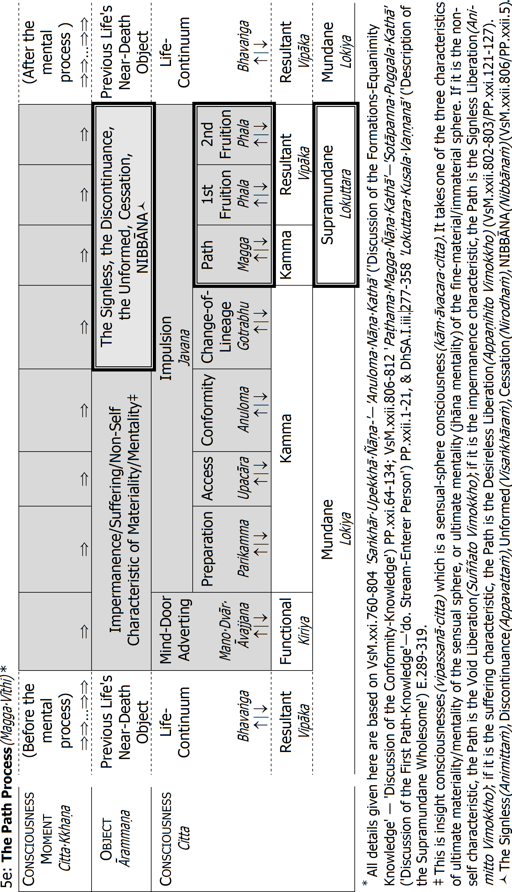
Notes for Table 5e 'The Path Process'
• One consciousness lasts one consciousness moment(cittakkhaṇa), with three stages: arising(uppāda) , standing(ṭhiti) ⏐, dissolution(bhaṅga) ↓.
• Before and after a mental process, arises a number of life-continuum consciousnesses.914
• The Stream-Entry Path-Process does not arise on the immaterial plane (See explanation p.205). But the Once-Return-, Non-Return-, and Arahant Path-Process arises on either the sensual-, fine-material-, or immaterial plane.
• Cognition follows a fixed procedure, according to the natural law of the mind (cittaniyāma). Thus, the procedure of the Path Process is:915
1) A mind-door adverting consciousness: it takes the same insight object as the preceding Formations-Equanimity Knowledge.
2-4) Three preparatory impulsions with the same object:
i) Preparation(parikamma) 916
ii) Access(upacāra)
iii) Conformity Knowledge(anuloma)
Their repetition prepares the way for transition from insight knowledge with the formed as object to the Path&Fruition Knowledges with the Unformed as object. Thus they may be said to function as preparation for, access to and conformity with the Change of Lineage.
5) Change-of-Lineage Knowledge:917 it takes Nibbāna as object, and marks the transition of knowledge from the ordinary-person lineage(puthujjanagotta) to the Noble lineage(Ariyagotta).
6) Path Knowledge:918 it takes Nibbāna as object, and is the first arising of the supramundane Noble Eightfold Path in one continuity of mentality-materiality, whereby certain defilements are destroyed: all have been destroyed with the Arahant Path. The Path Consciousness is an absorption consciousness, minimum the first jhāna.919/E292
7-10) Two or three Fruition Consciousnesses: they also take Nibbāna as object, and are the direct result of the Path Kamma. With practice, one may enter into the fruition attainment for longer periods of time: up to seven days (See table '5d: The Jhāna-Attainment Process', p.208).
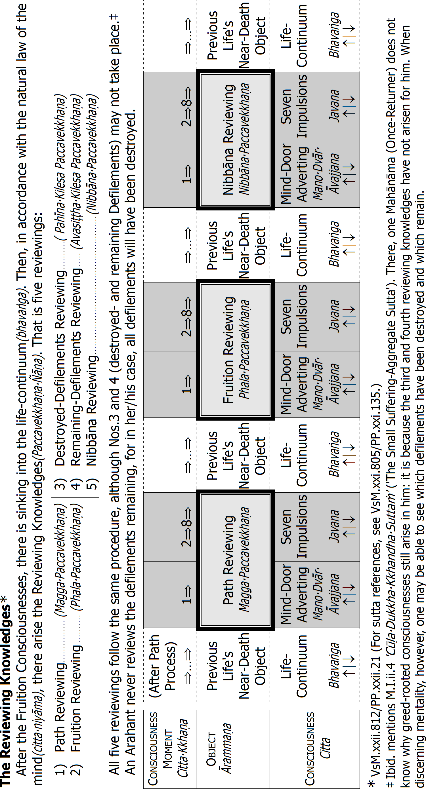
1e: The Supramundane Resultant Consciousness(LokuttaraVipākaCitta) ↗
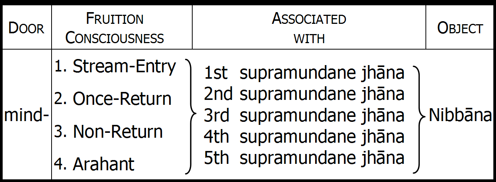
Even though they are the result of wholesome kamma, these types of resultant consciousness are never called wholesome-resultants(kusalavipāka), since that term refers only to the unrooted wholesome resultants: see table, p.66.
Fruition Consciousness: the Fruition Consciousness is the result of its corresponding and immediately preceding Path Consciousness(MaggaCitta): for example, the Stream-Entry Path Consciousness is the supramundane wholesome consciousness, and the Stream-Entry Fruition Consciousness is the corresponding supramundane resultant consciousness. See 'The Path Process' above.
Associated with: the supramundane resultant consciousnesses arises associated with the mental factors of one of the five jhānas.
1st supramundane jhāna: if the insight knowledge's object is a first-jhāna phenomenon, the Path&Fruition are first supramundane jhāna (eight-factored Path). If the object is a material phenomenon or sensual-sphere mental phenomenon, then even though the object is dissociated from any jhāna factors, the Path&Fruition are associated with the five factors of the first supramundane jhāna, even if one has no previous mundane jhāna.
2nd supramundane jhāna: if the object is a second-jhāna formation, the Path&Fruition are second jhāna with an only seven-factored Path, because there is no application(vitakka) (application is a first-jhāna factor, and corresponds to Right Intention(Sammā Saṅkappa), a Path factor).
3rd/4th/5th supramundane jhāna: in the same way, if the insight knowledge's object is a third-jhāna formation, the Path&Fruition are third jhāna, etc.
(DhSA.i.277-358'LokuttaraKusalaVaṇṇanā' ('Description of the Supramundane Wholesome') E.289-319). See also quotation, endnote Error: Reference source not found, p.481.
When the supramundane consciousnesses are reckoned according to the five jhānas, they make twenty supramundane wholesome consciousnesses and twenty supramundane resultant consciousnesses.
The Buddha ends the second 'GaddulaBaddha' sutta explaining how the educated Noble Disciple(sutavā AriyaSāvako) has done what needs to be done. Let us listen to his explanation.
Done Is What Needs to Be Done
You will remember how The Buddha first explained that the educated Noble Disciple practises vipassanā on the eleven categories of five aggregates, regarding them according to reality and with Right Wisdom as: 'This is not mine, I am not this, this is not my self.' Seeing them as in this way void, the educated Noble Disciple becomes disenchanted with the five aggregates. Let us take it from there again:
Thus seeing, bhikkhus, the educated Noble Disciple
[1] with this very materiality is disenchanted;
[2] with this very feeling is disenchanted;
[3] with this very perception is disenchanted;
[4] with these very formations is disenchanted;
[5] with this very consciousness is discenchanted.
• Disenchanted, he is dispassionate; dispassionate, he is liberated.
• Liberated, there is the knowledge: 'I am liberated.'
• He knows: 'Consumed is birth; lived is the holy life; done is what needs to be done; there is nothing further beyond this.'
In practical terms, what does it mean?920
• He is dispassionate(virajjati): here, The Buddha is referring to the Path Knowledge.
• Dispassionate, he is liberated(virāgā, vimuccati) : here, The Buddha is referring to the Fruition Knowledge.
• Liberated, there is the knowledge(ñāṇa) : 'I am liberated(vimuttaṁ) ': here, The
Buddha is referring to the Reviewing Knowledge(PaccavekkhaṇaÑāṇa). After
the arising of the Path&Fruition Knowledges, there is always Reviewing Knowledge: reviewing what has been achieved.921
• He knows: 'Consumed is birth(khīṇā jāti) ; lived is the holy life(vusitaṁ Brahmacariyaṁ) ; done is what needs to be done(kataṁ karaṇīyaṁ), there is nothing further beyond this(nāparaṁ itthattāya) :922 The Buddha explains this in another way in the first 'GaddulaBaddha' sutta.923 There He says:
[1] He is released from materiality(parimuccati rūpamhā) ;
[2] he is released from feeling(parimuccati vedanāya) ;
[3] he is released from perception(parimuccati saññāya) ;
[4] he is released from formations(parimuccati saṅkhārehi) ;
[5] he is released from consciousness(parimuccati viññāṇamhā) ;
he is released from birth, from ageing&death, from sorrow, from lamentation, from pain, from displeasure, and from despair(parimuccati jātiyā jarāmaraṇena sokehi paridevehi dukkhehi domanassehi upāyāsehi).
'He is released from suffering', I declare(Parimuccati dukkhasmā'ti vadāmi).
This is Arahantship.
Is it good? Yes, it is very good! It is the best: it is the ultimate happiness(parama sukha).924 Buddhas arise in the world for this reason. This is why Buddhas teach The Buddhas' most superior Dhamma teaching (Buddhānaṁ sāmukkaṁsikā Dhammadesanā).E293 It is found only in the teaching of Fully Enlightened Buddhas.E294 It is for this They teach the Four Noble Truths.925 Because it is only by fully understanding the Four Noble Truths that one may achieve the liberation that is perpetual, not temporary(asāmāyikaṁ): that is, supramundane liberation(lokuttaro vimokkho), the highest being the Arahant Path&Fruition Knowledges.
We shall now ask you: what is the Arahant's duty? To observe the Vinaya,E295 to learn and teach the Dhamma as taught by The Buddha,E296 so that others may learn the Dhamma taught by The Buddha, and themselves attain a Path&Fruition:E297 that is the Arahant's duties, while she or he waits for Parinibbāna.E298
To prevent any misunderstandings, let us then discuss the Arahant's Parinibbāna.
The Two Types of Parinibbāna
The Buddha speaks of two types of Parinibbāna:E299
1) The Nibbāna element with remainder(saupādisesā Nibbāna dhātu): here, as we mentioned before, the four Path Knowledges take the Unformed Element (AsaṅkhataDhātu) as object. Doing so, they destroy the defilements stage by stage. And with the fourth Path Knowledge (the Arahant Path-Knowledge (ArahattaMaggaÑāṇa)), there is the remainderless cessation of defilements: that is, they no longer arise, ever.926 Hence, this type of Parinibbāna is also called defilements Parinibbāna(kilesaParinibbāna).927
With the defilements Parinibbāna there is the destruction of lust(rāgakkhayo), the destruction of hatred(dosakkhayo), and the destruction of delusion(mohakkhayo).928 That means the five causes for future rebirth have been destroyed: ignorance, volitional formations, craving, clinging, and the existence of kammic potency have ceased to be: the Arahant's volition is therefore only functional(kiriya).E300 And all the kammas accomplished before Arahantship, which had the power or potency to produce a new existence lapse.E301 But the Arahant's aggregates have not ceased; they still remain. If the Arahant is a human being or a sensual-realm deva, there are still consciousness, mentality-materiality, the six bases (eye-, ear-, nose-, tongue-, body-, and mind base), contact, and feeling. The human Arahant still has consciousness established in the human world, in the sensual sphere, and still experiences physically painful feelings(dukkhavedanā), pleasant feelings, and neutral feelings. But because all defilements have been destroyed, she or he does not experience mentally unpleasant feelings(domanassavedanā).E302
2) The Nibbāna element without remainder(anupādisesā Nibbāna dhātu): here, the aggregates cease. Hence, this is also called aggregates Parinibbāna(khandhaParinibbāna). But if it is a human Arahant, there remains one type of materiality aggregate: temperature-born materiality(utujarūpa), which is the human corpse: if the corpse is cremated, there may remain material relics(dhātu).E303
The five results that are the present rebirth have now ceased. For the Arahant of the human or sensual-realm deva, it is the remainderless cessation of consciousness, mentality-materiality, the six bases (eye-, ear-, nose-, tongue-, body-, and mind base), contact, and feeling. Here again, 'remainderless cessation' means no further arising. The Arahant's decease consciousness arises, stands and perishes, and then there is no further arising of consciousness. It means all suffering has ceased without remainder: physically painful feelings(dukkhavedanā), mentally painful feelings, pleasant feelings, and neutral feelings. The remainderless cessation of defilements and the kammic potency is the cause, and the remainderless cessation of the five aggregates is the effect.929/E304
Our Buddha's defilements Parinibbāna took place at Uruvelā, beside the Nerañjarā River at the foot of the Bodhi Tree: there, He realized the Unformed Element, Nibbāna, with His four Path&Fruition Knowledges. He lived on for forty-five years, teaching the Dhamma. Many times He suffered physical pain and discomfort, because of digestive problems. And when Devadatta caused a splinter of rock to strike The Buddha's foot, The Buddha suffered great physical pain.930 But He endured the pain, mindful, and discerning, without suffering mental pain.931 Then, when our Buddha was eighty years old, between the two lines of sal(sāla) trees in Kusināra, His aggregates Parinibbāna took place.
Only with the attainment of one's aggregates Parinibbāna has one put an end to all suffering, because there is no re-arising of any aggregate: the Arahant attains Parinibbāna with consciousness unestablished(apatiṭṭhita).
To prevent any misunderstandings, let us then discuss consciousness established(patiṭṭhita) and consciousness unestablished(apatiṭṭhita).
Consciousness Established and Unestablished
Consciousness Established
Let us begin by repeating the beginning of the two 'GaddulaBaddha' suttas:
Inconceivable is the beginning, bhikkhus, of the round of rebirth. A first point is not known of ignorance-hindered beings fettered by craving, rushing on and running about.
As we have already mentioned, The Buddha is here discussing the round of rebirth(saṁsāra). It is the rushing on from one world to another (birth now as a human being, then a deva, then an animal, then again a human being, etc.), and the running about within one world (again and again birth as a human being, or again and again birth as a deva, etc.).
Birth
What is birth? It is the arising of resultant aggregates:E305 they arise as the result of past kamma.932 The Buddha speaks of birth also as descent(okkanti) (descent of consciousness).E306 And He speaks of birth as consciousness established(viññāṇa patiṭṭhita), which is the same thing: the arising and establishment of the rebirth-linking consciousness(paṭisandhicitta). The rebirth-linking consciousness is a resultant conciousness(vipākacitta), and it takes as object the kamma, kamma sign(kammanimitta) or destination sign(gatinimitta) cognized by the near-death process(maraṇāsannavīthi) of the preceding life.933
As we have explained before, consciousness does not (cannot) arise alone. It arises always together with the three other mental aggregates, feeling(vedanā), perception(saññā), and formations(saṅkhāra): they are mental factors(cetasika).934/E307 When a being is born in the sensual realm (the hells, the animal world, the ghost world, the human world, and the sensual-realm deva worlds), or in the fine-material realm (the Brahma world), the rebirth-linking consciousness depends on materiality(rūpa): that makes the five aggregates(pañcakkhandha).E308
Five-, Four-, and Single-Constituent Existence
In the Pali Texts,935 rebirth of a being in the sensual- and fine-material worlds is called five constituent existence(pañcavokārabhavo). In such a case, the rebirth-linking consciousness(paṭisandhicitta) is established together with resultant mentality-materiality(vipākanāmarūpa).E309
When a being is born in the immaterial world, however, the rebirth-linking consciousness is established together with only feelings, perception, and formations: there is no materiality. Therefore, such rebirth is called four-constituent existence (catuvokārabhavo).
And when a being is reborn in the impercipient world, only matter is established. Therefore such rebirth is called single-constituent existence(ekavokārabhavo). But because the impercipient being(asaññāsatta) has not uprooted the latencies, impercipient existence is followed by re-establishment of consciousness. How? When the impercipient being's material life faculty is cut off, in the next mind moment there is the maturing of an adventitious indefinitely-effective kamma from that being's past: it establishes a rebirth consciousness in the human world, which is five-constituent existence.936/E310 That is how there is the establishment of consciousness (rebirth), in the three spheres of existence: the sensual-, fine-material, and immaterial sphere.
Is there rebirth anywhere else? No. The Buddha says the highest existence is rebirth in the highest plane of the immaterial sphere: the plane of neither-perception nor non-perception.937
After the rebirth consciousness is established, what happens?
The Stream of Consciousness
After the rebirth consciousness is established, the life-continuum consciousnesses(bhavaṅgacitta) arise one after the other: they take the same past object as the rebirth-linking consciousness, and are also resultant consciousnesses. The stream of life-continuum consciousnesses is arrested only when there arises a mental process(cittavīthi): either a five-door process(pañcadvāravīthi), or a mind-door process(manodvāravīthi). Such a mental process comprises resultant consciousnesses (vipākacitta), functional consciousnesses(kiriyacitta), and impulsion consciousnesses ( javana). As we have discussed earlier, the impulsion consciousnesses of a non-Arahant produce kamma: they are also called kamma consciousness(kammaviññāṇa).
That way, from the beginning of a life (the rebirth-linking consciousness(paṭisandhicitta)) up to the end of that life (the decease consciousness(cuticitta)), there is established a stream of consciousness(viññāṇasota). And together with each consciousness arise also the mental factors (feeling, perception, and formations), as well as materiality. We have thus consciousness, mental factors, and materiality arising and perishing one after the other like a river.E311
The last consciousness in one life is the decease consciousness(cuticitta): it takes the same past object as the rebirth-linking consciousness and life-continuum consciousnesses, and it is also a resultant consciousness. Then, so long as one is still one of the ignorance-hindered beings fettered by craving, the decease consciousness is followed by yet another rebirth-linking consciousness: in the very next mind moment. The stream of consciousness is not broken. It establishes itself in a new set of mentality-materiality: that is rebirth of a new 'being'. For example, a human being's decease consciousness arises and perishes, and then a new rebirth-linking consciousness may be established in another world, maybe the animal world or a deva world: that is rushing on from one world to another. The new rebirth-linking consciousness may also be established in a new mother's womb: that is running about within one world.E312
A being who in this way rushes on and runs about is in fact merely the establishment of a stream of consciousness. It may be established in, for example, the sensual sphere, and flow there maybe over many lives. It may be established as the mentality-materiality of a human being, and then as the mentality-materiality of a deva, etc. Then maybe it stops flowing in the sensual sphere, and establishes itself in the fine-material sphere, flowing there for many lives too. Again, it may stop flowing in that sphere, and continue flowing in the human world again, etc.E313
The two main causes for the establishment of consciousness are ignorance (avijjā) and craving(taṇhā). Without ignorance and craving, the kammic potency (kammasatti) cannot establish consciousness in any sphere. We have discussed this many times.
With the Arahant Path-Knowledge, there is the remainderless cessation of ignorance and craving. That means ignorance and craving will never arise again: it is the defilements Parinibbāna(kilesaParinibbāna). With the remainderless cessation of ignorance and craving, the kammic potency of present volition ceases to be: we may say it is the complete unworking of present kamma. But the kammic potency of past kamma still works, which means the Arahant's stream of consciousness continues, and consciousness is still established. Consciousness is no longer established, however, in the production of kamma.E314 The impulsion consciousnesses that arise no longer produce kamma: the Arahant's volition is purely functional.
Consciousness Unestablished
Then we shall ask you a question. If ignorance and craving are the reason why consciousness is established in one of three realms again and again; if ignorance and craving are why a being is reborn again and again (now here, now there), what happens when ignorance and craving have been destroyed? What happens when the cause for consciousness's establishment has been destroyed?
It is very easy: when the cause for consciousness's establishment has been destroyed, consciousness is not established: when consciousness is not established, it is unestablished(appatiṭṭhita).938
At the dissolution of the Arahant's decease consciousness (at the Arahant's death), the stream of consciousness is unestablished in this world or another world.939 It is the complete unworking of kamma past, present, and future.
At the Arahant's death, there is no further flow of consciousness: that is the aggregates Parinibbāna(khandhaparinibbāna).940 As The Buddha says at the end of the second 'GaddulaBaddha' sutta, the Noble Disciple knows: Consumed is birth (khīṇā jāti).941/E315
3e: Dependent Origination from Life to Life*
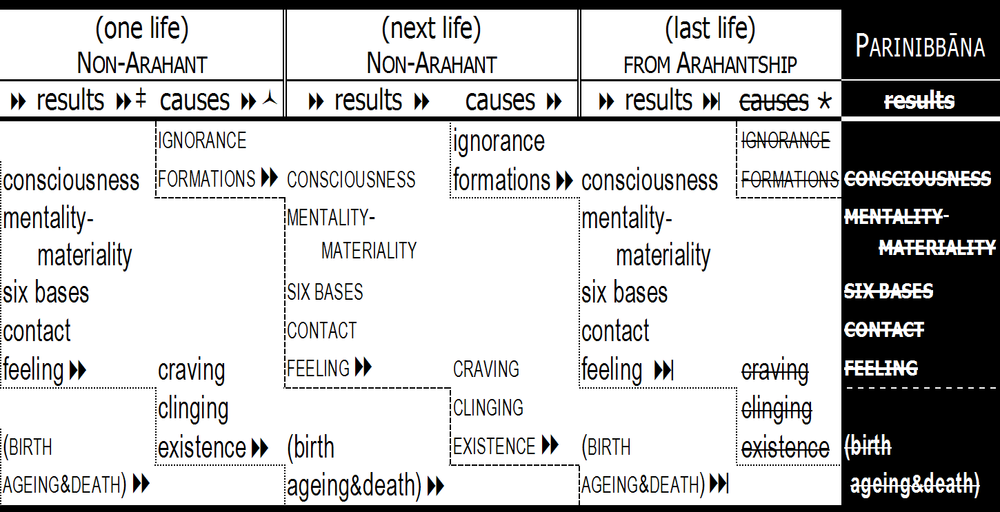
* E.g. A.III.II.ii.1'TitthĀyatanaSuttaṁ' ('The Sectarian Doctrines Sutta' quoted p.121). Here, The Buddha teaches in two ways: according to custom(vohāradesanā), and according to ultimate truth(paramatthadesanā). Birth/ageing&death are according to custom. They correspond to the five factors consciousness /mentality-materiality/six bases/contact/feeling, which are according to ultimate truth. For the process going from life to life, see, for example, The Buddha's explanation, endnote Error: Reference source not found, p.484.
‡ Results in the life of both a non-Arahant and Arahant: kamma formations in a past life result in the arising of a rebirth consciousness, and subsequent consciousnesses in that life, and the simultaneous arising of mentality-materiality, the six bases, contact, and feeling. In D.ii.2'MahāNidānaSuttaṁ' ('The Great Causation Sutta'), The Buddha explains that in one life one can go only as far back as the arising of mentality-materiality and consciousness at rebirth: 'Thus far the round [of rebirth] goes as much as can be discerned in this life, namely to mentality-materiality together with consciousness.'
↙ Causes in non-Arahant's life: the non-Arahant is possessed of ignorance. Hence, when there is feeling, there is craving, and clinging, owing to which there is existence of the kammic potency, formations of kamma. This means there is at death the arising of a rebirth consciousness.
↘ Causes in Arahant's life: because there is no ignorance, there is no craving, and no clinging, which means there is no further existence of the kammic potency, no formations of kamma. This means there is at death no arising of a rebirth consciousness. Until then, the five results are still in operation.
No Establishment in Nibbāna
Then we may think the Arahant's stream of consciousness is established in Nibbāna. But that is impossible. Why? Because
• according to the Buddha's Teaching Nibbāna is devoid of five-constituent existence, four-constituent existence, and single-constituent existence;
• according to the Buddha's Teaching, Nibbāna is devoid of coming, going, and staying, and devoid of rebirth and decease.E316
• according to the Buddha's Teaching, in Nibbāna the four great essentials are unestablished, and mentality as well as materiality completely stops(asesaṁ uparujjhati).E317 It is the cessation of the world(lokanirodha), which is the non-arising of the five aggregates, non-arising of the six internal and external bases, etc.E318
Things Impossible for Consciousness to Do
Now, it is important not to get a wrong view about this: please understand that consciousness unestablished does not mean that consciousness exists without being established anywhere; it does not mean that Nibbāna is unformed consciousness, awareness or mind; it does not mean that Nibbāna is unconditioned consciousness or unconditioned awareness, unconditioned mind, pure consciousness or awareness independent of an object. According to the Buddha's Teaching, such a thing does not exist.
Let us summarize the things that, according to the Buddha's Teaching, are impossible for consciousness to do:
• According to The Buddha's Teaching, it is impossible for consciousness to arise without an object, independently of an object, independently of causes; it is impossible for consciousness to be unconditioned; it arises dependent upon an internal base (eye-, ear-, nose-, tongue-, body-, or mind base), and an external base (sight-, sound-, odour-, flavour-, tangible-, or dhamma base).E319
• According to The Buddha's Teaching, it is impossible for consciousness to arise alone; it arises always with associated mental factors.942
• According to The Buddha's Teaching, it is impossible for consciousness to be permanent; it is formed(saṅkhata), and has therefore an arising stage, a standing stage, and a dissolution stage.E320
• According to The Buddha's Teaching, it is impossible for consciousness to be Nibbāna, for consciousness is possessed of the three characteristics: impermanence, suffering, and non-self. While Nibbāna is also non-self, it is not possessed of impermanence, or suffering.943 Consciousness is one of the five aggregates, the Noble Truth of Suffering.E321 Thus, Nibbāna cannot be consciousness, for Nibbāna is the Noble Truth of the Cessation of Suffering.E322
When we remember these simple facts about consciousness, it is not difficult to understand that when The Buddha says the Arahant passes away with consciousness unestablished, it means consciousness no longer arises.944
Please remember what The Buddha says about the Arahant bhikkhu in the first 'GaddulaBaddha' sutta:945
[1] He is released from materiality(parimuccati rūpamhā) ;
[2] he is released from feeling(parimuccati vedanāya) ;
[3] he is released from perception(parimuccati saññāya) ;
[4] he is released from formations(parimuccati saṅkhārehi) ;
[5] he is released from consciousness(parimuccati viññāṇamhā) ;
he is released from birth, from ageing&death, from sorrow, from lamentation, from pain, from displeasure, and from despair.
'He is released from suffering', I declare.
Where Does the Arahant Go?
In this connection, a common question regarding the Arahant is: 'Where does the Arahant go after her or his Parinibbāna?' 'What is her or his destination?' Then we shall ask you another question: if you light a candle, there is a flame. When the candle has burned down, where does the flame go? What is your answer? It goes nowhere: the wax and the wick burned up and the flame expired. There is no going anywhere: the Arahant does not go anywhere.E323
When we say a Buddha or other Arahant 'enters into Parinibbāna', it does not mean they enter into a place: it is a figure of speech. Just as we say, 'I went to sleep', it does not mean we went anywhere. The Arahant's Parinibbāna does not mean she or he goes anywhere. The Arahant's Parinibbāna means there is no re-arising of consciousness after the dissolution of the decease consciousness: consciousness is unestablished.E324 That is why The Buddha says of the Arahant:946
Ayaṁ, bhikkhave, bhikkhu na katthaci upapajjati.
This bhikkhu, bhikkhus, is not anywhere reborn.
Māra does not know the Arahant's coming and going, because Māra cannot see where the rebirth consciousness has been established, because it has nowhere been established.E325 We may, for example, look for a certain word on a page. But if that word has not been written on that page, we cannot see it, can we?
Please remember the last stanza of the'Ratana' sutta: we quoted it earlier. When The Buddha was reciting the'Ratana' sutta, a lamp near Him expired. And in the last line of the sutta, The Buddha compared Arahants to such an expired lamp(padīpo). He said:947
Nibbanti dhīrā yathāyaṁ padīpo.
Steadfast, they expire as this lamp.
Conclusion
We hope that by this explanation there is no doubt about consciousness unestablished. If any doubt remains, please allow us to suggest that you see it all with your own direct knowledge. First undertake morality(sīla). Then develop concentration(samādhi), until your mind is full of bright, brilliant, and radiant light of wisdom. Then use that light of wisdom systematically to practise materiality meditation (rūpakammaṭṭhāna) and mentality meditation(nāmakammaṭṭhāna).
When it is complete, you will have attained the Mentality-Materiality Definition Knowledge(NāmaRūpaParicchedaÑāṇa). Then discern dependent origination, and attain the Cause-Apprehending Knowledge(PaccayaPariggahaÑāṇa).948 With that knowledge, you will have overcome all and any doubt about the establishment of consciousness in the three realms: that is why it is called Doubt-Overcoming Purification(KaṅkhāVitaraṇaVisuddhi).E326
If you then practise vipassanā on the five aggregates of past, future, and present, internal and external, gross and subtle, inferior and superior, far and near, your pāramī may mature, and you will attain a Path&Fruition. Then continue practising until you attain Arahantship: the defilements Parinibbāna.
Then at the end of that life, you will attain the aggregates Parinibbāna. Then will you know for yourself the true meaning of 'consciousness unestablished'.
Just as, Bhikkhus, a Lotus, Blue, Red, or White
So long as your Arahant consciousness is yet established, you may abide in the world like a lotus. Do you know what it means to abide in the world like a lotus? Please listen to The Buddha explain a Buddha's or other Arahant's abiding in the world:949
Just as, bhikkhus, a lotus, blue, red, or white, though born in the water, [and] grown up in the water, when it reaches the surface, it stands there unwetted by the water.
Just so, bhikkhus, though born in the world, [and] grown up in the world, having overcome the world, the TathāgataE327 abides unwetted by the world.
Do you want to be like a lotus? Now you know what to do.
The very first thing for you to do is to develop strong and powerful faith950 in the workings of kamma as explained by The Buddha. With that faith and understanding, you may then accomplish superior wholesome kammas. With the working of those kammas, you may eventually attain the unworking of kamma.
May you accomplish the unworking of kamma as soon as possible.
May you attain consciousness unestablished as soon as possible.
May you become like a lotus as soon as possible.
Endnotes Chapter VI
(sutta references etc.)
See also, for example, S.III.I.ii.4'YadAniccaSuttaṁ' ('The What-is-Impermanent Sutta'): 'Materiality [feeling, etc.], bhikkhus, is impermanent. What is impermanent it is suffering. What is suffering is non-self.' Mentioned VsM.ibid./PP.xxi.7.
These are the three types of suffering discussed by The Buddha in S.V.I.vii.5'DukkhatāSuttaṁ' ('The Sufferings Sutta'): discussed also at 'Insight Meditation', p.96.
In S.III.I.i.1'NakulapitāSuttaṁ' ('The Nakulapīta Sutta'), the Buddha explains that the only reason one might say one's body was healthy is foolishness(bālyaṁ).
The Buddha discusses this aspect of the five aggregates in, for example, his discussion with the philosopher Saccaka in M.I.iv.5'CūlaSaccakaSuttaṁ' ('The Small Saccaka Sutta').
The Buddha explains this in, for example, S.III.I.iii.8'AbhinandanaSuttaṁ' ('The "Delighting" Sutta'): 'Whoever, bhikkhus, delights in materiality [etc.], he delights in suffering.'
In M.I.iv.5'CūlaSaccakaSuttaṁ' ('The Small Saccaka Sutta'), The Buddha asks the philosopher Saccaka: 'What do you think, Aggivessana? When one sticks to suffering, turns to suffering, cleaves to suffering, and regards suffering as "This is mine, this am I, this is my self", could one ever comprehend suffering, or dwell with suffering having been fully exhausted?' 'How could one, Gotama, Sir? Indeed not, Gotama, Sir.' Saccaka is mentioned also at endnote Error: Reference source not found, p.466.
The Buddha explains this in, for example, S.III.I.iii.9'UppādaSuttaṁ' ('The "Arising" Sutta'): 'Whatever, bhikkhus, arising, standing, regeneration, and manifestaton of materiality [etc.] is the arising of suffering, the standing of disease, and the manifestation of ageing&death.' See also the Buddha's analysis of the First Noble Truth in D.ii.9'MahāSatiPaṭṭhānaSuttaṁ' ('The Great Mindfulness-Foundation Sutta').
In Iti.III.ii.2'CakkhuSuttaṁ' ('The Eye Sutta'), The Buddha explains: 'Three, bhikkhus, are the eyes. What three? The fleshly eye, the divine eye, the wisdom eye.'
The Buddha explains this in, for example, A.VI.x.7'AnavatthitaSuttaṁ' ('The "Unstable" Sutta'): 'By having seen six advantages, bhikkhus, it is enough for a bhikkhu to establish the perception of impermanence(aniccasaññā) in all formations without restriction. What six? "[1] All formations will appear unstable to me, [2] and nothing in the whole world will my mind find pleasure in, [3] and my mind will rise above the whole world, [4] and my mind will become inclined towards Nibbāna, [5] and my fetters will tend towards abandonment, [6] and I shall become possessed of the supreme state of an ascetic(sāmañña)."'
In A.X.I.iii.9'PaṭhamaKosalaSuttaṁ' ('The First Kosala Sutta'), The Buddha explains that the Noble Disciple sees how King Pasenadi of Kosala, the highest human being changes; sees how the different kinds of sensual-realm devas change; sees how the different kinds of fine-material devas change; sees how the different kinds of immaterial-realm beings change; and sees how also very skilful meditators change. Seeing how all these high beings change, the Noble Disciple becomes disenchanted with the high, let alone the low, and develops insight as explained here.
The Buddha uses the simile of the eleven fires in Vin.Mv.i.12'UruvelaPāṭihāriyaKathā' ('Discusssion of the Uruvela Miracles'), and S.IV.I.iii.6 'ĀdittaSuttaṁ' ('The "Burning" Sutta'). And in S.V.XII.v.3'MahāPariḷāhaSuttaṁ' ('The Great-Conflagration Sutta'), He explains that those ascetics and Brahmins who do not understand the Four Noble Truths delight in and accomplish kamma that leads to birth, ageing, death, etc. Having done so, they are then burned by those eleven conflagrations.
These three metaphors are referred to in VsM.ibid. The Buddha uses them in M.II.ii.4 'MahāMālukyaSuttaṁ' ('The Great Mālukya Sutta'), when He explains how the bhikkhu develop the fine-material-, and immaterial jhānas, and then practises vipassanā on the materiality and mentality associated with them. He then becomes disenchanted with them, and progresses as explained here. Also, throughout His Teachings, The Buddha speaks of the gratification, danger of, and escape from sensual pleasure, the elements, and the five aggregates. For example, in S.III.I.iii.5'AssādaSuttaṁ' ('The Enjoyment Sutta'), He explains: 'Whatever happiness and pleasure arises dependent on materiality [etc.]: this is enjoyment of materiality [etc.]. Any materiality [etc.] is impermanent, suffering, a changing thing: this is the danger in materiality [etc.]. The abandonment of desire and lust, the removal of desire and lust for materiality: this is the escape from materiality.' And in the following sutta, He explains that so long as He did not directly know the enjoyment, danger and escape from the five aggregates, so long did He not claim to be enlightened. See also endnote Error: Reference source not found, p.477.
The Buddha explains this in, for example, A.VI.x.8'UkkhittāsikaSuttaṁ' ('The Raised- Sword Sutta'): 'By having seen six advantages, bhikkhus, it is enough for a bhikkhu to establish the perception of suffering(dukkhasaññā) in all formations without restriction. What six? "[1] The disenchantment perception(nibbidasaññā) towards all formations will be established in me, in the same way as towards an executioner with raised sword, [2] and my mind will rise above the whole world, [3] and I shall become one who regards Nibbāna as Peace (Santa), [4] and my latencies will tend towards uprooting, [5] and I shall become one who has fulfilled his duty, [6] and I shall have attended to the Teacher (Satthā) with loving-kindness practice."' See also quotation, endnote Error: Reference source not found, p.477.
In A.III.I.v.7-8'Saṅkhata [-ASaṅkhata]LakkhaṇaSuttaṁ' ('The Formed [-Unformed] Characteristic Sutta', The Buddha explains: 'Three, bhikkhus, are the formed characteristics of the formed. What three? Arising is known, perishing is known, change in standing is known.' - '… the unformed characteristics of the Unformed … Arising is not known, perishing is not known, change in standing is not known.' See also quotation endnote Error: Reference source not found, p.438.
The Buddha explains these four perversions in A.IV.I.v.9'VipallāsaSuttaṁ' ('The Perversion Sutta'): 'Four, bhikkhus, are these perversions of perception… of consciousness … of view. What four? [1] In the impermanent there is permanence.…[2] In suffering there is happiness. [3] In non-self there is self.… [4] In the foul there is beauty.'
In M.I.iii.6'PāsaRāsiSuttaṁ' ('The Mass of Snares Sutta') (also called'AriyaPariyesanāSuttaṁ' ('The Noble-Search Sutta')), The Buddha describes this as the ignoble search(anariyā pariyesanā)': 'And what, bhikkhus, is the ignoble search? Here, one himself a born thing, seeks that which is also born; himself an ageing… ailing… mortal… sorrowing… defiled thing, seeks that which is also ageing… defiled thing.' And He explains the object of the ignoble search: 'wife and children, men and women slaves, goats and sheep, fowl and pigs, elephants and cattle, horses and mares, gold and silver.' The Noble Search, on the other hand, He explains as one who, having understood the danger (ādīnava) in those things, seeks the Unborn, Unageing, Unailing, Deathless, Sorrowless, Unsurpassable safety from bondage, Nibbāna. See in this connection further 'The Danger of the Workings of Kamma', p.358.
This is one of the many ways The Buddha says one should regard the five aggregates in M.II.ii.4'MahāMālukyaSuttaṁ' ('The Great Mālukya Sutta'): see further endnote Error: Reference source not found, p.476.
In S.II.I.ii.5 'KaccānagottaSuttaṁ' ('The Kaccānagotta Sutta'), The Buddha explains that all wrong views can be grouped into two: '"All exists", Kaccāna, this is one extreme. "All does not exist", this is the second extreme.' He then teaches the middle way, which is dependent origination.
The Buddha explains the existent and non-existent in, for example, S.III.I.x.2'PupphaSuttaṁ' ('The Flower Sutta'): 'Matter [etc.] that is permanent, stable, eternal, not subject to change: this the wise in the world agree upon as not existing, and I too say that it does not exist.… Matter [etc.] that is impermanent, suffering, and subject to change: this the wise in the world agree upon as existing, and I too say that it exists.'
The Buddha explains the world in, e.g. S.IV.I.viii.9'LokaPañhāSuttaṁ' ('The World-Question Sutta'): 'The eye, bhikkhu, is crumbling, sights are crumbling, eye consciousness is crumbling, eye contact is crumbling, and whatever feeling (either painful or pleasant or neitherpainfulnorpleasant) arises with eye contact as cause, that too is crumbling… the ear… tongue… body… mind.… It is crumbling, bhikkhu, that is why it is called the world.'
The Buddha explains this in, A.VI.x.9'ATammayaSuttaṁ' ('The "Unconcerned" Sutta'): 'By having seen six advantages, bhikkhus, it is enough for a bhikkhu to establish the perception of impermanence(aniccasaññā) in all formations without restriction.What six? "[1] I shall be unconcerned about the whole world, [2] and 'I'-makings will stop in me, [3] and 'Mine'-makings will stop in me, [4] and I shall become possessed of extraordinary knowledge, [5] the root (hetu) will be become clearly known to me, [6] and the things arisen with the root."'
He was a pupil of King Pasenadi's chaplain Bāvarī. Bāvarī was too old to go and see The Buddha, and sent sixteen of his students to see the Buddha and ask questions, including Mogharāja.
In DhP.xiii.4'LokaVagga' ('Chapter on the World'), The Buddha says this in connection with two of the similes just mentioned: 'As a bubble seen, as a mirage seen, one who regards the world in this way, the king of death does not see.'
Describing the Arahant in M.I.iii.2'AlagaddŪpamaSuttaṁ' ('The Snake Simile Sutta'), The Buddha explains: 'The bhikkhu with thus liberated mind, bhikkhus, the devas with Indā, with Brahmā, and with Pajāpatī, seeking, do not find: "Dependent on this is the tathāgata's [Arahant's] consciousness." What is the reason? Right then, bhikkhus, the tathāgata is unknowable, I declare.' The commentary explains that the devas are unable to discover the object of his insight consciousness, and Path&Fruition consciousnesses.
In A.VII.v.6'DutiyaSaññāSuttaṁ' ('The Second Perception Sutta'), The Buddha explains how proper development of the perception of foulness(asubhasaññā) counters thoughts of sexual intercourse(methunadhamma); that of death (maraṇasaññā) counters attachment to life( jīvitanikanti); that of the repulsiveness of food(āhāre paṭikūlasaññā) counters craving for taste(rasataṇhā); that of discontent with the whole world(sabbaloke anabhiratasaññā) (AA.ibid.: sensual-/fine-material-/immaterial world) counters thoughts of the 'wonderful' world(lokacitresu) ; and that of impermanence(aniccasaññā) counters thoughts of gain, honour, and fame(lābhasakkārasiloka). In each case, He explains that when the perception is properly developed, then, just as a bird's feather or a piece of sinew thrown on a fire retreats, retracts, and recoils, so too one's mind retreats, retracts, and recoils from the object, giving rise either to equanimity(upekkhā) or disgust(pāṭikulyatā). And for each He adds that it is of great fruit and benefit, is related to the Deathless(Amatogadha), and terminates in the Deathless(Amatapariyosāna). This passage is partly quoted in VsM.ibid.766/PP.xxi.63. For an example of this practice, see 'Māra Dūsī ', p.237.
In A.IV.V.iv.2'VitthāraSuttaṁ' ('The Detailed Sutta'), The Buddha speaks of four types of kamma, using the metaphor of black/whiteError: Reference source not found: 1) one accomplishes harmful kamma, is reborn in a harmful world, and experiences harmful contacts and feelings, as beings do in hell = black kamma with a black result; 2) one accomplishes harmless kamma, is reborn in a harmless world, and experiences harmless contacts and feelings, as beings do in the Brahma world = white kamma with a white result; 3) one accomplishes harmful&harmless kamma, is reborn in a harmful&harmless world, and experiences harmful&harmless contacts and feelings, as beings do in the human world, some deva worlds, and some lower beings = black&white kamma with a black&white result; 4) one accomplishes the volition (AA = Path Volition(maggacetanā)) to abandon black, white and black&white kamma and its result, which leads to the destruction of kamma(kammakkhaya) = non-black & non-white kamma with non-black & non-white results. See also the Buddha's explanations endnotes Error: Reference source not found, p.482, Error: Reference source not found, p.484, and His simile of the seeds planted in a field, endnote Error: Reference source not found, p.472.
In M.III.iii.2'MahāSuññataSuttaṁ' ('The Great Voidness Sutta'), The Buddha explains that a bhikkhu who enjoys company with other bhikkhus is neither capable of ever entering into the mind-liberation that is temporary(sāmāyika) nor the one that is not temporary (asāmāyika).
The Venerable Ānanda explains it in M.II.i.3'SekhaSuttaṁ' ('The Trainee Sutta'): 'Here, Mahānāma, a Noble Disciple is moral, by the Pātimokkha restraint restrained he lives, possessed of conduct and resort, in the slightest faults seeing fearsomeness, undertaking to train in the training precepts. That is how, Mahānama, a Noble Disciple is possessed of morality.' And in A.VIII.ii.9 'PahārādaSuttaṁ' ('The Pahārāda Sutta'), The Buddha explains how the Noble Disciple never transgresses any precept He has laid down: 'Whatever precept has by Me been made known to my disciples, that they do not transgress even for life's sake.' Further, in A.VIII.iv.9'AbhisandaSuttaṁ' ('The Flow Sutta'), The Buddha explains: 'Here, bhikkhus, a Noble Disciple abandons killing, abstains from killing… theft … sexual misconduct… lies… he abstains from beer&wine liquor, which is a foundation for carelessness, [as he does so] he gives to countless beings safety … friendliness … benevolence.'
In M.I.iii.9'MahāSārOpamaSuttaṁ' ('The Great Heartwood-Simile Sutta'), The Buddha explains: 'So this holy life, bhikkhus, does not have gain, honour, and renown for its benefit, nor the attainment of virtue for its benefit, nor the attainment of concentration (samādhi) for its benefit, nor knowledge and vision for its benefit. But it is this unshakeable liberation of mind that is the goal, bhikkhus, of this holy life, Error: Reference source not foundits heartwood, its end.'
In S.III.I.xii.10'SīlavantaSuttaṁ' ('The "Virtuous" Sutta'), the Venerable Sāriputta explains that the virtuous bhikkhu must attend carefully to the five aggregates as impermanent, suffering, a disease, etc. Doing so, he may attain Stream Entry. And the Stream Enterer, Once Returner, and Non-Returner must each do the same to attain their next Path. Even the Arahant, he says, should do so, although there is nothing he needs to do, for it leads to a pleasant dwelling in this life (the fruition-/cessation attainment, both which require preceding vipassanā practice).
? In
S.V.IV.iii.4'EkaBījīSuttaṁ' ('The One-Seeder Sutta'), The Buddha explains three types of Stream Enterer: 1) one attains Arahantship at the end of seven rebirths in the human and heavenly worlds; 2) one does so at the end of two to six rebirths in a good family; 3) one does so after only one rebirth in the human or heavenly worlds (explained also in, e.g. A.III.II.iv.7'DutiyaSikkhāSuttaṁ' ('The Second Training Sutta')).
VbhA.xviii.1028 'ĀyuPpamāṇaṁ' ('Lifespan Reckoning') DD.xviii.2594-2596 further explains that the Stream Enterer/Once Returner reborn in the fine-material or immaterial sphere does not return to the sensual sphere, and is called a Jhāna Non-Returner (JhānaAnĀgamino). The jhāna plane attained depends on the jhāna most familiar(paguṇa), one's aspiration(patthanā), or any other jhāna attained at the time of death(maraṇasamaye).
once returner: there are five types: 1) a human being attains the Once-Return Path& Fruition, and attains Arahantship in the next life as a human being; 2) a human being attains the Path&Fruition, and attains Arahantship in the next life as a heavenly being; 3) a heavenly being attains the Path&Fruition, and attains Arahantship in the next life as a heavenly being; 4) a heavenly being attains the Path&Fruition, and attains Arahantship in the next life as a human being; 5) a human being attains the Path&Fruition, passes the next life as a heavenly being, and attains Arahantship only in the subsequent life as a human being.(PuPA.ii.34'EkakaNiddesaVaṇṇanā' ('Description of the First Exposition') & VsMṬ.xxii.814'TatiyaMaggaÑāṇaKathāVaṇṇanā' ('Description of the Discussion of the Third Path Knowledge')). But when The Buddha speaks of a Once Returner, usually He means one who returns to human existence: No. 5 above. See also explanation from VbhA in previous endnote.
non-returner: all are reborn in the fine-material sphere (the Brahma world). There are five types: 1) one attains Arahantship halfway through that Brahma life; 2) one attains Arahantship in the second half of that Brahma life, even on the point of death; 3) one attains Arahantship without exertion; 4) one attains Arahantship with exertion; 5) one passes from one Brahma world to another, living out the whole life span (from a third of an aeon up to 16,000 aeons: each time, it is a jhāna kamma in the one life that functions as subsequently-effective productive kamma to give him his next Brahma rebirth), and reaching the highest of the five pure abodes, the Akaniṭṭha world. There he attains Arahantship (S.V.IV.iii.4 etc., as endnote Error: Reference source not found, p.480).
VbhA.xviii.1028 'ĀyuPpamāṇaṁ' ('Lifespan Reckoning') DD.xviii.2593 further explains that one who attains Non-Return in the sensual deva world does not remain, but takes a fine-material existence: because there is no other suitable place for one without sensual desire. See also endnote Error: Reference source not found, p.481.
In D.ii.1'MahāPadānaSuttaṁ' ('The Great-Lineage Sutta'), The Buddha speaks of visiting the pure abodes, and being told by many thousand Non-Returners still abiding there of the past Buddha's dispensation during which they attained their Path&Fruition.
In D.iii.6'Pāsādika Sutta' ('Delightful Sutta'), The Buddha explains nine things that the Arahant is incapable of doing: 1) killing, 2) stealing, 3) incelibacy, 4) lying, 5) storing up things for sensual pleasure like a householder, 6) doing something out of desire, 7) out of hatred, 8) out of delusion, 9) out of fear.
Thus, The Buddha explains that kamma with the three wholesome roots leads to the ending of kamma: see quotation, endnote Error: Reference source not found, p.449. In A.IV.IV.i.9'BhikkhunīSuttaṁ' ('The Bhikkhunī Sutta'), the Venerable Ānanda explains how craving(taṇhā) to attain Arahantship overcomes craving. And in S.V.VII.ii.5 'UṇṇābhaBrāhmaṇaSuttaṁ' ('The Uṇṇābha Sutta'), he explains how desire(chanda) to attain Arahantship overcomes desire. (For details in this regard, see footnote Error: Reference source not found, p.242.)
In M.III.v.7'MahāSaḷĀyatanikaSuttaṁ' ('The Great Sixfold-Base Sutta'), The Buddha explains that when the Noble Eightfold Path arises, 'These two things occur concurrently yoked: samatha [Right Concentration] and vipassanā [Right View].' The commentary explains that they arise at the same time.
The Buddha explains it in, for example, M.I.iv.5'CūḷaSaccakaSuttaṁ' ('The Small Saccaka Sutta'): 'Attained to Nibbāna is the Blessed One: He teaches the Dhamma for attaining to Nibbāna.'
The Buddha explains it in, for example, D.ii.3'MahāParinibbānaSuttaṁ' ('The Great-Parinibbāna Sutta')) 'In whatever Dhamma and Vinaya the Noble Eightfold Path is not found, there no [one] ascetic is found. There no second ascetic is found. There no third ascetic is found. There no fourth ascetic is found.' See also quotation, endnote Error: Reference source not found, p.439.
In M.II.iii.1'TeVijjaVacchagottaSuttaṁ' ('The Triple-Science Vacchagotta Sutta'), The Buddha explains that a lay-arahant must either ordain or attain Parinibbāna: 'Vaccha, there is no householder who, without abandoning the fetter of householdership, on the breakup of the body has made an end of suffering.' VbhA.xviii.1028 'ĀyuPpamāṇaṁ' ('Lifespan-Reckoning') DD.xviii.2593 also explains that since the sensual-sphere deva world is unsuitable for an Arahant (and since a deva cannot become a bhikkhuni/bhikkhu), the sensual-sphere deva who attains Arahantship attains Parinibbāna at the same time.
The Buddha explains this in D.ii.3'MahāParinibbānaSuttaṁ' ('The Great-Parinibbāna Sutta'): 'The Four Foundations of Mindfulness, the Four Right Efforts, the Four Bases of Success, the Five Faculties, the Five Powers, the Seven Factors of Enlightenment, the Noble Eightfold Path. These, bhikkhus, are the things of which I have direct knowledge and have taught, which you should learn well, cultivate, develop, practise much, so that this holy life(brahmacariya) is established, and long endures, for the many's welfare, for the many's happiness, out of compassion for the world, for the benefit, well being, and happiness of devas and human beings.' These things are also called the Thirty-Seven Requisites of Enlightenment(SattaTiṁsaBodhiPakkhiyaDhamma).
In D.ii.3'MahāParinibbānaSuttaṁ' ('The Great-Parinibbāna Sutta'), The Buddha explains to a wanderer: 'And if, Subhadda, bhikkhus were to rightly to dwell(sammā vihareyyuṁ), the world would not be void of Arahants.' The commentary explains that 'rightly to dwell' means the Stream Enterer teaches others how to attain the Stream-Entry Path& Fruition, the Once Returner teaches others to how to attain the Once-Return Path&Fruition, etc. And the one who is as yet only practising samatha and vipassanā for the attainment of a Path&Fruition should teach that. Also in Vin.Mv.I.8'Māra Kathā' ('Māra Discussion'), The Buddha says to His first sixty Arahant Disciples: 'Freed am I, bhikkhus, from all snares, both divine and human. And you too, bhikkhus, are freed from all snares, both divine and human. Wander, bhikkhus, for the many's welfare, for the many's happiness, out of compassion for the world, for the benefit, well being, and happiness of devas and men. Let not any of you go together. Teach, bhikkhus, the Dhamma, which in the beginning is lovely, in the middle is lovely, and in the end is lovely.'
The Venerable Sāriputta explains this in TG.xvii.2 (1002)'SāriputtaTtheraGāthā' ('The Sāriputta-Elder Verses'): 'I do not delight in life, I do not delight in death; I await the time [of Parinibbāna], like a government servant [waits for] his wages.'
The Buddha explains the two types of Nibbāna element in Iti.ii.8'NibbānaDhātuSuttaṁ' ('The Nibbāna-Element Sutta'), : '[1] Here, bhikkhus, a bhikkhu is an Arahant… In him, still established are the five faculties [eye/ear/nose/tongue/body] through which… he experiences sensations pleasant and unpleasant, undergoes pleasure and pain. In him, the end of lust, hatred, and delusion, bhikkhus, is called "Nibbāna with clung [aggregates] remainder.…" [2] Here, a bhikkhu is an Arahant.… In him, in this very life, all things that are sensed [sights/sounds/odours/flavours/touches/other things] have no delight for him: they have become cool. This is called "Nibbāna without clung [aggregates] remainder."
In A.X.IV.ii.8'KammaNidānaSuttaṁ' ('The Kamma-Causation Sutta'), The Buddha explains: 'With greed-… hatred-… delusion destruction, there is kamma-causation destruction(kammanidānasaṅkhayo).' See also endnote Error: Reference source not found, p.479.
In M.I.iv.9'Mahā-AssapuraSuttaṁ' ('The Great Assapura Sutta'), The Buddha explains that a bhikkhu is an ascetic(samaṇa) when evil, unwholesome things that defile, produce renewed existence, are harmful, result in suffering, lead to future birth, ageing&death are appeased.
In S.III.I.i.1'NakulapitāSuttaṁ' ('The Nakulapitā Sutta') The Buddha explains this to one Nakulapitā: 'Even though my body be afflicted, my mind will not be.' Afterwards, the Venerable Sāriputta explains to him that this is achieved by not identifying with the five aggregates, and being rid of the defilements: only then does bodily pain not give rise to mental pain.
In S.II.I.vi.1'PariVīmaṁsanaSuttaṁ' ('The Thorough Investigation Sutta'), The
Buddha explains that 'mere bodily remains are seen.'
There are cases, however, of one attaining both types of Parinibbāna at the same time. The Buddha explains such a case in A.VII.ii.6, 7, 8 'Aniccā… Dukkhā … AnattĀnupassīSuttaṁ' ('The Impermanence… Suffering… Non-Self Contemplation Sutta').
The Buddha explains birth in, for example, D.ii.9'MahāSatiPaṭṭhānaSuttaṁ' ('The Great Mindfulness-Foundation Sutta'): 'And what, bhikkhus, is birth? The birth of the various beings into the various orders of beings, their being born, descent, production, the appearance of the aggregates, the acquisition of the sense bases: this is called birth.'
The Buddha explains it in, for example, D.ii.2'MahāNidānaSuttaṁ' ('The Great Causation Sutta'): 'I have said: "Because of consciousness, there is mentality-materiality(viññāṇapaccayā nāmarūpaṁ)," and this is the way it should be understood. If consciousness, Ānanda, were not to descend into the mother's womb, would mentality-materiality develop there?'
The Venerable Sāriputta explains this in M.I.v.3'MahāVedallaSuttaṁ' ('The Great Catechism Sutta'): 'Feeling, perception, and consciousness, friend: these things are conjoined, not disjoined, and it is impossible to separate each of these things from the others in order to describe the difference between them. For what one senses, that one perceives, and what one perceives that one is conscious of.' See also next endnote.
The Buddha explains this in'UpayaSuttaṁ' ('The Assumption Sutta'): 'Whoever, bhikkhus, were to say thus: "As separate from materiality… feelings… perception… separate from formations, I shall make known consciousness's coming or going, or decease, or re-arising, or growth, or increase, or completion," that is not possible.' See also previous endnote.
The Buddha explains it in, for example, D.ii.2'MahāNidānaSuttaṁ' ('The Great Causation Sutta'): 'I have said: "Because of mentality-materiality, there is consciousness(nāmarūpapaccayā viññāṇaṁ)," and this is the way it should be understood. If consciousness, Ānanda, did not obtain establishment in mentality-materiality(nāmarūpepatiṭṭhaṁ na labhissatha), would there then be an arising and existence of birth, ageing, death and suffering?' The Buddha is here referring to the cause of mentality-materiality within one life (see quotation footnote ‡ under table '3e: Dependent Origination from Life to Life', p.384): if one goes beyond the one life, the cause of consciousness is formation, which is the kammic potency of a kamma formed in a past life.
In D.i.1'BrahmaJālaSuttaṁ' ('The Supreme Net Sutta'), the Buddha explains that as soon as perception arises in such impercipient beings, they vanish. Someone may be reborn as human being after such an existence, and be unable to recall that past life. They may then teach that birth occurs by chance. And in A.IX.I.iii.4'SattĀvāsaSuttaṁ' ('The Abode-of-Being Sutta'), The Buddha mentions impercipient beings as one of nine types of abode. Then in Vbh.XVIII.ii.3 'AsaññaSattā' ('Impercipient Beings') BA.XVIII.ii.1017, He explains: 'At the impercipient-being devas' moment of rebirth, one aggregate manifests: the materiality aggregate. Two bases manifest: the sight base, the dhamma base. Two elements manifest: the sight element, the dhamma element. One truth manifests: the truth of suffering. One faculty manifests: the material life faculty. Impercipient-being devas manifest without root, without nutriment, without contact, without feeling, without perception, without volition, without consciousness.' And VbhA.xviii.1027 'ĀyuPpamāṇaṁ' ('Life Span') DD.xviii.2588 explains further: 'For some, after going forth in a sectarian sphere and seeing a fault in consciousness because lusting, hating and being deluded depend upon consciousness, imagine that: "The consciousnessless state is good, this is nibbāna in the present existence;" and they generate the fading away of greed for perception and developing the fifth attainment in conformity therewith, they are reborn there. At the moment of their rebirth, the materiality aggregate alone is reborn. If he is reborn standing, he stands only; if reborn sitting, he sits only; if reborn lying down, he lies only. They remain for five hundred aeons like painted statues. At their end the material body vanishes; sensual-sphere perception arises. Through the arising of that perception here [in this sensual sphere] those deities notice that they have passed away from that body.'
In D.iii.5'SampasādanīyaSuttaṁ' ('The Faith-Inspiring Sutta'), the Venerable Sāriputta explains how The Buddha teaches the meditator to know both the uninterrupted (abbocchinnaṁ) flow of consciousness(viññāṇasota) in this world established(patiṭṭhita), and in another world established. For details, see footnote Error: Reference source not found, p.118, and table '5a: Death and Rebirth', p.51.
In, S.II.I.ii.9'BālaPaṇḍitaSuttaṁ' ('The Fool&Sage Sutta') The Buddha explains that because the fool does not destroy ignorance and craving, he is reborn: 'Because the fool has not lived the holy life for the complete destruction of suffering. Therefore, with the breakup of the body, the fool fares on to [another] body (kāyūpago). Faring on to [another] body, he is not released from birth, ageing, and death.' But destroying ignorance, the sage is no longer reborn: 'Because the sage has lived the holy life for the complete destruction of suffering. Therefore, with the breakup of the body, the sage does not fare on to [another] body. Not faring on to [another] body, he is released from birth, ageing, and death.' See also quotations endnote Error: Reference source not found, p.467, and Error: Reference source not found, p.484.
The Buddha explains this in, for example, A.III.II.iii.6'PaṭhamaBhavaSuttaṁ' ('The First Existence Sutta'): 'Sensual-element [sensual-sphere kamma-] result, and, Ānanda, kamma not existing, would any sensual existence be manifest?… Fine-material element [fine-material sphere kamma-] result… and kamma not existing, would any fine-material existence be manifest?… Immaterial element [immaterial-sphere kamma] result… and kamma not existing, would any immaterial existence be manifest?' ('Surely not, Venerable Sir.') 'In this way, Ānanda, kamma is the field, consciousness is the seed, craving the moisture. For ignorance-hindered beings fettered by craving in the inferior element [sensual] … in the middle element [fine material]… in the superior element [immaterial], there is consciousness established(viññāṇam patiṭṭhitaṁ). Thus, in the future, there is re-existence of rebirth.'
In S.II.I.vii.4'AtthiRāgaSuttaṁ' ('The There-Is-Lust Sutta') and SA.ibid., The Buddha explains that with delight and craving for the nutriments edible food/contact/mental volition/consciousness, consciousness becomes established there by kamma that can produce rebirth. Wherever the resultant rebirth-consciousness then is established, there is descent of mentality-materiality, which means there is new production of kamma, which means there is production of re-existence(atthi āyatiṁ punabbhavābhinibbatti). The opposite holds true of the Arahant, whose consciousness does not become established in the four nutriments by kamma, which means there is no resultant rebirth-consciousness to become established anywhere, which means there is no descent of mentality-materiality, no new production of kamma, which means no production of re-existence(natthi āyatiṁ punabbhavābhinibbatti).
The Buddha explains it also in, for example, S.II.I.vi.1'PariVīmaṁsanaSuttaṁ' ('The Thorough-Investigation Sutta'): 'But when a bhikkhu has abandoned ignorance and aroused true knowledge… he does not accomplish a meritorious formation (of kamma), or a demeritorious formation, or an imperturbable formation… When there are utterly no formations, with the cessation of formations, would [rebirth] consciousness be discerned?' ('No, Venerable Sir.') 'When there is utterly no consciousness… no mentality-materiality … no six bases… no birth, with the cessation of birth, would ageing&death be discerned?' ('No, Venerable Sir.') See also quotation endnotes Error: Reference source not found, p.467, Error: Reference source not found, p.479. and Error: Reference source not found, p.484.
In U.viii.1'Paṭhama Nibbāna PaṭisaṁyuttaSuttaṁ' ('First Nibbāna-Related Section Sutta'), The Buddha explains: 'Truly, there is a base, where there is neither earth, nor water, nor fire, nor air, nor the infinite-space base, nor the infinite-consciousness base, nor the nothingness base, nor the neither-perception nor non-perception base; where there is not this world, nor another world, not either moon or sun. This I call neither coming, nor going, nor staying, nor decease, nor rebirth. It is quite without establishment, without continuity, and without object.'
In D.i.11'KevaṭṭaSuttaṁ' ('The Kevaṭṭa Sutta'), The Buddha describes Nibbāna as: 'Invisible cognition, infinite, everywhere a landing-place, here water, earth, fire, and wind gain no footing. Here long and short, small and large, fair and foul; here mentality and materiality, completely stops; with consciousness's cessation, here this stops.' DA explains: invisible cognition = Nibbāna in the sense that it is cognizable by the Noble Path Knowledges, not by eye consciousness; infinite = not limited by arising, perishing and standing, no North, South, East, and West; everywhere a landing-place (the further shore(pārima tīra)) = can be reached anywhere, using any of the forty meditation-subjects; with consciousness's cessation: the cessation of kamma consciousness, and the cessation of the Arahant's final consciousness. In this connection, The Buddha explains in A.VIII.ii.9 'PahārādaSuttaṁ' ('The Pahārāda Sutta'): 'Even if many bhikkhus attain to the Nibbāna of the Nibbāna element without remainder, not by that is the Nibbāna element's emptiness or fullness known.'
In S.I.II.iii.6'RohitassaSuttaṁ' ('The Rohitassa Sutta'), The Buddha refers to the five aggregates as the world(loka), and to Arahantship as the cessation of the world. And in S.II.I.v.4'LokaSutta' ('The World Sutta'), The Buddha explains the origin of the world: 'In dependence on the eye and sights, arises eye consciousness. The meeting of the three is contact [etc. through the factors of dependent origination]. This, bhikkhus, is the origin of the world.' And He says the same for the other six types of internal base, external base, and consciousness. Conversely, with the remainderless dispassion and cessation of craving, the subsequent factors cease, and, 'This, bhikkhus, is the disappearance of the world.' See also quotation endnote Error: Reference source not found, p.442.
The Buddha explains it in, for example, M.I.iv.8'MahāTaṇhāSaṅkhayaSuttaṁ' ('The Great Craving-Destruction Sutta'): 'In many discourses have I stated consciousness to be dependently arisen, since without a cause there is no origination of consciousness.… Consciousness is reckoned by the particular cause dependent upon which it arises.' He then explains how eye consciousness depends on the eye and sights, etc. (see previous endnote). And: 'When consciousness arises dependent on the mind and other things (dhamma), it is reckoned as mind consciousness.' Nibbāna, being a thing other than the five material external bases (being a thing of the sixth external base), is cognized by mind consciousness.
In S.III.I.x.2'PupphaSuttaṁ' ('The Flower Sutta'), The Buddha explains: 'Consciousness that is permanent, stable, eternal, not subject to change: this the wise in the world agree upon as not existing, and I too say that it does not exist.' See also quotation endnote Error: Reference source not found, p.458, and Error: Reference source not found, p.477.
The Buddha explains this throughout His Teaching, for example, in His first teaching, (S.V.XII.ii.1'DhammaCakkaPpavattanaSuttaṁ' ('The Dhamma-Wheel Setting-in-Motion Sutta'), He says: 'In short, the five clinging-aggregates are suffering(dukkha).'
In S.V.IV.v.10'ĀpaṇaSuttaṁ' ('The Āpaṇa Sutta'), The Buddha discusses the Noble Disciple's development of the five faculties with the Venerable Sāriputta. And He says: 'Indeed, Sāriputta, of any Noble Disciple of faith, of firm energy, of established mindfulness, and of concentrated mind, it is to be expected that he will understand in this way: "Inconceivable is the beginning of the round of rebirth. A first point is not known of ignorance-hindered beings fettered by craving, rushing on and running about. But with ignorance's, the mass of darkness's, remainderless fading away and cessation, this is the peaceful place, this is the superior place, namely, the calming of all formations, the forsaking of all grounds [for rebirth], the destruction of craving, dispassion, cessation, Nibbāna. That wisdom of his, Sāriputta, that is his wisdom faculty."' See also dependent origination in negative order, quoted p.123.
A wanderer called Vacchagotta also asks this question in M.II.iii.2'AggiVacchagottaSuttaṁ' ('The Fire&Vacchagotta Sutta'): 'When a bhikkhu's mind is liberated thus, Master Gotama, where is he reborn?… Then is he not reborn… both reborn and not reborn… neither reborn nor not reborn, Master Gotama?' In all cases, The Buddha says the question does not apply. That is because there is simply no re-arising of consciousness: to speak of an Arahant not being reborn is an instance of the annihilation view. Afterwards, The Buddha explains as the Most Venerable Sayadaw does here, with the Error: Reference source not foundfire simile. Also in S.IV.x.9 'KutūhalaSālāSuttaṁ' ('The Debating Hall Sutta'), The Buddha explains: 'Just as a fire burns with fuel but not without fuel, so, Vaccha, I declare rebirth for one with fuel, not for one without fuel [the fuel of rebirth is ignorance and craving].'
unestablished consciousness: The Buddha uses this term in, for example, S.I.IV.iii.3 'GodhikaSuttaṁ' ('The Godhika Sutta'). It describes how, after the Venerable Godhika has attained Parinibbāna, The Buddha and some bhikkhus go to his dwelling. There is a dark cloud moving around nearby. And the Buddha says: 'That, bhikkhus, is Māra the Evil One looking for the consciousness of the clansman Godhika, wondering: "Where has clansman Godhika's consciousness been established?…" With unestablished consciousness, bhikkhus, the clansman Godhika has attained complete Nibbāna.' The same thing happens after the Parinibbāna of the Venerable Vakkali, mentioned p.9. For Māra's not knowing the coming and going of the Arahant, see 'Māra Dūsī ', p.237.
Thus, in, for example, D.i.1'BrahmaJālaSuttaṁ' ('The Supreme Net Sutta'), The Buddha explains: 'Just as, bhikkhus, when the stalk of a bunch of mangoes has been cut, all the mangoes hanging on it go with it, just so the Tathāgata's link with existence has been cut. As long as the body subsists, devas and human beings will see Him. But at the breakup of the body, and the exhaustion of the life span, devas and human beings will see Him no more.'
In S.II.I.ii.5'KaccānagottaSuttaṁ', The Buddha explains that with knowledge of dependent origination one no longer doubts that what arises is only suffering, and what ceases is only suffering: see quotation endnote Error: Reference source not found, p.462. And He says: 'His knowledge (ñāṇa) about this is not because of another(aparapaccayā). It is in this way, Kaccāna, that there is Right View(Sammā Diṭṭhi hoti).'
Tathāgata: The Buddha uses this to refer to Himself, although in some contexts, He uses it to refers to any Arahant, as here, and in quotation endnote Error: Reference source not found, p.478. In, for example S.III.I.ix.4'AnurādhaSuttaṁ' ('The Anurādha Sutta'), the term is: 'tathāgato, the supreme man(uttamapuriso), the ultimate man(paramapuriso), the one who has attained the ultimate(paramapattipatto).'
Appendix 1: The Forty Meditation Subjects
The forty meditation subjects taught by The Buddha,951 for the development of samatha meditation, with some sutta references.952
Kasiṇa | + | Foulness | + | Recollection | + | Divine Abiding | + | Immaterial | + | Perception | + | Defining | = | Total |
10 | + | 10 | + | 10 | + | 4 | + | 4 | + | 1 | + | 1 | = | 40 |
Ten Kasiṇas
D.ii.2'MahāNidānaSuttaṁ' ('The Great Causation Sutta')
M.II.iii.7'MahāSakuludāyiSuttaṁ' ('The Great Sakuludāyi Sutta')
Ten Foulnesses
D.ii.9'MahāSatiPaṭṭhānaSuttaṁ' ('The Great Mindfulness-Foundation Sutta')
M.III.ii.9'KāyaGatāSatiSuttaṁ' ('The Body-Related Mindfulness Sutta')
Ten Recollections:
Buddha, Dhamma, Sangha
D.ii.3'MahāParinibbānaSuttaṁ' ('The Great-Parinibbāna Sutta')
S.I.XI.i.3'Dhajagga Suttaṁ' ('The Standard Sutta')
Virtue
D.ii.3'MahāParinibbānaSuttaṁ' ('The Great-Parinibbāna Sutta')
A.III.II.ii.10'UposathaSuttaṁ' ('The Uposatha Sutta')
Generosity
A.VI.i.10'MahānāmaSuttaṁ' ('The Mahānāma Sutta')
Devas
A.III.II.ii.10'UposathaSuttaṁ' ('The Uposatha Sutta')
A.VI.i.10'MahānāmaSuttaṁ' ('The Mahānāma Sutta')
Death
A.VI.ii.9'PaṭhamaMaraṇaSsatiSuttaṁ' ('The First Death-Recollection Sutta')
A.VI.ii.10'DutiyaMaraṇaSsatiSuttaṁ' ('The Second Death-Recollection Sutta')
Body-Related Mindfulness953
D.ii.9'MahāSatiPaṭṭhānaSuttaṁ' ('The Great Mindfulness-Foundation Sutta')
M.III.ii.9'KāyaGatāSatiSuttaṁ' ('The Body-Related Mindfulness Sutta')
Mindfulness-of-Breathing
D.ii.9'MahāSatiPaṭṭhānaSuttaṁ' ('The Great Mindfulness-Foundation Sutta')
M.III.ii.9'KāyaGatāSatiSuttaṁ' ('The Body-Related Mindfulness Sutta')
Peace954
M.II.ii.4'MahāMālukyāputtaSuttaṁ' ('The Great Mālukyāputta Sutta')
A.X.I.i.6'SamādhiSuttaṁ' ('The Concentration Sutta')
Four Divine Abidings
Loving-Kindness
M.I.iii.1'KakacŪpamaSuttaṁ' ('The Saw-Simile Sutta')
A.IV.II.ii.7'AhiRājaSuttaṁ' ('The Snake-King Sutta')
Loving-Kindness, Compassion, Sympathetic Joy, Equanimity
D.i.13'TeVijjaSuttaṁ' ('The Three-Sciences Sutta')
M.II.iv.3'MaghadevaSuttaṁ' ('The Maghadeva Sutta')
A.III.II.ii.5'KesamuttiSuttaṁ' ('The Kesamutti Sutta')955
Four Immaterials
The Boundless-Space Base, The Boundless-Consciousness Base,
the Nothingness Base, the Neither-Perception nor Non-Perception Base
D.ii.2'MahāNidānaSuttaṁ' ('The Great Causation-Sutta')
M.I.iii.6'AriyaPariyesanāSuttaṁ' ('The Noble-Search Sutta')956
M.III.i.6'ĀneñjasappāyaSuttaṁ' ('The Imperturbable-Wards Sutta')
A.IX.I.iv.5'JhānaSuttaṁ' ('The Jhāna Sutta')
One Perception
Nutriment
S.V.II.viii.3'ĀhārePaṭikūlaSuttaṁ' ('The Nutriment-Repulsiveness Sutta')
A.X.II.i.6'PaṭhamaSaññāSuttaṁ' ('The First Perception Sutta')
A.X.II.i.7'DutiyaSaññāSuttaṁ' ('The Second Perception Sutta')
One Defining
Four Elements
D.ii.9'MahāSatiPaṭṭhānaSuttaṁ' ('The Great Mindfulness-Foundation Sutta')
M.III.ii.9'KāyaGatāSatiSuttaṁ' ('The Body-Related Mindfulness Sutta')
Appendix 2: The Lineage of Buddhas
Four incalculables and one-hundred thousand aeons ago, a hermit Sumedha resolved to become a Buddha. He did this in the presence of The Buddha Dīpaṅkara. The Buddha Dīpaṅkara prophesied that he would eventually become The Buddha Gotama. From then till his attainment of Buddhahood as The Buddha Gotama, the Bodhisatta developed his pāramī. That included training under twenty-four different Buddhas: sometimes as a hermit, sometimes as a bhikkhu, or a Brahmin, a king, a lord, a superior animal, a deva, or yakkha.
The twenty-four Buddhas are explained in The BuddhaLineage Text (BuddhaVaṁsaPāḷi). It explains their birth, life span, status, the name of their parents, the name of their wives and children, their life span, way of renunciation, the duration of their efforts to attain Buddhahood, their teaching of the'DhammaCakkaPpavatthanaSuttaṁ' ('The Dhamma-Wheel Setting-in-Motion Sutta'),957 and the name of their Chief Disciples and chief lay-disciples. Each account explains also where they went into Parinibbāna, and how their relics were distributed.
Included in The BuddhaLineage Text is The Buddha's prophecy of the next Buddha, The Buddha Metteya:958
24) The Buddha Dīpaṅkara | 11) The Buddha Atthadassī |
23) The Buddha Koṇḍañña | 10) The Buddha Dhammadassī |
22) The Buddha Maṅgala | 9) The Buddha Siddhattha |
21) The Buddha Sumana | 8) The Buddha Tissa |
20) The Buddha Revata | 7) The Buddha Phussa |
19) The Buddha Sobhita | 6) The Buddha Vipassī |
18) The Buddha Anomadassī | 5) The Buddha Sikhī |
17) The Buddha Paduma | 4) The Buddha Vessabhū |
16) The Buddha Nārada | 3) The Buddha Kakusandha |
15) The Buddha Padumuttara | 2) The Buddha Koṇāgamana |
14) The Buddha Sumedha | 1) The Buddha Kassapa |
13) The Buddha Sujāta | The Buddha Gotama |
12) The Buddha Piyadassī | The Buddha Metteya |
The six Buddhas before The Buddha Gotama are explained by our Buddha also in'MahĀpadānaSuttaṁ' ('The Great-Lineage Sutta'). He explains, for example:959
Name | Appearance | Status | Human Life span (years) |
6) The Buddha Vipassī | 91 aeons ago | Noble | 80,000 |
5) The Buddha Sikhī | 31 aeons ago | Noble | 70,000 |
4) The Buddha Vessabhū | Noble | 60,000 | |
3) The Buddha Kakusandha | present aeon | Brahmin | 40,000 |
2) The Buddha Koṇāgamana | Brahmin | 30,000 | |
1) The Buddha Kassapa | Brahmin | 20,000 | |
The Buddha Gotama | Noble | 100 |
Editor's Note
(Second Revised Edition)
The Workings of Kamma was over several years prepared by the Most Venerable Pa-Auk Tawya Sayadaw and various of his bhikkhu disciples at Pa-Auk Tawya Forest Monastery, Myanmar: as a Dhammadāna, for the many's welfare and happiness. The Sayadaw checked whatever his editors had prepared, including the final manuscript. But owing to continuous visitors, the Sayadaw could never find sufficient peace to check the final manuscript well and thoroughly.
During a meditation retreat abroad, however, the Sayadaw found sufficient peace properly to check the entire book, and he made some amendments. The most notable ones were:960/E328
• The Arahant's consciousness may be knowledge dissociated(ñāṇavippayutta) : see p.58 <1st ed., p.57>.
• The wholesome resultant consciousness that is unrooted may function not only as a process-separate consciousness (already discussed), but also as a process consciousness (added to the discussion): see notes under table, p.64.
• The factor of great learning(bāhusacca) under 'Conduct(caraṇa) ', includes the first two insight knowledges: knowing and seeing ultimate mentality/materiality/their origin. See, for example, p.159 <1st ed., p.133>.
• In the first edition's explanation of the five-door process, it said the 'knowing' of an object taken by a five-door process 'takes place at the fifth subsequent mental processes' <p.143>, which was not only ungrammatical, but also disagreed with the subsequent explanation of visual cognition <p.145>. Thus, it should say that the knowing of a five-door object 'takes place at the fourth and subsequent mental processes.' See in this edition p.169.
• In the first edition, it said that of the many thousand million first-impulsion volitions arising during one particular kamma, only one is able to produce its result in this life: but there is no such restriction. That restriction exists only for subsequently-effective kamma. See under 'Presently-Effective Kamma' and 'Subsequently-Effective Kamma', p.175 <1st ed., p.146>, and at every other mention of presently-effective kamma, especially under 'The Workings of Kamma Past/Present/Future', p.189f <1st ed., p.158>.
• The table describing the attainment of jhāna covers both fine-material and immaterial jhāna. In the first edition, 'the counterpart sign' was given as object, which does not apply to the immaterial jhānas. Hence, the object is now described as 'Jhāna Object', and the table is now called 'The Jhāna-Attainment Process': see p.208 <1st ed., 'The Absorption Process', p.174>.
• Under The Kaṇṇamuṇḍa Devī (p.222) <1st ed., p.183>, it said a 'wholesome kamma' gave her rebirth as a beautiful mansion-ghost: this was meant to refer only to her beauty. It could, however, be misconstrued to refer to her having become a ghost. Thus, it is now: 'Her unwholesome kamma of lying about her adultery gave her rebirth as a mansion-ghost(vimānapeti). But because of wholesome kamma, she was beautiful….'
• King Ajātasattu will in the distant future become a Paccekabuddha called Vijitāvī, not Vijita: see, for example, p.225 <1st ed., p.187>.
• Regarding the five hundred bhikkhus who were killed either by themselves or another, the Most Venerable Sayadaw (and the commentary) emphasizes that those who were Noble Ones did not kill themselves or kill another: this emphasis has been added: see p.234ff <1st ed., p.194ff >.
Having become aware that there are those who disbelieve the workings of kamma in this story, the Sayadaw has also elaborated upon it, so as to help such readers overcome their scepticism.
• The name of the first human being to attain Stream Entry in this Dispensation is in the 'DhammaCakkaPpavattana' sutta given as Aññāsikonḍañña, although he is in the Texts referred to also as Aññākondaññā (the name given in the first edition): see p.254 <1st ed., p.211>.
• Resolution of the Venerable Bākula's name should be: bā = two/both; kula = families: see p.289ff <1st ed., p.268>.
• The discussion of Nanda's kamma while honouring The Buddha said: 'And of the seven impulsions, the middle five impulsions are the most powerful: kammas to be experienced in some subsequent life, subsequent to the next life.' The middle five are, however, indefinitely-effective kammas, to be experienced in a life after the subsequent life: see p.296ff <1st ed., p.272>.
• The Stream Enterer/Once Returner who is reborn in the fine-material or immaterial sphere does not return to the sensual sphere, and is called a Jhāna Non-Returner(JhānaAnĀgamino): see explanation in endnote Error: Reference source not found, p.479 <1st ed., endnote 34, p.357>.
Other amendments were elaborations for the sake of greater accuracy (see, for example, the two factors for wrong view now elaborated, p.148<1st ed., p.124>; the distinction between conclusive volition and preceding&succeeding volitions, under for example 'Function of Effect', p.218 <1st ed., p.181>; and the new description of how the body is maintained by nutriment, under 'Nutriment-Born Materiality', p.113 <1st ed., p.100>), and some more examples.
The editor has also improved some of the tables (further improved by the Sayadaw, and also finally approved by him), and has added a few more example stories (see, for example, The Parsimonious Millionaire, p.31). Owing to many difficulties with the proof of the first edition (owing to an unstable computer program), the footnotes and endnotes have now been made to run on from page to page, and are both referred to by numbers: regular and italicized respectively.
The Sayadaw has reported that 'many foreigners' have 'criticized' him because his editor refers to him as the Most Venerable Sayadaw. The Sayadaw has thus been questioned: 'Are you the most venerable person in the whole world?' Such a reading of 'Most Venerable', however, has no basis in Standard English.961 Since such an expression of reverence and respect for the most venerable author of The Workings of Kamma is fully in line with the Teachings of The Buddha, many readers have approved of it as only natural, only proper, and even wonderful. For that reason, and in order to avoid causing offence to those many readers, this most venerable term of reference has been left untouched.962
From a retreat in the USA came a most valuable contribution from successful yogis. They pointed out that 'translucent' is in fact more accurate than 'transparent', to describe the counterpart sign in, for example, mindfulness of breathing; to describe the 'ice-block' appearance of the body during successful four-elements meditation; and to describe pasādarūpa (now translated 'translucent materiality').963 This is confirmed by the VisuddhiMagga 's comparing the counterpart sign to a mirror, to mother of pearl, and to the full moon, and its comparing transparent materiality to a pellucid mirror: they are all translucent things rather than transparent ones.964
For the first edition, there was no one at Pa-Auk to proof-read the manuscript. For this new edition, however, there were several, which has meant the great number of small mis-typings, copy-paste oversights, other oversights, etc. of the first edition has been vastly reduced.
The Most Venerable Sayadaw found it most difficult to read the first edition unless it was enlarged, and also reported that he had received complaints from 'many' readers that the script was too small, even though it was in fact noticably larger than standard script. Therefore, the font was changed to Tahoma, and the Sayadaw has arranged with the most generous donors from Singapore (who together with a group in Malaysia will publish the second edition) that a special edition enlarged to A4 be published. Anyone wishing to acquire a copy may contact the Singapore group. (A special edition has/will not be published, after all.)
the editor
Editor's Note
(First Edition)
When the Most Venerable Pa-Auk Tawya Sayadaw teaches the Dhamma, the Pali is his authority. Hence, the explanations and examples given in this book can in their full version be found in the Pali Texts, for which source references are given in footnotes. Hence also, the editing of this book has been governed by faith in, respect for, and deference towards the Pali, in the unsceptical spirit of the author.
In preparing the book for publication, one editor has inserted endnotes (located at the end of each chapter, indicated by a reference number in italics) with sutta references and quotations, etc. Also various charts have been inserted to make the text clearer: they are all the independent work of one editor, based on data in the Pali Texts.
Certain orthographical and stylistic points need to be mentioned.
Pali Spelling
The spelling of some Pali words is in MyanmareseE329 not the same as in the Sinhalese (used in Romanized Pali): here, the Myanmarese version has been adopted. Hence:
Myanmarese | Sinhalese | English Translation |
ānāpāna ssati | ānāpāna sati | mindfulness-of-breathing |
th ina | th īna | sloth |
v īriyaṁ | v iriyaṁ | energy |
Diacritics and Inflection
In accordance with Standard English, Pali words (being foreign) are written in italics: excepting such words that have become 'naturalized', such as 'Buddha', 'Arahant', 'Pali', 'Sangha', and 'vipassanā'. But Sanskrit loanwords such as dharma or karma have nowhere been resorted to.
Pali words are also written with all diacritics: for example, mettā rather than metta, ñāṇa rather than nana, or ñana. And usually the uninflected stem is given: for example, saṁsāra rather than, for example, saṁsāro; ñāṇa rather than, for example, ñāṇaṁ.
Pali Compounds
Translation of the Pali has (in so far as it accords with Standard English) been kept as close to the Pali as possible: to maintain the same semantic emphasis. For clarity and brevity's sake (as well as to familiarize the reader with the Pali original) Pali compounds have been kept as compounds, with dots to indicate the compound's individual elements: e.g. KammaSsakataÑāṇaṁ, which is translated 'Kamma-Ownership Knowledge' instead of 'Knowledge of the Ownership of Kamma'; upādānakkhandha, which is translated 'clinging aggregate' instead of 'aggregate of clinging'; SaṅkhārUpekkhāÑāṇaṁ, which is translated 'the Formations-Equanimity Knowledge' instead of 'the Knowledge of Equanimity towards Formations'; and avijjānīvaraṇānaṁ sattānaṁ, which is translated 'ignorance-hindered beings' instead of 'beings hindered by ignorance'.
Reference to The Buddha, etc.
In accordance with the Most Venerable Sayadaw's overriding reverence, respect and veneration for The Buddha, Dhamma and Sangha,965 and in accordance with The Buddha's teachings on kamma,966 The Buddha and anything related to Him is written with a honorific initial capital letter: The Buddha; He said; His Teaching, etc. For the same wholesome reasons, all Noble Ones or anything related to their attainments, are also written with an initial capital letter: Noble Disciple, Stream Entry, Once-Returner Path, Arahant Fruition Consciousness, etc. Likewise, reference to elders of the past, or an editorial reference to the author of this book, is preceded by the honorific title in standard usage: the Venerable, or the Most Venerable.
TranslationsE330
Individual Words and Phrases
Readers of the manuscript voiced the necessity for a discussion about translation of certain Pali words and phrases.967/E331
Beer&Wine Liquor(surāmerayamajja)
According to the ingredients and manufacturing processes given in the Pali,968 surā is equivalent to the English 'malt liquor',E332 and meraya equivalent to the English 'vinous liquor':E333 both fermented, and distillable.E334
Surā is milled-grain malt(piṭṭhasurā), bread malt(pūvasurā), rice malt(odanasurā),E335 with yeast added(kiṇṇapakkhittā), or with ingredients blended(sambhārasaṁyuttā). Meraya is flower liquor(pupphāsava) (sap/oil/honey(madhu) from the honey tree (madhuka), palmyra(tāla), coconut palm(nāḷikera), etc.), fruit liquor(phalāsava) (jack-/bread fruit(panasa), grape(muddika), etc.), sugar liquor(guḷāsava) (sugar-cane juice (ucchurasa), etc.), honey liquor(madhvāsava),969/E336 or with ingredients blended(sambhārasaṁyutta).E337 Majja is a generic term for liquor, spirituous-, intoxicating drink. That makes: surāmerayamajja = malt and vinous liquor, which is all kinds of liquor. Unfortunately, these two English terms are not in common usage, which is why the translation here is 'beer&wine liquor':E338 also covering all kinds of liquor.
Conscience(hiri)
The Pali analyses conscience(hiri) and shame(ottappa) together:970 'It has conscientious scruples about bodily misconduct, etc., thus it is conscience. This is a term for modesty. It is ashamed of those same things, thus it is shame. This is a term for anxiety about evil. Herein, conscience has the characteristic of disgust at evil, while shame has the characteristic of dread of it. Conscience has the function of not doing evil and that in the mode of modesty, while shame has the function of not doing it and that in the mode of dread. They are manifested as shrinking from evil in the way already stated. Their proximate causes are self-respect and respect of others. A man rejects evil through conscience out of respect for himself, as the daughter of a good family does; he rejects evil through shame out of respect for another, as a courtesan does. But these two states should be regarded as the Guardians of the World.'971
Hiri is thus modest and disgusted at evil because of self-respect. That makes it equivalent to the English 'conscience'E339 or 'conscientiousness'.E340 A popular translation is 'shame', which is better suited for ottappa.972
Dependent Origination/'Because of Ignorance', etc.
Dependent origination(paṭiccasamuppāda) is analysed at length in the VisuddhiMagga.973 What is emphasized throughout is that it is not simple arising, one after the other. Hence, it should in English really be 'dependent co-arising' (sam = co- + uppāda = arising). The factors arise in association: some sequentially and some concurrently, etc., although no factor can be left out. Nonetheless, this translation has not been chosen, but the less perfect 'dependent origination': the meaning is perfectly in accord with paṭiccasamuppāda although the equivalence is not.
Furthermore, the Most Venerable Pa-Auk Tawya Sayadaw emphasizes that ignorance causes volitional formations, volitional formations cause consciousness. The workings of the factors of dependent origination are to be seen at work, not to be inferred as working. That is, when the yogi discerns dependent origination, she or he discerns the dynamic working of one thing causing another thing: she or he does not merely infer the condition for a thing's arising. Hence, rather than the popular translation, 'with ignorance as condition, formations arise,', etc., the Sayadaw's preferred translation of avijjā paccayā, saṅkhāra is the straightforward 'because of ignorance, formations arise,' etc.E341
Faith(saddhā)
There are four kinds of saddhā:974
1) Religious faith(āgamanasaddhā),E342 which is comprehensive faith in the Teachings of The Buddha, possessed by Bodhisattas and Noble Disciples.
2) Acquired faith(adhigamasaddhā), which is acquired by realization of a Path&Fruition(MaggaPhala).
3) Determined faith(okappanasaddhā),975 which is unreserved/absolute conviction by which one relies and depends on The Buddha, Dhamma, and Sangha. It is unshakeable(acala) faith in the qualities of The Buddha, Dhamma, and Sangha, with an attitude described as: 'It is so(evametaṁ).' Such faith is essential for full commitment to the threefold training (morality, concentration, and wisdom).
4) Inspired faith(pasādasaddhā), which is non-committal liking and respect for the Teachings of The Buddha. It is insufficiently strong not to alternate with scepticism, and liking/respect for also teachings of other teachers. It cannot support full commitment to the threefold training, although it can support great offerings, and even ordination.976
The only word faithful to saddhā is thus 'faith'.E343 In certain quarters, however, the English word 'faith' has become restricted to mean a weak and unwholesome state of mind, akin to superstition, blind credulity, or restricted solely to mean theistic faith. Saddhā is then translated as 'confidence'. Since such a restricted meaning of 'faith' finds no corroboration in Standard English, that translation has here not been considered: it is (as just seen) too narrow and shallow. Saddhā reaches from existential surrender to the tenets of a certain religion, which govern one's conduct and thought (and cannot be translated as mere 'confidence'), to reserved regard for such tenets, some of which one may bow to more or less, given the circumstances (which can be translated as mere 'confidence'). Thus saddhā may manifest as belief, blind credulity, conviction, confidence, devotion, knowledge, superstition, and trust, etc.: in English the word is 'faith'. Hence, one can have confidence in many teachers, but faith in only one.
The only real difference between the English 'faith' and the Pali 'saddhā' is that 'faith' can refer to belief in religions that are based on wrong view, whereas 'saddhā' refers only to faith in the religion based on the view of a Fully Enlightened Buddha. The objects of such faith are eight: The Buddha, Dhamma, Sangha, the threefold training, past lives, future lives, past&future lives, and dependent origination.977
Kammic Potency(kammasatti)
To explain this term, the Most Venerable Pa-Auk Tawya Sayadaw always uses the simile of a mango tree. There may be a mango tree in a garden. At present it bears no fruits. But when the conditions are right, it will bear fruits: it has the power or potency to bear mango fruits. But if we examine the mango tree, we cannot identify that potency. It is neither to be found in the leaves, nor the twigs, the branches, the trunk or the roots.978 Yet it cannot be denied that it exists.E344
In the same way, when unwholesome or wholesome kamma has been accomplished, there remains in that same mentality-materiality continuity the power or potency for that kamma to produce a result. It is neither mentality nor materiality, but it produces resultant mentality and kamma-born materiality.
In translating satti, 'force' has been avoided, since that refers to strength or energy, an active thing that brings to bear, and exerts change, rather than a capacity or potency which may or may not produce a result (may or may not become a force).E345 'Force' could (and does) therefore give rise to (or reinforce) the very common misunderstanding that kamma is somehow 'stored', and 'underlies' the mentality-materiality continuity.979 Better translations are 'ability', 'capacity', 'potential', although they are all rather weak, being too abstract. 'Power' is an apt translation,E346 but is used to translate bala.980 Equally apt, although perhaps not as commonly used, is 'potency', which has been preferred over 'potential', as it is stronger.E347
Materiality(rūpa)
As the first of the five clinging-aggregates, The Buddha is referring to ultimate materiality: the four essentials and derived materiality.981 The Most Venerable Pa-Auk Tawya Sayadaw (having taken it from Bhikkhu Ñāṇamoli's Path of Purification), almost only uses 'materiality'.E348 Other popular translations are 'matter' or 'form'. Whereas 'materiality' and 'matter' may be said to be equivalent, 'form',E349 has not been considered: it suggests the delusions of material compactness,982 even Platonic/Aristotelian wrong view. Furthermore, rūpa includes the fire element (temperature), and the wind element, as well as odour, flavour, nutritive essence, and life faculty, neither of which can be said to possess, constitute or even suggest form.
Mentality(nāma)
As the four immaterial clinging-aggregates, The Buddha is here referring to ultimate mentality(paramatthanāma). The Most Venerable Pa-Auk Tawya Sayadaw (having taken it from Bhikkhu Ñāṇamoli's Path of Purification) uses almost only 'mentality'.E350 Other popular translations are 'mind' or 'name'. 'Mentality' and 'mind' may be said to be equivalent, although in common usage 'mind' can imply the delusions of mental compactness,983 which 'mentality' does not do. 'Name' has not been considered, as it belongs to the realm of concepts(paññati), rather than the ultimate realities of consciousness and mental factors that The Buddha is referring to.E351
Possessiveness(macchariya)
The Pali defines macchariya as follows:984 'Concealment of obtained or obtainable personal gain is the characteristic. Not tolerating that others share one's property is the function. Shrinking or contraction is the manifestation. One's own gain is the proximate cause. It is to be regarded as mental warping.' It is thus equivalent to the English 'possessiveness'.E352 It may also be translated as 'stinginess', which has not been chosen, because stinginess means also that one is averse to spending one's property.
The Buddha gives five kinds of possessiveness:985
1) dwelling possessiveness(āvāsamacchariya)
2) family possessiveness(kulamacchariya)
3) gains possessiveness(lābhamacchariya)
4) beauty possessiveness(vaṇṇamacchariya) 986
5) Dhamma possessiveness(Dhammamacchariya).
They are all about something one already possesses or is about to possess, which one does not want to share with others. Hence, the popular translation 'avarice' has not been considered, not least because avarice is greed-rooted, while macchariya (possessiveness) is hatred-rooted.E353
Shame(ottappa)
Ottappa is anxious about evil, and dreads evil, because of respect for others.987 It is thus equivalent to the English 'shame' (although there can be some overlap with 'conscience').E354 Other translations are 'fear of shame', 'fear of blame', and 'fear of wrongdoing' (which misses the respect for others). These fears are already inherent in the single word 'shame', which is why those translations have not been chosen.
Sympathetic Joy(muditā)
Muditā is rejoicing in another's success, being unenvious. It is a happy equivalent to the English 'commiseration':E355 the opposite of the German loanword schadenfreude.E356 German has also the exact equivalent, mitfreude ('con-felicity'/'con-gratulation'),E357 which word has not become a loanword in English. Since no true equivalent exists in English, one needs to contrive a paraphrase. Popular translations are: 'altruistic joy', 'appreciative joy', and 'empathetic joy'.E358 Rare translations are 'gladness', and 'congratulation'.E359 The least flawed paraphrase would seem to be another popular translation: 'sympathetic joy'. Even though 'sympathy' is commonly used to mean participation in the other's feelings, empathy, and feeling sorry or pity for the other, it also refers to the ability to respond to something good or bad that has happened to another:E360 although not perfect, this translation is unlikely to be misunderstood.
For any errors, oversights, inconsistencies, incoherences, ambiguities, etc., the various editors beg forgiveness.
The last of a series of editors
Pa-Auk Forest Monastery
Endnotes Editor's Note
Since the first printing of The Workings of Kamma Second Revised Edition, the following changes have been made:
CORRIGENDA
• p.42―Kamma-born materiality: the eighteenth should be: 'Kamma-born space → The space element(ākāsadhātu) that defines and delimits kamma-born material clusters (rūpakalāpa).'
• p.46―table 2a 'Mental Phenomena at the Arising of Greed-Rooted Consciousness’: the fourth, fifth, and sixth type of unmprompted consciousness should be without joy(pīti), unshaded.
• p.47―table 2b 'Mental Phenomena at the Arising of Hatred-Rooted Consciousness’: the second column should be the same as the third and fourth, with nineteen mental phenomena. Likewise, the sixth column should be the same as the seventh and eighth columns, with twenty-one columns.
• p.48―table 2c 'Mental Phenomena at the Arising of Delusion-Rooted Consciousness’: the mental factor restlessness is associated with all unwholesome types of consciousness, which is why it is included in the mental phenomena at the arising of the delusion-rooted consciousness associated with scepticism, making in all sixteen mental phenomena.
• p.66―table 1b 'The Wholesome Resultant Unrooted Consciousness': the feeling for body consciousness should be happiness. The feelings for investigation consciousness should be: pleasure — equanimity — pleasure — equanimity — equanimity.
• p.171―table 5c 'The Mind-Door Process': there is no past life-continuum, etc., before a mind-door process, only the regular life-continuum.
• p.172―Notes to table 5c 'The Mind-Door Process': 'It is from the fourth mind-door process onwards that the concept is known' (as explained in notes to the five-door process).
• p.208―table 5d 'The Jhāna-Attainment Process': as for p.146, since this is type of mind-door process.
• p.209―Notes to table 5d 'The Jhāna-Attainment Process': '2nd immaterial jhāna… it is a kamma, an ultimate phenomenon…. 4th immaterial jhāna… it is kamma, an ultimate phenomenon.'
• p.211―table 1d 'The Fine-Material Sphere and Immaterial Sphere Resultant Consciousness': the object of all four immaterial jhānas is a kamma sign.
• p.372―table 5e 'The Path Process': as for p.146, since this is a type of mind-door process.
• p.439, endnote Error: Reference source not found; p.455, endnote Error: Reference source not found; p.479, endnote Error: Reference source not found―the bhikkhu's morality: it should be his seeing fearsomeness in the 'slightest faults(aṇumattesu vajjesu) ' (plural).
AMENDMENT Describing the arising of mental phenomena in DhS, The Buddha says that upon the occasion(samaya) when an certain type of consciousness(cittaṃ) has arisen(uppannaṃ hoti), there is contact(phasso hoti), there is feeling(vedanā hoti), there is perception (saññā hoti), there is volition(cetanā hoti), there is consciousness(cittaṃ hoti), etc. As DhS is the source text for AbS, and better to conform with The Buddha's usage, the titles to the various tables 'Mental Phenomena of [such and such] Consciousness' have been amended to 'Mental Phenomena at the Arising of [such and such] Consciousness'. This amendment has also been made in the text here and there. See, for example, titles of tables listing mental phenomena at the arising of consciousness with one of the three unwholesome roots, p.46ff.
ADDITION The source reference for the Sayadaw's description of the procedure for cognition has been added: see footnote Error: Reference source not found, p.172.
According to the Longman Dictionary of Contemporary English, Pearson, Longman, 2005, and New Oxford Spelling Dictionary: the Writer's and Editor's Guide to Spelling and Word Division, Oxford University Press, 2005, 'Myanmarese' is now standard English.
In translating, the editor has referred to the following translations of the following texts: VinayaPiṭaka ~ Book of the Discipline, I.B. Horner, M.A., PTS (Pali Text Society, Oxford/London); DīghaNikāya ~ Dialogues of The Buddha, Rhys Davids, PTS, and The Long Discourses of the Buddha, Maurice Walshe, WP (Wisdom Publications, Boston)); 'BrahmaJālaSuttaṁ' and commentary ~ The Discourse on the All-Embracing Net of Views, Bhikkhu Bodhi, BPS (Buddhist Publication Society, Kandy);'SamaññaPhalaSuttaṁ' and commentary ~ The Discourse on the Fruits of Recluseship, Bhikkhu Bodhi, BPS; MajjhimaNikāya ~ Middle Length Sayings, I.B.Horner, PTS, and The Middle Length Discourses of the Buddha, Bhikkhu Ñāṇamoli/Bodhi, WP;'MūlaPariyāyaSuttaṁ' and commentary ~ The Discourse on the Root of Existence, Bhikkhu Bodhi, BPS); SaṁyuttaNikāya ~ Kindred Sayings, various translators, PTS, and The Connected Discourses of The Buddha, Bhikkhu Bodhi, WP; AṅguttaraNikāya ~ Gradual Sayings, various translators, PTS, and Numerical Discourses of the Buddha, Nyanaponika Thera/Bhikkhu Bodhi, Vistaar Publications, New Delhi; DhammaPadaAtthaKathā ~ Buddhist Legends, Eugene Watson Burlingame, PTS; Udāna and Itivuttaka ~ The Udāna & The Itivuttaka, John D. Ireland, BPS; MilindaPañhā ~ The Questions of King Milinda, I.B. Horner M.A., PTS; TheraGāthā and TheriGāthā ~ Psalms of the Early Buddhists, Mrs Rhys Davids M.A., PTS; PetaVatthuAṭṭhaKathā ~ Elucidation of the Intrinsic Meaning, U Ba Kyaw, PTS; Vibhaṅga ~ The Book of Analysis, Paṭhamakyaw Ashin Thiṭṭhila (Seṭṭhila) Aggamahāpaṇḍita, PTS (mispelled 'Thiṭṭila'). Referred to has also been Buddhist Dictionary by Nyanatiloka Mahathera, BPS, and the Dictionary of Pāḷi Proper Names by G.P. Malasekera, D.Litt., Ph.D., M.A. (Lond.), O.B.E. The translations mainly referred to, however, have been translations by Bhikkhu Ñāṇamoli (quotations from which have been taken directly with only rare changes), published by PTS, as well as his translations of certain suttas in the following publications by BPS: The Buddha's Words on Kamma, and The Lion's Roar. See also 'Bibliographical Abbreviations etc.', p.407.
The standard English dictionaries referred to are: CTCD: Chambers Twentieth Century Dictionary, Editor A.M.Macdonald OBE BA(Oxon): W&R Chambers Ltd.: 1972 (British); MW: Merriam-Webster's Collegiate Dictionary, 10 Ed., Merriam-Webster, Incorporated, 2001 (American); PHR: Penguin Hutchinson Reference Library, Helicon Publishing and Penguin Books Ltd, 1996 (British); POD: The Pocket Oxford Dictionary, H.W. Fowler: Clarendon Press: 1924 (British); RHU: Random House Unabridged Dictionary (American); WNW: Webster's New World Dictionary: Third College Edition, Eds. Victoria Neufeldt, David Guralnik, Cleveland & New York, 1988 (American). Also referred to is EB: Encyclopaedia Britanicca 2002 Deluxe Edition CD-ROM, britannica.co.uk 2002 (American Ed.), and two dictionaries by Aggamahāpaṇḍita A.P. Buddhadatta Mahāthera, BEP: Concise English-Pāli Dictionary, Motilal Banarsidass Publishers Private Limited, Delhi, 1997, and BPE: Concise Pāli-English Dictionary, The Colombo Apothecaries' Co., Ltd., Colombo, 1968.
malt: POD 'Barley or other grain prepared by steeping & germination or otherwise for brewing & distilling… m. liquor, made from malt by fermentation' liquor: 'malt… liquor… beer &c.' RHU '2. any alcoholic beverage as beer, ale, or malt liquor, fermented from malt.' In Pali malt is referred to by several other terms: BEP:'"malt" aṅkurita-yava [sprouted barley], surākiṇṇa [malt ferment/yeast], yavasurā [barley/corn-malt, also under 'beer' and 'ale']'.
vinous: CTCD 'pertaining to wine: like wine: caused by or indicative of wine.' POD 'Of or like or due to wine.' liquor: 'vinous… liquor… wine.' RHU 'resembling, or containing wine.'
distilled liquor: (EB) brandy, whisky, rum, or arrack are obtained by distillation from wine or other fermented fruit juice (e.g. grapes, apples, peaches) or plant juice (e.g. sugarcane/beets/potatoes) or from various grains (barley, corn, rice, rye) that have first been brewed into beer. The process has existed since ancient times.
(EB) In Russia, beer is made from rye bread, and in China, Japan, and Korea, it is made from rice. In Africa, it is made from many different kinds of grain.
(EB) Honey liquor is in English called 'mead', a liquor fermented from honey and water, sometimes with yeast added, very similar to table wine: it was once widespread in Europe: PHR '[ME mede, fr OE medu; akin to OHG metu mead, Gk methy wine].' BPE '"mead" madhupāna [honey drink].'
BPE: '"vine/grape" muddika', and "vinous/grape wine" muddikāsava [vinous liquor].'
beer: CTCD 'an alcoholic beverage made by fermentation, in which the yeast settles to the bottom … the generic name of malt liquor, including ale and porter.' RHU '1. an alcoholic beverage made by brewing and fermentation from cereals, usually malted barley, and flavored with hops and the like… 2. any of various beverages, whether alcoholic or not, made from roots, molasses or sugar, yeast, etc.' BPE "beer" yavasurā [barley/corn malt]. wine: MW '2: the usu. fermented juice of a plant product (as a fruit) used as a beverage.' RHU '1. the fermented juice of grapes, made in many varieties… 3. the juice, fermented or unfermented, of various other fruits or plants, used as beverage.' BPE: see endnote Error: Reference source not found, p.489.
conscience: CTCD '[L. cōnscientia, knowledge―cōnscire, to know well, in one's own mind―con-, inten., scīre, to know.]' MW: '1a: the sense or consciousness of the moral goodness or blameworthiness of one's own conduct, intentions, or character together with a feeling or obligation to do right or be good b: a faculty, power or principle enjoining good acts… 3: conformity to the dictates of conscience: conscientiousness.' WNW: '1 a knowledge or sense of right and wrong, with an urge to do right: moral judgement that opposes the violation of a previously recognized ethical principle and that leads to feelings of guilt if one violates such a principle.' Bhikkhu Ñāṇamoli, in his Dispeller of Delusion, The Guide, Path of Discrimination, Path of Purification, and Pali-English Glossary of Buddhist Technical Terms, also translates hiri as 'conscience', and ottappa as 'shame'.
Used by Professor Pe Maung Tin M.A. in The Expositor (E)
Used by the Most Venerable Paṭhamakyaw Ashin Thiṭṭhila (Seṭṭhila) in his translation of the second book of the Abhidhamma,The Book of Analysis (Vibhaṅga), PTS (Luzac & Company, Limited, London) 1969.
religion/religious: although in English, 'religion' refers to an attitude of faith/devotion towards a god or something supernatural, and the teachings of a church, the term may legitimately be used to describe the attitude of faith/devotion that arises with regard to the Teachings of The Buddha. Thus: PHR '[religion] 1 of or showing faithful devotion to an acknowledged ultimate reality or deity [here, to the Teachings of The Buddha]… 2 of, being, or concerned with (the beliefs or observances of a) religion 3 committed or dedicated to the service of a deity or deities <the ~ life> [here, the threefold training]' POD '[religion] system of faith and worship; human recognition of superhuman controlling power [here recognition of truth of the Dhamma]… effect of this on conduct …[religious] imbued with religion… devout; of or concerned with religion.'
faith: CTCD 'belief in the truth of revealed religion: confidence and trust in God: the living reception of religious belief.… [M.E. feith, feyth―O.Fr. feid―L. fidēs―fidēre to trust]' PHR '2a(1) belief and trust in and loyalty to God 2a(2) belief in the traditional doctrines of a religion 3a something that is believed with strong conviction; esp a system of religious beliefs <the ~ of our fathers>' POD 'belief in religious doctrines esp. as affecting character.'
The Most Venerable Sayadaw has had it suggested that modern science's identification of the mango tree's genetic code constitutes such a potency: it has, however, been considered untenable to put an equation between code and potency.
force: CTCD '[Fr., ―L.L. fortia―L.fortis, strong.]' MW '1a (1): strength or energy exerted or brought to bear… active power <the ~s of nature>.'
power: CTCD: 'ability to do anything―physical, mental, spiritual, legal, etc.: capacity for producing an effect… potentiality… [O.Fr. poer (Fr. pouvoir)― L.L. potēre (for L. posse) to be able.]' MW '1a (1): 'ability to act or produce an effect… (3).… possession of ability to wield force '
potency: 'CTCD 'power: potentiality… [L. potēs, -entis, pr.p. of posse, to be able ― potis, able, esse, to be.]' MW '1a: force, power … c: the ability or capacity to achieve or bring about a particular result 2: potentiality 1.'
materiality: CTCD 'L. māteriālis―māteria, matter.' POD 'adj. Composed of or connected with matter, not spirit (the m. universe; m. phenomena… the m. theory of heat, that it is a substance)… materiality n.' MW '1: the quality or state of being material 2: something that is material.' RHU '1. material nature or quality. 2. something material.'
form: RHU 'Philos. a. the structure, pattern, organization, or essential nature of anything b. structure or pattern as distinguished from matter.' PHR 'form 1a the shape and structure of something as distinguished from its material, colour, texture, etc… 2 philosophy the essential nature of a thing as distinguished from the matter in which it is embodied: e.g. 2a often cap IDEA [Platonic Idea], [ME forme, fr OF, fr L forma, perh modif of Gk morphē form, shape]'
mentality: CTCD 'mind.' RHU 'that which is of the nature of the mind or of mental action.' WNW: 'mental capacity, power or activity; mind.'
name: CTCD 'that by which a person or a thing is known or called: a designation. [O.E. nama; Ger. name; L. nōmen.]' POD 'Word by which individual person, animal, place, or thing, is spoken of or to… word denoting any object of thought.' PHR '1a a word or phrase whose function is to designate an individual person or thing.'
possessiveness: CTCD 'extreme attachment to one's possessions.' RHU '[possessive] 'desirous of possessing, esp. excessively so: Young children are so possessive they will not allow others to play with their toys.' This is the very example given by the Most Venerable Pa-Auk Tawya Sayadaw, when explaining macchariya. 'Stingy/mean/niggardly/parsimonious/tightfisted/miserly' can also have this as a general rather than specific meaning (PHR). Thus, possessive children is one example given in RHU's entry for 'stingy': 'unwilling to share, give, or spend possessions or money: children who are stingy with their toys.'
avarice: CTCD 'eager desire for wealth: covetousness. [L. avāritia―avārus, greedy―avēre, to pant after.]' POD 'Greed of gain, cupidity' RHU 'insatiable greed for riches; inordinate, miserly desire to gain and hoard wealth.'
shame: CTCD 'the humiliating feeling of having appeared unfavourably in one's own eyes, or those of others, as by shortcoming, offence, or unseemly exposure, or a similar feeling on behalf of anything one associates with oneself… susceptibility to such feeling; fear or scorn of incurring disgrace or dishonour; modesty; bashfulness.' POD 'feeling of humiliation excited by consciousness of guilt or shortcoming or being ridiculous or having offended against propriety or modesty or decency, restraint imposed by or desire to avoid this.' WNW: '1a painful feeling of having lost the respect of others because of the improper behaviour, incompetence, etc. of oneself or another 2 a tendency to have feelings of this kind, or a capacity for such feeling.'
commiserate: CTCD 'to feel or express compassion for: to pity… commiserative, feeling or expressing sympathetic sorrow. [L. com-, with, miserāri, to deplore ―miser, wretched.]'
schadenfreude : CTCD 'pleasure in others' misfortunes.'
See 'muditā' in Buddhistisches Wörterbuch (Buddhist Dictionary), by the Venerable Ñāṇatiloka, Verlag Beyerlein & Steinschulte, Stammbach-Herrnschrot, 1999.
altruistic joy: altruism is action governed by regard for others. Hence, this would mean one rejoices out of regard for the other, which is not equivalent to mūditā; appreciative joy: this fails to mention that the joyous appreciation is of another's success; empathetic joy: this means one enters into the other's feelings, which is alien to mūditā.
gladness: this fails to mention that it is gladness over another's success; congratulation: this is in standard usage restricted to expression of joy at the other's success: MW '[L congratulatus, pp. of congratulari to wish joy, fr. com- <with> + gratulari to wish joy, fr. gratus pleasing] 1 archaic: to express sympathetic pleasure at (an event) 2: to express vicarious pleasure to (a person) on the occasion of success or good fortune.'
sympathetic joy: CTCD 'sympathy… affinity or correlation whereby one things responds to the action of another… sympathetic… induced by sympathy.… [Gr. sympatheia―syn, with, pathos, suffering]' POD '(of pain [joy] &c.) caused by pain [joy, etc.] to some one else.…'
Bibliographical Abbreviations etc.
(Used in Source References)988
A. AṅguttaraNikāya (Numerical Collection)
AA. AṅguttaraNikāya-Aṭṭhakathā 989 (― Commentary)
AbS. AbhidhammatthaSaṅgaho (Abhidhamma Compendium)
Ap. ApadānaPāḷi (Narrative Text)
ApA. ApadānaAṭṭhakathā (― Commentary)
AṬ. AṅguttaraNikāya Tīkā (Numerical Collection Subcommentary)
CMA. A Comprehensive Manual of Abhidhamma 990
D. DīghaNikāya (Long Collection)
DA. DīghaNikāyaAṭṭhakathā (― Commentary)
DAṬ. DīghaNikāya-AbhinavaṬīkā (– Newest Subcommentary)
DD. The Dispeller of Delusion 991
DhP. DhammaPada (Dhamma Word)
DhPA. DhammaPadaAṭṭhakathā (― Commentary)
DhS. DhammaSaṅgaṇī (Dhamma Compendium)
DhSA. DhammaSaṅgaṇīAṭṭhakathā (― Commentary)
DhSṬ. DhammaSaṅgaṇīMūlaTīkā (― Root Subcommentary)
E. The Expositor 992
Iti. ItiVuttakaPāḷi (Thus It Was Said Text)
J. JātakaPāḷi (Jātaka Text)
JA. Jātaka Aṭṭhakathā (― Commentary)
KhP. KhuddakaPāṭhaPāḷi (Minor Reading)
KhPA. KhuddakaPāṭhaAṭṭhakathā (― Commentary)
M. MajjhimaNikāya (Middle Collection)
MA. MajjhimaNikāyaAṭṭhakathā (― Commentary)
MiP. MilindaPañhaPāḷi (Milinda Question Text)
MR. The Minor Readings 993
MṬ. MajjhimaNikāyaTīkā (― Subcommentary)
P. PaṭṭhānaPāḷi (Causal Relations)
PaD. ParamAtthaDīpanī 994 (Manuals of Ultmate Reality)
PD. Path of Discrimination 995
PED. The Pali Text Society's PaliEnglish Dictionary 996
PP. Path of Purification 997
PsM. PaṭisambhidāMagga (Discrimination Path)
S. SaṁyuttaNikāya (Connected Collection)
SA. SaṁyuttaNikāyaAṭṭhakathā (― Commentary)
SuN. SuttaNipāta (Sutta Book)
TG. TheraGāthāPāḷi (Elder'sVersesText)
TGA. TheraGāthāAṭṭhakathā (― Commentary)
TīG. TherīGāthāPāḷi (Elderess'sVersesText)
U. Udāna (Inspiration)
Vbh. Vibhaṅga (Analysis)
VbhA. VibhaṅgaAṭṭhakathā (― Commentary)
VbhṬ. VibhaṅgaṬīkā 998 (― Subcommentary)
Vin.Cv. Vinaya CūḷaVagga (Monastic Rule: Small Chapter)
Vin.Mv. Vinaya MahāVagga (Monastic Rule: Great Chapter)
Vin.Pāc. Vinaya PācittiyaPāḷi (―: Expiable Text)
Vin.Pār. Vinaya PārājikaPāḷi (―: Defeat Text)
VsM. VisuddhiMagga (Purification Path: Commentary)
VsMṬ. VisuddhiMaggaMahāṬīkā (― Great Subcommentary)
Source References
The source references are according to the standard divisions in the Pali:999
Nikāya | • | Vagga | • | Saṁyutta | • | Vagga | • | Sutta |
(Collection | • | Book | • | Section | • | Chapter | • | Sutta) |
For example:1000
S.III.I.x.7 | ||||
S. | III. | I. | x. | 7 |
Saṁyutta Nikāya | 'Khandha VaggaPāḷi' | 'Khandha Saṁyutta' | 'Puppha Vaggo' | 'GaddulaBaddha Suttaṁ' |
(Connected Collection) | ('Aggregate- Chapter Text') | ('Aggregate Section') | ('Flower Chapter') | ('The Clog-Bound Sutta') |
M.III.iv.5 | |||
M. | III. | iv. | 5 |
Majjhima Nikāya | 'UpariPaṇṇāsa Pāḷi' | 'Vibhaṅga Vagga' | 'CūḷaKammaVibhaṅga Suttaṁ' |
(Middle Collection) | ('Further Fifty Text') | ('Analysis Chapter') | ('The Small Kamma-Analysis Sutta') |
DhP.ii.1 | ||
DhP. | ii. | 1 |
DhammaPada | 'APpamādaVagga' | First Verse |
(Dhamma Path) | ('Non-Negligence Chapter') | |
VsM.xvii.587 (PP.xvii.43) | ||
VsM. | xvii. | 587 |
VisuddhiMagga | 'PaññāBhūmi Niddesa' | Section 587 |
(Purification Path) | ('Wisdom-Ground Description') | |
(PP. | xvii. | 43) |
Path of Purification | 'Description of the Soil in Which Understanding Grows' | Section 43 |
DhSA.I.i.1 (E.135) | |||
DhSA. | i. | iii | 1 |
DhammaSaṅgaṇī AṭṭhaKathā | 'Citt Uppāda Kaṇḍo' | 'KāmĀvacara KusalaPada Bhājanīyaṁ' | 'Akusala KammaPatha Kathā' |
(DhammaCompendium MeaningDiscussion) | ('Consciousness- Arising Grouping') | ('Sensual-Sphere Wholesome-Factor Association') | ('Unwholesome Kamma-Course Discussion') |
(E. | 135) | ||
The Expositor | p.135 | ||
Abbreviations • (fnote123) = footnote 123 • (enote231) = endnote 231 • tbl = table • qtn = quotation |
Index
The main headings are in bold script. For the main discussion of a subject, reference is made only to the first page: the discussion may therefore continue onto the next page or more.
The many sutta references in the endnotes are not referred to in the index, as such endnotes may be found under the related subject. For example, the index entry 'abandonment(pahāna), -discipline, five types' refers to an analysis of abandonment as (1) substitution (with five examples), (2) suppression, (3) eradication, (4) subsiding, and (5) escape. It has been taken from DhSA.iii.1007 (E.451-456), and MA.I.i.1'MūlaPariyāyaSuttaṁ' ('The Root-Theme Sutta'). Included in that listing are references to eight endnotes that quote pertinent sutta passages.
A
avijjā. see 'ignorance'
abandonment(pahāna)
-discipline, five types, 9
abortion. (see also 'killing')
abstinence fm, roots of, 125
livelihood, abortion as, 120
kamma sign, 53
materialist view &, 130
roots of desire for, 120
absorption. (see 'jhāna')
abstinence(viratī). (see also 'morality')
arbitrary, 79
inferior, defin./discuss., 79
joy, &, 80, 81
occasional, 71
Path, because of, 72
precepts, because of, 71
roots of, 131, 132, 133, 134, 135
selective, 79
three, 71
three occasions for, 71
training precepts, 72, 73
achievement(sampatti)
beyond present control, 226
defin./discuss., 210
disables kamma, 211
simile, 222
enables kamma, 228
simile, 232
means(payoga), supreme, 219
within present control, 226
action. (see also 'kamma')
denied, 126, 135, 171
doctrine of, 126, 171
kamma, =, 3, 15, 30, 42, 128, 308
defin./discuss., 128
kamma, ≠, 338, 339
power of, 156
results, 308
unwholesome, 294
wholesome, 297
defin./discuss., 226
wrong, eradicated, 79
Action(Kammanta), Right(Sammā). (see also 'morality')
arising of Noble Factor, 337
definition, 72
adultery. (see also 'sexual misconduct')
defin./discuss. (fnote353), 121
effect on human life, 314
resultant rebirth, 182
aggregates(khandha)
beyond control, 320
birth of, 346
burden, =, 320
cause of, 187
cessation of
knowing&seeing, 110
characteristics of, 89
defin./discuss., 319
clinging-(upādāna)
defin./discuss., 91
materiality-, 92
mentality-, 105
definition(qtn), 91
knowledge of, 92
object of insight, 91
past&future, 109
variety of, 32
why 'clinging', 14
dangerous, appear as, 328
delight in, 320
disenchanted with, why, 327, 343
enchanted with, why, 330
equanimity towards, 330
fearsome, appear as, 327, 328
Four Noble Truths, &, 40
how not to regard, 319
how to regard(qtn), 320
immaterial world, in, 176
insight-meditation on, 331
Māra, =, 320
Parinibbāna, aggregates-
defin./discuss., 345, 349
release fm(qtn), 19, 351
seeing according to reality
prerequisites for, 88
self-related, as
analysis, 11, 29
three ways(qtn), 29
twenty ways(qtn), 10
suffering, =, 319
teaching of = lion's roar, 39
understanding, requisites for, 40
void, =, 331
anger
effect, human rebirth(qtn), 270
non-anger
effect, human rebirth(qtn), 273
resultant rebirth(qtn), 273
result of during life, 193
resultant rebirth(qtn), 270
animal
animal-, escape
at world destruction, 4
Noble One, 18
consciousness of, 51
rebirth as. (see also 'elephant', 'failure', 'destination', 'kamma, unwholesome')
again&again, 153
destination sign, 53
sufferings of
counteracted, 192
intensified, maintained, prolonged, 152
variety of
appearance, 31
fantastic, 31
species, 31
why, 31
world, escape fm
almost impossible, 51
Arahant
abiding, constant, 57
consciousness, knowledge-dissociated, 57
defin./discuss., 338
description of(qtn), 154
destination?, 351
duty of, 345
emulating, 74
expired lamp, as(qtn), 352
feelings of, 345
happiness&pain of, 169
harming/killing an Arahant
resultant rebirth, 170, 202
lotus, as(qtn), 352
Māra, &, 201
no mental suffering, 345
non-trainee, 17, 338
Parinibbāna. (see 'Parinibbāna')
Path Knowledge(MaggaÑāṇa)
abstinence by, 134, 135
ceased, all defilements, 345, 348
destroyed, all defilements, 56, 196, 336, 338, 341
destroyed, roots, 119
no more rebirth, 79
prerequisites for, 118
purification by, 339
rebirth-kammas lapse, 219, 338
subsequent consciousnesses, 57
Path&Fruition Knowledge(MaggaPhala),, = perfection, 160
reborn, nowhere(qtn), 351
released fm
five aggregates(qtn), 351
suffering, 19
The Buddha, 343
things unable to do, 338
volition of, 42, 57, 119, 338, 345, 348
Arahantship
cessation of causes, 110
desire for, 56, 81
destruction of the taints, 290
highest benefit of all, 298
liberated fm defilements, 336
offerer/non-offerer, of, 317
only in teaching of Fully Enlightened Buddhas, 344
permanent happiness, 300
prerequisites for, 56, 262
release fm rebirth, 35
standard past practice, 286, 299
supporting cause for, 34, 282
supreme means achievement, 219
ultimate happiness, 344
w/four discriminations, 262
why Buddhas arise, 344
ascetic, harming
resultant rebirth, 202
attention(manasikāra)
unwise(ayoniso)
daily life, in, 67
unwholesome kamma &, 149
wise(yoniso)
morality, & bhikkhu's, 75
wholesome kamma &, 149
awareness. (see also 'consciousness')
pure, 350
unconditioned, 350
unformed, 350
āyatana. see 'bases'
Āyuvaḍḍhana Kumāra
life span prolonged, 264
B
Bāhiya, ascetic
cause of death, 272
swift understanding, 195
beauty
cause of, 193
disables kamma, 212
enables kamma, 229
frustrated, 190
how to achieve, 278
way to(qtn), 273
beer. see 'liquor'
bhavaṅga. see 'consciousness, life-continuum'
bhikkhu
bad, resultant rebirth, 182
five hundred, suicide/murder, 198
one thousand → Arahants, 284
three → low devas, 191, 205
biology
events determined by, 172
birth
high, frustrated, 190
high, way to(qtn), 292, 293
low, way to(qtn), 289
place, suitable, 141
place, unsuitable, 143, 144
spontaneous
existent (view), 135
non-existent (view), 126, 173
Bodhisatta
elephant king, 312
faith of, 374
grudging wife, &, 312
hermit, dissatisfied, 80
jhānas, learned, 82, 176
jhānas, teaches, 82
Kāḷadevila the hermit, &, 176
king of Bārāṇasī, 288
parents of, 177
past Buddhas, under, 365
patience, teacher of, 202
precepts, teaches, 73
teachers of, 82, 176
Brahma
Arahantship, attains, 337, 338
creator of universe, etc., 51
male, only (fnote123), 45
rebirth, cause of. (see 'jhāna')
rebirth, next, 51
Brahmā Sahampati
rebirth of choice, 177
brahmavihāra. see 'divine abidings'
Buddha, The. (see also 'Bodhisatta', 'Dispensation', and 'Tathāgata')
accused of unchastity, 311
cause, 311
almsround, hindered on, 295
Arahant, 343
displays psychic powers, 283
elephant look, 202
not cause of result, 202
goes into seclusion, 199
happiness&pain of, 169
His past teachers, &, 176
injured, 153, 346
King Ajātasattu visits, 144
Knowledge of Kamma&Result, 39
Parinibbāna, 346
past life, 213
present result of offering to, 192
seeing, see the Dhamma(qtn), 7
smile of, 192, 296
not cause of result, 296
Supreme Good Friend, 215, 216
teaching of, in brief(qtn), 338
treats Ven.Pūtigatta, 266
visits Jambuka, 310
visits Uruvela Kassapa, 283
volition of, 42
butcher
resultant rebirth, 162, 181
C
cetanā. see 'volition'
Chaddanta
elephant king, 312
characteristic(lakkhaṇa)
impermanence (anicca)
definition, 89
impermanence(anicca)
defin./discuss., 319
mentality-materiality, 111
non-self(anatta)
defin./discuss., 320
definition, 89
mentality-materiality, 111
suffering(dukkha)
defin.discuss., 320
definition, 89
mentality-materiality, 111
characteristics(lakkhaṇa), three(ti), 279, (see also 'characteristic', 'knowledge, insight', 'meditation, insight')
consciousness, of, 351
contemplating, 266, 276, 330
again&again, 334
definition, 111
five aggregates, of, 89, 321, 333
formations, of all, 318
groupings, of all
knowledge of, 326
knowing&seeing, 8
materiality, of(qtn), 319
need to know&see, 92
not seeing, 15, 30
Ciñcamāṇavikā
accuses The Buddha of unchastity, 311
circumstance
events determined by, 172
clinging(upādāna), variety of, 301
cognition, description, 107
concentration(samādhi). (see also 'attainment', 'jhāna', 'meditation')
access-(upacāra)
4-elements meditation, &, 95
defin./discuss., 83
definition, 104
light of wisdom, 84
w/4-elements meditation, 104
eight types, 175
mastery of, 175
means to power(iddhipāda), 175
one-pointedness, =, 82
purifies morality, 263
suppresses defilements, 263
undeveloped, dangers of, 115
why develop(qtn), 88
Concentration(Samādhi), Right(Sammā)
jhāna, =, 83, 140
mind purification, =, 227
conduct(caraṇa). (see also 'knowledge &')
definition, 138
insufficient, result of, 142
knowledge(vijjā), &
defin./discuss., 137
summary, 227, 261, 298
resultant rebirth, human, 141
conduct(carita)
bad(du), im-/possible
result(qtn), 43
resultant rebirth(qtn), 50
disables kamma, 217, 224
enables kamma, 221, 231
good(su), im-/possible
result(qtn), 43, 219
resultant rebirth(qtn), 118
conscience(hiri)
definition, 139
& discussion of Eng. term, 373
consciencelessness(a-hiri)
definition (enote68), 233
consciousness(citta). (see also 'consciousness(viññāṇa)')
analysing, 108
Arahant, of, 57
'bare', 106
Brahma worlds, in, 51
consciousness moment (cittakkhaṇa), three stages, 53, 147, 149, 179, 341
decease(cuti), 53
Arahant's, 346, 349
description, 348
object of, 348
delusion-rooted(mohamūla)
defin./discuss., 50
deva worlds, in, 51
eye-, ear-, nose-, etc.
resultant thing, 44
greed-rooted(lobhamūla)
defin./discuss., 48
hatred-rooted(dosamūla)
defin./discuss., 49
human world, in, 51
impossible things re, 350
impulsion( javana)
during one kamma, 155
exalted(mahaggata), 156
kamma consciousness, =, 348
kamma, &, 41
quality of, 46
supramundane, 334
(tbl 3d), 335
life-continuum(bhavaṅga)
description, 348
function, 44
knowing&seeing, 106
mistaken for Nibbāna, 115
object of, 348
resultant thing, =, 44
subconscious&(fnote306), 107
three types, 53
lower realms, in, 51
mentality, =, 106
'migrating', 142
never alone, 106, 346, 350
object, w/out, 350
perversion(vipallāsā), of, 330
process-separated(vīthimutta)
defin./discuss., 53
rebirth-linking(paṭisandhi)
aggregates, & other, 187, 347
arises exactly when, 55, 348
Brahma/immaterial being (tbl 1d), 180
cause of, 15
defin./discuss., 346
function, 53
human, & ignorance/craving, 118
immaterial, 347
inferior/superior wholesome cause &
defin./discuss., 62
knowing&seeing, 91
materiality arising with, 98
object of, 53, 346
resultant thing, =, 44
roots, wholesome
(tbl 1c), 65
double, 64
triple-, 65
sensual/fine-material, 347
unrooted, wholesome
(tbl 1b), 64
discussion, 63
unwholesome
(tbl 1a), 54
unwholesome kamma, of, 50
wholesome kamma, of, 118
resultant(vipāka), 187
(tbl 1), 46
definition, 44
fine-/immaterial sphere (tbl 1d), 180
roots of (tbl 1f), 62
sensual-sphere
rooted (tbl 1c), 65
supramundane (tbl 1e), 343
unrooted, wholesome (tbl 1b), 64
unwholesome (tbl 1a), 54
series. (see 'process, mental-')
stream of, 348
types, eighty-one, 3
types, main six, 106
unconditioned, 350
unwholesome(akusala)
defin./discuss., 46
definition, 46
types, three main, 46
w/in snap of fingers, 41, 145, 154, 160, 203, 319
wholesome(kusala)
defin./discuss., 56
definition, 46
types, two main, 57
consciousness(viññāṇa). (see also 'consciousness(citta) ')
established(patiṭṭhita), 345, 348
causes destroyed, 349
causes of, 348
main discussion, 346
kamma , definition, 348
mentality, =, 106
'migrating', 108
permanent, 351
pure, 350
'pure', 108
self, &, 11
unconditioned, 350
unestablished(appatiṭṭhita), 201, 350, 351, 352
main discussion, 349
unformed, 350
courtesan,avenging, 272
covetousness
abstinence fm
description(qtn), 135
resultant rebirth(qtn), 136
roots of, 135
description(qtn), 124
resultant rebirth(qtn), 127
roots of, 124
craving(taṇhā)
basis of resolution, 275
cause of kamma, 15
cause of rebirth, 1
consumed, 35
existence-(bhava), latent, 55
grasping, &, 30
happy rebirth, &, 118
ignorance, &, 3
insight knowledge, &, 140
kammic potency, &, 1, 3
manifestation, 15
unwholesome roots, &, 55
variety of, 31, 301
Cūḷasubbhaddā
grudging elephant, 312
D
dāna. (see 'offering')
death. (see also 'decease')
rebirth, & (tbl 5a), 51
seeing one's own past, 109
decease. (see 'consciousness, decease', and also 'death')
defilements(kilesa)
ten- (fnote126), 47
delusion(moha). (see also 'consciousness, delusion-rooted', 'ignorance')
compactness, of
cause of identity view, 95, 107
how to overcome, 95, 107
defin./discuss., 47, 50
ignorance, =, 47
non-delusion(amoha)
defin./discuss., 58
knowledge(ñāṇa), =, 56
demon Nanda
strikes Ven. Sāriputta, 265
dependent origination (paṭiccasamuppāda)
basic formula, 40
causes&results, 109
driving force of, 40
Eng. term, discussion, 373
factors of, 109
knowing&seeing
discussion, 109
principle of identity, &, 203
Second Noble Truth, =, 40
workings of kamma, =, 40
destination
bad, forty causes, 127
bad, ten causes, 127
bad, thirty causes, 127
bad, twenty causes, 127
good, forty causes, 137
good, ten causes, 136
good, thirty causes, 137
good, twenty causes, 137
destruction of world. see 'world, destruction'
deva
Arahantship, at, 345
Arahantship, attains, 337
develops jhāna, 4
earth-deva, 4
intervenes&protects, 277, 311
life span, 74, 156
listens to Dhamma, 264
lotus, in a, 315
nutriment, 103
offers food, 288
pays homage, 290, 310
pleasures, 51
rebirth
again&again, 153, 229, 269, 315
cause of. (see 'kamma, wholesome')
destination sign, 53, 182, 196
inclination towards, 191, 206
kamma of, 51
kamma supplanted, 194, 202
-linking consciousness of
beautiful high, 65
lower, 64
next rebirth, 51
spoilt, 194
world
consciousness in, 51
happiness in, 156
legend only, 77
metaphor only, 77
Deva Gopaka
three bhikkhus, &, 205
devotee(upāsikā/upāsaka)
kamma sign, 53
livelihood of, 73
morality of, 72
outcast-, dirty-, vile-, 73
Dhamma
listening to, resultant rebirth, 183
of Buddhas, most superior-, 183
Dhammika, the householder
deva destination-sign, 182
dhātu. see 'elements'
Dīghanakha
gave up wrong view, 174
Disciple, educated, Noble
defin./discuss., 17
'Noble', 16
definition(qtn), 16
dispassionate, liberated, etc.(qtn), 344
five aggregates
&(qtn), 18
disenchanted w/(qtn), 327, 343
released fm(qtn), 19, 344, 351
released fm suffering, 344
(qtn), 351
discipline(vinaya)
abandonment-, five types, 9
restraint-, five types, 8
discriminations(paṭisambhidā)
four, definition (fnote683), 262
Dispensation(Sāsana)
Buddha's, very rare, 143
disrespect
elders/betters, for
cause of, 296
description(qtn), 289
effect, human rebirth(qtn), 289
result fm, 272
resultant rebirth(qtn), 289
divine abiding(Brahmavihāra)
basis for Arahantship, 276
basis for insight meditation, 201
compassion, no ill-will, 135
four, 4
defin./discuss., 267
practised by Wheel-Turning King, 213
purify conduct, 267
results of, 267, 270, 279
suppress anger, etc., 201
sutta refs., 364
loving-kindness(mettā)
kamma with, 33
no ill-will, 135
temperament of, 33
Ven. Subhūti, 276
doctrine(vāda)
non-/existence(qtn), 173
doer, the
delusion of, 108
dukkha. see 'suffering'
E
earth
destroyed(qtn), 5
effort(padhāna)
definition, 140
elders/betters
definition, 264, 289
disrespect for
cause of, 296
description(qtn), 289
effect, human rebirth(qtn), 289
result fm, 272
resultant rebirth(qtn), 289
respect for
description(qtn), 292
effect, human rebirth(qtn), 292
resultant rebirth(qtn), 292
results fm, 264
elements(dhātu), four(catu)
meditation(kammaṭṭhāna), 2, 83, 94
sutta refs, 364
why necessary, 104
with/-out jhāna, 104
twelve characteristics, 95
elephant. (see also 'Chaddanta', 'Cūḷasubbhadā')
cause of comfort(qtn), 187
cause of rebirth(qtn), 187
energy(vīriya)
definition, 140
envy. (see also 'jealousy')
covetousness, &, 125
deva world, in, 51, 194
human rebirth, effect on(qtn), 279
non-envy. (see also 'sympathetic joy(mūdita) ')
result of during life, 193
resultant rebirth(qtn), 282
result of during life, 193
resultant rebirth,(qtn), 279
society, in, 279
temperament of, 33
euthanasia
roots of request for/consent to, 120
executioner
resultant rebirth, 218
existence(bhavo), constituent(vokāra), defin./discuss.
five(pañca), 347
four(catu), 347
single(eka), 347
eye. (see also 'translucency')
Buddha-eye, 199
Dhamma-eye, 174
divine-eye, 101, 159, 161, 181, 268, 274
existent/non-existent, 94, 322
wisdom-eye, 14, 30, 321
F
failure(vipatti)
defin./discuss., 210
disables kamma, 223
simile, 232
enables kamma, 220
simile, 222
how to avoid, 225
faith(saddhā)
definition, 139
Eng. term, discussion, 374
loss of, 116
objects of, 33
offering &, 33, 69, 70, 158
temperament of, 33
unshakeable, 336
fate
events determined by, 172, 207
feeling(vedanā)
Arahant, of, 345
defin./discuss.
far/near, 325
gross/subtle, 324
inferior/superior, 325
internal/external, 324
past/future/present, 324
insight meditation on
description of(qtn), 331
self, &, 10
suffering, =, 320
five-door process. see 'process, five-door'
food, moderation in(bhojane mattaññutā)
definition, 139
formations(saṅkhāra)
self, &, 10
friend
bad, influence of, 87, 116, 117
good
Arahants depend on, 215
influence of, 79, 87, 198, 217
supreme, 215
good&bad, discussion, 212
happiness/safety in, 331
self &, 332
Fruition Knowledge. (see 'Knowledge, Fruition')
G
Gavesī
good leader, 216
ghost
mansion-, dog &:, 188
sufferings of, counteracted, 192
ghost, Nandaka
fatalist, 207
god
controls causality, 126
creator of universe, etc., 51
good, ordinary person
definition (fnote58), 16
Gosāla, Makkhali
rootlessness view, 172
greed(lobha). (see also 'consciousness, greed-rooted')
defin./discuss., 48
for existence, destroyed, 338
morality &, 76
non-greed(alobha)
defin./discuss., 57
morality &, 76
sensual- (lust), destroyed, 337
H
happiness(sukha)
ultimate(parama), 344
harsh speech
abstinence fm
description(qtn), 133
resultant rebirth(qtn), 136
roots of, 133
axe inside mouth, =, 272, 310
description(qtn), 123
result within life, 128
resultant rebirth(qtn), 127
roots of, 123
hatred(dosa). (see also 'consciousness, hatred-rooted')
defin./discuss., 49
destroyed, 55, 337
morality &, 76
non-hatred(adosa)
defin./discuss., 57
morality &, 76
health
good, way to(qtn), 267
poor. (see 'sickness')
hell
being, appearance, 202
beings, innumerable, 222
consciousness in, 51
escape fm
almost impossible, 51, 162, 222
Arahant's, 161
at world destruction, 4, 173
no escape even then, 173
Noble One, 18, 219
legend only, 77
life span, 155, 161, 162, 173, 181, 202, 222
extended, 153, 204
reduced, 174, 191
metaphor only, 77
rebirth in. (see also 'failure', 'destination', 'kamma, unwholesome')
again&again, 153, 162, 222, 260
destination sign, 53
unintervenable, 144, 151, 170
sufferings
intensified, maintained, prolonged, 153, 204
world-interstice, 4, 173
human being
Arahantship, at, 345
deterioration of life, 214
happiness counteracted, 192
health frustrated, 190
inferior
cause(qtn), 258
seven types(qtn), 257
plane of, 154
rebirth
again&again, 153
cause of, 73
kamma of, 51, 118
-linking consciousness of
congenitally blind, etc., 63
high-born, beautiful, wise, 65
low-born, dull, 64
many variations, 65
next rebirth, 51
three things, arising of, 186
superior
cause(qtn), 258
seven types(qtn), 257
hunter
bhikkhu son, &, 196
hunting
resultant rebirth, 198
I
identity, principle of
defin./discuss., 203
ignorance(avijjā). (see also 'delusion')
basis of resolution, 275
cause of
kamma, 15, 30
rebirth, 1, 2, 3, 4
volitional formations, 40, 109
cessation of, 110
craving &, 3
defin./discuss.(qtn), 2
destroyed, 338
grasping, &, 30
happy rebirth, &, 118
hindrance, =, 55
identity view, &, 30
kammic potency, &, 1, 3
manifestation, 2, 15, 275
perverted understanding, 330
root of kamma, 209
sees only conventional truth, 47
unwholesome roots, &, 55
variety of, 301
wrong view, &, 275
ill-will
abstinence fm
description(qtn), 135
roots of, 135
description(qtn), 125
factors for, 129
resultant rebirth(qtn), 127
roots of, 125
impermanence(anicca). see 'characteristic, impermanence'
inferior(omaka)
defin./discuss
insight meditation, 114
morality, 72, 79
offering, 69
samatha meditation, 85
wholesome kamma, 60
wholesome kamma
resultant roots, & (tbl 1f), 62
influence
cause of, 193
no influence, cause of, 193
way to much(qtn), 282
way to none(qtn), 279
inquiring
effect, human rebirth(qtn), 297
not inquiring
effect, human rebirth(qtn), 294
resultant rebirth(qtn), 294
resultant rebirth(qtn), 297
insight(vipassanā). see 'meditation, insight', 'knowledge, insight'
instruction
progressive, 183
J
jealousy. (see also 'envy')
resultant rebirth, 310
temperament of, 33
jhāna. (see also 'attainment', 'concentration', 'meditation', 'process')
4-/5-fold, defin./discuss., 83
4-elements meditation, &, 104
absorption, =, 82
Bodhisatta, learned by, 82, 176
consciousness, 85
exalted(mahaggata), =, 156
resultant (tbl 1d), 180
duration of, 156
eight types, 82
eight attainments, =, 82
exalted kamma, =, 175
factors(aṅga), 84
fine-material(rūpa), four types, 82
higher-mind training, =, 76
immaterial(arūpa), four types, 82
insight-basis, 87, 274, 276
definition, 86
unique to Buddha's Disp., 82, 114
light of wisdom, &, 84, 140
lost, 177, 195
mastery of, 175
means to power(iddhipāda), &, discussion, 175
mental phenomena at the arising of (tbl 3c), 85
mistaken, 86
outside Buddha's Disp.
for psychic powers, 82
for rebirth, 82
pride, &, 87
resultant rebirth, 4, 176, 217, 338
choice, of, 175, 177
outside Buddha's Disp., 176, 177
Right Concentration, =, 83, 140
Right View. (see 'View, Right')
suppresses defilements, 263, 335
weighty kamma
defin./discuss., 175
prerequisite for, 175
while standing, 276
wisdom. (see 'wisdom, jhāna')
joy, sympathetic(mūdita)
effect, human rebirth(qtn), 282
resultant rebirth(qtn), 282
K
Kāḷadevila, unhappy
examines Bodhisatta, 176
Kālāma, Āḷāra
Bodhisatta, taught jhāna to, 82, 176
Dhamma, could not learn the, 176
resultant rebirth, 176
kalāpa, rūpa
analysing, 3, 95, 96
conception, at, 98, 187
concepts, =, 95
continuity compactness, &, 96
defin./discuss., 96
gestation, during, 98, 187
origin. (see 'materiality, origin')
seeing, 3, 95
why analyse, 95
kamma
accomplished(katattā)
defin./discuss., 185
unwholesome
resultant rebirth, 185
continued production of, 47
course of(patha)
defin./discuss., 128
ten unwholesome, 119
defin./discuss., 119
resultant rebirth, 127
summary, 185
ten wholesome, 119
defin./discuss., 130
resultant rebirth, 136
summary, 185, 226
definition, 42
exalted(mahaggata). (see 'jhāna')
fantastic result of
understanding, 156, 160
frustrating(upapīlaka)
defin./discuss., 190
function of effect. (see 'kamma: frustrating-, productive-, reinforcing-, interceptive-')
four categories, 186
future, 169
two workings of, 167
habitual(āciṇṇa)
defin./discuss., 181
unwholesome, 181
wholesome, 182
indefinitely-effective(aparāpariyavedanīya)
adventitious, 347
again&again, 162, 260
defin./discuss., 153
increases effect of other kamma, 153
kamma, during one, 155
interceptive(upaghātaka)
defin./discuss., 194
lapsed(ahosi), 204
achievement/failure, &, 157
Arahantship, at, 161, 196, 338, 345
defin./discuss., 154
jhāna-, 206
Non-Return, at, 338
Parinibbāna, at, 154, 219
present, 166
Stream Entry, at, 273, 337
law of(niyāma), 42
mundane, 318
near-death(āsanna)
defin./discuss., 182
morality, &, 263
order of effect. (see 'kamma: accomplished-, habitual-, -near-death, weighty-')
four categories, 170
other-moment. (see 'kammic potency')
painting a picture, similar to, 309
past, 169
six workings of, 162
present, 169
four workings of, 166
presently-effective (diṭṭhadhammavedanīya)
conditions for result, 157
defin./discuss., 151
lapsed, 154
one kamma, during, 155
Path Knowledge, of, 334
unwholesome(qtn), 161
unwholesome, weighty, 174
productive( janakakamma)
defin./discuss., 186
result, at rebirth, 186
result, within life, 186
reinforcing(upatthambhaka)
defin./discuss., 189
result of. (see also 'result', 'resultant')
existent (view), 135
non-existent (view), 126, 173
subsequently-effective(upapajjavedanīya). (see also 'kamma, weighty')
defin./discuss., 151
kamma, during one, 155
lapsed, 154
supramundane, 318
time of effect. (see 'kamma: indefinitely-, presently-, and -subsequently-effective, and lapsed-')
four categories, 145
twelve categories. (see 'kamma: function-, order-, time of effect')
summary, 207
unintervenable(ānantariya). (see 'kamma, weighty, unwholesome')
unwholesome(akusala). (see also individual acts: killing, theft, etc.)
defin./discuss., 46, 47
im-/possible
result(qtn), 43
resultant rebirth(qtn), 50
principle of opposition, 259
roots of(mūla), 46
un-/prompted(a/sasaṅkhārika)
defin./discuss., 47
weighty(garuka)
defin./discuss., 170
unwholesome, 173
defin./discuss., 170
obstruction, 174
persistent wrong view, 171, (see also 'view, wrong')
resultant rebirth, 144, 170
unintervenable, 170
weightiest, 173
wholesome. (see also 'power, means to')
defin./discuss., 175
prerequisite for, 175, 180
resultant rebirth, 176
wholesome(kusala). (see also individual acts: killing, abstinence fm; offering, etc.)
defin./discuss., 46
definition, 261
im-/possible
result(qtn), 43, 219
resultant rebirth(qtn), 118
inferior/superior
defin./discuss., 60
principle of similarity, 262
resultant rebirth, 118
un-/prompted(a/sasaṅkhārika)
defin./discuss., 60
workings of kamma
disciple's knowledge of, 40
seen as dangerous, 329
kammavipāka. see 'kamma, result of '
kammic potency(kammasatti)
actions possess, when, 3
analysis of term, 375
cause of rebirth, 3
certain species, into, 31
hell, in, 4
cessation of, 110, 339, 345, 346, 348
consciousness associated with
fantastic variety of, 32
definition, 1
destruction of, 335
discussion (fnote5), 1
enables volition's maturing, 334
insight knowledge, of, 33
jhāna, of, 4
kamma, =, 41
produces
rebirth, 15
renewed existence, 30
products of, 334
result, when produced, 275
wrong view, of grasping a, 173
Kassapa, Pūraṇa
inefficacy view, 172
Kesakambali, Ajita
non-existence view, 173
khandha. see 'aggregates'
Khujjuttarā, slave-woman
cause of low birth, 191
killing
abstinence fm, 72, 79
description(qtn), 130
resultant rebirth(qtn), 136
roots of, 131
selective, 76
description(qtn), 119
effect, human rebirth(qtn), 258
effect, present life, 190
five factors for, 128
livelihood, killing as, 125, 155, 161, 181, 196, 198
destination sign, 196
interceptive kamma, 199
kamma sign, 53, 181
near-death kamma, as, 53
materialist view &, 130
not killing
effect, human rebirth(qtn), 261
resultant rebirth(qtn), 261
result within life, 127
resultant rebirth(qtn), 127, 258
roots of killing, 119
abortion, 120
butcher, fisherman, etc., 120
doctor, 120
euthanasia, 120
farmer, 120
householder, 120
soldier, 120
King
Ajātasattu
faith
future result, 191
gains, 174, 191, 216, 223
present result, 174
Jīvaka Komārabhacca, &, 216
kills father
cause, 144
effect on pāramī, 144, 174, 194
present result, 174
Ven. Devadatta, &, 216
wholesome kamma disabled, 223
Baka, & ugly wife, 271
Bimbisāra
attached to deva life, 191
forgets promise, 276
Chaddanta, elephant king, 312
Kalābu, kills ascetic, 202
Pasenadi
Aṅgulimāla, &, 161
Mallikā, &, 192
understanding of Dhamma, 142
Wheel-Turning
main discussion, 213
teaches eight attainments, 82
teaches five precepts, 73
time of, 212
king/ruler
effect of conduct, 214
knower, the
delusion of, 108
knowledge(ñāṇa). (see also individual knowledges under 'Knowledge', and 'meditation, insight')
decides quality of wholesome kamma, 61
defin./discuss., 58
dissociated/associated. (see 'consciousness')
five types of, 58
im-/possible, of, 44
insight-(vipassanā)
defin./discuss., 59
mistaken, 115
mundane, definition, 89
objects of, discussion, 91
purifies virtue, 263
resultant rebirth, 140, 211, 218
sixteen, 111
suppresses defilements, 263
insufficient, 116
mundane, definition, 58, 89
non-delusion(amoha), =, 56
supramundane
definition, 59
outside Buddha's Disp., 59
wrong(micchā), 115
Knowledge(Ñāṇa). (see also 'knowledge', 'view', 'View, Right', 'Wisdom, Right')
Arise&Perish Contemplation (UdayaBbayĀnupassanā)
defin./discuss., 112, 326
Birth-Recollection, 312
Cause-Apprehending (PaccayaPariggaha)
defin./discuss., 91, 111
discerns past&future lives, 79
knows&sees workings of kamma, 41, 79
Change-of-Lineage(Gotrabhu)
arises, when it, 113
Comprehension(Sammasana)
defin./discuss., 325
quotation, 321
Conformity(Anuloma)
defin/discuss, 113
Danger-Contemplation (ĀdīnavaĀnupassanā)
arises, how it, 328
defin./discuss., 112
definition, 327
Disenchantment-Contemplation (NibbidĀnupassanā)
arises, how it, 329
defin./discuss., 112
definition, 327
quotation, 327, 343
Dissolution-Contemplation (BhaṅgĀnupassanā)
defin./discuss., 112, 326
similes, 327
Fearsomeness-Appearance(BhayatUpaṭṭhāna)
arises, how it, 328
defin./discuss., 112
definition, 327
metaphor, 328
simile, 328
Formations-Equanimity (SaṅkhārUpekkhā)
arises, how it, 334
close to Stream Entry, 183, 330, 341
defin./discuss., 113
definition, 330
highest mundane insight knowledge, 330
prerequisites for, 141
resultant rebirth, 218
similes, 333, 334
Fruition-(Phala). (see also 'Arahant', 'Non-Return', 'Once-Return', 'Stream Entry', 'Wisdom, Fruition')
definition, 59, 89
quotation, 344
result of Path Knowledge, 334
supramundane, why, 113
Kamma
&Result(KammaVipāka), of
only Buddha's, 39
second Tathāgata Power, 39
-Ownership(KammaSsakata)
basic Right View, 66
definition, 59
outside Buddha's Disp., 66
quotation, 258
reflection on, 78
Mentality-Materiality Definition (NāmaRūpaPariccheda)
attained, how, 109
defin./discuss., 90, 109, 111
definition, 88, 92
Path&Fruition(MaggaPhala). (see also 'Knowledge, Path')
defin./discuss., 334
mistaken, 116
prerequisites for, 137, 141
table&details, 340
Path(Magga). (see also 'Arahant', 'Non-Return', 'Once-Return', 'Stream Entry', 'Wisdom, Path')
arising of, 78
definition, 59, 89
destroys
defilements, 89, 335
fetters, 336
hindrances, 336
kammic potency, 334
natural abstinence, leads to, 71
prerequisites for, 215
presently effective kamma, 334
quotation, 344
supramundane, why, 113
unique, why, 334
unwholesome rebirth-kammas lapse, 219
Reflection-Contemplation (PaṭisaṅkhĀnupassanā)
defin./discuss., 113
definition, 330
Release-Longing (MuñcituKamyatā)
defin./discuss., 112
definition, 330
Reviewing(Paccavekkhaṇa)
arises, when it, 113
defin./discuss., 341
quotation, 344
table&details, 341
knowledge(vijjā)
conduct(caraṇa), &
balanced, need be, 141
defin./discuss., 137
insufficient, 144
summary, 227, 261, 298
definition, 111, 141
eyes, =, 141
insufficient, result of, 141
knows, that which
delusion of, 108
L
latency(anusayā)
insight knowledge, &, 140
lust-for-existence as, 55
mundane liberation, &, 335
seven types (fnote145), 55
law(niyāma)
kamma, law of, 42
mind, law of the, 53, 147, 149, 179, 341
nature, law of, 4
learning, great
defin./discuss., 139
leper, Suppabuddha the
cause of death, 272
cause of leprosy, 271
present pāramī, 271
liberation(vimutti)
mind-, not temporary, 344
mind-, temporary, 335
mundane, 335
supramundane, 344
wrong(micchā), 115
life continuum. see 'consciousness, life-continuum'
life span
causes for increase, 264
deva worlds, in, 74
frustrated, 190
hell, in, 155, 161, 173, 181, 222
human lifespan
10 yrs, 214
100,000 yrs, 263, 286, 299
336,000 yrs, 213
long, 262
long, way to(qtn), 261
many thousand yrs, 266
short, way to(qtn), 258
long, causes, 267
lion's roar. see 'Tathāgata'
liquor, beer&wine(sūrāmerayamajja)
abstinence fm, 72, 74
analysis of term, 372
effect, present life, 190
Noble Disciple, &, 79
result within life, 128
resultant rebirth, 73
Stream Enterer, &, 337
livelihood(ājīva). (see also 'Livelihood, Right')
killing as livelihood, 155, 161, 181, 196, 198
destination sign, 196
roots of, 120
purification(pārisuddhi)
bhikkhu's, definition, 75
wrong(micchā). (see also 'livelihood, killing as livelihood')
bhikkhu's, 75
resultant rebirth, 182
eradicated, 79
successful in, 188
trades of, 72
Livelihood(Ājīva), Right(Sammā), 73, (see also 'livelihood')
arising of Noble Factor, 337
definition, 71, 72
trades of, 72
undertaking, 196
unsuccessful in, 188
loving-kindness(mettā). see 'divine abiding'
lying
abstinence fm
description(qtn), 132
resultant rebirth(qtn), 136
roots of, 132
description(qtn), 122
effect, present life, 190
result within life, 127
resultant rebirth(qtn), 127
roots of, 122
M
Mahādhana, profligate
wasted opportunity, 143
wholesome kamma disabled, 225
Mahāpaduma, Pacceka-Buddha-to-be
past pāramī, 314
Māra
Dūsī, harasses bhikkhus, 200
five aggregates, =, 320
materialist view. see 'view, materialist'
materiality(rūpa). (see also Knowledge, Mentality-Materiality Definition)
-aggregate, definition, 92
clusters. (see 'rūpa-kalāpa')
defin./discuss.
compactness(ghana), 95
consciousness-born, 98
far/near, 323
gross/subtle, 322
inferior/superior, 323
internal/external, 322
nutriment-born, 102
origin, four types, 97
past/future/present, 321
temperature-born, 100
un-/concrete, 93
derived(upādāya)
defin./discuss.
concrete, 93
twenty-four, 93
unconcrete, 94
Eng. term, discussion, 375
great essentials(mahābhūtā)
four, definition, 93
insight meditation
description of(qtn), 331
kamma-born
defin./discuss., 97
during life, 187
eighteen types, 45
new being, of, 187
light of wisdom, materiality of, 101
meditation(kammaṭṭhāna), 2
nimitta, materiality of, 101
past/future/present
insight &, 322
self, &, 10
twenty-eight types
(tbl 4), 105
ultimate(paramattha)
defin./discuss., 92, 96
knowing&seeing
discussion, 94
object of insight, 88
twenty-eight types, 3
unconcrete, insight &, 105
means achievement. see 'achievement, means'
meditation(bhāvanā)
boredom/distraction, &, 87, 116, 117
conceit, &, 85, 114
Deathless, to attain the, 86, 114
effect, present life, 190
faith in the training, &, 86, 87, 116, 117
fashionable, 86, 114
giving it up, 87, 116
insight-(vipassanā). (see also 'knowledge, insight')
based on divine abidings, 201
based on loving-kindness jhāna, 275
carelessness, &, 116
concentration, &, 114, 117
conceptual reality, on, 114
corruptions(upakkilesa)
knowledge about, 116, 117
list, 116, 243
defin./discuss., 88, 111
dependent origination, &, 115, 117
developing, 111
five aggregates, on, 332
giving it up, 116
inferior, defin./discuss., 114
jhāna for, 82
mentality-materiality knowledge, &, 114, 117
mundane, 88
not easy, 90
objects of, 59, 90, 104
discussion, 90
pain, on, 114
preparatory work for, 111
present, on only, 115
roots, &, 116, 117
simile for, 331
successful, 115
superior, defin./discuss., 117
supports samatha, 275
supramundane, 89
training in two things, 227
two types, 88
unconcrete materiality &, 105
unique to Buddha's Disp., 83, 114, 175
walking, on, 100
wandering mind, on, 114
workings of kamma, &, 41
liberation, mundane, 335
light of wisdom, &, 101
morality, &, 86, 87, 114, 117
near-death kamma, as, 53
oneself, to find, 86, 114
patience/respect, &, 86, 87, 116, 117
perseverance, &, 87, 117
prerequisites for success, 137
pride, &, 87, 116
results of, 270, 279
roots, &, 87
samatha. (see also 'attainment', 'concentration', 'jhāna')
defin./discuss., 82
definition, 227
for insight, 86, 87
unique to Buddha's Disp., 114
for rebirth, 86
forty subjects, 83
sutta refs., 363
inferior, defin./discuss., 85
superior, defin./discuss., 87
supports insight, 275
scepticism, &, 86, 116
two types, 82
wrong, 86, 114
wrong view, &, 115
meditation(kammaṭṭhāna)
four elements. (see 'elements(dhātu), four')
mental factors(cetasika)
analysing, 3, 108
beautiful-, 106
consciousness, &, 319, 347, 348
fifty-two, 106
mentality, =, 106
miscellaneous, six, 106
of consciousness
delusion-rooted, 50
greed-rooted, 48
hatred-rooted, 49
resultant, 45, 187
rebirth-linking-, 187
universals, seven, 106
unwholesome, 106
mental process(cittavīthi). see 'process, mental'
mentality(nāma). (see also 'Knowledge, Mentality-Materiality Definition')
defin./discuss., 105, 106
compactness(ghana), 107
depends on materiality, 3
Eng. term, discussion, 375
meditation(kammaṭṭhāna), 3
ultimate(paramattha)
analysing, 3
description, 107
knowing&seeing, 106
object of insight, 88
merit-work base (puññakiriyavatthu). (see also 'offering', 'morality', 'meditation')
supramundane, 117
three, summary, 226, 261, 298
metaphor
affliction, 328
axe inside mouth(qtn), 272
black/white (enote282), 355
bull's stance(qtn), 39, 44, 209
burden, 320
danger, 328
dart, 328
disease, 328
fires, eleven, 328
heartwood (enote285), 356
lion's roar(qtn), 39, 44, 209
Māra, 320
misery, 328
seed(qtn), 154
tumour, 328
mind
unconditioned, 350
unformed, 350
mind(citta)
at death, 183, 184
before/after
abstinence, 79, 80
insight, 114, 117
jhāna, 85, 87
offering, 69, 70
defiled, for a long time, 30
divine abidings, &, 267
fantastic, 31
how, 32
higher-, training, 76
knowing&seeing, 106
liberation, not temporary, 344
liberation, temporary, 335
offering, &, 158
purification(visuddhi), 227
retreats,retracts,&recoils, 333
unconditioned, 115
wandering, insight on, 114
workings of, 41
mind-door process. see 'process, mind-door'
mindfulness(sati)
definition, 139
miserly Brahmin Todeyya
resultant rebirth, 285
morality(sīla). (see also 'abstinence', 'precepts')
action, &, 72
arbitrary, 72
basis of meditation, 279
bhikkhu's
defin./discuss., 75
purpose of, 76
result of, 76
conceit, &, 77, 80
defin./discuss., 71
definition, basic, 72
deterioration of, 214
effect, present life, 190
highest, 75
historical results of, 214
inferior, defin./discuss., 79
insight knowledge, &, 263
knowledge-associated, 78
knowledge-dissociated, 76
livelihood, &, 72
loving-kindness, &, 76
near-death kamma, as, 263
no morality
present results of, 78
resultant rebirth, 78
results of, 214
Noble One, of, 78
only late in life, 79
only on retreat, 79
present results of, 78
resultant rebirth, 183, 270
roots of, 76, 78, 79, 80, 81
selective, 76
speech, &, 72
superior, defin./discuss., 80
superior, most, 81
training, as, 72
when difficult to do, 77
wrong view, &, 77
mother&father. (see also 'parents')
happiness/safety in, 331
killing
example, 259
resultant rebirth, 144, 170
non-existent (view), 126, 173
N
nāma. see 'mentality'
nāmarūpa. see 'mentality', 'materiality'
near-death process(maraṇāsannavīthi). see 'process, near-death'
Nibbāna
attainment of
offering, &, 33
table&details, 340
bliss of, 293
consciousness &, 350, 351
description/discussion, 350
element(dhātu), discussion, 345
final, = Parinibbāna, 110
Fruition, object of, 59
knowing&seeing, 89
Noble Truth of Cessation of Suffering, =, 90
Path, object of, 59, 90, 118, 334
rebirth-linking consciousness, not object of (enote 82), 235
safety&happiness, =, 329
State of Peace, =, 329
supramundane knowledge, object of, 59, 89
undesirable for whom, 331
workings of kamma, no, 329
Noble Individual(AriyaPuggala). (see also 'Disciple')
defin./discuss., 16
Non-Return Path Know-ledge(AnĀgāmiMaggaÑāṇa). (see also 'Non-Returner')
abstinence by, 133, 135
disables many kammas, 218
fetters, which destroyed, 337
no more sensual-world rebirth, 79, 337, 338
resultant rebirth, 218
Non-Returner(AnĀgāmi). (see also 'Non-Return')
defin./discuss., 337
duty of, 338
next rebirth, 338
remaining ignorance, 55
things unable to do, 337
time left, 338
why name, 337
non-self(anatta). see 'characteristic, non-self '
O
offering(dāna)
anger/impatience/etc., &, 32
attachment, &, 67
Buddha, to The, 192
cause of, 301
conceit, &, 33, 67
deep faith, &, 33
delusion, &, 33
effect, deva rebirth, 317
effect, human rebirth, 317
(qtn), 286
effect, present life, 190, 213
example to emulate, 268
existent (view), 135
faith in kamma, &, 69, 70, 158
habitual, kamma of, 156
inferior, defin./discuss., 69
insight knowledge, &, 263
kamma of, 204
knowledge-associated, 66, 69
knowledge-dissociated, 66, 67
example, 70
loving-kindness, &, 33, 67
lust, &, 32
manner, &, 69, 70
medicine-, results of, 270
morality, &, 69, 71, 158
near-death kamma, as, 53, 183
non-existent (view), 126, 173
not offering
defin./discuss., 285
effect, human rebirth(qtn), 285
result of during life, 193
resultant rebirth(qtn), 284
object offered, &, 69, 71, 158
offerer's mind, &, 69, 71, 158
offerer's wish, &, 69, 71
present result, discussion, 157
receiver, &, 69, 71, 158
regret, &, 34
resultant rebirth, 34, 182, 183
(qtn), 286
results of, 193, 207
roots of, 66, 68, 69, 70, 71
subsequent thoughts, &, 34, 69, 70
superior, defin./discuss., 70
understanding, &, 33
wrong view, &, 67
Once Returner (SakadĀgāmi). (see also 'Once-Return')
defin./discuss., 337
duty of, 337
time left, 337
Once-Return Path Knowledge (SakadĀgāmiMaggaÑāṇa). (see also 'Once Returner')
fetters weakened, 337
P
Pañcapāpī, ugly
w/divine touch, 271
paramatthasacca. see 'truth, ultimate'
pāramī
alone, not enough for Path, 215
excuse for negligence, 87, 116
intercepted, 144, 194, 223, 281
(qtn), 174
motivation for offering, 268
prerequisite for success, 56
prevent immature death, 269
standard, for Arahantship, 299
ten (fnote146), 56
very powerful, 195
parents. (see also 'mother&father')
disrespect for, cause of, 214
right kind of, 141
wrong kind of, 143
Parinibbāna
aggregates Parinibbāna, 349
Buddha's, The, 346
defin./discuss., 345
all kammas lapse, 154, 219
consciousness unestablished, 201
defilements Parinibbāna, 348
Buddha's, The, 346
defin./discuss., 345
end of rebirth, 119
'enter into', 351
seeing one's own, 91, 109, 111, 326
parsimony
past cause, 34
Path Process(MaggaVīthi). see 'process, Path'
Path(Magga)
Knowledge(Ñāṇa). (see 'Knowledge, Path')
Noble Eightfold(AriyaAṭṭhaṅgika). (see also 'Knowledge, Path')
arising of, 78, 336
knowing&seeing, 90
practice, conditions for(qtn), 213
paṭiccasamuppāda. see 'dependent origination'
perception(saññā)
self, &, 10
person, uneducated. see 'uneducated ordinary person'
perversions(vipallāsa)
defin./discuss., 330
phenomena, mental (nāmadhamma)
of consciousness
delusion-rooted (tbl 2c), 50
exalted (tbl 3c), 85
greed-rooted (tbl 2a), 48
hatred-rooted (tbl 2b), 49
knowledge-associated (tbl 3b), 69
knowledge-dissociated (tbl 3a), 67
supramundane (tbl 3d), 335
of mental process
five-door, 147
mind-door, 150
plane
frustrated, of birth, 190
possessiveness
(see also 'stinginess'), 285
defin./discuss., 376
deva world, in, 51
discussion of Eng. term, 376
five kinds of, 376
how to remove, 285
potency. see 'kammic potency'
poverty
cause of, 193
way to(qtn), 285
powers, psychic(abhiñña)
six (fnote239), 82
prattle
abstinence fm
description(qtn), 133
resultant rebirth(qtn), 136
roots of, 134
ten types of useful talk, 134
description(qtn), 123
effect, present life, 190
low talk,, = ten types of, 123
result within life, 128
resultant rebirth(qtn), 127
roots of, 123
precepts. (see also 'abstinence', 'morality')
cultural, just, 77
effect, present life, 213
eight, 74
five, 72
bad rebirth, prevent, 73
for bhikkhu, 75
Noble Individual, &, 16
old-fashioned, 79
outside Buddhas' Disp., 73, 74, 75
resultant rebirth, 73, 74
Stream Enterer, &, 81
ten, 74
undertaking, 71, 79
superior, 81
Uposatha-, 74
why teach them, 73
pride
effect, human rebirth(qtn), 289
non-pride
effect, human rebirth(qtn), 292
resultant rebirth(qtn), 292
resultant rebirth(qtn), 289
Prince Suppabuddha
proud&stubborn, 295
Princess Sumanā, 316
ordains late, 317
process(vīthi)
five-door(pañcadvāra)
description, 155
table&details, 146
jhāna-attainment( jhāna samāpatti)
first in one life, 156
procedure of, 179, 341
table&details, 178
mental-(citta)
analysing, 107
description, 348
during one action, 203
final in one life, 53
discussion, 53
first in one life, 118
discussion, 54
kamma of, 41
sensual-sphere kamma, of, 156
series in cognition, 149
w/in snap of fingers, 41, 145, 154, 160, 203
mind-door(manodvāra)
description, 41, 145, 155
during offering, 204
table&details, 148
near-death(maraṇāsanna)
table&details, 51
Path(Magga)
table&details, 340
profligate
resultant rebirth, 143, 225
prompted kamma(sasaṅkhārika). (see 'kamma, unwholesome/wholesome')
protective chants
benefits fm, 264
Pukkusāti
cause of death, 272
reborn in Pure Abodes, 217
Puṇṇa
field of gold, &, 159
puthujjana. see 'uneducated ordinary person'
Q
Queen
Mallikā
present result of offering, 192
rebirth in hell, 182
Sāmāvatī, burned to death, 198
R
Rāmaputta, Uddaka
Bodhisatta, taught jhāna to, 82, 176
Dhamma, could not learn the, 176
resultant rebirth, 176
reality, according to (yathābhūta). (see also 'truth')
aggregates
contemplating-, 331
how to be regarded-, 320, 325
knowing&seeing-, 89
understanding-, 88
beings-, 302
existent-
eye, 94
things, 47, 59
Four Noble Truths-, 89
materiality-, 322
non-existent-
eye, 94
things, 2, 47, 59
reality, according to(yathābhūta)
existent-
things, 2
rebirth. (see also 'deva, human, hell, etc..')
death, & (tbl 5a), 51
disables kamma, 211, 223
enables kamma, 220, 228
goal of Dhamma, &, 137
ignorance/craving, &, 118
-linking consciousness. (see 'consciousness, rebirth-linking')
round of. (see 'rebirth, round of ')
seeing one's own, 109
three things, arising of, 186
rebirth, round of(saṁsāra)
beginning inconceivable, 156, 162
causes, 275, 283
description(qtn), 1
no fear of, 77
release fm, 35
no release fm, 14, 16, 30
rushing on/running about, 2, 4, 5
defin./discuss., 1, 348
definition, 346
reasons why, 5
Refuge(Saraṇa), Triple(Ti)
broken, when, 73
defiled, when (fnote205), 73
superior undertaking of, 81
resentment
how to overcome, 313
respect
elders/betters, for
description(qtn), 292
effect, human rebirth(qtn), 292
results fm, 264
restraint(saṁvara)
discipline(vinaya), five types, 8
result(vipāka). (see also 'resultant')
existent (view), 135
fm unwholesome kamma
within life, 127
non-existent (view), 126, 173
pleasant
impossible cause of(qtn), 43
possible cause of(qtn), 43, 219
unpleasant
impossible cause of(qtn), 43, 219
possible cause of(qtn), 43
resultant(vipāka). (see also 'result')
consciousness(citta). (see 'consciousness, resultant')
dhammas, 44
mentality(nāma), definition, 44
mentality-materiality
dangerous, appear, 328
unwholesome, discussion, 50
revenge
results of desire for, 313
Right View, Right Action, etc.. see 'View, Right', 'Action, Right', etc.
roots(hetu). see 'consciousness, rebirth-linking'
roots(mūla)
unwholesome(akusala), 46
wholesome(kusala). (see knowledge, dissociated/associated')
rūpa. see 'materiality'
rūpakalāpa, 319
S
sammutisacca. see 'truth, conventional'
saṁsāra. see 'rebirth, round of '
Sangha
schism, resultant rebirth, 170
scepticism(vicikicchā)
definition, 50
destroyed, 336
dispelled, when, 156
faith alternating with, 374
insight meditation, &, 116
samatha meditation, &, 86
schism. see 'Sangha, schism'
scholar Saccaka
cannot accept Dhamma, 142
sexual misconduct, 121
abstinence fm
description(qtn), 131
resultant rebirth(qtn), 136
roots of, 132
defin./discuss. (fnote353), 121
description(qtn), 121
effect, present life, 190
result within life, 127
resultant rebirth(qtn), 127
roots of, 121
shame(ottappa)
definition, 139, 373
& discussion of Eng. term, 376
shamelessness(an-otappa)
definition (enote68), 233
sickness
way to, 143
way to(qtn), 265
simile
arrow, 194
banana tree, trunk of, 332
Brahma, 212
bubble, water-, 327, 331
candle, 351
light/flame, 11
clog, 14, 30
divorced man, 333
dog, clog-bound, 21
(enote38), 24
(qtn), 5
drop of water on lotus leaf, 334
dust, fine, 327
excrement (enote156), 245
executed sons, 328
eyes, 141
eye-sight
good, 143
poor, 141
feather on fire, 334, 355
feet, 141
fire (enote323), 361
flower/smell, 11
foam, lump of, 331
footprint (enote31), 24
ghee/oil, 5
governor bad, 222
grains of soil/planet earth (enote79), 235
illusion, magician's, 332
lamp(qtn), 154
lamp, expired(qtn), 352
limbs, deformed, 143
lotus(qtn), 352
lute (fnote56), 15
mango tree, 375
minister wronged, 232
mirage, 332
nimb fruit, 43
painter(qtn), 308
pits, charcoal-, 328
post/pillar, 14, 30
pottery, 327
river, 348
rope, 14, 30
ruby in box, 11
seed to tree, 203
sinew on fire, 334, 355
sugar cane, 43
tree/shadow, 11
turtle, blind (enote78), 235
yoke (enote78), 235
Sineru, Mount
destroyed(qtn), 5
slander
abstinence fm
description(qtn), 133
resultant rebirth(qtn), 136
roots of, 133
description(qtn), 122
result within life, 128
resultant rebirth(qtn), 127
roots of, 122
sphere(āvacara). (see also 'world')
sensual(kām), discussion, 154
three, consciousness established in, 347
stinginess. (see also 'possessiveness')
past cause, 34
result of during life, 193
Stream Enterer(SotĀpannā). (see also 'Stream Entry')
defin./discuss., 336
duty of, 337
faith unshakeable, 336
rebirth next, 337
things unable to do, 337
time left, 337
Stream-Entry Path Know-ledge(SotĀpattiMaggaÑāṇa). (see also 'Stream Enterer')
abstinence by, 131, 132
arising of Noble 8-fold Path, 336
fetters, which destroyed, 336
morality by, 79
no more bad rebirth, 79, 337
Right View by, 136
Right View certain, 81
wrong view, never again, 335
stupidity
bad destination, &, 294
cause of, 294
way to(qtn), 294
suffering(dukkha). (see also 'characteristic', 'Truth of, Noble')
delight in, 320
release fm, 19
self, as, 320
suns, seven, 4
superior(ukkaṭṭha)
defin./discuss
insight meditation, 117
morality, 72, 78, 80
offering, 68, 70, 158
samatha meditation, 87
wholesome kamma, 60
wholesome kamma
resultant roots, & (tbl 1f), 62
Suppavāsa
very long pregnancy, 287
cause of, 288
T
taints(āsava)
destruction of, 290
liberated fm, 336
Tambadāṭhika, the executioner
cause of death, 272
failure→achievement, 218
happy rebirth, 183
unwholesome kammas disabled, 211
taṇhā. see 'craving'
Tathāgata. (see also 'Buddha, The')
bull's stance(qtn), 39, 44, 209
lion's roar, 39
(qtn), 39, 44, 209
lotus, as(qtn), 352
Power
first(qtn), 44, 219
second(qtn), 39, 209
second, discussion, 210
teachers
looking up to many, 6
temperament
variety of, cause, 32
theft
abstinence fm
description(qtn), 131
resultant rebirth(qtn), 136
roots of, 131
description(qtn), 120
effect, present life, 190
result within life, 127
resultant rebirth(qtn), 127
roots of, 120
time
disables kamma, 212, 224
enables kamma, 221, 229
tormenting
not tormenting
effect,human rebirth(qtn), 267
resultant rebirth(qtn), 266
tormenting
effect,human rebirth(qtn), 265
resultant rebirth(qtn), 265
trade. see 'livelihood'
trainee(sekha)
definition, 16
educated, Noble Disciple
defin./discuss., 17
non-trainee(asekha), 17, 338
Stream Enterer, 337
translucency(pasāda)
eye-, 322
five types, 45, 94
True Men(SaPpurisa)
defin./discuss., 10
truth(sacca). (see also 'reality')
conventional(sammuti), 2, 47, 309, 317, 320
not object of insight, 59
seeing&believing, 58
ultimate(paramattha), 309, 317
existent thing, 2
Four Noble Truths, 89
jhāna to see, 83
not seeing, 14, 47, 58
object of insight, 59
workings of kamma, 154
Truth(Sacca) of, Noble(Ariya)
Cessation of Suffering (DukkhaNirodha)
consciousness, &, 351
five aggregates &, 40, 90
object of insight, 89
Path Leading to (Gāminī Paṭipadā)
Noble Eightfold Path, =, 90
Four
knowing&seeing, 89
knowledge of, = Right View(qtn), 228
Path knows, 228
purpose of teaching, 344
unique to Buddha's Disp., 137
Origin of Suffering (DukkhaSamudaya)
conditions for understanding, 109
dependent origination, =, 40
five aggregates &, 40, 90
insight w/out knowledge of, 115
object of insight, 89
Suffering(Dukkha)
conditions for understanding, 108
consciousness &, 351
five aggregates &, 40, 90
object of insight, 88
U
ugliness
cause of, 193
disables kamma, 223
enables kamma, 221
way to(qtn), 271
uneducated ordinary person. (see also 'good, ordinary person')
analysis
'does not see Noble Ones', 7
'is in the Noble Dhamma'
'undisciplined', 8
'unskilled', 8
'ordinary', 6, 7
quotation, 7
'True Men', &, 10
'uneducated', 6
five aggregates
not released fm(qtn), 14
happiness of, 331
knowledge/conduct, &, 141
Nibbāna undesirable, why, 331
not released fm
suffering(qtn), 14
similar to painter(qtn), 308
unprompted kamma(asaṅkhārika). (see 'kamma, unwholesome/wholesome')
unwholesome kamma. see 'kamma, unwholesome'
V
Venerable
Ānanda
going forth, 291
long life, 262
reflection on Noble Friend, 212
Ven. Mahākoṭṭhika, &, 299
Aṅgulimāla, former bandit, 161, 196, 218
Aññāsikoṇḍañña, dependent on The Buddha, 215
Anuruddha
divine eye, 101
going forth, 291, 293
long life, 262
Bākula
long life, 262
morality purified, 267
past pāramī, 267
swallowed by fish, 269
Bhaddiya
going forth, 291
high birth, cause of, 292
'Oh, what happiness!', 293
past pāramī, 292
Cakkhupāla, loses eyesight, 197
Cūḷasudhamma
invisible to king, 231
Devadatta
future Arahantship, 153, 195
loses jhānas, 177, 195
makes schism, 153
tries to kill Buddha, 152
Jambuka
past pāramī, 310
reviles Arahant, 309
The Buddha visits, 310
Ledī Sayadaw, 204
Losaka Tissa
envious, 279
final meal, 281
never enough food, 280
past pāramī, 280
present pāramī, 280
Mahākaccāna
golden complexion, 277
past pāramī, 277
Mahākoṭṭhika
great wisdom, 298
past pāramī, 298
Mahāmoggallāna
death of, 197, 260
dependent on good friend, 215
divine eye, 181
Parinibbāna, 197, 260
past pāramī, 260
past parricide, 259
psychic powers, 197, 260
Mahāsoṇa
time failure→ achievement, 229
Pañcasīla Samādāniya
past pāramī, 262
precepts kept perfectly, 262
unwholesome kammas disabled, 228
Pūtigatta
past cruelty to birds, 266
Sāriputta
dependent on good friend, 215
hungry Losaka Tissa, &, 280
praises Ven. Mahākoṭṭhika, 299
Puṇṇa, &, 159
struck by demon, 265
Tambadāṭhika, &, 183, 218
Ven. Mahākoṭṭhika, &, 299
Ven. Sīvali, &, 287
Sāti, cannot understand Dhamma, 142
Sīvali
chief in recv. gifts, 286
past pāramī, 286
very long gestation, 287
cause of, 288
Subhūti
almsround practice, 276
beautiful, 273
devas protect practice, 277
past pāramī, 273
Sunīta
scavenger, former, 289
The Buddha goes to, 290
Upāli
barber, former, 290
low birth, cause of, 291
past pāramī, 290
Uruvela Kassapa
former fire-ascetic, 283
past pāramī, 282
Vakkali, regret, 7
Vattabbaka Nigrodha
time failure→ achievement, 230
vicikicchā. see 'scepticism'
view(diṭṭhi). (see also 'View, Right')
covetousness &, 125
harsh speech &, 123
identity-(sakkāya)
about five aggregates, why, 95
about materiality, why, 95
about mentality, why, 107
cause of
inefficacy view, 172
kamma, 15, 30
non-existence view, 173
rootlessness view, 172
views denying kamma etc., 14
destruction of, 13
manifestation of
annihilation view, 12
eternity view, 13
practical example, 15
result of(qtn), 14
three types
analysis, 29
twenty types
analysis/similes, 11
quotation, 10
summary, 12
ill-wll &, 125
killing &, 120
lying &, 122
materialist, 130
(qtn), 173
abortion &, 130
drinking beer&wine, etc., 130
killing &, 130
lies &, 130
reasoning/logic based on, 130
sexual misconduct &, 130
nihilistic (fnote48), 12
prattle &, 124
sexual misconduct &, 122
slander &, 123
stealing &, 120
wrong(micchā)
accomplished, factors for, 129
annihilation view(qtn), 12
basic, description(qtn), 126
conduct based on, 130
denying kamma, etc., 14
eternity view, 171
quotation, 13
fatalism, 207
inefficacy view(qtn), 172
morality &, 130
non-existence view(qtn), 173
not leading to hell, 171
persistent, 4
reasoning based on, 129
resultant rebirth, 4, 130, 170, 171, 207
(qtn), 127
rootlessness view(qtn), 172
roots of, 126
weighty kamma, as, 171
View(Diṭṭhi), Right(Sammā). (see also 'knowledge', 'Knowledge, Right', 'view', 'wisdom'):
attainment of, 227
basic, 58, 66, 173
description(qtn), 135
certain, 81, 136
decides quality of wholesome kamma, 61
defin./discuss.
insight(vipassanā), 114
jhāna( jhāna), 85
definition(qtn), 228
disables unwholesome actions, 136
faith, based on, 66, 136
five types, 58
government based on, 213
insight knowledge, =, 275
knowledge, based on, 136
knows Right/wrong, 136
resultant rebirth(qtn), 136
roots of, 136
training in, 227
uncertain, 81, 136
voidness(suññatta)
aggregates, =, 331
contemplating(qtn), 331, 333
defin./discuss., 331
self & other, of, 332
similes, 331
world, =, 332
volition(cetanā)
conclusive, 128, 186, 258, 262
definition, 46
functional, 42, 57, 119, 345, 348
kamma, =, 41, 42, 145, 155
preceding/succeeding, 61, 186, 258, 262
two types, 42
unwholesome, 47
W
wakefulness, devotion to ( jāgariyānuyoga)
definition, 139
wealth
cause of, 193
way to(qtn), 286
wholesome kamma. see 'kamma, wholesome'
wife
ten types (enote157), 245
wine. see 'liquor'
wisdom(paññā). (see also 'Knowledge', 'view', 'View, Right', 'Wisdom, Right')
decides quality of wholesome kamma, 61
defin./discuss.
insight-(vipassanā), 59, 114
definition, 140
Fruition-(Phala), 59
jhāna-( jhāna), 59, 85
Kamma-Ownership(KammaSsakata), 59
mundane, 58
Path(Magga), 59
supramundane, 59
higher-, training, 76
insight-(vipassanā), = Right Wisdom, 320
knowledge(vijjā), =, 137
light of(āloka), 84, 86
discussion, 88
origin, 101
w/access concentration, 84
w/jhāna, 84
training, 339
way to great(qtn), 297
Wisdom(Paññā), Right(Sammā) aggregates to be regarded with, 320
world. (see also 'sphere')
aggregates at rebirth
fine-material, in, 177
immaterial, in, 176, 347
impercipient, in, 347
sensual/fine-material, in, 347
cessation of, definition, 350
definition, 332, 333
destruction of, 173
discussion, 3
how to look on(qtn), 333
running about w/in, 1, 346, 348
rushing on fm one to another, 1, 346, 348
this/other
existent (view), 135
non-existent (view), 126, 173
understanding of, perverted, 330
world-interstice hell. see 'hell, world-interstice'